Charles LANG, George SIEMENS, Alyssa WISE, and Dragan GAŠEVIĆ (Eds)
Handbook of
Learning Analytics
FIRST EDITION
SOCIETY for LEARNING ANALYTICS RESEARCH
DOI: 10.18608/hla17
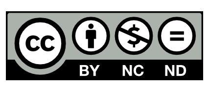
Creative Commons License 4.0
This work is licensed under a Creative Commons
Attribution-Noncommercial-Noderivative 4.0
License
https://creativecommons.org/licenses/by-nc-nd/4.0/
Editors:
Charles Lang
George Siemens
Alyssa Wise
Dragan Gašević
www.solarresearch.com
This handbook is dedicated to Erik Duval, in memoriam.
Erik’s passion and strong convictions were some of the fundamen-
tal pillars on which the learning analytics community was built. His
participation in this community and his scientific contribution to
the field made him one of our leading experts. His personality and
openness made him one of our favorite colleagues. His integrity and
never-ending curiosity made him an example to follow.
All the editors and authors of this handbook were inspired by his
openly shared ideas and research. By similarly sharing ours, we want
to honor his memory, keeping the fire he helped start burning strong.
Introductory Remarks
At the Learning Analytics and Knowledge Conference in 2014, The Handbook of Learning Analytics was con-ceived to support a scientific view of the rapidly growing ecosystem surrounding educational data. A need was identified for a Handbook that could codify ideas and practices within the burgeoning fields of learning analytics and educational data mining, as well as a reference that could serve to increase the coherence of the work being done and broaden its impact by making key ideas easily accessible. Through discussions over 2014-2015 these dual purposes were augmented by the desire to produce a general resource that could be used in teaching the content at a Masters level. It is these core demands that have shaped the publication of the Handbook: rigorous summary of the current state of these fields, broad audience appeal, and formatted with educational contexts in mind.
To balance rigor, quality, open access and breadth of appeal the Handbook was devised to be an introduction to the current state of research in the field. Due to the pace of work being done it is unlikely that any document could capture the dynamic nature of the domains involved. Therefore, instead of attempting to be a terminal publication, the Handbook is a snapshot of the field in 2016, with the full intention of future editions revising these topics as research continues to evolve. We are committed to publishing all future editions of the Hand-book as an open resource to provide access to as broad an audience as possible.
The Handbook features a range of prominent authors across the fields of learning analytics and educational data mining who have contributed pieces that reflect the sum of work within their area of expertise at this point in time. These chapters have been peer reviewed by committed members of these fields and are being published with the endorsement of both the Society for Learning Analytics Research and the International Society for Educational Data Mining.
The Handbook is composed of four sections, each dealing with a different perspective on learning analytics: Foundational Concepts, Techniques and Approaches, Applications and Institutional Strategies. The initial sec-tion, Foundational Concepts, takes a broad look at high-level concepts and serves as an entry point for people unfamiliar with the domain. The first chapter, by Simon Knight and Simon Buckingham Shum, discusses the importance of theory generation in learning analytics, Ulrich Hoppe examines the history and application of computational methods to learning analytics, and Yoav Bergner provides a primer on educational measurement and psychometrics for learning analytics. The final chapter in the section is Paul Prinsloo and Sharon Slade’s consideration of how the ethical implications of learning analytics research and practice is evolving.
The second section of the Handbook, Techniques and Approaches, discusses pertinent methodologies and their development within the field. This section begins with a review of predictive modeling by Chris Brooks and Craig Thompson. This introduction to prediction is expanded upon by Ran Liu and Kenneth Koedinger in their discussion of the difference between predictive and explanatory models. The next chapters deal with differing data sources, the emerging sub-field of content analytics is covered by Vitomir Kovanović, Srećko Joksimović, Dragan Gašević, Marek Hatala and George Siemens. The theme of unstructured data is continued with an introduction and review of Natural Language Processing in learning analytics by Danielle McNamara, Laura Allen, Scott Crossley, Mihai Dascalu and Cecile A. Perret and further augmented by an expansive discussion of related methods in discourse analytics by Carolyn Rosé. Sydney D’Mello then delves into the strides that emotional learning analytics have made both within the learning and computational sciences. From this ex-ploration of the depths of the inner world of students Xavier Ochoa’s chapter on multimodal learning analytics covers the expansive range of ways that student data may be tracked and combined in the physical world. In the final chapter in the Techniques and Approaches section, Alyssa Wise and Jovita Vytasek discuss the processes involved in taking up and using analytic tools.
The third section of the Handbook, Applications, discusses the many and varied ways that methodologies can be applied within learning analytics. This is followed by a consideration of the student perspective through an introduction to how data-driven student feedback can positively impact student performance by Abelardo Pardo, Oleksandra Poquet, Roberto Martínez-Maldonado and Shane Dawson. This is followed by a thorough introduction to the uses, audiences and goals of analytic dashboards by Joris Klerkx, Katrien Verbert, and Erik Duval. The application of a theory-based approach to learning analytics is presented by David Shaffer and An-drew Ruis through a worked example of epistemic network analysis. Networks are further explored through
Daniel Suthers’ description of the TRACES system for hierarchical models of sociotechnical network data. Ap-plications within the realm of Big Data are tackled by three chapters, Peter Foltz and Mark Rosenstein consider large scale writing assessment, René Kizilcec and Christopher Brooks look at randomized experiments within the MOOC context and Steven Tang, Joshua Peterson and Zachary Pardos consider predictive modelling using highly granular action data. Automated prediction is further developed in a tutorial on recommender systems by Soude Fazeli, Hendrik Drachsler and Peter Sloep. This is followed by a thorough introduction to self-reg-ulated learning utilizing learning analytics by Phil Winne. After which Negin Mirriahi and Lorenzo Vigentini consider the complexities of analyzing user video use. The final chapter in the Applications section considers adult learners through Allison Littlejohn’s analysis of professional learning analytics.
The final section of the Handbook, Institutional Strategies & Systems Perspectives, is designed to help readers understand the practical challenges of implementing learning analytics at an institutional or system level. Three chapters discuss aspects pertinent to realizing a mature learning analytics ecosystem. Ruth Crick tackles the varied processes involved in developing a virtual learning infrastructure, Linda Baer and Donald Norris speak to challenges of utilizing learning analytics within institutional settings and Rita Kop, Helene Fournier and Guillaume Durand take a critical stance on the validity of educational data mining and learning analytics for measuring and claiming results in educational and learning settings. Elana Zeide provides an in-depth analysis of the state of student privacy in a data rich world. The final chapters in the Handbook discuss linked data, Davide Taibi and Stefan Dietze cover the utilization of the LAK dataset and Amal Zouaq, Jelena Jovanović, Srecko Joksimović and Dragan Gašević consider the potential of linked data generally to improve education.
Ultimately, our aim for the Handbook is to increase access to the field of learning analytics and enliven the discussion of its many areas and sub-domains and so, in some small way, we can contribute to the improvement of education systems and aid student learning.
Charles Lang
George Siemens
From the President of the Society for Learning
Analytics Research
As a field of academic study, Learning Analytics has grown at a remarkably rapid pace. The first Learning An-alytics and Knowledge (LAK) conference, was held in Banff in 2011. The call for this conference generated 38 submissions and 130 people attended the meeting. By the next year, the conference had more than doubled the number of paper submissions, and registration closed early when the conference sold out at 230 participants. Both paper submissions and attendance numbers at LAK have increased every year since. Now in 2017, the 7th LAK conference returns to Vancouver with a program representing work from 32 countries, featuring 64 papers, 67 posters and demos, and 16 workshops. At the writing of this preface, the conference is expected to reach or exceed the 426 participants who attended LAK 2016.
The growth of learning analytics is not only demonstrated by a bigger and broader conference; the field has matured as well. In 2013 the Society for Research on Learning Analytics (SoLAR) was officially incorporated as a professional society, and the first issue of the Journal of Learning Analytics appeared in May, 2014. Publications of learning analytics research are not limited to the society’s conference proceedings and journal. Special issues focused on learning analytics have appeared in journals concerned with education, psychology, computing and the social sciences. A Google Scholar search of the term “learning analytics” produces over 14,000 hits, coming from a broad range of journals such as Educational Technology & Society, American Behavioral Scien-tist, Computers in Human Behavior, Computers & Education, Teaching in Higher Education, and many others.
All of this shows that the body of research representing work in the learning analytics field has also grown rapidly. So much so that it is an opportune time to produce a learning analytics handbook that can serve as a recognized resource for students, instructors, administrators, practitioners and industry leaders. This volume provides an introduction to the breadth of learning analytics research, as well as a framework for organizing ideas in terms of foundational concepts, techniques and approaches, applications, and institutional strategies and systems perspectives. Given the pace of the research, it is likely that a static handbook would be out of date quickly. Therefore, SoLAR offers this volume as an open resource with plans to update the content and release new editions regularly. Meanwhile, this volume provides an extensive view into what we know now from the perspective of leading experts in the field. Many of these authors have been involved in learning analytics since that first meeting in Banff, while others have helped broaden and enrich the field by bringing in new theory, concepts, and methodologies. Further, readers will find chapters not only on technical and conceptual topics, but ones that thoughtfully address a number of important but sensitive issues arising from research utilizing educational data, including ethics of data use, student privacy, and institutional challenges resulting from local and national learning analytics initiatives.
As the newly elected president of the Society for Learning Analytics Research it is my great pleasure to wel-come you to this handbook. My own history with the society dates back to the first Vancouver meeting where I found a fascinating group of researchers who shared my excitement about the questions we could now ask about learning by leveraging the increasing volumes of data produced by new educational technologies. These were data geeks for sure, but I also found people with a sense of purpose and strong commitment to diversity and inclusion. These values are reflected in the research we do and in the community we have built to advance that work. This volume reflects those values by its nature: the chapters come from authors around the world representing very different disciplinary training, whose work has an orientation to action and supporting educational advances for all learners.
With the publication of this volume we welcome old friends and introduce the field to newcomers. I am confi-dent that you will find here research that will simultaneously excite you with ideas about how we can change the world of education and frustrate you with the evidence of the challenges ahead for doing so. We invite you to join us in this adventure. If you would like to become directly involved in learning analytics, SoLAR has several ways for you to do so:
• Join our professional society (SoLAR):
• https://solaresearch.org/membership/
• Submit your work and/or attend our annual conference (LAK):
• https://solaresearch.org/events/lak/
• Participate in a Learning Analytics Summer Institute (LASI):
• https://solaresearch.org/events/lasi/
• Read and submit to our journal (JLA):
• https://solaresearch.org/stay-informed/journal/
I hope you will enjoy and be stimulated by this volume and the others to come.
March, 2017
Stephanie D. Teasley, PhD
President, Society for Learning Analytics Research
Research Professor, University of Michigan
From the President of the International
Educational Data Mining Society
Data science impacts many aspects of our life. It has been transforming industries, healthcare, as well as other sciences. Education is not an exception. On the contrary, an explosion of available data has revolutionized how much education research is done. An emerging area of educational data science is bringing together researchers and practitioners from many fields with an aim to better understand and improve learning processes through data-driven insights. Learning analytics is one of the new young disciplines in the area. It studies how to employ data mining, machine learning, natural language processing, visualization, and human-computer interaction approaches among others to provide educators and learners with insights that might improve learning pro-cesses and teaching practice.
A typical learning analytics question in the recent past would be how to predict accurately and early enough in the learning process whether a student in a course or in a study program is unlikely to complete it successfully. Since then, the landscape of learning analytics has been getting wider and wider as it becomes possible to track the behavior of learners and teachers in learning management systems, MOOCs, and other digital platforms that support educational processes. Of course, being able to collect larger volumes and varieties of educational data is only one of the necessary ingredients. It is essential to adopt, adapt and develop new computational techniques for analyzing it and for capitalizing on it.
The variety of questions that are being asked of the data are getting richer and richer. Many questions can be answered with well-established data mining techniques and other computational approaches, including but not limited to classification, clustering and pattern mining. More specialized educational data mining and learning analytics approaches, for instance Bayesian Knowledge Tracing, modeling student engagement, natural language analysis of learning discourse, student writing analytics, social network analysis of student interactions and performance monitoring with interactive dashboards are being used to get deeper insights into different learning processes.
I had the privilege of being among the first readers of the Handbook of Learning Analytics, before it was published. In my view the Handbook is a good first step for anyone wishing to get an introduction to learning analytics and to develop her conceptual understanding. The chapters are written in an accessible form and cover many of the essential topics in the field. The handbook would also benefit young and experienced learning analytics researchers, as well as ambassadors and enthusiasts of learning analytics.
The handbook goes beyond presenting learning analytics concepts, state-of-the-art techniques for analyzing different kinds of educational data, and selected applications and success stories from the field. The editors invited prominent researchers and practitioners of learning analytics and educational data mining to discuss important questions that are often not well understood by non-experts. Thus, some of the chapters invite readers to think about the inherently multidisciplinary research of learning analytics and about the value of at least considering, if not building on, established theories of learning sciences, educational psychology, and edu-cation research rather than going down the purely data-driven path. Other chapters emphasize the importance of understanding the difference between explanatory and predictive modeling or predictive and prescriptive analytics. This is especially useful for those who are responsible for, or simply thinking of, deploying learning analytics in an institution, or linking it with policy making processes or developing personalized learning ideas.
The future of learning analytics is bright. Educational institutions already see the many promising opportuni-ties that it provides for advancing our understanding of different learning processes and enhancing them in a variety of educational settings. These include analytics-driven interventions in remedial education, advising students, better curriculum modeling and degree planning, and understanding student long-term success factors. We can witness how the potential of learning analytics is recognized not only by institutions, but also by companies developing educational software such as intelligent tutors, educational games, learning management systems or MOOC platforms. We can see that more and more of these tools include at least some elements of learning analytics.
Nevertheless, I would encourage the readers to think about the broad spectrum of ethical issues and account-ability of learning analytics. We can collect valuable educational data and already have powerful tools for gaining insights into learning and the effectiveness of educational processes. We expand the set of questions asked to the data. Educational researcher and data scientists often have a false belief that computational approaches and off-the-shelf tools have no bad intent and if the tools are used correctly, then employing learning analyt-ics is bound to produce success. It is critically important to educate early adopters of learning analytics not only about techniques and the kinds of findings from the data they facilitate, but also about their limits. The classical examples would remain the difference between correlation, predictive correlation and causation, and the interpretation of the statistical significance of the results. The Handbook provides a valuable educational support in this context too. Furthermore, authors of selected chapters share their thoughts and stimulate the discussion of several topics that have not been exhaustively studied in the field yet. I hope the Handbook will also help newcomers to realize the extent to which learning analytics can and should support educators and learners. Even more so, it is important to study in what ways learning analytics may mislead and potentially harm students, teachers and the ecosystems they are in and how to prevent this.
I would like to conclude with a forecast that learning analytics and educational data science will gain a deeper and more holistic understanding of what it means for learning analytics to be ethics-aware, accountable and transparent and how to achieve that. This will be instrumental for unlocking the full potential of learning an-alytics and driving the further healthy development of the field.
March 2017
Professor Mykola Pechenizkiy,
President of IEDMS – International Educational Data Mining Society
Chair Data Mining, Eindhoven University of Technology, the Netherlands
Table of Contents
SECTION 1. FOUNDATIONAL CONCEPTS
Chapter 1. Theory and Learning Analytics 17-22
Simon Knight and Simon Buckingham Shum
Chapter 2. Computational Methods for the Analysis of Learning and Knowledge 23-33
Building Communities
Urlich Hoppe
Chapter 3. Measurement and its Uses in Learning Analytics 34-48
Yoav Bergner
Chapter 4. Ethics and Learning Analytics: Charting the (Un)Charted 49-57
Paul Prinsloo and Sharon Slade
SECTION 2. TECHNIQUES & APPROACHES
Chapter 5. Predictive Modelling in Teaching and Learning 61-68
Christopher Brooks and Craig Thompson
Chapter 6. Going Beyond Better Data Prediction to Create Explanatory Models of 69-76
Educational Data
Ren Liu and Kenneth Koedinger
Chapter 7. Content Analytics: The Definition, Scope, and an Overview of Published 77-92
Research
Vitomir Kovanović, Srećko Joksimović, Dragan Gašević, Marek Hatala, and George Siemens
Chapter 8. Natural Language Processing and Learning Analytics 93-104
Danielle McNamara, Laura Allen, Scott Crossley, Mihai Dascalu, and Cecile Perret
Chapter 9. Discourse Analytics 105-114
Carolyn Rosé
Chapter 10. Emotional Learning Analytics 115-127
Sidney D’Mello
Chapter 11. Multimodal Learning Analytics 129-141
Xavier Ochoa
Chapter 12. Learning Analytics Dashboards 143-150
Joris Klerkx, Katrien Verbert and Erik Duval
Chapter 13. Learning Analytics Implementation Design 151-160
Alyssa Wise and Jovita Vytasek
SECTION 3. APPLICATIONS
Chapter 14. Provision of Data-Driven Student Feedback in LA and EDM 163-174
Abelardo Pardo, Oleksandra Poquet, Roberto Martínez-Maldonado and Shane Dawson
Chapter 15. Epistemic Network Analysis: A Worked Example of Theory-Based 175-187
Learning Analytics
David Williamson Shaffer and Andrew Ruis
Chapter 16. Multilevel Analysis of Activity and Actors in Heterogeneous Networked 189-197
Learning Environments
Daniel Suthers
Chapter 17. Data Mining Large-Scale Formative Writing 199-210
Peter Foltz and Mark Rosenstein
Chapter 18. Diverse Big Data and Randomized Field Experiments in Massive Open 211-222
Online Courses
Rene Kizilcec and Christopher Brooks
Chapter 19. Predictive Modelling of Student Behaviour Using Granular Large-Scale 223-233
Action Data
Steven Tang, Joshua Peterson and Zachary Pardos
Chapter 20. Applying Recommender Systems for Learning Analytics Data: A Tutorial 234-240
Soude Fazeli, Hendrik Drachsler and Peter Sloep
Chapter 21. Learning Analytics for Self-Regulated Learning 241-249
Philip Winne
Chapter 22. Analytics of Learner Video Use 251-267
Negin Mirriahi and Lorenzo Vigentini
Chapter 23. Learning and Work: Professional Learning Analytics 269-277
Allison Littlejohn
SECTION 4. INSTITUTIONAL STRATEGIES &
SYSTEMS PERSPECTIVES
Chapter 24. Addressing the Challenges of Institutional Adoption 281-289
Cassandra Colvin, Shane Dawson, Alexandra Wade, and Dragan Gašević
Chapter 25. Learning Analytics: Layers, Loops and Processes in a Virtual Learning 291-308
Infrastructure
Ruth Crick
Chapter 26. Unleashing the Transformative Power of Learning Analytics 309-318
Linda Baer and Donald Norris
Chapter 27. A Critical Perspective on Learning Analytics and Educational Data 319-326
Mining
Rita Kop, Helene Fournier and Guillaume Durand
Chapter 28. Unpacking Student Privacy 327-335
Elana Zeide
Chapter 29. Linked Data for Learning Analytics: The Case of the LAK Dataset 337-346
Davide Taibi and Stefan Dietze
Chapter 30. Linked Data for Learning Analytics: Potentials and Challenges 347-355
Amal Zouaq, Jelena Jovanović, Srećko Joksimović and Dragan Gašević
SECTION 1
FOUNDATIONAL
CONCEPTS
PG 16 HANDBOOK OF LEARNING ANALYTICS
Chapter 1: Theory and Learning Analytics
Simon Knight, Simon Buckingham Shum
Connected Intelligence Centre, University of Technology Sydney, Australia
DOI: 10.18608/hla17.001
ABSTRACT
The challenge of understanding how theory and analytics relate is to move “from clicks to constructs” in a principled way. Learning analytics are a specific incarnation of the bigger shift to an algorithmically pervaded society, and their wider impact on education needs careful consideration. In this chapter, we argue that by design — or else by accident — the use of a learning analytics tool is always aligned with assessment regimes, which are in turn grounded in epistemological assumptions and pedagogical practices. Fundamentally then, we argue that deploying a given learning analytics tool expresses a commitment to a particular educational worldview, designed to nurture particular kinds of learners. We outline some key provocations in the development of learning analytic techniques, key questions to draw out the purpose and assumptions built into learning analytics. We suggest that using “claims analysis” — analysis of the implicit or explicit stances taken in the design and deploying of technologies — is a productive human-centred method to address these key questions, and we offer some examples of the method applied to those provocations.
Keywords: Theory, assessment regime, claims analysis
In what has become a well-cited, popular article in will always be significant? […] In sum, when
Wired magazine, in the new era of petabyte-scale working with big data, theory is actually more
data and analytics, Anderson (2008) envisaged the important, not less, in interpreting results and
death of theory, models, and the scientific method. No identifying meaningful, actionable results.
longer do we need to create theories about how the For this reason we have offered Data Geology
world works, because the data will tell us directly as (Shaffer, 2011; Arastoopour et al., 2014) and Data
we discern, in almost real time, the impacts of probes Archeology (Wise, 2014) as more appropriate
and changes we make. metaphors than Data Mining for thinking
This high profile article and somewhat extreme conclu about how we sift through the new masses of - data while attending to underlying conceptual sion, along with others (see, for example, Mayer-Schön - relationships and the situational context. berger & Cukier, 2013), has, not surprisingly, attracted
criticism (boyd & Crawford, 2011; Pietsch, 2014). Data-intensive methods are having, and will continue
Educational to have, a transformative impact on scientific inquiry researchers are one community interested (Hey, Tansley, & Tolle, 2009), with familiar “big science” in the application of “big data” approaches in the form examples including genetics, astronomy, and high of learning analytics. A critical question turns on ex - energy physics. The BRCA2 gene , Red Dwarf stars, actly how theory could, or should shape research in and the Higgs bosun do not hold strong views on being this new paradigm. Equally, a critical view is needed computationally modelled, or who does what with the on how the new tools of the trade enhance/constrain results. However, when people become aware that theorizing by virtue of what they draw attention to, their behaviour is under surveillance, with potentially and what they ignore or downplay. Returning to our important consequences, they may choose to adapt opening provocation from Anderson, the opposite or distort their behaviour to camouflage activity, or conclusion is drawn by Wise and Shaffer (2015, p. 6): to game the system. Learning analytics researchers What counts as a meaningful finding when the aiming to study learning using such tools must do so number of data points is so large that something aware that they have adopted a particular set of lenses
CHAPTER 1 THEORY AND LEARNING ANALYTICS PG 17
on “learning” that amplify and distort in particular dence, at scale, the kinds of process-intensive learning
ways, and that may unintentionally change the system that educators have long argued for, but have to date
being tracked. Researchers should stay alert to the proven impractical? Exactly what one seeks to do with
emerging critical discourse around big data in soci- analytics is at the heart of this chapter.
ety, data-intensive science broadly, as well as within To design analytics-based lenses — with our eyes wide education where the debate is at a nascent stage. open to the risks of distorting our definition of “learning”
Let us turn now to educators and learners. The potential in our desire to track it computationally — we must
of learning analytics is arguably far more significant unpick what is at stake when classification schemes,
than as an enabler of data-intensive educational machine learning, recommendation algorithms, and
research, exciting as this is. The new possibility is visualizations mediate the relationships between
that educators and learners — the stakeholders who educators, learners, policymakers, and researchers.
constitute the learning system studied for so long by The challenge of understanding how theory and an-
researchers — are for the first time able to see their alytics relate is to move “from clicks to constructs”
own processes and progress rendered in ways that in a principled way.
until now were the preserve of researchers outside the Learning analytics are a specific incarnation of the
system. Data gathering, analysis, interpretation, and bigger shift to an algorithmically pervaded society. The
even intervention (in the case of adaptive software) is frame we place around the relationship of theory to
no longer the preserve of the researcher, but shifts to learning analytics must therefore be enlarged beyond
embedded sociotechnical educational infrastructure. considerations of what is normally considered “edu-
So, for educators and learners, the interest turns on cational theory,” to engage with the critical discourse
the ability to gain insight in a timely manner that could around how sociotechnical infrastructures deliver
improve outcomes. computational intelligence in society.
Thus, with people in the analytic loop, the system The remainder of the chapter argues that by design becomes reflexive (people change in response to the — or else by accident — the use of a learning analytics act of observation, and explicit feedback loops), and tool is always aligned with assessment regimes , which we confront new ethical dilemmas (Pardo & Siemens, are in turn grounded in epistemological assumptions 2014; Prinsloo & Slade, 2015). The design challenge and pedagogical practices . Moreover, as we shall ex - moves from that of modelling closed, deterministic plain, a long history of design thinking demonstrates systems, into the space of “wicked problems” (Rittel, that designed artifacts unavoidably embody implicit 1984) and complex adaptive systems (Deakin Crick, values and claims. Fundamentally then, we argue that 2016; Macfadyen, Dawson, Pardo, & Gašević, 2014). As deploying a given learning analytics tool expresses a we hope to clarify, for someone trying to get a robust commitment to a particular educational worldview, measure of “learning” from data traces, such reflexivity designed to nurture particular kinds of learners. will be either a curse or a blessing, depending on how
important learner agency and creativity are deemed THEORY INTO PRACTICE to be, how fixed the intended learning outcomes are,
whether analytical feedback loops are designed as
interventions to shape learner cognition/interaction, In an earlier paper (Knight, Buckingham Shum, & Lit-
and so forth. tleton, 2014) we put forward a triadic depiction of the
site of political and commercial interests, education inter-relations among the more or less theoretically is driven by policy imperatives for “impact evidence,” grounded stances we take through our pedagogic and and software products shipping with analytics dash- assessment practices and policies, and their underlying boards. While such drivers are typically viewed with epistemological implications and assumptions. suspicion by educational practitioners and researchers, The use of a triangle highlights these tensions: that the opportunity is to be welcomed if we can learn how assessment can be the driving force in how we un- to harness and drive the new horsepower offered by derstand what “knowledge” is; that assumptions about analytics engines, in order to accelerate innovation and pedagogy (for example, a kind of folk psychology; Olson improve evidence-based decision-making. Systemic & Bruner, 1996) influence who we assess and how; that both a research field and as a professional practice, as depicted in Figure 1.1 (we refer the reader to this is on the threshold of a data-intensive revolution paper for further discussion of the depicted relation- analogous to that experienced by other fields. As the ships). Our intention was to illustrate the tensions and Our view is that it is indeed likely that education, as in the development of learning analytic techniques, relationship between elements of theory and practice
educational shifts are of course tough to effect, but
could it be that analytics tools offer new ways to evi- assessment and pedagogy are sometimes in tension,
where the desire for summative assessment overrides
PG 18 HANDBOOK OF LEARNING ANALYTICS
pedagogically motivated formative feedback; and that centred on the triad of epistemology, pedagogy, and
drawing alignment between one’s epistemological assessment.
view (of the nature of knowledge) and assessment We use these provocations to illustrate how the im- or pedagogy practices is challenging — relationships plicit “claims” made by a learning analytics tool can between the three may be implied, but they are not be deconstructed. The approach invites reflection entailed (Davis & Williams, 2002). Of course, other on the affordances of the tool’s design at different visualizations might be imagined, and the theoretical levels (including data model, learner experience, and and practical purposes for which such heuristics are learning analytics visualization). devised is important to consider. To give two exam - Computer-supported learning — individual or collabo- ples, we have considered versions of the depiction in rative — covers a huge array of learning contexts. Such which: 1) assessment and pedagogy are built on the tools support many forms of rich learner interaction foundation of epistemology (in a hierarchical structure), with peers and resources, which are implicit claims and 2) are brought into alignment in a Venn diagram about learning. However, the emergence of computa- structure, with greater overlap implying a greater tional analytics enables designers — and by extension complementarity of the theorized position. the artifacts — to value certain behaviours above
others, namely, those logged, analyzed, and rendered
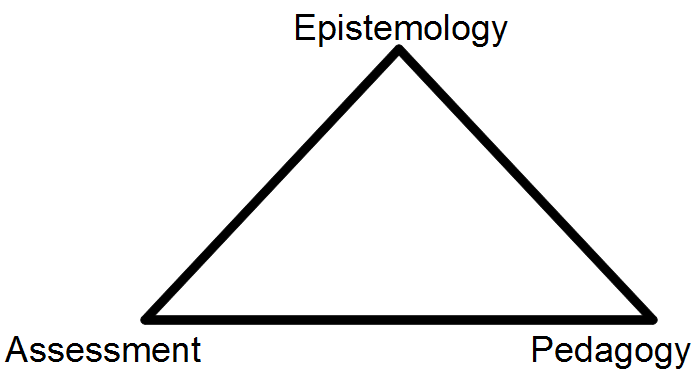
visible to some stakeholder group. The implicit claim
is that these are particularly important behaviours.
We measure what we value.
We provide a set of “six W” questions to be considered
in the development of learning analytics. Of course,
across these questions, there is overlap, and any one
question might be expressed in multiple ways. The
Figure 1.1. intention is neither to prescribe these as the only The Epistemology–Assessment–Pedagogy
(EPA) triad (Knight et al., 2014, p. 25). questions to be asked, nor that within each element
of the triad only particular questions should apply.
Learning analytics, as a new form of assessment As the descriptions of the provocations make clear,
instrument, have potential to support current edu- within each facet of the triad, multiple theoretical
cational practices, or to challenge them and reshape questions can and should be asked. Rather, we hope
education; considering their theoretic-positioning to provide heuristic guidance to readers in developing
is important in understanding the kind of education their own analytics. systems we aim for. For example, learning analytics Epistemology — What Are We could have the potential to 1) marginalize learners (and Measuring? educators) through the transformation of education The first provocation invites the analytic designer
into a technocratic system; 2) limit what we talk about to consider what “knowledge” looks like within the
as “learning” to what we can create analytics for; and analytic approach being developed, asking, What
3) exclude alternative ways of engaging in activities are we trying to measure? We pose this question to (that may be hard to track computationally), to the prompt consideration of the connection between a
detriment of learners. Algorithms may both ignore, conceptual account of the object of measurement (the
and mask some key elements of the learning process. knowledge being assessed), and a practical account of
The extent to which analytics can usefully support the methods and measures used to quantify activity
educators and learners is an important question. These and outputs within particular tasks. Asking What
are pressing issues given the rise of learning analytics, are we trying to measure? encourages us to consider and increasing interest in mass online education at our learning design, the skills and facts we want our
both the pre-university and university levels (e.g., the students to learn, and what it means for students to
growing interest in MOOCs). “come to know.” This is a question of epistemology;
it concerns the nature of the constructs, why they
EPA PROVOCATIONS “count” as knowledge, the evidentiary standard and
kind required for a claim of knowledge to be made.
Expanding on this prior work, the rest of the chapter
aims to illustrate the application of our approach, with This knowledge might be of a more broadly proposi-
the aim of providing actionable guidance for those tional kind (sometimes characterized as “knowledge
developing learning analytics approaches and tools. that,” characterized as recall of facts), a more broad set
To do this, we have developed a set of provocations of skills and characteristics (sometimes characterized
as “knowledge how,” for example, the ability to write
CHAPTER 1 THEORY AND LEARNING ANALYTICS PG 19
an essay), or dispositions to act in particular ways (for to instrumental aims regarding the analytic’s con-
example, as those dispositions recently discussed as tribution to particular skills (perhaps employability
epistemic virtues in epistemology). Evidentiary stan- skills); or university compliance (for example, reporting
dards and types concern the warrants indicative of requirements). It might also relate to pedagogic aims
knowledge, for example, whether knowledge can be such as the support of particular groups of students,
conceptualized in terms of unitary propositions that and so on.
may be recalled more or less appropriately within Pedagogy — Who is the Assessment/
entails the ability to deploy it in some context, the kinds Extending the concern with the nature of the object of of justification and warrant (and the skills underlying particular contexts, whether knowledge of something Analytic For?
these) that cement some claim as knowledge, and so target of the analytic device, provoking the question, assessment above, is a further concern regarding the
on. These are — implicitly or explicitly — the targets Who is the analytic for? In the development of analytic of our measurement. devices (and assessments more broadly), we should Epistemology — How Are We consider who the target of the device is, whether it
Measuring? supports teachers, parents, students, or administrators
Closely related to this conceptual question regarding in understanding some aspect of learning. Is the analytic
the epistemological status of the object of analysis designed to provide insight at a macro (government,
is a question regarding our access — as researchers institutional), meso (school, class), or micro (individual
and educators — to that knowledge. This is a question student or activity) level (Buckingham Shum, 2012),
regarding the epistemological underpinning of our and are there insights across these levels that can be
research and assessment methods. There is a rich effectively made sense of by all stakeholders (Knight,
literature on the various epistemological concerns Buckingham Shum, & Littleton, 2013)?
around quantitative and qualitative research methods, This question regards the desire for analytic insights
with a growing specific interest in digital research at multiple levels of a system, and the ability of indi-
methods. In addition, there is a focused literature in vidual analytic approaches (including their outputs
the philosophy of assessment, exploring the episte- in various forms, such as dashboards) to support
mological concerns in assessment methods (Davis, the following: 1) individual students in developing
1999). Across this literature, issues concerning the their learning; 2) educators in developing their own
subjectivity of approaches, and the ability of meth- practice and in targeting their support at individual
odologies to give insights, are central. The question student needs; and 3) administrators in understanding
invites considerations regarding the ways in which how cohorts are developing and their organizational
analytic methods imply particular epistemologies. needs. As Crick argues in this handbook, a complex
Note that this is not just a question of the reliability of systems conception of analytics for different levels in
our assessment methods, but concerns the ability of the learning system, spanning from private personal
approaches to speak to an externally knowable world data through to shared organizational data, implies
(and the nature of that world). different rationalities and authorities to interpret at
Pedagogy — Why is this Knowledge the different levels (Deakin Crick, 2017).
Important to Us? This question raises a parallel concern regarding The development of analytic approaches in learning the ethical implications in developing analytics that contexts involves making decisions about what knowl - (explicitly or implicitly) target particular groups. This edge will, and will not, be focused on; to measure what concern is at two levels. First, analytics that require we value rather than value merely that which is easily particular forms of technology or participation may measured (Wells & Claxton, 2002). This is, of course, in create new divides between student cohorts, or addition to a conceptual account of the nature of that entrench existing divides. Second, there is an eth - knowledge. These decisions in part relate to debates ical concern regarding the use of student data by around the kinds of important (or powerful) knowledge institutions, particularly where specific consent is in society (see, for example, Young & Muller, 2015) not given, where no direct learning gain is directed and the role of knowledge-based curricula, including to those students. This second issue is a particular discussions around employability (or the balance of consideration in cases wherein student data may be vocational and liberal educational aims), 21 st -century used largely to reduce institutional costs or the level skills, and so on. This question asks, Why does this of support given to particular students. analytic matter to educators and learners? Assessment — Where Does the Answering this question might in part be salient to the Assessment Happen? kind of learning theory that the analytic sits within; Obvious though this is, we note that assessment al-
PG 20 HANDBOOK OF LEARNING ANALYTICS
ways takes place in a physical location, in response to or not a particular technology provides after-the-fact
particular task demands, in a sociocultural context, or real-time feedback, and whether this feedback is
with a particular set of tools. Contrast an individual intended to provide a scaffold or model for current
pen-and-paper exam in a silent hall with 300 peers, behaviour, is targeted at future behaviour and learning,
with an emergency response simulation on the ward, or is just intended as a feedback mechanism on prior
with tackling a statistics problem in a MOOC, with work (which may not be covered again).
conflict resolution in relationship counselling. For In our earlier paper, we made a distinction between each context, we must ask not only if the assessment the metaphors of biofeedback and diagnostic learning is meaningful, but also to what extent meaningful analytics. The intention here was to draw a distinction computational analytics can be designed to add value. between formative and summative assessments (re-
Moreover, we should also consider the ways in which spectively). However, while the analogy can be drawn,
the assessment biases particular kinds of response of course systems that provide real-time feedback can
— in sometimes-unintended ways. For example, par- be summative in nature, and can take on a “monitoring”
ticular groups of students, or kinds of knowledge, role towards some end-point. In addition, diagnosis does
might be privileged over others through the design not have the finality perhaps implied by the analogy —
of assessment contexts with a very narrow definition diagnosis provides insight into what is going wrong,
of achievement; through requirements for behaviours which may be actionable by the “patient” (student) or
that not all students might engage in; through the use “doctor” (educator). Instead, then, the focus should
of technologies that unfairly assume socioeconomic be on whether the analytic device is targeted at a
means; or through separating assessment from the summative snapshot perspective on student learning
applied context in which an expertise can be displayed and monitoring towards that end, or instead, targeted
authentically. at development and improvement over time.
ways in which the particular systems shape the data Across assessments, we should also consider the CONCLUSION
obtained — note this is a practical concern regarding Through the provocations, we have drawn attention the reliability and validity of methods, rather than the to the ways in which analytic approaches and artifacts related epistemological concern raised above. For ex - subscribe to particular perspectives on learning: they ample, technologies are mediational tools, which shape implicitly make claims across the EPA triad, and the the ways in which people interact with each other and provocations drawn from them. the world around them, and hence, the activity they Tools can be used in many ways, and should not measure. This is true both of the specific technologies, be isolated from their context of use. Interactional and the task design used in assessments; for example, affordances, like beauty, are to some degree “in the the use of “authentic” assessments provides a different eye of the beholder.” We offer these provocations as a range of possible responses than more traditional pragmatic tool for thinking, for designers, educators, pen-and-paper assessments of various kinds. researchers, and students — whether considering how Assessment — When Does the one currently makes use of analytical tools, how one Assessment, and Feedback, Occur? might do in the future, or indeed when designing new A final consideration relates to the temporal context tools for new contexts. We propose that it is productive of learning analytics, asking when the assessment and to consider these provocations in order to reflect on feedback cycle occurs. This provocation is intended the EPA claims being made through the deployment to prompt consideration of the formative or/and of a learning analytic tool within a given context. summative nature of the learning analytic; whether
REFERENCES
Anderson, C. (2008, 23 June). The end of theory: The data deluge makes the scientific method obsolete. Wired
Magazine. http://archive.wired.com/science/discoveries/magazine/16-07/pb_theory
Arastoopour, G., Buckingham Shum, S., Collier, W., Kirschner, P., Knight, S. K., Shaffer, D. W., & Wise, A. F.
(2014). Analytics for learning and becoming in practice. In J. L. Polman et al. (Eds.), Learning and Becoming
in Practice: Proceedings of the International Conference of the Learning Sciences (ICLS ’14), 23–27 June 2014,
Boulder, CO, USA (Vol. 3, pp. 1680–1683). Boulder, CO: International Society of the Learning Sciences
boyd, danah, & Crawford, K. (2011, September). Six provocations for big data. Presented at A Decade in Internet
Time: Symposium on the Dynamics of the Internet and Society. http://ssrn.com/abstract=1926431
CHAPTER 1 THEORY AND LEARNING ANALYTICS PG 21 Buckingham Shum, S. (2012). Learning analytics policy brief. UNESCO. http://iite.unesco.org/pics/publica-
tions/en/files/3214711.pdf
Davis, A. (1999). The limits of educational assessment. Wiley.
Davis, A., & Williams, K. (2002). Epistemology and curriculum. In N. Blake, P. Smeyers, & R. Smith (Eds.), Black-
well guide to the philosophy of education. Blackwell Reference Online.
Deakin Crick, R. (2017). Learning analytics: Layers, loops, and processes in a virtual learning infrastructure. In
C. Lang & G. Siemens (Eds.), Handbook on Learning Analytics (this volume).
Hey, T., Tansley, S., & Tolle, K. (Eds.). (2009). The fourth paradigm: Data-intensive scientific discovery. Red-
mond, WA: Microsoft Research. http://research.microsoft.com/en-us/collaboration/fourthparadigm/
Knight, S., Buckingham Shum, S., & Littleton, K. (2013). Collaborative sensemaking in learning analytics. CSCW
and Education Workshop (2013): Viewing education as a site of work practice, co-located with the 16th ACM
Conference on Computer Support Cooperative Work and Social Computing (CSCW 2013), 23 February 2013,
San Antonio, Texas, USA. http://oro.open.ac.uk/36582/
Knight, S., Buckingham Shum, S., & Littleton, K. (2014). Epistemology, assessment, pedagogy: Where learning
meets analytics in the middle space. Journal of Learning Analytics, 1(2). http://epress.lib.uts.edu.au/jour-
nals/index.php/JLA/article/view/3538
Macfadyen, L. P., Dawson, S., Pardo, A., & Gašević, D. (2014). Embracing big data in complex educational
systems: The learning analytics imperative and the policy challenge. Research & Practice in Assessment, 9,
17–28.
Mayer-Schönberger, V., & Cukier, K. (2013). Big data: A revolution that will transform how we live work and
think. London: John Murray Publisher.
Olson, D. R., & Bruner, J. S. (1996). Folk psychology and folk pedagogy. In D. R. Olson & N. Torrance (Eds.), The
Handbook of Education and Human Development (pp. 9–27). Hoboken, NJ: Wiley-Blackwell.
Pardo, A., & Siemens, G. (2014). Ethical and privacy principles for learning analytics. British Journal of Educa-
tional Technology, 45(3), 438–450. http://doi.org/10.1111/bjet.12152
Pietsch, W. (2014). Aspects of theory-ladenness in data-intensive science. Paper presented at the 24th Biennial
Meeting of the Philosophy of Science Association (PSA 2014), 6–9 November 2014, Chicago, IL. http://phils-
ci-archive.pitt.edu/10777/
Prinsloo, P., & Slade, S. (2015). Student privacy self-management: Implications for learning analytics. Proceed-
ings of the 5th International Conference on Learning Analytics and Knowledge (LAK ’15), 16–20 March, Pough-
keepsie, NY, USA (pp. 83–92). New York: ACM.
Rittel, H. (1984). Second generation design methods. In N. Cross (Ed.), Developments in design methodology (pp.
317–327). Chichester, UK: John Wiley & Sons.
Shaffer, D. W. (2011, December). Epistemic network assessment. Presentation at the National Academy of Edu-
cation Summit, Washington, DC.
Wells, G., & Claxton, G. (2002). Learning for life in the 21st century: Sociocultural perspectives on the future of
education. Hoboken, NJ: Wiley-Blackwell.
Wise, A. F. (2014). Data archeology: A theory informed approach to analyzing data traces of social interaction
in large scale learning environments. Proceedings of the Workshop on Modeling Large Scale Social Interac-
tion in Massively Open Online Courses at the 2014 Conference on Empirical Methods in Natural Language
Processing (EMNLP 2014), 25 October 2014, Doha, Qatar (pp. 1–2). Association for Computational Linguis-
tics. https://www.aclweb.org/anthology/W/W14/W14-4100.pdf
Wise, A. F., & Shaffer, D. W. (2015). Why theory matters more than ever in the age of big data. Journal of Learn-
ing Analytics, 2(2), 5–13.
Young, M., & Muller, J. (2015). Curriculum and the specialization of knowledge: Studies in the sociology of educa-
tion. London: Routledge.
PG 22 HANDBOOK OF LEARNING ANALYTICS
Chapter 2: Computational Methods for the Analysis
of Learning and Knowledge Building Communities
H. Ulrich Hoppe
Department of Computer Science and Applied Cognitive Science, University of Duisburg-Essen, Germany
DOI: 10.18608/hla17.002
ABSTRACT
Learning analytics (LA) features an inherent interest in algorithms and computational methods of analysis. This makes LA an interesting field of study for computer scientists and mathematically inspired researchers. A differentiated view of the different types of approaches is relevant not only for “technologists” but also for the design and interpre-tation of analytics applications. The “trinity of methods” includes analytics of 1) network structures including actor–actor (social) networks but also actor–artefact networks, 2) processes using methods of sequence analysis, and 3) content using text mining or other techniques of artefact analysis. A summary picture of these approaches and their roots is given. Two recent studies are presented to exemplify challenges and potential benefits of using advanced computational methods that combine different methodological approaches.
Keywords: Trinity of computational methods, knowledge building, actor–artefact networks, resource access patterns
The newly established field of learning analytics (LA) in an LA context. First, the different premises and
features an inherent interest in computational or algo- affordances of the different types of methods should
rithmic methods of data analysis. In this perspective, be well understood. Furthermore, the combination
“analytics” is more than just the empirical analysis and synergetic use of different types of methods is
of learning interactions in technology-rich settings, often desirable from an application perspective but
it actually also calls for specific computational and this constitutes new challenges from a conceptual as
mathematical approaches as part of the analysis. This well as a computational point of view.
line of research builds on techniques of data mining The computational analysis of interaction and com-
and network analysis, which are adapted, specialized, munication in group learning scenarios and learning
and potentially developed further in an LA context. communities has been a topic of research even before
To better understand the potential and challenges the field of LA was constituted, and this work is still
of this endeavor, it is important to introduce some relevant to LA. Early adoptions of social network
distinctions regarding the nature of the underlying analysis (SNA type 1) in this context include the works
methods. Computational approaches used in LA include of Haythornthwaite (2001), Reffay & Chanier (2003),
analytics of 1) network structures including actor–actor Harrer, Malzahn, Zeini, and Hoppe (2007), and De Laat,
(social) networks but also actor–artefact networks, 2) Lally, Lipponen, and Simons (2007). Process-oriented
processes using methods of sequence analysis, and 3) analytics techniques (type 2) have an even longer
content using text mining or other techniques of com- history, especially in the analysis of interactions in
putational artefact analysis. This distinction is not only a computer-supported collaborative learning (CSCL)
relevant for “technologists” who actually work with and context (Mühlenbrock & Hoppe, 1999; Harrer, Martínez-
on the computational methods, it is also important for Monés, & Dimitracopoulou, 2009). Although somewhat
the design of “LA-enriched” educational environments later and less numerous, content-based analyses (type
and scenarios. We should not expect LA to develop 3) based on computational linguistics techniques have
new computational-analytic techniques from scratch been successfully applied to the analysis of collabo-
but to adapt and possibly extend existing approaches rative learning processes (e.g., by Rosé et al., 2008).
CHAPTER 2 COMPUTATIONAL METHODS FOR THE ANALYSIS OF LEARNING AND KNOWLEDGE BUILDING COMMUNITIES PG 23
Network-Analytic Methods tefact. Similarly, we can derive relationships between
Network-analytic approaches, especially social net- artefacts by considering agents (one actor engaged in
work analysis (SNA), are characterized by taking a the creation of two different artefacts) as mediators.
relational perspective and by viewing actors as nodes We have seen an increasing number of studies of ed-
in a network, represented as a graph structure. In this ucational communities using SNA techniques related
sense, a network consists of a set of actors, and a set to networked learning and CSCL. Originally, networks
of ties between pairs of actors (Wasserman & Faust, derived from email and discussion boards were the
1994). The type of pairwise connection defines the most prominent conditions studied, as for example the
nature of each social network (Borgatti, Mehra, Brass, early study of cohesion in learning groups (Reffay &
& Labianca, 2009). Examples of different types of ties Chanier, 2003). Meanwhile, network analysis belongs
are affiliation, friendship, professional, behavioural to the core of LA techniques. The classification of
interaction, or information sharing. The visualization approaches to “social learning analytics” by Ferguson
of such network structures has emerged as a specific and Shum (2012), though not primarily computation-
subfield (Krempel, 2005). Standard methods of net- ally oriented, prominently mentions network analysis
work analysis allow for quantifying the importance of techniques including both actor–actor and actor–ar-
actors by different types of “centrality measures” and tefact networks.
detecting clusters of actors connected more densely Process-Oriented Interaction among each other than the average (detection of “co- Analysis
overview, see Fortunato, 2010). The computational analysis of learner (inter-)actions hesive subgroups” or “community detection” — for an
based on the system’s logfiles has a tradition in CSCL.
A well-known inherent limitation of SNA is that the There were even attempts to standardize action-logging
target representation, i.e., the social network, aggre- formats in CSCL systems to facilitate the sharing and
gates data over a given time window but no longer combination of existing interaction analysis techniques
represents the underlying temporal dynamics (i.e., (Harrer et al., 2009). One of the earliest examples of
interaction patterns). It has been shown that the size applying intelligent computational techniques in a
of the time window of aggregation has a systematic CSCL context (namely sequential pattern recognition)
influence on certain network characteristics such was suggested and exemplified by Mühlenbrock and
as subcommunity structures (Zeini, Göhnert, Heck- Hoppe (1999). This approach was later used in an
ing, Krempel, & Hoppe, 2014). To explicitly address empirical context to pre-process CSCL action logs in
time-dependent effects, SNA techniques have been order to automatically detect the occurrence of certain
extended to analyzing time series of networks in collaboration patterns such as “co-construction” or
dynamic approaches. “conflict” (Zumbach, Mühlenbrock, Jansen, Reimann,
It is important to acknowledge that network analytic & Hoppe, 2002).
techniques (even under the heading of SNA) do not Whereas these approaches were developed in a learn-
exclusively deal with actors and social relations as ing-related research context, there are also more
basic elements. So-called “affiliation networks” or general techniques that can be adapted and used, such
“two-mode networks” (Wasserman & Faust, 1994) as the scalable platforms management forum (SPMF)
are based on relations between two distinct types and library of sequential patterns mining methods
of entities, namely actors and affiliations. Here, the (Fournier-Viger et al., 2014). In an LA context, SPMF is
“affiliation” type can be of a very different nature, used by the LeMo tool suite for the analytics of activities
including, for example, publications as affiliations in on online learning platforms (Elkina, Fortenbacher,
relation to authors as actors in the context of coauthor- Merceron, 2013). In another recent study, Bannert,
ing networks. In general, two-mode networks can be Reimann, & Sonnenberg (2014) have used “process
used to model the creation and sharing of knowledge mining,” a computational technique with roots in au-
artefacts in knowledge building scenarios. In pure form, tomata theory, to characterize patterns and strategies
these networks are assumed to be bipartite, i.e., only in self-regulated learning.
alternating links actor–artefact (relation “created/ Content Analysis Using Text-Mining modified”) or artefact–actor (relation “created-by/ Methods
“folded” into homogeneous (one-mode) networks of man interpretation and coding often used as input to quantitative empirical research, as discussed by either only actors or only artefacts. Here, for example, Strijbos, Martens, Prins, and Jochems (2006) from a two actors would be associated if they have acted operations, such bipartite two-mode-networks can be There is a tradition of content-analysis-based hu- modified-by”) would be allowed. Using simple matrix
upon the same artefact. We would then say that the CSCL perspective. In contrast, from a computational point of view, we are interested in applying informa- relation between the actors was mediated by the ar-
PG 24 HANDBOOK OF LEARNING ANALYTICS
tion-mining techniques to extract semantic information basis, multimode networks can be formed, in which
from artefacts. Obviously, this is of particular interest the concept–concept relations are restricted to cer-
in the case of learner-generated artefacts. Rosé et al. tain inter-category types such as location–person or (2008) has demonstrated the usefulness of automatic person–domain_concept. These representations can text classification with a corpus of CSCL transcripts. in turn be analyzed using network-analytic concepts
Sherin (2013) used computational techniques of con- such as centrality measures or the detection of cohesive
tent analysis on student interview data to discover subgroups as a network-based clustering technique.
the students’ understanding of science concepts. Figure 2.1 shows the result of applying NTA to transcripts Content analysis techniques have also been used for from teacher–student workshops in the context of the the clustering of e-learning resources according to European project JuxtaLearn (Hoppe, Erkens, Clough, their similarity (Hung, 2012). He (2013) proposed the Daems, & Adams, 2013). The resulting networks nicely usage of similar techniques for grouping learners’ reflect the different topics from the areas of biology, main topics in student-to-teacher online questions chemistry, and physics, initially presented by students and peer-to-peer chat messages in the context of and then discussed in the whole group. Here topics online video-based learning. (pentagon-shaped nodes) and topic–topic relations are
Typically, these methods of textual content analysis depicted in grey, whereas persons (square nodes) and are based on the “bag of words” model in which the person–topic relations are darker (black).
given order of words in a text is of no relevance to the In the topic–topic network, the three different fields
analysis. This is the case for a variety of probabilistic of science appear as more densely connected islands
topic modelling techniques such as the currently quite (or “cohesive subgroups”) although certain cross-links
popular method of latent Dirichlet allocation (LDA; exist (e.g., diffusion in biology is linked to molecule in Blei, 2012). A method that does take into account the chemistry). The person–topic links allow for judging
positioning of words in a text is network text analysis the importance of the individuals’ contributions in the
(NTA). NTA is a text mining method that connects presentations and discussion. Most contributions stay
content analysis with network representations in that within one subfield. Student S5 stands out in terms of
it extracts a network of concepts from given texts degree centrality (14 connections to different topics)
(Carley, Columbus, & Landwehr, 2013). Links between and with most contributions to physics but one link
concepts are established if the corresponding terms bridging over into chemistry. In the JuxtaLearn project,
co-occur with a certain frequency in a sliding window this approach has been further developed to assess
of pre-specified width that runs over a normalized students’ problems of understanding from question/
version of the text. A “meta thesaurus” allows for answer collections related to science videos (Daems,
introducing different concept categories (e.g., “per- Erkens, Malzahn, & Hoppe, 2014). The extracted net-
son,” “location,” “domain_concept” et cetera). On this
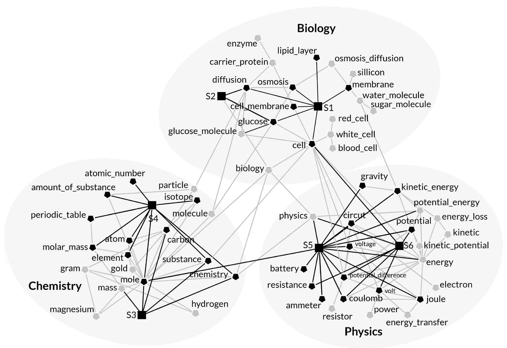
Figure 2.1. Topic–topic and person–topic relations extracted from transcripts of teacher–student
workshops.
CHAPTER 2 COMPUTATIONAL METHODS FOR THE ANALYSIS OF LEARNING AND KNOWLEDGE BUILDING COMMUNITIES PG 25
distribute educational materials of various types, in-
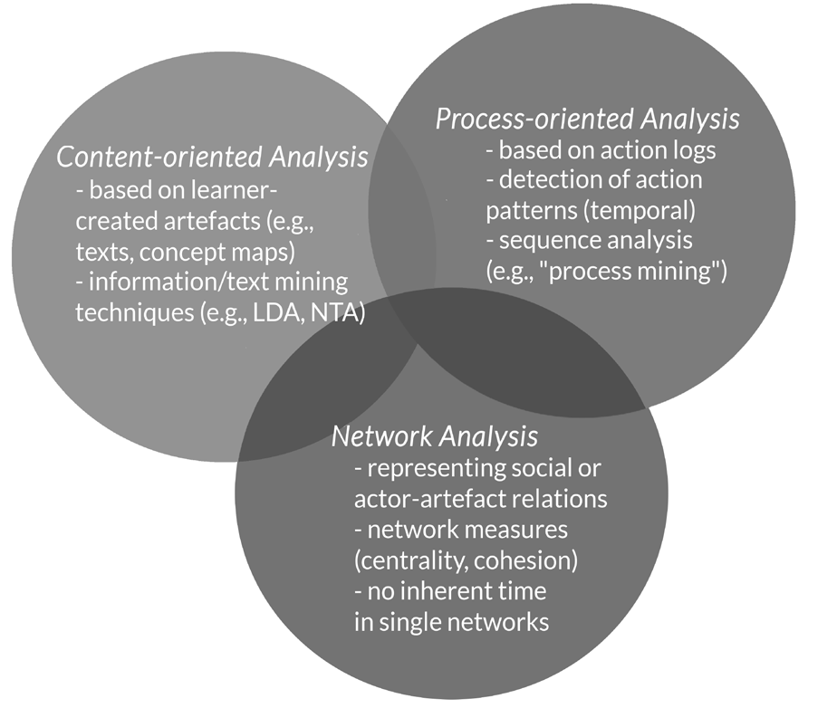
cluding lecture slides, videos, and task assignments,
but also to collect exercise or quiz results and to
facilitate individual or group work using forums or
wikis. In this way, classical presence lectures are
turned into blended learning courses or, according
to Fox (2013), “small private online courses” (SPOCs).
As for the traces that learners leave on such learning
platforms, the most abundant actions are resource
access activities that constitute actor (learner) — ar-
tefact (learning resource) relations. Only in special
cases, such as the co-editing of wiki articles, such data
may be interpreted in a quite straightforward way as
actor–actor relations by “folding away” the mediating
artifact (i.e., inter-connecting co-authors of the same
wiki article). If applied to instructor-provided lecture
Figure 2.2. The “trinity” of methodological materials, the actor–actor relation based on access to
approaches. the same lecture would not be selective and would
result in a dense network. Accordingly, the detection
works of concepts have been contrasted with teach- and tracing of clusters or subcommunities in such
er-created taxonomies. This has led to an enrichment induced actor–actor networks would not be likely to
of the taxonomies and to the identification of specific provide interesting insights.
pirical insights relevant to curriculum construction courses (Hecking, Ziebarth, & Hoppe, 2014), a more sophisticated technique has been used to overcome and curriculum revision (here specifically related to this problem. Applying a subcommunity detection teacher-created micro-curricula). From a pedagogical perspective, this provides em- In a study based on one of the author’s regular master problems of understanding on the part of the learners.
algorithm for two-mode networks to the original
Figure 2.2 summarizes the characteristics of the three learner-resource data leads to much more selective
methodological approaches in terms of their basic and differentiated results in terms of identifying
representational characteristics and typical tech- groups of learners working with certain groups of
niques. Overlapping areas between the approaches materials in a given time slice. This approach is based
are of particular importance for new integrative or on the network-analytic method of “bi-clique perco-
synergetic applications. lation analysis” (Lehmann, Schwarz, & Hansen, 2008),
The remainder of this article presents two case stud- which is a generalization of the clique percolation
ies of applying specific computational techniques method originally defined for one-mode networks
to the analysis of learning and knowledge building (Palla, Derenyi, Farkas, & Vicsek, 2005). The clique
in communities. The first example shows that more percolation method (CPM) builds subcommunities on
sophisticated methods of network analysis may yield the presence of cliques (fully connected subgraphs)
interesting insights in a case where “first order ap in one-mode networks. CPM is of particular interest -
proaches” would fail to resolve interesting structures. for the analysis of collaborating communities because
In that it considers the evolution of patterns of resource the resulting clusters may overlap and thus can also
access on a learning platform over time, it combines be used to identify potential brokers or mediators
the network analytic approach with process aspects. between different subcommunities. This characteristic
The second case describes the adoption and revision also holds for the bi-clique percolation method (BCPM)
of a scientometric method to characterize the evo with two-mode networks. In their original article, -
lution of ideas in a knowledge-building community. Lehmann et al. (2008) identified the higher selectivity
This network-analytic approach is then combined of subcommunity in the two-mode network. We have
with content-based text mining methods. So, both been able to corroborate this in our application case.
examples support the general point that we can expect Figure 2.3 shows how, on principle, BCPM can be used
additional benefit from combining different methods. to trace cohesive clusters in two-mode networks. First,
Example 1: Dynamic Resource Access BCPM is applied to each time slice of the network (left-
Patterns in Online Courses hand side). The diagram on the right abstracts from
Nowadays higher education practice is commonly the individual entities and just depicts and inter-links
supported by learning platforms such as Moodle to between groups of actors (squares) and groups of
resources (circles). In one particular time slice, two
PG 26 HANDBOOK OF LEARNING ANALYTICS
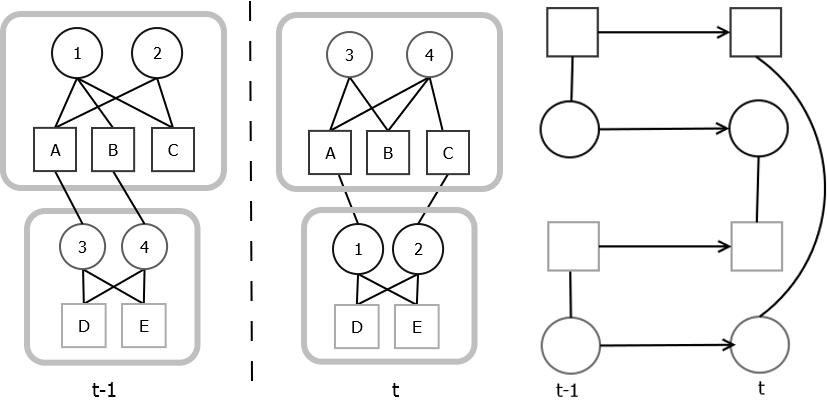
Figure 2.3. Evolving two-mode clusters (left) and the corresponding swim lane diagram (right).
groups of different types are linked by a vertical edge, Figure 2.3.
indicating that these two groups form a bipartite By applying the method to the student–resource net-cluster. Horizontal edges appear across time slices works of particular weeks during the lecture period, and link two groups of the same type, indicating that this analysis reflects certain groupings induced by the two groups can be considered as similar. Here, explicit assignments but also yields some surprising we see a situation where the connection between insights regarding the usage materials. This can be seen, actors and resources is switched from one time slice for example, in Figure 2.4 where the orange coloured to other. In general, it is not clear if the basic groups cluster comprises lecture videos and students who “survive” from one time slice to the other (as is the case seem to have a distinct interest in learning resources here). Palla, Barabasi, and Vicsek (2007) have defined compared to the others. a complex system of transformations (such as “birth,” In addition, the tracking of bipartite student–resource “merger,” “split” et cetera) that can be used to trace clusters was used to investigate student resource-ac-the evolution of subgroups over time. cess behaviour during exam preparation after the last In our study (Hecking et al., 2014), affiliation networks lecture. This period is particular interesting because were built based on students’ access to learning re-by then the entire pool of learning materials, succes-sources during a blended learning course on interactive sively added week by week to the course, was available, learning and teaching technologies. The course was including the wiki articles created by the students. resource intensive in the sense that the traditional The swim lane diagram in Figure 2.5 depicts the resource lecture was accompanied by a variety of additional access patterns found in the course during this phase. learning resources like lecture videos, slides, serious Time slices where build based on a time window size games, as well as a glossary of important concepts of 4 days. The oral exams were distributed over two created by the students themselves as a wiki. Stu-weeks for most of the students, while for another study dents and resources were simultaneously grouped program the examination phase began six weeks after into mixed and overlapping clusters as explained the last lecture. One finding is that a large majority above. Those clusters can be interpreted as a group of students accessed large portions of the learning of students who have a common interest in a group of material over several time slices (highlighted blue learning resources but not necessarily having social box). Between time slices 2 and 5, there was a stable connections. A typical example cluster is depicted in
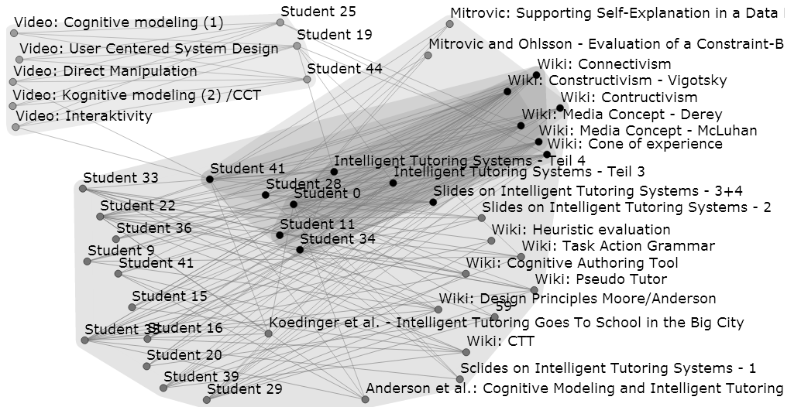
Figure 2.4. Bipartite clusters of students and learning resources (black nodes belong to more than one cluster).
CHAPTER 2 COMPUTATIONAL METHODS FOR THE ANALYSIS OF LEARNING AND KNOWLEDGE BUILDING COMMUNITIES PG 27
mainstreaming group. This suggests that specific
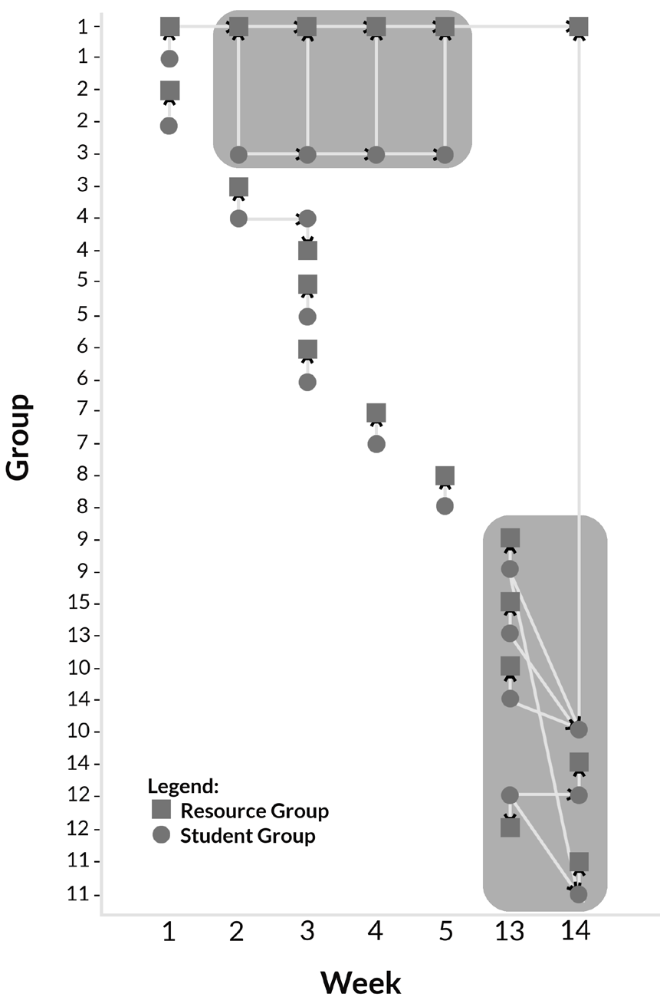
patterns in actor–artefact relations may serve as in-dicators for learning styles.
Example 2: Analyzing the Evolution of
Ideas in Knowledge-building
Communities
Scientific production can be seen as a prototypical case
of knowledge building in a community. Accordingly,
methods developed to analyze scientific production
and collaboration (“scientometric methods”) can plau-sibly also be used to analyze other types of knowledge
building in networked learning communities. Hummon
and Doreian (1989) have proposed the method of “main
path analysis” (MPA) to detect the main flow of ideas
in citation networks with scientific publications as
nodes connected by citations. The original paper uses
a corpus of publications in DNA biology as an example.
The MPA method relies on the acyclic nature of cita-tion graphs. Different from other network-analytic
techniques, MPA has an implicit notion of time that
stems from the nature of citation networks (always
the citing paper is more recent than the cited one). As
a consequence of this time ordering, and given that
every collection is finite, in a corpus, there are always
documents not cited by others (end-points or “sinks”)
Figure 2.5. Swim lane diagram of the evolving stu- in the corpus (“sources”). The idea of MPA is to find dent–resource clusters during the exam phase. as well as documents that do not cite other documents
the most used edges in terms of the information flow
exam preparation. In contrast, the students of the count” or SPC method (Batagelj, 2003). All sources in study program who had their oral exams later had a the network are connected to a single artificial source more diverse resource access behaviour (green box). and all sinks to a single artificial sink. SPC assigns a set of students (stud. group 3) using this material for approach to finding these edges is the “search path from the source nodes to the sink nodes. One common
Also, they began their exam preparation much closer weight to an edge according to the number of paths to the time of the exam compared to the other study from the source to the sink on which the edge occurs. programs. In the last time slice, three of the four student The main path can then be found by traversing the groups merged to a larger group that was then more graph from the source to the sink by using the edges affiliated to the core learning material (res. group 1). with the highest weight, as depicted in Figure 2.6.
On the one hand, this example shows the possible The idea of applying MPA to learning communities expressiveness of sophisticated network analysis working with hyper-linked connections of wiki docu- methods in a case where “first order methods” would ments was first proposed by Iassen Halatchliyski and not be able to resolve interesting and meaningful colleagues (2012). However, MPA cannot be applied structural relations. On the other hand, it demonstrates directly to hyper-linked web documents because the that additional effort is needed to support a dynamic, premise of directed acyclic graphs (DAGs) is usually evolutionary interpretation of network-based models not fulfilled. Since the content of articles in a wiki is (given that each single network is “ignorant” about time). dynamically evolving, hyperlinks between two arti-
In an ongoing research project on supporting small cles do not induce a temporal order between them
group collaboration in MOOCs, we have used this and cycles or even bidirectional citation links are
approach of tracking cohesive clusters of learners and quite frequent. In Halatchliyski, Hecking, Göhnert, &
resources to distinguish “mainstreaming behaviour” Hoppe (2014), we have proposed a formal modification
from more individual or idiosyncratic patterns of re- that allows for applying MPA also to this case. The
source usage on the part of learners (Ziebarth et al., adapted approach considers the particular revisions
2015). Given this model-based distinction, we found (successive versions) of articles instead of the articles
that extrinsic motivation was more prevalent in the themselves. Revisions of an evolving wiki article are
PG 28 HANDBOOK OF LEARNING ANALYTICS
artefacts with stable content as scientific publica- rules. We reconstructed and refined this approach by
tions. In such a network based on versions as nodes, using the concept of dialogue act tagging (Wu, Khan,
we introduce revision edges between successive Fisher, Shuler, & Pottenger, 2005) to enrich the basic
revisions of the same article. The original hyperlinks set of indicators. We have tested our method using
between different articles connect specific revisions several examples of chat protocols from a teacher
and also introduce new versions. This trick avoids community as benchmarks. This allowed us to assess
cyclic structures and allows for applying MPA. In the the agreement between the contingency links generated
context of the Wikiversity learning community, we by our method with previously hand-coded contin-
have used the coincidence of articles with identified gencies (Suthers & Desiato, 2012) based on the F-score
main paths has as a basis to judge the importance or (a measure used in information retrieval combining
weight of contributions and to characterize author precision and recall). The automatically generated
profiles in terms of specific role models (inspirator, contingencies reached an F-score similarity of 83%
connector, worker). These characterizations serve to 97%, which is comparable to the pairwise F-score
as supportive information for the management of similarity of manually analyzed graphs. Figure 2.7 shows
knowledge building communities. a fragment of a chat sequence with contingency links
In a subsequent study (Hoppe, Göhnert, Steinert, & indicated on the right hand side, main path contribu- tions highlighted in bold, and the message categories Charles, 2014), we have combined the network-analytic resulting from dialogue act tagging (e.g., “Statement” method of MPA with content analyses to analyze chat or “ynQuestion”) added in brackets. interactions in an educational community ( Tapped
In — see Farooq, Schank, Harris, Fusco, & Schlager, The main path information should be interpreted as
2007). Here, the characteristic of chat as a synchronous an indicator for the relevance of contributions in the
communication medium, especially regarding turn evolution and progress of the overall discourse. This
taking, possible parallel threading, and interactional relevance measure for contributions can in turn be
coherence had to be taken into account. Our work used to estimate the influence of participants in the
used contingency analysis (Suthers, Dwyer, Medina, & discourse. Since we did not have human ratings for
Vatraou, 2010) as theoretical background and reference this feature, we have compared the measure “per-
to detect general dependencies based on operational centage of contributions on main path” (%MainPath)
per actor to other influence rankings based on the
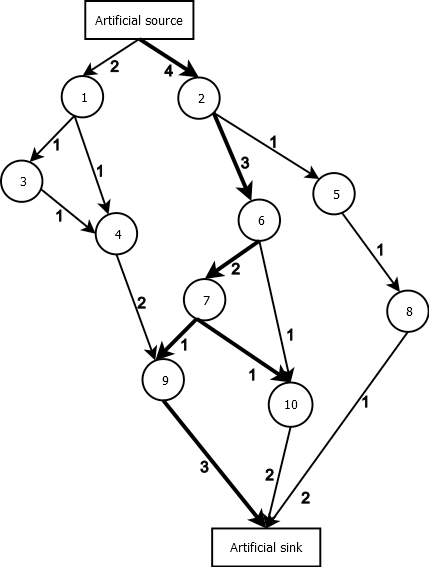
well-established PageRank and Indegree measures. We applied these measures to different versions of
the contingency graphs resulting from human and
automatic coding. As a result, we found a 0.82 (0.82)
correlation of %MainPath with PageRank and a 0.69 (0.88) correlation with Indegree. Per se, %MainPath is just another competing indicator. However it is
different from the other measures since it takes into
account the flow of arguments in the discourse and
not only local (Indegree) or globally weighted prestige (PageRank). As can be seen in Figure 2.6, MPA also allows for filtering the discourse for main threads
of argument. In this sense, MPA makes the network
model more specific and meaningful. However, further
investigation is needed to validate these constructs.
DISCUSSION AND OUTLOOK
In general, we cannot expect LA to invent genuinely
new computational methods of data mining and anal-
ysis. Yet, we have seen the successful adoption of a
number of existing techniques. A prominent case is
certainly social network analysis — to the extent that
SNA concepts such as centrality measures or cohesive
method (edge weights are SPC counts; thick edges Figure 2.6. clusters (subcommunities) are now part of the con- Example network illustrating the SPC ceptual repertoire used in LA discourse. This is still less the case for process-oriented techniques (such as indicate the main paths).
CHAPTER 2 COMPUTATIONAL METHODS FOR THE ANALYSIS OF LEARNING AND KNOWLEDGE BUILDING COMMUNITIES PG 29
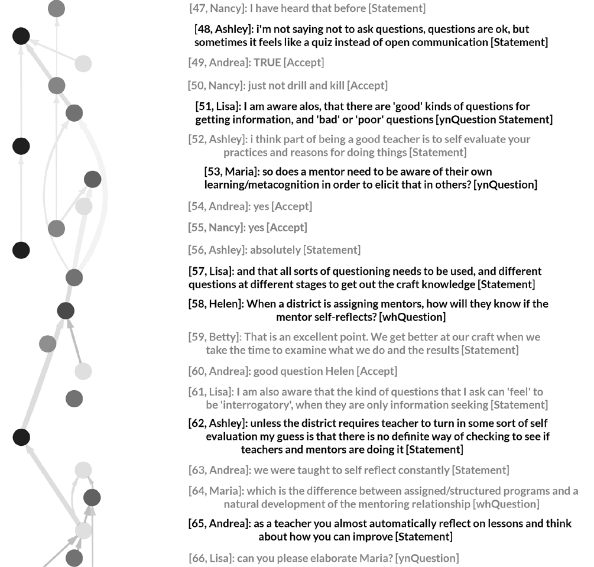
Figure 2.7. Fragment of a chat protocol with inferred contingency links (mainpath contributions and
links indicated in bold).
sequential pattern mining) or linguistics-based meth- • Concept networks derived from learner-gener-ods for the analysis of dialogue and textual artefacts. ated texts using NTA can reveal students’ mental
The examples and arguments presented in this article models and misconceptions. This can be a basis
corroborate 1) that even SNA has more to offer than for enriching domain taxonomies and for curric-
the better known “first order approaches” and 2) the ulum revision.
most benefit can be expected from combining different • The primary information that we get from learning types of analytic methods. Regarding network analysis platforms is about learners accessing (or possibly
techniques, moving from pure actor–actor networks to creating/uploading) resources. From sequences of
actor–artefact (or two-mode) networks provides a richer ensuing two-mode learner–artefact networks, we
basis of information that can resolve more significant can classify learner behaviour as “main-streaming”
and meaningful relations. The example on analyzing or more individually varied, possibly intrinsically
resource access in online courses illustrates how this motivated or curiosity-driven. can make a difference. It also shows the inclusion of
time by considering temporal sequences of networks. • Techniques borrowed from scientometrics allow
from a computational perspective. From a pedagogical basis, we can characterize contributions and the perspective, it is important to identify the affordances role of contributors to support better-informed but also the deficits of certain methods in order to decisions in the management of the community. This article looks at the issues and challenges primarily ideas in knowledge building communities. On this for identifying the main lines of the evolution of
judge their potential benefits. For example, when
targeting “interaction patterns” in knowledge building Forum participation in massive online courses has
communities it should be clear that pure SNA models recently been the subject of several LA-inspired stud-
would only reveal static actor–actor relations but not ies. Using a mix of analytic techniques involving SNA
time-dependent patterns. Possible extensions would patterns combined with “regularity” of interactions
use time series of networks and/or actor–artefact and content assessment (based on human ratings),
relations. Network-text analysis is an example of an Poquet and Dawson (2016) have characterized suc-
approach that converts textual artefacts into net cess factors for productive and supportive forum -
works of concepts (of possibly different categories) interactions. Interestingly, they found an important
and thus allows for combining content and network influence of certain community members who were
analytic approaches. On the other hand, given these not themselves part of densely connected subgroups
computational methods, where are the potential ped- (or “cliques”) on the positive evolution of the networked
agogical added values? In this respect, we have seen community. In a similar context, Wise, Cui, and Vy-
the following examples: tasek (2016) have identified certain linguistic features
PG 30 HANDBOOK OF LEARNING ANALYTICS
as predictors for distinguishing content-related from mix of modelling approaches and analysis techniques
non-content-related (social or organizational) talk in “at hand” to gain better insight and understanding of
such forums. In addition to domain-specific vocabulary, the determinants of learning and knowledge building
they also found general terms such as “understand,” communities.
“example,” “difference,” or question words among the The overarching claim and hope is to increase the predictors of content-related contributions. These, in awareness of the richness and variety of computational turn, correspond to so-called “signal concepts” used methods in the LA community, and thus to lay the in the network-text analysis of educational video ground for more synergy between LA and computa- comments by Daems, Erkens, Malzahn, and Hoppe tionally inspired research. (2014). This again shows the importance of having a
REFERENCES
Bannert, M., Reimann, P., & Sonnenberg, C. (2014). Process mining techniques for analysing patterns and strat-
egies in students’ self-regulated learning. Metacognition and Learning, 9(2), 161–185.
Batagelj, V. (2003). Efficient algorithms for citation network analysis. arXiv:cs/0309023v1.
Blei, D. M. (2012). Introduction to probabilistic topic models. Communications of the ACM, 55(4), 77–84.
Borgatti, S. P., Mehra, A., Brass, D. J., & Labianca, G. (2009). Network analysis in the social sciences. Science,
323(5916), 892–895.
Carley, K. M., Columbus, D., & Landwehr, P. (2013). AutoMap user’s guide 2013. Technical Report CMU-
ISR-13-105. Pittsburgh, PA: Carnegie Mellon University, Institute for Software Research. www.casos.cs.cmu.
edu/publications/papers/CMU-ISR-13-105.pdf.
Daems, O., Erkens, M., Malzahn, N., & Hoppe, H. U. (2014). Using content analysis and domain ontologies to
check learners’ understanding of science concepts. Journal of Computers in Education, 1(2–3), 113–131.
De Laat, M., Lally, V., Lipponen, L., & Simons, R. J. (2007). Investigating patterns of interaction in networked
learning and computer-supported collaborative learning: A role for Social Network Analysis. International
Journal of Computer-Supported Collaborative Learning, 2(1), 87–103.
Elkina, M., Fortenbacher, A., & Merceron, A. (2013). The learning analytics application LeMo: Rationals and first
results. International Journal of Computing, 12(3), 226–234.
Farooq, U., Schank, P., Harris, A., Fusco, J., & Schlager, M. (2007). Sustaining a community computing infra-
structure for online teacher professional development: A case study of designing Tapped In. Computer
Supported Cooperative Work, 16(4–5), 397–429.
Ferguson, R., & Shum, S. B. (2012). Social learning analytics: Five approaches. Proceedings of the 2nd Inter-
national Conference on Learning Analytics and Knowledge (LAK ’12), 29 April–2 May 2012, Vancouver, BC,
Canada (pp. 23–33). New York: ACM.
Fortunato, S. (2010). Community detection in graphs. Physics Reports, 486(3), 75–174.
Fournier-Viger, P., Gomariz, A., Gueniche, T., Soltani, A., Wu, C. W., & Tseng, V. S. (2014). SPMF: A Java open-
source pattern mining library. Journal of Machine Learning Research, 15(1), 3389–3393.
Fox, A. (2013). From MOOCs to SPOCs. Communications of the ACM, 56(12), 38–40.
Halatchliyski, I., Oeberst, A., Bientzle, M., Bokhorst, F., & van Aalst, J. (2012). Unraveling idea development in
discourse trajectories. Proceedings of the 10th International Conference of the Learning Sciences (ICLS ’12),
2–6 July 2012, Sydney, Australia (vol. 2, pp. 162–166). International Society of the Learning Sciences.
Halatchliyski, I., Hecking, T., Göhnert, T., & Hoppe, H. U. (2014). Analyzing the path of ideas and activity of con-
tributors in an open learning community. Journal of Learning Analytics, 1(2), 72–93.
Harrer, A., Malzahn, N., Zeini, S., & Hoppe, H. U. (2007). Combining social network analysis with semantic re-
lations to support the evolution of a scientific community. In C. Chinn, G. Erkens, & S. Puntambekar (Eds.),
CHAPTER 2 COMPUTATIONAL METHODS FOR THE ANALYSIS OF LEARNING AND KNOWLEDGE BUILDING COMMUNITIES PG 31 Strijbos, J. W., Martens, R. L., Prins, F. J., & Jochems, W. M. (2006). Content analysis: What are they talking
Proceedings of the 7th International Conference on Computer-Supported Collaborative Learning (CSCL 2007),
16–21 July 2007, New Brunswick, NJ, USA (pp. 270–279). International Society of the Learning Sciences.
Harrer, A., Martínez-Monés, A., & Dimitracopoulou, A. (2009). Users’ data: Collaborative and social analysis. In
N. Balacheff, S. Ludvigsen, T. de Jong, A. Lazonder, & S. Barnes (eds.), Technology-enhanced learning: Princi-
ples and products (pp. 175–193). Springer Netherlands.
Haythornthwaite, C. (2001). Exploring multiplexity: Social network structures in a computer-supported dis-
tance learning class. The Information Society, 17(3), 211–226.
He, W. (2013). Examining students’ online interaction in a live video streaming environment using data mining
and text mining. Computers in Human Behavior, 29(1), 90–102.
Hecking, T., Ziebarth, S., & Hoppe, H. U. (2014). Analysis of dynamic resource access patterns in online courses.
Journal of Learning Analytics, 1(3), 34–60.
Hoppe, H. U., Erkens, M., Clough, G., Daems, O. & Adams. A. (2013). Using Network Text Analysis to character-
ise teachers’ and students’ conceptualisations in science domains. In R. K. Vatrapu, P. Reimann, W. Halb, &
S. Bull (Eds.), Proceedings of the 2nd International Workshop on Teaching Analytics (IWTA 2013), 8 April 2013,
Leuven, Belgium. http://ceur-ws.org/Vol-985/paper7.pdf
Hoppe, H. U., Göhnert, T., Steinert, L., & Charles, C. (2014). A web-based tool for communication flow analysis
of online chats. Proceedings of the Workshops at the LAK 2014 Conference co-located with the 4th Interna-
tional Conference on Learning Analytics and Knowledge (LAK ’14), 24–28 March 2014, Indianapolis, IN, USA.
http://ceur-ws.org/Vol-1137.
Hummon, N. P., & Doreian, P. (1989). Connectivity in a citation network: The development of DNA theory. So-
cial Networks, 11(1), 39–63.
Hung, J. (2012). Trends of e-learning research from 2000 to 2008: Use of text mining and bibliometrics. British
Journal of Educational Technology, 43(1), 5–16.
Krempel, L. (2005). Visualisierung komplexer Strukturen — Grundlagen der Darstellung mehr-dimensionaler
Netzwerke. Frankfurt, Germany: Campus-Verlag.
Lehmann, S., Schwartz, M., & Hansen, L. K. (2008). Biclique communities. Physical Review E, 78(1). doi:10.1103/
PhysRevE.78.016108
Mühlenbrock, M., & Hoppe, H. U. (1999). Computer supported interaction analysis of group problem solving.
Proceedings of the 1999 Conference on Computer Support for Collaborative Learning (CSCL ’99), 12–15 De-
cember 1999, Palo Alto, California (pp. 398–405). International Society of the Learning Sciences.
Palla, G., Barabasi, A. L., & Vicsek, T. (2007). Quantifying social group evolution. Nature, 446(7136), 664–667.
Palla, G., Derenyi, I., Farkas, I., & Vicsek, T. (2005). Uncovering the overlapping community structure of com-
plex networks in nature and society. Nature, 435(7043), 814–818.
Poquet, O., & Dawson, S. (2016). Untangling MOOC learner networks. Proceedings of the 6th International Con-
ference on Learning Analytics and Knowledge (LAK ’16), 25–29 April 2016, Edinburgh, UK (pp. 208–212). New
York: ACM.
Reffay, C., & Chanier, T. (2003). How social network analysis can help to measure cohesion in collaborative dis-
tance-learning. In B. Wasson, S. Ludvigsen, & H. U. Hoppe (Eds.), Proceedings of the Conference on Comput-
er Support for Collaborative Learning: Designing for Change in Networked Environments (CSCL 2003), 14–18
June 2003, Bergen, Norway (pp. 343–352). International Society of the Learning Sciences.
Rosé, C., Wang, Y. C., Cui, Y., Arguello, J., Stegmann, K., Weinberger, A., & Fischer, F. (2008). Analyzing collab-
orative learning processes automatically: Exploiting the advances of computational linguistics in comput-
er-supported collaborative learning. International Journal of Computer-Supported Collaborative Learning,
3(3), 237–271.
Sherin, B. (2013). A computational study of commonsense science: An exploration in the automated analysis of
clinical interview data. Journal of the Learning Sciences, 22(4), 600–638.
PG 32 HANDBOOK OF LEARNING ANALYTICS
about? Computers & Education, 46(1), 29–48.
Suthers, D. D., Dwyer, N., Medina, R., & Vatraou, R. (2010). A framework for conceptualizing, representing, and
analyzing distributed interaction. International Journal of Computer-Supported Collaborative Learning, 5(1),
5–42.
Suthers, D. D., & Desiato, C. (2012). Exposing chat features through analysis of uptake between contributions.
Proceedings of the 45th Hawaii International Conference on System Sciences (HICSS-45), 4–7 January 2012,
Maui, HI, USA (pp. 3368–3377). IEEE Computer Society.
Wasserman, S., & Faust, K. (1994). Social network analysis: Methods and applications. New York: Cambridge
University Press.
Wise, A. F., Cui, Y., & Vytasek, J. (2016). Bringing order to chaos in MOOC discussion forums with content-re-
lated thread identification. Proceedings of the 6th International Conference on Learning Analytics and
Knowledge (LAK ’16), 25–29 April 2016, Edinburgh, UK (pp. 188–197). New York: ACM.
Wu, T., Khan, F. M., Fisher, T. A., Shuler, L. A., & Pottenger, W. M. (2005). Posting act tagging using transfor-
mation-based learning. In T. Y. Lin, S. Ohsuga, C.-J. Liau, X. Hu, & S. Tsumoto (Eds.), Foundations of data
mining and knowledge discovery (pp. 321–331). Springer Berlin Heidelberg.
Zeini, S., Göhnert, T., Hecking, T., Krempel, L., & Hoppe, H. U. (2014). The impact of measurement time on
subgroup detection in online communities. In F. Can, T. Özyer, & F. Polat (Eds.), State of the art applications
of social network analysis (pp. 249–268). Springer International Publishing.
Ziebarth, S., Neubaum G., Kyewski E., Krämer N., Hoppe H. U., & Hecking T. (2015). Resource usage in online
courses: Analyzing learner’s active and passive participation patterns. Proceedings of the 11th International
Conference on Computer Supported Collaborative Learning (CSCL 2015), 7–11 June 2015, Gothenburg, Swe-
den (pp. 395–402). International Society of the Learning Sciences.
Zumbach, J., Mühlenbrock, M., Jansen, M., Reimann, P., & Hoppe, H. U. (2002). Multi-dimensional tracking in
virtual learning teams: An exploratory study. Proceedings of the Conference on Computer Support for Collab-
orative Learning: Foundations for a CSCL Community (CSCL 2002), 7–11 January 2002, Boulder, CO, USA (pp.
650–651). International Society of the Learning Sciences.
CHAPTER 2 COMPUTATIONAL METHODS FOR THE ANALYSIS OF LEARNING AND KNOWLEDGE BUILDING COMMUNITIES PG 33
PG 34 HANDBOOK OF LEARNING ANALYTICS
Chapter 3: Measurement and its Uses in
Learning Analytics
Yoav Bergner
Learning Analytics Research Network, New York University, USA
DOI: 10.18608/hla17.003
ABSTRACT
Psychological measurement is a process for making warranted claims about states of mind. As such, it typically comprises the following: defining a construct; specifying a measurement model and (developing) a reliable instrument; analyzing and accounting for various sources of error (including operator error); and framing a valid argument for particular uses of the outcome. Measurement of latent variables is, after all, a noisy endeavor that can neverthe-less have high-stakes consequences for individuals and groups. This chapter is intended to serve as an introduction to educational and psychological measurement for practitioners in learning analytics and educational data mining. It is organized thematically rather than historically, from more conceptual material about constructs, instruments, and sources of measurement error toward increasing technical detail about particular measurement models and their uses. Some of the philosophical differences between explanatory and predictive modelling are explored toward the end.
Keywords: Measurement, latent variable models, model fit
Knowing what students know and — given the increased replace the need for separate assessments (Behrens
attention to affective measures — how they feel is the & DiCerbo, 2014). In the meantime, at minimum, one
basis for many conversations about learning. Measur- would like to avoid misunderstanding learning or ing a student’s knowledge, skills, attitudes/aptitudes/ diminishing learner experiences. abilities (KSAs), and/or emotions is, however, less
straightforward than measuring his or her height or WHAT IS MEASUREMENT? weight. Psychological measurement is a noisy endeavor PHILOSOPHY AND BASIC IDEAS that can have high-stakes consequences, such as as-
signment to a special program (advanced or remedial), Discussions of psychological measurement often
admission to a university, employment, hospitalization, begin by drawing contrasts with physical measure-
or incarceration. Even small errors of measurement ment (for example, Armstrong, 1967; Borsboom, 2008;
at the individual level can have large consequences DeVellis, 2003; Lord & Novick, 1968; Maul, Irribarra, &
when results are aggregated for groups (Kane, 2010). Wilson, 2016; Michell, 1999; Sijtsma, 2011). A number
Sensitivity to these consequences has emerged over of important facets of psychological measurement
a century of methodology research enshrined in the are raised in the process, namely its instrumentation
Standards for Educational and Psychological Testing or operationalization, the repeatability or precision
(AERA, APA, & NCME, 2014). Insofar as measurement of measurements, sources of error, and the inter-
may be used in learning analytics and educational pretation of the measure itself. It can be said that
data mining for the purposes of understanding and psychological measurement comprises the following:
optimizing learning and learning environments (Sie defining a construct; specifying a measurement model -
mens & Baker, 2012), what are the tolerances for errors and (developing) a reliable instrument; analyzing and
of measurement? After all, it has been argued that accounting for various sources of error (including
“harnessing the digital ocean” of data could ultimately operator error); and framing a valid argument for
particular uses of the outcome.
CHAPTER 3 MEASUREMENT AND ITS USES IN LEARNING ANALYTICS PG 35 Constructs useful measurement rules.
Do psychological constructs really exist? In what Physical theories tend to be few in number and more
sense can we really know a student’s state of mind? comprehensive, whereas psychological theories are
We say that variables like physical length of an object numerous and narrowly defined (DeVellis, 2003). Since
are directly observed, or manifest, whereas a person’s constructs are invented things, there is no empirical
mental states or psychological traits are only indirectly limit to their number. It is possible to talk about a con-
observed, or latent. The term construct is used inter- struct in the absence of a measurement instrument, changeably with latent variable, while trait is used but a measurement instrument is always designed to
to imply a construct that is stable over time (Lord & measure something. Therefore, we can infer an ex-
Novick, 1968). In fact, even physical measurement is tremely partial list of constructs relevant to learning
indirectly instrumented. Although we can perceive analytics from the instruments already developed to
length directly through our senses, the measurement measure them. Examples include intelligence (e.g., the
of length involves a process of comparison with a ref- Stanford–Binet Intelligence Scale), scholastic aptitude
erence object or instrument, such as a tape measure. (e.g., that SAT test), academic achievement (numerous
The tape measure provides a scale, such as inches or examples include both large-scale tests and course
centimeters, which formalizes comparisons of length. exams), personality (e.g., the “big five” factor model;
For example, we can quantify the difference in two Digman, 1990), achievement-goal orientation (e.g.,
lengths by subtracting one measurement from the other. Midgley et al., 2000), achievement emotions (Pekrun,
In the first half of the twentieth century, efforts to settle Goetz, Frenzel, Barchfeld, & Perry, 2011), grit (Duck-
philosophical issues of measurement led Bridgman (1927) worth, Peterson, Matthews, & Kelly, 2007), self-theories
and others to operationalism, wherein physical concepts of intelligence and fixed/growth mindset (Dweck,
like length, mass, and intensity are understood to be 2000; Yeager & Dweck, 2012), intrinsic motivation
“synonymous with” the operations used to measure (Deci & Ryan, 1985; Guay, Vallerand, & Blanchard,
them. That is, length is understood as the outcome of 2000), self-regulated learning and self-efficacy (e.g.,
a (possibly hypothetical) length measurement proce- Pintrich & De Groot, 1990), learning power (Bucking-
dure. This idea can be carried over to psychological ham Shum & Deakin Crick, 2012; Crick, Broadfoot, &
constructs, such as math ability and extraversion, by Claxton, 2004), and crowd-sourced learning ability
equating the constructs to scores on instruments used (Milligan & Griffin, 2016).
to measure them. Math ability is then equivalent to a Several of the constructs listed above are multidimen-
score on a math test, and extraversion is a score on sional, that is they include multiple factors. The value
a Likert-item questionnaire. This positivist attitude of combining versus separating out related constructs
is reflected in Stevens’ definition of measurement is a subject of debate (Edwards, 2001; Schwartz, 2007).
as, “the assignment of numerals to objects or events Measurement Instruments
for every instrument that exists to measure it. intelligence, cognitive ability, and psychomotor skills, wherein the subject, or examinee, is instructed to try If an operationalist interpretation is rejected, it ap- to maximize his or her performance (Sijtsma, 2011). pears to leave open epistemological and ontological Questionnaire respondents, by contrast, are asked to questions about latent variables. Mislevy (2009, 2012) respond honestly about their thoughts, feelings, and articulates a constructivist-realist position, namely that behaviours. (Response bias can blur this distinction, we can talk as if a construct exists without a commit - as we shall describe when we come to validity). Note ment to strict realism by committing to model-based that this description of how subjects are expected to reasoning. Model-based reasoning means accepting a interact with instruments reveals the rudiments of a simplified representation of a system — for example, but it has been rejected for a host of reasons (Maul, cally called tests or questionnaires (also surveys and inventories) and are made up of items or indicators. Irribarra, & Wilson, 2016; Michell, 1999), notably that The word test is more often used for constructs like operationalism forces a redefinition of the construct view of constructs was highly influential in the past, Psychological measurement instruments are typi- according to rules” (1946, p. 677). The operationalist
measurement model. We assume that the more able
a construct-mediated relationship between persons test taker will obtain a higher score on an ability test
and responses — that captures salient aspects (e.g., and that the more anxious subject will obtain a higher
patterns) and allows us to explain or predict phenom- score on an anxiety questionnaire.
Box famously said, “all models are wrong, but some are changeably with the instrument (DeVellis, 2003). Scale implies that the test or questionnaire has been scored. useful” (Box, 1979). The challenge remains to come up Binary items that have correct and incorrect answers with useful models or, in terms of Stevens’ definition, predictive distinction later in this chapter). As George Sometimes the term measurement scale is used inter- ena (Mislevy, 2009; we return to the explanatory/
PG 36 HANDBOOK OF LEARNING ANALYTICS
and yes/no questions are usually scored dichotomously from [0,1]. However, the term reliability is also used
with values in {0, 1}. Likert scale, rating scale, and vi- in the sense of test-retest reliability, which is actually
sual-analogue scales (Luria, 1975) are other item types a correlation, and inter-rater reliability (e.g., Cohen’s
that can take discrete or continuous numerical values. kappa, k; Cohen, 1968). Practitioners sometimes lean Adding up the scores of individual items into a sum uncritically on guidelines for acceptable values of a,
score (also, raw score) is one procedure for scoring such as .70 as a lower bound (Cortina, 1993), to decide
an instrument, but it is not the only or necessarily the that scales are good enough to use. But it should be
best procedure (Lord & Novick, 1968; Millsap, 2012). noted that statistical power improves with higher
Weighted sum scores and item response theory (IRT; values of a (DeVellis, 2003). Thus, effort in improving Baker & Kim, 2004) offer a range of alternatives. the reliability of a scale can often outweigh the benefit
The use of tests and questionnaires is a matter of both of recruiting larger samples. efficiency and standardization, compared with the Validity alternative of observing people in real life and waiting Validity is the foremost topic in the Standards, whose for them to spontaneously express thoughts or exhibit first chapter begins, “Validity refers to the degree to
the behaviours of interest (Sijtsma, 2011). In learning which evidence and theory support the interpretations
analytics, efficient collection of data is usually not the of test scores for proposed uses of tests … It is incor-
problem, but the lack of standardization can make it rect to use the unqualified phrase ‘the validity of the
challenging to account for measurement error. test’” (p. 11). Substituting the broader term “measure”
Source of Error in Measurements for the narrower “test,” it should be self-evident that
We know from experience that psychological measure validity is of paramount importance to learning an- -
ments are not as consistently repeatable as physical alytics. There is a palpable focus in the Standards on
measurements. We also know that people’s respons- shaping the language used in validation arguments,
es to an instrument may not faithfully reflect their an approach also evident in Messick’s (1995) influential
abilities, attitudes, or other constructs of interest. reworking of Cronbach and Meehl (1955) (see also Kane,
Statistical models allow us to think of items, indicators, 2001). Types of evidence about validity (rather than
or tests as random samples of a latent variable. The “types of validity”) include evidence about response
latent variable can be a random variable, or it can be processes, evidence about the internal structure of
fixed, as in true score theory (Lord & Novick, 1968). the instrument, convergent and discriminant evidence,
Either way, the measurement samples will have error criterion references (including predictive criteria), and
resulting from the inherent non-repeatability, which evidence of generalizability. is sometimes called random error and is unbiased (in We referred earlier in this chapter to the assumption
the sense of having an expectation value of zero over that responses to questionnaires correspond to honest
some distribution of repeated measures). There can thoughts and feelings. However, there is extensive
also be systematic error, which is biased. literature on types of response bias, from acquies-
More precise or formal statements about error arise cence bias (yea-saying; Messick & Jackson, 1961) to social desirability bias (also, faking good; Nederhof, when we adopt a measurement framework or model. 1985) to bias from extreme and moderate types of For example, in true score theory and factor analysis responders (i.e., people who tend to choose extreme we can reason in terms of parallel tests or equivalent ends of Likert-scales) (Bachman & O’Malley, 1984). forms to derive estimates of an instrument’s reliability. Although more often documented for questionnaires Measurement error can also be defined as any vari - and surveys about sensitive topics such as willingness ance in the data not attributed to the construct, as to cheat, sexual fantasies, or attitudes about race, explained by the model (AERA, APA, & NCME, 2014). self-tuning or censoring of responses can also hap- We will revisit the sources of error after we flesh out pen on educational tests, such as the force concept our discussion of measurement models. inventory (FCI; Hestenes, Wells, & Swackhamer, 1992) Reliability used to assess Newtonian thinking. Mazur (2007) Reliability is attributed to an instrument and is a reported a student specifically asking, “How should measure of the consistency of scores (AERA, APA, & I answer these questions? According to what you NCME, 2014), specifically the proportion of the total taught us, or by the way I think about these things?’” variance in scores attributed to the latent variable Finally, intentional rapid guessing behaviour can be (DeVellis, 2003). It can be sample-dependent (in thought of as a form of response bias (Wise & Kong, true score theory) and model-dependent (in more 2005). It should be clear that all of these sources of complicated models). The word is sometimes used response bias challenge the uncritical interpretation to mean a particular reliability coefficient, most of scale scores. commonly Cronbach’s (1951) alpha, a , which ranges
CHAPTER 3 MEASUREMENT AND ITS USES IN LEARNING ANALYTICS PG 37
Measurement Models & Giesbers, 2015). The purpose of this section is to
The rubber meets the road in the technical details provide a bit more depth about models and their uses
of measurement models. A measurement model is a in learning analytics and educational data mining. All
formal mathematical relationship between a latent topics are not treated equally, reflecting both space
variable or set of variables and an observable variable constraints and selection bias.
or set of variables. A fully statistical measurement Factor Analysis model may specify a distribution for the latent vari- Factor analysis (Mulaik, 2009) models the correlations
able(s), a distribution for the observed variable(s), and among observed variables through a linear relation-
a functional relationship between them. The latent ship to a set of latent variables known as factors. The
variables are often understood as causally explaining original one-factor model is Spearman’s (1904) model
the observations, which are subject to errors. Variances of general intelligence g, used to explain correlations and covariances of random variables are described, between scores on unrelated subject tests. True score
explicitly or implicitly, in the model. Models make as- theory, also known as classical test theory (Lord &
sumptions, for example the assumption of monotonicity Novick, 1968), can be derived as a special case of a single
(or, stricter, linearity) of the relationship between the factor model in which all of the item factor loadings
construct and the measure or the assumption of zero are the same. Thurstone (1947) developed the multiple
covariance between error terms of unique items. If the (seven) factors model of intelligence.
using the model may be wrong (Lord & Novick, 1968). Factor analysis is commonly divided into two enterprises. assumptions of a model are violated, inferences made
Exploratory factor analysis (EFA) is used to determine
Since categorical and continuous variables involve the number of latent factors from data without strong
different statistical methods, types of measurement theoretical assumptions and is commonly part of
models are sometimes classified into families according scale development. However, EFA requires a number
to the type of latent and observed variables, as shown of important methodological decisions which, if made
in Table 3.1. This classification is not exhaustive, as poorly, can lead to problematic results (Fabrigar,
hybrid models exist as well as generalized frameworks Wegener, MacCallum, & Strahan, 1999). In particular,
(Skrondal & Rabe-Hesketh, 2004) in which these Fabrigar et al. (1999) caution against confusing EFA with
model families become special cases. Growth models principal components analysis (PCA), a dimensionality
are extensions of measurement models to repeated reduction technique, which can result in erroneous
measures and can apply to both continuous and cat- conclusions about true factor structure. Confirmatory
egorical latent variables (e.g., Meredith & Tisak, 1990; factor analysis (CFA) is a complementary set of tech-
Rabiner, 1989; Raudenbush & Bryk, 2002). niques to test a theoretically proposed factor model by
Table 3.1. examining residuals between expected and observed Families of Latent Variable Models
correlations. Thus, CFA can be used to reject a model.
Latent/Observed Observed CFA, along with path analysis and latent growth models, Observed
continuous categorical is subsumed by structural equation modelling (SEM;
Item response mod- Bollen, 1989; Kline, 2010). Confirmatory factor analysis
Latent continuous Factor models (Bol- els (Lord & Novick, is not the same thing as running EFA multiple times len, 1989; Mulaik, 1968; Baker & Kim, 2009) with different population samples, although the case 2004) has been made for doing the latter (DeVellis, 2003).
Latent mixture Latent class
Latent categorical models (McLachlan models (Goodman, Some learning analytics research is directly concerned
& Peel, 2004) 2002) with scale development and its integration with data
gathered from learning management systems (e.g.,
SPECIFIC USES OF MEASUREMENT Buckingham Shum & Deakin Crick, 2012; Milligan &
Griffin, 2016). Other work focuses on associations be-
MODELS IN LEARNING ANALYTICS tween existing scales and outcome measures, such as
We mentioned previously that psychological and the relationship between achievement emotions (Pekrun et al., 2011) and decisions regarding face-to-face and educational measurement is applied for a variety of online instruction (Tempelaar, Niculescu, Rienties, purposes including classification, diagnosis, ranking, Giesbers, & Gijselaers, 2012) or between motivational placement, and certification of individuals as well measures and completion of a massive open online as corresponding inferences about groups. Work in course (Wang & Baker, 2015). When adapting an in- learning analytics and educational data mining also strument or, especially, part of an instrument for new explores the complex web of relationships between purposes, practitioners should be mindful of whether psychological scales, behaviour, and performance in these new uses merit new validation arguments. digital learning environments (Tempelaar, Rienties,
PG 38 HANDBOOK OF LEARNING ANALYTICS
Latent Class and Latent Mixture 1. The trait (e.g., ability) is quantified as a continuous Models random variable and is represented by θ on the Dedic, Rosenfeld, and Lasry (2010) used latent class horizontal axis. The variable is standardized to have
analysis to understand the distribution of physics a mean of zero and a variance of 1 in the popula-
misconceptions based on students’ wrong answers tion of interest. More of the trait, corresponding
on a physics concept test. Data came from admin- to a higher value of θ, is expected to increase the istrations both before and at the end of a physics probability P of a positive (or correct) response. course (pre- and post-test). The authors identified This is the monotonicity assumption. An observed an apparent progression from Aristotelian to Newto- violation of monotonicity means that that the
nian thinking through discrete classes of dominance fundamental person-item relationship is wrong,
fallacies. A widely used method for topic modelling and including the item in a test would lead to bad
of documents, latent Dirichlet allocation (LDA; Blei, fit and unreliable inferences.
Ng, & Jordan, 2003; see also several chapters in this 2. Two ways of interpreting these curves were de-
volume) is a latent mixture model. Mixed membership scribed by Holland (1990). In the stochastic subject
models (Erosheva, Fienberg, & Lafferty, 2004) further interpretation, one literally imagines this curve as
generalize latent mixtures by allowing “fuzzy” or applying to an individual whose performance is
weighted assignments of an individual to multiple inherently unpredictable. To paraphrase Holland,
classes. The Gaussian mixture model forms the basis the stochastic subject explanation is intuitive, but
for model-based cluster analysis (Fraley & Raftery, not wholly satisfactory; we do not have a mecha-
1998) applied to performance trajectories of MOOC nistic explanation for the stochastic nature of the
learners (Bergner, Kerr, & Pritchard, 2015). It should subject. In the random sampling interpretation,
be noted that not all clustering algorithms, however, on the other hand, this curve makes sense as
are latent mixture models. applied to a sample population of examinees. For
Item Response Theory (IRT) example, among examinees within a certain ability
Item response theory distinguished itself in the his- range, some proportion will answer correctly.
torical development of testing theory by modelling The points and error bars in the figure reflect
individual person-item interactions rather than total this observation.1
test scores, as in classical test theory. Conceptually, 3. The value of θ for which P = 0.5 is a reference the purpose of IRT is “to describe the items by item intercept, which for a cognitive ability test item
parameters and the examinees by examinee parameters is called the difficulty. Note that difficulty is ipso
in such a way that we can predict probabilistically the facto on the same scale as ability, and so it makes response of any examinee to any item, even if similar sense to talk about the difference between a per-
examinees have never taken similar items before” son’s ability and the difficulty of an item.
(ICC) or, equivalently, item response function (IRF) for 4. The form of the probability link is commonly para- (Lord, 1980, p. 11). A sample item characteristic curve
a binary item (e.g., correct/incorrect, agree/disagree, metric with respect to the trait θ of individual i i and a (set of) item parameters β , for item j , et cetera) is shown in Figure 3.1. j
The salient characteristics of Figure 3.1 are as follows: P = P(X = 1|θ , β ) = f(θ , β ), (1) ij ij i j i j
as in the case of the Rasch model (a single difficulty
parameter) or of the two-parameter logistic (2PL)
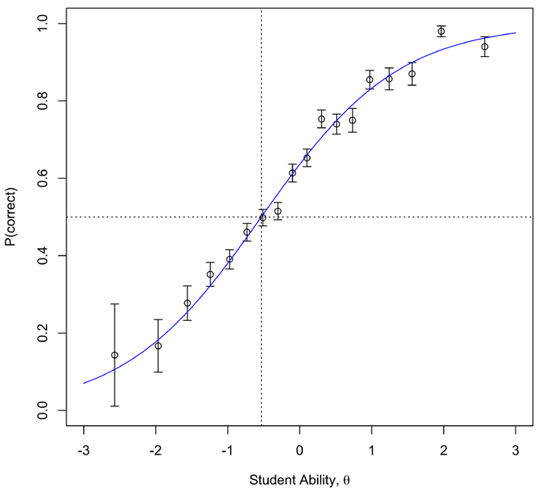
model. The 2PL model is shown in Figure 3.2; the
fit to data is visibly good, and a G2 goodness-of-fit test confirms as much. It should be noted that
non-parametric IRT methods exist (Sijtsma, 1998).
When a person responds to several items in a measure-
ment instrument, the idea is to combine the response
information to make posterior estimates of the trait.
For the likelihood of a response vector to factor into
a product of individual item-level probabilities, the
responses must be otherwise independent, conditional
on the trait. This conditional independence assumption
1 For the stochastic subject, these sample values would have to rep-
Figure 3.1. A sample item characteristic curve (ICC). resent a set of identical trials by the same subject with no memory
Dotted lines indicate the P = 0.5 intercept. of the other trials. Although this seems odd in a cognitive test item,
it is plausible in a psychomotor context. See Spray (1997).
CHAPTER 3 MEASUREMENT AND ITS USES IN LEARNING ANALYTICS PG 39
may require the introduction of additional factors that Growth Models explain inter-item dependence (e.g., Rijmen, 2010). Growth models apply any time a latent trait is chang-
Evidence that IRT has some traction in education ing systematically between measurements. They can
outside of high-stakes testing applications can be be applied to changing attitudes (e.g., George, 2000),
found in physics education research applications to but we focus here on application to cognitive ability
the force concept inventory (FCI; Hestenes et al., 1992) domains. There is an extensive literature in educa-
and the mechanics baseline test (MBT; Hestenes & tional data mining on student models for intelligent
Wells, 1992). While these instruments have been in use problem-solving tutors, which are distinguished from
for twenty-five years, item response model analyses curriculum sequencing tutors (Desmarais & Baker, 2011).
started to appear more recently (Morris et al., 2006; In cognitive tutors for mathematics (Anderson, Corbett,
Wang & Bao, 2010). Model-data fit for the FCI were Koedinger, & Pelletier, 1995), sequences of practice
generally acceptable. Cardamone et al. (2011), however, items are designed to support mastery learning of
discovered two malfunctioning items in the MBT by fine-grained knowledge components (also, skills or
inspecting the item response functions. An example productions), according to a cognitive model. Two
is shown in Figure 3.2. approaches for modelling growth towards mastery
in data from these systems are Bayesian knowledge
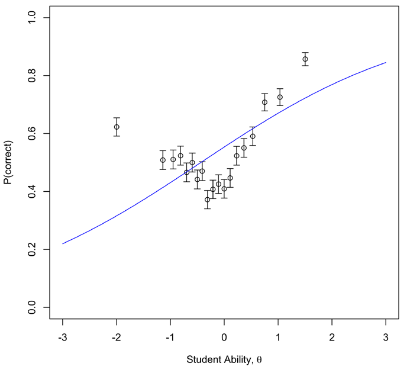
tracing (BKT; Corbett & Anderson, 1995) and the ad-
ditive factors models (AFM; Cen, Koedinger, & Junker,
2008; Draney, Pirolli, & Wilson, 1995). Learning curves
analysis (Käser, Koedinger, & Gross, 2014; Martin,
Mitrovic, Mathan, & Koedinger, 2010) has also been
used to check for discrepancies between data and the
cognitive model underlying the tutor.
According to the “law of practice” (Newell & Rosen-bloom, 1981), the aggregate error rate T as a function
of practice opportunity n should decay according to a power law T =B-a, where B and a are empirically n determined. Bad fit between data and model, for
Figure 3.2. example using r-squared measures, may motivate A poorly fitting item from the mechanics
baseline test (MBT). improvements to knowledge mapping. This may be
seen as an analogue to the item analysis in Figure 3.2,
where a faulty item is detected. In this case, however,
Something is fishy if low-ability students are more the assignment of a sequence of items to a knowledge
likely to answer an item correctly than average-ability component is seen as faulty. students. Upon closer inspection, it was discovered
that ambiguous wording of this test item allowed ∈ In BKT, the latent variable is mastery of a procedural
knowledge component and is binary-valued, M {0, 1}.
students holding a common misconception to misread
the question and coincidentally choose the correct ∈ The probability link between mastery and correctness
X {0, 1} on any given opportunity is a 2x2 conditional
response for the wrong reason. In this case, two
probability table, but by analogy with Eq. (1), it can be
wrongs did make a right.
written in terms of guess (g) and slip (s) parameters as,
Following exploratory factor analyses of the FCI that M P ( X = 1| M ) = (1 - s ) g(1-M) (2) identified multiple dimensions (Ding & Beichner, 2009; Scott, Schumayer, & Gray, 2012), a variation of mul- Importantly, the attempts are not viewed as inde-
tidimensional IRT was applied to the MBT (Bergner, pendent. Rather, the key idea in BKT is that students
Rayyan, Seaton, & Pritchard, 2013). Item response begin with some prior probability of mastery and
theory models have also been extended to the inher- move towards mastery (they learn) on each practice
ently sequential process behind multiple attempts to opportunity according to the rule,
answer (answer-until-correct), an affordance which P(M ) = P(M ) + t(1 - P(M )) (3) n n-1 n-1 is common in online homework (Attali, 2011; Bergner, Here t is a growth parameter. Recently, van de Sande Colvin, & Pritchard, 2015; Culpepper, 2014). (2013) demonstrated that BKT implies an exponential
rather than a power law relationship between prac-
tice attempts and error rates. This would make BKT a
mis-specified model for data that satisfy a power law
PG 40 HANDBOOK OF LEARNING ANALYTICS
of practice. The additive factors model, by contrast, item difficulty. The two effects cannot be distinguished
is designed to fit the power law of practice paradigm. unless item difficulties have been separately calibrated
Käser et al. (2014) showed that prediction accuracy of under conditions where there is no growth.
of the latter, they noted systematic bias in aggregate A seminal study of mixed-number subtraction using residuals analyses. BKT is often indistinguishable from AFM. Regarding fit Cognitive Diagnostic Models
cognitive task analysis led Tatsuoka (1983) to develop
AFM has been referred to as an extension of IRT the Q-matrix method and a model for diagnosing
(Koedinger, McLaughlin, & Stamper, 2012), and indeed specific sub-skills (e.g., converting a whole number
the relation to the linear logistic test model (LLTM; to a fraction) in an educational test. The Q-matrix
Fischer, 1973) was clear in the progenitor of this model is a discrete mapping of items to requisite sub-skills
(Draney et al., 1995). However, in passing to its current and is traditionally specified in the assessment model.
form, the model was changed in a critical way. The Cognitive diagnostic models have since been consid-
LLTM is a Rasch-type IRT model in which the difficul- erably generalized (Rupp & Templin, 2008; von Davier,
ty of an item is decomposed as a sum over potential 2005), and efforts to learn the Q-matrix from data
properties of the item. Writing the Rasch model as, have appeared in educational data mining research
logit (Barnes, 2005; Desmarais, 2012; Koedinger et al., 2012). ( P ) = ln ( P /(1- P )) = θ - β , (4) ij ij ij i j
the difficulty β of item j is further decomposed, j SOURCES OF ERROR, REVISITED
where β =c + ∑ w a , (5) j j k jk k Having explored some of the measurement models a are difficulties of “basic” operations (Fischer’s k involved in studying motivation, emotion, and cog- term) and the indicators w are 0 or 1 depending on ik nition, it is worth revisiting the important subject of whether these operations are required in item j . If error. Practitioners should be mindful that additional all items use the same operations, the model clearly sources of error could be introduced by using models reduces to the Rasch model with a simple offset, with the wrong parameters, by using the wrong models,
β = c + a. (6) or by using the models wrongly. j j
Although the model of Draney et al. (1995) contained The use of a model may depend on parameters whose
an item-level difficulty parameter, in AFM only the estimation is itself subject to error. These uncertainties
difficulties of the component skills are retained. In should be acknowledged, but they are not necessarily
addition, a practice term is introduced,2 serious if the model is consistent as a data-generating
β model for the observed data. That is, we think of the AFM = ∑ w a - ∑ w γ T , (7) j k jk k k jk k ik statistical model as a stochastic process that can be used
where γ is a growth parameter and T is a count of k ik to generate (also, sample or simulate) data (Breiman,
the previous practice attempts of learner i on skill k. 2001). For example, we can simulate data from coin
If a sequence of practice problems all involve the same flips using a Bernoulli process, even if we are unsure
skills, which is common for tutor applications, then for about whether the real coin is fair. In principle, our
each sequence, this parameter reduces to, parameter for the probability of heads in our model can
Importantly, this is not a property of the item at all, β be improved with more data from the real coin. This is AFM = a - γT . (8) j i different from the case when the model itself, either in terms of the latent variables or the link functions, as is clear from the subscripts on the right hand side, is inconsistent with the true generating model. The which depend only on the learner. By dropping the c j second case is called model mis-specification (White, parameter in Equations (7)–(8), the AFM has actually 1996). Goodness-of-fit tests evaluate the consistency become a fixed effect growth model. between the observed data and the generating model
From a modelling perspective, it is not surprising that to retain or reject the model (White, 1996; Haberman,
the item-level difficulty parameter was removed, as 2009; Ames & Penfield, 2015). keeping both difficulty and growth parameters creates
a problem for identifiability. A model is identifiable if EXPLANATION AND PREDICTION its parameters can be unambiguously learned given
sufficient data. However, for students working on a Predictive modelling is one of the most prominent
fixed sequence of items, the increased success rate due methodological approaches in educational data mining
to learning/growth can be attributed to decreasing (Baker & Siemens, 2014; Baker & Yacef, 2009). Measure-
ment theory, by contrast, is decidedly explanatory,
2 One sign convention from Cen et al. (2008) has been changed to as are most of the statistical methods traditionally
make the model consistent with the usual Rasch model, with a diffi- used in the social sciences (Breiman, 2001; Shmueli,
culty rather than an easiness parameter.
CHAPTER 3 MEASUREMENT AND ITS USES IN LEARNING ANALYTICS PG 41
2010). While an explanatory model can be used to bias to obtain the most accurate representation of the
make predictions — and an error-free explanatory underlying theory. In contrast, predictive modelling
model would make perfect predictions — a predictive seeks to minimize the combination of bias and vari-
model is not necessarily explanatory. Breiman (2001) ance, occasionally sacrificing theoretical accuracy
expressed the distinction in terms of two cultures: the for improved empirical precision” (Shmueli, 2010, p.
data modelling culture (98% of statistics, informally 293). It should be emphasized that explanatory power
according to Breiman) and the algorithmic modelling and predictive power do not always point in the same
culture (the 2%, in which Breiman included himself).3 direction. Indeed, Hagerty and Srinivasan (1991) proved
Shmueli (2010) contrasted the entire design process that, in noisy circumstances, under-specified multiple
for statistical modelling when viewed from either a regression models can have more predictive power
prediction or an explanation lens. The interpretabil- than the correctly specified (true) model.
ity or non-interpretability of predictors in a complex Suthers and Verbert (2013) have described learning prediction model is only one aspect of the distinction analytics as a “middle space” between learning science (see also Liu & Koedinger, this volume). The different and analytics. Perhaps it may also be thought of as viewpoints fundamentally inform how researchers occupying a methodological middle space between handle error and uncertainty. explanatory and predictive approaches. In that case,
The predictive view is expressed, for example, in a the field may benefit from understanding the nuances
recent best paper from the educational data mining of both perspectives. conference. The authors assert that, “the only way
to determine if model assumptions are correct is to FURTHER READING construct an alternative model that makes different
assumptions and to determine whether the alternative Psychological measurement is almost as old as psy-
outperforms [out-predicts] BKT” (Khajah, Lindsey, chology itself and as old as statistics. Authoritative,
& Mozer, 2016, p. 95, editorial note added). Strictly technical, and somewhat encyclopedic sources are
speaking, model prediction performance is not a way the anthology of psychometrics in the Handbook of
to determine if model assumptions are violated. By Statistics series (Rao & Sinharay, 2006) and the “bible”
contrast, both informal checks and formal tests for of Educational Measurement, now in its fourth edition
goodness-of-fit have been discussed above. However, (Brennan, 2006). Educational measurement volumes
the quote is a reflection of the algorithmic modelling and the Standards (AERA, APA, & NCME, 2014) tend to
culture in which models are validated by predictive emphasize testing, where specific issues are reliability,
accuracy (Breiman, 2001). More problematically, it validity, generalizability, comparability, and fairness.
carries a presumption that predictive power points to DeVellis’ (2003) concise volume on scale development
the truer model. In fact, it is explanatory power that is a non-technical introduction to psychological
plays this role. Put in terms of variance components, measurement and omits topics specific to large-scale
“in explanatory modelling the focus is on minimizing testing, such as linking scores from parallel test forms.
3 Breiman uses the term information in place of explanation and in contrast to prediction.
PG 42 HANDBOOK OF LEARNING ANALYTICS
REFERENCES
AERA, APA, & NCME (American Educational Research Association, American Psychological Association, &
National Council on Measurement in Education). (2014). Standards for educational and psychological testing.
Washington, DC: AERA.
Ames, A. J., & Penfield, R. D. (2015). An NCME instructional module on polytomous item response theory mod-
els. Educational Measurement: Issues and Practice, 34(3), 39–48. doi:10.1111/emip.12023
Anderson, J. R., Corbett, A. T., Koedinger, K. R., & Pelletier, R. (1995). Cognitive tutors: Lessons learned. The
Journal of the Learning Sciences, 4(2), 167–207.
Armstrong, J. S. (1967). Derivation of theory by means of factor analysis or Tom Swift and his electric factor
analysis machine. The American Statistician, 21, 17–21.
Attali, Y. (2011). Immediate feedback and opportunity to revise answers: Application of a graded response IRT
model. Applied Psychological Measurement, 35(6), 472–479.
Baker, F. B., & Kim, S.-H. (Eds.). (2004). Item response theory: Parameter estimation techniques. Boca Raton, FL:
CRC Press.
Baker, R. S., & Siemens, G. (2014). Educational data mining and learning analytics. In R. Sawyer (Ed), The Cam-
bridge handbook of the learning sciences (pp. 253–272). Cambridge University Press.
Baker, R. S., & Yacef, K. (2009). The state of educational data mining in 2009: A review and future visions. Jour-
nal of Educational Data Mining, 1(1), 3–17.
Barnes, T. (2005). The Q-matrix method: Mining student response data for knowledge. In the Technical Report
(WS-05-02) of the AAAI-05 Workshop on Educational Data Mining.
Behrens, J. T., & DiCerbo, K. E. (2014). Harnessing the currents of the digital ocean. In J. A. Larusson & B. White
(Eds.), Learning analytics: From research to practice (pp. 39–60). New York: Springer.
Bachman, J. G., & O’Malley, P.M. (1984). Yea-saying, nay-saying, and going to extremes: Black-white differences
in response styles. Public Opinion Quarterly, 48, 491–509.
Bergner, Y., Colvin, K., & Pritchard, D. E. (2015). Estimation of ability from homework items when there are
missing and/or multiple attempts. Proceedings of the 5th International Conference on Learning Analytics and
Knowledge (LAK ’15), 16–20 March 2015, Poughkeepsie, NY, USA (pp. 118–125). New York: ACM.
Bergner, Y., Kerr, D., & Pritchard, D. E. (2015). Methodological challenges in the analysis of MOOC data for
exploring the relationship between discussion forum views and learning outcomes. In O. C. Santos et al.
(Eds.), Proceedings of the 8th International Conference on Educational Data Mining (EDM2015), 26–29 June
2015, Madrid, Spain (pp. 234–241). International Educational Data Mining Society.
Bergner, Y., Rayyan, S., Seaton, D., & Pritchard, D. E. (2013). Multidimensional student skills with collaborative
filtering. AIP Conference Proceedings, 1513(1), 74–77. doi:10.1063/1.4789655
Blei, D. M., Ng, A. Y., & Jordan, M. I. (2003). Latent Dirichlet allocation. Journal of Machine Learning Research,
3(Jan.), 993–1022.
Bollen, K. A. (1989). Structural equations with latent variables. John Wiley & Sons.
Borsboom, D. (2008). Latent variable theory. Measurement: Interdisciplinary Research & Perspective, 6(1–2),
25–53. http://doi.org/10.1080/15366360802035497
Box, G. E. (1979). Robustness in the strategy of scientific model building. Robustness in Statistics, 1, 201–236.
Breiman, L. (2001). Statistical modeling: The two cultures. Statistical Science, 16(3), 199–215. http://doi.
org/10.2307/2676681
Brennan, R. L. (Ed.). (2006). Educational measurement. Praeger Publishers.
CHAPTER 3 MEASUREMENT AND ITS USES IN LEARNING ANALYTICS PG 43 Bridgman, P. W. (1927). The logic of modern physics. New York: Macmillan.
Buckingham Shum, S., & Deakin Crick, R. (2012). Learning dispositions and transferable competencies: Peda-
gogy, modeling and learning analytics. Proceedings of the 2nd International Conference on Learning Analytics
and Knowledge (LAK ’12), 29 April–2 May 2012, Vancouver, BC, Canada (pp. 92–101). New York: ACM.
Cardamone, C. N., Abbott, J. E., Rayyan, S., Seaton, D. T., Pawl, A., & Pritchard, D. E. (2011). Item response the-
ory analysis of the mechanics baseline test. Proceedings of the 2011 Physics Education Research Conference
(PERC 2011), 3–4 August 2011, Omaha, NE, USA (pp. 135–138). doi:10.1063/1.3680012
Cen, H., Koedinger, K. R., & Junker, B. (2008). Comparing two IRT models for conjunctive skills. In B. Woolf, E.
Aïmeur, R. Nkambou, & S. Lajoie (Eds.), Proceedings of the 9th International Conference on Intelligent Tutor-
ing Systems (ITS 2008), 23–27 June 2008, Montreal, PQ, Canada (pp. 796–798). Springer.
Cohen, J. (1968). Weighted kappa: Nominal scale agreement provision for scaled disagreement or partial credit.
Psychological Bulletin, 70(4), 213–220.
Corbett, A. T., & Anderson, J. R. (1995). Knowledge tracing: Modeling the acquisition of procedural knowledge.
User Modeling and User-Adapted Interaction, 4, 253–278.
Cortina, J. M. (1993). What is coefficient alpha? An examination of theory and applications. Journal of Applied
Psychology, 78(1), 98.
Crick, R. D., Broadfoot, P., & Claxton, G. (2004). Developing an effective lifelong learning inventory: The ELLI
project. Assessment in Education: Principles, Policy & Practice, 11(3), 247–272.
Cronbach, L. J. (1951). Coefficient alpha and the internal structure of tests. Psychometrika, 16(3), 297–334.
Cronbach, L. J., & Meehl, P. E. (1955). Construct validity in psychological tests. Psychological Bulletin, 52(4),
281–302.
Culpepper, S. A. (2014). If at first you don’t succeed, try, try again: Applications of sequential IRT models to
cognitive assessments. Applied Psychological Measurement, 38(8), 632–644. doi:10.1177/0146621614536464
Deci, E. L., & Ryan, R. M. (1985). Intrinsic motivation and self-determination in human behaviour. New York:
Plenum.
Dedic, H., Rosenfield, S., & Lasry, N. (2010). Are all wrong FCI answers equivalent? AIP Conference Proceedings,
1289, 125–128. doi.org/10.1063/1.3515177
Desmarais, M. C. (2012). Mapping question items to skills with non-negative matrix factorization. ACM SIGKDD
Explorations Newsletter, 13(2), 30–36.
Desmarais, M. C., & Baker, R. S. (2011). A review of recent advances in learner and skill modeling in intelligent
learning environments. User Modeling and User-Adapted Interaction, 22(1–2), 9–38. doi:10.1007/s11257-011-
9106-8
DeVellis, R. F. (2003). Scale development: Theory and applications. Applied Social Research Methods Series (Vol.
26). Thousand Oaks, CA: Sage Publications.
Digman, J. M. (1990). Personality structure: Emergence of the five-factor model. Annual Review of Psychology,
41(1), 417–440.
Ding, L., & Beichner, R. (2009). Approaches to data analysis of multiple-choice questions. Physical Review Spe-
cial Topics: Physics Education Research, 5(2), 1–17. doi:10.1103/PhysRevSTPER.5.020103
Draney, K., Pirolli, P., & Wilson, M. R. (1995). A measurement model for a complex cognitive skill. In P. Nichols,
S. Chipman, & R. Brennan (Eds.), Cognitively diagnostic assessment. Hillsdale, NJ: Lawrence Erlbaum Associ-
ates.
Duckworth, A. L., Peterson, C., Matthews, M. D., & Kelly, D. R. (2007). Grit: Perseverance and passion for long-
term goals. Journal of Personality and Social Psychology, 9, 1087–1101.
Dweck, C. S. (2000). Self-theories: Their role in motivation, personality and development. Philadelphia, PA: Tay-
lor & Francis.
PG 44 HANDBOOK OF LEARNING ANALYTICS
Edwards, J. R. (2001). Multidimensional constructs in organizational behavior research: An integrative analyti-
cal framework. Organizational Research Methods, 4(2), 144–192.
Erosheva, E., Fienberg, S., & Lafferty, J. (2004). Mixed-membership models of scientific publications. Proceed-
ings of the National Academy of Sciences, 101(suppl 1), 5220–5227.
Fabrigar, L. R., Wegener, D. T., MacCallum, R. C., & Strahan, E. J. (1999). Evaluating the use of exploratory factor
analysis in psychological research. Psychological Methods, 4(3), 272.
Fischer, G. H. (1973). The linear logistic test model as an instrument in educational research. Acta Psychologica,
37(6), 359–374.
Fraley, C., & Raftery, A. E. (1998). How many clusters? Which clustering method? Answers via model-based
cluster analysis. The Computer Journal, 41(8), 578–588.
George, R. (2000). Measuring change in students’ attitudes toward science over time: An application of latent
variable growth modeling. Journal of Science Education and Technology, 9(3), 213–225.
Goodman, L. (2002) Latent class analysis: The empirical study of latent types, latent variables, and latent
structures. In J. A. Hagenaars & A. L. McCutcheon (Eds.), Applied latent class analysis (pp. 3–55). Cambridge,
UK: Cambridge University Press.
Guay, F., Vallerand, R. J., & Blanchard, C. (2000). On the assessment of situational intrinsic and extrinsic moti-
vation: The situational motivation scale (SIMS). Motivation and Emotion, 24(3), 175–213.
Haberman, S. J. (2009). Use of generalized residuals to examine goodness of fit of item response models. ETS
Research Report RR-09-15.
Hagerty, M. R., & Srinivasan, V. (1991). Comparing the predictive powers of alternative multiple regression
models. Psychometrika, 56(1), 77–85.
Hestenes, D., & Wells, M. (1992). A mechanics baseline test. The Physics Teacher, 30(3), 159–166.
Hestenes, D., Wells, M., & Swackhamer, G. (1992). Force concept inventory. The Physics Teacher, 30(3), 141.
doi:10.1119/1.2343497
Holland, P. W. (1990). On the sampling theory roundations of item response theory models. Psychometrika,
55(4), 577–601. http://doi.org/10.1007/BF02294609
Kane, M. T. (2001). Current concerns in validity theory. Journal of Educational Measurement, 38(4), 319–342.
Kane, M. (2010). Errors of measurement, theory, and public policy. William H. Angoff Memorial Lecture Series.
Educational Testing Service. https://www.ets.org/Media/Research/pdf/PICANG12.pdf
Käser, T., Koedinger, K. R., & Gross, M. (2014). Different parameters — same prediction: An analysis of learning
curves. In S. K. D’Mello, R. A. Calvo, & A. Olney (Eds.), Proceedings of the 6th International Conference on Edu-
cational Data Mining (EDM2013), 6–9 July 2013, Memphis, TN, USA (pp. 52–59). International Educational
Data Mining Society/Springer.
Khajah, M., Lindsey, R. V., & Mozer, M. C. (2016). How deep is knowledge tracing? In T. Barnes, M. Chi, & M.
Feng (Eds.), Proceedings of the 9th International Conference on Educational Data Mining (EDM2016), 29
June–2 July 2016, Raleigh, NC, USA (pp. 94–101). International Educational Data Mining Society.
Kline, R. B. (2010). Principles and practice of structural equation modeling. New York: Guilford.
Koedinger, K. R., McLaughlin, E. A., & Stamper, J. (2012). Automated student model improvement. In K. Yacef et
al. (Eds.), Proceedings of the 5th International Conference on Educational Data Mining (EDM2012), 19–21 June
2012, Chania, Greece. International Educational Data Mining Society. http://www.learnlab.org/research/
wiki/images/e/e1/KoedingerMcLaughlinStamperEDM12.pdf
Lord, F. M. (1980). Applications of item response theory to practical testing problems. Routledge.
Lord, F. M., & Novick, M. R. (1968). Statistical theories of mental test scores. Addison-Wesley.
CHAPTER 3 MEASUREMENT AND ITS USES IN LEARNING ANALYTICS PG 45 Luria, R. E. (1975). The validity and reliability of the visual analogue mood scale. Journal of Psychiatric Research,
12(1), 51–57.
Martin, B., Mitrovic, T., Mathan, S., & Koedinger, K. R. (2010). Evaluating and improving adaptive educational
systems with learning curves. User Modeling and User-Adapted Interaction: The Journal of Personalization
Research, 21, 249–283.
Maul, A., Irribarra, D. T., & Wilson, M. (2016). On the philosophical foundations of psychological measurement.
Measurement, 79, 311–320. http://doi.org/10.1016/j.measurement.2015.11.001
Mazur, E. (2007). Confessions of a converted lecturer. https://www.math.upenn.edu/~pemantle/active-pa-
pers/Mazurpubs_605.pdf
McLachlan, G., & Peel, D. (2004). Finite mixture models. John Wiley & Sons.
Meredith, W., & Tisak, J. (1990). Latent curve analysis. Psychometrika, 55(1), 107–122.
Messick, S. (1995). Validity of psychological assessment: Validation of inferences from persons’ responses and
performances as scientific inquiry into score meaning. American Psychologist, 50(9), 741–749.
Messick, S., & Jackson, D. (1961). Acquiescence and the factorial interpretation of the MMPI. Psychological
Bulletin, 58(4), 299–304
Michell, J. (1999). Measurement in psychology: A critical history of a methodological concept (Vol. 53). Cambridge
University Press.
Midgley, C., Maehr, M. L., Hruda, L., Anderman, E. M., Anderman, L., Freeman, K. E., et al. (2000). Manual for
the patterns of adaptive learning scales (PALS). Ann Arbor, MI: University of Michigan.
Milligan, S. K., & Griffin, P. (2016). Understanding learning and learning design in MOOCs: A measure-
ment-based interpretation. Journal of Learning Analytics, 3(2), 88–115.
Millsap, R. E. (2012). Statistical approaches to measurement invariance. Routledge.
Mislevy, R. J. (2009). Validity from the perspective of model-based reasoning. In R. L. Lissitz (Ed.), The concept
of validity: Revisions, new directions and applications (pp. 83–108). Charlotte, NC: Information Age Publish-
ing.
Mislevy, R. J. (2012). Four metaphors we need to understand assessment. Draft paper commissioned by the
Gordon Commission. http://www.gordoncommission.com/rsc/pdfs/mislevy_four_metaphors_under-
stand_assessment.pdf
Morris, G. A., Branum-Martin, L., Harshman, N., Baker, S. D., Mazur, E., Dutta, S., … McCauley, V. (2006).
Testing the test: Item response curves and test quality. American Journal of Physics, 74(5), 449.
doi:10.1119/1.2174053
Mulaik, S. A. (2009). Foundations of factor analysis. Boca Raton, FL: CRC Press.
Nederhof, A. J. (1985). Methods of coping with social desirability bias: A review. European Journal of Social Psy-
chology, 15(3), 263–280. http://doi.org/10.1002/ejsp.2420150303
Newell, A., & Rosenbloom, P. S. (1981). Mechanisms of skill acquisition and the law of practice. Cognitive Skills
and their Acquisition, 6, 1–55.
Pekrun, R., Goetz, T., Frenzel, A. C., Barchfeld, P., & Perry, R. P. (2011). Measuring emotions in students’ learning
and performance: The achievement emotions questionnaire (AEQ). Contemporary Educational Psychology,
36(1), 36–48. http://doi.org/10.1016/j.cedpsych.2010.10.002
Pintrich, P. R., & De Groot, E. V. (1990). Motivational and self-regulated learning components of classroom
academic performance. Journal of Educational Psychology, 82(1), 33.
Rabiner, L. R. (1989). A tutorial on hidden Markov models and selected applications in speech recognition. Pro-
ceedings of the IEEE, 77(2), 257–286.
PG 46 HANDBOOK OF LEARNING ANALYTICS
Rao, C. R., & Sinharay, S. (Eds.). (2006). Handbook of statistics 26: Psychometrics. Elsevier. doi:10.1016/S0169-
7161(06)26037-1
Raudenbush, S. W., & Bryk, A. S. (2002). Hierarchical linear models: Applications and data analysis methods (Vol.
1). Sage.
Rijmen, F. (2010). Formal relations and an empirical comparison among the bi-factor, the testlet, and a sec-
ond-order multidimensional IRT model. Journal of Educational Measurement, 47(3), 361–372. doi:10.1111/
j.1745-3984.2010.00118.x
Rupp, A., & Templin, J. L. (2008). Unique characteristics of diagnostic classification models: A comprehensive
review of the current state-of-the-art. Measurement: Interdisciplinary Research & Perspective, 6(4), 219–
262. doi:10.1080/15366360802490866
Schwartz, S. (2007). The structure of identity consolidation: Multiple correlated constructs or one superordi-
nate construct? Identity, 7(1), 27–49.
Scott, T. F., Schumayer, D., & Gray, A. R. (2012). Exploratory factor analysis of a force concept inventory data
set. Physical Review Special Topics: Physics Education Research, 8(2). doi:10.1103/PhysRevSTPER.8.020105
Shmueli, G. (2010). To explain or to predict? Statistical Science, 25(3), 289–310. http://doi.org/10.1214/10-
STS330
Siemens, G., & Baker, R. S. (2012). Learning analytics and educational data mining: Towards communication
and collaboration. Proceedings of the 2nd International Conference on Learning Analytics and Knowledge
(LAK ’12), 29 April–2 May 2012, Vancouver, BC, Canada (pp. 252–254). New York: ACM.
Sijtsma, K. (2011). Introduction to the measurement of psychological attributes. Measurement, 44(7), 1209–1219.
doi:10.1016/j.measurement.2011.03.019
Sijtsma, K. (1998). Methodology review: Nonparametric IRT approaches to the analysis of dichotomous item
scores. Applied Psychological Measurement, 22(1), 3–31. doi:10.1177/01466216980221001
Skrondal, A., & Rabe-Hesketh, S. (2004). Generalized latent variable modeling: Multilevel, longitudinal and
structural equation models. Boca Raton, FL: Chapman & Hall/CRC Press.
Spearman, C. (1904). “General intelligence,” objectively determined and measured. The American Journal of
Psychology, 15(2), 201–292.
Spray, J. A. (1997). Multiple-attempt, single-item response models. In W. J. van der Linden & R. K. Hambleton
(Eds.), Handbook of modern item response theory (pp. 209–220). New York: Springer.
Stevens, S. S. (1946). On the theory of scales of measurement. Science, 103(2684), 677–680.
Suthers, D., & Verbert, K. (2013). Learning analytics as a middle space. Proceedings of the 3rd International Con-
ference on Learning Analytics and Knowledge (LAK ’13), 8–12 April 2013, Leuven, Belgium (pp. 1–4). New York:
ACM.
Tatsuoka, K. K. (1983). Rule space: An approach for dealing with misconceptions based on item response theo-
ry. Journal of Educational Measurement, 20, 345–354.
Tempelaar, D. T., Niculescu, A., Rienties, B., Giesbers, B., & Gijselaers, W. H. (2012). How achievement emotions
impact students’ decisions for online learning, and what precedes those emotions. Internet and Higher
Education, 15(3), 161–169. doi:10.1016/j.iheduc.2011.10.003
Tempelaar, D. T., Rienties, B., & Giesbers, B. (2015). In search for the most informative data for feedback gen-
eration: Learning analytics in a data-rich context. Computers in Human Behavior, 47, 157–167. doi:10.1016/j.
chb.2014.05.038
Thurstone, L. L. (1947). Multiple factor analysis. Chicago, IL: University of Chicago Press.
van de Sande, B. (2013). Properties of the Bayesian knowledge tracing model. Journal of Educational Data Min-
ing, 5(2), 1–10.
CHAPTER 3 MEASUREMENT AND ITS USES IN LEARNING ANALYTICS PG 47 von Davier, M. (2005). A general diagnostic model applied to language testing data. The British Journal of
Mathematical and Statistical Psychology, 61(Pt 2), 287–307. doi:10.1348/000711007X193957
Wang, Y., & Baker, R. S. (2015). Content or platform: Why do students complete MOOCs? Journal of Online
Learning and Teaching, 11(1), 17.
Wang, J., & Bao, L. (2010). Analyzing force concept inventory with item response theory. American Journal of
Physics, 78(10), 1064. doi:10.1119/1.3443565
White, H. (1996). Estimation, inference and specification analysis (No. 22). Cambridge University Press.
Wise, S., & Kong, X. (2005). Response time effort: A new measure of examinee motivation in computer-based
tests. Applied Measurement in Education, 18(2), 163–183.
Yeager, D. S., & Dweck, C. S. (2012). Mindsets that promote resilience: When students believe that personal
characteristics can be developed. Educational Psychologist, 47(4), 302-314.
PG 48 PG 48 HANDBOOK OF LEARNING ANALYTICS HANDBOOK OF LEARNING ANALYTICS
Chapter 4: Ethics and Learning Analytics:
Charting the (Un)Charted
Paul Prinsloo,1 Sharon Slade2
1 Department of Business Management, University of South Africa, South Africa 2 Faculty of Business and Law, The Open University, United Kingdom
DOI: 10.18608/hla17.004
ABSTRACT
As the field of learning analytics matures, and discourses surrounding the scope, definition, challenges, and opportunities of learning analytics become more nuanced, there is benefit both in reviewing how far we have come in considering associated ethical issues and in looking ahead. This chapter provides an overview of how our own thinking has developed and maps our journey against broader developments in the field. Against a backdrop of technological advances and increasing concerns around pervasive surveillance and the role and unintended consequences of algorithms, the development of research in learning analytics as an ethical and moral practice provides a rich picture of fears and realities. More importantly, we begin to see ethics and privacy as crucial enablers within learning analytics. The chapter briefly locates ethics in learning analytics in the broader context of the forces shaping higher education and the roles of data and evidence before tracking our personal research journey, highlighting current work in the field, and concluding by mapping future issues for consideration.
Keywords: Ethics, artificial intelligence, data, big data, students
In 2011, the New Media Consortium’s Horizon Report increasing surveillance and the (un)warranted col-
(NMC, 2011) pointed to the increasing importance of lection, analysis, and use of personal data, “fears and
learning analytics as an emerging technology, which realities are often indistinguishably mixed up, leading
has since developed from a mid-range technology or to an atmosphere of uncertainty among potential ben-
trend to one to be realized within a “one year or less” eficiaries” (Drachsler & Greller, 2016, p. 89). Gašević et
time-frame (NMC 2016, p. 38). Though there are clear al. (2016) also suggest that further challenges remain
linkages between learning analytics and the more “to be addressed in order to further aid uptake and
established field of educational data mining, there integration into educational practice,” and see ethics
are also important distinctions regarding, inter alia, and privacy as important enablers to the field of learn-
automation, aims, origins, techniques, and methods ing analytics “rather than barriers” (p. 2).
(Siemens & Baker, 2012). As the field of learning an- We briefly situate set the context for considering the alytics has developed as a distinct field of research ethical implications of learning analytics, before and practice (see van Barneveld, Arnold, & Campbell, mapping our personal research journey in the field. 2012), so too thinking around ethical issues has slowly We then consider recent developments and conclude moved in from the margins. Slade and Prinsloo (2013) by flagging a selection of issues that continue to require established one of the earliest frameworks developed broader and more critical engagement. with a focus on ethics in learning analytics. Since then,
the number of authors publishing in this sub-field has SETTING THE CONTEXT: WHY significantly increased, resulting in a growing number ETHICS IS RELEVANT of frameworks, codes of practices, taxonomies, and
guidelines (Gašević, Dawson & Jovanović, 2016).
In the wider context of public concerns surrounding will be digital, distributed, and data-driven such that There is some consensus that the future of learning
CHAPTER 4 ETHICS & LEARNING ANALYTICS: CHARTING THE (UN)CHARTERED CHAPTER 3 MEASUREMENT AND ITS USES IN LEARNING ANALYTICS PG 49 PG 49
education “enables quality of life and meaningful em- a number of assumed relevant ethical issues from
ployment through (a) exceptional quality research; (b) different stakeholder perspectives.
sophisticated data collection and; (c) advanced machine Work in 2013 moved onto an examination of exist-learning and human learning analysis/ support” (Sie-ing institutional policy frameworks that set out the mens, 2016, Slide 2). Although considerations of the purposes for how data would be used and protected ethical implications of learning analytics were initially (Prinsloo & Slade, 2013). The growing advent of learn-on the margins of the field, the prominence of ethics ing analytics had seen uses of student data expanding has come a long way and is increasingly foregrounded rapidly. In general, policies relating to institutional use (Gašević et al., 2016). In a context where much is to of student data had not kept pace, nor taken account be said for the potential economic benefits (for both of the growing need to recognize ethical concerns, students and the institution) of more successful focusing mainly on data governance, data security, learning experiences resulting from increased data and privacy issues. The review identified clear gaps harvesting, we should not ignore the possibilities of and the insufficiency of existing policy. “data-proxy-induced hardship… when the detail ob-Taking a sociocritical perspective on the use of learn-tained from the data-proxy comes to disadvantage its ing analytics, Slade and Prinsloo (2013) considered a embodied referent in some way” (Smith, 2016, p. 16; also number of issues affecting the scope and definition of see Ruggiero, 2016; Strauss, 2016b; and Watters, 2016). the ethical use of learning analytics. A range of ethical Ethical implications around the collection, analysis, issues was grouped within three broad, overlapping and use of student data should take cognizance of the categories, namely: potentially conflicting interests and claims of a range of • The location and interpretation of data stakeholders, such as students and institutions. Views
on the benefits, risks, and potential for harm resulting • Informed consent, privacy, and the de-identifi-from the collection, analysis, and use of student data cation of data will depend on the interests and perceptions of the
• The management, classification, and storage of data
particular stakeholder. In this chapter, we hope to
provide insight into the different positionalities, claims, Slade and Prinsloo (2013) proposed a framework based
and interests of primarily students and institutions. on the following six principles:
1. Learning analytics as moral practice — focusing
ESTABLISHING ETHICAL PRINCI- not only on what is effective, but on what is ap-
PLES: HOW FAR HAVE WE COME? propriate and morally necessary
Although now becoming more established, ethics 2. Students as agents — to be engaged as collabora-
and the need to question how student data is used tors and not as mere recipients of interventions
and under what conditions was very much a marginal and services
issue in the early years of the field. The first attempts 3. Student identity and performance as temporal
to explore wider issues around learning analytics dynamic constructs — recognizing that analytics
were presented at LAK ’12 in Vancouver. The large provides a snapshot view of a learner at a particular
majority of sessions at this conference remained time and context
mention of stakeholder perceptions of the ways in 4. Student success as a complex, multidimensional focused on developmental work. There was some
which student data could be used, notably Drachsler phenomenon and Greller (2012), though their paper suggested that 5. Transparency as important — regarding the pur-
surveyed stakeholder considerations were largely poses for which data will be used, under what
focused on privacy and not considered particularly conditions, access to data, and the protection of
contentious. A further paper (Prinsloo, Slade, & Galpin, an individual’s identity
2012) touched upon the need to consider the impacts 6. That higher education cannot afford not to use data of all stakeholders on students’ learning journeys in These principles offer a useful starting position, but order to increase the success of students’ learning. ought sensibly to be supported by consideration of The notion of “thirdspace” provided a useful heuristic a number of practical considerations, such as the to map the challenges and opportunities, but also development of a thorough understanding of who the paradoxes of learning analytics and its potential benefits (and under what conditions); establishment impact on student success and retention. At the same of institutional positions on consent, de-identification conference, an exploratory workshop (Slade & Galpin, and opting out; issues around vulnerability and harm 2012) built upon early work by Campbell, DeBlois, and (e.g., inadvertent labelling); systems of redress (for Oblinger (2007) aiming to consider and expand upon both student and institution); data collection, analyses,
PG 50 HANDBOOK OF LEARNING ANALYTICS
access, and storage (e.g., security issues and avoiding human review, and corrected if needed
perpetuation of bias); and governance and resource 6. Learning analytics essentially provides context allocation (including clarity around the key drivers and time-specific, provisional, incomplete pictures for “success” (and what success means), existing con - of students, and algorithms should be frequently straints, and the conditions that must be met). reviewed and validated
This latter aspect of resource allocation was carefully Issues around surveillance and the need to recognize
explored in a later paper considering the concept of students as active agents in the use of their own data
educational triage (Prinsloo & Slade, 2014a). Although was explicitly addressed within the development of The
learning analytics offers theoretical opportunities for Open University (OU; 2014) policy on the ethical use
HEIs (higher education institutions) to proactively of student data for learning analytics. As part of the
identify and support students at risk of failing or drop- stakeholder consultation, a representative group of 50
ping out, they do so in a context whereby resources students explored their understanding of the ways in
are (increasingly) limited. The challenge then is where which data is used to support students in completing
best to direct support resources and on what basis that their study goals over a three-week period. A study of
decision is made. The concept of educational triage as responses (Slade & Prinsloo, 2014) found that students
a means of directing support toward students most appeared largely unaware of the extent to which data
likely to “survive” requires careful consideration of was already actively collected and used, and they raised
a number of related and complex issues, such as the a number of concerns. The major concern related
balance between respecting student autonomy and, to the potential to actively consent (or not), with a
at the same time, ensuring the long-term sustain- majority of students expressing a wish for a right to
ability of the institution; the notion of beneficence (to opt out. This direct involvement of student voices in
always act in the student’s best interest); the need for shaping a policy dealing with the ethics of learning
non-maleficence (inflicting the least harm possible to analytics offered unique insight into the ways in which
reach a beneficial outcome); and maintaining a sense of students regard their data — as a valuable entity to be
distributive justice (understanding that demographic carefully protected and even more carefully applied.
characteristics have and do impact support provided Given that the sample in Slade and Prinsloo (2014) may
and assumptions made, and the need to recognize not be fully representative of the total population, the
and address this). outcomes cannot be generalized across institutional
An increasing awareness of learning analytics as a and geopolitical contexts.
means of doing something to the student without In response to this growing awareness of student con- that student necessarily knowing triggered further cern, Prinsloo and Slade (2015) questioned whether our exploration of issues around surveillance, student assumptions and understanding of issues surround- privacy and institutional accountability (Prinsloo & ing student attitudes to privacy may be influenced Slade, 2014b). The resulting discussion challenged by both the apparent ease with which the public assumptions around learning analytics as a produc- appear to share the detail of their lives and by our er of accurate, objective, fully complete pictures of largely paternalistic institutional cultures. The study student learning, and also reviewed the potentially explored issues around consent and the seemingly unequal relationship between institution and student. simple choice to allow students to opt-in or opt-out In considering existing frameworks regarding the use of having their data tracked. As a foundation for the and analysis of personal data, the study suggested six discussion, the terms and conditions of three massive elements that could form a basis for a student-centred open online course (MOOC) providers were reviewed learning analytics: to establish information given to users regarding the
1. The use of aggregated, non-personalized data is uses of their data. This extended into a discussion of
essential in delivering effective and appropriate how HEIs can move toward an approach that engages
teaching and learning, but students should be able and more fully informs students of the implications
to make informed opt in/out decisions of learning analytics on their personal data. A similar
2. Students should have full(er) knowledge of which theme was pursued in Prinsloo and Slade (2016a). This paper challenged the tendency for many HEIs to adopt data is collected and how it is used an authoritarian approach to student data. Despite 3. Students should ensure that their personal data the rapid growth in the deployment of learning ana- records are complete and up to date lytics, few HEIs have regulatory frameworks in place
4. The surveillance of activities and the harvesting and/or are fully transparent regarding the scope of
of data must not harm student progress student data collected, analyzed, used, and shared.
Student vulnerability was explored in the nexus be-
5. Algorithmic output should be subject to (potential)
CHAPTER 4 ETHICS & LEARNING ANALYTICS: CHARTING THE (UN)CHARTERED PG 51
tween realizing the potential of learning analytics; visible data or our interpretation of that data. [This
the fiduciary duty of HEIs in the context of their principle furthermore warns against stereotyping
asymmetrical information and power relations with students and acknowledges those individuals who
students; and the complexities surrounding student do not fit into typical patterns. The principle also
agency in learning analytics. The aim was to consider makes it clear that members of staff may not have
ways in which student vulnerability may be addressed, access to the full data set, which can seriously
increasing student agency, and empowering them as impact the reliability of the analysis.]
active participants in learning analytics — moving from 4. The purpose and the boundaries regarding the quantified data objects to qualified and qualifying use of learning analytics should be well defined selves (see also Prinsloo & Slade, 2016b). and visible.
RECENT DEVELOPMENTS IN 5. The University is transparent regarding data collection, and will provide students with the ETHICAL FRAMEWORKS opportunity to update their own data at regular
It is broadly accepted that the increasing value of intervals.
data as a sharable commodity with an increasing ex- 6. Students should be engaged as active agents in change value has overtaken our legal and traditional the implementation of learning analytics (e.g., ethical frameworks (Zhang, 2016). “Deep economic informed consent, personalized learning paths, pressures are driving the intensification of connection interventions). and monitoring online” (Couldry, 2016, par. 13) and 7. Modelling and interventions based on analysis of “What’s needed is more collective reflection on the data should be sound and free from bias. costs of capitalism’s new data relations for our very possibilities of ethical life” (Couldry, 2016, par. 35). As 8. Adoption of learning analytics within the OU re-
such, there have been attempts in different geopolitical quires broad acceptance of the values and benefits
and institutional contexts to grapple with the ethical (organizational culture) and the development of
implications of learning analytics. Sclater, Peasgood, appropriate skills across the organization. and Mullan (2016), for example, review practices within
As one of the first institutional responses to the ethi-
higher education in the United States, Australia, and
cal implications in the collection, analysis, and use of
the United Kingdom. They summarize their findings
student data, this policy and its principles attempted
by indicating that learning analytics makes significant
to map uncharted territory. Of specific interest is
contributions for 1) quality assurance and quality im-
the definition of “informed consent” as referring to
provement; 2) boosting retention rates; 3) assessing and
“the process whereby the student is made aware of
acting upon differential outcomes among the student
the purposes to which some or all of their data may
population; and 4) the development and introduction
be used for learning analytics and provides consent.
of adaptive learning. The report acknowledges the
Informed consent applies at the point of reservation
many opportunities, but also highlights threats such
or registration on to a module or qualification” (Open
as “ethical and data privacy issues, ‘over-analysis’ and
University, 2014, p. 3). The policy does not address the
the lack of generalizability of the results, possibilities
possibility of students who prefer to opt out of the
for misclassification of patterns, and contradictory
collection, analysis, and use of their data (as discussed
findings” (p. 16). In their review, the one institutional
by Engelfriet, Manderveld, & Jeunink, 2015; Sclater,
example of a policy level bid to address the ethical
2015; also see Shacklock, 2016).
concerns in learning analytics is that of The Open
University (UK). In 2014, the OU published a “Policy In a recent overview of learning analytics practices in
on ethical use of student data for learning analytics” the Australian context, Dawson, Gašević, and Rogers
delimiting the nature and scope of data collected and (2016) report that the “relative silence afforded to
analyzed and an explicit specification of data that will ethics across the studies is significant” (p. 3) and that
not be collected and used for learning analytics. The this “does not reflect the seriousness with which the
policy establishes the following eight principles (p. 6): sector should consider these issues” (p. 33). The report
suggests that “It is likely that the higher education
1. Learning analytics is an ethical practice that
sector has not been ready for such a conversation
should align with core organizational principles,
previously, although it is argued that as institutions are
such as open entry to undergraduate level study.
maturing, ethical considerations take on a heightened
2. The OU has a responsibility to all stakeholders to salience” (p. 33).
use and extract meaning from student data for
Also in the Australian context, Welsh and McKinney
the benefit of students where feasible.
(2015) position the need for a Code of Practice in learn-
3. Students should not be wholly defined by their
PG 52 HANDBOOK OF LEARNING ANALYTICS
ing analytics in the context of the “relative immaturity In the Dutch higher education context, Engelfriet et
of the discipline with institutions, practitioners and al. (2015) consider the implications of the Law for the
technology vendors still figuring out what works and Protection of Personal Information for learning ana-
finding the boundaries of ‘acceptable’ practice” and lytics. These include the need for permission (and the
the real potential for abuse/misuse and discrimination responsibility arising from receiving consent) and the
(p. 588). Of particular importance is the commitment implications of the consensual agreement between a
that “The University will not engage in Learning Ana- service provider and recipient that the provider may
lytics practices that use data sources: (a) not directly use any personal information needed for the provision
related to learning and teaching; and/or (b) where of the service. The law distinguishes between essential users may not reasonably expect such data collection information and “handy” information. Engelfriet et al.
by the University to occur” (p. 590). Student data will (2015) take a contentious view that, given that learning
only be used in the context of the original purpose for analytics is seen as an emerging practice, it may safely
which the data in question was collected; its use can be regarded as collecting “handy” information, and
continue under the following conditions: so perhaps excluded from the need for consensual
Explicit informed consent is gathered from agreement between the institution and students. The authors suggest that these four principles should guide those who are the subject of measurement. learning analytics: Where informed consent means that: (a) clear
and accurate information is provided about • Personal information be used only in the context
what data is or may be collected, why and how and purpose for which it was provided
it is collected, how it is stored and how it is • Subsequent use of such data should be reconcilable
used; and (b) agreement is freely given to the with the original context and purpose
practice(s) described. (p. 590)
with two remaining principles regarding how col- not permissible; this appears to emphasize a need lected data should be used to enhance teaching and for transparency, student consultation, and buy in learning and to give students “greater control over • The above principles should be read in conjunction “sneaky” (“stiekeme” in Dutch) usage of analytics is • Data should be carefully collected and analyzed, and
and responsibility for their learning” (p. 591); and one Data may only be collected when the purpose/
of transparency and informed participation. For a full use of the collected data is made explicitly clear
discussion, see Welsh and McKinney (2015). Engelfriet et al. (2015) explore student rights around
Drachsler and Greller (2016) provide a broad overview the governance of their data, including the following:
of ethics, privacy, and respective legal frameworks, • Easy access to collected information and highlight challenges such as the real possibility
• The right to correct wrong information (or inter-
of exploitation in light of the asymmetrical power
pretations arising from it)
relationship between data gatherer and data object,
issues of ownership, anonymity and data security, • The right to remove irrelevant information
privacy and data identity, as well as transparency and Of particular interest is an exploration of the ethical
trust. They present a checklist (DELICATE©) to ensure implications for algorithmic decision making and the
that learning analytics proceeds in an acceptable and authors flag examples that lead to potential conflict
compliant way “to overcome the fears connected to with Dutch law. The implication is that humans need to
data aggregation and processing policies” (p. 96). take responsibility for and have oversight of algorith-
Sclater (2015) proposes a (draft) taxonomy of ethical, mic decision making. Algorithms may, at most, signal
legal, and logistical issues in learning analytics with particular behaviour for the attention of faculty or
an overview of how a range of stakeholders, such as support staff. Further, students have a right to appeal
senior management, the analytics committee, data decisions made based on analyses of their personal
scientists, educational researchers, IT, and students data. In cases where HEIs subcontract to software
are impacted and have responsibility in learning developers, the final responsibility and oversight
analytics. The draft covers a wide range of issues in- remains securely with the institution and cannot be
cluding, inter alia, consent; identity; potential impacts delegated (see Engelfriet et al., 2015). of opting out; the asymmetrical relationship between
the institution and students; (boundaries around) SOME FUTURE CONSIDERATIONS
data included (and excluded) from use; and student It falls outside the scope of this chapter to map current the permissible uses of student data; transparency;
autonomy, amongst others. See Sclater (2015) for a full and future gaps in our understanding of the complex- ities and practicalities at the intersections between list of ethical concerns.
CHAPTER 4 ETHICS & LEARNING ANALYTICS: CHARTING THE (UN)CHARTERED PG 53
student data and advances in technology and methods that if “these technologies [algorithmic systems] are
of analysis. We would like to conclude, however, with not implemented with care, they can also perpetuate,
some pointers for future consideration. exacerbate, or mask harmful discrimination” (p. 5).
Given the mandate of higher education institutions to It makes a number of suggestions relating to invest- ment in research into the mitigation of algorithmic ensure effective, appropriate, cost-effective learning discrimination, encouraging the development and experiences and to support students to be successful, use of robust and transparent algorithms, algorithmic there is broad agreement that institutions have a right auditing, improvements in data science “fluency,” and to collect and use student information. However, there the roles of the government and private sector in is no easily agreed upon position around consent, that setting codes of practice around data use. is, in allowing students to opt out of the collection,
analysis, and use of their data. Student positions Similarly, the UK Government recently released a
around consent may be influenced by issues not wholly “Data science ethical framework” (Cabinet Office, 2016)
logical or rational. The often-implicit calculation of providing guidance on “ethical issues which sit outside
benefits, costs, and risks will depend on a range of the law” (p. 3). The framework explores issues such as
factors such as, inter alia, previous experiences, need, the nature of the benefits of the collection, analysis,
and perceived benefits (see, for example, Daniel Pink and use of personal data; the scope and nature of
in O’Brien. 2010). intrusion; the quality of the data and the automation
One recent example of opt out was led by the National of the decisions relating to the collected data; the risk
Center for Fair and Open Testing in the US who en- of negative unintended consequences; whether the
couraged students to refuse to take government-man- data objects agreed to the collection and analysis; the
dated standardized tests. Around 650,000 students nature and scope of the oversight; and the security
opted out in the 2014–2015 school year (FairTest, n.d.), of the collected data. The framework also proposes a
with the US Department of Education responding by “Privacy Impact Assessment” requiring data scientists
threatening to withhold funding (Strauss, 2016a). to clarify “tricky issues” (p. 6), such as reviewing the
extent to which the benefits of the project outweigh
Further research is needed to explore potential conflicts the risks to privacy and negative unintended con-
between students’ concerns, their right to opt-out, and sequences; steps undertaken to minimize risks and
the implications for the mandate of higher education ensure correct interpretation; and the extent to which
to use student data to make interventions at an in- the opinions of the data objects/public regarding the
dividual level. Central to this issue is the question of project were considered (see Cabinet Office, 2016).
of student data (whether in learning analytics or in cation, and the increasing blurring of the boundaries between broader developments in data and neurosci- formal assessments) should also recognize the con - ence, we need a critical approach to considering the testing claims and vested interests. of the ethics around the collection, analysis, and use In the context of the algorithmic turn in (higher) edu- “who benefits?” (see Watters, 2016). Any consideration
ethical implications of learning analytics as we find our
In the broader context of online research, Vitak, Shil- way through the myth, mess, and methods (Ziewitz,
ton, and Ashktorab (2016) point to various challenges 2016) of student data. For example, Williamson (2016a)
regarding ethical research practices in online contexts, considers “educational data science as a biopolitical such as the increasing and persisting concerns about strategy focused on the evaluation and management re-identification: “researchers still struggle to balance of the corporeal, emotional and embrained lives of
research ethics considerations with the use of online children” (p. 401, emphasis added). As such, we have
datasets” (p. 1). Interestingly, their findings also show to consider the basis and scope of authority of educa-
that many the researchers go beyond the Belmont tional data scientists who have “increasing legitimate
principles (with the main emphasis on ensuring that authority to produce systems of knowledge about
outcomes outweigh potential harms caused by the children and to define them as subjects and objects
research) by referring to “(1) transparency with par- of intervention” (Williamson, 2016a, p. 401). Learning
ticipants, (2) ethical deliberation with colleagues, and analytics in future will be essentially based on and
(3) caution in sharing results” (par. 66). driven by algorithms and machine learning and we
There is also increasing concern balancing optimism therefore have to consider how algorithms “reinforce,
around artificial intelligence (AI), machine learning, maintain, or even reshape visions of the social world,
and big data. For example, the Executive Office of knowledge, and encounters with information” (Wil-
the President of the US released a report (Munoz, liamson, 2016b, p. 4). Accountability, transparency, and
Smith, & Patil, 2016) that highlights benefits, but also regulatory frameworks will be essential elements in
addresses concerns regarding the potential harm the frameworks ensuring ethical learning analytics
inherent in the use of big data. The report recognizes (see Prinsloo, 2016; Taneja, 2016).
PG 54 HANDBOOK OF LEARNING ANALYTICS
While this chapter maps the progress in considering consensus that the future of higher education will
the ethical implications of the collection, analysis, be digital, distributed, and data-driven, this chapter
and use of student data, it is clear that the poten- maps how far the discourses surrounding the ethical
tial for harm will not be addressed without further implications of learning analytics have come, as well
consideration of institutional processes to ensure as some of the future considerations.
accountability and transparency. As Willis, Slade, Each of the frameworks, code of practices, and and Prinsloo (2016) indicate, learning analytics often conceptual mappings of the ethical implications in falls outside the processes and oversight provided learning analytics discussed adds a further layer and by institutional review boards (IRBs). It is not clear at a richer understanding of how we may move toward this stage by whom and how the ethical implications using student data-proxies to increase the effective - of learning analytics will be assured. ness and appropriateness of teaching, learning, and
(IN)CONCLUSIONS student support strategies in economically viable and
ethical ways. The practical implementation of that
Since the emergence of learning analytics in 2011, understanding remains largely incomplete, but still
the field has not only matured, but also become more wholly pertinent.
alities of ethical implications in the collection, analysis, nuanced in increasingly considering the fears and re- ACKNOWLEDGEMENTS and use of student data. In this chapter, we provide
an overview of how our own thinking has developed We would like to acknowledge the comments, critical
alongside broader developments in the field. Against inputs, and support received from the editorial team
a backdrop of technological advances and increasing and specially the reviewers of this chapter. concerns around pervasive surveillance, and a growing
REFERENCES
Cabinet Office. (2016, 19 May). Data science ethical framework. https://www.gov.uk/government/uploads/
system/uploads/attachment_data/file/524298/Data_science_ethics_framework_v1.0_for_publica-
tion__1_.pdf
Campbell, J. P., DeBlois, P. B., & Oblinger, D. G. (2007, July/August) Academic analytics: A new tool, a new era.
EDUCAUSE Review. http://net.educause.edu/ir/library/pdf/erm0742.pdf
Couldry, N. (2016, September 23). The price of connection: “Surveillance capitalism.” [Web log post]. https://
theconversation.com/the-price-of-connection-surveillance-capitalism-64124
Dawson, S., Gašević, D., & Rogers, T. (2016). Student retention and learning analytics: A snapshot of Australian
practices and a framework for advancement. Australian Government. http://he-analytics.com/wp-con-
tent/uploads/SP13_3249_Dawson_Report_2016-3.pdf
Drachsler, H., & Greller, W. (2012). The pulse of learning analytics understandings and expectations from the
stakeholders. Proceedings of the 2nd International Conference on Learning Analytics and Knowledge (LAK ’12),
29 April–2 May 2012, Vancouver, BC, Canada (pp. 120–129). New York: ACM.
Drachsler, H., & Greller, W. (2016, April). Privacy and analytics: It’s a DELICATE issue — a checklist for trusted
learning analytics. Proceedings of the 6th International Conference on Learning Analytics and Knowledge
(LAK ’16), 25–29 April 2016, Edinburgh, UK (pp. 89–98). New York: ACM.
Engelfriet, A., Manderveld, J., & Jeunink, E. (2015). Learning analytics onder de Wet bescherming persoons-
gegevens. SURFnet. https://www.surf.nl/binaries/content/assets/surf/nl/kennisbank/2015/surf_learn-
ing-analytics-onder-de-wet-wpb.pdf
FairTest. (n.d.). Just say no to the test. http://www.fairtest.org/get-involved/opting-out
Gašević, D., Dawson, S., & Jovanović, J. (2016). Ethics and privacy as enablers of learning analytics. Journal of
Learning Analytics, 3(1), 1–4. http://dx.doi.org/10.18608/jla.2016.31.1
Munoz, C., Smith, M., & Patil, D. J. (2016). Big data: A report on algorithmic systems, opportunity, and civil
rights. Executive Office of the President, USA. https://www.whitehouse.gov/sites/default/files/micro-
CHAPTER 4 ETHICS & LEARNING ANALYTICS: CHARTING THE (UN)CHARTERED PG 55 Siemens, G., & Baker, R. (2012, April). Learning analytics and educational data mining: Towards communication
sites/ostp/2016_0504_data_discrimination.pdf
NMC (New Media Consortium). (2011). The NMC Horizon Report. http://www.educause.edu/Re-
sources/2011HorizonReport/223122
NMC (New Media Consortium). (2016). The NMC Horizon Report. http://www.nmc.org/publication/
nmc-horizon-report-2016-higher-education-edition/
O’Brien, A. (2010, September 29). Predictably irrational: A conversation with best-selling author Dan Arie-
ly. [Web log post]. http://www.learningfirst.org/predictably-irrational-conversation-best-selling-au-
thor-dan-ariely
Open University. (2014). Policy on ethical use of student data for learning analytics. http://www.open.
ac.uk/students/charter/sites/www.open.ac.uk.students.charter/files/files/ecms/web-content/ethi-
cal-use-of-student-data-policy.pdf
Prinsloo, P. (2016, September 22). Fleeing from Frankenstein and meeting Kafka on the way: Algorithmic de-
cision-making in higher education. Presentation at NUI, Galway. http://www.slideshare.net/prinsp/feel-
ing-from-frankenstein-and-meeting-kafka-on-the-way-algorithmic-decisionmaking-in-higher-education
Prinsloo, P., Slade, S., & Galpin, F. (2012) Learning analytics: Challenges, paradoxes and opportunities for mega
open distance learning institutions. Proceedings of the 2nd International Conference on Learning Analytics
and Knowledge (LAK ’12), 29 April–2 May 2012, Vancouver, BC, Canada (pp. 130–133). New York: ACM.
Prinsloo, P., & Slade, S. (2013). An evaluation of policy frameworks for addressing ethical considerations in
learning analytics. Proceedings of the 3rd International Conference on Learning Analytics and Knowledge
(LAK ’13), 8–12 April 2013, Leuven, Belgium (pp. 240–244). New York: ACM.
Prinsloo, P., & Slade, S. (2014a). Educational triage in higher online education: Walking a moral tightrope. Inter-
national Review of Research in Open Distributed Learning (IRRODL), 14(4), 306–331. http://www.irrodl.org/
index.php/irrodl/article/view/1881
Prinsloo, P., & Slade, S. (2014b). Student privacy and institutional accountability in an age of surveillance. In M.
E. Menon, D. G. Terkla, & P. Gibbs (Eds.), Using data to improve higher education: Research, policy and prac-
tice (pp. 197–214). Global Perspectives on Higher Education (29). Rotterdam: Sense Publishers.
Prinsloo, P., & Slade, S. (2015). Student privacy self-management: Implications for learning analytics. Proceed-
ings of the 5th International Conference on Learning Analytics and Knowledge (LAK ’15), 16–20 March 2015,
Poughkeepsie, NY, USA (pp. 83–92). New York: ACM.
Prinsloo, P., & Slade, S. (2016a). Student vulnerability, agency, and learning analytics: An exploration. Journal of
Learning Analytics, 3(1), 159–182.
Prinsloo, P., & Slade, S. (2016b). Here be dragons: Mapping student responsibility in learning analytics. In M.
Anderson & C. Gavan (Eds.), Developing effective educational experiences through learning analytics (pp.
170–188). Hershey, PA: IGI Global.
Ruggiero, D. (2016, May 18). What metrics don’t tell us about the way students learn. The Conversation. http://
theconversation.com/what-metrics-dont-tell-us-about-the-way-students-learn-59271
Sclater, N. (2015, March 3). Effective learning analytics. A taxonomy of ethical, legal and logistical issues in
learning analytics v1.0. JISC. https://analytics.jiscinvolve.org/wp/2015/03/03/a-taxonomy-of-ethical-le-
gal-and-logistical-issues-of-learning-analytics-v1-0/
Sclater, N., Peasgood, A., & Mullan, J. (2016). Learning analytics in higher education. A review of UK and inter-
national practice. JISC. https://www.jisc.ac.uk/reports/learning-analytics-in-higher-education
Shacklock, X. (2016). From bricks to clicks: The potential of data and analytics in higher education. Higher
Education Commission. http://www.policyconnect.org.uk/hec/sites/site_hec/files/report/419/fieldre-
portdownload/frombrickstoclicks-hecreportforweb.pdf
Siemens, G. (2016, April 28). Reflecting on learning analytics and SoLAR. [Web log post]. http://www.elearns-
pace.org/blog/2016/04/28/reflecting-on-learning-analytics-and-solar/
PG 56 HANDBOOK OF LEARNING ANALYTICS
and collaboration. Proceedings of the 2nd International Conference on Learning Analytics and Knowledge
(LAK ’12), 29 April–2 May 2012, Vancouver, BC, Canada (pp. 252–254). New York: ACM.
Slade, S., & Galpin, F. (2012) Learning analytics and higher education: Ethical perspectives (workshop). Pro-
ceedings of the 2nd International Conference on Learning Analytics and Knowledge (LAK ’12), 29 April–2 May
2012, Vancouver, BC, Canada (pp. 16–17). New York: ACM.
Slade, S., & Prinsloo, P. (2013). Learning analytics: Ethical issues and dilemmas. American Behavioral Scientist,
57(1), 1509–1528.
Slade, S., & Prinsloo, P. (2014). Student perspectives on the use of their data: Between intrusion, surveillance
and care. Proceedings of the European Distance and E-Learning Network 2014 Research Workshop (EDEN
2014), 27–28 October 2014, Oxford, UK (pp. 291–300).
Smith, G. J. (2016). Surveillance, data and embodiment: On the work of being watched. Body & Society, 1–32.
doi:10.1177/1357034X15623622
Strauss, V. (2016a, January 28). U.S. Education Department threatens to sanction states over test opt-outs. The
Washington Post. https://www.washingtonpost.com/news/answer-sheet/wp/2016/01/28/u-s-educa-
tion-department-threatens-to-sanction-states-over-test-opt-outs/
Strauss, V. (2016b, May 9). “Big data” was supposed to fix education. It didn’t. It’s time for “small data.” The
Washington Post. https://www.washingtonpost.com/news/answer-sheet/wp/2016/05/09/big-data-
was-supposed-to-fix-education-it-didnt-its-time-for-small-data/
Taneja, H. (2016, September 8). The need for algorithmic accountability. TechCrunch. https://techcrunch.
com/2016/09/08/the-need-for-algorithmic-accountability/
van Barneveld, A., Arnold, K., & Campbell, J. (2012). Analytics in higher education: Establishing a common lan-
guage. EDUCAUSE Learning Initiative, 1, 1–11.
Vitak, J., Shilton, K., & Ashktorab, Z. (2016). Beyond the Belmont principles: Ethical challenges, practices,
and beliefs in the online data research community. Proceedings of the 19th ACM Conference on Computer
Supported Cooperative Work & Social Computing (CSCW ’16), 27 February–2 March 2016, San Francisco, CA,
USA. New York: ACM. https://terpconnect.umd.edu/~kshilton/pdf/VitaketalCSCWpreprint.pdf
Watters, A. (2016, May 7). Identity, power, and education’s algorithms. [Web log post]. http://hackeducation.
com/2016/05/07/identity-power-algorithms
Welsh, S., & McKinney, S. (2015). Clearing the fog: A learning analytics code of practice. In T. Reiners et al.
(Eds.), Globally connected, digitally enabled. Proceedings of the 32nd Annual Conference of the Australasian
Society for Computers in Learning in Tertiary Education (ASCILITE 2015), 29 November–2 December 2015,
Perth, Western Australia (pp. 588–592). http://research.moodle.net/80/
Williamson, B. (2016a). Coding the biodigital child: The biopolitics and pedagogic strategies of educational data
science. Pedagogy, Culture & Society, 24(3), 401–416. doi:10.1080/14681366.2016.1175499
Williamson, B. (2016b). Computing brains: Learning algorithms and neurocomputation in the smart city. Infor-
mation, Communication & Society, 20(1), 81–99. doi:10.1080/1369118X.2016.1181194
Willis, J., Slade, S., & Prinsloo, P. (2016). Ethical oversight of student data in learning analytics: A typology
derived from a cross-continental, cross-institutional perspective. Educational Technology Research and
Development. doi:10.1007/s11423-016-9463-4
Zhang, S. (2016, May 20). Scientists are just as confused about the ethics of big data research as you. Wired.
http://www.wired.com/2016/05/scientists-just-confused-ethics-big-data-research/
Ziewitz, M. (2016). Governing algorithms: Myth, mess, and methods. Science, Technology & Human Values, 41(1),
3–16.
CHAPTER 4 ETHICS & LEARNING ANALYTICS: CHARTING THE (UN)CHARTERED PG 57
SECTION 2
TECHNIQUES &
APPROACHES
PG 60 HANDBOOK OF LEARNING ANALYTICS
Chapter 5: Predictive Modelling in
Teaching and Learning
Christopher Brooks1, Craig Thompson2
1 School of Information, University of Michigan, USA 2 Department of Computer Science, University of Saskatchewan, Canada DOI: 10.18608/hla17.005
ABSTRACT
This article describes the process, practice, and challenges of using predictive modelling in teaching and learning. In both the fields of educational data mining (EDM) and learning analytics (LA) predictive modelling has become a core practice of researchers, largely with a focus on predicting student success as operationalized by academic achievement. In this chapter, we provide a general overview of considerations when using predictive modelling, the steps that an educational data scientist must consider when engaging in the process, and a brief overview of the most popular techniques in the field.
Keywords: Predictive modeling, machine learning, educational data mining (EDM), feature selection, model evaluation
Predictive analytics are a group of techniques used and journals associated with the Society for Learning
to make inferences about uncertain future events. Analytics and Research (SoLAR) and the International
In the educational domain, one may be interested in Educational Data Mining Society (IEDMS) for more
predicting a measurement of learning (e.g., student examples of applied educational predictive modelling.
academic success or skill acquisition), teaching (e.g., First, it is important to distinguish predictive mod- the impact of a given instructional style or specific elling from explanatory modelling. 7 In explanatory instructor on an individual), or other proxy metrics modelling, the goal is to use all available evidence of value for administrations (e.g., predictions of re- to provide an explanation for a given outcome. For tention or course registration). Predictive analytics instance, observations of age, gender, and socioeco- in education is a well-established area of research, nomic status of a learner population might be used and several commercial products now incorporate in a regression model to explain how they contribute predictive analytics in the learning content manage- to a given student achievement result. The intent of ment system (e.g., D2L, 1 Starfish Retention Solutions, 2 these explanations is generally to be causal (versus Ellucian, 3 and Blackboard 4 ). Furthermore, specialized correlative alone), though results presented using these companies (e.g., Blue Canary, 5 Civitas Learning 6 ) now approaches often eschew experimental studies and provide predictive analytics consulting and products rely on theoretical interpretation to imply causation for higher education. (as described well by Shmueli, 2010).
In this chapter, we introduce the terms and workflow In predictive modelling, the purpose is to create a model related to predictive modelling, with a particular that will predict the values (or class if the prediction emphasis on how these techniques are being applied does not deal with numeric data) of new data based on in teaching and learning. While a full review of the observations. Unlike explanatory modelling, predictive literature is beyond the scope of this chapter, we en- modelling is based on the assumption that a set of known courage readers to consider the conference proceedings data (referred to as training instances in data mining
1 7 http://www.d2l.com/ Shmueli (2010) notes a third form of modelling, descriptive 2 http://www.starfishsolutions.com/ modelling, which is similar to explanatory modelling but in which
3 http://www.ellucian.com/ there are no claims of causation. In the higher education literature,
4 http://www.blackboard.com/ we would suggest that causation is often implied, and the majority
5 http://bluecanarydata.com/ of descriptive analyses are actually intended to be used as causal
6 http://www.civitaslearning.com/ evidence to influence decision making.
CHAPTER 5 PREDICTIVE MODELLING IN TEACHING & LEARNING PG 61 literature) can be used to predict the value or class of PREDICTIVE MODELLING new data based on observed variables (referred to as WORKFLOW features in predictive modelling literature). Thus the
principal difference between explanatory modelling Problem Identification and predictive modelling is with the application of the In the domain of teaching and learning, predictive
model to future events, where explanatory modelling modelling tends to sit within a larger action-oriented
does not aim to make any claims about the future, educational policy and technology context, where in-
while predictive modelling does. stitutions use these models to react to student needs
More casually, explanatory modelling and predictive in real-time. The intent of the predictive modelling
modelling often have a number of pragmatic differ- activity is to set up a scenario that would accurately
ences when applied to educational data. Explanatory describe the outcomes of a given student assuming
modelling is a post-hoc and reflective activity aimed no new intervention. For instance, one might use a
at generating an understanding of a phenomenon. predictive model to determine when a given individual
Predictive modelling is an in situ activity intended to is likely to complete their academic degree. Applying
make systems responsive to changes in the underlying this model to individual students will provide insight
data. It is possible to apply both forms of modelling into when they might complete their degrees assuming
to technology in higher education. For instance, Lonn no intervention strategy is employed. Thus, while it is
and Teasley (2014) describe a student-success system important for a predictive model to generate accurate
built on explanatory models, while Brooks, Thompson, scenarios, these models are not generally deployed
and Teasley (2015) describe an approach based upon without an intervention or remediation strategy in mind.
predictive modelling. While both methods intend Strong candidate problems for a successful predictive
to inform the design of intervention systems, the modelling approach are those in which there are quan-
former does so by building software based on theory tifiable characteristics of the subject being modelled,
developed during the review of explanatory models by a clear outcome of interest, the ability to intervene in
experts, while the latter does so using data collected situ, and a large set of data. Most importantly, there
from historical log files (in this case, clickstream data). must be a recurring need, such as a class being ordered
The largest methodological difference between the two year after year, where the historical data on learners
modelling approaches is in how they address the issue (the training set) is indicative of future learners (the
of generalizability. In explanatory modelling, all of the testing set).
data collected from a sample (e.g., students enrolled in Conversely, several factors make predictive modelling
a given course) is used to describe a population more more difficult or less appropriate. For example, both
generally (e.g., all students who could or might enroll in sparse and noisy data present challenges when trying
a given course). The issues related to generalizability to create accurate predictive models. Data sparsity, or
are largely based on sampling techniques. Ensuring the missing data, can occur for a variety of reasons, such as
sample represents the general population by reducing students choosing not to provide optional information.
selection bias, often through random or stratified sam- Noisy data occurs when a measurement fails to capture
pling, and determining the amount of power needed the intended data accurately, such as determining a
to ensure an appropriate sample, through an analysis student’s location from their IP address when some
of population size and levels of error the investigator students are using virtual private networks (proxies
is willing to accept. In a predictive model, a hold out used to circumvent region restrictions, a not uncommon
dataset is used to evaluate the suitability of a model practice in countries such as China). Finally, in some
for prediction, and to protect against the overfitting domains, inferences produced by predictive models
of models to data being used for training. There are may be at odds with ethical or equitable practice,
several different strategies for producing hold out such as using models of student at-risk predictions
datasets, including k-fold cross validation, leave-one- to limit the admissions of said students (exemplified
out cross validation, randomized subsampling, and in Stripling et al., 2016).
application-specific strategies. Data Collection With these comparisons made, the remainder of this In predictive modelling, historical data is used to gen-
chapter will focus on how predictive modelling is erate models of relationships between features. One
being used in the domain of teaching and learning, of the first activities for a researcher is to identify the
and provide an overview of how researchers engage outcome variable (e.g., grade or achievement level) as
in the predictive modelling process. well as the suspected correlates of this variable (e.g.,
gender, ethnicity, access to given resources). Given
the situational nature of the modelling activity, it is
PG 62 HANDBOOK OF LEARNING ANALYTICS
important to choose only those correlates available at categorical, and interval and ratio are considered as
or before the time in which an intervention might be numeric. Categorical values may be binary (such as
employed. For instance, a midterm examination grade predicting whether a student will pass or fail a course)
might be predictive of a final grade in the course, but or multivalued (such as predicting which of a given set of
if the intent is to intervene before the midterm, this possible practice questions would be most appropriate
data value should be left out of the modelling activity. for a student). Two distinct classes of algorithms exist
In time-based modelling activities, such as the predic- for these applications; classification algorithms are used to predict categorical values, while regression tion of a student final grade, it is common for multiple algorithms are used to predict numeric values. models to be created (e.g., Barber & Sharkey, 2012),
each corresponding to a different time period and set Feature Selection of observed variables. For instance, one might gen- In order to build and apply a predictive model, features
erate predictive models for each week of the course, that correlate with the value to predict must be created.
incorporating into each model the results of weekly When choosing what data to collect, the practitioner
quizzes, student demographics, and the amount of should err on the side of collecting more information
engagement the students have had with respect digital rather than less, as it may be difficult or impossible
resources to date in the course. to add additional data later, but removing information
While state-based data, such as data about demograph- is typically much easier. Ideally, there would be some
ics (e.g., gender, ethnicity), relationships (e.g., course single feature that perfectly correlates with the cho-
enrollments), psychological measures (e.g., grit, as in sen outcome prediction. However, this rarely occurs
Duckworth, Peterson, Matthews, & Kelly, 2007, and in practice. Some learning algorithms make use of
aptitude tests), and performance (e.g., standardized all available attributes to make predictions, whether
test scores, grade point averages) are important for they are highly informative or not, whereas others
educational predictive models, it is the recent rise apply some form of variable selection to eliminate the
of big event-driven data collections that has been a uninformative attributes from the model. particularly powerful enabler of predictive models Depending on the algorithm used to build a predictive
(see Alhadad et al., 2015 for a deeper discussion). model, it can be beneficial to examine the correlation
Event-data is largely student activity-based, and is between features, and either remove highly correlated
derived from the learning technologies that students attributes (the multicollinearity problem in regression
interact with, such as learning content management analyses), or apply a transformation to the features to
systems, discussion forums, active learning technol- eliminate the correlation. Applying a learning algorithm
ogies, and video-based instructional tools. This data that naively assumes independence of the attributes
is large and complex (often in the order of millions can result in predictions with an over-emphasis on the
of database rows for a single course), and requires repeated or correlated features. For instance, if one
significant effort to convert into meaningful features is trying to predict the grade of a student in a class
for machine learning. and uses an attribute of both attendance in-class on a
Of pragmatic consideration to the educational re- given day as well as whether a student asked a question on a given day, it is important for the researcher to searcher is obtaining access to event data and creating acknowledge that the two features are not independent the necessary features required for the predictive (e.g., a student could not ask a question if they were not modelling process. The issue of access is highly con- in attendance). In practice, the dependencies between text-specific and depends on institutional policies and features are often ignored, but it is important to note processes as well as governmental restrictions (such that some techniques used to clean and manipulate as FERPA in the United States). The issue of converting data may rely upon an assumption of independence. 8 complex data (as is the case with event-based data) By determining an informative subset of the features, into features suitable for predictive modelling is re- one can reduce the computational complexity of the ferred to as feature engineering , and is a broad area predictive model, reduce data storage and collection of research itself. requirements, and aid in simplifying predictive models Classification and Regression for explanation. In statistical modelling, there are generally four types
of data considered: categorical, ordinal, interval, and 8 The authors share an anecdote of an analysis that fell prey to the
ratio. Each type of data differs with respect to the dangers of assuming independence of attributes when using resam- pling techniques to boost certain classes of data when applying the kinds of relationships, and thus mathematical opera- synthetic minority over-sampling technique (Chawla, Bowyer, Hall,
tions, which can be derived from individual elements. & Kegelmeyer, 2002). In that case, missing data with respect to city and province resulted in a dataset containing geographically impos- In practice, ordinal variables are often treated as sible combinations, reducing the effectiveness of the attributes and
lowering the accuracy of the model.
CHAPTER 5 PREDICTIVE MODELLING IN TEACHING & LEARNING PG 63
Missing values in a dataset may be dealt with in several the instructor of the course, the pedagogical technique
ways, and the approach used depends on whether data employed, or the degree programs requiring the course,
is missing because it is unknown or because it is not this course may no longer be as predictive of degree
applicable. The simplest approach either is to remove completion as was originally thought. The practitioner
the attributes (columns) or instances (rows) that have should always consider whether patterns discovered
missing values. There are drawbacks to both of these in historical data should be expected in future data.
techniques. For example, in domains where the total A number of different algorithms exist for building amount of data is quite small, the impact of removing predictive models. With educational data, it is com- even a small portion of the dataset can be significant, mon to see models built using methods such as these: especially if the removal of some data exacerbates an 1. Linear Regression predicts a continuous numeric existing class imbalance. Likewise, if all attributes output from a linear combination of attributes. have a small handful of missing values, then attribute
removal will remove all of the data, which would not 2. Logistic Regression predicts the odds of two or be useful. Instead of deleting rows or columns with more outcomes, allowing for categorical predictions.
missing data, one can also infer the missing values 3. Nearest Neighbours Classifiers use only the from the other known data. One approach is to re-closest labelled data points in the training dataset place missing values with a “normal” value, such as the to determine the appropriate predicted labels mean of the known values. A second approach is to fill for new data. in missing values in records by finding other similar records in the dataset, and copying the missing values 4. Decision Trees (e.g., C4.5 algorithm) are repeated from their records. partitions of the data based on a series of single
attribute “tests.” Each test is chosen algorithmi-
The impact of missing data is heavily tied to the choice
cally to maximize the purity of the classifications
of learning algorithm. Some algorithms, such as the
in each partition.
naïve Bayes classifier can make predictions even when
some attributes are unknown; the missing attributes 5. Naïve Bayes Classifiers assume the statistical
are simply not used in making a prediction. The nearest independence of each attribute given the classi-
neighbour classifier relies on computing the distance fication, and provide probabilistic interpretations
between two data points, and in some implementations of classifications.
the assumption is made that the distance between a 6. Bayesian Networks feature manually constructed known value and a missing value is the largest pos- graphical models and provide probabilistic inter-
sible distance for that attribute. Finally, when the pretations of classifications. C4.5 decision tree algorithm encounters a test on an
instance with a missing value, the instance is divided 7. Support Vector Machines use a high dimensional
into fractional parts that are propagated down the data projection in order to find a hyperplane of greatest separation between the various classes. tree and used for a weighted voting. In short, missing
data is an important consideration that both regularly 8. Neural Networks are biologically inspired algo-occurs and is handled differently depending upon rithms that propagate data input through a series
the machine learning method and toolkit employed. of sparsely interconnected layers of computational
Methods for Building Predictive nodes (neurons) to produce an output. Increased
Models interest has been shown in neural network ap-
After collecting a dataset and performing attribute proaches under the label of deep learning. selection, a predictive model can be built from his- 9. Ensemble Methods use a voting pool of either torical data. In the most general terms, the purpose homogeneous or heterogeneous classifiers. Two
of a predictive model is to make a prediction of some prominent techniques are bootstrap aggregating,
unknown quantity or attribute, given some related in which several predictive models are built from
known information. This section will briefly introduce random sub-samples of the dataset, and boost-
several such methods for building predictive models. ing, in which successive predictive models are
A fundamental assumption of predictive modelling is designed to account for the misclassifications of
that the relationships that exist in the data gathered the prior models.
in the past will still exist in the future. However, this Most of these methods, and their underlying soft- assumption may not hold up in practice. For example, ware implementations, have tunable parameters that it may be the case that (according to the historical data change the way the algorithm works depending upon collected) a student’s grade in Introductory Calculus is expectations of the dataset. For instance, when build - highly correlated with their likelihood of completing a ing decision trees, a researcher might set a minimum degree within 4 years. However, if there is a change in
PG 64 HANDBOOK OF LEARNING ANALYTICS
leaf size or maximum depth of tree parameter used in dataset (referred to as overfitting the model). Instead,
order to ensure some level of generalizability. it is common practice to “hold out” some fraction of
Numerous software packages are available for the the dataset and use it solely as a test set to assess model quality. building of predictive modelling, and choosing the
right package depends highly on the researcher’s The simplest approach is to remove half of the data
experience, the desired classification or regression and reserve it for testing. However, there are two
approach, and the amount of data and data cleaning drawbacks to this approach. First, by reserving half of
required. While a comprehensive discussion of these the data for testing, the predictive model will only be
platforms is outside the scope of this chapter, the able to make use of half of the data for model fitting.
freely available and open-source package Weka (Hall Generally, model accuracy increases as the amount
et al., 2009) provides implementations of a number of of available data increases. Thus, training using only
the previously mentioned modelling methods, does half of the available data may result in predictive mod-
not require programming knowledge to use, and has els with poorer performance than if all the data had
associated educational materials including a textbook been used. Second, our assessment of model quality
(Witten, Frank, & Hall, 2011) and series of free online will only be based on predictions made for half of the
courses (Witten, 2016). available data. Generally, increasing the number of
While the breadth of techniques covered within a given instances in the test set would increase the reliabil-
software package has led to it being commonplace for ity of the results. Instead of simply dividing the data
researchers (including educational data scientists) to into training and testing partitions, it is common to
publish tables of classification accuracies for a number use a process of k-fold cross validation in which the
of different methods, the authors caution against this. dataset is partitioned at random into k segments;
Once a given technique has shown promise, time is k distinct predictive models are constructed, with
better spent reflecting on the fundamental assump each model training on all but one of the segments, -
tions of classifiers (e.g., with respect to missing data or and testing on the single held out segment. The test
dataset imbalance), exploring ensembles of classifiers, results are then pooled from all k test segments, and
or tuning the parameters of particular methods being an assessment of model quality can be performed.
employed. Unless the intent of the research activity The important benefits of k-fold cross validation are
is to compare two statistical modelling approaches that every available data point can be used as part of
specifically, educational data scientists are better the test set, no single data point is ever used in both
off tying their findings to new or existing theoretical the training set and test set of the same classifier at
constructs, leading to a deepening of understanding of the same time, and the training sets used are nearly
a given phenomenon. Sharing data and analysis scripts as large as all of the available data. in an open science fashion provides better opportunity An important consideration when putting predictive
for small technique iterations than cluttering a pub- modelling into practice is the similarity between
lication with tables of (often) uninteresting precision the data used for training the model and the data
and recall values. available when predictions need to be made. Often in
Evaluating a Model the educational domain, predictive models are con- structed using data from one or more time periods In order to assess the quality of a predictive model, (e.g., semesters or years), and then applied to student a test dataset with known labels is required. The data from the next time period. If the features used to predictions made by the model on the test set can be construct the predictive model include factors such compared to the known true labels of the test set in as students’ grades on individual assignments, then order to assess the model. A wide variety of measures the accuracy of the model will depend on how similar is available to compare the similarity of the known the assignments are from one year to the next. To get true labels and the predicted labels. Some examples an accurate assessment of model performance, it is include prediction accuracy (the raw fraction of test important to assess the model in the same manner as instances correctly classified), precision, and recall. will be used in situ. Build the predictive model using Often, when approaching a predictive modelling data available from one year, and then construct a problem, only one omnibus set of data is available for testing set consisting of data from the following year, building. While it may be tempting to reuse this same instead of dividing data from a single year into training dataset as a test set to assess model quality, the per- and testing sets. formance of the predictive model will be significantly
higher on this dataset than would be seen on a novel
CHAPTER 5 PREDICTIVE MODELLING IN TEACHING & LEARNING PG 65
PREDICTIVE ANALYTICS IN 1. Supporting non-computer scientists in predictive
PRACTICE modelling activities. The learning analytics field
is highly interdisciplinary and educational re-
Predictive analytics are being used within the field of searchers, psychometricians, cognitive and social psychologists, and policy experts tend to have teaching and learning for many purposes, with one strong backgrounds in explanatory modelling. significant body of work aimed at identifying students Providing support in the application of predictive at risk in their academic programming. For instance, modelling techniques, whether through the inno- Aguiar et al. (2015) describe the use of predictive vation of user-friendly tools or the development models to determine whether students will graduate of educational resources on predictive modelling, from secondary school on time, demonstrating how the could further diversify the set of educational accuracy of predictions changes as students advance researchers using these techniques. from primary school through into secondary school.
Predicted outcomes vary widely, and might include a 2. Creating community-led educational data science
specific summative grade or grade distribution for a challenge initiatives. It is not uncommon for re-student or class of achievement (Brooks et al., 2015) searchers to address the same general theme of
in a course. Baker, Gowda, and Corbett (2011) describe work but use slightly different datasets, implemen-
a method that predicts a formative achievement for tations, and outcomes and, as such, have results
a student based on their previous interactions with that are difficult to compare. This is exemplified
an intelligent tutoring system. In lower-risk and in recent predictive modelling research regarding
semi-formal settings such as massive open online dropout in massive open online courses, where
courses (MOOCs), the chance that a learner might a number of different authors (e.g., Brooks et al.,
disengage from the learning activity mid-course is 2015; Xing et al., 2016; Taylor et al., 2014; Whitehill,
another heavily studied outcome (Xing, Chen, Stein, Williams, Lopez, Coleman, & Reich, 2015) have
& Marcinkowski, 2016; Taylor, Veeramachaneni, & all done work with different datasets, outcome
O’Reilly, 2014). variables, and approaches.
Beyond performance measures, predictive models Moving towards a common and clear set of out-
have been used in teaching and learning to detect comes, open data, and shared implementations
learners who are engaging in off-task behaviour (Xing in order to compare the efficacy of techniques
and Goggins, 2015; Baker, 2007) such as “gaming the and the suitability of modelling methods for given
system” in order to answer questions correctly with- problems could be beneficial for the community.
out learning (Baker, Corbett, Koedinger, & Wagner, This approach has been valuable in similar research
2004). Psychological constructs such as affective and fields and the broader data science community and
emotional states have also been predictively modelled we believe that educational data science challenges
(D’Mello, Craig, Witherspoon, McDaniel, & Graesser, could help to disseminate predictive modelling
2007; Wang, Heffernan, & Heffernan, 2015), using a knowledge throughout the educational research
variety of underlying data as features, such as textual community while also providing an opportunity
discourse or facial characteristics. More examples for the development of novel interdisciplinary
of some of the ways predictive modelling has been methods, especially related to feature engineering.
used in Educational Data Mining in particular can 3. Engaging in second order predictive modelling.
be found in Koedinger, D’Mello, McLaughlin, Pardos, In the context of learning analytics, we define
and Rosé (2015). second order predictive models as those that in-
clude historical knowledge as to the effects of and
CHALLENGES AND OPPORTUNITIES intervention in the model itself. Thus a predictive
model that used student interactions with content
Computational and statistical methods for predictive
to determine drop out (for instance) would be an
modelling are mature, and over the last decade, a
example of first order predictive modelling, while
number of robust tools have been made available for
a model that also includes historical data as to the
educational researchers to apply predictive modelling
effect of an intervention (such as an email prompt
to teaching and learning data. Yet a number of chal-
or nudge) would be considered a second order
lenges and opportunities face the learning analytics
predictive model. Moving towards the modelling
community when building, validating, and applying
of intervention effectiveness is important when
predictive models. We identify three areas that could
multiple interventions are available and person-
use investment in order to increase the impact that
alized learning paths are desired.
predictive modelling techniques can have:
PG 66 HANDBOOK OF LEARNING ANALYTICS
Despite the multidisciplinary nature of the learning and learning: while for some researchers the goal
analytics and educational data mining communities, is understanding cognition and learning processes,
there is still a significant need for bridging under- others are interested in predicting future events and
standing between the diverse scholars involved. success as accurately as possible. With predictive
An interesting thematic undercurrent at learning models becoming increasingly complex and incom-
analytics conferences are the (sometimes-heated) prehensible by an individual (essentially black boxes),
discussions of the roles of theory and data as drivers it is important to start discussing more explicitly the
of educational research. Have we reached the point goals of research agendas in the field, to better drive
of “the end of theory” (Anderson, 2008) in educational methodological choices between explanatory and
research? Unlikely, but this question is most salient predictive modelling techniques. within the subfield of predictive modelling in teaching
REFERENCES
Aguiar, E., Lakkaraju, H., Bhanpuri, N., Miller, D., Yuhas, B., & Addison, K. L. (2015). Who, when, and why: A
machine learning approach to prioritizing students at risk of not graduating high school on time. Proceed-
ings of the 5th International Conference on Learning Analytics and Knowledge (LAK ’15), 16–20 March 2015,
Poughkeepsie, NY, USA (pp. 93–102). New York: ACM.
Alhadad, S., Arnold, K., Baron, J., Bayer, I., Brooks, C., Little, R. R., Rocchio, R. A., Shehata, S., & Whitmer, J.
(2015, October 7). The predictive learning analytics revolution: Leveraging learning data for student suc-
cess. Technical report, EDUCAUSE Center for Analysis and Research.
Anderson, C. (2008, June 23). The end of theory: The data deluge makes the scientific method obsolete. Wired.
https://www.wired.com/2008/06/pb-theory/
Baker. R. S. J. d. (2007). Modeling and understanding students’ on-task behaviour in intelligent tutoring sys-
tems. Proceedings of the SIGCHI Conference on Human Factors in Computing Systems (CHI ’07), 28 April–3
May 2007, San Jose, CA (pp. 1059–1068). New York: ACM.
Baker, R. S. J. d., Corbett, A. T., Koedinger, K. R., & Wagner, A. Z. (2004). On-task behaviour in the cognitive
tutor classroom: When students game the system. Proceedings of the SIGCHI Conference on Human Factors
in Computing Systems (CHI ’04), 24–29 April 2004, Vienna, Austria (pp. 383–390). New York: ACM.
Baker, R. S. J. d., Gowda, S. M., & Corbett, A. T. (2011). Towards predicting future transfer of learning. Proceed-
ings of the 15th International Conference on Artificial Intelligence in Education (AIED ’11), 28 June–2 July 2011,
Auckland, New Zealand (pp. 23–30). Lecture Notes in Computer Science. Springer Berlin Heidelberg.
Barber, R., & Sharkey, M. (2012). Course correction: Using analytics to predict course success. Proceedings of
the 2nd International Conference on Learning Analytics and Knowledge (LAK ’12), 29 April–2 May 2012, Van-
couver, BC, Canada (pp. 259–262). New York: ACM. doi:10.1145/2330601.2330664
Brooks, C., Thompson, C., & Teasley, S. (2015). A time series interaction analysis method for building predictive
models of learners using log data. Proceedings of the 5th International Conference on Learning Analytics and
Knowledge (LAK ’15), 16–20 March 2015, Poughkeepsie, NY, USA (pp. 126–135). New York: ACM.
Chawla, N. V., Bowyer, K. W., Hall, L. O., & Kegelmeyer, W. P. (2002). Smote: Synthetic minority over-sampling
technique. Journal of Artificial Intelligence Research, 16, 321–357.
D’Mello, S. K., Craig, S. D., Witherspoon, A., McDaniel, B., & Graesser, A. (2007). Automatic detection of learn-
er’s affect from conversational cues. User Modeling and User-Adapted Interaction, 18(1–2), 45–80.
Duckworth, A. L., Peterson, C., Matthews, M. D., & Kelly, D. R. (2007). Grit: Perseverance and passion for long-
term goals. Journal of Personality and Social Psychology, 92(6), 1087–1101.
Hall, M., Frank, E., Holmes, G., Pfahringer, B., Reutemann, P., & Witten, I. H. (2009). The Weka data mining soft-
ware: An update. SIGKDD Explorations Newsletter, 11(1), 10–18. doi:10.1145/1656274.1656278.
Koedinger, K. R., D’Mello, S., McLaughlin, E. A., Pardos, Z. A., & Rosé, C. P. (2015). Data mining and education.
Wiley Interdisciplinary Reviews: Cognitive Science, 6(4), 333–353.
CHAPTER 5 PREDICTIVE MODELLING IN TEACHING & LEARNING PG 67 Lonn, S., & Teasley, S. D. (2014). Student explorer: A tool for supporting academic advising at scale. Proceed-
ings of the 1st ACM Conference on Learning @ Scale (L@S 2014), 4–5 March 2014, Atlanta, Georgia, USA (pp.
175–176). New York: ACM. doi:10.1145/2556325.2567867
Shmueli, G. (2010). To explain or to predict? Statistical Science, 25(3), 289–310. doi:10.1214/10-STS330
Stripling, J., Mangan, K., DeSantis, N., Fernandes, R., Brown, S., Kolowich, S., McGuire, P., & Hendershott, A.
(2016, March 2). Uproar at Mount St. Mary’s. The Chronicle of Higher Education. http://chronicle.com/
specialreport/Uproar-at-Mount-St-Marys/30.
Taylor, C., Veeramachaneni, K., & O’Reilly, U.-M. (2014, August 14). Likely to stop? Predicting stopout in massive
open online courses. http://dai.lids.mit.edu/pdf/1408.3382v1.pdf
Wang, Y., Heffernan, N. T., & Heffernan, C. (2015). Towards better affect detectors: Effect of missing skills, class
features and common wrong answers. Proceedings of the 5th International Conference on Learning Analytics
and Knowledge (LAK ’15), 16–20 March 2015, Poughkeepsie, NY, USA (pp. 31–35). New York: ACM.
Whitehill, J., Williams, J. J., Lopez, G., Coleman, C. A., & Reich, J. (2015). Beyond prediction: First steps to-
ward automatic intervention in MOOC student stopout. In O. C. Santos et al. (Eds.), Proceedings of the 8th
International Conference on Educational Data Mining (EDM2015), 26–29 June 2015, Madrid, Spain (pp. XXX–
XXX). International Educational Data Mining Society. http://www.educationaldatamining.org/EDM2015/
uploads/papers/paper_112.pdf
Witten, I. H. (2016). Weka courses. The University of Waikato. https://weka.waikato.ac.nz/explorer
Witten, I. H., Frank, E., & Hall, M. A. (2011). Data mining: Practical machine learning tools and techniques, 3rd ed.
San Francisco, CA: Morgan Kaufmann Publishers.
Xing, W., Chen, X., Stein, J., & Marcinkowski, M. (2016). Temporal predication of dropouts in MOOCs: Reaching
the low-hanging fruit through stacking generalization. Computers in Human Behavior, 58, 119–129.
Xing, W., & Goggins, S. (2015). Learning analytics in outer space: A hidden naive Bayes model for automatic
students’ on-task behaviour detection. Proceedings of the 5th International Conference on Learning Analytics
and Knowledge (LAK ’15), 16–20 March 2015, Poughkeepsie, NY, USA (pp. 176–183). New York: ACM.
PG 68 HANDBOOK OF LEARNING ANALYTICS
Chapter 6: Going Beyond Better Data
Prediction to Create Explanatory Models of
Educational Data
Ran Liu, Kenneth R. Koedinger
School of Computer Science, Carnegie Mellon University, USA
DOI: 10.18608/hla17.006
ABSTRACT
In the statistical modelling of educational data, approaches vary depending on whether the goal is to build a predictive or an explanatory model. Predictive models aim to find a combination of features that best predict outcomes; they are typically assessed by their accuracy in predicting held-out data. Explanatory models seek to identify interpretable causal relationships between constructs that can be either observed or inferred from the data. The vast majority of educational data mining research has focused on achieving pre-dictive accuracy, but we argue that the field could benefit from more focus on developing explanatory models. We review examples of educational data mining efforts that have pro-duced explanatory models and led to improvements to learning outcomes and/or learning theory. We also summarize some of the common characteristics of explanatory models, such as having parameters that map to interpretable constructs, having fewer parameters overall, and involving human input early in the model development process.
Keywords: Explanatory models, model interpretability, educational data mining (EDM), closing the loop, cognitive models
Across the vast majority of educational data mining an interpretation of the data that has implications for
research, models are evaluated based on their predictive theory, practice, or both. Here, we review educational
accuracy. Most often, this takes the form of assessing data mining efforts that have produced explanatory
the model’s ability to correctly predict successes and models and, in turn, can lead to improvements to
failures in a set of student response outcomes. Much learning outcomes and/or learning theory.
less commonly, models may be validated based on their Educational data mining research has largely focused ability to predict post-test outcomes (e.g., Corbett & on developing two types of models: the statistical model Anderson, 1995) or pre-test/post-test gains (e.g., Liu and the cognitive model. Statistical models drive the & Koedinger, 2015). outer loop of intelligent tutoring systems (VanLehn,
While predictive modelling has much to recommend 2006) based on observable features of students’ per-
it, the field of educational data mining could benefit formance as they learn. Cognitive models are repre-
from more emphasis on developing explanatory models. sentations of the knowledge space (facts, concepts,
Explanatory models seek to identify interpretable con- skills, et cetera) underlying a particular educational
structs that are causally related to outcomes (Shmueli, domain. The majority of the research reviewed here
2010). In doing so, they provide an explanation of the concerns cognitive model refinement and discovery.
data that can be connected to existing theory. The We also briefly review other examples of explanatory
focus is on why a model fits the data well rather than models outside the realm of cognitive model discovery
only that it fits well. Often, explanatory models provide that educational data mining research has produced.
CHAPTER 6 GOING BEYOND BETTER DATA PREDICTION TO CREATE EXPLANATORY MODELS OF EDUCATIONAL DATA PG 69 COGNITIVE MODEL DISCOVERY DataShop1 (Koedinger et al., 2010), to identify and
validate cognitive model improvements. The method
Cognitive models map knowledge components (i.e., for cognitive model refinement iterates through the following steps: 1) inspect learning curve visualizations concepts, skills, and facts; Koedinger, Corbett, & and fitted AFM coefficient estimates for a given KC Perfetti, 2012) to problem steps or tasks on which model, 2) identify problematic KCs and hypothesize student performance can be observed. This mapping changes to the KC model, 3) re-fit the AFM with the provides a way for statistical models to make inferences revised KC model and investigate whether the new about students’ underlying knowledge based on their model fits the data better. observable performance on different problem steps.
Thus, cognitive models are an important basis for Through manual inspection of the visualizations of a
the instructional design of automated tutors and are geometry dataset (Koedinger, Dataset 76 in DataShop2),
important for accurate assessment of learning and potential improvements to the best existing KC model
knowledge. Better cognitive models lead to better at the time were identified (Stamper & Koedinger, 2011).
predictions of what a student knows, allowing adaptive Most of the KCs in this model exhibited relatively smooth
learning to work more efficiently. Traditional ways learning curves with a consistent decline in error rate.
of constructing cognitive models (Clark, Feldon, van One KC in the original model, compose-by-addition, Merriënboer, Yates, & Early, 2008) include structured exhibited a particularly noisy curve with large spikes
interviews, think-aloud protocols, rational analysis, and in error rate at certain opportunity counts. In addition,
labelling by domain experts. These methods, however, the AFM parameter estimates for the compose-by-ad-require human input and are often time consuming. dition KC suggested no apparent learning (the slope They are also subjective, and previous research (Nathan, parameter estimate was very close to zero, and not
Koedinger, & Alibali, 2001; Koedinger & McLaughlin, because the performance was at ceiling). A bumpy
2010) has shown that expert-engineered cognitive learning curve and low slope estimate are indications
models often ignore content distinctions that are of a poorly defined KC. One common cause for a poorly
important for novice learners. Here, we review three defined KC is that some of its constituent items require
examples of efforts to discover and refine cognitive some knowledge demand that other items do not. In
models based on data-driven techniques that alleviate other words, the original KC should really be split
expert bias while reducing the load on human input. into two different KCs. To improve the KC model, all
For statistical modelling purposes, the work described compose-by-addition problem steps were examined,
here uses a simplification of a cognitive model composed and domain expertise was applied to hypothesize
of hypothesized knowledge components. A knowledge about additional knowledge that might be required on
component (KC) is a fact, concept, or skill required to certain steps. As a result, the compose-by-addition KC
succeed at a particular task or problem step. We refer was split into three distinct KCs, and each of the 20
to this specialized form of a cognitive model as a KC steps previously labelled with the compose-by-addition
model or, alternatively, a Q-matrix (Barnes, 2005). The KC were relabelled accordingly. The revised model
statistical model we used to evaluate the predictive resulted in smoother learning curves and, when fit
fit of data-driven cognitive model discoveries is a with the AFM, yielded significantly better predictions
logistic regression model called the additive factors of student performance than the original KC model
model (AFM; Cen, Koedinger, & Junker, 2006), a gen did. Although this KC model improvement was aided by -
eralization of item-response theory to accommodate visualizations resulting from fitting a statistical model,
learning effects. the actual improvements were generated manually
and thus were readily interpretable.
Improvement The discovered KC model improvements had clear im- plications for revising instruction. Koedinger, Stamper, Data-Driven Cognitive Model
a data-driven knowledge decomposition process to model improvements to generate a revised version of the Geometry Area tutor unit. Revisions included adding identify problematic elements of a defined task. In the newly discovered skills to the KC model driving other words, when one task is much harder than a Nathan, 2004) moves beyond expert intuition by using McLaughlin, and Nixon (2013) used the data-driven KC Difficulty factors assessment (DFA; e.g., Koedinger &
closely related task, the difference implies a knowledge adaptive learning, resulting in changes to knowledge tracing, and the creation of new tasks to target the demand of the harder task that is not present in the new skills. In an A/B experiment, half of the students easier one. Stamper and Koedinger (2011) illustrated completed the revised tutor unit and the other half a method that uses DFA, along with freely accessible
educational data and built-in visualization tools on 1 http://pslcdatashop.org
2 Geometry Area 1996–1997: https://pslcdatashop.web.cmu.edu/ DatasetInfo?datasetId=76
PG 70 HANDBOOK OF LEARNING ANALYTICS
competed the original tutor unit. Students using the from that used to make the discovery (Liu, Koedinger,
revised tutor reached mastery more efficiently and & McLaughlin, 2014). Among other differences, the
exhibited better learning on the skills targeted by the novel dataset contained more backwards circle-area
KC model improvement, based on pre- to post-test gains problems and, importantly, forwards (i.e., find area
(Koedinger et al., 2013). These results show that the given side length) and backwards (i.e., find side length
data-driven DFA technique lends itself to generating given area) square-area problems. These square-area explanatory KC model refinements that can result in problems were not at all present in the original dataset
instructional modifications and improved learning from which the LFA-generated discovery was made.
outcomes. Applying our interpretation of the discovery, we
Learning Factors Analysis constructed a KC model that tags separate forwards and backwards KCs only for shapes where backwards Learning factors analysis (LFA; Cen et al., 2006) was steps require computing a square root (squares, cir- developed to automate the data-driven method of cles) but not for shapes where backwards steps don’t KC model refinement to further alleviate demands (triangles, rectangles, parallelograms). When used on human time. LFA searches across hypothesized in conjunction with the AFM, this KC model yielded knowledge components drawn from different existing the best fit to the novel dataset compared to several KC models, evaluates different models based on their expert-tagged control KC models. fit to data, and outputs the best-fitting KC model in
the form of a symbolic model. As such, LFA greatly Since the novel dataset had a different structure from
reduces demands on human effort while simultane- the original dataset, including differences relevant to
ously easing the burden of interpretation, even if it the KC model discovery (i.e., existence of backwards
does not automatically accomplish it. square-area problems), it would not have been viable
We applied the LFA search process across 11 datasets to apply directly the LFA-discovered KC model on this
spanning different domains and different educational new dataset. Interpretation is necessary in order to
technologies, all publicly available from DataShop. test the generalizability of discoveries across contexts
Across all 11 datasets, this automated discovery process with non-identical structures. Furthermore, interpre-
improved KC models’ fit to data beyond the best existing tations help anchor all subsequent data exploration and
human-tagged KC models (Koedinger, McLaughlin, & analyses to something meaningful that can then be
Stamper, 2012). Importantly, we demonstrated in an translated into concrete improvements to instructional
example dataset (Koedinger, Dataset 76 in DataShop) an design. Our current research is “closing the loop” on
interpretable explanation for the specific improvements this LFA-generated discovery by assessing learning
made by the best LFA-discovered model. A manual KC outcomes resulting from a tutor redesigned around
model comparison between the best-fitting LFA model the improved KC model (Liu & Koedinger, submitted).
and the best-fitting human-tagged model revealed Automated Cognitive Model Discovery
that the LFA model tagged separate KCs for forwards Using SimStudent (i.e., find area given radius) and backwards (i.e., find An alternative automated approach uses a state-of-the-
radius given area) circle area problems, whereas these art machine-learning agent, SimStudent, to discover
had been grouped together as a single “circle-area” cognitive models automatically without requiring
KC in the human-tagged model. No such differences existing ones. SimStudent is an intelligent agent that
were found between the models for other shapes like inductively learns knowledge, in the form of rules, by
rectangles, triangles, and parallelograms. Applying observing a tutor solve sample problems and by solving
domain expertise to interpret the automated discov- problems on its own and receiving feedback (Li, Mat-
ery, we hypothesized that LFA’s model improvement suda, Cohen, & Koedinger, 2015). One of the benefits of
may have captured the difficulty of knowing when SimStudent is that it can simulate features of novices’
and how to apply a square root operation for back- learning trajectories of which domain experts may
wards circle-area problems, which is not required for not even be aware. Real students entering a course
forwards circle-area problems nor for the backwards do not usually have substantial domain-specific prior
area problems of other shapes. knowledge, so a realistic model of human learning ought
We then assessed the external validity of this interpre not to assume this knowledge is given. In addition, - SimStudent can be used to test alternative models tation beyond the dataset from which the discoveries of human learning to see which best predicts human were made. We evaluated the presence of the square behaviour (MacLellan, Harpstead, Patel, & Koedinger, root difficulty in a novel dataset (Bernacki, Dataset 2016). For several datasets spanning various domains, 748 in DataShop 3 ), one with a different structure SimStudent generated cognitive models that fit the
3 Motivation for learning HS geometry 2012 (geo-pa): https://pslc- data better than the best human-generated cognitive
datashop.web.cmu.edu/DatasetInfo?datasetId=748
CHAPTER 6 GOING BEYOND BETTER DATA PREDICTION TO CREATE EXPLANATORY MODELS OF EDUCATIONAL DATA PG 71
models (Li et al., 2011; MacLellan et al., 2016). tually absent (implicit-coefficient items). This analysis
The output of the SimStudent’s learning takes the confirmed that explicit-coefficient items (average error rate = 0.35) are easier than implicit-coefficient form of production rules (Newell & Simon, 1972), and items (average error rate = 0.45) among combine like each production rule essentially corresponds to one terms problems. This new dataset not only replicated knowledge component (KC) in a KC model. Using data the original finding that SimStudent made on divide from an Algebra dataset (Booth & Ritter, Dataset 293 problems, but it also revealed that the finding general in DataShop 4 - ) and in conjunction with the AFM, Li and izes to a separate procedural skill, combine like terms . colleagues (2011) compared a KC model generated by
SimStudent to a KC model generated by hand-coding Fitting a KC model with separate KCs for the explicit- vs.
actual students’ actions within the tutor. The SimStu- implicit-coefficient forms of combine like terms items dent-generated model better fit the actual student revealed a large improvement in predictive fit relative
performance data than the human-generated model did. to a KC model with a single combine like terms KC.
More importantly, inspecting the differences between Furthermore, although the learning curves for both
the SimStudent model and the human-generated model the explicit-coefficient divide and combine like terms
revealed interpretable features that explained the KCs reflected smooth and decreasing error rates, the
advantages of the SimStudent model. One example of respective learning curves for implicit-coefficient
such a difference is that SimStudent created distinct divide and combine like terms items were both flat,
production rules (KCs) for division-based algebra with slopes close to zero. This suggests that students
problems of the form Ax=B, where both A and B are would benefit greatly from more practice on, and more
signed numbers, and for the form –x=A, where only A is explicit attention to problem steps involving implicit
a signed number. To solve Ax=B, SimStudent learns to coefficients. Here, again, the explanatory power of the
simply divide both sides by the signed number A. But, SimStudent KC model discovery made it possible to
since –x does not represent its coefficient (–1) explicitly, generalize the explanation to distinct problem types
SimStudent must first recognize that –x translates on which SimStudent was never trained. to –1x, and then it can divide both sides by –1. The Comparison to Other Work human-generated model predicts that both forms of Both LFA and SimStudent are capable of producing
division problems should have the same error rates. In cognitive model discoveries that not only significantly
fact, real students have greater difficulty making the improve predictive accuracy but are readily interpre-
correct move on steps like –x = 6 than on steps like table and, thus, explanatory. We have demonstrated
–3x = 6. Within the same Algebra dataset, problems that the interpretations yielded by these cognitive
of the form Ax=B (average error rate = 0.28) are easier model discoveries generalize to novel problem types
than problems of the form –x=A (average error rate = not present in the data from which the discoveries were
0.72). SimStudent’s split of division problems into two made. Finally, they produce clear recommendations
distinct KCs suggests that students should be tutored for revising instruction, even in contexts that are
on two subsets of problems, one subset corresponding very different from those in which the original data
to the form Ax=B and one subset specifically for the were collected. These are all hallmarks of explanatory
form –x=A. Explicit instruction that highlights for modelling efforts that move beyond simply improving
students that –x is the same as –1x may be beneficial predictive accuracy to have meaningful impact on
(Li et al., 2011). learning theory and instruction.
We hypothesized that the interpretation of this particular The fact that methods like LFA are “human-in-the-loop”
SimStudent KC model discovery would generalize to — that is, requiring input from a domain expert — has
novel problem types, just as the LFA-generated model been cited as a limitation. In the case of LFA, one or
discovery did. In a novel equation-solving dataset more expert-tagged cognitive models are required
(Ritter, Dataset 317 in DataShop5), we tested whether initially in order to produce new model discoveries.
the explicit vs. implicit coefficient distinction similarly We argue, however, that this “human-in-the-loop”
applied to combine like terms problems. We looked at feature leads the results of such modelling efforts to
differences in performance for items of the form Ax be explanatory. There have been a number of recent
+ Bx = C, where both A, B, and C are signed numbers efforts to fully automate the process of discovering
(explicit-coefficient items), and items where either A and/or improving cognitive models (González-Brenes
or B were equal to 1 or –1 with the coefficient percep- & Mostow, 2012; Lindsey, Khajah, & Mozer, 2014). These
methods have much to recommend, as they dramat-
4 Improving skill at solving equations via better encoding of alge- ically reduce demands on human time and produce
braic concepts (2006–2008): https://pslcdatashop.web.cmu.edu/
DatasetInfo?datasetId=293 competitive results in predictive accuracy. However,
5 Algebra I 2007–2008 (Equation Solving Units): https://pslc- the resulting cognitive models of these efforts have
datashop.web.cmu.edu/DatasetInfo?datasetId=317
PG 72 HANDBOOK OF LEARNING ANALYTICS
not been interpreted or acted upon with respect to AFM to the data and examining systematic patterns
improving instruction. in the residuals (differences between predicted and
Other modelling efforts, including a “human-in-the- actual data) across different practice opportunities, we consistently found students belonging to one of loop” component like Ordinal SPARFA-Tag (Lan, Studer, three learning rate groups: 1) those who exhibit flatter Waters, & Baraniuk, 2013), have yielded considerably learning curves than the AFM predicts, 2) those who more interpretable cognitive models than many alter- exhibit steeper learning curves, and 3) those whose native methods. Although humans must do any final learning curves are on par with the model’s predictions. interpretation of modelling efforts, methods like LFA Introducing a parameter that individualizes learning and Ordinal SPARFA-Tag greatly improve the likelihood rates to each of these learning rate groups substantially of generating sensible resulting models by incorpo- improves model predictive accuracy, beyond that of rating the human effort up front. In fact, comparing the regular AFM, across a variety of datasets span- the original SPARFA model (Lan, Studer, Waters, & ning multiple educational domains. Across datasets, Baraniuk, 2014), which only incorporates concept tags the slope parameter estimates for each of the three post-hoc, to Ordinal SPARFA-Tag, which incorporates groups were consistent with our interpretation of the domain-expert concept tags in the model development groups (i.e., the estimated group-level slopes were process up front, shows that the latter model results always lowest for the flat-curve group, and highest for in much more interpretable cognitive models. the steep-curve group). Furthermore, in a subset of More attention and effort towards generating inter- datasets for which there exist paper pre- and post-test pretable cognitive models is, in our view, progress in data, we observed a systematic relationship between the right direction. Nevertheless, as we have argued, learning-curve group and the degree of pre- to post- expert labelling is still subject to biases and does not test improvement (Liu & Koedinger, 2015). offer much to advance learning theory using the rich Unlike other, more “bottom-up” methods of creating educational data available. Human involvement improves stereotyped groups of students, this method yielded interpretability, whereas the data-driven component student groups that are readily interpretable and offers ways to alleviate subjective biases and advance potentially actionable. For example, it is clear that the our understanding of how novices learn. Methods such flat-curve student group represents either students as LFA leverage both the unique strengths of human who are already performing at ceiling when they start involvement and of automation towards creating models the unit or curriculum (and thus do not have much that are more predictive and explanatory. room for improvement) or students who are starting
STUDENT GROUPING anywhere below ceiling but struggling to progress
with the material. In either case, there are clear in-
A growing body of research suggests that modelling structional implications for students classified into
student-specific variability in statistical models of this group. The explanatory power of the resulting
educational data can yield better predictive accuracies model again benefitted from doing some up-front
and potentially inform instruction. Prior attempts to interpretation and developing the model with an eye
group students based on features available in educa- towards interpretability. tional datasets have focused on techniques such as
K-means and spectral clustering. These techniques TOWARDS BUILDING EXPLANATORY
have been used to generate student clusters predictive MODELS
student groupings that are difficult to interpret. Yet, stand why the model achieves better predictive accuracy than alternatives. In addition, the understanding of interpretation is critical if the results of clustering are this why should either advance our understanding of to eventually inform improvements in instructional how learners learn the relevant material or have clear policy (e.g., individualizing instruction appropriately implications for instructional improvements, or both. to different groups of students). We summarize by outlining some of the features that In recent research (Liu & Koedinger, 2015), we devel- tend to characterize explanatory models. oped a method for grouping students that not only Explanatory modelling efforts tend to start with “clean” dramatically improves the predictive accuracy of the independent variables that have either simple functions when clusters are fit with different sets of parameters pretability and actionability of educational data mining efforts in producing more explanatory models. For a (Pardos, Trivedi, Heffernan, & Sárközy, 2012). Many model to be explanatory, one should be able to under - clustering techniques, however, tend to result in 2011) and that yield predictive accuracy improvements We argue for the importance of considering the inter- of post-test performance (Trivedi, Pardos, & Heffernan,
ingful student groups. By doing a first-pass fit of the or map to clearly defined constructs. For example, LFA AFM but inherently lends itself to producing mean-
CHAPTER 6 GOING BEYOND BETTER DATA PREDICTION TO CREATE EXPLANATORY MODELS OF EDUCATIONAL DATA PG 73
derives new variables from existing, expert-labelled developed specifically to identify pre-determined
variables using simple split, merge, or add operators. constructs and, thus, the results of these algorithms
Another example comes from automated analyses are readily actionable. For example, Affective Auto-
of verbal data in education, a branch of educational Tutor is an intelligent tutoring system for computer
data mining that includes automated essay scoring, literacy that automatically models students’ confusion,
producing tutorial dialogue, and computer-supported frustration, and boredom in real time. Detection of
collaborative learning. A major consideration in this these affective states is then used to adapt the tutor
area is how to transform raw text or transcriptions actions in a manner that responds accordingly. An
into features that can be used in a machine-learning experimental study “closing the loop” on this affective
algorithm. Approaches to this issue range from simple detector showed higher learning gains for low-domain
“bag of words” methods, which counts the frequency knowledge students who interacted with the Affec-
of each word present in the text, to much more so- tive AutoTutor compared to a non-affective version
phisticated linguistic analyses. One consistent theme (D’Mello et al., 2010). For these modelling efforts to
across findings is that feature representations motivated be fully explanatory though, interpretations of the
by interpretable, theoretical frameworks have been independent variables driving the affective outcomes
among the most promising (Rosé & Tovares, in press; are also needed.
Rosé & VanLehn, 2005). Thus, incorporating some Finally, explanatory models tend to be characterized human time and thought into defining and labelling by fewer estimated parameters (independent variables, these independent variables up front can greatly im- or features). For example, the AFM has only one pa - prove the explanatory power of the resulting model. rameter for each student and two parameters for each
Another feature of explanatory models, one that relates knowledge component. Adding learning rate groups
most to actionability, is that the dependent variable extends the model by only one additional parameter,
maps to a well-defined construct. The work on learning group membership. This makes the contribution of
rate groups is an example of this: since the groups to the added parameter easy to attribute and interpret.
which students are classified are defined up front, it Having fewer parameters also allows each parameter’s
is clear what it means for a student to be in the “flat” estimates to have more explanatory power, alleviating
learning curve group, as opposed to the “steep” one. issues of indeterminacy. Because the AFM has only one
This makes the results from modelling readily action- difficulty parameter and one learning parameter for
able. Another body of research in which the dependent each KC, one can, for example, meaningfully interpret a
variable tends to be well mapped to an interpretable low learning parameter estimate as suggesting that KC
construct is the modelling of affect and motivation needs either refinement or instructional improvement.
using features of tutor log data. These techniques We have illustrated some ways in which concrete steps
use pre-defined psychological or behavioural con- in the design of educational data modelling efforts
structs, measured through questionnaires or expert can yield more explanatory models. The relation-
observations, to develop and refine “detectors” that ships between the fields of educational data mining,
can identify those constructs within tutor log data learning theory, and the practice of education could
activity (e.g., Winne & Baker, 2013; San Pedro, Baker, be greatly strengthened with increased attention to
Bowers, & Heffernan, 2013; D’Mello, Blanchard, Baker, the explanatory power of models and their ability to
Ocumpaugh, & Brawner, 2014). The “detectors” are influence future learning outcomes.
REFERENCES
Barnes, T. (2005). The Q-matrix method: Mining student response data for knowledge. Proceedings of AAAI
2005: Educational Data Mining Workshop (pp. 39–46). Technical Report WS-05-02. Menlo Park, CA: AAAI
Press. http://www.aaai.org/Library/Workshops/ws05-02.php
Cen, H., Koedinger, K. R., & Junker, B. (2006). Learning factors analysis: A general method for cognitive model
evaluation and improvement. In M. Ikeda, K. Ashlay, T.-W. Chan (Eds.), Proceedings of the 8th Internation-
al Conference on Intelligent Tutoring Systems (ITS 2006), 26–30 June 2006, Jhongli, Taiwan (pp. 164–175).
Berlin: Springer-Verlag.
Clark, R. E., Feldon, D., van Merriënboer, J., Yates, K., & Early, S. (2008). Cognitive task analysis. In J. M. Spector,
M. D. Merrill, J. van Merriënboer, & M. P. Driscoll (Eds.), Handbook of research on educational communica-
tions and technology (3rd ed.). Mahwah, NJ: Lawrence Erlbaum.
PG 74 HANDBOOK OF LEARNING ANALYTICS
Corbett, A. T., & Anderson, J. R. (1995). Knowledge tracing: Modeling the acquisition of procedural knowledge.
User Modeling & User-Adapted Interaction, 4, 253–278.
D’Mello, S., Blanchard, N., Baker, R., Ocumpaugh, J., & Brawner, K. (2014). I feel your pain: A selective review of
affect sensitive instructional strategies. In R. Sottilare, A. Graesser, X. Hu, & B. Goldberg (Eds.), Design rec-
ommendations for adaptive intelligent tutoring systems: Adaptive instructional strategies (Vol. 2). Orlando,
FL: US Army Research Laboratory.
D’Mello, S., Lehman, B., Sullins, J., Daigle, R., Combs, R., Vogt, K., Perkins, L., & Graesser, A. (2010). A time for
emoting: When affect-sensitivity is and isn’t effective at promoting deep learning. In V. Aleven, J. Kay, & J.
Mostow (Eds.), Proceedings of the 10th International Conference on Intelligent Tutoring Systems (ITS 2010),
14–18 June 2010, Pittsburgh, PA, USA (pp. 245–254). Springer.
González-Brenes, J. P., & Mostow, J. (2012). Dynamic cognitive tracing: Towards unified discovery of student
and cognitive models. In K. Yacef, O. Zaïane, A. Hershkovitz, M. Yudelson, & J. Stamper (Eds.), Proceedings
of the 5th International Conference on Educational Data Mining (EDM2012), 19–21 June, 2012, Chania, Greece
(pp. 49–56). International Educational Data Mining Society.
Koedinger, K. R., Baker, R. S. J. d., Cunningham, K., Skogsholm, A., Leber, B., & Stamper, J. (2010). A data repos-
itory for the EDM community: The PSLC DataShop. In C. Romero, S. Ventura, M. Pechenizkiy, & R. S. J. d.
Baker (Eds.), Handbook of educational data mining. Boca Raton, FL: CRC Press.
Koedinger, K. R., Corbett, A. T., & Perfetti, C. (2012). The knowledge-learning-instruction framework: Bridging
the science-practice chasm to enhance robust student learning. Cognitive Science, 36(5), 757–798.
Koedinger, K. R., & McLaughlin, E. A. (2010). Seeing language learning inside the math: Cognitive analysis yields
transfer. In S. Ohlsson & R. Catrambone (Eds.), Proceedings of the 32nd Annual Conference of the Cognitive
Science Society (CogSci 2010), 11–14 August 2010, Portland, OR, USA (pp. 471–476). Austin, TX: Cognitive
Science Society.
Koedinger, K. R., McLaughlin, E. A., & Stamper, J. C. (2012). Automated cognitive model improvement. In K.
Yacef, O. Zaïane, A. Hershkovitz, M. Yudelson, & J. Stamper (Eds.), Proceedings of the 5th International Con-
ference on Educational Data Mining (EDM2012), 19–21 June, 2012, Chania, Greece (pp. 17–24). International
Educational Data Mining Society.
Koedinger, K. R., & Nathan, M. J. (2004). The real story behind story problems: Effects of representations on
quantitative reasoning. The Journal of the Learning Sciences, 13(2), 129–164.
Koedinger, K. R., Stamper, J. C., McLaughlin, E. A., & Nixon, T. (2013). Using data-driven discovery of better
cognitive models to improve student learning. In H. C. Lane, K. Yacef, J. Mostow, & P. Pavlik (Eds.), Pro-
ceedings of the 16th International Conference on Artificial Intelligence in Education (AIED ’13), 9–13 July 2013,
Memphis, TN, USA (pp. 421–430). Springer.
Lan, A. S., Studer, C., Waters, A. E., & Baraniuk, R. G. (2013). Tag-aware ordinal sparse factor analysis for learn-
ing and content analytics. In S. K. D’Mello, R. A. Calvo, & A. Olney (Eds.), Proceedings of the 6th International
Conference on Educational Data Mining (EDM2013), 6–9 July, Memphis, TN, USA (pp. 90–97). International
Educational Data Mining Society/Springer.
Lan, A. S., Studer, C., Waters, A. E., & Baraniuk, R. G. (2014). Sparse factor analysis for learning and content
analytics. Journal of Machine Learning Research, 15, 1959–2008.
Li, N., Cohen, W., Koedinger, K. R., & Matsuda, N. (2011). A machine learning approach for automatic student
model discovery. In M. Pechenizkiy et al. (Eds.), Proceedings of the 4th International Conference on Education
Data Mining (EDM2011), 6–8 July 11, Eindhoven, Netherlands (pp. 31–40). International Educational Data
Mining Society.
Li, N., Matsuda, N., Cohen, W. W., & Koedinger, K. R. (2015). Integrating representation learning and skill learn-
ing in a human-like intelligent agent. Artificial Intelligence, 219, 67–91.
Lindsey, R. V., Khajah, M., & Mozer, M. C. (2014). Automatic discovery of cognitive skills to improve the predic-
tion of student learning. In Z. Ghahramani, M. Welling, C. Cortes, N. D. Lawrence, & K. Q. Weinberge (Eds.),
Advances in Neural Information Processing Systems, 27, 1386–1394. La Jolla, CA: Curran Associates Inc.
CHAPTER 6 GOING BEYOND BETTER DATA PREDICTION TO CREATE EXPLANATORY MODELS OF EDUCATIONAL DATA PG 75 Liu, R., & Koedinger, K. R. (submitted). Closing the loop: Automated data-driven skill model discoveries lead to
improved instruction and learning gains. Journal of Educational Data Mining.
Liu, R., & Koedinger, K. R. (2015). Variations in learning rate: Student classification based on systematic resid-
ual error patterns across practice opportunities. In O. C. Santos, J. G. Boticario, C. Romero, M. Pecheniz-
kiy, A. Merceron, P. Mitros, J. M. Luna, C. Mihaescu, P. Moreno, A. Hershkovitz, S. Ventura, & M. Desmarais
(Eds.), Proceedings of the 8th International Conference on Education Data Mining (EDM2015), 26–29 June
2015, Madrid, Spain (pp. 420–423). International Educational Data Mining Society.
Liu, R., Koedinger, K. R., & McLaughlin, E. A. (2014). Interpreting model discovery and testing generalization to
a new dataset. In J. Stamper, Z. Pardos, M. Mavrikis, & B. M. McLaren (Eds.), Proceedings of the 7th Interna-
tional Conference on Educational Data Mining (EDM2014), 4–7 July, London, UK (pp. 107–113). International
Educational Data Mining Society.
MacLellan, C. J., Harpstead, E., Patel, R., & Koedinger, K. R. (2016). The apprentice learner architecture: Closing
the loop between learning theory and educational data. In T. Barnes, M. Chi, & M. Feng (Eds.), Proceedings
of the 9th International Conference on Educational Data Mining (EDM2016), 29 June–2 July 2016, Raleigh, NC,
USA (pp. 151–158). International Educational Data Mining Society.
Nathan, M. J., Koedinger, K. R., & Alibali, M. W. (2001). Expert blind spot: When content knowledge eclipses
pedagogical content knowledge. In L. Chen et al. (Eds.), Proceedings of the 3rd International Conference on
Cognitive Science (pp. 644–648). Beijing, China: USTC Press. http://pact.cs.cmu.edu/pubs/2001_NathanE-
tAl_ICCS_EBS.pdf
Newell, A., & Simon, H. A. (1972). Human problem solving. Englewood Cliffs, NJ: Prentice-Hall.
Pardos, Z. A., Trivedi, S., Heffernan, N. T., & Sárközy, G. N. (2012). Clustered knowledge tracing. In S. A. Cerri,
W. J. Clancey, G. Papadourakis, K.-K. Panourgia (Eds.), Proceedings of the 11th International Conference on
Intelligent Tutoring Systems (ITS 2012), 14–18 June 2012, Chania, Greece (pp. 405–410). Springer.
Rosé, C. P., & Tovares, A. (in press). What sociolinguistics and machine learning have to say to one another
about interaction analysis. In L. Resnick, C. Asterhan, & S. Clarke (Eds.), Socializing intelligence through
academic talk and dialogue. Washington, DC: American Educational Research Association.
Rosé, C. P, & VanLehn, K. (2005). An evaluation of a hybrid language understanding approach for robust selec-
tion of tutoring goals. International Journal of Artificial Intelligence in Education, 15, 325–355.
San Pedro, M., Baker, R. S., Bowers, A. J., & Heffernan, N. T. (2013). Predicting college enrollment from student
interaction with an intelligent tutoring system in middle school. In S. K. D’Mello, R. A. Calvo, & A. Olney
(Eds.), Proceedings of the 6th International Conference on Educational Data Mining (EDM2013), 6–9 July,
Memphis, TN, USA (pp. 177–184). International Educational Data Mining Society/Springer.
Shmueli, G. (2010). To explain or to predict? Statistical Science, 25(3), 289–310. doi:10.1214/10-STS330
Stamper, J., & Koedinger, K. R. (2011). Human-machine student model discovery and improvement using data.
Proceedings of the 15th International Conference on Artificial Intelligence in Education (AIED ’11), 28 June–2
July, Auckland, New Zealand (pp. 353–360). Springer.
Trivedi, S., Pardos, Z. A., & Heffernan, N. T. (2011). Clustering students to generate an ensemble to improve
standard test score predictions. Proceedings of the 15th International Conference on Artificial Intelligence in
Education (AIED ’11), 28 June–2 July, Auckland, New Zealand (pp. 377–384). Springer.
VanLehn, K. (2006). The behavior of tutoring systems. International Journal of Artificial Intelligence in Educa-
tion, 16, 227–265.
Winne, P., & Baker, R. (2013). The potentials of educational data mining for researching metacognition, motiva-
tion and self-regulated learning. Journal of Educational Data Mining, 5, 1–8.
PG 76 HANDBOOK OF LEARNING ANALYTICS
Chapter 7: Content Analytics: The Definition,
Scope, and an Overview of Published Research
Vitomir Kovanović1, Srećko Joksimović2, Dragan Gašević1,2, Marek Hatala3,
George Siemens4
1 School of Informatics, The University of Edinburgh, United Kingdom 2 Moray House School of Education, The University of Edinburgh, United Kingdom 3 School of Interactive Arts and Technology, Simon Fraser University, Canada 4 LINK Research Lab, The University of Texas at Arlington, USA
DOI: 10.18608/hla17.007
ABSTRACT
The field of learning analytics recently attracted attention from educational practitioners and researchers interested in the use of large amounts of learning data for understanding learning processes and improving learning and teaching practices. In this chapter, we in-troduce content analytics — a particular form of learning analytics focused on the analysis of different forms of educational content. We provide the definition and scope of content analytics and a comprehensive summary of the significant content analytics studies in the published literature to date. Given the early stage of the learning analytics field, the focus of this chapter is on the key problems and challenges for which existing content analyt-ics approaches are suitable and have been successfully used in the past. We also reflect on the current trends in content analytics and their position within a broader domain of educational research.
Keywords: Content analytics, learning content
With the large amounts of data related to student different types of learning analytics focusing on the
learning being collected by digital systems, the potential analysis of various forms of learning content. We
for using this data for improving learning processes further provide a critical reflection on the state of
and teaching practices is widely recognized (Gašević, the content analytics domain, identifying potential
Dawson, & Siemens, 2015). The emerging field of learning shortcomings and directions for future studies. We
analytics recently gained significant attention from begin by discussing different forms of learning con-
educational researchers, practitioners, administrators, tent and commonly adopted definitions of content
and others interested in the intersection of technology analytics. Special attention is given to the range of
and education and the use of this vast amount of data problems commonly addressed by content analytics,
for improving learning and teaching (Buckingham as well as to various methodological approaches, tools,
Shum & Ferguson, 2012). Among the different types and techniques.
used for the development of learning analytics sys- According to Moore (1989), the defining characteristic tems (Buckingham Shum & Ferguson, 2012; Chatti, of data, the analysis of learning content is commonly Learning Content and Content Analytics
Ferguson & Buckingham Shum, 2012). These include “there cannot be education since it is the process of various forms of data produced by instructors (course intellectually interacting with the content that re- syllabi, documents, lecture recordings), publishers sults in changes in the learner’s understanding, the Dyckhoff, Schroeder, & Thüs, 2012; Ferguson, 2012; learners and learning content. Without content of any form of education is the interaction between
(textbooks), or students (essays, discussion messages, learner’s perspective, or the cognitive structures of social media postings). In this chapter, we introduce the learner’s mind” (p. 2). While the most commonly content analytics , an umbrella term used to refer to
CHAPTER 7 CONTENT ANALYTICS: THE DEFINITION, SCOPE, AND AN OVERVIEW OF PUBLISHED RESEARCH PG 77
used forms of educational content are written ma- Littleton, 2015), writing analytics (Buckingham Shum
terials (Cook, Garside, Levinson, Dupras, & Montori, et al., 2016), assessment analytics (Ellis, 2013), and
2010), the ubiquitous access to personal computers social learning analytics (Buckingham Shum & Fer-
and the Internet resulted in both a broad availability guson, 2012). These particular analytics define their
of learning resources and increased use of interactive foci more specifically to examine learning content
and multimedia educational resources. Likewise, the produced in particular learning products, processes,
emergence of web-based systems such as blogs and or contexts. As a consequence, our definition is broad-
online discussion forums, and popular social media er than, for example, the definition of social content
platforms (Twitter, Facebook) introduced a new di- analytics by Buckingham Shum and Ferguson (2012),
mension and provided access to a relatively new set as a “variety of automated methods that can be used
of learner-generated resources (De Freitas, 2007, p. to examine, index and filter online media assets, with
16). The overall result is that landscape of educational the intention of guiding learners through the ocean
content is expanding and diversifying, bringing along of potential resources available to them” (p. 15). We
a new set of potential advantages, benefits, challenges, argue that the definition of content analytics used
and risks (De Freitas, 2007). This global trend also in this report — which does not focus on a particular
creates fertile ground for the development of novel learning setting or process — enables the develop-
learning analytics approaches. ment of standard analytical approaches applicable to
To provide an overview of content analytics litera- many similar learning domains. Given the early stage of learning analytics development, the focus on the ture, we should first define what is meant by content type of learning materials and the methodologies, analytics. We define content analytics as techniques, and tools for their analysis promotes the Automated methods for examining, evaluating, establishment of community-wide standards of con- indexing, filtering, recommending, and visual - ducting content analytics research, which is critical izing different forms of digital learning content, for the advancement of the learning analytics field. regardless of its producer (e.g., instructor, stu- It is important to emphasize the difference between dent) with the goal of understanding learning content analysis (Krippendorff, 2003) and content an- activities and improving educational practice alytics, which are both commonly used techniques in and research. educational research (Ferguson & Buckingham Shum, This definition reveals that content analytics focuses 2012). Despite similar names, content analysis is a on the automated analysis of the different “resources” much older and well-established research technique (textbooks, web resources) and “products” (assign - widely used across social sciences, including research ments, discussion messages) of learning. This is in in education, educational technology, and distance/ clear contrast to analytics focused on the analysis of online education (De Wever, Schellens, Valcke, & Van student behavioural data, such as the analysis of trace Keer, 2006; Donnelly & Gardner, 2011; Strijbos, Martens, data from learning management systems. Although Prins, & Jochems, 2006) to assess latent variables of in general students can produce learning content of written text. Given that many of the learning analytics different types (text, video, audio), given the present systems are also focused on the examination of latent state of educational technologies, and online/blended constructs, a large part of content analytics is an ap- learning pedagogies, the content produced by the plication of computational techniques for the purpose learners is predominantly text-based (assignment of content analysis (Kovanović, Joksimović, Gašević, responses, discussion messages, essays). While there & Hatala, 2014). However, content analytics includes are cases where students produce non-textual content different additional forms of analysis, which are not (video recordings of their presentations), they still the focus of content analysis, such as assessment of represent a relative minority; consequently, very few student writings, automated student grading, or topic analytical systems have been developed. Thus, the discovery in the document corpora. focus of this chapter is predominantly on text-based
learning content, despite the broader definition of CONTENT ANALYTICS TASKS content analytics, which also encompasses multimedia AND TECHNIQUES learning content.
We should point out that content analytics is primarily To provide an overview of content analytics, we con- ducted a review of the published literature on learning defined in terms of the application domain, as many analytics and educational technology to identify re- of the tools and techniques used are also employed search studies that made use of content analytics. We in other types of learning analytics. As such, content looked at the proceedings of the Learning Analytics analytics encompasses several more specific forms and Knowledge Conference, the Journal of Learning of analytics, including discourse analytics (Knight &
PG 78 HANDBOOK OF LEARNING ANALYTICS
Analytics, the Journal of Educational Data Mining, recommendations is often dependent on the selection
the Journal of Artificial Intelligence in Education, and of particular document similarity measures (Verbert
Google Scholar. After obtaining the relevant studies, et al., 2012), which must be chosen to match the given
we grouped them based on the research problems learning context or activity.
being addressed. We identified three groups of stud- Another important domain represents the automatic ies roughly focused on the three main types of data organization and classification of different instruc - used for content analytics (i.e., learning resources, tional materials (often different learning objects), students’ learning products, and students’ social in- using automated techniques for keyword extraction, teractions). The remainder of this section provides a tagging, and clustering. For example, Bosnić, Verbert, detailed overview of the identified groups of studies and Duval (2010) compared different techniques for and associated tools and techniques. keyword extraction from learning objects, while
Content Analytics of Learning Resources Cardinaels, Meire, and Duval (2005) showed that an
One of the earliest uses of content analytics was for analysis of document content, usage, and context could
the analysis of educational resources and materials, be used to automatically create relevant metadata
and recommendation, organization, and evaluation of information for a given learning object. Techniques
those resources. Given the vast amounts of learning such as text clustering (Niemann et al., 2012), neural
materials available to students, one domain of par- network classifiers (Roy, Sarkar, & Ghose, 2008), and
ticular interest is the recommendation of relevant collaborative tagging (Bateman, Brooks, McCalla, &
learning-related content, based on various criteria such Brusilovsky, 2007) have been used successfully to group,
as student interest or course progress (Manouselis, organize, and annotate different learning objects.
Drachsler, Vuorikari, Hummel, & Koper, 2011; Romero & More recently, with increased use of multimedia in
Ventura, 2010). The development of content analytics education, different content analytics techniques have
systems is typically based on recommender systems been used to automatically find important moments
technologies, which can be split into two broad cat- in lecture recordings to enhance navigation and use
egories (Drachsler, Hummel, & Koper, 2008): of video resources (Brooks, Amundson, & Greer, 2009;
1. Brooks, Johnston, Thompson, & Greer, 2013). Collaborative filtering (CF) techniques, in which
resources being recommended to a student were In addition to organization and recommendation of
found by looking for either 1) related students learning resources, content analytics has been used
(i.e., user-based CF), or 2) related resources (i.e., to assess the quality of available instructional mate-
item-based CF). In the former case, students with rials and how they impact learning outcomes. Dufty,
a substantial overlap in their use of resources Graesser, Louwerse, and McNamara (2006) showed that
probably share common interests; in the latter cohesiveness of the written text, as calculated by the
case, resources used together by a large number Coh-metrix tool (Graesser, McNamara, & Kulikowich,
of users are likely to be similar. 2011; McNamara, Graesser, McCarthy, & Cai, 2014),
2. Content-based can successfully be used to evaluate the grade-level techniques, in which recommen- of textbooks, giving significantly better results than dations are discovered by directly comparing the the simple text readability measures (e.g., Flesch content of resources to be recommended and by Reading Ease, Flesch–Kincaid Grade Level, Degrees of looking for most similar resources to the ones Reading Power). Research has also revealed the direct a student is currently using or that match the link between the coherence of the provided learning student’s profile data. materials and student comprehension of the subject Both approaches have been extensively used in edu - domain (McNamara, Kintsch, Songer, & Kintsch, 1996; cational technology (for an overview see Drachsler et Varner, Jackson, Snow, & McNamara, 2013). The rela - al. 2008; Manouselis et al., 2011). For example, Walker, tionship between coherence and comprehension is Recker, Lawless, and Wiley (2004) built AlteredVista, also moderated by the students’ level of background a collaborative system for discovering useful educa- knowledge (Wolfe et al., 1998), which should be taken tional resources, while Zaldivar, García, Burgos, Kloos, into account for recommending learning materials. and Pardo (2011) used content-based techniques to Content Analytics of Students’ Products recommend course notes to students, based on their of Learning document browsing patterns. Content-based methods One of the core goals of learning analytics is to enable have also been used to recommend solutions (Hosseini provision of timely and relevant feedback to learners & Brusilovsky, 2014) and relevant examples (Muldner while studying (Siemens et al., 2011). One of the earliest & Conati, 2010) to programming tasks, and even to domains where content analytics has been applied is recommend suitable academic courses (Bramucci & the analysis of student essays, also known as automated Gaston, 2012). It should also be noted that the quality of
CHAPTER 7 CONTENT ANALYTICS: THE DEFINITION, SCOPE, AND AN OVERVIEW OF PUBLISHED RESEARCH PG 79
essay scoring (AES). The most widely applied technique Besides approaches based on word co-occurrences,
for automated essay scoring is Latent Semantic Analysis natural language processing techniques have also been
(LSA) (Landauer, Foltz, & Laham, 1998), used to measure used, in particular for the linguistic and rhetorical
the semantic similarity between two bodies of text analysis of student essays. For instance, XIP Dashboard
through the analysis of their word co-occurrences. (Simsek, Buckingham Shum, De Liddo, Ferguson, &
In the case of AES, LSA similarity is used to calculate Sándor, 2014; Simsek, Buckingham Shum, Sandor, De
the resemblance of an essay to a predefined set of Liddo, & Ferguson, 2013) visualizes meta-discourse of
essays and, based on those similarities, calculate a essays and highlights rhetorical moves and functions
single, numeric measure of essay quality. In addition that help assess the quality of an argument in the es-
to LSA-based measures of essay quality, more recent say (Simsek et al., 2014). These approaches to content
systems such as WriteToLearn (Foltz & Rosenstein, analytics are also very similar to discourse-centric
2015) include an extensive set of visualizations to learning analytics (Buckingham Shum et al., 2013; Knight
provide students with feedback designed to help them & Littleton, 2015) given that they use the same set of
acquire essay writing skills. While AES systems have techniques for understanding the linguistic functions
been primarily used for the provision of real-time feed- of the different parts of written text.
back (Crossley, Allen, Snow, & McNamara, 2015; Foltz In addition to analyzing student essays, similar content et al., 1999; Foltz & Rosenstein, 2015), they could also analytics methods have been used for other types of be used for the (partial) automation of essay grading student writing, most notably short answers (Burrows, (Foltz et al., 1999), as they have shown to be as reliable Gurevych, & Stein, 2014). In the context of teaching and consistent as human graders. physics, Dzikovska, Steinhauser, Farrow, Moore, and
Besides calculating the similarity of a text to a pre- Campbell (2014) built a novel adaptive feedback system
defined collection of documents, LSA can also be used that takes into account the content of students’ short
for calculating internal document similarity, often answers, thus providing contextually relevant feedback.
referred to as document coherence (the more coherent Likewise, the WriteEval system (Leeman-Munk, Wiebe,
the document, the more semantically similar are its & Lester, 2014) evaluates students’ short answers and
sentences). LSA is the underlying principle behind the provides feedback with follow-up instructions and
Coh-metrix tool (Graesser et al., 2011; McNamara et al., tasks. As with essay grading, a set of reference answers
2014), often used to measure the quality of document facilitates the work of this group of systems. Similar
writing. Coh-metrix has been extensively utilized for approaches are also used for teaching troubleshooting
the analysis of different forms of written materials, skills (Di Eugenio, Fossati, Haller, Yu, & Glass, 2008),
including essays, discussion messages, and textbooks logic (Stamper, Barnes, & Croy, 2010), and PHP pro-
(McNamara et al., 2014). For example, it was adopted gramming (Weragama & Reye, 2014). There have also
in Writing-Pal (McNamara et al., 2012), which is an been studies (Ramachandran, Cheng, & Foltz, 2015;
intelligent tutoring system that provides students Ramachandran & Foltz, 2015) showing the potential of
with feedback during essay writing exercises, looking using graph-based techniques for automated discovery
at the essay’s cohesiveness (calculated by Coh-metrix) of reference answers.
as the indicator of its quality. We should also note that many of the content analyt-
Another commonly adopted technique for the assess- ics feedback systems have specifically been designed
ment of student essays are graph-based visualization to provide instructors with feedback on student
methods, also based on a text’s word co-occurrences. learning activities. For example, Lárusson and White
In addition to assessing the quality of writing, these (2012) used visualizations of student essays to inform
tools are also used for summarizing essay content. For instructors about the originality in student writings
example, the OpenEssayist system (Whitelock, Field, and particular points in time when students start to
Pulman, Richardson, & Van Labeke, 2014; Whitelock, develop critical thinking. Besides providing feedback to
Twiner, Richardson, Field, & Pulman, 2015) provides students, automatic extraction of concept maps from
a graph-based overview of a student’s essay in order student essays was also used to provide instructors
to help the student visualize the relationship between with a broad overview of student learning activities
different parts of the essay with the goal of teaching (Pérez-Marín & Pascual-Nieto, 2010). Extraction of
students how to write high-quality essays with a sol- concept maps was also used for analysis of student
id structure and a coherent narrative. Graph-based chat logs (Rosen, Miagkikh, & Suthers, 2011), which are
methods are also adopted for automated extraction of then used to provide instructors with an overview of
concept maps from students’ collaborative writings. social interactions and knowledge building among
Such concept maps are then used to provide visual groups of students. Similarly, types of feedback and
feedback to learners (Hecking & Hoppe, 2015) as a their effects on student engagement have also been
means of helping them review and revise their essays. explored. For instance, Crossley, Varner, Roscoe, and
PG 80 HANDBOOK OF LEARNING ANALYTICS
McNamara (2013) investigated which types of feedback with content analytics to raise awareness and enable
result in the biggest improvement in quality of student better moderation of online discussions. Through the
writing (based on the Coh-metrix analysis of student classification of student discussion messages based
essays) while Calvo, Aditomo, Southavilay, and Yacef on their contribution type, textual content, and re-
(2012) investigated how different types of feedback lationships (i.e., links) Hever et al. (2007) developed
(i.e., directive, reflective) affect student essay editing a message classification system that can be used
behaviour. The ways in which students view and an- to label discussion messages based on predefined
notate video recordings has also been investigated theoretical or pedagogical categories. In addition to
(Gašević, Mirriahi, & Dawson, 2014; Mirriahi & Dawson, online discussions, raising instructor awareness of
2013) showing the potential for combining the analysis student activities in social media is explored by the
of different types of learning content. LARAe system (Charleer, Santos, Klerkx, & Duval,
A large body of work has also examined the associa 2014) showing the huge potential of social media for - understanding student activities and learning progress. tion between different qualities of student essays and LARAe can automatically gather student social media performance. The primary goal of these studies is to postings (using RSS and Twitter API technologies) and understand what encompasses successful writing (Allen, then automatically assign one of 51 different badges to Snow, & McNamara, 2014; Crossley, Roscoe, & McNamara, students, based on the observed social media activity. 2014; McNamara, Crossley, & McCarthy, 2009; Snow, Instructors are then shown the collected information Allen, Jacovina, Perret, & McNamara, 2015), and how in the form of a dashboard for an easy overview of it relates to course performance (Robinson, Navea, & student activity and its change over time. Ickes, 2013; Simsek et al., 2015). Current research has
also revealed direct links between the coherence of the Online discussions have also been the focus of edu-
provided learning materials and the quality of students’ cation researchers, who typically have used manual
reading summaries (Allen, Snow, & McNamara, 2015). content analysis methods for parsing student dis-
Studies have also shown that insights into student cussion messages. Over the years, several content
comprehension of reading materials can be obtained analytics systems have been developed to automate
through the analysis of their reading summaries using this process, in particular, analysis using the popular
Coh-metrix cohesiveness measures and Information Community of Inquiry (CoI) framework (Garrison, An-
Content — a measure of text informativeness (Mintz, derson, & Archer, 2001). For example, McKlin, Harmon,
Stefanescu, Feng, D’Mello, & Graesser, 2014). Con- Evans, and Jones (2002) and McKlin (2004) developed
tent analytics has also been used for understanding a neural network classification system to automate
collaborative writing processes by using techniques coding of discussion messages for level of cognitive such as Hidden Markov Models (Southavilay, Yacef, & presence, the central construct of the CoI framework, Calvo, 2009, 2010) and probabilistic topic modelling focused on the development of students’ critical and
(e.g., LDA; Southavilay, Yacef, Reimann, & Calvo, 2013). deep thinking skills. Building on results by McKlin
The same techniques are applied to understand how (2004), a Bayesian network classification is used by
students learn to program (Blikstein, 2011), and even the Automated Content Analysis Tool (Corich, Hunt,
to analyze transcripts of student interviews to assess & Hunt, 2012) to provide a more generalizable model
their expertise (Worsley & Blikstein, 2011) and knowl- of classification that can be adopted for a wider range
edge of a given domain (Sherin, 2012). of coding schemes besides cognitive presence. More
Content Analytics of Students’ Social In- recently, several studies (Kovanović et al., 2014, 2016;
teractions Waters, 2015) examined the use of different text-mining
In online and distance education, asynchronous online techniques for coding messages for level of cognitive
discussions represent one of the primary means of presence. Kovanović et al. (2014) developed a support
interaction among students, and between students and vector machine classifier using different surface-level
instructors (Anderson & Dron, 2012). As such, insights classification features (i.e., n-grams, part-of-speech
into the overall discussion activity and contributions n-grams, linguistic dependency triplets, the number of
of different students are two areas where content mentioned concepts, and discussion position metrics),
analytics have been successfully applied, often using which achieved higher classification accuracy than
methods similar to those used for analyzing learning previous reports (McKlin, 2004; McKlin et al., 2002).
materials (e.g., LSA, Coh-metrix). Using LSA and Social The study by Waters (2015) also showed the benefits of
Network Analysis (SNA), Teplovs, Fujita, and Vatrapu using the structure of online discussions for text clas-
(2011) developed a visual analytics system that provides sification using conditional random fields, a structured
students with an overview of student contributions classification technique that takes into the account
to online discourse. In addition to SNA, Hever et al. relationships (i.e., reply-to structure) among individual
(2007) have also used process mining in combination classification instances (i.e., discussion messages).
CHAPTER 7 CONTENT ANALYTICS: THE DEFINITION, SCOPE, AND AN OVERVIEW OF PUBLISHED RESEARCH PG 81
Finally, a study by Kovanović et al. (2016) showed that Content analytics has also been used extensively to
metrics provided by the Coh-metrix (Graesser et al., assess the level of student engagement and instructional
2011) and Linguistic Inquiry and Word Count (LIWC) approaches that can contribute to its development.
tools (Tausczik & Pennebaker, 2010) — in combination With this in mind, the analysis of student discussion
with some of the NLP and discussion-position features messages — using a variety of content analytics methods
— can be successfully used to develop a classification — has commonly been used to assess the level of course
system almost as accurate as human coders. While engagement (Ramesh, Goldwasser, Huang, Daumé, &
further improvements are needed before this system Getoor, 2013; Vega, Feng, Lehman, Graesser, & D’Mello,
can be widely adopted by educational researchers, the 2013; Wen, Yang, & Rosé, 2014b). Using probabilistic
progress is promising and has the potential to advance soft logic on both discussion content data and trace
research practices in content analysis. log data, Ramesh et al. (2013) examined student en-
With the social-constructivist view of learning and gagement in the MOOC context, focusing on the types of learners based on their level of discussion activity knowledge creation, a large body of work has uti- and course performance. Similarly, Wen, Yang, and lized content analytics for understanding the role Rosé (2014a) conducted a student sentiment analysis of social interactions on knowledge construction. of MOOC online discussions, which revealed a strong For example, there has been significant research on association between expressed negative sentiment and linguistic differences — as captured by LIWC metrics the likelihood of dropping out of the course. Similar — in discussion contributions (Joksimović, Gašević, results are presented by Wen et al. (2014b) who also Kovanović, Adesope, & Hatala, 2014; Xu, Murray, Park showed that LIWC word categories (most directly, Woolf, & Smith, 2013) and how those differences relate cognitive words, first person pronouns, and positive to student grades (Yoo & Kim, 2012). Similarly, Chiu and words) could be used to measure the level of student Fujita (2014a, 2014b), investigated interdependencies motivation and cognitive engagement. Finally, by between different types of discussion contributions looking at the discrepancy between student reading with statistical discourse analysis (SDA), a group of time and text complexity, Vega et al. (2013) developed statistical methods used to provide realistic modelling a content analytics system that can detect disengaged of student discourse interactions, while Yang, Wen, students. The general idea of using text complexity and Rosé (2014) used LDA and mixed membership to measure engagement is that the easier the text, stochastic blockmodels (MMSB) to examine what the shorter the reading time, unless the student is types of student discussion contributions are likely to disengaged. This and similar types of analysis that receive response. Finally, using simple word frequency combine trace data (e.g., text reading time) with the analysis, Cui and Wise (2015) examined what kinds of analysis of learning materials (e.g., analysis of text contributions are most likely to be acknowledged and resource reading complexity) can be successfully used answered by instructors. These and similar studies to monitor student motivation and engagement in real have the goal of understanding how interactions in time, which is especially important for courses with online discourse eventually shape the learning out- large numbers of students, such as MOOCs. comes and knowledge building. Similarly, different
content analytics methods (text classification, topic Topic discovery in learning content modelling, mixed membership stochastic blockmodels) With huge amounts of web and other forms of learning
and tools (Coh-metrix, LIWC) have been applied to data being available, one of the principal uses of content
the products of student social interactions to gain a analysis is the organization and summarization of vast
better understanding of students’ (co-)construction of quantities of available information. In this regard, the
knowledge. These include research on the formation most popular content analytics technique is probabilistic
of student sub-communities (Yang, Wen, Kumar, Xing, topic modelling, a group of methods used to identify
& Rosé, 2014), development of self-regulation skills key topics and themes in the collection of documents
(Petrushyna, Kravcik, & Klamma, 2011), small-group (e.g., discussion messages or social media posts). The
communication (Yoo & Kim, 2013), and collaboration most widely used topic modelling technique is latent
on computer programming projects (Velasquez et Dirichlet allocation (LDA; Blei, 2012; Blei, Ng, & Jordan,
al., 2014). Further studies also investigated the link 2003), which is often adopted in social sciences (Ra-
between accumulation of students’ social capital in mage, Rosen, Chuang, Manning, & McFarland, 2009)
MOOCs (Dowell et al., 2015; Joksimović, Dowell et al., and digital humanities (Cohen et al., 2012). The general
2015; Joksimović, Kovanović et al., 2015), showing that goal of LDA and other topic modelling techniques is to
position within the social network, extracted from identify groups of words that are often used together,
learner interaction within various learning platforms, and which denote popular topics and themes in the
is associated with higher levels of cohesiveness of document collection. Alongside LDA, techniques based
social media postings. on logic programming, text clustering, and LSA have
PG 82 HANDBOOK OF LEARNING ANALYTICS
also been used to extract main themes from student al. (2015) investigated the alignment between course
online discussions and social media postings. materials and student postings in different social
Identification of main themes and topics has been ex media (i.e., Facebook, Twitter, blogs). This study did - not utilize traditional topic modelling techniques, but tensively conducted in asynchronous online discussions. rather used a novel document clustering technique for The primary goal is to raise instructors’ awareness of topic discovery. Finally, topic modelling use has also the quality of student discourse by identifying the main been explored outside of social media. For example, themes and their magnitude in online discussions. a study by Reich et al. (2014) used LDA to examine For example, Antonelli and Sapino (2005) adopted a major themes of student course evaluations, poten- rule-based approach to modelling online discussions tially providing an efficient, broad overview of course while the use of LDA has been explored by Chen (2014) evaluation comments. and Hsiao and Awasthi (2015). In addition to topic
discussions in massive open online courses (MOOCs), modelling in online courses, given the large volume of CONCLUSIONS AND FUTURE there has been particular interest in topic extraction DIRECTIONS
from MOOC discussions using various approaches. In this chapter, we presented an overview of content
Reich, Tingley, Leder-Luis, Roberts, and Stewart (2014) analytics, a set of analytical methods and techniques
used structural topic models — an extension of the for analyzing different forms of learning content in
LDA technique that enables examining the differences order to understand or improve learning activities.
in topics across different covariates — to investigate The wide range of research studies illustrates the great
topics in MOOC online discussions and how different potential for applying content analytics techniques in
student (e.g., age, gender) and post characteristics (e.g., addressing open problems in contemporary educational
receiving an up-vote) relate to the identified topics. research and practice. In general, content analytics
Likewise, Ezen-Can, Boyer, Kellogg, and Booth (2015) has been used for the analysis of 1) course resources,
identified main themes in MOOC discussions through 2) student products of learning, and 3) student social
clustering “bag-of-words” representations of student interactions. Content analytics has been utilized to
online discussions. address a broad range of problems, such as recom-
While the discovery of topics in online discussions mendation and categorization of different learning
has been largely investigated, the analysis of main materials (e.g., Drachsler et al., 2008), provision of
themes across different social media has received feedback during student writing (e.g., Crossley et al.,
much less attention. One example is a study by Pham, 2015), analysis of learning outcomes (e.g., Robinson et
Derntl, Cao, and Klamma (2012) who used SNA and al., 2013), analysis of student engagement (e.g., Wen et
word frequency analysis to investigate learning as al., 2014b), and topic discovery in online discussions
it is occurring on popular blogging platforms and (e.g., Reich et al., 2014). Given that learning analytics,
most important topics of discussion. In most of the as a research field, is still in its infancy, the list of
studies, the focus of topic modelling analysis was problems being addressed by content analytics will
primarily on traditional blogging platforms, while the likely expand in future. Likewise, as the field of con-
analysis of micro-blogging platforms (e.g., Twitter) tent analytics matures, an important set of research
has received much less attention. In most cases, the practices and traditions will be established. Therefore,
reason for focusing on traditional blogging platforms it is necessary to look toward future directions to pro-
is that most of the methods for topic modelling (e.g., vide the highest impact on educational research and
LDA) are designed to work on longer text documents practice. As such, we argue that current research in
from which a correct topical distribution can be ex- content analytics would be improved by 1) combining
tracted (Zhao et al., 2011). Although several variations content analytics with other forms of analytics, and 2)
of LDA for short texts have been proposed (Hong & developing content analytics systems based on existing
Davison, 2010; Mehrotra, Sanner, Buntine, & Xie, 2013; educational theories. The early steps regarding the
Ramage, Dumais, & Liebling, 2010; Yan, Guo, Lan, & synergy between content analytics and other forms of
Cheng, 2013), they are not currently widely used in analytics have already been observed. Several studies
the learning analytics field and their value is yet to be showed how content analytics could be successfully
evaluated. One notable exception is the study by Chen, combined with
Chen, and Xing (2015) who — using ordinary LDA and • Discourse analytics (Simsek et al., 2015, 2014, 2013), SNA — analyzed tweets from the first four Learning • Process mining (Hever et al., 2007; Southavilay Analytics and Knowledge conferences (LAK’11–LAK’14) et al., 2009, 2010, 2013), and examined popular topics, as well as the structure and evolution of the learning analytics community over • Social network analysis (Drachsler et al., 2008; time. Similarly, a study by Joksimović, Kovanović et Joksimović, Kovanović et al., 2015; Joksimović et
CHAPTER 7 CONTENT ANALYTICS: THE DEFINITION, SCOPE, AND AN OVERVIEW OF PUBLISHED RESEARCH PG 83
al., 2014; Pham et al., 2012; Ramachandran & Foltz, based on well-established instructional theories. Many
2015; Rosen et al., 2011; Teplovs et al., 2011), current approaches do not make use of the large body
• of educational research, which can limit the usefulness Visual learning analytics (Hecking & Hoppe, of the developed analytics systems and potentially 2015; Lárusson & White, 2012; Pérez-Marín & even promote some detrimental learning practices Pascual-Nieto, 2010; Simsek et al., 2014; Whitelock (Gašević et al., 2015). Pedagogical considerations are et al., 2014, 2015), and particularly important for the provision of feedback, • Multimodal learning analytics (Blikstein, 2011; where the large body of previous research (Hattie & Worsley & Blikstein, 2011). Timperley, 2007) demonstrates substantial differences
Likewise, it is important that additional forms of data in effectiveness between types of feedback provided.
— such as student demographics, prior knowledge, For example, the majority of feedback given by the
or standardized scores — are combined with content current automated grading systems is summative in
analytics, and in this regard, we also see some first nature, although the most valuable feedback is on the
steps (Crossley et al., 2015). Similar combined uses process level, giving detailed instructions on identified
of traditional content analysis and other methods weaknesses and suggestions for overcoming them. By
have been observed in mainstream online education building on existing educational knowledge, content
research; more specifically, the use of social network analytics systems would not only increase in useful-
analysis (De Laat, Lally, Lipponen, & Simons, 2007; ness, but could also provide valuable opportunities for
Shea et al., 2010). validation and refinement of the current understanding
of learning processes.
Finally, the development of content analytics should be
REFERENCES
Allen, L. K., Snow, E. L., & McNamara, D. S. (2014). The long and winding road: Investigating the differential
writing patterns of high and low skilled writers. In J. Stamper, Z. Pardos, M. Mavrikis, & B. M. McLaren
(Eds.), Proceedings of the 7th International Conference on Educational Data Mining (EDM2014), 4–7 July, Lon-
don, UK (pp. 304–307). International Educational Data Mining Society.
Allen, L. K., Snow, E. L., & McNamara, D. S. (2015). Are you reading my mind? Modeling students’ reading
comprehension skills with natural language processing techniques. Proceedings of the 5th International
Conference on Learning Analytics and Knowledge (LAK ’15), 16–20 March 2015, Poughkeepsie, NY, USA (pp.
246–254). New York: ACM. doi:10.1145/2723576.2723617
Anderson, T., & Dron, J. (2012). Learning technology through three generations of technology enhanced dis-
tance education pedagogy. European Journal of Open, Distance and E-Learning, 2012(II), 1–14.
Antonelli, F., & Sapino, M. L. (2005). A rule based approach to message board topics classification. In K. S. Can-
dan & A. Celentano (Eds.), Advances in Multimedia Information Systems (pp. 33–48). Springer. http://link.
springer.com/chapter/10.1007/11551898_6
Bateman, S., Brooks, C., McCalla, G., & Brusilovsky, P. (2007). Applying collaborative tagging to e-learning.
Workshop held at the 16th International World Wide Web Conference (WWW2007), 8–12 May 2007, Banff,
AB, Canada. http://www.www2007.org/workshops/paper_56.pdf
Blei, D. M. (2012). Probabilistic topic models. Communications of the ACM, 55(4), 77–84.
doi:10.1145/2133806.2133826
Blei, D. M., Ng, A. Y., & Jordan, M. I. (2003). Latent Dirichlet allocation. Journal of Machine Learning Research, 3,
993–1022.
Blikstein, P. (2011). Using learning analytics to assess students’ behavior in open-ended programming tasks.
Proceedings of the 1st International Conference on Learning Analytics and Knowledge (LAK ’11), 27 February–1
March 2011, Banff, AB, Canada (pp. 110–116). New York: ACM. doi:10.1145/2090116.2090132
Bosnić, I., Verbert, K., & Duval, E. (2010). Automatic keywords extraction: A basis for content recommendation.
Proceedings of the 4th International Workshop on Search and Exchange of e-le@rning Materials (SE@M’10),
27–28 September 2010, Barcelona, Spain (pp. 51–60). http://citeseerx.ist.psu.edu/viewdoc/download?-
doi=10.1.1.204.5641&rep=rep1&type=pdf#page=54
PG 84 HANDBOOK OF LEARNING ANALYTICS
Bramucci, R., & Gaston, J. (2012). Sherpa: Increasing student success with a recommendation engine. Proceed-
ings of the 2nd International Conference on Learning Analytics and Knowledge (LAK ’12), 29 April–2 May 2012,
Vancouver, BC, Canada (pp. 82–83). New York: ACM. doi:10.1145/2330601.2330625
Brooks, C., Amundson, K., & Greer, J. (2009). Detecting significant events in lecture video using supervised ma-
chine learning. Proceedings of the 2009 Conference on Artificial Intelligence in Education: Building Learning
Systems That Care: From Knowledge Representation to Affective Modelling (pp. 483–490). Amsterdam, The
Netherlands: IOS Press. http://dl.acm.org/citation.cfm?id=1659450.1659523
Brooks, C., Johnston, G. S., Thompson, C., & Greer, J. (2013). Detecting and categorizing indices in lecture
video using supervised machine learning. In O. R. Zaïane & S. Zilles (Eds.), Advances in Artificial Intelligence
(pp. 241–247). Springer. http://link.springer.com/chapter/10.1007/978-3-642-38457-8_22
Buckingham Shum, S., De Laat, M. F., De Liddo, A., Ferguson, R., Kirschner, P., Ravenscroft, A., … Whitelock, D.
(2013). DCLA13: 1st International Workshop on Discourse-Centric Learning Analytics. Proceedings of the 3rd
International Conference on Learning Analytics and Knowledge (LAK ’13), 8–12 April 2013, Leuven, Belgium
(pp. 282–282). New York: ACM. doi:10.1145/2460296.2460357
Buckingham Shum, S., & Ferguson, R. (2012). Social learning analytics. Journal of Educational Technology &
Society, 15(3), 3–26.
Buckingham Shum, S., Knight, S., McNamara, D., Allen, L., Bektik, D., & Crossley, S. (2016). Critical perspectives
on writing analytics. Proceedings of the 6th International Conference on Learning Analytics & Knowledge (LAK
’16), 25–29 April 2016, Edinburgh, UK (pp. 481–483). New York ACM. doi:10.1145/2883851.2883854
Burrows, S., Gurevych, I., & Stein, B. (2014). The eras and trends of automatic short answer grading. Interna-
tional Journal of Artificial Intelligence in Education, 25(1), 60–117. doi:10.1007/s40593-014-0026-8
Calvo, R., Aditomo, A., Southavilay, V., & Yacef, K. (2012). The use of text and process mining techniques to
study the impact of feedback on students’ writing processes. Proceedings of the 10th International Confer-
ence of the Learning Sciences (ICLS ’12), 2–6 July 2012, Sydney, Australia (pp. 416–423).
Cardinaels, K., Meire, M., & Duval, E. (2005). Automating metadata generation: The simple indexing interface.
Proceedings of the 14th International Conference on World Wide Web (WWW ’05), 10–14 May 2005, Chiba,
Japan (pp. 548–556). ACM. http://dl.acm.org/citation.cfm?id=1060825
Charleer, S., Santos, J. L., Klerkx, J., & Duval, E. (2014). Improving teacher awareness through activ-
ity, badge and content visualizations. In Y. Cao, T. Väljataga, J. K..T. Tang, H. Leung, M. Laanpere
(Eds.), New Horizons in Web Based Learning (pp. 143–152). Springer. http://link.springer.com/chap-
ter/10.1007/978-3-319-13296-9_16
Chatti, M. A., Dyckhoff, A. L., Schroeder, U., & Thüs, H. (2012). A reference model for learning analytics. Inter-
national Journal of Technology Enhanced Learning, 4(5/6), 318–331. doi:10.1504/IJTEL.2012.051815
Chen, B. (2014). Visualizing semantic space of online discourse: The Knowledge Forum case. Proceedings of the
4th International Conference on Learning Analytics and Knowledge (LAK ’14), 24–28 March 2014, Indianapolis,
IN, USA (pp. 271–272). New York: ACM. doi:10.1145/2567574.2567595
Chen, B., Chen, X., & Xing, W. (2015). “Twitter archeology” of Learning Analytics and Knowledge conferences.
Proceedings of the 5th International Conference on Learning Analytics and Knowledge (LAK ’15), 16–20 March
2015, Poughkeepsie, NY, USA (pp. 340–349). New York: ACM. doi:10.1145/2723576.2723584
Chiu, M. M., & Fujita, N. (2014a). Statistical discourse analysis: A method for modeling online discussion pro-
cesses. Journal of Learning Analytics, 1(3), 61–83.
Chiu, M. M., & Fujita, N. (2014b). Statistical discourse analysis of online discussions: Informal cognition, social
metacognition and knowledge creation. Proceedings of the 4th International Conference on Learning An-
alytics and Knowledge (LAK ’14), 24–28 March 2014, Indianapolis, IN, USA (pp. 217–225). New York: ACM.
doi:10.1145/2567574.2567580
Cohen, D. J., Troyano, J. F., Hoffman, S., Wieringa, J., Meeks, E., & Weingart, S. (Eds.). (2012). Special Issue on
Topic Modeling in Digital Humanities. Journal of Digital Humanities, 2(1).
CHAPTER 7 CONTENT ANALYTICS: THE DEFINITION, SCOPE, AND AN OVERVIEW OF PUBLISHED RESEARCH PG 85 Cook, D. A., Garside, S., Levinson, A. J., Dupras, D. M., & Montori, V. M. (2010). What do we mean by web-
based learning? A systematic review of the variability of interventions. Medical Education, 44(8), 765–774.
doi:10.1111/j.1365-2923.2010.03723.x
Corich, S., Hunt, K., & Hunt, L. (2012). Computerised content analysis for measuring critical thinking within
discussion forums. Journal of E-Learning and Knowledge Society, 2(1), 47–60.
Crossley, S., Allen, L. K., Snow, E. L., & McNamara, D. S. (2015). Pssst... Textual features... There is more to
automatic essay scoring than just you! Proceedings of the 5th International Conference on Learning Ana-
lytics and Knowledge (LAK ’15), 16–20 March 2015, Poughkeepsie, NY, USA (pp. 203–207). New York: ACM.
doi:10.1145/2723576.2723595
Crossley, S., Roscoe, R., & McNamara, D. S. (2014). What is successful writing? An investigation into
the multiple ways writers can write successful essays. Written Communication, 31(2), 184–214.
doi:10.1177/0741088314526354
Crossley, S., Varner, L. K., Roscoe, R. D., & McNamara, D. S. (2013). Using automated indices of cohesion to
evaluate an intelligent tutoring system and an automated writing evaluation system. In H. C. Lane, K. Yacef,
J. Mostow, & P. Pavlik (Eds.), Artificial Intelligence in Education (pp. 269–278). Springer. http://link.springer.
com/chapter/10.1007/978-3-642-39112-5_28
Cui, Y., & Wise, A. F. (2015). Identifying content-related threads in MOOC discussion forums. Proceedings of
the 2nd ACM Conference on Learning @ Scale (L@S 2015), 14–18 March 2015, Vancouver, BC, Canada (pp.
299–303). New York: ACM. doi:10.1145/2724660.2728679
De Freitas, S. (2007). Post-16 e-learning content production: A synthesis of the literature. British Journal of
Educational Technology, 38(2), 349–364. doi:10.1111/j.1467-8535.2006.00632.x
De Laat, M. F., Lally, V., Lipponen, L., & Simons, R.-J. (2007). Investigating patterns of interaction in networked
learning and computer-supported collaborative learning: A role for Social Network Analysis. International
Journal of Computer-Supported Collaborative Learning, 2(1), 87–103. doi:10.1007/s11412-007-9006-4
De Wever, B., Schellens, T., Valcke, M., & Van Keer, H. (2006). Content analysis schemes to analyze transcripts
of online asynchronous discussion groups: A review. Computers & Education, 46(1), 6–28.
Di Eugenio, B., Fossati, D., Haller, S., Yu, D., & Glass, M. (2008). Be brief, and they shall learn: Generating con-
cise language feedback for a computer tutor. International Journal of Artificial Intelligence in Education,
18(4), 317–345.
Donnelly, R., & Gardner, J. (2011). Content analysis of computer conferencing transcripts. Interactive Learning
Environments, 19(4), 303–315.
Dowell, N., Skrypnyk, O., Joksimović, S., Graesser, A. C., Dawson, S., Gašević, D., … Kovanović, V. (2015). Mod-
eling learners’ social centrality and performance through language and discourse. In O. C. Santos, J. G.
Boticario, C. Romero, M. Pechenizkiy, A. Merceron, P. Mitros, J. M. Luna, C. Mihaescu, P. Moreno, A. Hersh-
kovitz, S. Ventura, & M. Desmarais (Eds.), Proceedings of the 8th International Conference on Education Data
Mining (EDM2015), 26–29 June 2015, Madrid, Spain (pp. 250–258). International Educational Data Mining
Society. http://www.educationaldatamining.org/EDM2015/uploads/papers/paper_211.pdf
Drachsler, H., Hummel, H. G. K., & Koper, R. (2008). Personal recommender systems for learners in lifelong
learning networks: The requirements, techniques and model. International Journal of Learning Technology,
3(4), 404–423. doi:10.1504/IJLT.2008.019376
Dufty, D. F., Graesser, A. C., Louwerse, M., & McNamara, D. S. (2006). Assigning grade levels to textbooks: Is it
just readability? In R. Sun & N. Miyake (Eds.), Proceedings of the 28th Annual Conference of the Cognitive Sci-
ence Society (CogSci 2006), 26–29 July 2006, Vancouver, British Columbia, Canada (pp. 1251–1256). Austin,
TX: Cognitive Science Society.
Dzikovska, M., Steinhauser, N., Farrow, E., Moore, J., & Campbell, G. (2014). BEETLE II: Deep natural language
understanding and automatic feedback generation for intelligent tutoring in basic electricity and elec-
tronics. International Journal of Artificial Intelligence in Education, 24(3), 284–332. doi:10.1007/s40593-014-
0017-9
PG 86 HANDBOOK OF LEARNING ANALYTICS
Ellis, C. (2013). Broadening the scope and increasing the usefulness of learning analytics: The case for assess-
ment analytics. British Journal of Educational Technology, 44(4), 662–664. doi:10.1111/bjet.12028
Ezen-Can, A., Boyer, K. E., Kellogg, S., & Booth, S. (2015). Unsupervised modeling for understanding MOOC dis-
cussion forums: A learning analytics approach. Proceedings of the 5th International Conference on Learning
Analytics and Knowledge (LAK ’15), 16–20 March 2015, Poughkeepsie, NY, USA (pp. 146–150). New York: ACM.
doi:10.1145/2723576.2723589
Ferguson, R. (2012). Learning analytics: Drivers, developments and challenges. International Journal of Tech-
nology Enhanced Learning, 4(5/6), 304. doi:10.1504/IJTEL.2012.051816
Ferguson, R., & Buckingham Shum, S. (2012). Social learning analytics: Five approaches. Proceedings of the 2nd
International Conference on Learning Analytics and Knowledge (LAK ’12), 29 April–2 May 2012, Vancouver,
BC, Canada (pp. 23–33). New York: ACM. doi:10.1145/2330601.2330616
Foltz, P. W., Laham, D., Landauer, T. K., Foltz, P. W., Laham, D., & Landauer, T. K. (1999). Automated essay scor-
ing: Applications to educational technology. In B. Collis & R. Oliver (Eds.), Proceedings of EdMedia: World
Conference on Educational Media and Technology 1999, 19–24 June 1999, Seattle, WA, USA (pp. 939–944). As-
sociation for the Advancement of Computing in Education (AACE). https://www.learntechlib.org/p/6607
Foltz, P. W., & Rosenstein, M. (2015). Analysis of a large-scale formative writing assessment system with auto-
mated feedback. Proceedings of the 2nd ACM Conference on Learning @ Scale (L@S 2015), 14–18 March 2015,
Vancouver, BC, Canada (pp. 339–342). New York: ACM. doi:10.1145/2724660.2728688
Garrison, D. R., Anderson, T., & Archer, W. (2001). Critical thinking, cognitive presence, and computer confer-
encing in distance education. American Journal of Distance Education, 15(1), 7–23.
Gašević, D., Dawson, S., & Siemens, G. (2015). Let’s not forget: Learning analytics are about learning.
TechTrends, 59(1), 64–71. doi:10.1007/s11528-014-0822-x
Gašević, D., Mirriahi, N., & Dawson, S. (2014). Analytics of the effects of video use and instruction to
support reflective learning. Proceedings of the 4th International Conference on Learning Analyt-
ics and Knowledge (LAK ’14), 24–28 March 2014, Indianapolis, IN, USA (pp. 123–132). New York: ACM.
doi:10.1145/2567574.2567590
Graesser, A. C., McNamara, D. S., & Kulikowich, J. M. (2011). Coh-Metrix: Providing multilevel analyses of text
characteristics. Educational Researcher, 40(5), 223–234. doi:10.3102/0013189X11413260
Hattie, J., & Timperley, H. (2007). The power of feedback. Review of Educational Research, 77(1), 81–112.
doi:10.3102/003465430298487
Hecking, T., & Hoppe, H. U. (2015). A network based approach for the visualization and analysis of collabora-
tively edited texts. Proceedings of the Workshop on Visual Aspects of Learning Analytics (VISLA ’15), 16–20
March 2015, Poughkeepsie, NY, USA (pp. XXX–XXX). http://ceur-ws.org/Vol-1518/paper4.pdf
Hever, R., De Groot, R., De Laat, M., Harrer, A., Hoppe, U., McLaren, B. M., & Scheuer, O. (2007). Combin-
ing structural, process-oriented and textual elements to generate awareness indicators for graphi-
cal e-discussions. In C. Chinn, G. Erkens, & S. Puntambekar (Eds.), Proceedings of the 7th International
Conference on Computer-Supported Collaborative Learning (CSCL 2007), 16–21 July 2007, New Bruns-
wick, NJ, USA (pp. 289–291). International Society of the Learning Sciences. http://dl.acm.org/citation.
cfm?id=1599600.1599654
Hong, L., & Davison, B. D. (2010). Empirical study of topic modeling in Twitter. Proceedings of the 1st Workshop
on Social Media Analytics (SOMA ’10), 25–28 July 2010, Washington, DC, USA (pp. 80–88). New York: ACM.
doi:10.1145/1964858.1964870
Hosseini, R., & Brusilovsky, P. (2014). Example-based problem solving support using concept analysis of pro-
gramming content. In S. Trausan-Matu, K. E. Boyer, M. Crosby, & K. Panourgia (Eds.), Intelligent Tutoring
Systems (pp. 683–685). Springer. http://link.springer.com/chapter/10.1007/978-3-319-07221-0_106
Hsiao, I.-H., & Awasthi, P. (2015). Topic facet modeling: Semantic visual analytics for online discussion forums.
Proceedings of the 5th International Conference on Learning Analytics and Knowledge (LAK ’15), 16–20 March
2015, Poughkeepsie, NY, USA (pp. 231–235). New York: ACM. doi:10.1145/2723576.2723613
CHAPTER 7 CONTENT ANALYTICS: THE DEFINITION, SCOPE, AND AN OVERVIEW OF PUBLISHED RESEARCH PG 87 Joksimović, S., Dowell, N., Skrypnyk, O., Kovanović, V., Gašević, D., Dawson, S., & Graesser, A. C. (2015). Explor-
ing the accumulation of social capital in cMOOC through language and discourse. Under Review.
Joksimović, S., Gašević, D., Kovanović, V., Adesope, O., & Hatala, M. (2014). Psychological characteristics in
cognitive presence of communities of inquiry: A linguistic analysis of online discussions. The Internet and
Higher Education, 22, 1–10.
Joksimović, S., Kovanović, V., Jovanović, J., Zouaq, A., Gašević, D., & Hatala, M. (2015). What do cMOOC partic-
ipants talk about in social media? A topic analysis of discourse in a cMOOC. Proceedings of the 5th Interna-
tional Conference on Learning Analytics and Knowledge (LAK ’15), 16–20 March 2015, Poughkeepsie, NY, USA
(pp. 156–165). New York: ACM.
Knight, S., & Littleton, K. (2015). Discourse centric learning analytics: Mapping the terrain. Journal of Learning
Analytics, 2(1), 185–209.
Kovanović, V., Joksimović, S., Gašević, D., & Hatala, M. (2014). Automated content analysis of online discus-
sion transcripts. In K. Yacef & H. Drachsler (Eds.), Proceedings of the Workshops at the LAK 2014 Conference
(LAK-WS 2014), 24–28 March 2014, IN, Indiana, USA. http://ceur-ws.org/Vol-1137/LA_machinelearning_
submission_1.pdf
Kovanović, V., Joksimović, S., Waters, Z., Gašević, D., Kitto, K., Hatala, M., & Siemens, G. (2016). Towards auto-
mated content analysis of discussion transcripts: A cognitive presence case. Proceedings of the 6th Interna-
tional Conference on Learning Analytics & Knowledge (LAK ’16), 25–29 April 2016, Edinburgh, UK (pp. 15–24).
New York: ACM. doi:10.1145/2883851.2883950
Krippendorff, K. H. (2003). Content analysis: An introduction to its methodology. Thousand Oaks, CA: Sage
Publications.
Landauer, T. K., Foltz, P. W., & Laham, D. (1998). An introduction to latent semantic analysis. Discourse Process-
es, 25(2–3), 259–284. doi:10.1080/01638539809545028
Lárusson, J. A., & White, B. (2012). Monitoring student progress through their written “point of originality”.
Proceedings of the 2nd International Conference on Learning Analytics and Knowledge (LAK ’12), 29 April–2
May 2012, Vancouver, BC, Canada (pp. 212–221). New York: ACM. doi:10.1145/2330601.2330653
Leeman-Munk, S. P., Wiebe, E. N., & Lester, J. C. (2014). Assessing elementary students’ science com-
petency with text analytics. Proceedings of the 4th International Conference on Learning Analyt-
ics and Knowledge (LAK ’14), 24–28 March 2014, Indianapolis, IN, USA (pp. 143–147). New York: ACM.
doi:10.1145/2567574.2567620
Manouselis, N., Drachsler, H., Vuorikari, R., Hummel, H., & Koper, R. (2011). Recommender systems in technolo-
gy enhanced learning. In F. Ricci, L. Rokach, B. Shapira, & P. B. Kantor (Eds.), Recommender systems hand-
book (pp. 387–415). Springer. http://link.springer.com/chapter/10.1007/978-0-387-85820-3_12
McKlin, T. (2004). Analyzing cognitive presence in online courses using an artificial neural network. Georgia
State University, College of Education, Atlanta, GA, United States. https://pdfs.semanticscholar.org/d6af/
c0073f2efc53bb2e46a0dd39a677027b1c3d.pdf
McKlin, T., Harmon, S., Evans, W., & Jones, M. (2002, March 21). Cognitive presence in web-based learning: A
content analysis of students’ online discussions. IT Forum, 60. https://pdfs.semanticscholar.org/037b/
f466c1c2290924e0ba00eec14520c091b57e.pdf
McNamara, D. S., Crossley, S., & McCarthy, P. M. (2009). Linguistic features of writing quality. Written Commu-
nication, 27(1), 57–86. doi:10.1177/0741088309351547
McNamara, D. S., Graesser, A. C., McCarthy, P. M., & Cai, Z. (2014). Automated evaluation of text and discourse
with Coh-Metrix. Cambridge, UK: Cambridge University Press.
McNamara, D. S., Kintsch, E., Songer, N. B., & Kintsch, W. (1996). Are good texts always better? Interactions of
text coherence, background knowledge, and levels of understanding in learning from text. Cognition and
Instruction, 14(1), 1–43. doi:10.1207/s1532690xci1401_1
PG 88 HANDBOOK OF LEARNING ANALYTICS
McNamara, D. S., Raine, R., Roscoe, R., Crossley, S., Jackson, G. T., Dai, J., … others. (2012). The Writing-Pal:
Natural language algorithms to support intelligent tutoring on writing strategies. In P. M. McCarthy & C.
Boonthum-Denecke (Eds.), Applied natural language processing: Identification, investigation and resolution
(pp. 298–311). Hershey, PA: IGI Global.
Mehrotra, R., Sanner, S., Buntine, W., & Xie, L. (2013). Improving LDA topic models for microblogs via tweet
pooling and automatic labeling. Proceedings of the 36th International ACM SIGIR Conference on Research and
Development in Information Retrieval (SIGIR ’13), 28 July–1 August 2013, Dublin, Ireland (pp. 889–892). New
York: ACM. doi:10.1145/2484028.2484166
Mintz, L., Stefanescu, D., Feng, S., D’Mello, S., & Graesser, A. (2014). Automatic assessment of student read-
ing comprehension from short summaries. In J. Stamper, Z. Pardos, M. Mavrikis, & B. M. McLaren (Eds.),
Proceedings of the 7th International Conference on Educational Data Mining (EDM2014), 4–7 July, London,
UK. International Educational Data Mining Society. http://www.educationaldatamining.org/conferences/
index.php/EDM/2014/paper/view/1372/1338
Mirriahi, N., & Dawson, S. (2013). The pairing of lecture recording data with assessment scores: A meth-
od of discovering pedagogical impact. Proceedings of the 3rd International Conference on Learning
Analytics and Knowledge (LAK ’13), 8–12 April 2013, Leuven, Belgium (pp. 180–184). New York: ACM.
doi:10.1145/2460296.2460331
Moore, M. G. (1989). Editorial: Three types of interaction. American Journal of Distance Education, 3(2), 1–7.
doi:10.1080/08923648909526659
Muldner, K., & Conati, C. (2010). Scaffolding meta-cognitive skills for effective analogical problem solving via
tailored example selection. International Journal of Artificial Intelligence in Education, 20(2), 99–136.
Niemann, K., Schmitz, H.-C., Kirschenmann, U., Wolpers, M., Schmidt, A., & Krones, T. (2012). Clustering by
usage: Higher order co-occurrences of learning objects. Proceedings of the 2nd International Conference on
Learning Analytics and Knowledge (LAK ’12), 29 April–2 May 2012, Vancouver, BC, Canada (pp. 238–247). New
York: ACM. doi:10.1145/2330601.2330659
Pérez-Marín, D., & Pascual-Nieto, I. (2010). Showing automatically generated students’ conceptual models to
students and teachers. International Journal of Artificial Intelligence in Education, 20(1), 47–72.
Petrushyna, Z., Kravcik, M., & Klamma, R. (2011). Learning analytics for communities of lifelong learners: A
forum case. Proceedings of the 11th IEEE International Conference on Advanced Learning Technologies (ICALT
’11), 6–8 July 2011, Athens, GA, USA (pp. 609–610). IEEE. doi:10.1109/ICALT.2011.185
Pham, M. C., Derntl, M., Cao, Y., & Klamma, R. (2012). Learning analytics for learning blogospheres. In E.
Popescu, Q. Li, R. Klamma, H. Leung, & M. Specht (Eds.), Advances in Web-Based Learning: ICWL 2012 (pp.
258–267). Springer. http://link.springer.com/chapter/10.1007/978-3-642-33642-3_28
Ramachandran, L., Cheng, J., & Foltz, P. (2015). Identifying patterns for short answer scoring using graph-
based lexico-semantic text matching. Proceedings of the 10th Workshop on Innovative Use of NLP for Build-
ing Educational Applications (NAACL-HLT 2015), 4 June 2015, Denver, CO, USA (pp. 97–106). http://www.
aclweb.org/anthology/W15-0612
Ramachandran, L., & Foltz, P. (2015). Generating reference texts for short answer scoring using graph-based
summarization. Proceedings of the 10th Workshop on Innovative Use of NLP for Building Educational Applica-
tions (NAACL-HLT 2015), 4 June 2015, Denver, CO, USA (pp. 207–212). http://www.aclweb.org/anthology/
W15-0624
Ramage, D., Dumais, S. T., & Liebling, D. J. (2010). Characterizing microblogs with topic models. In W. W. Co-
hen & S. Gosling (Eds.), Proceedings of the 4th International AAAI Conference on Weblogs and Social Media
(ICWSM ’10) 23–26 May 2010, Washington, DC, USA (pp. XXX–XXX). Palo Alto, CA: AAAI Press. http://www.
aaai.org/ocs/index.php/ICWSM/ICWSM10/paper/view/1528/1846
Ramage, D., Rosen, E., Chuang, J., Manning, C. D., & McFarland, D. A. (2009). Topic modeling for the social sci-
ences. Workshop on Applications for Topic Models: Text and Beyond (NIPS 2009), 11 December 2009, Whis-
tler, BC, Canada. https://ed.stanford.edu/sites/default/files/mcfarland/tmt-nips09-20091122+21-29-34.
CHAPTER 7 CONTENT ANALYTICS: THE DEFINITION, SCOPE, AND AN OVERVIEW OF PUBLISHED RESEARCH PG 89 Ramesh, A., Goldwasser, D., Huang, B., Daumé III, H., & Getoor, L. (2013). Modeling learner engagement in
MOOCs using probabilistic soft logic. NIPS Workshop on Data Driven Education (NIPS-DDE 2013), 9 De-
cember 2013, Lake Tahoe, NV, USA. https://www.umiacs.umd.edu/~hal/docs/daume13engagementmooc.
Reich, J., Tingley, D., Leder-Luis, J., Roberts, M. E., & Stewart, B. (2014). Computer-assisted reading and discov-
ery for student generated text in massive open online courses. Journal of Learning Analytics, 2(1), 156–184.
Robinson, R. L., Navea, R., & Ickes, W. (2013). Predicting final course performance from students’
written self-introductions: A LIWC analysis. Journal of Language and Social Psychology, 32(4).
doi:10.1177/0261927X13476869
Romero, C., & Ventura, S. (2010). Educational data mining: A review of the state of the art. IEEE Transactions
on Systems, Man, and Cybernetics, Part C, 40(6), 601–618. doi:10.1109/TSMCC.2010.2053532
Rosen, D., Miagkikh, V., & Suthers, D. (2011). Social and semantic network analysis of chat logs. Proceedings of
the 1st International Conference on Learning Analytics and Knowledge (LAK ’11), 27 February–1 March 2011,
Banff, AB, Canada (pp. 134–139). New York: ACM. doi:10.1145/2090116.2090137
Roy, D., Sarkar, S., & Ghose, S. (2008). Automatic extraction of pedagogic metadata from learning content.
International Journal of Artificial Intelligence in Education, 18(2), 97–118.
Shea, P., Hayes, S., Vickers, J., Gozza-Cohen, M., Uzuner, S., Mehta, R., … Rangan, P. (2010). A re-examination of
the community of inquiry framework: Social network and content analysis. The Internet and Higher Educa-
tion, 13(1–2), 10–21. doi:10.1016/j.iheduc.2009.11.002
Sherin, B. (2012). Using computational methods to discover student science conceptions in interview data.
Proceedings of the 2nd International Conference on Learning Analytics and Knowledge (LAK ’12), 29 April–2
May 2012, Vancouver, BC, Canada (pp. 188–197). New York: ACM. doi:10.1145/2330601.2330649
Siemens, G., Gašević, D., Haythornthwaite, C., Dawson, S., Buckingham Shum, S., Ferguson, R., … Baker, R. S.
J. d. (2011, July 28). Open learning analytics: An integrated & modularized platform. SoLAR Concept Paper.
http://www.elearnspace.org/blog/wp-content/uploads/2016/02/ProposalLearningAnalyticsModel_So-
LAR.pdf
Simsek, D., Buckingham Shum, S., De Liddo, A., Ferguson, R., & Sándor, Á. (2014). Visual analytics of aca-
demic writing. Proceedings of the 4th International Conference on Learning Analytics and Knowledge (LAK
’14), 24–28 March 2014, Indianapolis, IN, USA (pp. 265–266). New York: ACM. http://dl.acm.org/citation.
cfm?id=2567577
Simsek, D., Buckingham Shum, S., Sandor, A., De Liddo, A., & Ferguson, R. (2013). XIP Dashboard: Visual
analytics from automated rhetorical parsing of scientific metadiscourse. Presented at the 1st Internation-
al Workshop on Discourse-Centric Learning Analytics, 8 April 2013, Leuven, Belgium. http://oro.open.
ac.uk/37391/1/LAK13-DCLA-Simsek.pdf
Simsek, D., Sandor, A., Buckingham Shum, S., Ferguson, R., De Liddo, A., & Whitelock, D. (2015). Correlations
between automated rhetorical analysis and tutors’ grades on student essays. Proceedings of the 5th Interna-
tional Conference on Learning Analytics and Knowledge (LAK ’15), 16–20 March 2015, Poughkeepsie, NY, USA
(pp. 355–359). New York: ACM. http://dl.acm.org/citation.cfm?id=2723603
Snow, E. L., Allen, L. K., Jacovina, M. E., Perret, C. A., & McNamara, D. S. (2015). You’ve got style: Detect-
ing writing flexibility across time. Proceedings of the 5th International Conference on Learning Analyt-
ics and Knowledge (LAK ’15), 16–20 March 2015, Poughkeepsie, NY, USA (pp. 194–202). New York: ACM.
doi:10.1145/2723576.2723592
Southavilay, V., Yacef, K., & Calvo, R. A. (2009). WriteProc: A framework for exploring collaborative writing
processes. Proceedings of the 14th Australasian Document Computing Symposium (ADCS 2009), 4 December
2009, Sydney, NSW, Australia (pp. 129–136). New York: ACM. http://es.csiro.au/adcs2009/proceedings/
poster-presentation/09-southavilay.pdf
Southavilay, V., Yacef, K., & Calvo, R. A. (2010). Analysis of collaborative writing processes using hidden Mar-
kov models and semantic heuristics. In W. Fan, W. Hsu, G. I. Webb, B. Liu, C. Zhang, D. Gunopulos, & X. Wu
(Eds.), Proceedings of the 2010 IEEE International Conference on Data Mining Workshops (ICDMW 2010), 14
December 2010, Sydney, Australia (pp. 543–548). doi:10.1109/ICDMW.2010.118
PG 90 HANDBOOK OF LEARNING ANALYTICS
Southavilay, V., Yacef, K., Reimann, P., & Calvo, R. A. (2013). Analysis of collaborative writing processes using
revision maps and probabilistic topic models. Proceedings of the 3rd International Conference on Learn-
ing Analytics and Knowledge (LAK ’13), 8–12 April 2013, Leuven, Belgium (pp. 38–47). New York: ACM.
doi:10.1145/2460296.2460307
Stamper, J., Barnes, T., & Croy, M. (2010). Enhancing the automatic generation of hints with expert seeding. In
V. Aleven, J. Kay, & J. Mostow (Eds.), Intelligent tutoring systems (pp. 31–40). Springer. http://link.springer.
com/chapter/10.1007/978-3-642-13437-1_4
Strijbos, J.-W., Martens, R. L., Prins, F. J., & Jochems, W. M. G. (2006). Content analysis: What are they talking
about? Computers & Education, 46(1), 29–48.
Tausczik, Y. R., & Pennebaker, J. W. (2010). The psychological meaning of words: LIWC and computerized text
analysis methods. Journal of Language and Social Psychology, 29. doi:10.1177/0261927X09351676
Teplovs, C., Fujita, N., & Vatrapu, R. (2011). Generating predictive models of learner community dynamics.
Proceedings of the 1st International Conference on Learning Analytics and Knowledge (LAK ’11), 27 February–1
March 2011, Banff, AB, Canada (pp. 147–152). New York: ACM. doi:10.1145/2090116.2090139
Varner, L. K., Jackson, G. T., Snow, E. L., & McNamara, D. S. (2013). Linguistic content analysis as a tool for
improving adaptive instruction. In H. C. Lane, K. Yacef, J. Mostow, & P. Pavlik (Eds.), Artificial Intelligence in
Education (pp. 692–695). Springer Berlin Heidelberg. doi:10.1007/978-3-642-39112-5_90
Vega, B., Feng, S., Lehman, B., Graesser, A., & D’Mello, S. (2013). Reading into the text: Investigating the influ-
ence of text complexity on cognitive engagement. In S. K. D’Mello, R. A. Calvo, & A. Olney (Eds.), Proceed-
ings of the 6th International Conference on Educational Data Mining (EDM2013), 6–9 July, Memphis, TN, USA
(pp. 296–299). International Educational Data Mining Society/Springer.
Velasquez, N. F., Fields, D. A., Olsen, D., Martin, T., Shepherd, M. C., Strommer, A., & Kafai, Y. B. (2014). Novice
programmers talking about projects: What automated text analysis reveals about online scratch users’
comments. Proceedings of the 47th Hawaii International Conference on System Sciences (HICSS-47), 6–9 Jan-
uary 2014, Waikoloa, HI, USA (pp. 1635–1644). IEEE Computer Society. doi:10.1109/HICSS.2014.209
Verbert, K., Manouselis, N., Ochoa, X., Wolpers, M., Drachsler, H., Bosnic, I., & Duval, E. (2012). Context-aware
recommender systems for learning: A survey and future challenges. IEEE Transactions on Learning Tech-
nologies, 5(4), 318–335. doi:10.1109/TLT.2012.11
Walker, A., Recker, M. M., Lawless, K., & Wiley, D. (2004). Collaborative information filtering: A review and an
educational application. International Journal of Artificial Intelligence in Education, 14(1), 3–28.
Waters, Z. (2015). Using structural features to improve the automated detection of cognitive presence in online
learning discussions (B.Sc. Thesis). Queensland University of Technology.
Wen, M., Yang, D., & Rosé, C. (2014a). Sentiment analysis in MOOC discussion forums: What does it tell us? In
J. Stamper, Z. Pardos, M. Mavrikis, & B. M. McLaren (Eds.), Proceedings of the 7th International Conference on
Educational Data Mining (EDM2014), 4–7 July, London, UK. International Educational Data Mining Society.
http://www.cs.cmu.edu/~mwen/papers/edm2014-camera-ready.pdf
Wen, M., Yang, D., & Rosé, C. P. (2014b). Linguistic reflections of student engagement in massive open online
courses. Proceedings of the 8th International AAAI Conference on Weblogs and Social Media (ICWSM ’14), 1–4
June 2014, Ann Arbor, Michigan, USA (pp. 525–534). Palo Alto, CA: AAAI Press. http://www.aaai.org/ocs/
index.php/ICWSM/ICWSM14/paper/view/8057
Weragama, D., & Reye, J. (2014). Analysing student programs in the PHP intelligent tutoring system. Interna-
tional Journal of Artificial Intelligence in Education, 24(2), 162–188. doi:10.1007/s40593-014-0014-z
Whitelock, D., Field, D., Pulman, S., Richardson, J. T. E., & Van Labeke, N. (2014). Designing and testing vi-
sual representations of draft essays for higher education students. 2nd International Workshop on Dis-
course-Centric Learning Analytics (DCLA14), 24 March 2014, Indianapolis, IN, USA. http://oro.open.
ac.uk/41845/
Whitelock, D., Twiner, A., Richardson, J. T. E., Field, D., & Pulman, S. (2015). OpenEssayist: A Supply and de-
mand learning analytics tool for drafting academic essays. Proceedings of the 5th International Conference
on Learning Analytics and Knowledge (LAK ’15), 16–20 March 2015, Poughkeepsie, NY, USA (pp. 208–212).
CHAPTER 7 CONTENT ANALYTICS: THE DEFINITION, SCOPE, AND AN OVERVIEW OF PUBLISHED RESEARCH PG 91
New York: ACM. doi:10.1145/2723576.2723599
Wolfe, M. B. W., Schreiner, M. E., Rehder, B., Laham, D., Foltz, P. W., Kintsch, W., & Landauer, T. K. (1998).
Learning from text: Matching readers and texts by latent semantic analysis. Discourse Processes, 25(2–3),
309–336. doi:10.1080/01638539809545030
Worsley, M., & Blikstein, P. (2011). What’s an expert? Using learning analytics to identify emergent markers
of expertise through automated speech, sentiment and sketch analysis. In M. Pechenizkiy, T. Calders, C.
Conati, S. Ventura, C. Romero & J. Stamper (Eds.), Proceedings of the 4th Annual Conference on Educational
Data Mining (EDM2011), 6–8 July 2011, Eindhoven, The Netherlands (pp. 235–240). International Educational
Data Mining Society.
Xu, X., Murray, T., Park Woolf, B., & Smith, D. (2013). If you were me and I were you: Mining social deliberation
in online communication. In S. K. D’Mello, R. A. Calvo, & A. Olney (Eds.), Proceedings of the 6th International
Conference on Educational Data Mining (EDM2013), 6–9 July, Memphis, TN, USA (pp. 208–216). Internation-
al Educational Data Mining Society/Springer.
Yan, X., Guo, J., Lan, Y., & Cheng, X. (2013). A biterm topic model for short texts. Proceedings of the 22nd Inter-
national Conference on World Wide Web (WWW ’13), 13–17 May 2013, Rio de Janeiro, Brazil (pp. 1445–1456).
New York: ACM.
Yang, D., Wen, M., Kumar, A., Xing, E. P., & Rosé, C. P. (2014). Towards an integration of text and graph cluster-
ing methods as a lens for studying social interaction in MOOCs. The International Review of Research in
Open and Distributed Learning, 15(5), 214–234.
Yang, D., Wen, M., & Rosé, C. (2014). Towards identifying the resolvability of threads in MOOCs. Proceedings of
the Workshop on Modeling Large Scale Social Interaction in Massively Open Online Courses at the 2014 Con-
ference on Empirical Methods in Natural Language Processing (EMNLP 2014), 25 October 2014, Doha, Qatar
(pp. 21–31). http://www.aclweb.org/anthology/W/W14/W14-41.pdf#page=28
Yoo, J., & Kim, J. (2012). Predicting learner’s project performance with dialogue features in online Q&A discus-
sions. In S. A. Cerri, W. J. Clancey, G. Papadourakis, & K. Panourgia (Eds.), Intelligent tutoring systems (pp.
570–575). Springer. http://link.springer.com/chapter/10.1007/978-3-642-30950-2_74
Yoo, J., & Kim, J. (2013). Can online discussion participation predict group project performance? Investigating
the roles of linguistic features and participation patterns. International Journal of Artificial Intelligence in
Education, 24(1), 8–32. doi:10.1007/s40593-013-0010-8
Zaldivar, V. A. R., García, R. M. C., Burgos, D., Kloos, C. D., & Pardo, A. (2011). Automatic discovery of
complementary learning resources. In C. D. Kloos, D. Gillet, R. M. C. García, F. Wild, & M. Wolp-
ers (Eds.), Towards ubiquitous learning (pp. 327–340). Springer. http://link.springer.com/chap-
ter/10.1007/978-3-642-23985-4_26
Zhao, W. X., Jiang, J., Weng, J., He, J., Lim, E.-P., Yan, H., & Li, X. (2011). Comparing Twitter and traditional media
using topic models. In P. Clough, C. Foley, C. Gurrin, G. Jones, W. Kraaij, H. Lee, & V. Murdock (Eds.), Pro-
ceedings of the 33rd European Conference on Advances in Information Retrieval (ECIR 2011), 18–21 April 2011,
Dublin, Ireland (pp. 338–349). Springer. http://dl.acm.org/citation.cfm?id=1996889.1996934
PG 92 HANDBOOK OF LEARNING ANALYTICS
Chapter 8: Natural Language Processing and
Learning Analytics
Danielle S. McNamara1, Laura K. Allen1, Scott A. Crossley2, Mihai Dascalu3,
Cecile A. Perret4
1Psychology Department, Arizona State University, USA 2Applied Linguistics and ESL Department, Georgia State University, USA 3Computer Science Department, University Politehnica of Bucharest, Romania 4Institute for the Science of Teaching and Learning, Arizona State University, USA DOI: 10.18608/hla17.008
ABSTRACT
Language is of central importance to the field of education because it is a conduit for com-municating and understanding information. Therefore, researchers in the field of learning analytics can benefit from methods developed to analyze language both accurately and efficiently. Natural language processing (NLP) techniques can provide such an avenue. NLP techniques are used to provide computational analyses of different aspects of language as they relate to particular tasks. In this chapter, the authors discuss multiple, available NLP tools that can be harnessed to understand discourse, as well as some applications of these tools for education. A primary focus of these tools is the automated interpretation of human language input in order to drive interactions between humans and computers, or human–computer interaction. Thus, the tools measure a variety of linguistic features important for understanding text, including coherence, syntactic complexity, lexical di-versity, and semantic similarity. The authors conclude the chapter with a discussion of computer-based learning environments that have employed NLP tools (i.e., ITS, MOOCs, and CSCL) and how such tools can be employed in future research.
Keywords: Natural language processing (NLP), language, computational linguistics, lin-guistic features, automated writing evaluation, intelligent tutoring systems, CSCL, MOOCs
Language is one means to externalize our thoughts. standing language used to communicate information,
It allows us to express ourselves to others, to ma- and then to connect that information with what they
nipulate our world, and to label objects in the envi- already know — to construct their understanding as
ronment. Language allows us to internally construct individuals, in groups, and in coordination with each
and reconstruct our thoughts; it can represent our other and instructors.
thoughts, and allow us to transform them. It allows us Language plays important roles in our lives, and in to construct and shape social experiences. Language education, and thus, it is important to recognize provides a conduit to understanding and interacting and understand those roles and outcomes. Text and with the world. discourse analysis provides one means to understand
Language is omnipresent in our lives — in our thoughts, complex processes associated with the use of language.
our communications, what we read and write, and our Discourse analysts systematically examine structures
interactions with others. Language is equally central and patterns within written text and spoken discourse
to education. Our goal as instructors is to commu- and their relations to behaviours, psychological pro-
nicate information to students so that they have the cesses, cognition, and social interactions. Indeed,
opportunity to learn new information, to absorb it, text and discourse analysis has provided a wealth of
and to integrate it. Students are tasked with under- information about language.
CHAPTER 8 NATURAL LANGUAGE PROCESSING & LEARNING ANALYTICS PG 93
Traditionally, however, discourse analysis is laborious. move beyond these surface-level tasks and provide
First, for example, the meaningful units of language are information that may be more important within ed-
identified and segmented (e.g., clauses, utterances) and ucational contexts. Notably, we describe a subset of
then experts code those units (i.e., with respect to the NLP techniques that provide information about mul-
particular analysis). The potential relations between tiple levels of text. These tools begin from the words
the nature of those language units and outcomes are in the discourse, extract specific word features, and
then assessed. In a world of big data, where there are then go beyond the lexicon by considering semantics,
thousands of utterances and exchanges between in- as well as discourse structure. Our goal is to provide
dividuals, hand-coding language is nearly impossible. examples of a few common techniques, rather than
Large corpora of data open the doors to understanding an overview of all available methods. We group these
language on a wider and even more meaningful scale, methods into those that focus on the words directly as
but traditional approaches to discourse analysis are the units of analysis, and those that focus on features
simply not feasible. One solution derives from natural of the words.
language processing (NLP). The Words NLP is the analysis of human language using comput- One approach to NLP is to analyze the words used in
ers, providing the means to automate discourse the language directly. For example, calculating the
analysis. The term NLP was coined because it is the incidence of specific types of words within a text can
analysis of natural human language, in contrast to the reveal a good deal about the nature and purpose of
use and analysis of computer languages. A variety of the language used in various contexts. This is often
automated tools can be used to process natural lan- referred to as a "bag-of-words" approach. One tool
guage. Indeed, the number and power of NLP tools that employs this approach is the Linguistic Inquiry have steadily increased since the mid-1990s (Jurafsky Word Count (LIWC) system developed by Pennebaker & Martin, 2000, 2008). As such, their impact and use and colleagues (Pennebaker, Booth, & Francis, 2007;
within the realm of learning analytics and data min- Pennebaker, Boyd, Jordan, & Blackburn, 2015; see
ing is steadily, if not exponentially, increasing. This http://liwc.wpengine.com/). The 2007 version of LIWC
chapter describes several tools currently available to provides roughly 80 word categories, but also groups
researchers and educators to analyze language com- these word categories into broader dimensions. Ex-
putationally, focusing in particular on their uses in amples of the broader dimensions are linguistic forms
the realm of education. (e.g., pronouns, words in past tense, negations), social
processes, affective processes, and cognitive processes.
NATURAL LANGUAGE PROCESSING For example, cognitive processes include subcategories
such as insight (e.g., think, know, consider), causation
Computational linguistics is a discipline that focus- (e.g., because, effect, hence), and certainty (e.g., always,
es on the development of computational models of never). LIWC counts the number of words that belong
language. NLP tools and techniques are often guided to each word category and provides a proportion score
by theories, models, and algorithms developed in the that divides the number of words in the category by
field of computational linguistics, but the primary the total number of words in the text. purpose of NLP tools is the automated interpretation A similar approach is to identify n-grams, such as
of human language input. Such an endeavor calls upon groups of characters or words, where n refers to the interdisciplinary perspectives integrating disciplines number of grams included in the group (e.g., bi-grams such as linguistics, computer science, psychology, and refer to groups of two words). N-gram analyses cal-education. While NLP has a history dating back to culate probability distributions of word sequences
Turing (1950), the majority of current NLP algorithms in text and can provide information about the words
have been developed using a combination of NLP tools common to a group of texts, or distinctive for a specific
and data mining. A clear distinction must be made text or sets of texts (e.g., Jarvis et al., 2012). Several
from the beginning between the NLP software often advantages of n-gram analyses include their simplicity
used by computer or data scientists and the tools and the potential for providing information about the
presented in this chapter. A large majority of NLP specific content of a text, the linguistic and syntactic
research has focused on surface-level text process- features of a text, and relationships between those
ing (e.g., machine translation), and the available tools features (Crossley & Louwerse, 2007).
word- and sentence-level text processing. Our aim Calculating the occurrence of words and groups of in this chapter is specifically to focus on NLP within consequently emphasize the central role of accurate The Features of the Words
the context of learning analytics. Thus, we focus on alternative approach involves the calculation of the words considers the explicit content of the text. An
tools developed to calculate linguistic indices that
PG 94 HANDBOOK OF LEARNING ANALYTICS
features of the words and sentences in a text. One such words, as well as semantic relations between words
technique is to derive the latent meaning behind the (Miller, Beckwith, Fellbaum, Gross, & Miller, 1990).
words (McNamara, 2011). There are numerous algorithms Coh-Metrix also calculates linguistic indices related
for doing so, but the most well known and perhaps the to various aspects of language through simple features
first was Latent Semantic Analysis (LSA; Landauer & of text quality, such as word frequency and sentence
Dumais, 1997; Landauer, McNamara, Dennis, & Kintsch, length, as well as more complex features such as co-
2007; see lsa.colorado.edu). LSA emerged in the mid- herence and syntactic complexity, in order to produce
1990s, providing a means to extract semantic meaning a multi-dimensional analysis of written or spoken text
from large bodies of text, and to compare large and (McNamara, Ozuru, Graesser, & Louwerse, 2006).
small text samples for semantic similarities. Such an Coh-Metrix can provide a relatively simple charac-
approach provided a unique potential to revolution- terization of a text through descriptive indices (i.e.,
ize NLP. LSA is a mathematical, statistical technique length of words, sentences, paragraphs). In addition,
that uses singular value decomposition to compress it offers various complex indices that describe a text's
(i.e., factorize) a matrix representing the occurrence quality and readability. Among these indices are the
of words across a large set of documents. A principal five Coh-Metrix Text Easability Components, including
assumption driving LSA is that the meanings of words narrativity, referential cohesion, syntactic simplicity,
are captured by the company they keep. For example, word concreteness, and deep cohesion (Graesser,
the word "data" will be highly associated with words of McNamara, & Kulikowich, 2011; Jackson, Allen, & Mc-
the same functional context, such as "computations", Namara, 2016; see coh-metrix.commoncoretera.com).
"mining", "computer", and "mathematics". These words Coh-Metrix has had a large impact on our understand-do not mean the same thing as data . Rather, these ing of language and discourse by making automated words are related to data because they typically occur language analysis publicly available. While Coh-Metrix in similar contexts. By affording the computation of provides multiple measures of language, the primary, the semantic similarities between words, sentences, unique focus of Coh-Metrix has been on providing and paragraphs, LSA opened the doors to the simu-measures of cohesion in text. Cohesion is the overlap lation of meaning in text (McNamara, 2011). LSA can in features, words, and meaning between sentences be considered the first word-based approach to suc-(i.e., local cohesion) and larger sections of the text cessfully address the question of relevance (i.e., the such as paragraphs (i.e., global cohesion) and the text degree to which a text is relevant to another text or overall (e.g., lexical diversity). While extremely useful, to a core concept), a problem for which simple mea-Coh-Metrix has had several shortcomings regarding sures of word overlap are not sufficient. While there facile and broad measurement of cohesion indices. are multiple approaches that have gone beyond LSA First, it does not allow for the batch processing of (see McNamara, 2011, for an overview), LSA remains text, and it is not housed on a user's hard drive (and a common approach used across multiple contexts to thus it depends on an internet connection and an model word meaning and to provide insights in terms external server). Second, Coh-Metrix cohesion indices of semantics and text cohesion (e.g., Landauer et al., generally focus on local and overall text cohesion (i.e., 2007; McNamara, Graesser, McCarthy, & Cai, 2014). average sentence overlap, lexical diversity), rather
One obvious feature of language is the meaning, but than global cohesion (e.g., semantic overlap between
many other features can be derived from linguistic various sections of a text). Hence, the Tool for the
analyses, such as the parts of speech (e.g., verb, noun), Automatic Analysis of Text Cohesion (TAACO) and
syntax, psychological aspects (e.g., concreteness, the Simple Natural Language Processing Tool (SiNLP)
meaningfulness), and the relations between ideas in were developed to address these gaps (Crossley, Allen,
the text (e.g., cohesion). Coh-Metrix is an example of Kyle, & McNamara, 2014; Crossley, Kyle, & McNamara,
an automated language analysis tool, first launched in press; http://www.kristopherkyle.com/taaco.
in 2003, that uses multiple sources of information html). TAACO is locally installed (as compared to an
about language to extract linguistic, psychological, internet interface), allows for batch processing of text
and semantic features of text (McNamara et al., 2014; files, and includes over 150 indices related to local,
cohmetrix.com). Coh-Metrix adapts and integrates global, and overall text cohesion. Similarly, SiNLP is
information about the English language from a variety locally installed and allows for batch text processing.
of sources including LSA, the MRC Psycholinguistic However, SiNLP differs from TAACO in that it takes
Database, WordNet, and word frequency indices such the "bag-of-words" approach to calculate information
as CELEX, as well as syntactic parsers. For example, about multiple aspects of texts. Additionally, the tool
the MRC Psycholinguistic Database provides psycho- is flexible and allows researchers to add their own
linguistic information about words (Wilson, 1988) and categories of words to inform additional analyses.
WordNet provides linguistic and semantic features of Another example of a freely available NLP tool is the
CHAPTER 8 NATURAL LANGUAGE PROCESSING & LEARNING ANALYTICS PG 95
Tool for the Automatic Analysis of LExical Sophisti- entropy, as well as human ratings of age of acquisition
cation (TAALES; Kyle & Crossley, 2015; http://www. and lexical response latencies.
kristopherkyle.com/taales.html). TAALES focuses on Natural Language Processing and Learn-
lexical sophistication present in a text. This type of NLP can be used to describe multiple facets of language analysis is important because it provides information providing extensive information about the level of ing Algorithms
cal indices to assess the breadth and depth of lexical words (including n-grams and bags of words) and knowledge used in a text. This tool is fast, reliable, captured using both techniques for analyzing observ - and freely available for download. The measures for able features (e.g., word frequencies, word-document TAALES include word frequency, word and word family distributions) and latent meaning from the text (Mc - range, n-grams, academic lists, and word information Namara, 2011). Information is provided by the features indices that consider psycholinguistic components of the words, the sentences, and the text as a whole. (Kyle & Crossley, 2015). These indices collectively This information can be analyzed using machine provide extensive information on the complexity of learning techniques such as linear regression, dis- word choices in text. criminant function classifiers, Naïve-Bayes classifiers, information related to the lexical knowledge of the words, sentences, and text (Crossley, Allen, Kyle, & author of the text (Kyle & Crossley, 2015). TAALES McNamara, 2014). As depicted in Figure 8.1, multiple calculates over 130 classic and newly developed lexi - characteristics of language can be gleaned from the on the lexical demands of a text, as well as potential of words, n-grams, and paragraphs, to the features of from simple descriptive statistics, such as the number
Dascalu, McNamara, Crossley, and Trausan-Matu support vector machines, logistic regression classi-
(2016) also introduced Age of Exposure (AoE), a compu- fiers, and decision tree classifiers. When these tech-
tational model to estimate word complexity in which niques are used to predict learning outcomes, algorithms
the learning rate of individual words is calculated as can be derived that can then be used within educa-
a function of a learner's experience with language. tional technologies or applications. We discuss a
In contrast to Pearson's calculation of word matu- number of these applications in the following sections.
rity (Landauer, Kireyev, & Panaccione, 2011), AoE is a
reproducible and scalable model that simulates word WRITING ASSESSMENT learning in terms of potential associations that can
be created with it across time or, more specifically, The most common example of the use of NLP in the
across incremental latent Dirichlet allocation (Blei, Ng, realm of education is for the development of automated
& Jordan, 2003) topic models. AoE indices yield strong essay scoring (AES) algorithms (Allen, Jacovina, & Mc-
associations (exceeding the reported performance of Namara, 2016; Dikli, 2006; Weigle, 2013; Xi, 2010). AES
word maturity) with estimates of word frequency and
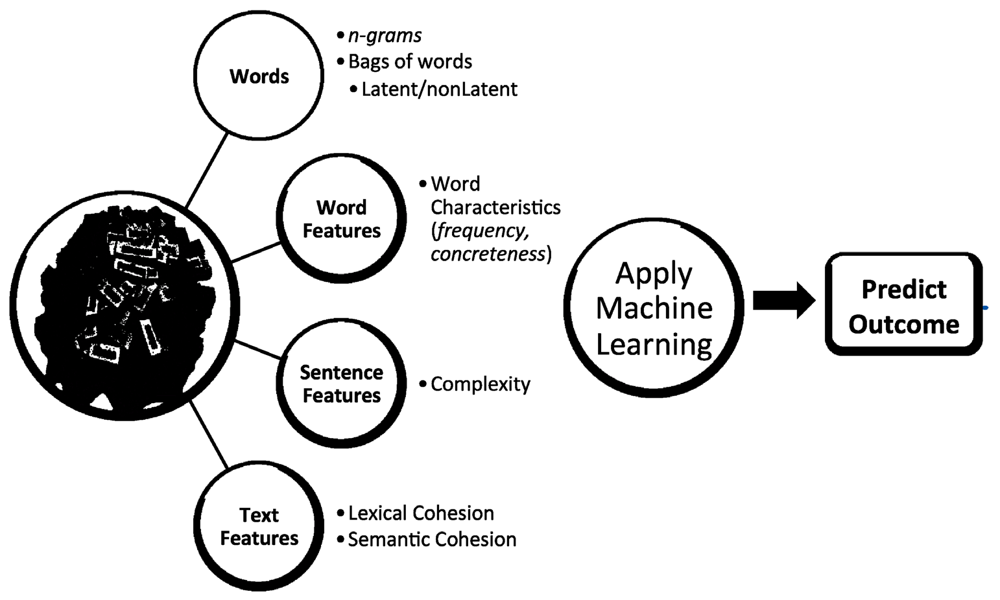
Figure 8.1. Developing algorithms using NLP requires machine-learning techniques applied to various sources
of information on the text, including information from the words, sentences, and the entire text.
PG 96 HANDBOOK OF LEARNING ANALYTICS
systems assess essays using a variety of approaches. to unveil the depth of their understanding (Graesser
For example, the Intelligent Essay Assessor (Landauer, & Person, 1994; Graesser, McNamara, & VanLehn,
Laham, & Foltz, 2003) primarily relies on LSA to assess 2005; McNamara & Kintsch, 1996). AutoTutor is an ITS
the similarity of an essay to benchmark essays. By that focuses on providing instruction on challenging
contrast, systems such as the e-rater developed at topics (e.g., physics, biology, computer programing)
Educational Testing Service (Burstein, Chodorow, & by prompting students to answer deep level how
Leacock, 2004), IntelliMetric Essay Scoring System and why questions. AutoTutor engages the student developed by Vantage Learning (Rudner, Garcia, & via an animated agent in a dialogue that moves the
Welch, 2006), and the Writing Pal (McNamara, Crossley, student toward constructing the correct answers. It
& Roscoe, 2013) rely on combinations of NLP tech- does so by using a variety of dialogue moves, such as
niques and artificial intelligence. AES systems process hints, prompts, assertions, corrections, and answers
writing samples such as essays, and assess the degree to student questions. These moves are driven by a
to which the writer has met the demands of the task combination of NLP techniques. For example, Auto-
by assessing the quality of essays and their accuracy Tutor uses frozen expressions to detect phrases that
relative to the content. AES technologies are highly students are likely to produce in certain situations
successful, reporting levels of accuracy generally as (e.g., I don't know; I don't understand) as well as key accurate as expert human raters (Attali & Burstein, parts of the correct answer. AutoTutor also uses LSA
2006; Shermis, Burstein, Higgins, & Zechner, 2010; to detect the similarity between the answer provided
Valenti, Neri, & Cucchiarelli, 2003; Crossley, Kyle, & by the student and the ideal answer. The combination
McNamara, 2015). of frozen expressions, regular expressions or patterns,
Tutoring Systems inverse-frequency weighted word overlaps between student verbal responses and expectations, and LSA, Another use of NLP has been in the context of auto - allows AutoTutor to simulate the understanding of mated, intelligent tutoring technologies. NLP has been the student's answer, and in turn, this simulated un - incorporated into a number of intelligent tutoring derstanding drives an appropriate response to the systems (ITSs), particularly those that interact with student (Graesser, in press). the student via dialogue (e.g., AutoTutor: Graesser
et al., 2004) and those that prompt the student to iSTART (Interactive Strategy Training for Active Reading
generate verbal responses (e.g., iSTART: McNamara, and Thinking) is another ITS that relies on a combi-
Levinstein, & Boonthum, 2004; Writing Pal: McNamara nation of NLP techniques to respond to open-ended
et al., 2012; Roscoe & McNamara, 2013). When a student responses. iSTART was among the first automated
enters natural language into a system and expects systems to address the paraphrase problem in student's
useful feedback or a reasonable response, NLP can be self-explanations, a difficult challenge in the both
used to interpret that input and provide appropriate NLP and computational linguistics literature. iSTART
feedback (McNamara et al., 2013). For tutoring systems enhances students' comprehension of challenging
that accept natural language as input (e.g., verbal ex- science texts by providing instruction and practice
planations of text, problems, or scientific processes), to use self-explanation (i.e., the process of explaining
student responses can be open-ended and potentially text to oneself) in combination with comprehension
ambiguous. For example, the student might be asked strategies such as generating bridging and elabora-
which phase of cell mitosis involves the lengthening of tive inferences. During the practice phase of iSTART
the microtubules. This type of question (e.g., what or instruction, students generate self-explanations for
when questions) can be answered using short answers challenging texts. Students' self-explanations in iS-
or multiple-choice responses, requiring little to no TART are scored using an algorithm that combines
NLP. By contrast, a question to describe the process information from the words in the self-explanation
of Anaphase would elicit answers likely to differ widely and the text, using a combination of observable and
between students. Thus, automatically detecting the latent semantic information about the words (Mc-
accuracy and quality of the student's answer requires Namara, Boonthum, Levinstein, & Millis, 2007). The
the use of NLP. algorithm automatically assigns a score between 0 and
Why not just use multiple-choice? Many tutorial 3 to each self-explanation. Higher scores are assigned
systems do just that. However, students are more to self-explanations that include information related
likely to construct a deep understanding of a con- to the text content (both the target sentence and
struct or phenomenon by answering previously read sentences), whereas lower scores are how and why
questions (e.g., Johnson-Glenberg, 2007; McKeown, assigned to unrelated or short responses. The scoring
Beck, & Blake, 2009; Wong, 1985). Moreover, students' algorithm is designed to reflect the extent to which
answers to these types of questions are more likely students construct connections between the target
CHAPTER 8 NATURAL LANGUAGE PROCESSING & LEARNING ANALYTICS PG 97
sentence, prior text content, and world knowledge. examine student attitudes, completion, and learning
The system successfully matches human scores of the (Seaton, Bergner, Chuang, Mitros, & Pritchard, 2014;
explanations across a wide variety of texts (Jackson, Wen, Yang, & Rosé, 2014a, 2014b).
Guess, & McNamara, 2010; McNamara et al., 2007). The most common NLP approach to analyzing student
Computer Supported Collaborative Learn- language in MOOCS has been through tools that analyze
ing (CSCL) emotions. Sentiment analysis examines language for
NLP techniques have also been applied to discourse positive or negative emotion words or words related
generated in collaborative learning environments, to motivation, agreement, cognitive mechanisms, or
and in particular Computer Supported Collaborative engagement (Chaturvedi, Goldwasser, & Daumé, 2014;
Learning (CSCL) systems (Stahl, 2006). A subset of Elouazizi, 2014; Moon, Potdar, & Martin, 2014; Wen
these systems model CSCL conversations based on et al., 2014a, 2014b). For example, Moon et al. (2014)
dialogism, a concept introduced by Bakhtin (1981) that used emotion terms and semantic similarity among
later on emerged as a paradigm for CSCL (Koschmann, participants to identify student leaders. Elouazizi
1999). The most representative approaches are Dong's (2014) showed that linguistic indices related to point
(2005) design of team communication, Polyphony of view (e.g., think, believe, presumably, probably) (Trausan-Matu, Rebedea, Dragan, & Alexandru, 2007), were correlated with low levels of engagement in the
the Knowledge Space Visualizer (Teplovs, 2008), and course. Wen and colleagues (2014a, 2014b) found that
ReaderBench (Dascalu, Stavarache et al., 2015; Dascalu, students' use of personal pronouns and words related
Trausan-Matu, McNamara, & Dessus, 2015). Reader- to motivation within discussion forums was predictive
Bench leverages the power of text mining techniques, of a lower risk of dropping out of the course.
advanced NLP, and social network analysis to achieve Similarly, Crossley, McNamara et al. (2015) used mul-
multiple objectives related to language comprehen- tiple levels of linguistic features to examine students'
sion as well as collaborative learning (Dascalu, 2014). language in a MOOC discussion forum within a course
ReaderBench models participation and collaboration covering the topic of educational data mining (Bak-
from a Cohesion Network Analysis perspective in er et al., in press). Crossley, McNamara et al. (2015)
which the information communicated among par- successfully predicted the completion rates (with an
ticipants is computed via semantic textual cohesion accuracy of 70%) of 320 students who participated
(Dascalu, Trausan-Matu, Dessus, & McNamara, 2015a). within the MOOC discussion forums (i.e., posted >
Moreover, ReaderBench has introduced an automated 49 words). Students who were more likely to receive a
dialogic model for assessing collaboration based on certificate of completion in the course generally used
the polyphonic model of discourse (Trausan-Matu, more sophisticated language. For example, their posts
Stahl, & Sarmiento, 2007). Grounded in theories of were more concise and cohesive, used less frequent
dialogism (Bakhtin, 1981), the system automatically and specific words, and had greater overall writing
identifies voices or participant's points of view as quality. Interestingly, indices related to affect were
semantic chains that include tightly cohesive or se- not predictive of completion rates. mantically related concepts spanning throughout the
entire conversation (Dascalu, Trausan-Matu, Dessus, & Collectively, this research provides promising evidence
McNamara, 2015b). Thus, collaboration emerges from that NLP can be a powerful predictor of success in
the inter-animation of different participant voices, the context of MOOCs. Communication between the
which is computationally captured in the co-occur- instructor and the students as well as between the
rence patterns used to highlight the exchange of ideas students is crucial, particularly for distance courses.
between different participants. Further, this communication can then be used as
Massive Open Online Courses (MOOCs) forms of assessment of student performance. There-
courses, particularly massive open online courses participation and potential success. The language that (MOOCs). MOOCs use online platforms to make cours- students use can also be utilized to identify students es available to thousands of students without cost to who are less likely to complete the course, and tar- Another use of NLP has been in the context of online discussion forums in order to better monitor student fore, it seems apparent that MOOCs should include
the student. MOOCs are lauded for their potential to get those students for interventions such as sending increase accessibility to distance and lifelong learners emails, suggesting content, or recommending tutoring. (Koller, Ng, Do, & Chen, 2013). These platforms can Automating language understanding, and thereby provide a tremendous amount of data via click-stream providing information about the language and social logs, assignments, course performance, as well as interactions within these courses, will help to enhance language generated by the students within discus- both learning and engagement in MOOCs. sion forums and emails. These data can be mined to
PG 98 HANDBOOK OF LEARNING ANALYTICS
THE POWER OF NLP (or authentic) versus adapted (or simplified) for second
language learning purposes. Finally, NLP has also been
NLP is extremely powerful, primarily because lan- used to detect deception. Duran, Hall, McCarthy, and
guage is ubiquitous and also because tools to analyze McNamara (2010) examined the extent to which features
language automatically provide indices related to of language discriminated between conversational
virtually any aspect of language (Crossley, 2013). NLP dialogues in which a person was being deceptive and
can detect the specific words used, groups of words, those in which the person was being truthful.
and the strength of the relations between words and It is important to note that there are potential drawbacks
between larger bodies of text. It can also detect the to using NLP. For example, certain NLP techniques
features of the text, such as the frequency, concrete- rely on simplified representations of dialogue that use
ness, or meaningfulness of the words, the complexity word counts or "bag-of-words" approaches. The most
of the sentences, and various aspects of the text such notable and widely used NLP word representations,
as cohesion and genre. The words and their features including LSA vector-spaces, latent Dirichlet alloca-
serve as proxies to various constructs. For example, tion topic distributions (LDA; Blei et al., 2003), and
the frequency of the words in a text serves as a proxy word2vec models based on neural networks (Mikolov,
to estimate the knowledge that might be required to Chen, Corrado, & Dean, 2013), are all subject to the
understand the text. The cohesion of a text affords "bag-of-words" assumption in which word order is
an estimate of the knowledge necessary to fill in the disregarded. In addition, many NLP analyses ignore
gaps in a text. context, such as the intentions or pragmatic aspects
NLP has been used to identify a wide variety of other of the speaker. Similarly, NLP analyses are often lim-
constructs. For example, Crossley and McNamara ited to particular corpora and situations, and fail to
(2012) demonstrated that the linguistic features of generalize to other contexts. Even with these (and
second language (L2) writers' essays could predict other) caveats, NLP is extremely powerful. Because
the native language of those writers. Varner, Roscoe, of the vast sources of information now available from
and McNamara (2013) used indices provided by both NLP tools, and because the language we use can be an
Coh-Metrix and LIWC to examine differences in stu- extension or externalization that represents thoughts
dents' and teachers' ratings of essay quality. Louwerse, and intentions, NLP can provide information about
McCarthy, McNamara, and Graesser (2004) used NLP the individuals, their abilities, their emotions, their
techniques to identify differences between spoken intentions, and social interactions. In the context of
and written samples of English. McCarthy, Briner, learning analytics, it is a means toward the automated
Rus, and McNamara (2007) showed that Coh-Metrix understanding of learning processes and the learner.
could differentiate sections in typical science texts, The Big Picture such as introductions, methods, results, and discus- NLP provides techniques that automate the analysis
sions. Additionally, Crossley, Louwerse, McCarthy, and of language, which allows researchers to establish
McNamara's (2007) investigations of second language a better understanding of language and of the roles
learner texts, revealed a wide variety of structural and that language potentially plays in various aspects of
lexical differences between texts that were adopted our lives. NLP informs feedback systems within tu-
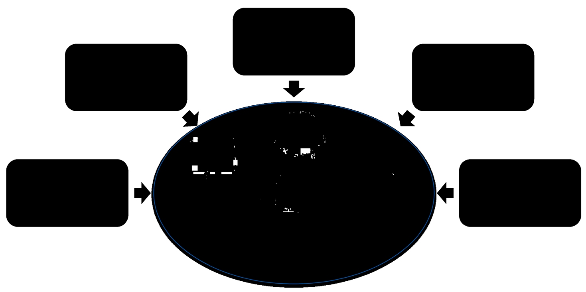
Figure 8.2. Predicting educational outcomes will require the integration of multiple sources of data.
CHAPTER 8 NATURAL LANGUAGE PROCESSING & LEARNING ANALYTICS PG 99
toring systems that prompt the student to generate highly predictive understanding of student outcomes
language within answers to questions, explanations, requires multiple sources of information and a variety
and essays. NLP provides a means of simulating intel- of approaches to data analysis. Learning is a complex
ligence within language-based tutoring systems. NLP process with multiple layers and multiple time scales.
is also informative in the context of online discussion Relying on any single source or type of data to under-
forums. It provides information on student attitudes, stand the learning process is myopic, particularly
motivation, and the quality of the language, which in when so many automated sources of information are
turn is predictive of students' likelihood of performing currently available. NLP is simply one source of data
well or completing the course. increasingly recognized as an integral piece of the big
One goal of learning analytics is to model the char- picture that ultimately we seek. Developing a complete understanding of learning will require an integration acteristics and skills of students in order to provide of multiple sources of data. more effective instruction (Allen & McNamara, 2015).
Specifically, we can use this data for various purposes:
provide automated feedback on performance, inter- ACKNOWLEDGMENTS vene during learning, provide scaffolding or support,
recommend tutoring, personalize learning, and so on, The writing of this chapter was supported in part by
with the assumption that information gleaned from the Institute for Educational Sciences (IES R305A120707,
analytics will ultimately enhance learning. For this R305A130124), the National Science Foundation (NSF
purpose, researchers are increasingly turning to large, DRL-1319645, DRL-1418352, DRL-1418378, DRL-1417997),
complex data sources (i.e., big data) and using various and the Office for Naval Research (ONR N000141410343).
combinations of data types and analytic techniques. Any opinions, findings, and conclusions or recom-
NLP is crucial to this endeavour because the proposed mendations expressed in this material are those of
techniques help to improve student learning through the authors and do not necessarily reflect the views
the prediction and assessment of comprehension of the IES, NSF, or ONR. We are also grateful to the
across a variety of contexts. However, NLP is only one many students, postdoctoral researchers, and faculty
piece of the puzzle. who have contributed to our research on NLP over
As depicted in Figure 8.2, developing a complete and the years.
REFERENCES
Allen, L. K., Jacovina, M. E., & McNamara, D. S. (2016). Computer-based writing instruction. In C. A. MacArthur,
S. Graham, & J. Fitzgerald (Eds.), Handbook of writing research, 2nd ed. (pp. 316–329). New York: The Guilford
Press.
Allen, L. K., & McNamara, D. S. (2015). You are your words: Modeling students' vocabulary knowledge with nat-
ural language processing. In O. C. Santos, J. G. Boticario, C. Romero, M. Pechenizkiy, A. Merceron, P. Mitros,
J. M. Luna, C. Mihaescu, P. Moreno, A. Hershkovitz, S. Ventura, & M. Desmarais (Eds.), Proceedings of the
8th International Conference on Educational Data Mining (EDM 2015) 26–29 June 2015, Madrid, Spain (pp.
258–265). International Educational Data Mining Society.
Attali, Y., & Burstein, J. (2006). Automated essay scoring with e-rater® V. 2. The Journal of Technology, Learning
and Assessment, 4(2). doi:10.1002/j.2333-8504.2004.tb01972.x
Baker, R., Wang, E., Paquette, L., Aleven, V., Popescu, O., Sewall, J., Rose, C., Tomar, G., Ferschke, O., Hollands,
F., Zhang, J., Cennamo, M., Ogden, S., Condit, T., Diaz, J., Crossley, S., McNamara, D., Comer, D., Lynch, C.,
Brown, R., Barnes, T., & Bergner, Y. (in press). A MOOC on educational data mining. In. S. ElAtia, O. Zaïane,
& D. Ipperciel (Eds.). Data Mining and Learning Analytics in Educational Research. Wiley & Blackwell.
Bakhtin, M. M. (1981). The dialogic imagination: Four essays (C. Emerson & M. Holquist, Trans.). Austin, TX:
University of Texas Press.
Blei, D. M., Ng, A. Y., & Jordan, M. I. (2003). Latent Dirichlet allocation. Journal of Machine Learning Research,
3(4–5), 993–1022.
Burstein, J., Chodorow, M., & Leacock, C. (2004). Automated essay evaluation: The Criterion online writing
service. Ai Magazine, 25(3), 27.
PG 100 HANDBOOK OF LEARNING ANALYTICS
Chaturvedi, S., Goldwasser, D., & Daumé III, H. (2014). Predicting instructor's intervention in MOOC forums. In
D. Marcu, K. Toutanova, & H. W. Baidu (Eds.), Proceedings of the 52nd Annual Meeting of the Association for
Computational Linguistics (pp. 1501–1511). Baltimore, MD.
Crossley, S. A. (2013). Advancing research in second language writing through computational tools and ma-
chine learning techniques: A research agenda. Language Teaching, 46(2), 256–271.
Crossley, S. A., Allen, L. K., Kyle, K., & McNamara, D. S. (2014). Analyzing discourse processing using a simple
natural language processing tool (SiNLP). Discourse Processes, 51, 511–534.
Crossley, S. A., Kyle, K., & McNamara, D. S. (2015). To aggregate or not? Linguistic features in automatic essay
scoring and feedback systems. Journal of Writing Assessment, 8(1). http://www.journalofwritingassessment.
org/article.php?article=80
Crossley, S. A. Kyle, K., & McNamara, D. S. (in press). Tool for the automatic analysis of text cohesion (TAACO):
Automatic assessment of local, global, and text cohesion. Behavior Research Methods.
Crossley, S. A., & Louwerse, M. (2007). Multi-dimensional register classification using bigrams. International
Journal of Corpus Linguistics, 12(4), 453–478.
Crossley, S. A., Louwerse, M., McCarthy, P. M., & McNamara, D. S. (2007). A linguistic analysis of simplified and
authentic texts. Modern Language Journal, 91, 15–30.
Crossley, S. A., & McNamara, D. S. (2012). Interlanguage talk: A computational analysis of non-native speakers'
lexical production and exposure. In P. M. McCarthy & C. Boonthum-Denecke (Eds.), Applied natural lan-
guage processing and content analysis: Identification, investigation, and resolution (pp. 425–437). Hershey,
PA: IGI Global.
Crossley, S. A., McNamara, D. S., Baker, R., Wang, Y., Paquette, L., Barnes, T., & Bergner, Y. (2015). Language to
completion: Success in an educational data mining massive open online class. In O. C. Santos, J. G. Boticar-
io, C. Romero, M. Pechenizkiy, A. Merceron, P. Mitros, J. M. Luna, C. Mihaescu, P. Moreno, A. Hershkovitz, S.
Ventura, & M. Desmarais (Eds.), Proceedings of the 8th International Conference on Educational Data Mining
(EDM 2015), 26–29 June 2015, Madrid, Spain (pp. 388–391). International Educational Data Mining Society.
Dascalu, M. (2014). Analyzing discourse and text complexity for learning and collaborating. Studies in Compu-
tational Intelligence (Vol. 534). Switzerland: Springer.
Dascalu, M., Stavarache, L. L., Dessus, P., Trausan-Matu, S., McNamara, D. S., & Bianco, M. (2015). ReaderBench:
The learning companion. In A. Mitrovic, F. Verdejo, C. Conati, & N. Heffernan (Eds.), Proceedings of the 17th
International Conference on Artificial Intelligence in Education (AIED '15), 22–26 June 2015, Madrid, Spain
(pp. 915–916). Springer.
Dascalu, M., Trausan-Matu, S., Dessus, P., & McNamara, D. S. (2015a). Discourse cohesion: A signature of col-
laboration. In P. Blikstein, A. Merceron, & G. Siemens (Eds.), Proceedings of the 5th International Learning
Analytics & Knowledge Conference (LAK '15), 16–20 March, Poughkeepsie, NY, USA (pp. 350–354). New York:
ACM.
Dascalu, M., Trausan-Matu, S., Dessus, P., & McNamara, D. S. (2015b). Dialogism: A framework for CSCL and a
signature of collaboration. In O. Lindwall, P. Häkkinen, T. Koschmann, P. Tchounikine, & S. Ludvigsen (Eds.),
Proceedings of the 11th International Conference on Computer-Supported Collaborative Learning (CSCL 2015),
7–11 June 2015, Gothenburg, Sweden (pp. 86–93). International Society of the Learning Sciences.
Dascalu, M., Trausan-Matu, S., McNamara, D. S., & Dessus, P. (2015). ReaderBench: Automated evaluation of
collaboration based on cohesion and dialogism. International Journal of Computer-Supported Collaborative
Learning, 10(4), 395–423.
Dascalu, M., McNamara, D. S., Crossley, S. A., & Trausan-Matu, S. (2016). Age of exposure: A model of word
learning. Proceedings of the 30th Conference on Artificial Intelligence (AAAI-16), 12–17 February 2016, Phoenix,
Arizona, USA (pp. 2928–2934). Palo Alto, CA: AAAI Press.
Dikli, S. (2006). An overview of automated scoring of essays. The Journal of Technology, Learning and Assess-
ment, 5(1). http://files.eric.ed.gov/fulltext/EJ843855.pdf
CHAPTER 8 NATURAL LANGUAGE PROCESSING & LEARNING ANALYTICS PG 101 Dong, A. (2005). The latent semantic approach to studying design team communication. Design Studies, 26(5),
445–461.
Duran, N. D., Hall, C., McCarthy, P. M., & McNamara, D. S. (2010). The linguistic correlates of conversational
deception: Comparing natural language processing technologies. Applied Psycholinguistics, 31(3), 439–462.
Elouazizi, N. (2014). Point-of-view mining and cognitive presence in MOOCs: A (computational) linguistics
perspective. EMNLP 2014, 32. http://www.aclweb.org/anthology/W14-4105
Graesser, A. C. (in press). Conversations with AutoTutor help students learn. International Journal of Artificial
Intelligence in Education.
Graesser, A. C., Lu, S., Jackson, G. T., Mitchell, H. H., Ventura, M., Olney, A., & Louwerse, M. M. (2004). AutoTu-
tor: A tutor with dialogue in natural language. Behavior Research Methods, Instruments, & Computers, 36(2),
180–192.
Graesser, A. C., McNamara, D. S., & Kulikowich, J. M. (2011). Coh Metrix: Providing multilevel analyses of text
characteristics. Educational Researcher, 40, 223–234.
Graesser, A. C., McNamara, D. S., & VanLehn, K. (2005). Scaffolding deep comprehension strategies through
Point & Query, AutoTutor, and iSTART. Educational Psychologist, 40, 225–234.
Graesser, A. C., & Person, N. K. (1994). Question asking during tutoring. American Educational Research Journal,
31(1), 104–137.
Jackson, G. T., Allen, L. K., & McNamara, D. S. (2016). Common Core TERA: Text Ease and Readability Assessor.
In S. A. Crossley & D. S. McNamara (Eds.), Adaptive educational technologies for literacy instruction. New
York: Taylor & Francis, Routledge.
Jackson, G. T., Guess, R. H., & McNamara, D. S. (2010). Assessing cognitively complex strategy use in an un-
trained domain. Topics in Cognitive Science, 2, 127–137.
Jarvis, S., Bestgen, Y., Crossley, S. A., Granger, S., Paquot, M., Thewissen, J., & McNamara, D. S. (2012). The com-
parative and combined contributions of n-grams, Coh-Metrix indices and error types in the L1 classifica-
tion of learner texts. In S. Jarvis & S. A. Crossley (Eds.), Approaching language transfer through text classifi-
cation: Explorations in the detection-based approach (pp. 154–177). Bristol, UK: Multilingual Matters.
Johnson-Glenberg, M. C. (2007). Web-based reading comprehension instruction: Three studies of 3D-read-
ers. In D. McNamara (Ed.), Reading comprehension strategies: Theory, interventions, and technologies (pp.
293–324). Mahwah, NJ: Lawrence Erlbaum Publishers.
Jurafsky, D., & Martin, J. H. (2000). Speech and language processing: An introduction to natural language pro-
cessing, computational linguistics and speech recognition. Upper Saddle River, NJ: Prentice Hall.
Jurafsky, D., & Martin, J. H. (2008). Speech and language processing: An introduction to natural language pro-
cessing, computational linguistics and speech recognition, 2nd ed. Upper Saddle River, NJ: Prentice Hall.
Koller, D., Ng, A., Do, C., & Chen, Z. (2013). Retention and intention in massive open online courses: In depth.
Educause Review, 48(3), 62–63.
Koschmann, T. (1999). Toward a dialogic theory of learning: Bakhtin's contribution to understanding learning
in settings of collaboration. In C. M. Hoadley & J. Roschelle (Eds.), Proceedings of the 1999 Conference on
Computer Support for Collaborative Learning (CSCL '99), 12–15 December 1999, Palo Alto, California (pp.
308–313). International Society of the Learning Sciences.
Kyle, K., & Crossley, S. A. (2015). Automatically assessing lexical sophistication: Indices, tools, findings, and
application. TESOL Quarterly, 49(4), 757–786.
Landauer, T. K., & Dumais, S. T. (1997). A solution to Plato's problem: The latent semantic analysis theory of
acquisition, induction, and representation of knowledge. Psychological Review, 104(2), 211–240.
Landauer, T. K., Laham, D., & Foltz, P. W. (2003). Automated scoring and annotation of essays with the Intel-
ligent Essay Assessor. In M. D. Shermis & J. Burstein (Eds.), Automated essay scoring: A cross-disciplinary
perspective (pp. 87–112). Mahwah, NJ: Lawrence Erlbaum Associates.
PG 102 HANDBOOK OF LEARNING ANALYTICS
Landauer, T., McNamara, D. S., Dennis, S., & Kintsch, W. (Eds.). (2007). Handbook of latent semantic analysis.
Mahwah, NJ: Lawrence Erlbaum Associates.
Landauer, T. K., Kireyev, K., & Panaccione, C. (2011). Word maturity: A new metric for word knowledge. Scien-
tific Studies of Reading, 15(1), 92–108.
Louwerse, M. M., McCarthy, P. M., McNamara, D. S., & Graesser, A. C. (2004). Variation in language and cohe-
sion across written and spoken registers. In K. Forbus, D. Gentner, & T. Regier (Eds.), Proceedings of the 26th
Annual Conference of the Cognitive Science Society (CogSci 2004), 4–7 August 2004, Chicago, IL, USA (pp.
843–848). Mahwah, NJ: Lawrence Erlbaum Associates.
McCarthy, P. M., Briner, S. W., Rus, V., & McNamara, D. S. (2007). Textual signatures: Identifying text-types us-
ing latent semantic analysis to measure the cohesion of text structures. In A. Kao & S. Poteet (Eds.), Natural
language processing and text mining (pp. 107–122). London: Springer-Verlag UK.
McKeown, M. G., Beck, I. L., & Blake, R. G. K. (2009). Rethinking reading comprehension instruction: A compar-
ison of instruction for strategies and content approaches. Reading Research Quarterly, 44, 218–253.
McNamara, D. S. (2011). Computational methods to extract meaning from text and advance theories of human
cognition. Topics in Cognitive Science, 2, 1–15.
McNamara, D. S., Boonthum, C., Levinstein, I. B., & Millis, K. (2007). Evaluating self-explanations in iSTART:
Comparing word-based and LSA algorithms. In T. Landauer, D. S. McNamara, S. Dennis, & W. Kintsch (Eds.),
Handbook of latent semantic analysis (pp. 227–241). Mahwah, NJ: Lawrence Erlbaum Associates.
McNamara, D. S., Crossley, S. A., & Roscoe, R. D. (2013). Natural language processing in an intelligent writing
strategy tutoring system. Behavior Research Methods, 45, 499–515.
McNamara, D. S., Graesser, A. C., McCarthy, P., & Cai, Z. (2014). Automated evaluation of text and discourse with
Coh-Metrix. Cambridge, UK: Cambridge University Press.
McNamara, D. S., & Kintsch, W. (1996). Learning from text: Effects of prior knowledge and text coherence.
Discourse Processes, 22, 247–288.
McNamara, D. S., Levinstein, I. B., & Boonthum, C. (2004). iSTART: Interactive strategy trainer for active read-
ing and thinking. Behavioral Research Methods, Instruments, & Computers, 36, 222–233.
McNamara, D. S., Ozuru, Y., Graesser, A. C., & Louwerse, M. (2006). Validating Coh-Metrix. In R. Sun & N. Mi-
yake (Eds.), Proceedings of the 28th Annual Conference of the Cognitive Science Society (CogSci 2006), 26–29
July 2006, Vancouver, British Columbia, Canada (pp. 573–578). Austin, TX: Cognitive Science Society.
McNamara, D. S., Raine, R., Roscoe, R., Crossley, S. A, Jackson, G. T., Dai, J., Cai, Z., Renner, A., Brandon, R.,
Weston, J., Dempsey, K., Carney, D., Sullivan, S., Kim, L., Rus, V., Floyd, R., McCarthy, P. M., & Graesser, A. C.
(2012). The Writing-Pal: Natural language algorithms to support intelligent tutoring on writing strategies.
In P. M. McCarthy & C. Boonthum-Denecke (Eds.), Applied natural language processing and content analy-
sis: Identification, investigation, and resolution (pp. 298–311). Hershey, PA: IGI Global.
Mikolov, T., Chen, K., Corrado, G., & Dean, J. (2013). Efficient estimation of word representation in vector
space. In Workshop at ICLR. Scottsdale, AZ. https://arxiv.org/abs/1301.3781
Miller, G. A., Beckwith, R., Fellbaum, C., Gross, D., & Miller, K. J. (1990). Introduction to WordNet: An on-line
lexical database. International Journal of Lexicography, 3(4), 235–244.
Moon, S., Potdar, S., & Martin, L. (2014). Identifying student leaders from MOOC discussion forums through
language influence. EMNLP 2014, 15. http://www.aclweb.org/anthology/W14-4103
Pennebaker, J. W., Booth, R. J., & Francis, M. E. (2007). Linguistic inquiry and word count: LIWC [Computer
software]. Austin, TX: liwc.net.
Pennebaker, J. W., Boyd, R. L., Jordan, K., & Blackburn, K. (2015). The development and psychometric prop-
erties of LIWC2015. UT Faculty/Researcher Works. https://repositories.lib.utexas.edu/bitstream/han-
dle/2152/31333/LIWC2015_LanguageManual.pdf?sequence=3
CHAPTER 8 NATURAL LANGUAGE PROCESSING & LEARNING ANALYTICS PG 103 Roscoe, R. D., & McNamara, D. S. (2013). Writing Pal: Feasibility of an intelligent writing strategy tutor in the
high school classroom. Journal of Educational Psychology, 105, 1010–1025.
Rudner, L. M., Garcia, V., & Welch, C. (2006). An evaluation of IntelliMetric' essay scoring system. The Journal
of Technology, Learning and Assessment, 4(4). https://ejournals.bc.edu/ojs/index.php/jtla/article/down-
load/1651/1493
Seaton, D. T., Bergner, Y., Chuang, I., Mitros, P., & Pritchard, D. E. (2014). Who does what in a massive open
online course? Communications of the ACM, 57(4), 58–65.
Shermis, M. D., Burstein, J., Higgins, D., & Zechner, K. (2010). Automated essay scoring: Writing assessment and
instruction. International Encyclopedia of Education, 4, 20–26.
Stahl, G. (2006). Group cognition: Computer support for building collaborative knowledge (pp. 451–473). Cam-
bridge, MA: MIT Press.
Teplovs, C. (2008). The knowledge space visualizer: A tool for visualizing online discourse. In G. Kanselaar, V.
Jonker, P. A. Kirschner, & F. Prins (Eds.), Proceedings of the International Society of the Learning Sciences
2008: Cre8 a learning world. Utrecht, NL: International Society of the Learning Sciences. http://chris.ikit.
org/ksv2.pdf
Trausan-Matu, S., Rebedea, T., Dragan, A., & Alexandru, C. (2007). Visualisation of learners' contributions in
chat conversations. In J. Fong & F. L. Wang (Eds.), Blended learning (pp. 217–226). Singapore: Pearson/Pren-
tice Hall.
Trausan-Matu, S., Stahl, G., & Sarmiento, J. (2007). Supporting polyphonic collaborative learning. Indiana Uni-
versity Press, E-service Journal, 6(1), 58–74.
Turing, A. M. (1950). Computing machinery and intelligence. Mind, 59, 433–460. http://www.loebner.net/
Prizef/TuringArticle.html
Valenti, S., Neri, F., & Cucchiarelli, A. (2003). An overview of current research on automated essay grading.
Journal of Information Technology Education: Research, 2(1), 319–330.
Varner, L. K., Roscoe, R. D., & McNamara, D. S. (2013). Evaluative misalignment of 10th-grade student and teach-
er criteria for essay quality: An automated textual analysis. Journal of Writing Research, 5, 35–59.
Weigle, S. C. (2013). English as a second language writing and automated essay evaluation. In M. D. Shermis
& J. Burstein (Eds.), Handbook of automated essay evaluation: Current applications and new directions (pp.
36–54). London: Routledge.
Wen, M., Yang, D., & Rosé, C. P. (2014a). Linguistic reflections of student engagement in massive open online
courses. In E. Adar & P. Resnick (Eds.), Proceedings of the 8th International AAAI Conference on Weblogs and
Social Media (ICWSM '14), 1–4 June 2014, Ann Arbor, Michigan, USA. Palo Alto, CA: AAAI Press. http://www.
aaai.org/ocs/index.php/ICWSM/ICWSM14/paper/viewFile/8057/8153
Wen, M., Yang, D., & Rosé, C. P. (2014b). Sentiment analysis in MOOC discussion forums: What does it tell us?
In J. Stamper, Z. Pardos, M. Mavrikis, & B. M. McLaren (Eds.), Proceedings of the 7th International Conference
on Educational Data Mining (EDM2014), 4–7 July, London, UK (pp. 185–192). International Educational Data
Mining Society.
Wilson, M. D. (1988). The MRC psycholinguistic database: Machine-readable dictionary (Version 2). Behavioral
Research Methods, Instruments, and Computers, 201, 6–11.
Wong, B. Y. L. (1985). Self-questioning instructional research: A review. Review of Educational Research, 55,
227–268.
Xi, X. (2010). Automated scoring and feedback systems: Where are we and where are we heading? Language
Testing, 27(3), 291–300.
PG 104 HANDBOOK OF LEARNING ANALYTICS
Chapter 9: Discourse Analytics
Carolyn Penstein Rosé
Language Technologies Institute and Human–Computer Interaction Institute, Carnegie Mellon University, USA
DOI: 10.18608/hla17.009
ABSTRACT
This chapter introduces the area of discourse analytics (DA). Discourse analytics has its impact in multiple areas, including offering analytic lenses to support research, enabling formative and summative assessment, enabling of dynamic and context sensitive triggering of interventions to improve the effectiveness of learning activities, and provision of reflec-tion tools such as reports and feedback after learning activities in support of both learning and instruction. The purpose of this chapter is to encourage both an appropriate level of hope and an appropriate level of skepticism for what is possible while also exposing the reader to the breadth of expertise needed to do meaningful work in this area. It is not the goal to impart the needed expertise. Instead, the goal is for the reader to find his or her place within this scope to discern what kinds of collaborators to seek in order to form a team that encompasses sufficient breadth. We begin with a definition of the field, casting a broad net both theoretically and methodologically, explore both representational and algorithmic dimensions, and conclude with suggestions for next steps for readers who are interested in delving deeper.
Keywords: Discourse analytics, collaborative learning, machine learning, analysis tools
Discourse analytics (DA) is one area within the field misconceptions. The first is an extreme over-expec-
of learning analytics (LA; Buckingham Shum, 2013; tation fuelled by the desire of many to have an off-
Buckingham Shum, de Laat, de Liddo, Ferguson, the-shelf solution that will do their analysis work for
& Whitelock, 2014). It includes processing of open them at the click of a button. Those falling prey to this
response questions in educational contexts, and a misconception are almost certainly doomed to dis-
large proportion of research in the area focuses on appointment. Making effective use of either the most
assessment of writing, but it encompasses more than simple or the most powerful modelling technologies
that, including analysis of discussions occurring in requires a lot of preparation, effort, and expertise.
discussion forums, chat rooms, microblogs, blogs, The second misconception is an extreme skepticism,
and even wikis. We consider LA broadly as learning sometimes resulting from disappointments arising
about learning by listening to learners learn, with our from starting with the first misconception, or other
listening normally assisted by data mining and machine times coming from a deep enough understanding of
learning technologies, though the published work in the complexities of discourse that it is difficult to get
the area may precede but not yet include automation past the understanding that no computer could ever
in all cases (Knight & Littleton, 2015; Milligan, 2015). fully grasp the nuances that are there. While it is true
Furthermore, we consider that what makes this area that discourse is incredibly complex, it is still true
distinct is that the listening focuses on natural lan- that there are meaningful patterns that state-of-the-
guage data in all of the streams in which that data is art modelling approaches are able to identify. Much
produced. published work from recent Learning Analytics and
This chapter offers a very brief introduction to this Knowledge and related conferences that illustrate the state-of-the-art are cited throughout this chapter. A area situated within the field of LA broadly. DA is an recent survey on computational sociolinguistics tells area that has alternately suffered from two dangerous
CHAPTER 9 DISCOURSE ANALYTICS PG 105
the story from the perspective of the field of language a lens to aid in our listening to learners, we must ac-
technologies (Nguyen, Dogruöz, Rosé, & de Jong, in knowledge that we are always abdicating some of the
press), and might be of interest to dedicated readers. responsibility for interpretation to the technologies
The hope of this chapter is that it provides helpful that sit between us and the learning process, including whatever was lost or transformed in the recording pointers to readers who want to dig a little further. into some digital form, and the further reduction and Two previous workshops on the topic of DA survey transformation that occurred during the application the foundational work within the LA community of the analytic technology (Morrow & Brown, 1994). (Buckingham Shum, 2013; Buckingham Shum et al., With that caveat in mind, in this chapter we will fo- 2014). An extensive overview of issues and methods cus heavily on questions of model interpretation and situated more narrowly within the field of comput - assessment of validity. er-supported collaborative learning can be found in
three earlier published journal articles (Rosé et al.,
2008; Mu, Stegman, Mayfield, Rosé, & Fischer, 2012; SCOPE AND FOCUS OF THIS Gweon, Jain, McDonough, Raj, & Rosé, 2013). A short CHAPTER
course in the area can be found in the text-mining unit When one initially thinks about analytics, algorithms 1 of the Fall 2014 Data, Analytics, and Learning MOOC immediately pop to mind (Witten, Frank, & Hall, 2011). offered on the edX platform. Other resources will be However, it is important to take a lesson from applied presented at the end of this chapter. statistics and instead think about representation first.
In this chapter, we are interested in the natural lan- At the heart of DA work is a focus on representation of
guage uttered during episodes of learning. We seek the data. Machine learning models cannot be applied
to be theoretically and methodologically inclusive. directly to texts. Rather, the predictor features must
Much of the existing work on discourse analytics be extracted from the text. These predictor features
views learning and its connection with language from can be conceived of as questions: “Is __ found in the
a cognitive lens, in other words, seeking categories of text?” or “How many times is __ found in the text?” If
language behaviour whose presence in a discourse each feature is one of these questions, then for each
makes predictions about learning gains because of instance, the feature value is the answer to the question.
the connection between the associated discourse Interested readers can get a good feel for the breadth
processes and cognitive processes associated with of simple features that can readily be extracted from
learning. In this chapter, we seek to view learning and text and what impact they have on predictive accuracy
its connection with language through a social lens in of classification models by experimenting with the
order to leverage the important interplay between the publically available LightSIDE tool bench2 (Mayfield & cognitive and social factors in learning (Hmelo-Silver, Rosé, 2013; Gianfortoni, Adamson, & Rosé, 2011), a freely
Chinn, Chan, & O’Donnell, 2013; O’Donnell & King, 1999). available, off-the-shelf workbench with an extensive
For example, we seek to identify discourse processes user’s manual, example data sets, instructions about
that reveal underlying dispositions, attitudes, and process, and contact information for researchers who
relationships that play a supporting (or sometimes are willing to offer help.
interfering) role in the learning interactions. Regardless The key to success with modelling technologies applied of the situation in which it is uttered, natural language to text is to ask the right questions, which produce is deeply personal and deeply cultural. Embedded meaningful clues. Thinking about this question begins within it are artifacts of our personal experiences and by considering how language is structured. Though those of generations that came before us. The details on the surface language may appear to the naked eye of language choices provide clues about the identities as a monolithic, unstructured whole, the fact is that we purposefully project as well as sometimes those it is composed of multiple layers of structure, each we seek to hide or even those of which we are not described within a separate area of linguistics. An consciously aware. They project assumptions about introductory survey of a linguistics textbook (O’Grady, and attitudes towards our audience and our posi- Archibald, Aronoff, & Rees-Miller, 2009) would be a tioning with respect to our audience, or sometimes valuable resource for researchers desiring to get into just assumptions we want our audience to think we this area of LA. At the finest grain is the sound structure are making. We use these choices as currency in an level, referred to as phonology and phonetics. Here economy of relationships in which we seek to achieve the basic sound units of a language and how they fit goals that we have adopted (Ribeiro, 2006). together into the syllabic structure of a language are
With this understanding, as we use computation as described. A basic alphabet of sounds comprise the
set of phonemes, but within dialects these may be
1 https://www.edx.org/course/data-analytics-learning-utarling-tonx-link5-10x 2 http://lightsidelabs.com/research/
PG 106 HANDBOOK OF LEARNING ANALYTICS
pronounced in particular ways, which carry social education, success with assessment of open-ended
significance because of their association with a host responses has been achieved with LightSIDE (Nehm,
of socially relevant variables such as ethnicity, so- Ha, & Mayfield, 2012; Mayfield & Rosé, 2013).
cioeconomic status, and region. Just above that level, At this point, it is useful to return to the tension be- the inner structure of words is described in a layer tween the over- and under-expectation of DA. If we referred to as morphology. This is where systems of think about the challenges in identifying appropriate, affixes we learn in our grammar classes come into the meaningful features, we must come to terms with picture, which change the tenses on verbs or number the limitations of the lenses we construct through on nouns, among other things. Above that is the level modelling tools. The analytic technologies applied in of syntax, where the grammatical structure of whole DA may serve as a lens in the hands of researchers or sentences is described. Also at the level of a sentence practitioners that sits between them and the episodes is the area of semantics, which describes how meaning of learning that occur within the world, or they may is composed through fixed expressions, by convention, be a filter that mediates the interaction between or by composing smaller units, guided through syntax, learners and instructors, between learners, or be- and referencing low level semantic units at the level tween learners and learning technologies. Lenses are of lexical semantics. Above the sentence level is the useful precisely because they do not simply transfer level of discourse, where we find rhetorical strategies the exact details of the world viewed through them. among other aspects of structure. While these technical Instead they accentuate aspects of those images that terms might be unfamiliar to many readers, they may would not as effectively been seen without them. That provide useful search terms for readers who desire to is what we need them to do. At the same time, they find relevant resources for further reading. obscure other details that are deemed less interesting
If one traces the history of several areas in which nat- by design. Lenses always distort. But in order to use
ural language data has been the target of automated them in a valid way, we must understand what each
analysis, we hear the same refrain, namely the key to accentuates and obscures so that we can select an
valid modelling is design of meaningful representations. appropriate lens, and so we can interpret what we
The hope in including this example in this chapter is see in a valid way, always questioning how the picture
that readers can be spared from learning the same would be different without it or with a different lens.
lesson the hard way. Taking one of the earliest cases Thus, from the beginning, we would caution those
where this lesson about DA was well learned was that who consume the research in this area, develop these
of automated essay scoring (Page, 1966; Shermis & lenses, or actively apply them in research or practice,
Hammer, 2012). The earliest approaches used simple to be wary of what is inevitably lost or transformed in
models, like regression, and simple features, such as the process of application. Now this chapter will turn
counting average sentence length, number of long its attention to specific areas within the scope of DA.
words, and length of essay. These approaches were
highly successful in terms of reliability of assignment REPRESENTATION OF TEXT of numeric scores (Shermis & Burstein, 2013); however,
they were criticized for lack of validity in their usage Key decisions that strongly influence how the data
of evidence for assessment. In later work, the focus will appear through the analytic lens are made at the
shifted to identification of features more like what representation stage. At this stage, text is transformed
instructors included in their own rubrics for scoring from a seemingly monolithic whole to a set of features
writing. This investigation led to inclusion of content that are said to be extracted from it. Each feature
focused features, including techniques akin to factor extractor asks a question of the text, and the answer
analysis such as latent semantic analysis (LSA: Foltz, that the text gives is the value of the corresponding
1996) or latent Dirichlet allocation (LDA; Blei, Ng, & feature within the representation. Imagine that all
Jordan, 2003; Griffiths & Steyvers, 2004) to aid in you knew about a person was the set of answers to
content based assessments, though these still fall prey questions posed during a game of twenty questions,
to problems with unigram features since they are also and now your task is to classify that person into a
usually grounded in a unigram language representation. number of social categories of interest. If the ques-
Other factor analytic language analysis approaches tions are carefully constructed, you may be able to
such as CohMetrix (McNamara & Graesser, 2012) have make an accurate prediction; nevertheless, you must
recently been used for assessment of student writing acknowledge that much information and insight into
along multiple dimensions, including such factors as that person as an individual will have been lost in the
cognitive complexity. In highly causal domains that build process. Once information is lost at this important
in some level of syntactic structural analysis, CohMetrix stage in the process, it cannot be recovered through
has shown benefits (Rosé & VanLehn, 2005). In science application of an algorithm, no matter how advanced
CHAPTER 9 DISCOURSE ANALYTICS PG 107
and generally effective that algorithm is. Thus, we features (i.e., features that mean different things in
emphasize throughout this chapter the importance of different contexts, but the representation does not
careful decision making about representation, careful enable leveraging that context in order to disambig-
reflection about interpretation, and careful questioning uate) or fragmentation (i.e., the same abstract feature
of the validity of inferences made. While readers new is being represented by several more specific features,
to this area may find these caveats somewhat illusive, some of which are missing or too sparse in your data).
they will become clearer with experience. It may also be that the most meaningful features are
Overview simply missing from your feature space, and other features, which may correlate with the meaningful Unigram features are the most typical feature extractors ones within the specific data used as training data, used in text mining problems. In the case of a unigram will often “steal the weight,” which ends up being feature space, for each word appearing within the set of counter-productive when the model is applied to texts in the training data, there will be a corresponding new data where the spurious correlations between feature that asks about the presence of that word within the meaningful features and less meaningful features each text. While unigram feature spaces frequently may not exist or may be different. achieve reasonably high performance, the models
often fail to generalize beyond data collected under Case Study very similar circumstances to that of the training data. In order to illustrate the thinking that goes into repre-
The reason for the lack of generalization is that these sentation of text for DA, we will start with a common
unigram models essentially memorize for each class example, namely analysis of affect in text, otherwise
value label in a superficial fashion what kinds of things known as sentiment analysis (Pang & Lee, 2008). It is people talk about in the set of instances associated one of the most heavily marketed applications of text
with that label in the training data. If there is some mining, and it is frequently the first thing researchers
consistency in that, then it can be learned by these think to apply to their text data when faced with an-
models, but that consistency rarely generalizes very alyzing it. We will begin by introducing some issues
far. Generalization comes when the features extracted in this area of text analytics and conclude with an
come from a relevant layer of structure. investigation of what these analytics do or do not
The purpose of the feature-based representation of offer in terms of explaining patterns of attrition in
text is frequently to enable predictive modelling for MOOCs, where one might reasonably expect to see
classification or numerical assessment, where the more expressions of negative affect from students who
objective is to achieve this predictive modelling with are struggling and ultimately drop out. We will see
the highest possible accuracy (Rosé et al., 2008; Mc- that the picture is far more complex than that (Wen,
Laren et al., 2007; Allen, Snow, McNamera, 2015). This Yang, & Rosé, 2014a). In leading the reader through this
orientation will be the focus of this section. However, case study, the hope is that the reader will see how
it is important to note that in some work within the one might progress through cycles of data analysis
broad area of DA, the representation work is the fo from pre-conceptions that start out overly simplistic, -
cus, and meaning is made of the identified predictive but become more informed through iteration. The
features, and thus the predictive modelling, if any, most interesting work in the area of DA, or any area
serves mainly as a validation of the meaningfulness of of analytics applied to rich, relatively unstructured
the identified features (Simsek, Sandor, & Buckingham data, will follow a similar storyline. Shum, 2015; Dascalu, Dessus, McNamera, 2015; Snow, Simplistic treatments of sentiment identify texts as
Allen, Jacovina, Perret, McNamera, 2015). exhibiting either a positive or negative sentiment,
With respect to predictive modelling for classifica and rely on an association between words and this - affective judgment. Thus, much work has gone into tion, in this vector-based comparison, the chosen the construction of sentiment lexicons, which asso - features should make instances that are of different ciate words with a positivity or negativity score. The categories look far apart within the vector space, and area of sentiment analysis is well developed, gaining instances that are of the same category look close substantial representation in industry, providing within the vector space. This principle can also be services to businesses related to marketing issues. used to troubleshoot a text representation. Features Nevertheless, the limitations of the technology are that either make instances that should be classified clear. Furthermore, what is learned from examination the same way look different or make instances that of the linguistic literature is that much about attitude should be classified differently look similar are very is not conveyed in text through words that are specif - likely to cause confusion in the classifications made ically positive or negative (Martin & White, 2005). This by models trained using representations that include can be illustrated with the following example related those features. The problem is often either ambiguous to the weather. A statement such as “The weather is
PG 108 HANDBOOK OF LEARNING ANALYTICS
beautiful today” contains the required positive word; with the material. Negative affect words, expressions,
however, “The sun is shining” is only obviously positive and images may come up in a literature course where
if one knows that typically sunny days are preferred stories about unfortunate or stressful events are
over rainy days. “It’s a great day for staying indoors,” discussed, and yet that expressed sentiment might
indicates that the weather is not so good, despite have nothing to do with a student’s feeling about the
the presence of a positive word. “My rain boots are experience of reading that material or even discussing
feeling neglected,” could easily be taken as a positive that material. We conclude that sentiment analysis is
comment about the weather despite the presence of not as simple as counting positive and negative words.
a negative word. Individual words are not enough evidence of attitude,
Now we will investigate situations more close to context matters. Some rhetorical strategies combine negative and positive comments in the same review, and home where the approach may fall short. Because sometimes sentiment is expressed indirectly. Nuances sentiment analysis is one of the most widely known like this observed through qualitative analysis must and widely used language technologies by researchers be taken into account when representing your data. and practitioners in other fields who are interested
in text, it is not surprising that analysis of forum data UNSUPERVISED METHODS from MOOCs is one area where we find applications
of this technology, and thus that work will be a con- A variety of factor analytic (Garson, 2013; Loehlin, 2004)
venient case study. The rationale for its application and latent variable analysis techniques (Skrondal &
was that discussion forum data may be useful for Rabe-Hesketh, 2004; Collins & Lanza, 2010) have been
understanding better how, why, and when students popular in the area. These may be unsupervised (i.e.,
drop out of MOOCs, with the idea that students may not requiring pre-assigned labels), supervised (i.e., re-
drop out because they are dissatisfied with a course, quiring examples to have pre-defined labels), or lightly
and that dissatisfaction should be visible using sen- supervised (i.e., requiring some external guidance to
timent analysis as a lens. In an early such investiga- learning algorithms, but not requiring a pre-assigned
tion, however, Ramesh, Goldwasser, Huang, Daumé, label for every example). In this section, we focus on
and Getoor (2013) found no relation between overall unsupervised methods. The most popular such tech-
sentiment expressed by students (as assessed using a niques in the education space include factor analytics
completely automated method) and their associated approaches like latent semantic analysis (LSA: Foltz,
probability of course completion. Adamopoulos (2013) 1996) or structured latent variable models like latent
developed a sentiment related assessment method to Dirichlet allocation or LDA (Blei et al., 2003) mentioned
measure sentiment associated with different course briefly above. Thus, here we delve slightly deeper into
affordances in order to understand what students ex- the details and discuss strengths and limitations. In
press their attitudes about in course discussion forums. recent work in LA, unsupervised approaches have been
They used a combination of automatically identified used for exploratory data analysis (Joksimović et al.,
sentiment expressions paired with a grounded theory 2015; Sekiya, Marsuda, & Yamaguchi, 2015; Chen, Chen,
approach to identify themes in the course aspects & Xing, 2015), sometimes paired with visualization
mentioned in connection with attitudes. With this techniques (Hsiao & Awasthi, 2015), or alternating
more detailed view, they were able to identify that not with or building on hand analysis (Molenaar & Chiu,
attitude in general, but attitude towards the professor, 2015; Ezen-Can, Boyer, Kellog, & Booth, 2015). These
the assignments, and other course materials had the modelling technologies have widely been used because
strongest association with dropout. In more recent researchers think of them as approximating an analysis
work (Wen et al., 2014a), we pushed the automated of textual meaning. The reality is that they are much
analysis further, increasing the accuracy of sentiment less apt at doing so than the prevailing view would
measurement, and contrasting sentiment expressed have one believe. These tools do indeed have their
by a student versus sentiment they were exposed to place in the arsenal of DA tools. However, the hope
as well as contrasting sentiment at the student level of this chapter is to raise the curiosity of the reader
with sentiment at the course level. In this work, the to dig a little deeper in order to foster an appropriate
exact connection between sentiment-related variables scepticism, as described above. and dropout depended upon the nature of the course.
nuanced way of characterizing affect in posts was data. A well-known and widely used approach is LDA needed. For example, negative affect expressed in (Blei et al., 2003), which is a generative model effective purely social exchanges might be disclosure, leading for uncovering the thematic structure of a document With more probing, it became clear that a far more for modelling a variety of characteristics of unlabelled Topic modelling approaches have become very popular
to enhanced emotional connection. Problem talk in a collection. Hidden Markov modelling (HMM) and other problem-solving course might just indicate engagement
CHAPTER 9 DISCOURSE ANALYTICS PG 109
sequence modelling approaches are becoming popular that are not common. Similarly, unusual phrasings
for capturing progressions in student experiences of common ideas will also typically fail to map to an
(Molenaar & Chiu, 2015). Sometimes these approach- intuitive representation within the LDA space. Rep-
es are combined in order to identify how language resentation of the textual data is also an important
expression changes in predictable ways over time in consideration. Typically, LDA models are computed
terms of the representations of thematic content (Jo over feature spaces composed of individual word
& Rosé, 2015). Statistical approaches such as these are features. Thus, whatever is not captured by individual
meant to capture regularities. They are most valuable words will not be accessible to the model. as tools in methodologies that value data reduction
and simplification. Because they dismiss as noise the SUPERVISED METHODS unusual occurrences within the data, they are less
valuable in methodologies that seek unusual happenings At the other end of the spectrum are supervised
that challenge assumptions. Though one might adopt methods. Taking a somewhat overly simplistic view,
an anomaly detection approach to identify instances supervised machine learning methods are typically
that violate assumptions as a way of identifying such algorithms that operate over sets of vectors that as-
examples, in practice the examples found are more sociate a collection of predictor features, often referred
likely to be unusual in ways that are not necessarily to as attributes, with an outcome feature, often referred
interesting from the standpoint of challenging as- to as a class value. Recently, applications of supervised
sumptions of theoretical import. machine learning have been applied to the problem
of assessment of learning processes in discussion.
LDA works by associating words together within a This problem is referred to as automatic collabora-
latent word class that frequently occur together within tive-learning process analysis. Automatic analysis of
the same document. The learned structure is more collaborative processes has value for real-time as-
complex than traditional latent class models, where sessment during collaborative learning, for dynami-
the latent structure is a probabilistic assignment of cally triggering supportive interventions in the midst
each whole data point (which is a document) to a single of collaborative-learning sessions, and for facilitating
latent class (Collins & Lanza, 2010). An additional layer efficient analysis of collaborative-learning processes
of structure is included in an LDA model such that at a grand scale. This dynamic approach has been
words within documents are probabilistically assigned demonstrated to be more effective than an otherwise
to latent classes in such a way that data points can equivalent static approach to support (Kumar, Rosé,
be viewed as mixtures of latent classes. This struc- Wang, Joshi, & Robinson, 2007). Early work in auto-
ture is important for topic analysis. By allowing the mated collaborative learning process analysis focused
representation of documents as arbitrary mixtures on text-based interactions and click stream data (Soller
of latent word classes, it is possible then to keep the & Lesgold, 2007; Erkens & Janssen, 2008; Rosé et al.,
number of latent classes down to a manageable size 2008; McLaren et al., 2007; Mu et al., 2012). Early work
while still capturing the flexible way themes can be towards analysis of collaborative processes from
blended within individual documents. Each latent word speech has begun to emerge as well (Gweon et al.,
class is represented as a distribution of words. The 2013; Gweon, Agarwal, Udani, Raj, & Rosé, 2011). A
words that rank most highly in the distribution are consistent finding is that representations motivated
those treated as most characteristic of the associated by theoretical frameworks from linguistics and psy-
latent class, or topic. chology show particular promise (Rosé & Tovares, in
Because LDA is an unsupervised language processing press; Wen, Yang, & Rosé, 2014b; Gweon et al., 2013;
technique, it would not be reasonable to expect that Rosé & VanLehn, 2005). We have already mentioned
the identified themes would exactly match human the LightSIDE tool bench as a good place to start
intuition about organization of topic themes, and yet getting experience in this area. as a technique that models word co-occurrence as-
sociations, it can be expected to identify some things MOVING AHEAD
that would be expected to be associated. At heart, Readers who are interested in getting more familiar LDA is a data reduction technique. Its strengths lie with the area of DA would benefit from digging first in identification of word associations that are very into some foundational literature. It is grounded in common in a corpus, which frequently correspond to the fields of linguistics (Levinson, 1983; O’Grady et al., common themes. However, the common themes do 2009), discourse analysis (Martin & Rose, 2003; Martin not necessarily have a one-to-one correspondence & White, 2005; Biber & Conrad, 2011), and language with the themes of interest. Unfortunately, that means technologies (Manning & Schuetze, 1999; Jurafsky & within the resulting representation, there will not be Martin, 2009; Jackson & Moulinier, 2007). a distinct representation for those themes of interest
PG 110 HANDBOOK OF LEARNING ANALYTICS
REFERENCES
Adamopoulos, P. (2013). What makes a great MOOC? An interdisciplinary analysis of student retention in
online courses. Proceedings of the 34th International Conference on Information Systems: Reshaping Society
through Information Systems Design (ICIS 2013), 15–18 December 2013, Milan, Italy. http://aisel.aisnet.org/
icis2013/proceedings/BreakthroughIdeas/13/
Allen, L., Snow, E., & McNamera, D. (2015). Are you reading my mind? Modeling students’ reading comprehen-
sion skills with natural language processing techniques. Proceedings of the 5th International Conference on
Learning Analytics and Knowledge (LAK ’15), 16–20 March 2015, Poughkeepsie, NY, USA (pp. 246–254). New
York: ACM.
Biber, D., & Conrad, S. (2011). Register, Genre, and Style. Cambridge, UK: Cambridge University Press.
Blei, D., Ng, A., & Jordan, M. (2003). Latent Dirichlet allocation. Journal of Machine Learning Research, 3,
993–1022.
Buckingham Shum, S. (2013). Proceedings of the 1st International Workshop on Discourse-Centric Learning Ana-
lytics (DCLA13), 8 April 2013, Leuven, Belgium.
Buckingham Shum, S., de Laat, M., de Liddo, A., Ferguson, R., & Whitelock, D. (2014). Proceedings of the 2nd
International Workshop on Discourse-Centric Learning Analytics (DCLA14), 24 March 2014, Indianapolis, IN,
USA.
Chen, B., Chen, X., & Xing, W. (2015). “Twitter archaeology” of Learning Analytics and Knowledge conferences.
Proceedings of the 5th International Conference on Learning Analytics and Knowledge (LAK ’15), 16–20 March
2015, Poughkeepsie, NY, USA (pp. 340–349). New York: ACM.
Collins, L., & Lanza, S. T. (2010). Latent class and latent transition analysis with applications in the social, behav-
ioral, and health sciences . Wiley.
Dascalu, M., Dessus, P., & McNamera, D. (2015). Discourse cohesion: A signature of collaboration. Proceed-
ings of the 5th International Conference on Learning Analytics and Knowledge (LAK ’15), 16–20 March 2015,
Poughkeepsie, NY, USA (pp. 350–354). New York: ACM.
Erkens, G., & Janssen, J. (2008). Automatic coding of dialogue acts in collaboration protocols. International
Journal of Computer-Supported Collaborative Learning, 3, 447–470.
Ezen-Can, A., Boyer, K., Kellog, S., & Booth, S. (2015). Unsupervised modeling for understanding MOOC dis-
cussion forums: A learning analytics approach. Proceedings of the 5th International Conference on Learning
Analytics and Knowledge (LAK ’15), 16–20 March 2015, Poughkeepsie, NY, USA (pp. 146–150). New York: ACM.
Foltz, P. (1996). Latent semantic analysis for text-based research. Behavior Research Methods, Instruments, &
Computers, 28(2), 197–202.
Garson, G. D. (2013). Factor Analysis. Asheboro, NC: Statistical Associates Publishing. http://www.statisticalas-
sociates.com/factoranalysis.htm
Gianfortoni, P., Adamson, D., & Rosé, C. P. (2011). Modeling stylistic variation in social media with stretchy
patterns. Proceedings of the 1st Workshop on Algorithms and Resources for Modeling of Dialects and Language
Varieties (DIALECTS ’11), 31 July 2011, Edinburgh, Scotland (pp. 49–59). Association for Computational Lin-
guistics.
Griffiths, T. L., & Steyvers, M. (2004). Finding scientific topics. Proceedings of the National Academy of Sciences,
101, 5228–5235.
Gweon, G., Jain, M., McDonough, J., Raj, B., & Rosé, C. P. (2013). Measuring prevalence of other-oriented trans-
active contributions using an automated measure of speech style accommodation. International Journal of
Computer Supported Collaborative Learning, 8(2), 245–265.
Gweon, G., Agarwal, P., Udani, M., Raj, B., & Rosé, C. P. (2011). The automatic assessment of knowledge inte-
gration processes in project teams. Proceedings of the 9th International Conference on Computer-Supported
Collaborative Learning, Volume 1: Long Papers (CSCL 2011), 4–8 July 2011, Hong Kong, China (pp. 462–469).
International Society of the Learning Sciences.
CHAPTER 9 DISCOURSE ANALYTICS PG 111 Hmelo-Silver, C., Chinn, C., Chan, C., & O’Donnell, A. (2013). The International Handbook of Collaborative
Learning. Routledge.
Hsiao, I., & Awasthi, P. (2015). Topic facet modeling: Semantic and visual analytics for online discussion forums.
Proceedings of the 5th International Conference on Learning Analytics and Knowledge (LAK ’15), 16–20 March
2015, Poughkeepsie, NY, USA (pp. 231–235). New York: ACM.
Jackson, P., & Moulinier, I. (2007). Natural language processing for online applications: Text retrieval, ex-
traction, and categorization. Amsterdam: John Benjamins Publishing Company.
Jo, Y., Loghmanpour, N., & Rosé, C. P. (2015). Time series analysis of nursing notes for mortality prediction
via state transition topic models. Proceedings of the 24th ACM International Conference on Information and
Knowledge Management (CIKM ’15), 19–23 October 2015, Melbourne, VIC, Australia (pp. 1171–1180). New York:
ACM.
Joksimović, S., Kovanović, V., Jovanović, J., Zouaq, A., Gašević, D., & Hatala, M. (2015). What do cMOOC partic-
ipants talk about in social media? A topic analysis of discourse in a cMOOC. Proceedings of the 5th Interna-
tional Conference on Learning Analytics and Knowledge (LAK ’15), 16–20 March 2015, Poughkeepsie, NY, USA
(pp. 156–165). New York: ACM.
Jurafsky, D., & Martin, J. (2009). Speech and language processing: An introduction to natural language process-
ing, computational linguistics, and speech recognition. Pearson.
Knight, S., & Littleton, K. (2015). Developing a multiple-document-processing performance assessment for
epistemic literacy. Proceedings of the 5th International Conference on Learning Analytics and Knowledge
(LAK ’15), 16–20 March 2015, Poughkeepsie, NY, USA (pp. 241–245). New York: ACM.
Kumar, R., Rosé, C. P., Wang, Y. C., Joshi, M., & Robinson, A. (2007). Tutorial dialogue as adaptive collaborative
learning support. Proceedings of the 13th International Conference on Artificial Intelligence in Education:
Building Technology Rich Learning Contexts that Work (AIED 2007), 9–13 July 2007, Los Angeles, CA, USA
(pp. 383–390). IOS Press.
Levinson, S. (1983). Conversational structure. Pragmatics (pp. 284–286). Cambridge, UK: Cambridge University
Press.
Loehlin, J. C. (2004). Latent variable models: An introduction to factor, path, and structural equation analysis.
Routledge.
Manning, C., & Schuetze, H. (1999). Foundations of statistical natural language processing. MIT Press.
Martin, J., & Rose, D. (2003). Working with discourse: Meaning beyond the clause. Continuum.
Martin, J., & White, P. (2005). The language of evaluation: Appraisal in English. Palgrave.
Mayfield, E., & Rosé, C. P. (2013). LightSIDE: Open source machine learning for text accessible to non-experts.
In M. D. Shermis & J. Burstein (Eds.), Handbook of Automated Essay Grading: Current Applications and New
Directions (pp. 124–135). Routledge.
McLaren, B., Scheuer, O., De Laat, M., Hever, R., de Groot, R., & Rosé, C. P. (2007). Using machine learning
techniques to analyze and support mediation of student E-discussions. Proceedings of the 13th International
Conference on Artificial Intelligence in Education: Building Technology Rich Learning Contexts That Work
(AIED 2007), 9–13 July 2007, Los Angeles, CA, USA (pp. 331–338). IOS Press.
McNamara, D. S., & Graesser, A. C. (2012). Coh-Metrix: An automated tool for theoretical and applied natural
language processing. In P. M. McCarthy & C. Boonthum (Eds.), Applied Natural Language Processing: Identi-
fication, Investigation, and Resolution (pp. 188–205). Hershey, PA: IGI Global.
Milligan, S. (2015). Crowd-sourced learning in MOOCs: Learning analytics meets measurement theory. Pro-
ceedings of the 5th International Conference on Learning Analytics and Knowledge (LAK ’15), 16–20 March
2015, Poughkeepsie, NY, USA (pp. 151–155). New York: ACM.
Molenaar, I., & Chiu, M. (2015). Effects of sequences of socially regulated learning on group performance. Pro-
ceedings of the 5th Internation Conference on Learning Analytics and Knowledge (LAK ’15), 16–20 March 2015,
Poughkeepsie, NY, USA (pp. 236–240). New York: ACM.
PG 112 HANDBOOK OF LEARNING ANALYTICS
Morrow, R. A., & Brown, D. D. (1994). Deconstructing the conventional discourse of methodology: Quantitative
versus qualitative methods. In R. A. Morrow & D. D. Brown (Eds.), Critical theory and methodology: Contem-
porary social theory, Vol. 3 (pp. 199–225). Thousand Oaks, CA: Sage.
Mu, J., Stegmann, K., Mayfield, E., Rosé, C. P., & Fischer, F. (2012). The ACODEA framework: Developing seg-
mentation and classification schemes for fully automatic analysis of online discussions. International Jour-
nal of Computer-Supported Collaborative Learning, 138, 285–305.
Nehm, R., Ha, M., & Mayfeld, E. (2012). Transforming biology assessment with machine learning: Automated
scoring of written evolutionary explanations. Journal of Science Education and Technology, 21, 183–196.
Nguyen, D., Dogruöz, A. S., Rosé, C. P., & de Jong, F. (in press). Computational sociolinguistics: A survey. Com-
putational Linguistics.
O’Donnell, A., & King, A. (1999). Cognitive perspectives on peer learning. Routledge.
O’Grady, W., Archibald, J., Aronoff, M., & Rees-Miller, J. (2009). Contemporary linguistics: An introduction. Bos-
ton/New York: Bedford/St. Martins.
Page, E. B. (1966). The imminence of grading essays by computer. Phi Delta Kappan, 48, 238–243.
Pang, B., & Lee, L. (2008). Opinion mining and sentiment analysis. Foundations and Trends in Information Re-
trieval, 2(1–2), 1–135.
Ramesh, A., Goldwasser, D., Huang, B., Daumé III, H., & Getoor, L. (2013). Modeling learner engagement in
MOOCs using probabilistic soft logic. NIPS Workshop on Data Driven Education: Advances in Neural Infor-
mation Processing Systems (NIPS-DDE 2013), 9 December 2013, Lake Tahoe, NV, USA. https://www.umiacs.
umd.edu/~hal/docs/daume13engagementmooc.pdf
Ribeiro, B. T. (2006). Footing, positioning, voice: Are we talking about the same things? In A. De Fina, D. Schif-
frin, & M. Bamberg (Eds.), Discourse and identity (pp. 48–82). New York: Cambridge University Press.
Rosé, C. P., & Tovares, A. (2015). What sociolinguistics and machine learning have to say to one another about
interaction analysis. In L. Resnick, C. Asterhan, & S. Clarke (Eds.), Socializing intelligence through academic
talk and dialogue. Washington, DC: American Educational Research Association.
Rosé, C. P., & VanLehn, K. (2005). An evaluation of a hybrid language understanding approach for robust selec-
tion of tutoring goals. International Journal of Artificial Intelligence in Education, 15, 325–355.
Rosé, C. P., Wang, Y. C., Cui, Y., Arguello, J., Stegmann, K., Weinberger, A., & Fischer, F., (2008). Analyzing
collaborative learning processes automatically: Exploiting the advances of computational linguistics in
computer-supported collaborative learning. International Journal of Computer Supported Collaborative
Learning, 3(3), 237–271.
Sekiya, T., Marsuda, Y., & Yamaguchi, K. (2015). Curriculum analysis of CS departments based on CS2013
by simplified, supervised LDA. Proceedings of the 5th International Conference on Learning Analytics and
Knowledge (LAK ’15), 16–20 March 2015, Poughkeepsie, NY, USA (pp. 330–339). New York: ACM.
Shermis, M. D., & Burstein, J. (2013). Handbook of Automated Essay Evaluation: Current Applications and New
Directions. New York: Routledge.
Shermis, M., & Hammer, B. (2012). Contrasting state-of-the-art automated scoring of essays: Analysis. Annual
National Council on Measurement in Education Meeting, 14–16.
Simsek, D., Sandor, A., & Buckingham Shum, S. (2015). Correlations between automated rhetorical analysis and
tutor’s grades on student essays. Proceedings of the 5th International Conference on Learning Analytics and
Knowledge (LAK ’15), 16–20 March 2015, Poughkeepsie, NY, USA (pp. 355–359). New York: ACM.
Skrondal, A., & Rabe-Hesketh, S. (2004). Generalized latent variable modeling: Multi-level, longitudinal, and
structural equation models. Chapman & Hall/CRC.
Snow, E., Allen, L., Jacovina, M., Perret, C., & McNamera, D. (2015). You’ve got style: Writing flexibility across
time. Proceedings of the 5th International Conference on Learning Analytics and Knowledge (LAK ’15), 16–20
March 2015, Poughkeepsie, NY, USA (pp. 194–202). New York: ACM.
CHAPTER 9 DISCOURSE ANALYTICS PG 113 Soller, A., & Lesgold, A. (2007). Modeling the process of collaborative learning. In H. U. Hoppe, H. Ogata, &
A. Soller (Eds.), The role of technology in CSCL: Studies in technology enhanced collaborative learning (pp
63–86). Springer. doi:10.1007/978-0-387-71136-2_5
Wen, M., Yang, D., & Rosé, C. P. (2014a). Sentiment analysis in MOOC discussion forums: What does it tell us?
In J. Stamper, Z. Pardos, M. Mavrikis, & B. M. McLaren (Eds.), Proceedings of the 7th International Confer-
ence on Educational Data Mining (EDM2014), 4–7 July, London, UK. International Educational Data Mining
Society. https://www.researchgate.net/publication/264080975_Sentiment_analysis_in_MOOC_discus-
sion_forums_What_does_it_tell_us
Wen, M., Yang, D., & Rosé, C. P. (2014b). Linguistic reflections of student engagement in massive open online
courses. Proceedings of the 8th International AAAI Conference on Weblogs and Social Media (ICWSM ’14), 1–4
June 2014, Ann Arbor, Michigan, USA. Palo Alto, CA: AAAI Press. http://www.cs.cmu.edu/~mwen/papers/
icwsm2014-camera-ready.pdf
Witten, I. H., Frank, E., & Hall, M. (2011). Data mining: Practical machine learning tools and techniques, 3rd ed.
San Francisco, CA: Elsevier.
PG 114 HANDBOOK OF LEARNING ANALYTICS
Chapter 10: Emotional Learning Analytics
Sidney K. D’Mello
Departments of Psychology and Computer Science & Engineering, University of Notre Dame, USA
DOI: 10.18608/hla17.010
ABSTRACT
This chapter discusses the ubiquity and importance of emotion to learning. It argues that substantial progress can be made by coupling the discovery-oriented, data-driven, analytic methods of learning analytics (LA) and educational data mining (EDM) with theoretical advances and methodologies from the affective and learning sciences. Core, emerging, and future themes of research at the intersection of these areas are discussed.
Keywords: Affect, affective science, affective computing, educational data mining
At the "recommendation" of a reviewer of one of my I was done. I felt contentment, relief, and a bit of pride.
papers (D'Mello, 2016), I recently sought to learn a As this example illustrates, there is an undercurrent new (for me) statistical method called generalized of emotion throughout the learning process. This additive mixed models (GAMMs; McKeown & Sneddon, is not unique to learning as all "cognition" is tinged 2014). GAMMs aim to model a response variable with with "emotion". The emotions may not always be an additive combination of parametric and nonpara- consciously experienced (Ohman & Soares, 1994), but metric smooth functions of predictor variables, while they exist and influence cognition nonetheless. Also, addressing autocorrelations among residuals (for emotions do not occur in a vacuum; they are deeply time series data). At first, I was mildly displeased at intertwined within the social fabric of learning. It the thought of having to do more work on this paper. does not take much to imagine the range of emotions Anxiety resulted from the thought that I might not experienced by the typical student whose principle have the time to learn and implement a new method occupation is learning. Pekrun and Stephens (2011) to meet the revision deadline. So I did nothing. The call these "academic emotions" and group them into anxiety transitioned into mild panic as the deadline four categories. Achievement emotions (contentment, approached. I finally decided to look into GAMMs by anxiety, and frustration) are linked to learning activi - downloading a recommended paper. The paper had ties (homework, taking a test) and outcomes (success, some eye-catching graphics, which piqued my curiosity failure). Topic emotions are aligned with the learning and motivated me to explore further. The curiosity content (empathy for a protagonist while reading clas- quickly turned into interest as I read more about the sic literature). Social emotions such as pride, shame, method, and eventually into excitement when I real- and jealousy occur because education is situated in ized the power of the approach. This motivated me to social contexts. Finally, epistemic emotions arise from slog through the technical details, which led to some cognitive processing, such as surprise when novelty intense emotions - confusion and frustration when is encountered or confusion in the face of an impasse. things did not make sense, despair when I almost gave Emotions are not merely incidental; they are func- up, hope when I thought I was making progress, and tional or they would not have evolved (Darwin, 1872; eventually, delight and happiness when I actually did Tracy, 2014). Emotions perform signalling functions make progress. I then attempted to apply the method (Schwarz, 2012) by highlighting problems with knowl - to my data by modifying some R-syntax. More confu- edge (confusion), problems with stimulation (boredom), sion , frustration , and despair interspersed with hope , concerns with impending performance (anxiety), and delight , and happiness . I eventually got it all working challenges that cannot be easily surpassed (frustra- and wrote up the results. Some more emotions oc- tion). They perform evaluative functions by serving curred during the writing and revision cycles. Finally, as the currency by which people appraise an event in
CHAPTER 10 EMOTIONAL LEARNING ANALYTICS PG 115
terms of its value, goal relevance, and goal congruence adopts a data-driven analytic approach to study the
(Izard, 2010). Emotions perform modulation functions incidence and influence of emotions on the processes
by constraining or expanding cognitive focus with and products of learning. In this chapter, I highlight
negative emotions engendering narrow, bottom-up, some of the core, emerging, and future themes in this
and focused modes of processing (constrained focus) interdisciplinary research area.
(Barth & Funke, 2010; Schwarz, 2012) in comparison to Let us begin with a note on terminology. Emotion is positive emotions, which facilitate broader, top-down, related, but not equivalent to motivation, attitudes, generative processing (expanded focus) (Fredrickson preferences, physiology, arousal, and a host of other & Branigan, 2005; Isen, 2008). Indeed, emotions per- constructs often used to refer to it. Emotions are also vade thought as is evident by their effects on memory, distinct from moods and affective traits (Rosenberg, problem solving, decision making, and other facets of 1998). Emotion is not the same as a feeling. Hunger is a cognition (see Clore & Huntsinger, 2007, for a review). feeling but is not an emotion. Neither is pain. There is
So what exactly is an "emotion"? Truth be told, we do also some contention as to what constitutes an emotion.
not really know or at least we do not fully agree (Iz- Anger is certainly an emotion, but what about con-
ard, 2010). This can be readily inferred from the most fusion? Confusion has affective components (feelings
recent debates on the psychological underpinnings of being confused, characteristic facial expressions;
of emotion - a debate sometimes referred to as the D'Mello & Graesser, 2014b), but there is some debate
"100 year old emotion war" (Lench, Bench, & Flores, as to whether it is an emotion (Hess, 2003; Rozin &
2013; Lindquist, Siegel, Quigley, & Barrett, 2013). For- Cohen, 2003). Thus, in the remainder of this chapter,
tunately, there is general agreement on the following I use the more inclusive term "affective state" rather
key points. Emotions are conceptual entities that arise than the more restrictive term "emotion". from brain–body–environment interactions. But you
will not find them by looking in the brain, the body, CORE THEMES or the environment. Instead, emotions emerge (Lewis, 2005) when organism–environment interactions trigger I selected the following four themes to highlight the use
changes across multiple time scales and at multiple of LA/EDM methods to study affect during learning. I
levels - neurobiological, physiological, behaviourally also review one or two exemplary studies within each
expressive, action-oriented, and cognitive/metacog theme in some depth rather than cursorily reviewing -
nitive/subjective. The "emotion" is reflected in these many studies. This means that many excellent studies
changes in a manner modulated by the ongoing sit- go unmentioned, but I leave it to the reader to explore
uational context. The same emotional category (e.g., the body of work within each theme. I recommend
anxiety) will manifest differently based on a triggering review papers, when available, to facilitate this process.
event (Tracy, 2014), the specific biological/cogni- Affect Analysis from Click-Stream Data
tive/metacognitive processes involved (Gross, 2008; One of the most basic uses of LA/EDM techniques
Moors, 2014), and sociocultural influences (Mesquita is to use the rich stream of data generated during
& Boiger, 2014; Parkinson, Fischer, & Manstead, 2004). interactions with learning technologies in order to
For example, an anxiety-inducing event will trigger understand learners' cognitive processes (Corbett
distinct "episodes" of anxiety depending on the spe- & Anderson, 1995; Sinha, Jermann, Li, & Dillenbourg,
cific circumstance (public speaking, test taking), the 2014). A complementary set of insights can be gleaned
temporal context (one day vs. one minute before the when affect is included in the mix, as illustrated in
speech), the neurobiological system (baseline arousal), the study below. and the social context (speaking in front of colleagues
Bosch and D'Mello (in press) conducted a lab study
vs. strangers). This level of variability and ambiguity
on the affective experience of students during their
is expected because humans and their emotions are
first programming session. Novice students (N = 99)
dynamic and adaptive. Rigid emotions have little
were asked to learn the fundamentals of computer
evolutionary value.
programming in the Python language using a self-
Where do learning analytics (LA) and educational data paced computerized learning environment involving a
mining (EDM) fit in? On one hand, given the central 25-minute scaffolded learning phase and a 10-minute
role of emotions in learning, attempts to analyze (or non-scaffolded fadeout phase. All instructional activities
data mine) learning without considering emotion (coding, reading text, testing code, receiving errors,
will be incomplete. On the other hand, giving the etc.) were logged and videos of students' faces and
ambiguity and complexity of emotional phenomena, computer screens were recorded. Students provided
attempts to study emotions during learning without affect judgments at approximately 100 points (every 15
the methods of LA and EDM will only yield shallow seconds) over the course of viewing these videos im-
insights. Fortunately, there is a body of work that mediately after the learning session via a retrospective
PG 116 HANDBOOK OF LEARNING ANALYTICS
affect judgment protocol (Porayska-Pomsta, Mavrikis, The more interesting transitions include affective
D'Mello, Conati, & Baker, 2013). The affective states states. In particular, confusion and frustration were
of interest were anger, anxiety, boredom, confusion, both preceded by an incorrect solution submission
curiosity, disgust, fear, frustration, flow/engagement, (SubmitError); these affective states were then fol-
happiness, sadness, and surprise. Only engagement, lowed by a hint request (ShowHint), or by constructing
confusion, frustration, boredom, and curiosity occurred code (Coding), which itself triggered confusion and
with sufficient frequency to warrant further analysis. frustration. Reading instructional texts (including
The authors examined how interaction events give rise problem descriptions) was a precursor of engagement, curiosity, boredom, and confusion but not frustration. to affective states, and how affective states trigger In other words, all the key affective states were related various behaviours. They constructed time series that to knowledge assimilation (reading) and construc- interspersed interaction events (from clickstream data) tion (coding) activities. However, only confusion and and affective states (self-reports) for each student frustration accompanied failure (Submit Error) and during the scaffolded learning phase. Time series subsequent help-seeking behaviours (ShowHint), modelling techniques (D'Mello, Taylor, & Graesser, which are presumably learning opportunities. Taken 2007) were used to identify significant transitions together, the transition model emphasizes the key between affective states and interaction events. The role of impasses and the resultant negative activating resultant model is shown as a directed graph in Figure states of confusion and frustration to learning (D'Mello 10.1. There were some transitions between interaction & Graesser, 2012b; VanLehn, Siler, Murray, Yamauchi, events that did not include an affective state (dashed & Baggett, 2003). It also illustrates how affect is inter- lines). This was due to the infrequency of affect sam- spersed throughout the learning process. pling (every 15 seconds) relative to other interaction
events (as frequent as 1 second).
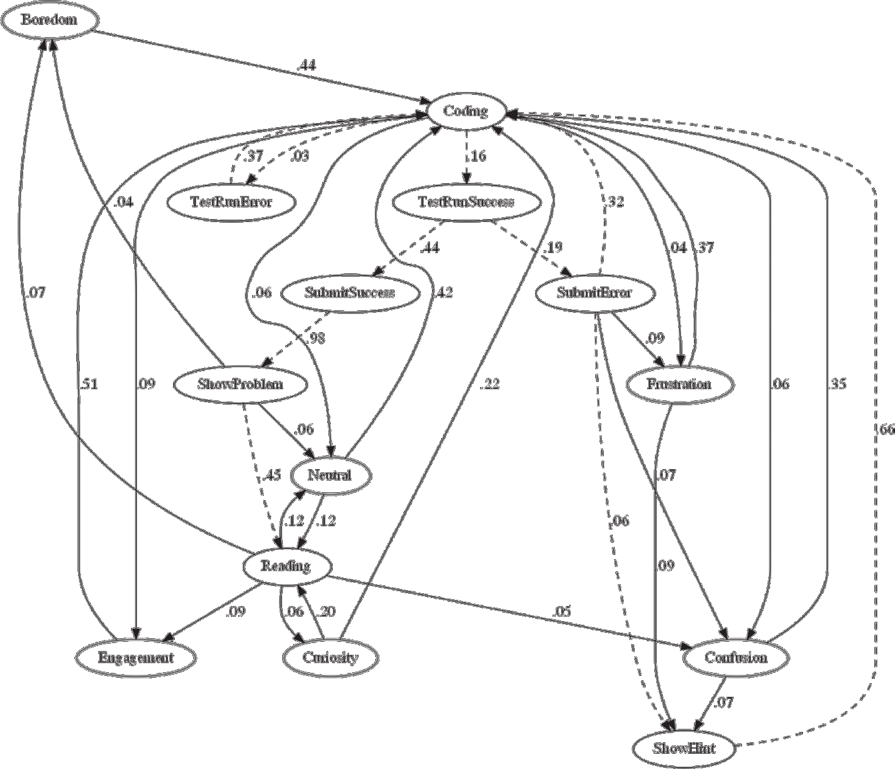
Figure 10.1. Significant transitions between affective states and interaction events during scaffolded learning of computer programming. Solid lines indicate transitions including affect. Dashed lines indicate transitions not involving affective states. ShowProblem: starting a new exercise; Reading: viewing the instructions and/ or problem statement; Coding: editing or viewing the current code; ShowHint: viewing a hint; TestRunEr-ror: code was run and encountered a syntax or runtime error; TestRunSuccess: code run without syntax or runtime errors (but was not checked for correctness); SubmitError: code submitted and produced an error or incorrect answer; SubmitSuccess: code submitted and was correct.
CHAPTER 10 EMOTIONAL LEARNING ANALYTICS PG 117
Affect Detection from Interaction Pedro, Baker, Bowers, and Heffernan (2013) attempted
Patterns to predict college enrollment based on the automatic
Affective states cannot be directly measured because detectors. They applied the detectors to existing log
they are conceptual entities (constructs). However, files from 3,707 students who interacted with AS-
they emerge from environment–person interactions SISTments from 2004 to 2009. College enrollment
(context) and influence action by modulating cognition. information for these students was obtained from
Therefore, it should be possible to "infer" affect by the National Student Clearinghouse. Automatically
analyzing the unfolding context and learner actions. measured affective states were significant predictors
This line of work, referred to as "interaction-based", of college enrollment several years later, which is a
"log-file based", or "sensor-free" affect detection was rather impressive finding.
started more than a decade ago (Ai et al., 2006; D'Mel- Affect Detection from Bodily Signals lo, Craig, Sullins, & Graesser, 2006) and was recently Affect is an embodied phenomenon in that it activates
reviewed by Baker and Ocumpaugh (2015). bodily response systems for action. This should make
As an example, consider Pardos, Baker, San Pedro, it possible to infer learner affect (a latent variable)
and Gowda (2013), who developed affect detectors from machine-readable bodily signals (observables).
for ASSISTments, an intelligent tutoring system (ITS) There is a rich body of work on the use of bodily
for middle- and high-school mathematics, used by signals to detect affect as discussed in a number of
approximately 50,000 students in the US as part of reviews (Calvo & D'Mello, 2010; D'Mello & Kory, 2015;
their regular mathematics instruction (Razzaq et al., Zeng, Pantic, Roisman, & Huang, 2009). The research
2005). The authors adopted a supervised learning has historically focused on interactions in controlled
approach to build automated affect detectors. They environments, but researchers have begun to take this
collected training data from 229 students while they work into the real world, notably computer-enabled
used ASSISTments in school computer labs. Human classrooms. The study reviewed below reflects one
observers provided online observations (annotations) such effort by our research group and collaborators,
of affect as students interacted with ASSISTments but the reader is directed to Arroyo et al. (2009) for
using the Baker-Rodrigo Observation Method Protocol their pioneering work on affect detection in comput-
(BROMP) (Ocumpaugh, Baker, & Rodrigo, 2012). Ac- er-enabled classrooms.
cording to this protocol, trained observers provide live Bosch, D'Mello, Baker, Ocumpaugh, and Shute (2016)
annotations of affect based on observable behaviour, studied automated detection of affect from facial
including explicit actions towards the interface, in- features in a noisy real-world setting of a comput-
teractions with peers and teachers, body movements, er-enabled classroom. In this study, 137 middle and
gestures, and facial expressions. The observers coded high school students played a conceptual physics
four affective states (boredom, frustration, engaged educational game called Physics Playground (Shute,
concentration, and confusion) and two behaviours Ventura, & Kim, 2013) in small groups for 1.5 to 2 hours
(going off-task and gaming the system). Supervised across two days as part of their regular physics/
learning techniques were used to discriminate each physical science classes. Trained observers performed
affective state from other states (e.g., bored vs. others) live annotations of boredom, confusion, frustration,
using features extracted from ASSISTments log files engaged-concentration, and delight using the BROMP
(performance on problems, hint requests, response field observation protocol as in the ASSISTments study
times, etc.). Affect detection accuracies ranged from discussed above (Pardos et al., 2013). The observers
.632 to .678 (measured with the A-prime metric [similar also noted when students went off-task.
among training and testing data. which provides estimates of the likelihood of 19 facial action units (Ekman & Friesen, 1978) (e.g., raised brow, Pardos et al. (2013) also provided preliminary evidence tightened lips), head pose (orientation), and position on the predictive validity of their detectors. This was (see Figure 10.2 for screenshot). Body movement was done by applying the detectors on log files from a also estimated from the videos using motion filtering different set of 1,393 students who interacted with algorithms (Kory, D'Mello, & Olney, 2015) (see Figure ASSISTments during the 2004–2006 school years - 10.3). Supervised learning methods were used to build several years before the measure was developed. Au- detectors of each affective state (e.g., bored vs. other tomatically measured affect and behaviour moderately states) using both facial expressions and bodily move - correlated with standardized test scores. Further, San behaviours. The classifier was validated in a manner corded during game-play and synchronized with the affect annotations. The videos were processed using that ensured generalizability to new students from the FACET computer-vision program (Emotient, 2014), the same population by enforcing strict independence curve – AUC or AUROC]) for affect and .802 to .819 for Videos of students' faces and upper bodies were re- to area under the receiver operating characteristic
PG 118 HANDBOOK OF LEARNING ANALYTICS
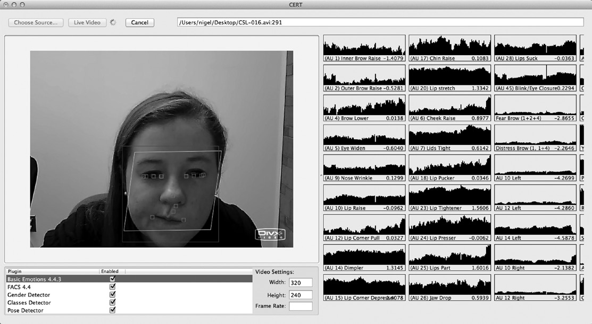
Figure 10.2. Automatic tracking of facial features using the Computer Expression Recognition Toolbox. The graphs on the right show likelihoods of activation of various facial features (e.g., brow lowered, eyelids tight-ening).
Figure 10.3. Automatic tracking of body movement from video using motion silhouettes. The image on the
right displays the areas of movement from the video playing on the left. The graph on the bottom shows the
amount of movement over time.
ments. The detectors were moderately successful with interaction-based detectors were less accurate than
accuracies (quantified with the AUC metric as noted the face-based detectors (Kai et al., 2015), but were
above) ranging from .610 to .867 for affect and .816 for applicable to almost all of the cases. By combining the
off-task behaviours. Follow-up analyses confirmed that two, the applicability of detectors increased to 98% of
the affect detectors generalized across students, mul- the cases, with only a small reduction (<5% difference)
tiple days, class periods, and across different genders in accuracy compared to face-based detection.
and ethnicities (as perceived by humans). Integrating Affect Models in Affect-Aware
One limitation of the face-based affect detectors is Learning Technologies that they are only applicable when the face can be The interaction- and bodily-based affect detectors
automatically detected in the video stream. This is discussed above are tangible artifacts that can be
not always the case due to excessive movement, oc- instrumented to provide real-time assessments of
clusion, poor lighting, and other factors. In fact, the student affect during interactions with a learning
face-based affect detectors were only applicable to technology. This affords the exciting possibility of
65% of the cases. To address this, Bosch, Chen, Bak- closing the loop by dynamically responding to the
er, Shute, and D'Mello (2015) used multimodal fusion sensed affect. The aim of such affect-aware learning
techniques to combine interaction-based (similar technologies is to expand the bandwidth of adaptiv-
to previous section) and face-based detection. The ity of current learning technologies by responding
CHAPTER 10 EMOTIONAL LEARNING ANALYTICS PG 119
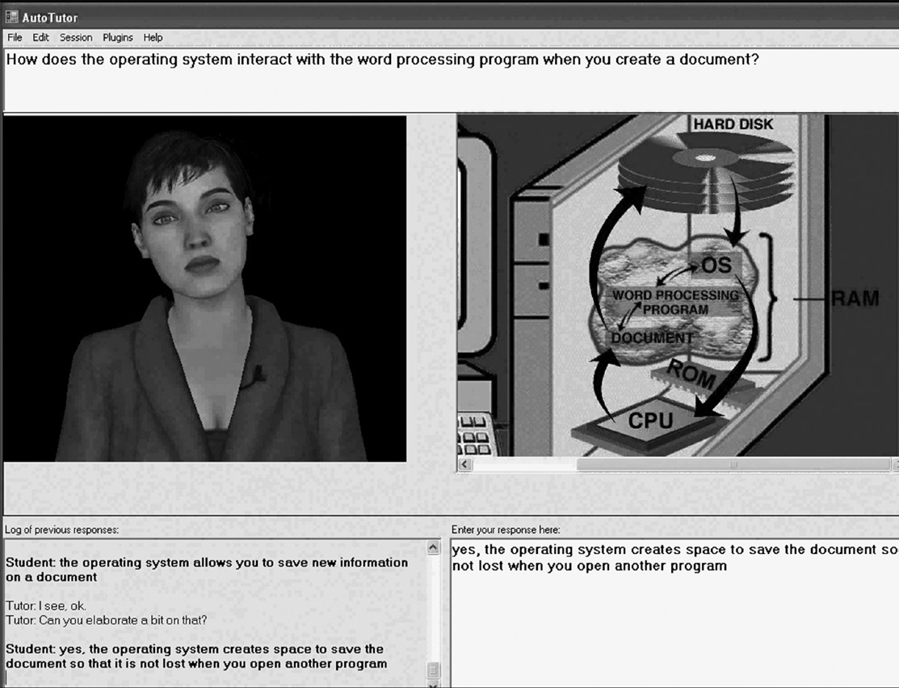
Figure 10.4. Affective AutoTutor: an intelligent tutoring system (ITS) with conversational dialogs that auto-matically detects and responds to learners’ boredom, confusion, and frustration.
to what students feel in addition to what they think helped learning for low-domain knowledge learners
and do (see D'Mello, Blanchard, Baker, Ocumpaugh, & during the second 30-minute learning session. The
Brawner, 2014, for a review). Here, I highlight two such affective tutor was less effective at promoting learning
systems, the Affective AutoTutor (D'Mello & Graesser, for high-domain knowledge learners during the first
2012a) and UNC-ITSPOKE (Forbes-Riley & Litman, 2011). 30-minute session. Importantly, learning gains increased
Affective AutoTutor (see Figure 10.4) is a modified from Session 1 to Session 2 with the affective tutor whereas they plateaued with the non-affective tutor. version of AutoTutor - a conversational ITS that Learners who interacted with the affective tutor also helps students develop mastery on difficult topics in demonstrated improved performance on a subsequent Newtonian physics, computer literacy, and scientific transfer test. A follow-up analysis indicated that learn- reasoning by holding a mixed-initiative dialog in nat - ers' perceptions of how closely the computer tutors ural language (Graesser, Chipman, Haynes, & Olney, resembled human tutors increased across learning 2005). The original AutoTutor system has a set of fuzzy sessions, was related to the quality of tutor feedback, production rules that are sensitive to the cognitive and was a powerful predictor of learning (D'Mello & states of the learner. The Affective AutoTutor augments Graesser, 2012c). The positive change in perceptions these rules to be sensitive to dynamic assessments of was greater for the affective tutor. learners' affective states, specifically boredom, confu -
sion, and frustration. The affective states are sensed As a second example, consider UNC-ITSPOKE (Forbes-Ri-
by automatically monitoring interaction patterns, ley & Litman, 2011), a speech-enabled ITS for physics
gross body movements, and facial features (D'Mello with the capability to automatically detect and respond
& Graesser, 2012a). The Affective AutoTutor responds to learners' certainty/uncertainty in addition to the
with empathetic, encouraging, and motivational dia- correctness/incorrectness of their spoken responses.
log-moves along with emotional displays. For example, Uncertainty detection was performed by extracting and
the tutor might respond to mild boredom with, "This analyzing the acoustic-prosodic features in learners'
stuff can be kind of dull sometimes, so I'm gonna try spoken responses along with lexical and dialog-based
and help you get through it. Let's go". The affective features. UNC-ITSPOKE responded to uncertainty
responses are accompanied by appropriate emotional when the learner was correct but uncertain about the
facial expressions and emotionally modulated speech response. This was taken to signal an impasse because
(e.g., synthesized empathy or encouragement). the learner is unsure about the state of their knowledge,
The effectiveness of Affective AutoTutor over the despite being correct. The actual response strategy involved launching explanation-based sub-dialogs original non-affective AutoTutor was tested in a that provided added instruction to remediate the between-subjects experiment where 84 learners uncertainty. This could involve additional follow-up were randomly assigned to two 30-minute learning questions (for more difficult content) or simply the sessions with either tutor (D'Mello, Lehman, Sullins et assertion of the correct information with elaborated al., 2010). The results indicated that the affective tutor
PG 120 HANDBOOK OF LEARNING ANALYTICS
explanations (for easier content). measured in this study, behaviourally engaging with
Forbes-Riley and Litman (2011) compared learning e-portfolios can be considered a sign of interest, which is a powerful motivating emotion. outcomes of 72 learners who were randomly assigned
to receive adaptive responses to uncertainty (adaptive Sentiment Analysis of Discussion Forums
condition), no responses to uncertainty (non-adaptive Language communicates feelings. Hence, sentiment
control condition), or random responses to uncertainty analysis and opinion mining techniques (Pang & Lee,
(random control condition). In this later condition, 2008) have considerable potential to study how stu-
the added tutorial content from the sub-dialogs was dents' thoughts (expressed in written language) about
given for a random set of turns in order to control for a learning experience predicts relevant behaviours
the additional tutoring. The results indicated that the (most importantly attrition). In line with this, Wen,
adaptive condition achieved slightly (but not signifi- Yang, and Rosé (2014) applied sentiment analysis
cantly) higher learning outcomes than the random techniques on student posts on three Massive Open
and non-adaptive control conditions. The findings Online Courses (MOOCs). They observed a negative
revealed that it was perhaps not the presence or ab- correlation between the ratio of positive to negative
sence of adaptive responses to uncertainty, but the terms and dropout across time. More recently, Yang,
number of adaptive responses that correlated with Wen, Howley, Kraut, and Rosé (2015) developed meth-
learning outcomes. ods to automatically identify discussion posts that
were indicative of student confusion. They showed
EMERGING THEMES that confusion reduced the likelihood of retention,
but this could be mitigated with confusion resolution
Research at the intersection of emotions, learning, and other supportive interventions.
LA, and EDM, has typically focused on one-on-one Classroom Learning Analytics learning with intelligent tutoring systems (Forbes-Riley Recent advances in sensing and signal processing
& Litman, 2011; Woolf et al., 2009), educational games technologies have made it possible to automatically
(Conati & Maclaren, 2009; Sabourin, Mott, & Lester, model aspects of students' classroom experience that
2011), or interfaces that support basic competencies could previously only be obtained from self-reports
like reading, writing, text-diagram integration, and and cumbersome human observations. For example,
problem solving (D'Mello & Graesser, 2014a; D'Mello, second-generation Kinects can detect whether the
Lehman, & Person, 2010; D'Mello & Mills, 2014). Al- eyes or mouth are open, if a person is looking away,
though these basic lines of research are quite active, and if the mouth has moved, for up to six people at a
recent work has focused on analyzing affect across time (Microsoft, 2015). In one pioneering study, Raca,
more expansive interaction contexts that more closely Kidzinski, and Dillenbourg (2015) tracked students in a
capture the broader sociocultural context surrounding classroom using multiple cameras affixed around the
learning. I briefly describe four themes of research to blackboard area. Computer vision techniques were used
illustrate a few of the exciting developments. for head detection and head-pose estimation, which
Affect-Based Predictors of Attrition and were then used to train a detector of student atten-
Dropout tion (validated via self-reports). This emerging area,
Early indicators of risk and early intervention systems related to the field of multimodal learning analytics
are some of the "killer apps" of LA and EDM (Jay (Blikstein, 2013), is poised for considerable progress -
aprakash, Moody, Lauría, Regan, & Baron, 2014). Most in years to come.
fielded systems focus on academic performance data, Teacher Analytics demographics, and availability of financial assistance. Teachers should not be left out of the loop since teach-
These factors are undoubtedly important, but there er practices are known to influence student affect
are likely alternate factors that come into play. With and engagement. Unfortunately, quantifying teacher
this in mind, Aguiar, Ambrose, Chawla, Goodrich, and instructional practices relies on live observations in
Brockman (2014) compared the predictive power of classrooms (e.g., Nystrand, 1997), which makes the
traditional academic and demographic features with research difficult to scale. To address this, researchers
features indicative of behavioural engagement in pre- have begun to develop methods for automatic analysis
dicting dropout from an Introduction to Engineering of teacher instructional practices. In a pioneering
Course. Their key finding was that behaviourally study, Wang, Miller, and Cortina (2013) recorded
engaging with e-portfolios, measured by number of classroom audio in 1st to 3rd grade math classes and
logins, number of artifacts submitted, and number developed automatic methods to predict the level of
of page hits, was a better predictor of dropout than discussions in these classes. This work was recently
models constructed from academic performance and expanded to analyze several additional instructional
demographics alone. Although affect was not directly
CHAPTER 10 EMOTIONAL LEARNING ANALYTICS PG 121
activities (lecturing, small group work, supervised ronment is my fellow-man. The consciousness of his
seatwork, question/answer, and procedures and di- attitude towards me is the perception that normally
rections) in larger samples of middle-school literature unlocks most of my shames and indignations and fears"
and language-arts classes using teacher audio alone (p. 195). Research to date has mainly focused on the
(Donnelly et al., 2016a) or a combination of teacher and achievement, epistemic, and topic emotions. However,
classroom audio (Donnelly et al., 2016b). Blanchard et an analysis of learning in the sociocultural context
al. (2016) used teacher audio to automatically detect in which it is situated must adequately address the
teacher questions, achieving a .85 correlation with social emotions of pride, shame, guilt, jealousy, envy,
the proportion of human-coded questions. The next and so on. This is both a future theme and a grand
step in this line of work is to use information on what research challenge. teachers are doing to contextualize how students are
feeling, which in turn influences what they think, do, CONCLUSION and learn.
Learning is not a cold intellectual activity; it is punc-
FUTURE THEMES tuated with emotion. The emotions are not merely
decorative, they have agency. But emotion is a complex
Let me end by briefly highlighting some potential phenomenon with multiple components that dynamically
future themes of research. One promising area of unfold across multiple time scales. And despite great
research involves a detailed analysis of the emotional strides in the fields of affective sciences and affective
experience of learners and communities of learners neuroscience, we know little about emotions, and even
across the extended time scale of a traditional course, less on emotions during learning. This is certainly not
a flipped-course, or a MOOC (Dillon et al., 2016). to imply that we should refrain from modelling emo-
A second involves the study of emotion regulation tion until there is more theoretical clarity. Quite the
during learning, especially how LA/EDM methods opposite. It simply means that we need to be mindful of
can be used to identify different regulatory strategies what we are modelling when we say we are modelling
(Gross, 2008), so that the more beneficial ones can emotion. We also need to embrace, rather than dilute,
be engendered (e.g., Strain & D'Mello, 2014). A third the complexity and ambiguity inherent in emotion. If
would jointly consider emotion alongside attentional anything, the discovery-oriented, data-driven, analytic
states of mindfulness, mind wandering, and how methods of LA and EDM, along with an emphasis on
emotion-attention blends like the "flow experience" real-world data collection, has the unique potential to
(Csikszentmihalyi, 1990) emerge and manifest in the advance both the science of learning and the science
body and in behaviour. A fourth addresses how the of emotion. It all begins by incorporating emotion into
so-called "non-cognitive" (Farrington et al., 2012) traits the analysis of learning. like grit, self-control, and diligence modulate learner
emotions and efforts to regulate them (e.g., Galla et ACKNOWLEDGEMENTS al., 2014). A fifth would monitor emotions of groups of
learners during collaborative learning and collabora- This research was supported by the National Science
tive problem solving (Ringeval, Sonderegger, Sauer, & Foundation (NSF) (DRL 1108845 and IIS 1523091), the
Lalanne, 2013) given the importance of collaboration Bill & Melinda Gates Foundation, and the Institute for
as a critical 21st century skill (OECD, 2015). Educational Sciences (R305A130030). Any opinions,
Finally, quoting William James's classic 1884 treatise pressed in this paper are those of the author and do not findings and conclusions, or recommendations ex-
on emotion: "The most important part of my envi- necessarily reflect the views of the funding agencies.
PG 122 HANDBOOK OF LEARNING ANALYTICS
REFERENCES
Aguiar, E., Ambrose, G. A. A., Chawla, N. V., Goodrich, V., & Brockman, J. (2014). Engagement vs. performance:
Using electronic portfolios to predict first semester engineering student persistence. Journal of Learning
Analytics, 1(3), 7–33.
Ai, H., Litman, D. J., Forbes-Riley, K., Rotaru, M., Tetreault, J. R., & Pur, A. (2006). Using system and user per-
formance features to improve emotion detection in spoken tutoring dialogs. Proceedings of the 9th Interna-
tional Conference on Spoken Language Processing (Interspeech 2006).
Arroyo, I., Woolf, B., Cooper, D., Burleson, W., Muldner, K., & Christopherson, R. (2009). Emotion sensors go to
school. In V. Dimitrova, R. Mizoguchi, B. Du Boulay, & A. Graesser (Eds.), Proceedings of the 14th International
Conference on Artificial Intelligence in Education (pp. 17–24). Amsterdam: IOS Press.
Baker, R., & Ocumpaugh, J. (2015). Interaction-based affect detection in educational software. In R. Calvo, S.
D'Mello, J. Gratch, & A. Kappas (Eds.), The Oxford handbook of affective computing (pp. 233–245). New York:
Oxford University Press.
Barth, C. M., & Funke, J. (2010). Negative affective environments improve complex solving performance. Cogni-
tion and Emotion, 24(7), 1259–1268. doi:10.1080/02699930903223766
Blanchard, N., Donnelly, P., Olney, A. M., Samei, B., Ward, B., Sun, X., . . . D'Mello, S. K. (2016). Identifying teach-
er questions using automatic speech recognition in live classrooms. Proceedings of the 17th Annual SIGdial
Meeting on Discourse and Dialogue (SIGDIAL 2016) (pp. 191–201). Association for Computational Linguistics.
Blikstein, P. (2013). Multimodal learning analytics. Proceedings of the 3rd International Conference on Learning
Analytics and Knowledge (LAK '13), 8–12 April 2013, Leuven, Belgium. New York: ACM.
Bosch, N., Chen, H., Baker, R., Shute, V., & D'Mello, S. K. (2015). Accuracy vs. availability heuristic in multimodal
affect detection in the wild. Proceedings of the 17th ACM International Conference on Multimodal Interaction
(ICMI 2015). New York: ACM.
Bosch, N., & D'Mello, S. K. (in press). The affective experience of novice computer programmers. International
Journal of Artificial Intelligence in Education.
Bosch, N., D'Mello, S., Baker, R., Ocumpaugh, J., & Shute, V. (2016). Using video to automatically detect learn-
er affect in computer-enabled classrooms. ACM Transactions on Interactive Intelligent Systems, 6(2),
doi:10.1145/2946837.
Calvo, R. A., & D'Mello, S. K. (2010). Affect detection: An interdisciplinary review of models, methods, and their
applications. IEEE Transactions on Affective Computing, 1(1), 18–37. doi:10.1109/T-AFFC.2010.1
Clore, G. L., & Huntsinger, J. R. (2007). How emotions inform judgment and regulate thought. Trends in Cogni-
tive Sciences, 11(9), 393–399. doi:10.1016/j.tics.2007.08.005
Conati, C., & Maclaren, H. (2009). Empirically building and evaluating a probabilistic model of user affect. User
Modeling and User-Adapted Interaction, 19(3), 267–303.
Corbett, A., & Anderson, J. (1995). Knowledge tracing: Modeling the acquisition of procedural knowledge. User
Modeling and User-Adapted Interaction, 4(4), 253–278.
Csikszentmihalyi, M. (1990). Flow: The psychology of optimal experience. New York: Harper & Row.
D'Mello, S. K. (2016). On the influence of an iterative affect annotation approach on inter-observer and
self-observer reliability. IEEE Transactions on Affective Computing, 7(2), 136–149.
D'Mello, S. K., Blanchard, N., Baker, R., Ocumpaugh, J., & Brawner, K. (2014). I feel your pain: A selective review
of affect-sensitive instructional strategies. In R. Sottilare, A. Graesser, X. Hu, & B. Goldberg (Eds.), Design
recommendations for adaptive intelligent tutoring systems: Adaptive instructional strategies (Vol. 2, pp.
35–48). Orlando, FL: US Army Research Laboratory.
D'Mello, S., Craig, S., Sullins, J., & Graesser, A. (2006). Predicting affective states expressed through an emote-
aloud procedure from AutoTutor's mixed-initiative dialogue. International Journal of Artificial Intelligence
in Education, 16(1), 3–28.
CHAPTER 10 EMOTIONAL LEARNING ANALYTICS PG 123 D'Mello, S., & Graesser, A. (2012a). AutoTutor and Affective AutoTutor: Learning by talking with cognitively and
emotionally intelligent computers that talk back. ACM Transactions on Interactive Intelligent Systems, 2(4),
23:22–23:39.
D'Mello, S., & Graesser, A. (2012b). Dynamics of affective states during complex learning. Learning and Instruc-
tion, 22(2), 145–157. doi:10.1016/j.learninstruc.2011.10.001
D'Mello, S., & Graesser, A. (2012c). Malleability of students' perceptions of an affect-sensitive tutor and its in-
fluence on learning. In G. Youngblood & P. McCarthy (Eds.), Proceedings of the 25th Florida Artificial Intelli-
gence Research Society Conference (pp. 432–437). Menlo Park, CA: AAAI Press.
D'Mello, S., & Graesser, A. (2014a). Inducing and tracking confusion and cognitive disequilibrium with break-
down scenarios. Acta Psychologica, 151, 106–116.
D'Mello, S. K., & Graesser, A. C. (2014b). Confusion. In R. Pekrun & L. Linnenbrink-Garcia (Eds.), International
handbook of emotions in education (pp. 289–310). New York: Routledge.
D'Mello, S. K., & Kory, J. (2015). A review and meta-analysis of multimodal affect detection systems. ACM Com-
puting Surveys, 47(3), 43:41–43:46.
D'Mello, S., Lehman, B., & Person, N. (2010). Monitoring affect states during effortful problem solving activities.
International Journal of Artificial Intelligence in Education, 20(4), 361–389.
D'Mello, S., Lehman, B., Sullins, J., Daigle, R., Combs, R., Vogt, K., . . . Graesser, A. (2010). A time for emoting:
When affect-sensitivity is and isn't effective at promoting deep learning. In J. Kay & V. Aleven (Eds.), Pro-
ceedings of the 10th International Conference on Intelligent Tutoring Systems (pp. 245–254). Berlin/Heidel-
berg: Springer.
D'Mello, S., & Mills, C. (2014). Emotions while writing about emotional and non-emotional topics. Motivation
and Emotion, 38(1), 140–156.
D'Mello, S., Taylor, R. S., & Graesser, A. (2007). Monitoring affective trajectories during complex learning. In
D. McNamara & J. Trafton (Eds.), Proceedings of the 29th Annual Cognitive Science Society (pp. 203–208).
Austin, TX: Cognitive Science Society.
Darwin, C. (1872). The expression of the emotions in man and animals. London: John Murray.
Dillon, J., Bosch, N., Chetlur, M., Wanigasekara, N., Ambrose, G. A., Sengupta, B., & D'Mello, S. K. (2016). Student
emotion, co-occurrence, and dropout in a MOOC context. In T. Barnes, M. Chi, & M. Feng (Eds.), Proceed-
ings of the 9th International Conference on Educational Data Mining (EDM 2016) (pp. 353–357). International
Educational Data Mining Society.
Donnelly, P., Blanchard, N., Samei, B., Olney, A. M., Sun, X., Ward, B., . . . D'Mello, S. K. (2016a). Automatic teach-
er modeling from live classroom audio. In L. Aroyo, S. D'Mello, J. Vassileva, & J. Blustein (Eds.), Proceedings
of the 2016 ACM International Conference on User Modeling, Adaptation, & Personalization (ACM UMAP
2016) (pp. 45–53). New York: ACM.
Donnelly, P., Blanchard, N., Samei, B., Olney, A. M., Sun, X., Ward, B., . . . D'Mello, S. K. (2016b). Multi-sensor
modeling of teacher instructional segments in live classrooms. Proceedings of the 18th ACM International
Conference on Multimodal Interaction (ICMI 2016). New York: ACM.
Ekman, P., & Friesen, W. (1978). The facial action coding system: A technique for the measurement of facial move-
ment. Palo Alto, CA: Consulting Psychologists Press.
Emotient. (2014). FACET: Facial expression recognition software.
Farrington, C. A., Roderick, M., Allensworth, E., Nagaoka, J., Keyes, T. S., Johnson, D. W., & Beechum, N. O.
(2012). Teaching adolescents to become learners: The role of noncognitive factors in shaping school per-
formance: A critical literature review. Chicago, IL: University of Chicago Consortium on Chicago School
Research.
Forbes-Riley, K., & Litman, D. J. (2011). Benefits and challenges of real-time uncertainty detection and ad-
aptation in a spoken dialogue computer tutor. Speech Communication, 53(9–10), 1115–1136. doi:10.1016/j.
specom.2011.02.006
PG 124 HANDBOOK OF LEARNING ANALYTICS
Fredrickson, B., & Branigan, C. (2005). Positive emotions broaden the scope of attention and thought-action
repertoires. Cognition & Emotion, 19(3), 313–332. doi:10.1080/02699930441000238
Galla, B. M., Plummer, B. D., White, R. E., Meketon, D., D'Mello, S. K., & Duckworth, A. L. (2014). The academic
diligence task (ADT): Assessing individual differences in effort on tedious but important schoolwork. Con-
temporary Educational Psychology, 39(4), 314–325.
Graesser, A., Chipman, P., Haynes, B., & Olney, A. (2005). AutoTutor: An intelligent tutoring system with
mixed-initiative dialogue. IEEE Transactions on Education, 48(4), 612–618. doi:10.1109/TE.2005.856149
Gross, J. (2008). Emotion regulation. In M. Lewis, J. Haviland-Jones, & L. Barrett (Eds.), Handbook of emotions
(3rd ed., pp. 497–512). New York: Guilford.
Hess, U. (2003). Now you see it, now you don't - the confusing case of confusion as an emotion: Commentary
on Rozin and Cohen (2003). Emotion, 3(1), 76–80.
Isen, A. (2008). Some ways in which positive affect influences decision making and problem solving. In M.
Lewis, J. Haviland-Jones, & L. Barrett (Eds.), Handbook of emotions (3rd ed., pp. 548–573). New York: Guilford.
Izard, C. (2010). The many meanings/aspects of emotion: Definitions, functions, activation, and regulation.
Emotion Review, 2(4), 363–370. doi:10.1177/1754073910374661
James, W. (1884). What is an emotion? Mind, 9, 188–205.
Jayaprakash, S. M., Moody, E. W., Lauría, E. J., Regan, J. R., & Baron, J. D. (2014). Early alert of academically at-
risk students: An open source analytics initiative. Journal of Learning Analytics, 1(1), 6–47.
Kai, S., Paquette, L., Baker, R., Bosch, N., D'Mello, S., Ocumpaugh, J., . . . Ventura, M. (2015). Comparison of
face-based and interaction-based affect detectors in physics playground. In C. Romero, M. Pechenizkiy,
J. Boticario, & O. Santos (Eds.), Proceedings of the 8th International Conference on Educational Data Mining
(EDM 2015) (pp. 77–84). International Educational Data Mining Society.
Kory, J., D'Mello, S. K., & Olney, A. (2015). Motion tracker: Camera-based monitoring of bodily movements us-
ing motion silhouettes. PloS ONE, 10(6), doi:10.1371/journal.pone.0130293.
Lench, H. C., Bench, S. W., & Flores, S. A. (2013). Searching for evidence, not a war: Reply to Lindquist, Siegel,
Quigley, and Barrett (2013). Psychological Bulletin, 113(1), 264–268.
Lewis, M. D. (2005). Bridging emotion theory and neurobiology through dynamic systems modeling. Behavior-
al and Brain Sciences, 28(2), 169–245.
Lindquist, K. A., Siegel, E. H., Quigley, K. S., & Barrett, L. F. (2013). The hundred-year emotion war: Are emo-
tions natural kinds or psychological constructions? Comment on Lench, Flores, and Bench (2011). Psycho-
logical Bulletin, 139(1), 264–268.
McKeown, G. J., & Sneddon, I. (2014). Modeling continuous self-report measures of perceived emotion using
generalized additive mixed models. Psychological Methods, 19(1), 155–174.
Mesquita, B., & Boiger, M. (2014). Emotions in context: A sociodynamic model of emotions. Emotion Review,
6(4), 298–302.
Microsoft. (2015). Kinect for Windows SDK MSDN. Retrieved 5 August 2015 from https://msdn.microsoft.com/
en-us/library/dn799271.aspx
Moors, A. (2014). Flavors of appraisal theories of emotion. Emotion Review, 6(4), 303–307.
Nystrand, M. (1997). Opening dialogue: Understanding the dynamics of language and learning in the English
classroom. Language and Literacy Series. New York: Teachers College Press.
Ocumpaugh, J., Baker, R. S., & Rodrigo, M. M. T. (2012). Baker-Rodrigo Observation Method Protocol (BROMP)
1.0. Training Manual version 1.0. New York.
OECD (Organisation for Economic Co-operation and Development). (2015). PISA 2015 collaborative problem
solving framework.
CHAPTER 10 EMOTIONAL LEARNING ANALYTICS PG 125 Ohman, A., & Soares, J. (1994). Unconscious anxiety: Phobic responses to masked stimuli. Journal of Abnormal
Psychology, 103(2), 231–240.
Pang, B., & Lee, L. (2008). Opinion mining and sentiment analysis. Foundations and Trends in Information Re-
trieval, 2(1–2), 1–135.
Pardos, Z., Baker, R. S. J. d., San Pedro, M. O. C. Z., & Gowda, S. M. (2013). Affective states and state tests: In-
vestigating how affect throughout the school year predicts end of year learning outcomes. In D. Suthers,
K. Verbert, E. Duval, & X. Ochoa (Eds.), Proceedings of the 3rd International Conference on Learning Analytics
and Knowledge (LAK '13), 8–12 April 2013, Leuven, Belgium (pp. 117–124). New York: ACM.
Parkinson, B., Fischer, A. H., & Manstead, A. S. (2004). Emotion in social relations: Cultural, group, and interper-
sonal processes. Psychology Press.
Pekrun, R., & Stephens, E. J. (2011). Academic emotions. In K. Harris, S. Graham, T. Urdan, S. Graham, J. Royer,
& M. Zeidner (Eds.), APA educational psychology handbook, Vol 2: Individual differences and cultural and
contextual factors (pp. 3–31). Washington, DC: American Psychological Association.
Porayska-Pomsta, K., Mavrikis, M., D'Mello, S. K., Conati, C., & Baker, R. (2013). Knowledge elicitation methods
for affect modelling in education. International Journal of Artificial Intelligence in Education, 22, 107–140.
Raca, M., Kidzinski, L., & Dillenbourg, P. (2015). Translating head motion into attention: Towards processing of
student's body language. Proceedings of the 8th International Conference on Educational Data Mining. Inter-
national Educational Data Mining Society.
Razzaq, L., Feng, M., Nuzzo-Jones, G., Heffernan, N. T., Koedinger, K. R., Junker, B., . . . Choksey, S. (2005). The
assistment project: Blending assessment and assisting. In C. Loi & G. McCalla (Eds.), Proceedings of the 12th
International Conference on Artificial Intelligence in Education (pp. 555–562). Amsterdam: IOS Press.
Ringeval, F., Sonderegger, A., Sauer, J., & Lalanne, D. (2013). Introducing the RECOLA multimodal corpus of
remote collaborative and affective interactions. Proceedings of the 2nd International Workshop on Emotion
Representation, Analysis and Synthesis in Continuous Time and Space (EmoSPACE) in conjunction with the
10th IEEE International Conference and Workshops on Automatic Face and Gesture Recognition. Washington,
DC: IEEE.
Rosenberg, E. (1998). Levels of analysis and the organization of affect. Review of General Psychology, 2(3),
247–270. doi:10.1037//1089-2680.2.3.247
Rozin, P., & Cohen, A. (2003). High frequency of facial expressions corresponding to confusion, concentration,
and worry in an analysis of maturally occurring facial expressions of Americans. Emotion, 3, 68–75.
Sabourin, J., Mott, B., & Lester, J. (2011). Modeling learner affect with theoretically grounded dynamic Bayesian
networks. In S. D'Mello, A. Graesser, B. Schuller, & J. Martin (Eds.), Proceedings of the 4th International Con-
ference on Affective Computing and Intelligent Interaction (pp. 286–295). Berlin/Heidelberg: Springer-Ver-
lag.
San Pedro, M., Baker, R. S., Bowers, A. J., & Heffernan, N. T. (2013). Predicting college enrollment from student
interaction with an intelligent tutoring system in middle school. In S. D'Mello, R. Calvo, & A. Olney (Eds.),
Proceedings of the 6th International Conference on Educational Data Mining (EDM 2013) (pp. 177–184). Inter-
national Educational Data Mining Society.
Schwarz, N. (2012). Feelings-as-information theory. In P. Van Lange, A. Kruglanski, & T. Higgins (Eds.), Hand-
book of theories of social psychology (pp. 289–308). Thousand Oaks, CA: Sage.
Shute, V. J., Ventura, M., & Kim, Y. J. (2013). Assessment and learning of qualitative physics in Newton's play-
ground. The Journal of Educational Research, 106(6), 423–430.
Sinha, T., Jermann, P., Li, N., & Dillenbourg, P. (2014). Your click decides your fate: Inferring information pro-
cessing and attrition behavior from MOOC video clickstream interactions. Paper presented at the Em-
pirical Methods in Natural Language Processing: Workshop on Modeling Large Scale Social Interaction in
Massively Open Online Courses. http://www.aclweb.org/anthology/W14-4102
Strain, A., & D'Mello, S. (2014). Affect regulation during learning: The enhancing effect of cognitive reappraisal.
Applied Cognitive Psychology, 29(1), 1–19. doi:10.1002/acp.3049
PG 126 HANDBOOK OF LEARNING ANALYTICS
Tracy, J. L. (2014). An evolutionary approach to understanding distinct emotions. Emotion Review, 6(4), 308–
312.
VanLehn, K., Siler, S., Murray, C., Yamauchi, T., & Baggett, W. (2003). Why do only some events cause learning
during human tutoring? Cognition and Instruction, 21(3), 209–249. doi:10.1207/S1532690XCI2103_01
Wang, Z., Miller, K., & Cortina, K. (2013). Using the LENA in teacher training: Promoting student involvement
through automated feedback. Unterrichtswissenschaft, 4, 290–305.
Wen, M., Yang, D., & Rosé, C. (2014). Sentiment analysis in MOOC discussion forums: What does it tell us? In
J. Stamper, S. Pardos, M. Mavrikis, & B. M. McLaren (Eds.), Proceedings of the 7th International Conference
on Educational Data Mining (EDM 2014), 4–7 July, London, UK (pp. 130–137): International Educational Data
Mining Society. http://www.cs.cmu.edu/~mwen/papers/edm2014-camera-ready.pdf
Woolf, B., Burleson, W., Arroyo, I., Dragon, T., Cooper, D., & Picard, R. (2009). Affect-aware tutors: Recognizing
and responding to student affect. International Journal of Learning Technology, 4(3/4), 129–163.
Yang, D., Wen, M., Howley, I., Kraut, R., & Rosé, C. (2015). Exploring the effect of confusion in discussion fo-
rums of massive open online courses. Proceedings of the 2nd ACM conference on Learning@Scale (L@S 2015),
14–18 March 2015, Vancouver, BC, Canada (pp. 121–130). New York: ACM. doi:10.1145/2724660.2724677
Zeng, Z., Pantic, M., Roisman, G., & Huang, T. (2009). A survey of affect recognition methods: Audio, visual, and
spontaneous expressions. IEEE Transactions on Pattern Analysis and Machine Intelligence, 31(1), 39–58.
CHAPTER 10 EMOTIONAL LEARNING ANALYTICS PG 127
PG 128 HANDBOOK OF LEARNING ANALYTICS
Chapter 11: Multimodal Learning Analytics
Xavier Ochoa
Escuela Superior Politécnica del Litoral, Ecuador
DOI: 10.18608/hla17.011
ABSTRACT
This chapter presents a different way to approach learning analytics (LA) praxis through the capture, fusion, and analysis of complementary sources of learning traces to obtain a more robust and less uncertain understanding of the learning process. The sources or modalities in multimodal learning analytics (MLA) include the traditional log-file data captured by on-line systems, but also learning artifacts and more natural human signals such as gestures, gaze, speech, or writing. The current state-of-the-art of MLA is discussed and classified according to its modalities and the learning settings where it is usually applied. This chapter concludes with a discussion of emerging issues for practitioners in multimodal techniques.
Keywords: Audio, video, data fusion, multisensor
In its origins, the focus of the field of learning analytics not used, the actions of learners are not automatically
(LA) was the study of the actions that students perform captured. Even if some learning artifacts exist, such as
while using some sort of digital tool. These digital tools student-produced physical documents, they need to
being learning management systems (LMSs; Arnold be converted before they can be processed. Without
& Pistilli, 2012), intelligent tutoring systems (ITSs; traces to analyze, computational models and tools
Crossley, Roscoe, & McNamara, 2013), massive open used traditionally in LA are not applicable.
online courses (MOOCs; Kizilcec, Piech, & Schneider, The existence of this bias towards computer-based 2013), educational video games (Serrano-Laguna & learning contexts could produce a streetlight effect Fernández-Manjón, 2014), or other types of systems (Freedman, 2010) in LA. This effect takes its name from that use a computer as an active component in the a joke in which a man loses his house keys and searches learning process. On the other hand, comparatively for them under a streetlight even though he lost them in less LA research or practice has been conducted in the park. A police officer watching the scene asks why other learning contexts, such as face-to-face lectures he is searching on the street then, to which the man or study groups, where computers are not present responds, “because the light is better over here.” The or have only an auxiliary, not-defined role. This bias streetlight effect means looking for solutions where it towards computer-based learning contexts is well is easy to search, not where the real solutions might explained by the basic requirement of any type of be. The case can be made for early LA research trying LA study or system: the existence of learning traces to understand and optimize the learning process by (Siemens, 2013). looking only at computer-based contexts but ignoring
Computer-based learning systems, even if not initial- real-world environments where a large part of the
ly designed with analytics in mind, tend to capture process still happens. Even learners’ actions that can-
automatically, in fine-grained detail, the interactions not be logged in computer-based systems are usually
with their users. The data describing these interac- ignored. For example, the information about a student
tions is stored in many forms; for example, log-files or looking confused when presented with a problem in an
word-processor documents that can be later mined to ITS or yawning while watching an online lecture is not
extract the traces to be analyzed. The relative abun- considered in traditional LA research. To diminish the
dance of readily available data and the low technical streetlight effect, researchers are now focusing on how
barriers to process it make computer-based learning to collect fine-grained learning traces from real-world
systems the ideal place to conduct R&D for LA. On the learning contexts automatically, making the analysis
contrary, in learning contexts where computers are of a face-to-face lecture as feasible as the analysis of
CHAPTER 11 MULTIMODAL LEARNING ANALYTICS PG 129
a MOOC session. More contemporary works on LA (Scherer, Worsley, & Morency, 2012; Morency, Oviatt,
explore the new sources of data apart from traditional Scherer, Weibel, & Worsley, 2013; Ochoa, Worsley,
log-files: student-generated texts (Simsek et al., 2015), Chiluiza, & Luz, 2014, Markaki, Lund, & Sanchez,
eye-tracking information (Vatrapu, Reimann, Bull, & 2015). This chapter is an initial guide for researchers
Johnson, 2013) and classroom configuration (Almeda, and practitioners who want to explore this subfield.
Scupelli, Baker, Weber, & Fisher, 2014) to name a few. First, the main modalities used in MLA research will
The combination of these different sources of learning be presented, analyzed, and exemplified. Second, the
traces into a single analysis is the main objective of real-world settings where MLA has been applied are
multimodal learning analytics (MLA). studied and classified according to their main modal-
MLA is a subfield that attempts to incorporate differ ities. Finally, several unresolved issues important for - MLA research and practice are discussed. ent sources of learning traces into LA research and
practice by focusing on understanding and optimizing
learning in digital and real-world scenarios where the MODALITIES AND MEDIA
interactions are not necessarily mediated through a In its communication theory definition, multimodality
computer or digital device (Blikstein, 2013). In MLA, refers to the use of diverse modes of communication
learning traces are combined from not only extracted (textual, aural, linguistic, spatial, visual, et cetera)
from log-files or digital documents but from recorded to interchange information and meaning between
video and audio, pen strokes, position tracking de- individuals (Kress & Van Leeuwen, 2001). The media
vices, biosensors, and any other modality that could — movies, books, web pages, or even air — are the
be useful to understand or measure the learning physical or digital substrate where a communication
process. Moreover, in MLA, the traces extracted from mode can be encoded. Each mode can be expressed
different modalities are combined to provide a more through one or several media. For example, speech
comprehensive view of the actions and the internal can be encoded as variations of pressure in the air
state of the learner. (in a face-to-face dialog), as variations of magnetic
The idea of using different modalities to study learn- orientation on a tape (in a cassette recording), or as
ing, while new in the context of LA, is common in variations of digital numbers (in an MP3 file). As well,
traditional experimental educational research. Adding the same medium can be used to transmit several
a human observer, which is by nature a multimodal modes. For example, a video recording can contain
sensor, into a real-world learning context is the usual information about body language (posture), emotions
way in which learning in-the-wild has been studied (face expression), and tools used (actions).
(Gall, Borg, & Gall, 1996). Technologies such as video By its own nature, learning is often multimodal (Jewitt, and audio recording and tagging tools have made 2006). A human being can learn by reading a book, this observation less intrusive and more quantifiable listening to a professor, watching a procedure, using (Cobb et al., 2003; Lund, 2007). The main problem physical or digital tools, and any other mode of human with the traditional educational research approach communication where relatively complex information is that the data collection and analysis, due to their can be encoded. The learning process also uses several manual nature, are very costly and do not scale. The feedback loops — for example, a student nodding when data collection needs to be limited in both size and the instructor asks if the lesson was understood, or the time and data analysis results are not available fast emphasis of the instructor’s voice while explaining a enough to be useful for the learners being studied. If topic. These feedback modes usually encode simpler different modalities could be recorded and learning information but are critical for the process. If learning traces could be automatically extracted from them, LA is to be analyzed, understood, and optimized, traces tools could be used to provide a continuous real-time of the interactions occurring in each of the relevant feedback loop to improve learning as it is happening. modes should be obtained. MLA focuses on extracting
As would be expected, extracting learning traces from these traces from the different modes of communica-
raw multimodal recordings is not trivial. Techniques tion while being agnostic of the medium where those
developed in computer vision, speech processing, modes are encoded or recorded.
sketch recognition and other computer science fields The following subsections present the state-of-the- must be guided by the current learning theories pro- art on the capture and trace-extraction for the most vided by learning science, educational research, and common modalities used in MLA research. For each behavioural science. Given its complexity, the MLA modality, a brief definition is presented, together with subfield is relatively young and unexplored. However, a discussion of its importance to understanding the initial studies and early interdisciplinary co-operation learning process, a list of most common methods of between researchers have produced positive results capture and recording, and examples of where they
PG 130 HANDBOOK OF LEARNING ANALYTICS
have been used. This is not a comprehensive list of the absolute gaze direction.
all the modes relevant for learning, only those used MLA has several examples of gaze trace extraction. successfully in MLA studies. Raca and Dillenbourg (2013) estimate gaze direction
Gaze from head orientation in video recordings of students
Humans tend to look directly at what draws their sitting in a lecture using a part-based model (Figure
attention. As such, the direction of the gaze of an 11.1). In this figure, student faces are automatically
individual is a proxy indicator of the direction of his recognized (rectangle) and their gaze (arrow) is esti-
or her attention (Frischen, Bayliss, & Tipper, 2007). mated based on a human face model. This information
Attention is an indispensable requirement for learning is then used to determine the focus of attention of
(Kruschke, 2003). Paying attention to a signal helps individual students and compare it with self-reported
the individual to capture its information and store attention. Raca and Dillenbourg found that the per-
the relevant parts in long-term memory. While gaze centage of time students have the instructor in their
is not the only proxy to estimate attention and is not field of vision is an important predictor of the level
error-free, it is commonly used in educational prac- of attention reported. In a different learning setting,
tice. For example, a trained instructor can assess the Echeverría, Avendaño, Chiluiza, Vásquez, and Ochoa
level of attention of a whole classroom by surveying (2014), also estimated gaze direction measuring head
the gaze of the students; an observer can determine orientation by calculating the distance between eye
a participant’s level of attention in a discussion by centre points to nose tip point. This information was
tracking the re-direction of the gaze from speaker used to determine if students maintained eye contact
to speaker. with the audience during academic presentations.
The importance of gaze has been long identified by Posture, Gestures, and Motion marketers, behavioural, and human–computer inter- (Body Language) action researchers. Eye-tracking studies are common Posture, gestures, and motion are three interrelated
to determine the effectiveness of advertising (Krug- modes, jointly referred as body language, although
man, Fox, Fletcher, Fischer, & Rojas, 1994), help with each one could carry different types of information
the early diagnosis of autism (Boraston & Blakemore, (Bull, 2013). Posture refers to the position that the body
2007), and the effectiveness of computer interfaces or part of the body adopts at a given moment in time.
(Poole & Ball, 2006). However, the main methods for The posture of a learner could provide information
recording gaze in these studies, using monitor fixed about their internal state. For example, if a student is
eye-trackers or special eye-tracking glasses, are too seated with the head resting on the desk, the instructor
intrusive and costly to be widely deployed in learning could infer that the student is tired or not interested
settings. The current medium of choice for gaze cap- in the lecture. In special cases, the posture adopted
turing in MLA is video recordings (Raca & Dillenbourg, is related to the acquisition of skills. For example,
2013). A camera, or an array of cameras, is positioned students training in oral presentations are expected
to record the head and eyes of the subject(s). Then, to use certain postures (hands and arms slightly open)
computer vision techniques, such as those presented rather than others (hands in the pockets). Gestures
in Lin, Lin, Lin, and Lee (2013), are used to extract the being learned do not indicate an internal state. Ges-
gaze direction information from the video recording. tures are coordinated movements from different parts
The main aspects that need to be controlled to obtain of the body, especially the head, arms, and hands to
the relative gaze direction in the recording are face communicate a specific meaning. This non-verbal form
resolution and avoiding occlusion from objects or other of communication is usually conscious. It is used as a
individuals in the setting (Raca & Dillenbourg, 2013). way to provide short feedback loops and alternative
Information about the position of the cameras in the emphasizing channels in the learning process. For
learning setting must also be recorded to calculate example, the instructor pointing to a specific part of
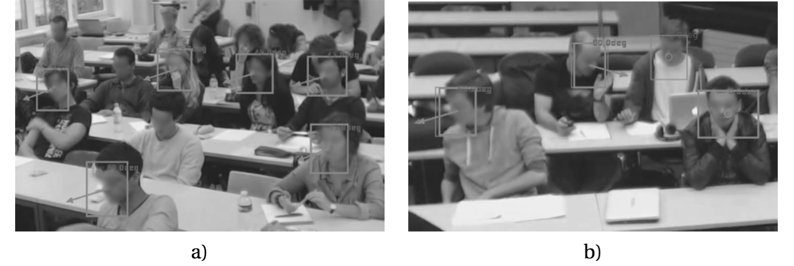
Figure 11.1. Gaze estimation in a classroom setting (Raca, Tormey, & Dillenbourg, 2014).
CHAPTER 11 MULTIMODAL LEARNING ANALYTICS PG 131
the blackboard or a student raising his shoulders when estimating posture, gestures, and motion. Any type
confronted with a difficult question. Finally, motion is of camera can be used as long as it can capture the
any change in body position not necessary to acquire a relevant motion with enough resolution. The resolu-
new posture or to perform a given gesture. This motion tion needed depends on the type of feature extraction
is often the result of unconscious body movements conducted with the video. For automatic extraction of
that reveal the inner state of the subject during the human motion, the most common device used is the
learning process; for example, erratic movements that Microsoft Kinect (Zhang, 2012). Through a mixture of
signal nervousness or doubt. video and depth capture, Kinect is able to provide re-
Posture, gestures, and motion have been the modes searchers with a reconstructed skeleton of the subject for each captured frame, which is ideal for capturing most often studied in MLA due the relative ease in body postures and gestures. Newer versions of the capturing video in real-world environments, together Kinect sensor are also able to extract hand gestures with the availability of low-cost 2-D and 3-D sensors (Vasquez, Vargas, & Sucar, 2015). and high-performing computer vision algorithms
for feature extraction. While body language can be The most salient examples of the capture and pro-
captured with high precision using accelerometers cessing of body language in MLA are the estimation
attached to different body parts (Mitra & Acharya, of attention through upper-body relative movement
2007) or using specialized tools (for example, a Wii delay in a classroom setting (Raca, Tormey, & Dillen-
Remote; Schlömer, Poppinga, Henze, & Boll, 2008), in bourg, 2014) and the posture and gesture analysis of
practice using them is too invasive or foreign in most a novice academic presenter towards the creation of
learning activities. The most common solution to an automated presentation tutor (Echeverría et al.,
capture motion is recording video of the subject and 2014). Figure 11.2 presents the 23 different postures
Figure 11.2. Clustered upper-body postures of real student presenters (Echeverría, Avendaño, Chiluiza,
Vásquez, & Ochoa, 2014).
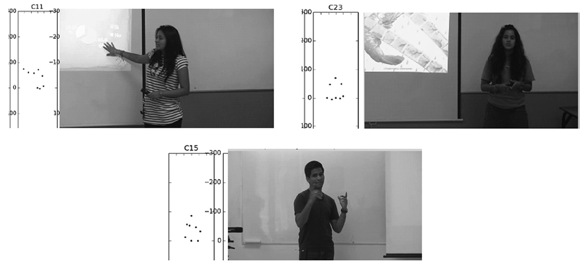
Figure 11.3. Actual postures classified according to prototype postures (Echeverría et al., 2014).
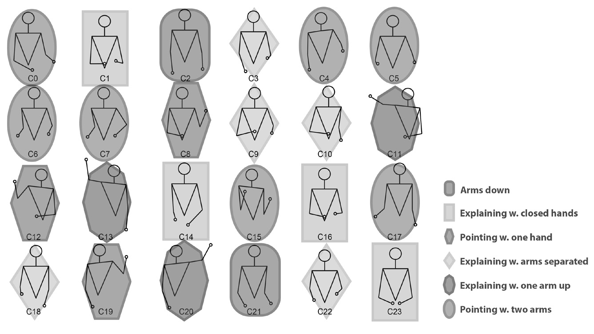
PG 132 HANDBOOK OF LEARNING ANALYTICS
obtained from the analysis of Kinect data of students area of computer vision, trying to identify emotions
presenting their work. These 23 postures were classified automatically from facial expressions recorded in
into six body gestures (different colours) that could video (Mishra et al., 2015).
be considered good or bad for a presentation. Figure The main examples of using facial expressions in the 11.3 presents real examples of these body gestures field of LA are the works of Craig, D’Mello, Wither - during actual presentations. The classification of the spoon, and Graesser (2008), and Worsley and Blikstein pose (above the Kinect points on the left) corresponds (2015b). Craig et al. (2008) automatically estimated the with what a human observer could interpret from the emotional states of students while using the AutoTutor photo (on the right). system (Graesser, Chipman, Haynes, & Olney, 2005).
Other interesting examples in using gestures are Worsley and Blikstein (2015b) used similar techniques
Boncoddo et al. (2013), Alibali, Nathan, Fujimori, Stein, to discover emotional changes when students are
and Raudenbush, (2011), and Mazur-Palandre, Colletta, confronted with different building exercises. Both
and Lund (2014). In the first, Boncoddo et al. (2013) studies discovered that a confused expression is a
captured the number of relevant gestures performed good indicator of the success of the learning process.
during the explanation of mathematical proofs and
established the relation with the way students arrive
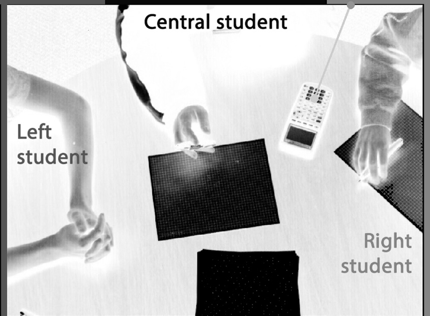
at their answers. In the second, Alibali et al. (2011)
classified the different gestures made by teachers
during math classes and found relations between them.
Finally, Mazur-Palandre et al. (2014) presented a study
on the use of gestures by children when explaining
procedures and instructions.
Actions
The action mode is very similar to the gesture and
motion modes. Both are body movements usually
captured by video recordings in MLA. However, ac-
tions are purposeful movements, usually involving the
type, sequence, or correctness of these actions can Figure 11.4. Determination of calculator use for manipulation of a tool, that are usually learned. The
be used as indicators of the level of mastery that the expertise estimation (Ochoa et al., 2013). learner has achieved in a given skill. For example, the
order and security in which diverse tools are manip- Speech ulated by a student in a lab can be used as a proxy to The most common use of audio recordings in MLA is
determine the understanding that the student has to capture traces of what the student is talking about
about a given procedure. or listening to. As the main and most complex form of
The main uses of action recording and analysis in communication among humans, speech is especially important in understanding the learning process. In MLA are in expertise estimation. In an engineering the current practice of MLA, two main signals are building activity, for example, the analysis of hand extracted from audio recordings: what is being said and wrist movement can determine the level of ex - and how it is being said. In the first approach, usually pertise (Worsley & Blikstein, 2014b). In mathematical referred as speech recognition, the actual content problem solving, the percentage of time that a learner of speech is extracted. The result of this analysis uses a calculator can be measured (Ochoa et al., 2013). is a transcript that can be further processed using Ochoa et al. (2013) tracked the position and angle of natural language processing (NLP) tools to establish the calculator in problem-solving sessions (Figure what the subject is talking about. In the second ap- 11.4). This position and angle (line) were then used proach, prosodic characteristics of the speech, such to estimate which student was using the calculator as intonation, tone, stress, and rhythm, are extracted. during that specific frame in the video (intersection These characteristics can shed light on the internal with the border of the image). state (security, emotional state, et cetera) or intention Facial Expressions of the speaker (joke, sarcasm, et cetera). Speech rec- Also highly related to body language modes is the ognition is heavily dependent on the language used, information gathered through facial expressions. The while prosodic characteristics are less sensible to human face can communicate very complex mental language variations. states through relatively simple expressions. There Audio is captured through microphones. While it has been a large body of successful research in the
CHAPTER 11 MULTIMODAL LEARNING ANALYTICS PG 133
seems easier to capture than video, the recording the door to using information that human observers
of audio of high enough quality to be processed is cannot easily detect, such as writing speed, rhythm,
actually much more complicated. The type and spa- and pressure level. While their value for understanding
tial configuration of the microphones depend on the learning is still not clear, there are indications that they
learning environment and what type of analysis will could be good expertise predictors (Ochoa et al., 2013).
be conducted with the recorded signal. For example, The recording instrument most commonly used to if automatic speech recognition will be attempted, capture writing and sketching is a digital pen (Ovi- the microphone should be directional and be close att & Cohen, 2015). These pens are able to digitize to the subject’s mouth. On the other hand, if only the the position, duration, and pressure of the strokes detection of when somebody is talking is needed, an done on different surfaces. Once in digital form, this environmental microphone located in the middle of information can be used in LA tools. Alternatively, the room could be enough. The presence of noise and the widespread use of tablets in education (Clarke & multiple signals not only prevents automatic feature Svanaes, 2014) also offers an opportunity to capture extraction but will also degrade manual annotation. The these modes easily, especially sketching. most common technique used to improve recordings, In the realm of MLA, two works based on the math when individual close-recording is not possible, is the data corpus (Oviatt, Cohen, & Weibel, 2013) explored use of microphone arrays that can not only reduce the the contribution that writing and sketching modes noise but also determine the spatial origin of the audio. could have in the prediction of expertise. Ochoa et Due to its importance, audio is also present in most al. (2013) extracted writing characteristics (stroke MLA works to date. Different types of speech analy - speed and length) and performed sketch recognition sis have been used to establish the level of affinity of to determine the number of simple geometrical figures collaborative learning dialogues (Lubold & Pon-Harry, used. The results determined that speed of writing is 2014), to evaluate the quality of oral presentations highly correlated with level of expertise. Zhou, Hang, (Luzardo, Guamán, Chiluiza, Castells, & Ochoa, 2014), Oviatt, Yu, & Chen (2014) used classification systems and to determine expertise in mathematics problem based on writing and sketching characteristics to solving (Thompson, 2013). identify the expert in the group with 80% accuracy.
Writing and Sketching
Two closely related modes are writing and sketch- CONTEXTS ing. They both use an instrument, most commonly a
pen, to communicate complex thoughts. Using a pen The main goal of MLA research is to extend the ap-
is perhaps one of the first skills that students learn plication of LA tools and methodologies to learning
so using it to write and sketch is still a predominant contexts that do not readily provide digital traces. One
activity in learning, especially at early stages. The characteristic of these contexts is that the capture of
most common information extracted from this mode more than one mode is necessary to understand the
is the transcript of what the student is saying, in the learning process. Table 11.1 presents a summary of the
case of writing, or a structured representation of the context studied in the current MLA literature with a
sketches where information about their content can detail of the modes used, the main learning aspects
be inferred. However, capturing the process of writing being explored in those contexts, and the works where
and sketching through technological means opens those studies are conducted.
Table 11.1. Learning Contexts Studied by MLA
Contexts Modes Learning Aspects Works
Lectures Movement, Gaze, Gestures, Facial Raca & Dillenbourg, 2013; Raca et al., 2014; Attention, Question-Answer Dominguez et al., 2015; D’Mello et al., 2015; Expression, Speech Interactions Alibali et al., 2011
Luzardo et al., 2014; Echeverría et al., 2014;
Oral Presentations Posture, Movement, Gestures, Gaze, Skill Development, Feed- Chen et al., 2014; Leong et al., 2015; Speech, Digital Document back, Mental State Schneider et al., 2015;
Boncoddo et al., 2013
Problem-Solving Movement, Actions, Speech, Writing, Ochoa et al., 2013; Luz, 2013; Thompson, Expertise Estimation 2013; Sketching Zhou et al., 2014
Construction Exer- Gestures, Actions, Speech, Facial Worsley & Blikstein, 2013, 2014b, 2015a cises Expressions, Galvanic Skin Response Novice vs. Expert Patterns
Use of Intelligent Digital Log Files, Facial Expressions, Relation between Emotions Craig et al., 2008; D’Mello et al., 2008 Tutoring Systems Speech and Learning
PG 134 HANDBOOK OF LEARNING ANALYTICS
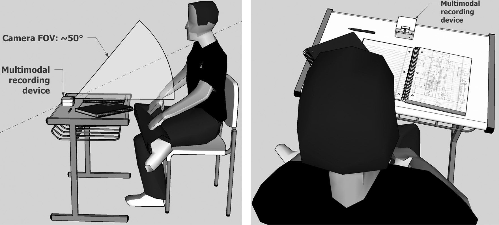
Figure 11.5. Design of a multimodal recording device (MRD) to be used in lecture settings. MRD in the class-
room (left) and MRD from student's point of view (right)
Lectures Börner, van Rosmalen, and Specht (2015) also created
Traditionally, lectures are the most common context a virtual presentation skill trainer utilizing Kinect to
associated with learning. While several aspects of this recognize postures and provide feedback in real-time.
setting deserve study, MLA researchers to date have Problem-Solving focused on automatically assessing the attention of Learning, especially in STEM subjects, frequently oc-
students during the lecture. The seminal works of curs at individual and group problem-solving sessions
Raca and Dillenbourg (2013) and Raca et al. (2014) have (Silver, 2013). The existence of the math data corpus
explored the recording of video in the classroom and (Oviatt et al. 2013), a set of multimodal recordings of
the automatic extraction of student movement and groups of three high-school students solving math
gaze from that recording. The results of these studies and geometry problems, catalyzed MLA research in
suggest that both modes are related to student atten- this setting. The media provided in the dataset in-
tion, but there are other significant contributors, such clude frontal video recordings of each student, video
as sitting position. Dominguez, Echeverría, Chiluiza, recordings of the working table, audio recordings of
and Ochoa (2015) presented a novel, distributed way each student, and general audio of the room. Addi-
to capture video-, audio- and pen-based modes using tionally, students were equipped with digital pens.
a multimodal recording device (MRD). Figure 11.5 pres- Ground truth is provided about the level of expertise
ents the design of such a device. The proximity of the of the students. Luz (2013), Thompson (2013), Ochoa et
device to the students reduces the risk of occlusion al. (2013), and Zhou et al. (2014) have all analyzed this
and increases the video and audio capture quality. dataset using diverse modes, concluding that all the
Finally, D’Mello et al. (2015) produced diverse audio modalities contributed to the determination of the
recordings in a lecture setting in order to evaluate level of expertise with a high level of accuracy (>70%).
question–answer interactions between instructor
and students. Construction Exercises
Oral Presentations design and construction can be tested through small The knowledge and skills required for engineering
The skill of presenting an academic topic in front of an construction challenges (Householder & Hailey, 2012).
audience is frequently regarded as one of the soft-skills The seminal works of Worsley and Blikstein (2013,
that higher-education students should acquire (Deb- 2014b, 2015a) explore, through multimodal analysis,
nath et al., 2012). Several independent groups around the patterns of actions performed by experts and nov-
the globe have recently started to build MLA systems ices in the design and manual assembly of structures.
able to help novice students correct bad-practices The main modes used for the analysis were gestures,
and gain mastery in oral presentations. Echeverría actions, speech, facial expression, and galvanic skin
et al. (2014) and Luzardo et al. (2014) present different response. The combination of traces extracted from
aspects of the same system that uses gesture, posture, these modes reveals differences in the construction
movement, gaze, speech, and an analysis of the digital process that are helpful to identify the level of mastery
presentation files and is able to predict the grade that in engineering design.
a human evaluator will give the student. Chen, Leong, Use of Intelligent Tutoring Systems
able to combine the different modalities in composite ITSs are usually studied by traditional LA using log- Feng, and Lee (2014), analyzing the same data, were
variables also used to predict the score. Schneider, files. However, video and audio of the learner have
CHAPTER 11 MULTIMODAL LEARNING ANALYTICS PG 135
been captured to add new modes that complement to several quantified-self applications (Swan, 2013).
the video are facial expression (Craig et al., 2008) and One question concerning the availability of large speech (D’Mello et al., 2008), which act as proxies for the interaction data. The main modes extracted from Integration
the learner’s internal emotional state. Both are able to in order to produce useful information to understand amounts of raw learning traces is how to combine them
successfully detect emotional states such as boredom, and optimize the learning process. Traces extracted confusion, and frustration in using the ITS. from different modes using different processes are
SPECIFIC ISSUES bound to have very different characteristics. For exam-
ple, the time granularity of the traces extracted from
Once extracted, using multimodal traces in LA models different modes can vary widely. Traces extracted from
and applications is similar to using different traces prosodic aspects of speech could change in tenths of a
extracted from the same mode. However, MLA research second while postures change more slowly. The level of
and practice raise several specific issues when certain certainty of the extracted traces can also be different.
modalities are captured, processed, and analyzed. Speech recognition with high-quality recordings could
These issues remain open research areas, parallel to reach 90% accuracy while emotional state detection
the technical extraction of traces from several mo from webcam sources could be in the low 70s. These -
dalities, but as important for the effective deployment difference do not prevent successful analysis, howev-
of MLA solutions in the real-world. er, thoughtful design is required in order to prevent
Recording MLA, Worsley and Blikstein (2014a) propose several spurious results. Pioneering this line of research in
Capturing interaction information in a digital tool is fusion strategies based on the “bands of cognition”
as easy and inexpensive as adding log statements in framework proposed by Newell (1994) and Anderson
relevant parts of the code. These statements perform (2002) as an explanation for human cognition. The
automatically, without requiring any involvement from development of integration frameworks will benefit
the learner, in a transparent and generally reliable and not only MLA but the whole LA community.
error-free way. On the other hand, capturing media in Impact on Learning
Developing recording systems that work as effortlessly additional complexity of data acquisition. For example, a dashboard application based on data automatically and efficiently as digital logging is one of the main captured by the LMS will be easier to accept than a barriers to the development of MLA. While this is an similar dashboard that requires all classrooms be engineering problem, researchers should be aware of equipped with video cameras. The increased com- the feasibility and scalability of their solutions. One of plexity should be accompanied by a larger positive the main proposals is to decentralize the recordings impact on the learning process. The requirement of using inexpensive sensors that are always left on. If using multiple real-world signals to analyze learning one or more recordings present problems, the general should also come with the promise to provide more information could be reconstructed from the remaining pens, et cetera), turning the system on and off and multimodal learning analytics are similar to those based on monomodal analysis, the required usefulness monitoring it, and avoiding the degradation of the of multimodal ones should be higher to justify the recording through occlusions, interference, or noise. and use of recorders (cameras, microphones, digital While the end-user tools and interventions based on the real-world requires the acquisition, installation,
working sensors. useful insights on the process and more measurable impacts on learners. Privacy
Capturing interaction information with digital tools CONCLUSION already raises privacy concerns among students and
of surveillance is bound to meet strong resistance. stand and optimize the learning process. However, its current bias towards studies and tools involving Informed consent forms could work for early research only computer-based learning contexts jeopardizes stages, but adopting MLA systems in the real-world would and use of recording systems that mimic “1984” levels LA has revolutionized the approaches used to under- instructors (Pardo & Siemens, 2014). The installation
require a different, more creative approach. One of the its applicability to learning in general. MLA is a sub- field that seeks to integrate non-computer mediated most promising solutions in this area is transferring learning contexts into the mainstream research and data ownership to the learner. Even if highly personal practice of LA. information is captured, privacy concerns are defused
if the decision of what and when to share it remain This chapter presented the current-state-of-art in MLA.
in the control of the learner. This approach is similar Modes as diverse as posture, speech, and sketching,
PG 136 HANDBOOK OF LEARNING ANALYTICS
alongside the more traditional modes of clickstream While several issues still prevent MLA from becoming
information and textual content, has been used to an- a mainstream practice, active research projects are
swer research questions and to build feedback systems exploring solutions to those issues, making the capture
in learning contexts. A mixture of computer science of multimodal learning traces cheaper, less invasive,
techniques and insights provided by educational and and more automatic. Novel solutions born from the
behavioural scientists enable the automatic evaluation MLA community to handle privacy concerns, such
of very diverse learning contexts, such as classrooms, as providing distributed recording and resting the
study groups, and oral presentations. ownership of the data with the learner, could one day
As can be inferred from the list of research presented be the norm for general LA practices. in this chapter, MLA is still a nascent field with a small Finally, the author wishes to invite LA researchers and
but very active and open community of researchers. practitioners to explore the use of multiple modalities
The existence of regular challenges and workshops, in their own studies and tools. The MLA communi-
where multimodal datasets are freely shared and jointly ty will openly share its knowledge, data, code, and
analyzed with new designs ideas openly discussed, frameworks. Only the embrace of these different
creates a research environment where new knowledge modalities will allow LA to have an impact in all the
is generated rapidly. contexts where learning takes place.
REFERENCES
Alibali, M. W., Nathan, M. J., Fujimori, Y., Stein, N., & Raudenbush, S. (2011). Gestures in the mathematics class-
room: What’s the point? In N. Stein & S. Raudenbush (Eds.), Developmental cognitive science goes to school
(pp. 219–234). New York: Routledge, Taylor & Francis.
Almeda, M. V., Scupelli, P., Baker, R. S., Weber, M., & Fisher, A. (2014). Clustering of design decisions in class-
room visual displays. Proceedings of the 4th International Conference on Learning Analytics and Knowledge
(LAK ’14), 24–28 March 2014, Indianapolis, IN, USA (pp. 44–48). New York: ACM.
Anderson, J. R. (2002). Spanning seven orders of magnitude: A challenge for cognitive modeling. Cognitive
Science, 26(1), 85–112.
Arnold, K. E., & Pistilli, M. D. (2012). Course Signals at Purdue: Using learning analytics to increase student
success. Proceedings of the 2nd International Conference on Learning Analytics and Knowledge (LAK ’12), 29
April–2 May 2012, Vancouver, BC, Canada (pp. 267–270). New York: ACM.
Blikstein, P. (2013). Multimodal learning analytics. Proceedings of the 3rd International Conference on Learning
Analytics and Knowledge (LAK ’13), 8–12 April 2013, Leuven, Belgium (pp. 102–106). New York: ACM.
Boraston, Z., & Blakemore, S.-J. (2007). The application of eye-tracking technology in the study of autism. The
Journal of Physiology, 581(3), 893–898.
Bull, P. E. (2013). Posture & Gesture. Elsevier.
Boncoddo, R., Williams, C., Pier, E., Walkington, C., Alibali, M., Nathan, M., Dogan, M. & Waala, J. (2013). Ges-
ture as a window to justification and proof. In M. V. Martinez & A. C. Superfine (Eds.), Proceedings of the 35th
annual meeting of the North American Chapter of the International Group for the Psychology of Mathematics
Education (PME-NA 35) 14–17 November 2013, Chicago, IL, USA (pp. 229–236). http://www.pmena.org/pro-
ceedings/
Chen, L., Leong, C. W., Feng, G., & Lee, C. M. (2014). Using multimodal cues to analyze MLA ’14 oral presen-
tation quality corpus: Presentation delivery and slides quality. Proceedings of the 2014 ACM workshop on
Multimodal Learning Analytics Workshop and Grand Challenge (MLA ’14), 12–16 November 2014, Istanbul,
Turkey (pp. 45–52). New York: ACM.
Clarke, B., & Svanaes, S. (2014, April 9). An updated literature review on the use of tablets in education. Family
Kids and Youth. https://smartfuse.s3.amazonaws.com/mysandstorm.org/uploads/2014/05/T4S-Use-of-
Tablets-in-Education.pdf
Cobb, P., Confrey, J., Lehrer, R., Schauble, L., & others. (2003). Design experiments in educational research.
Educational Researcher, 32(1), 9–13.
CHAPTER 11 MULTIMODAL LEARNING ANALYTICS PG 137 Craig, S. D., D’Mello, S., Witherspoon, A., & Graesser, A. (2008). Emote aloud during learning with AutoTutor:
Applying the facial action coding system to cognitive–affective states during learning. Cognition and Emo-
tion, 22(5), 777–788.
Crossley, S. A., Roscoe, R. D., & McNamara, D. S. (2013). Using automatic scoring models to detect changes
in student writing in an intelligent tutoring system. Proceedings of the 26th Annual Florida Artificial Intel-
ligence Research Society Conference (FLAIRS-13), 20–22 May 2013, St. Pete Beach, FL, USA (pp. 208–213).
Menlo Park, CA: The AAAI Press.
Debnath, M., Pandey, M., Chaplot, N., Gottimukkula, M. R., Tiwari, P. K., & Gupta, S. N. (2012). Role of soft skills
in engineering education: Students’ perceptions and feedback. In C. S. Nair, A. Patil, & P. Mertova (Eds.),
Enhancing learning and teaching through student feedback in engineering (pp. 61–82). ScienceDirect. http://
www.sciencedirect.com/science/book/9781843346456
D’Mello, S. K., Jackson, G. T., Craig, S. D., Morgan, B., Chipman, P., White, H., Person, N., Kort, B., el Kaliouby,
R., Picard, R., & Graesser, A. C. (2008). AutoTutor detects and responds to learners’ affective and cognitive
states. Workshop on Emotional and Cognitive Issues in ITS, held in conjunction with the 9th International
Conference on Intelligent Tutoring Systems (ITS 2008), 23–27 June 2008, Montreal, PQ, Canada. https://
www.researchgate.net/publication/228673992_AutoTutor_detects_and_responds_to_learners_affec-
tive_and_cognitive_states
D’Mello, S., Olney, A., Blanchard, N., Samei, B., Sun, X., Ward, B., & Kelly, S. (2015). Multimodal capture of
teacher–student interactions for automated dialogic analysis in live classrooms. Proceedings of the 17th ACM
International Conference on Multimodal Interaction (ICMI ’15), 9–13 November 2015, Seattle, WA, USA (pp.
557–566). New York: ACM.
Dominguez, F., Echeverría, V., Chiluiza, K., & Ochoa, X. (2015). Multimodal selfies: Designing a multimodal re-
cording device for students in traditional classrooms. Proceedings of the 17th ACM International Conference
on Multimodal Interaction (ICMI ’15), 9–13 November 2015, Seattle, WA, USA (pp. 567–574). New York: ACM.
Echeverría, V., Avendaño, A., Chiluiza, K., Vásquez, A., & Ochoa, X. (2014). Presentation skills estimation based
on video and Kinect data analysis. Proceedings of the 2014 ACM workshop on Multimodal Learning Analytics
Workshop and Grand Challenge (MLA ’14), 12–16 November 2014, Istanbul, Turkey (pp. 53–60). New York:
ACM.
Freedman, D. H. (2010, December 10). Why scientific studies are so often wrong: The streetlight effect. Dis-
cover Magazine, 26. http://discovermagazine.com/2010/jul-aug/29-why-scientific-studies-often-wrong-
streetlight-effect
Frischen, A., Bayliss, A. P., & Tipper, S. P. (2007). Gaze cueing of attention: Visual attention, social cognition,
and individual differences. Psychological Bulletin, 133(4), 694–724.
Gall, M. D., Borg, W. R., & Gall, J. P. (1996). Educational research: An introduction. Longman Publishing.
Graesser, A. C., Chipman, P., Haynes, B. C., & Olney, A. (2005). AutoTutor: An intelligent tutoring system with
mixed-initiative dialogue. IEEE Transactions on Education, 48(4), 612–618.
Householder, D. L., & Hailey, C. E. (2012). Incorporating engineering design challenges into STEM courses. Na-
tional Center for Engineering and Technology Education. http://ncete.org/flash/pdfs/NCETECaucusRe-
port.pdf
Jewitt, C. (2006). Technology, literacy and learning: A multimodal approach. Psychology Press.
Kizilcec, R. F., Piech, C., & Schneider, E. (2013). Deconstructing disengagement: Analyzing learner subpopula-
tions in massive open online courses. Proceedings of the 3rd International Conference on Learning Analytics
and Knowledge (LAK ’13), 8–12 April 2013, Leuven, Belgium (pp. 170–179). New York: ACM.
Kress, G., & Van Leeuwen, T. (2001). Multimodal discourse: The modes and media of contemporary communica-
tion. Edward Arnold.
Krugman, D. M., Fox, R. J., Fletcher, J. E., Fischer, P. M., & Rojas, T. H. (1994). Do adolescents attend to warnings
in cigarette advertising? An eye-tracking approach. Journal of Advertising Research, 34, 39–51.
Kruschke, J. K. (2003). Attention in learning. Current Directions in Psychological Science, 12(5), 171–175.
PG 138 HANDBOOK OF LEARNING ANALYTICS
Leong, C. W., Chen, L., Feng, G., Lee, C. M., & Mulholland, M. (2015). Utilizing depth sensors for analyzing mul-
timodal presentations: Hardware, software and toolkits. Proceedings of the 17th ACM International Confer-
ence on Multimodal Interaction (ICMI ’15), 9–13 November 2015, Seattle, WA, USA (pp. 547–556). New York:
ACM.
Lin, Y.-T., Lin, R.-Y., Lin, Y.-C., & Lee, G. C. (2013). Real-time eye-gaze estimation using a low-resolution web-
cam. Multimedia Tools and Applications, 65(3), 543–568.
Lubold, N., & Pon-Barry, H. (2014). Acoustic-prosodic entrainment and rapport in collaborative learning
dialogues. Proceedings of the 2014 ACM workshop on Multimodal Learning Analytics Workshop and Grand
Challenge (MLA ’14), 12–16 November 2014, Istanbul, Turkey (pp. 5–12). New York: ACM.
Lund, K. (2007). The importance of gaze and gesture in interactive multimodal explanation. Language Resourc-
es and Evaluation, 41(3–4), 289–303.
Luzardo, G., Guamán, B., Chiluiza, K., Castells, J., & Ochoa, X. (2014). Estimation of presentations skills based on
slides and audio features. Proceedings of the 2014 ACM workshop on Multimodal Learning Analytics Work-
shop and Grand Challenge (MLA ’14), 12–16 November 2014, Istanbul, Turkey (pp. 37–44). New York: ACM.
Luz, S. (2013). Automatic identification of experts and performance prediction in the multimodal math data
corpus through analysis of speech interaction. Proceedings of the 15th ACM International Conference on
Multimodal Interaction (ICMI ’13), 9–13 December 2013, Sydney, Australia (pp. 575–582). New York: ACM.
Markaki, V., Lund, K., & Sanchez, E. (2015). Design digital epistemic games: A longitudinal multimodal analysis.
Paper presented at the conference Revisiting Participation: Language and Bodies in Interaction, 24–27 June
2015, Basel, Switzerland.
Mazur-Palandre, A., Colletta, J. M., & Lund, K. (2014). Context sensitive “how” explanation in children’s multi-
modal behavior, Journal of Multimodal Communication Studies, 2, 1–17.
Mishra, B., Fernandes, S. L., Abhishek, K., Alva, A., Shetty, C., Ajila, C. V., … Shetty, P. (2015). Facial expression
recognition using feature based techniques and model based techniques: A survey. Proceedings of the 2nd
International Conference on Electronics and Communication Systems (ICECS 2015), 26–27 February 2015,
Coimbatore, India (pp. 589–594). IEEE.
Mitra, S., & Acharya, T. (2007). Gesture recognition: A survey. IEEE Transactions on Systems, Man, and Cyber-
netics, Part C: Applications and Reviews, 37(3), 311–324.
Morency, L.-P., Oviatt, S., Scherer, S., Weibel, N., & Worsley, M. (2013). ICMI 2013 grand challenge workshop on
multimodal learning analytics. Proceedings of the 15th ACM International Conference on Multimodal Interac-
tion (ICMI ’13), 9–13 December 2013, Sydney, Australia (pp. 373–378). New York: ACM.
Newell, A. (1994). Unified theories of cognition. Harvard University Press.
Ochoa, X., Chiluiza, K., Méndez, G., Luzardo, G., Guamán, B., & Castells, J. (2013). Expertise estimation based on
simple multimodal features. Proceedings of the 15th ACM International Conference on Multimodal Interaction
(ICMI ’13), 9–13 December 2013, Sydney, Australia (pp. 583–590). New York: ACM.
Ochoa, X., Worsley, M., Chiluiza, K., & Luz, S. (2014). MLA ’14: Third multimodal learning analytics workshop
and grand challenges. Proceedings of the 16th ACM International Conference on Multimodal Interaction (ICMI
’14), 12–16 November 2014, Istanbul, Turkey (pp. 531–532). New York: ACM.
Oviatt, S., Cohen, A., & Weibel, N. (2013). Multimodal learning analytics: Description of math data corpus for
ICMI grand challenge workshop. Proceedings of the 15th ACM International Conference on Multimodal Inter-
action (ICMI ’13), 9–13 December 2013, Sydney, Australia (pp. 583–590). New York: ACM.
Oviatt, S., & Cohen, P. R. (2015). The paradigm shift to multimodality in contemporary computer interfaces. San
Rafael, CA: Morgan & Claypool Publishers.
Pardo, A., & Siemens, G. (2014). Ethical and privacy principles for learning analytics. British Journal of Educa-
tional Technology, 45(3), 438–450.
Poole, A., & Ball, L. J. (2006). Eye tracking in HCI and usability research. Encyclopedia of Human Computer
Interaction, 1, 211–219.
CHAPTER 11 MULTIMODAL LEARNING ANALYTICS PG 139 Raca, M., & Dillenbourg, P. (2013). System for assessing classroom attention. Proceedings of the 3rd International
Conference on Learning Analytics and Knowledge (LAK ’13), 8–12 April 2013, Leuven, Belgium (pp. 265–269).
New York: ACM.
Raca, M., Tormey, R., & Dillenbourg, P. (2014). Sleepers’ lag: Study on motion and attention. Proceedings of the
4th International Conference on Learning Analytics and Knowledge (LAK ’14), 24–28 March 2014, Indianapolis,
IN, USA (pp. 36–43). New York: ACM.
Scherer, S., Worsley, M., & Morency, L.-P. (2012). 1st international workshop on multimodal learning analytics.
Proceedings of the 14th ACM International Conference on Multimodal Interaction (ICMI ’12), 22–26 October
2012, Santa Monica, CA, USA (pp. 609–610). New York: ACM.
Schlömer, T., Poppinga, B., Henze, N., & Boll, S. (2008). Gesture recognition with a Wii controller. Proceedings
of the 2nd International Conference on Tangible and Embedded Interaction (TEI ’08), 18–21 February 2008,
Bonn, Germany (pp. 11–14). New York: ACM.
Schneider, J., Börner, D., van Rosmalen, P., & Specht, M. (2015). Presentation trainer, your public speaking mul-
timodal coach. Proceedings of the 17th ACM International Conference on Multimodal Interaction (ICMI ’15),
9–13 November 2015, Seattle, WA, USA (pp. 539–546). New York: ACM.
Serrano-Laguna, A., & Fernández-Manjón, B. (2014). Applying learning analytics to simplify serious games
deployment in the classroom. Proceedings of the 2014 IEEE Global Engineering Education Conference (EDU-
CON 2014), 3–5 April 2014, Istanbul, Turkey (pp. 872–877). IEEE.
Siemens, G. (2013). Learning analytics: The emergence of a discipline. American Behavioral Scientist, 9, 51–60.
doi:0002764213498851.
Silver, E. A. (2013). Teaching and learning mathematical problem solving: Multiple research perspectives. Rout-
ledge.
Simsek, D., Sándor, Á., Buckingham Shum, S., Ferguson, R., De Liddo, A., & Whitelock, D. (2015). Correlations
between automated rhetorical analysis and tutors’ grades on student essays. Proceedings of the 5th Interna-
tional Conference on Learning Analytics and Knowledge (LAK ’15), 16–20 March 2015, Poughkeepsie, NY, USA
(pp. 355–359). New York: ACM.
Swan, M. (2013). The quantified self: Fundamental disruption in big data science and biological discovery. Big
Data, 1(2), 85–99.
Thompson, K. (2013). Using micro-patterns of speech to predict the correctness of answers to mathematics
problems: An exercise in multimodal learning analytics. Proceedings of the 15th ACM International Confer-
ence on Multimodal Interaction (ICMI ’13), 9–13 December 2013, Sydney, Australia (pp. 591–598). New York:
ACM.
Vasquez, H. A., Vargas, H. S., & Sucar, L. E. (2015). Using gestures to interact with a service robot using Kinect
2. Advances in Computer Vision and Pattern Recognition, 85. Springer.
Vatrapu, R., Reimann, P., Bull, S., & Johnson, M. (2013). An eye-tracking study of notational, informational, and
emotional aspects of learning analytics representations. Proceedings of the 3rd International Conference on
Learning Analytics and Knowledge (LAK ’13), 8–12 April 2013, Leuven, Belgium (pp. 125–134). New York: ACM.
Worsley, M., & Blikstein, P. (2013). Towards the development of multimodal action based assessment. Pro-
ceedings of the 3rd International Conference on Learning Analytics and Knowledge (LAK ’13), 8–12 April 2013,
Leuven, Belgium (pp. 94–101). New York: ACM.
Worsley, M., & Blikstein, P. (2014a). Deciphering the practices and affordances of different reasoning strate-
gies through multimodal learning analytics. Proceedings of the 2014 ACM workshop on Multimodal Learning
Analytics Workshop and Grand Challenge (MLA ’14), 12–16 November 2014, Istanbul, Turkey (pp. 21–27). New
York: ACM.
Worsley, M., & Blikstein, P. (2014b). Using multimodal learning analytics to study learning mechanisms. In J.
Stamper, Z. Pardos, M. Mavrikis, & B. M. McLaren (Eds.), Proceedings of the 7th International Conference on
Educational Data Mining (EDM2014), 4–7 July, London, UK (pp. 431–432). International Educational Data
Mining Society.
PG 140 HANDBOOK OF LEARNING ANALYTICS
Worsley, M., & Blikstein, P. (2015a). Leveraging multimodal learning analytics to differentiate student learning
strategies. Proceedings of the 5th International Conference on Learning Analytics and Knowledge (LAK ’15),
16–20 March 2015, Poughkeepsie, NY, USA (pp. 360–367). New York: ACM.
Worsley, M., & Blikstein, P. (2015b). Using learning analytics to study cognitive disequilibrium in a complex
learning environment. Proceedings of the 5th International Conference on Learning Analytics and Knowledge
(LAK ’15), 16–20 March 2015, Poughkeepsie, NY, USA (pp. 426–427). New York: ACM.
Zhang, Z. (2012). Microsoft Kinect sensor and its effect. IEEE MultiMedia, 19(2), 4–10.
Zhou, J., Hang, K., Oviatt, S., Yu, K., & Chen, F. (2014). Combining empirical and machine learning techniques
to predict math expertise using pen signal features. Proceedings of the 2014 ACM workshop on Multimodal
Learning Analytics Workshop and Grand Challenge (MLA ’14), 12–16 November 2014, Istanbul, Turkey (pp.
29–36). New York: ACM.
CHAPTER 11 MULTIMODAL LEARNING ANALYTICS PG 141
PG 142 HANDBOOK OF LEARNING ANALYTICS
Chapter 12: Learning Analytics Dashboards
Joris Klerkx, Katrien Verbert, and Erik Duval
Department of Computer Science, KU Leuven, Belgium
DOI: 10.18608/hla17.012
ABSTRACT
This chapter presents learning analytics dashboards that visualize learning traces to give users insight into the learning process. Examples are shown of what data these dashboards use, for whom they are intended, what the goal is, and how data can be visualized. In addition, guidelines on how to get started with the development of learning analytics dashboards are presented for practitioners and researchers.
Keywords: Information visualization, learning analytics dashboards
In recent years, many learning analytics dashboards BACKGROUND have been deployed to support insight into learning
data. The objectives of these dashboards include
providing feedback on learning activities, supporting To Augment the Human Intellect
reflection and decision making, increasing engagement There is a strong contrast between intelligent systems
and motivation, and reducing dropout. These learning that try to make decisions on behalf of people, such
analytics dashboards apply information visualization as intelligent tutoring systems (Brusilovsky, 2000)
techniques to help teachers, learners, and other stake- and educational data mining systems (Santos et al.,
holders explore and understand relevant user traces 2015), and systems that try to empower people to
collected in various (online) environments. The overall make better-informed decisions. For instance, visual
objective is to improve (human) learning. analytics systems (Shneiderman & Bederson, 2003)
provide a clear overview of the context, the decisions
The goal of this chapter is to provide a guide to practi- that can be made, and the potential implications of
tioners and researchers who want to get started with those decisions. the development and evaluation of learning analytics
dashboards. We provide guidance, and several exam Data mining plays to the strength of computers to do -
ples, to address the following items: number crunching, while visualization techniques play
to the remarkable perceptual abilities that humans
1. What kind of data can be visualized? possess. The difference between the two approaches 2. For whom are the visualizations intended (learner, is like the difference between a self-driving car and
teacher, manager, researcher, other)? a car with a human driver. Data mining uses auto-
3. matic pattern matching for remote control while the Why: what is the goal of the visualization? dashboard provides visual communication to assist a 4. How can the data be visualized? Which interaction human driver who remains in control of the vehicle. techniques can be applied? What tools, libraries, There is a certain philosophical or ethical side to this data formats, et cetera can be used for the technical notion of two approaches as well: if learners are always implementations? What workflow and recipe can told what to do next, how can they develop the typical be used to develop the visualization? 21st-century skills of collaboration, communication, In addition to these four questions, we elaborate on critical thinking, and creativity? Or, at a more funda - evaluation aspects that assess the usefulness and mental level, how can they become citizens equipped potential impact of the approach with the knowledge, skills, and attitudes to participate
fully in society? In this chapter, we focus on methods
that augment the human intellect, through visual
approaches for learning analytics (Engelbart, 1995).
CHAPTER 12 LEARNING ANALYTICS DASHBOARDS PG 143
Information Visualization applications to learnscapes on large public displays”
Information visualization is the use of interactive visual (p. 1499). Dashboards, they say, “typically capture
representations to amplify cognition (Card, Mackinlay, and visualize traces of learning activities, in order to
& Shneiderman, 1999). It typically focuses on abstract promote awareness, reflection, and sense-making, and
data without a straightforward representation in 2-D to enable learners to define goals and track progress
or 3-D space. Visual analytics puts specific emphasis towards these goals” (p. 1499). The paper makes useful
on building models and visualizing these in order to distinction between various types of dashboards:
better understand or refine the models. A very useful 1. Dashboards that support traditional face-to-face goal of information visualization is to rely on human lectures, so as to enable the teacher to adapt the
perceptual abilities for pattern discovery (trends, gaps, teaching, or to engage students during lecture
outliers, clusters). These patterns often become more sessions.
explains it: 2. Dashboards that support face-to-face group work apparent visually than numerically. As Ware (2004)
and classroom orchestration, for instance by
The human visual system is a pattern seeker of visualizing activities of both individual learners
enormous power and subtlety. The eye and the and groups of learners.
channel into human cognitive centers. At higher ing: an early famous example is Course Signals that visualizes predicted learning outcomes as levels of processing, perception and cognition a traffic light, based on grades in the course so are closely interrelated, which is the reason processor that provides the highest-bandwidth 3. Dashboards that support online or blended learn- visual cortex of the brain form a massively parallel
why the words “understanding” and “seeing” far, time on task and past performance (Arnold & Pistilli, 2012). are synonymous. (p. xvi)
As such, visualization has the potential to be more More sophisticated and complex visualizations for detailed analysis of course activity by teach- precise and revealing than conventional statistical ers are the focus of the Student Activity Meter computations (Tufte, 2001). (Govaerts, Verbert, Duval, & Pardo, 2012). SNAPP Static visualizations (i.e., an image) typically provide focuses on the visualization of social activity of answers to a limited number of questions that a user learners (Bakharia & Dawson, 2011). might have about a data set. For example, so-called In terms of what is being tracked, the possibilities infographics are often used for storytelling in jour- continue to expand, as new online trackers become nalism. However, looking at an evocative visualization available, capturing more detail of what learners and often leads to new questions that can only be answered teachers do. As well, new sensors proliferate that by interacting with the data itself (Few, 2009). Adding can likewise capture what people do in the analog dynamic interaction techniques to the visualization, world. This second data source is evolving especially therefore, is often necessary to design meaningful rapidly, with mobile devices that now include sensors visualization tools that encourage exploratory data to report physiological, emotional, and other kinds of analysis. learner characteristics that have so far mostly eluded Another advantage of visualization is the ability to automated capturing. Besides tracking, self-reporting reveal problems with the data itself; for instance, about can also be a valuable source of data. Although more the way the data has been collected. Especially in the error-prone and difficult to sustain systematically, case of learning analytics, where (semi-) automated self-reporting offers an opportunity for awareness, trackers often capture traces of learner activities, this reflection, and self-analysis. advantage is valuable for quality control. As for what can be incorporated into a dashboard,
WHAT FOR, WHOM, WHY, HOW? Verbert et al. (2014) lists the following kinds of data:
1. Artefacts produced by learners, including blog
posts, shared documents, software, and other
What follows is a non-exhaustive overview; it is artefacts that would often end up in a student
important to recognize the variety of approaches. project portfolio.
of learning analytics data that can be visualized, for 2. Social interaction, including speech in face-to-face This variety is not surprising given the wide variety
a wide variety of audiences and reasons, in a wide group work, blog comments, Twitter or discussion forum interactions. variety of ways.
Verbert et al. (2014) present a survey of learning analyt 3. Resource use can include consultation of documents - (manuals, web pages, slides), views of videos, et ics dashboard applications “ranging from small mobile
PG 144 HANDBOOK OF LEARNING ANALYTICS
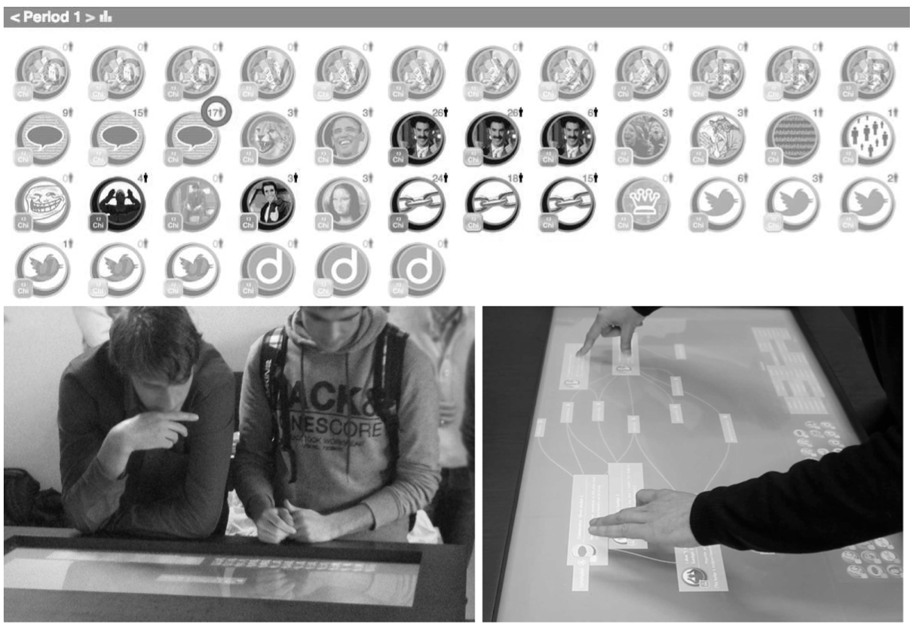
Figure 12.1. (Top) Navi Badgeboard — Personal Badge Overview: A student’s badge overview for a given period;
(bottom) Navi Surface: students actively using the tabletop display application during a face-to-face session
(Charleer et al., 2013).
cetera. Techniques like software trackers and a node link diagram to enable further exploration of eye-tracking can provide detailed information these badges. Among other things, students can explore
about what parts of resources exactly are being which other students have earned specific badges as
used and how. a means to compare and discuss learning progress.
4. Time spent can be useful for teachers to identify Figure 12.2 shows a dashboard that uses grades to
students at risk and for students to compare their predict a student’s chances of failing a particular
own efforts with those of their peers. course (Ochoa, Verbert, Chiluiza, & Duval, 2016) be-
5. Test and self-assessment fore she starts. The dashboard is intended to support results can provide an teachers in giving advice to students on their learning indication of learning progress. trajectories. More specifically, the dashboard presents Figure 12.1 presents one of our more recent dashboards the likelihood (68%) of this particular student failing a (Charleer, Klerkx, Odriozola, Luis, & Duval, 2013). The course in which she is interested. The dashboard uses dashboard tracks social data from blogs and Twitter. colour cues to indicate whether the risk of failure, Such data, categorized as artefacts produced , is then based on past performance, is low (green), medium visualized for students . The goal is to support aware- (yellow), or high (red). Depending on the outcome, the ness about learning progress and to enable discussion teacher can advise the student to take the course or to in class. To support such awareness and discussion, discuss alternatives, such as first taking a prerequisite social interactions of students are abstracted in the course. The dashboard also supports several interaction form of learning badges for students to earn. Students techniques that enable the teacher to indicate which can then explore which badges they have earned (Fig - data should be taken into account to generate this ure 12.1, top) through the visualization of icons and prediction, including sliders at the bottom that enable colour cues . Gray badges have not yet been earned. the teacher to specify the range of data in terms of The bottom part of Figure 12.1 shows a visualization, years. For example, if a student did poorly in Biology developed for collaborative use on a tabletop that uses in Grade 10 but worked harder and did well in Grade
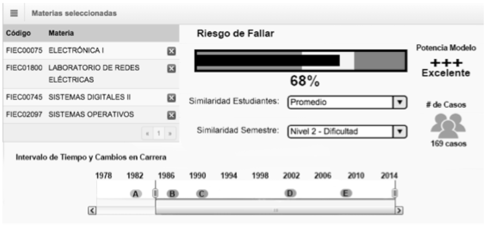
Figure 12.2. Muva dashboard that represents the likelihood of failing a specific course (Ochoa et al., 2016).
CHAPTER 12 LEARNING ANALYTICS DASHBOARDS PG 145 12, the Grade 10 mark can be disregarded. compared to other students?
• How much do I contribute to the discussion forum,
HOW TO GET STARTED compared to other students?
In both cases, we deliberately only list questions that
To leverage the advanced perceptual abilities of humans start with “what,” “when,” “how much,” and “how of-
to help them explore and discover patterns, a designer ten.” These specific, direct questions can be directly
must create a visual representation or encoding of the mapped in a data set. Questions like, “Why did this data (Card et al., 1999). Several steps, outlined below, student have to enroll twice in this course?” the answer can be distinguished in this design process. is more exploratory in nature. Indicators may be that
Understand Your Goals he did not spend enough time on the course material, did not interact with fellow students on the discussion The first step is getting to know the problem domain, forum, started to study the course material too late, the data set, the intended end-users of the tool, the and so on. Another difficult question to answer would typical tasks they should be able to perform, and so be, “ Are students more eager to work on assignment on. The following questions need to be answered at 1 or assignment 2? ” Even if much data is captured, it this stage: is difficult to answer questions involving human mo - 1. Why : What is the goal of the visualization? What tivations based on a plurality of (un)known variables. questions about the data should it answer? Especially in the early phase of design, it is therefore
2. For whom often advisable and easier to focus on direct, specific : For whom is the visualization intended?
Are the people involved specialists in the domain, questions.
or in visualization? Acquire and (Pre-)Process Your Data
3. What: What data will the visualization display? Do Building a visual dashboard typically entails a data-gath-
these data exhibit a specific internal structure, ering and preprocessing step. Visualization experts
like time, a hierarchy, or a network? suggest that this step takes 80% of the time and effort
versus all other steps. McDonnel and Elmqvist (2009)
4. How: How will the visualization support the goal?
identify the following intermediary steps:
How will people be able to interact with the vi-
sualization? What is the intended output device? 1. Acquiring raw data: It is important to have a clear
idea of where the data will come from (e.g., the log
By carefully examining and understanding the data set,
files of the LMS, assessment results, other), and
a variety of questions about the data can be formed.
when the data will be updated (continuously, not at
Having these questions in mind can be useful when
all, at specific intervals). Will the data be available
acquiring and filtering data for the dashboard. For ex-
through an Application Programming Interface
ample, consider a data set that contains the following
(API), an export file, or some other source?
learner traces:
2. Analyzing raw data: Data may need to be cleaned
• access to learning resources
if some values are missing or erroneous, or
• time on page in digital textbooks pre-processed to compute aggregate values (mean,
• minimum, maximum, et cetera). In data analysis, contributions to discussion fora
• time spent on assignments outliers, clusters, et cetera? distribution can also be an issue: are there apparent
From these traces, we can define several relevant 3. Preparing and filtering data: Using the initial questions as a starting point in the design process. A questions from step 1, choose the relevant data
teacher might ask questions like these: from the pool of analyzed raw data.
• When did students start looking at the course Mapping Design
material? Important in the visual mapping design is to choose
• What is the average time that a student spends a representation that best answers the questions you
reading the textbook? want users to be able to answer, i.e., that serve your
• visualization goal for the intended target audience. How many hours did Peter work on his assignment? There exists a multitude of alternatives. One way to • How often did Peter ask a question on the dis - start is to look at the measurement or scale of each cussion forum? data characteristic. Nominal or qualitative scales
A student will probably ask similar questions: differentiate objects based on discrete input domains,
such as categories or other qualitative classifications
• How much time do I spend on an assignment,
to which they belong. Quantitative scales have con-
PG 146 HANDBOOK OF LEARNING ANALYTICS
tinuous input domains (e.g., [0, 100]). Ordinal scales between the numbers quite originally by relating
have discrete input domains where the order of the them to age, where a person of 37 can easily lift
elements matters but the exact difference between the weights, while a person of 73 might already need
values does not. Depending on the scale of the data a walking stick.
characteristic, one can choose how to encode this • Figure 12.4d: adds muscle size. data visually. Figure 12.3 depicts Mackinlay’s (1986) • Figure 12.4e: uses shading of an equally sized circle ranking of visual properties to encode quantitative, with 75 versus 37 stripes. ordered, and categorical scales. For instance, the spatial position of an element is useful for encoding • Figure 12.4f: uses a position in a Cartesian coor-quantitative, ordered, and categorical differences. dinate system. This is why scatterplots have been used so often to
• Figure 12.4g: visualizes a part-to-whole relationship
convey a variety of information. Length, on the other
between the numbers.
hand, can encode quantitative differences, but is of
less value for encoding ordered and categorical dif- • Figure 12.4h: assumes a time-based relationship ferences. Shape is at the bottom of the ranking for between both numbers, which leads to a negative
visualizing quantitative and ordered differences, but trend line.
is more often used to depict categorical data. • Figure 12.4i: uses point clouds.
Low-fidelity prototypes such as paper sketches are • Figure 12.4j: visualizes an unbalanced scale to often helpful during the design-mapping step. Figure represent a difference in weight.
the “Bring Your Own Data: Visual Learning Analytics” • Figure 12.4k: correlates the size of the figure with 12.4 depicts an exercise given to the participants of
tutorial organized at the Learning Analytics Summer the size of the number. Institute (LASI) 2014. Participants included researchers After selecting a visual encoding, high-fidelity prototypes
with good knowledge in learning analytics, but limited can be built using visualization tools (like Tableau, or
knowledge about visualization. They were asked to take even Microsoft Excel) or existing visualization libraries
15 minutes to sketch all possible ways to visualize a (like Processing or D3.js).
simple data set of two numbers {75, 37}. The exercise Clearly some alternatives work better than others,
illustrated to participants that from the moment they depending on the contextualization (e.g., weight and
start sketching, it is not difficult to brainstorm visual age) and the ability to be interpreted by users (e.g., the
encodings of data. This is reflected in the number of mental model of a balanced scale). There is, therefore,
sketches that two teams of two persons each were able no best way to visualize a data set, but some tech-
to generate in 15 minutes (see Figure 12.4a and 12.4b). niques have been proven to work better than others,
By sketching, more ideas and questions about the data for example:
set are often raised, which in turn leads to new ideas • Pie charts are usually a bad idea (Few, 2009). for visualization. For example: • Bar charts can be quite powerful. • Figure 12.4c: participants represented the difference • Coordinated graphs enable rich exploration.
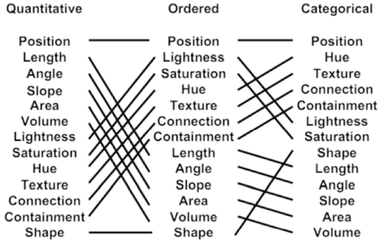
Figure 12.3. Mackinlay’s (1986) ranking of visual properties for data characteristics on quantitative, ordered,
and categorical scales.
CHAPTER 12 LEARNING ANALYTICS DASHBOARDS PG 147 • 3-D graphics often do not convey any additional • Comparing values and patterns to find similarities
information and force the reader to deal with and differences.
redundant and extraneous cues (Levy, Zacks, • Sorting items based on a variety of data values Tversky, & Schiano, 1996). or metrics.
• Scatterplots and parallel coordinates are good • Filtering values that satisfy a set of conditions.
representations for depicting correlations. In
addition, Harrison, Yang, Franconeri, & Chang • Highlighting data to make specific values stand out
(2014) found that among the stacked chart variants, visually without making all other data disappear,
the stacked bar significantly outperformed both as is the case with filtering data. the stacked area and stacked line. Elliot (2016) • Clustering or grouping similar items together; for has presented a nice overview of these studies. example, by aggregating quantitative data (e.g.,
Documentation average, count, et cetera) to view it in a higher
As with any design exercise, it is important to be or lower level of detail. explicit about: • Annotating findings and thoughts.
1. Rationale: Why were certain decisions made, • Bookmarking or recording a specific view on the
what was the intent? data to enable effective navigation.
2. Alternatives: Which alternatives were considered Heer and Shneiderman (2012) is essential reading on
and why were they not withheld? interactive dynamics for visual analytics. The authors
3. Evolution: present a taxonomy of interactive dynamics that con- How has the design evolved from early
sketches to a full-blown implementation? What tribute to successful visual analytic tools. For each
was modified for conceptual reasons and what for task category, various existing visualization systems
implementation or other reasons (logistics, lack are described with useful interaction techniques that
of time, other reasons)? support the task at hand, such as brushing and linking,
Add Interaction Techniques histogram sliders, zoomable maps, dynamic query
process of view creation, exploration, and refinement and so on. (Heer & Shneiderman, 2012). Before analyzing which Evaluate Continuously interaction techniques are useful for a specific visu-During the design process, the elaboration of concrete Visual analysis typically progresses in an iterative multiple coordinated views, visual analysis histories, filter widgets, small multiple displays or trellis plots,
alization application, it is useful to understand the
typical analytical tasks performed by teachers who personas and scenarios can be very rewarding as it
want to understand how their students are doing in helps to focus the design, development, and evaluation
class. Several task taxonomies have been described of the visualization on what is relevant. It is very easy
in literature for this purpose. Common tasks include: to get carried away with too much “eye candy” and lose
track of the what, for whom, and why the visualization
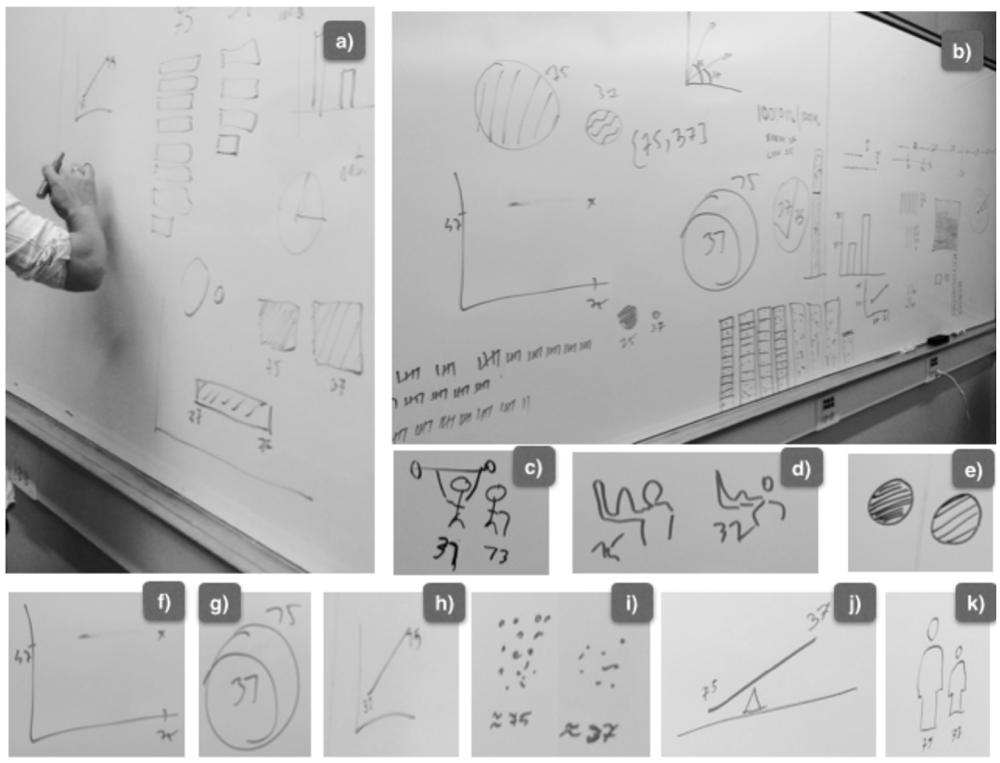
Figure 12.4. Sketches of a small data set of two numbers {75, 37}.
PG 148 HANDBOOK OF LEARNING ANALYTICS
is being designed. Generally, a user-centred design CONCLUSION (UCD) approach proceeds with iterative development
that keeps the target users in the loop in continuous Information visualization concepts and methodologies cycles of design–implementation–evaluation. In this are key enablers for way, the development can focus on the most relevant • Learners to gain insight into their learning actions issues for teachers or learners at all times. and the effects these have. The evaluation of information visualization systems • Teachers to stay aware of the subtle interactions is essential. A plethora of techniques can be used, in their courses. including controlled experiments that evaluate dif -
ferent visualization and interaction techniques or • Researchers to discover patterns in large data field studies that assess the impact of a visualization sets of user traces and to communicate these
on learning (Plaisant, 2004). The latter take place in data to their peers. natural environments (classrooms) but are often time
As shown in this chapter, visualization has the unique
consuming and difficult to replicate and generalize
potential to help shape the learning process and
(Nagel et al., 2014). Verbert et al. (2014) suggest the
encourage reflection on its progress and impact by
following evaluation techniques:
creating learning analytics dashboards that give a
1. Effectiveness, which can refer to engagement, concise overview of relevant metrics in an actionable
higher grades or post-test results, higher reten- way and that support the exploration of patterns.
tion rates, improved self-assessment, and overall
Designing and creating an effective information vi-
course satisfaction.
sualization system for learning analytics is an art, as
2. Efficiency in the use of time of a teacher or learner. the designer needs both domain expertise on learning
3. Usability and usefulness evaluations often focus theories and paradigms as well as techniques rang-
on teachers being able to identify learners at risk ing from visual design to algorithm design (Nagel,
or asking learners how well they think they are 2015; Spence, 2001). In this chapter, we have briefly
performing in a course. introduced the various steps in a visualization design
process, from raw data analysis to effective dashboards
Typical evaluation instruments include questionnaires evaluated by target users. or controlled experiments where time-to-task, errors
made, time-to-learn, et cetera are evaluated (Dillen-bourg et al., 2011).
REFERENCES
Arnold, K. E., & Pistilli, M. D. (2012). Course Signals at Purdue: Using learning analytics to increase student
success. Proceedings of the 2nd International Conference on Learning Analytics and Knowledge (LAK ’12), 29
April–2 May 2012, Vancouver, BC, Canada (pp. 267–270). New York: ACM.
Bakharia, A., & Dawson, S. (2011). SNAPP: A bird’s-eye view of temporal participant interaction. Proceedings of
the 1st International Conference on Learning Analytics and Knowledge (LAK ’11), 27 February–1 March 2011,
Banff, AB, Canada (pp. 168–173). New York: ACM.
Brusilovsky, P. (2000). Adaptive hypermedia: From intelligent tutoring systems to web-based education. In
G. Gauthier, C. Frasson, K. VanLehn (Eds.), Proceedings of the 5th International Conference on Intelligent
Tutoring Systems (ITS 2000), 19–23 June 2000, Montreal, QC, Canada (pp. 1–7). Springer. doi:10.1007/3-540-
45108-0_1
Card, S. K., Mackinlay, J., & Shneiderman, B. (Eds.). (1999). Readings in information visualization: Using vision to
think. Burlington, MA: Morgan Kaufmann Publishers.
Charleer, S., Klerkx, J., Odriozola, S., Luis, J., & Duval, E. (2013). Improving awareness and reflection through
collaborative, interactive visualizations of badges. In M. Kravcik, B. Krogstie, A. Moore, V. Pammer, L. Pan-
nese, M. Prilla, W. Reinhardt, & T. D. Ullmann (Eds.), Proceedings of the 3rd Workshop on Awareness and Re-
flection in Technology Enhanced Learning (AR-TEL ’13), 17 September 2013, Paphos, Cyprus (pp. pp. 69–81).
Dillenbourg, P., Zufferey, G., Alavi, H., Jermann, P., Do-lenh, S., Bonnard, Q., Cuendet, S., & Kaplan, F. (2011).
Classroom orchestration: The third circle of usability. Proceedings of the 9th International Conference
CHAPTER 12 LEARNING ANALYTICS DASHBOARDS PG 149
on Computer-Supported Collaborative Learning (CSCL 2011), 4–8 July 2011, Hong Kong, China (vol. I, pp.
510–517). International Society of the Learning Sciences.
Elliot, K. (2016). 39 studies about human perception in 30 minutes. Presented at OpenVis 2016. https://medi-
um.com/@kennelliott/39-studies-about-human-perception-in-30-minutes-4728f9e31a73#.rs7z3ch6i
Engelbart, D. (1995). Toward augmenting the human intellect and boosting our collective IQ. Communications
of the ACM, 38(8), 30–34.
Few, S. (2009). Now you see it: Simple visualization techniques for quantitative analysis. Berkeley, CA: Analytics
Press.
Govaerts, S., Verbert, K., Duval, E., & Pardo, A. (2012). The student activity meter for awareness and self-reflec-
tion. CHI Conference on Human Factors in Computing Systems: Extended Abstracts (CHI EA ’12), 5–10 May
2012, Austin, TX, USA (pp. 869–884). New York: ACM.
Harrison, L., Yang, F., Franconeri, S., & Chang, R. (2014). Ranking visualizations of correlation using Weber’s
law. IEEE Transactions on Visualization and Computer Graphics, 20(12), 1943–1952.
Heer, J., & Shneiderman, B. (2012, February). Interactive dynamics for visual analysis. Queue – Microprocessors,
10(2), 30.
Levy, E., Zacks, J., Tversky, B., & Schiano, D. (1996, April). Gratuitous graphics? Putting preferences in perspec-
tive. Proceedings of the SIGCHI Conference on Human Factors in Computing Systems (CHI ’96), 13–18 April
1996, Vancouver, BC, Canada (pp. 42–49). New York: ACM.
Mackinlay, J. (1986). Automating the design of graphical presentations of relational information. Transactions
on Graphics, 5(2), 110–141.
McDonnel, B., & Elmqvist, N. (2009). Towards utilizing GPUs in information visualization: A model and imple-
mentation of image-space operations. IEEE Transactions on Visualization and Computer Graphics, 15(6),
1105–1112.
Nagel, T., Maitan, M., Duval, E., Vande Moere, A., Klerkx, J., Kloeckl, K., & Ratti, C. (2014). Touching transport:
A case study on visualizing metropolitan public transit on interactive tabletops. Proceedings of the 12th
International Working Conference on Advanced Visual Interfaces (AVI 2014), 27–29 May 2014, Como, Italy (pp.
281–288). New York: ACM.
Nagel, T. (2015). Unfolding data: Software and design approaches to support casual exploration of tempo-spatial
data on interactive tabletops. Leuven, Belgium: KU Leuven, Faculty of Engineering Science.
Ochoa, X., Verbert, K. Chiluiza, K., & Duval, E. (2016). Uncertainty visualization in learning analytics. Work in
progress for IEEE Transactions on Learning Technologies.
Plaisant, C. (2004). The challenge of information visualization evaluation. Proceedings of the 2nd International
Working Conference on Advanced Visual Interfaces (AVI ’04), 25–28 May 2004, Gallipoli, Italy (pp. 109–116).
New York: ACM.
Santos, O. C., Boticario, J. G., Romero, C., Pechenizkiy, M., Merceron, A., Mitros, P., Luna, J. M., Mihaescu, C.,
Moreno, P., Hershkovitz, A., Ventura, S., & Desmarais, M. (Eds.). (2015). Proceedings of the 8th International
Conference on Educational Data Mining (EDM2015), 26–29 June 2015, Madrid, Spain. International Educa-
tional Data Mining Society.
Shneiderman, B., & Bederson, B. B. (2003). The craft of information visualization: Readings and reflections. Burl-
ington, MA: Morgan Kaufmann Publishers.
Spence, R. (2001). Information visualization: Design for interaction, 1st ed. Salt Lake City, UT: Addison-Wesley.
Tufte, E. R. (2001). The visual display of quantitative information, 2nd ed. Cheshire, CT: Graphics Press LLC.
Verbert, K., Govaerts, S., Duval, E., Santos, J., Assche, F., Parra, G., & Klerkx, J. (2014). Learning dashboards: An
overview and future research opportunities. Personal and Ubiquitous Computing, 18(6), 1499–1514.
Ware, C. (2004). Information visualization: Perception for design, 2nd ed. Burlington, MA: Morgan Kaufmann
Publishers.
PG 150 HANDBOOK OF LEARNING ANALYTICS
Chapter 13: Learning Analytics Implementation
Design
Alyssa Friend Wise, Jovita Vytasek
Learning Analytics Research Network, New York University, USA Faculty of Education, Simon Fraser University, Canada
DOI: 10.18608/hla17.013
ABSTRACT
This chapter addresses the design of learning analytics implementations: the purposeful shaping of the human processes involved in taking up and using analytic tools, data, and reports as part of an educational endeavor. This is a distinct but equally important set of design choices from those made in the creation of the learning analytics systems them-selves. The first part of the chapter reviews key challenges of interpretation and action in analytics use. The three principles of Coordination, Comparison, and Customization are then presented as guides for thinking about the design of learning analytics implementations. The remainder of the chapter reviews the existing research and theory base of learning analytics implementation design for instructors (related to the practices of learning design and orchestration) and students (as part of a reflective and self-regulated learning cycle). Implications for learning analytics designers and researchers and areas requiring further research are highlighted.
Keywords: Learning design, analytics implementation, learning analytics implementation challenges, teachers-facing learning analytics, student-facing learning analytics
Much of the work of learning analytics researchers DEFINING LEARNING ANALYTICS
and designers revolves around the challenges of how IMPLEMENTATIONS to extract, process, and present data in ways that are
useful to various educational stakeholders. However,
after measures have been created and displays designed, This chapter focuses on the elements shaping how
there is still additional work required for analytics to learning analytics are motivated and mobilized for
play a constructive role in educational systems. Sys- productive use by instructors, learning designers, and
tem design alone does not ensure successful uptake students. The act of introducing learning analytics
(Ertmer, 1999; Hall, 2010; Donnelly, McGarr, & O’Reilly, into an educational environment is called a learning
2011) as “analytics exist as part of a sociotechnical analytics implementation. While the term “learning
system where human decision making and consequent analytics intervention” has also been used in the past
actions are as much a part of any successful analytics (Lonn, Aguilar, & Teasley, 2015; Wise, 2014), it is a more
solution as the technical components” (van Harme narrow label that implies learning analytics use as an -
len & Workman, 2012, p. 4). Thus, learning analytics interruption to regular learning practices that occurs
researchers and practitioners need to attend to the at a specific point in time to address a problem. Im-
human activity of working with these tools and develop plementation is preferred as a more general term that
a knowledge base for the design of learning analytics also includes ongoing learning analytics use as a
implementations (see Figure 13.1). sustained activity incorporated into habitual learning
practices (Wise, Vytasek, Hausknecht, & Zhao, 2016).
Learning analytics implementation design is then
defined globally as the purposeful framing of activity
surrounding how analytic tools, data, and reports are
CHAPTER 13 LEARNING ANALYTICS IMPLEMENTATION DESIGN PG 151
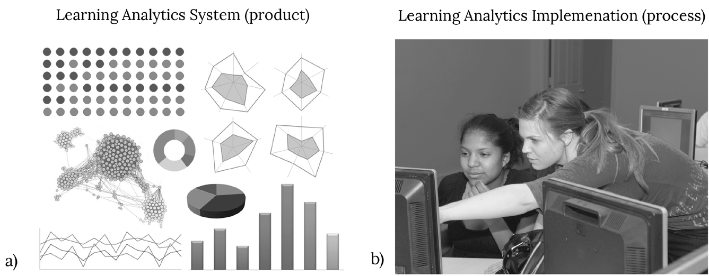
Figure 13.1. Visual differentiation of a) a learning analytics system (product) and b) intentional use of the sys-
tem by instructors and students (process). Design of the former addresses issues of measures, algorithms, and displays while design of the latter addresses issues of timing, interpretative lens, and action parameters. Source: Photo in b) by US Department of Education licensed under Creative Commons Attribution 2.0 License. Cropped from original (www.flickr.com/photos/departmen-
tofed/9610345404)
taken up and used as part of an educational endeavor. information that suggests divergent interpretations
Specifically, it addresses questions of who should have that must be reconciled (Wise, 2014).
access to particular kinds of analytic data, when the At the stage of taking action, two important concerns analytics should be consulted, for what purposes, and are those of possible options and enacting change. how the analytics feed back into the larger education- The challenge of possible options refers to the fact al processes taking place. that analytics provide a retrospective lens to evaluate
past activity, but this does not always directly indicate
USING IMPLEMENTATION DESIGN what actions could be taken in the future to change
TO ADDRESS LEARNING ANALYTICS the situation. The challenge of enacting change refers CHALLENGES to the question of how and on what timeline these ac-
tions (once identified) should occur. Change does not
The process of using learning analytics involves making occur instantaneously — incremental improvement and
sense of the information presented and taking action intermediate stages of progress need to be considered.
based on it (Siemens, 2013; Clow, 2012). While analytics Implementation design helps address these challenges
are often developed for general use across a broad by providing guidance at the mediating level between
range of situations, the answer to questions of meaning the analytics presented and the localized course
and action are inherently local. Correspondingly, the context. This both provides the additional support
design of learning analytics implementations needs to required to make the information actionable and al-
be more sensitive to the immediate learning context lows for tailoring of analytics use to meet the needs
than the design of learning analytics tools. This is of particular learning contexts. seen in several well-documented challenges in using
analytics to inform educational decision-making at the IMPLEMENTATION DESIGN level of interpretation as well as at subsequent stages CONSIDERATIONS of taking action (Wise & Vytasek, in preparation; Wise et al., 2016).
Learning analytics implementations operate at the
At the level of interpretation, two important challenges interface between the learning activities (the ped-
are those of context and priorities. The challenge of agogical events that generate data) and the learning
context refers to the fact that analytics are inherently analytics (the designed representations of this data).
abstracted representations of past activity. Interpreting This relationship can be considered through three
these representations to inform future activity requires guiding principles: Coordination, Comparison, and
an understanding of the purposes and processes of Customization (Wise & Vytasek, in preparation) ground-
the learning activity in which they were generated ed in theories of constructivism, metacognition, and
and a mean by which to connect the analytics to self-regulated learning (Duffy & Cunningham, 1996;
these (Lockyer, Heathcote, & Dawson, 2013; Ferguson, Schunk & Zimmerman, 2012).
2012). The challenge of priorities refers to how users The Principle of Coordination assign relative value to the variety of analytic feedback
The principle of Coordination is the foundation of
available. Particular aspects of analytic feedback may
learning analytics implementation design, stating
be more or less important at different points in the
that the surrounding frame of activity through which
learning process and different analytics can provide
PG 152 HANDBOOK OF LEARNING ANALYTICS
analytic tools, data, and reports are taken up should frames can vary in the specificity of the standard set
position the use of analytics as an integral part of the by providing an exact target for a metric or a range
educational experience tied to goals and expectations of desirable values.
(Wise, 2014). To be coordinated with the learning Relative reference frames provide a variable standard activity, the use of learning analytics needs to be con-that fluctuates over time. One relative reference frame is ceived of as a central element of the learning design peer activity . This commonly used reference frame sets itself (Lockyer et al., 2013; Pardo, Ellis, & Calvo, 2015; up comparisons across individuals based on a measure Persico & Pozzi, 2015) so that it is clear to the user how of central tendency or distribution (Corrin & de Barba, the analytics are meant to play a role in their regular 2015; Govaerts, Verbert, Duval, & Pardo, 2012). Another engagement in the learning process. relative reference frame is parallel activity , in which Conceptual Coordination means an advanced consid- comparisons are made across learning events within a
eration on which of the available analytics to focus course or across courses (Bakharia et al., 2016). In this
(based on the goals of the educational activity) and case, it is critical that the activities being compared
what productive and unproductive patterns in these are indeed parallel in key ways (e.g., duration, intent,
metrics are expected to look like (Brooks, Greer, & expectations), otherwise the comparisons made may
Gutwin, 2014; Macfadyen & Dawson, 2010; Persico & lead to invalid inferences. Finally, a less commonly
Pozzi, 2015). To represent the breath of valued actions used but powerful reference frame is prior activity, in during a learning activity, it is advisable to use diverse which comparisons are made for the same individual(s)
analytic measures (Suthers & Rosen, 2011; Winne & across time, allowing for the tracking of progress and
Baker, 2013). It is important to clearly communicate change (Wise, Zhao, & Hausknecht, 2014).
the logic of this connection tying pedagogical goals The Principle of Customization with learning actions and data-based feedback to The principle of Customization emerges from the rec-
the analytics users (Wise, 2014) as initial evidence ognition that there are multiple, disparate, and equally
suggests they put more value on metrics when they valid needs and paths (and potentially endpoints) for
clearly understand the connection to learning (Wise, different learning analytics users. Customization of
Zhao, & Hausknecht, 2014). learning analytics to meet these different needs can
Logistical Coordination means attention to when be thought of in two ways. The first approach is com-
and how it makes sense for users to work with the putationally driven and can be thought of as adaptive chosen analytics as part of the teaching or learning learning analytics (cf. Brusilovsky & Peylo, 2003). As this activity. With experienced learning analytics users relates to the design of the learning analytics system
or those with strong self-monitoring skills, it may be rather than the learning analytics implementation, it
fine to provide only Conceptual Coordination and is not addressed further here. A second approach to
leave room for individual decisions around when to personalization is user-driven and can be thought of
consult the analytics (van Leeuwen, 2015). However, as adaptable learning analytics (cf. Brooks et al., 2014). in many cases, explicit guidance about when and In this case, the analytics interface allows for different
how to work with the analytics as a tool to support kinds of uses by different individuals who determine
learning or teaching is necessary (Koh, Shibani, Tan, themselves which analytics they will attend to and in
& Hong, 2016). General strategies include suggesting what way. There is a danger, however, that users may
a rhythm of analytics use (Wise, Zhao, & Hausknecht, be overwhelmed by the multitude of possible options
2013) or a timescale for checkpoints (Lockyer et al., without a clear basis on which to make choices. Thus
2013); specific approaches for instructor and student implementation design needs to support user agency
use are discussed in sections 5 and 6. actively by guiding them in the process of effectively
The Principle of Comparison making decisions about how to use the learning ana- lytics provided to meet their own needs and context. The principle of Comparison addresses the need for
to evaluate the meaning of an analytic. For example, one or more appropriate reference frames with which LEARNING ANALYTICS IMPLICATION
the interpretation of a student receiving a particular DESIGN FOR INSTRUCTORS knowledge assessment (say “25”) varies depending on
the highest possible score, the performance of the rest Instructors are a natural audience for learning ana-
of the class, and the level of their prior achievement. lytics as they are often already engaged informally in
Absolute reference the activity of examining student learning to inform frames for learning analytics provide
a fixed standard for comparison that has been set in their practice. Such teacher-inquiry has traditionally
advance; for example, a set of course expectations depended on qualitative methods of reflection us-
(Wise, Zhao, & Hausknecht, 2014). Absolute reference ing journals, interviews, peer-observation, student
CHAPTER 13 LEARNING ANALYTICS IMPLEMENTATION DESIGN PG 153
observations and examination of learning artifacts to the principle of Customization is currently limited.
(Lytle & Cochran-Smith, 1990), though interest in the However, thinking about how different learning designs
use of student data as evidence to inform this process might work differently and be more or less effective
has been increasing (Wasson, Hanson, & Mor, 2016). for different kinds of learners and learning contexts
Analytics can support instructors in approaching is an exciting area for future consideration.
this reflective cycle with more detail, using data as An alternative conceptualization of instructors’ an aid in assessing the impact of teaching decisions analytics use shifts the focus from looking at data on learning activity (Mor, Ferguson, & Wasson, 2015). patterns for the course as a whole to looking at dif- Different bodies of literature have explored specific ferences between students or student groups. From process of instructor use of analytics in relation to this perspective, the analytics are used in (relatively) the practices of learning design, orchestration, and real-time as a tool to monitor activity, support the assessment. diagnoses of situations needing attention, and prompt
One perspective focuses on the use of analytics to instructors to intervene when necessary. This can be
inform learning design. From this perspective, instruc- thought of as a form of orchestration (Rodríguez-Tri-
tors document their pedagogical intentions through ana, Martínez-Monés, Asensio-Pérez, & Dimitriadis,
the design, which then provides the conceptual frame 2015) in which instructors use analytics to support
for asking questions and making sense of the infor- their awareness of student activity and adapt their
mation provided by the analytics (Dawson, Bakharia, teaching to meet student needs (Feldon, 2007). To
Lockyer, & Heathcote, 2011). This can facilitate an address the inherent challenges in doing this (Dyck-
understanding of the effects of a learning design (or hoff, Lukarov, Muslim, Chatti, & Schroeder, 2013), van
specific instructional approach) on student activity Leeuwen (2015) proposes a two-part model of how
and learning (Dietz-Uhler & Hurn, 2013), which can instructors can work with analytics in this capacity.
then feed back into improving the design (Persico & First, instructors use the analytics to monitor student
Pozzi, 2015; Mor et al., 2015). The process is a cyclical activity, specifically noticing important differences
one in which the analytics make the learning process- across individuals or groups. This is supported by the
es undertaken by students visible (Martínez-Monés, capabilities of analytics to aggregate information for
Harrer, & Dimitriadis, 2011). A specific model for manageable presentation. Second, instructors use the
aligning learning analytics use with learning design information to inform their diagnosis of situations,
was developed by Lockyer et al. (2013) who described individuals, or groups requiring attention. Working
how instructors can initially map the learning pro- in the context of a learning analytics application for
cess supported by their design, pre-identify activity a computer-supported collaborative learning context,
patterns that indicate successful (or unsuccessful) van Leeuwen (2015) found initial evidence to support
student engagement in the pedagogical design, and the hypothesis that analytics use would increase both
then use analytics to track learner progression towards the specificity of instructor diagnoses and inform
the desired outcomes. An initial example of this cycle the actions that they took. This model represents a
in action is given in Brooks et al. (2014) who look at strong application of the principle of Customization
instructors’ modifications of their discussion forum as the goal of instructors’ analytics use is individual-
practices based on sociograms created from students’ ized actions tailored to particular student or group
speaking and listening activity. A similar cycle as en- needs. With respect to Comparison, in the original
gaged in by course designers of a MOOC is given in conceptualization there is strong reliance on the rel-
Roll, Harris, Paulin, MacFadyen, and Ni (2016). Lockyer ative frame of peer activity, though the prior activity
et al.’s (2013) model represents a strong application of of a group or individual are also taken into account.
the principle of Coordination as it makes clear how The addition of an absolute standard with which to
the use of the analytics is integrally tied to the goals compare activity could also be considered. An area for
and expectations for learning. It also suggests ways future development is the Coordination of this kind
analytics can be worked into an instructor’s activity of analytics use with the larger purpose and flow of
flow, for example by setting up checkpoints. The prin- the collaborative learning activity.
ciple of Comparison is also attended to in the sense A final model for instructor use of learning ana-
that the pre-identified activity patterns serve as an lytics that has yet to be fully developed is as a tool
absolute reference frame to gauge progress towards a for assessment. While there is a need for caution in
desired state. Additional comparisons — for example, such applications, there are exciting possibilities for
setting incremental stages to target along the way or using temporal analytics (which capture time-based
using prior activity to judge progress — could also be characteristics of trace data) to move towards a new
considered. As this use of learning analytics is directed paradigm of assessment that replaces current point-
globally at the effects of a learning design, attention in-time evaluations of learning states with dynamic
PG 154 HANDBOOK OF LEARNING ANALYTICS
evaluations of learning progress (Molenaar & Wise, 2016). 2004; Pardo, Han, & Ellis, 2016). While such efforts
Such an approach is grounded in Comparison with have traditionally been limited by the challenges and
prior activity and offers opportunities for instructors inaccuracies of human memory and recall (Winne,
to respond to individual and evolving learning needs. 2010; Azevedo, Moos, Johnson, & Chauncey, 2010), an-
Using analytics collected during the normal course alytics offer the exciting potential to mirror a learner’s
of learning processes to evaluate the development activity back to them with greater ease and accuracy
of student understanding in situ also presents an (Winne & Baker, 2013). From this perspective, learning
attractive opportunity for assessment that can both analytics are conceived of as a way to cue students to
meet summative needs and serve formative purposes. effectively monitor and take action on their learning
However, the conceptual and logistical Coordination of (Roll & Winne, 2015).
how learning analytics are used for such assessment Expanding on these ideas, a more specific vision of purposes is critical for adoption, given the importance student learning analytics use has been put forth by of decisions often attached to assessment activities. Wise and colleagues (Wise et al., 2016; Wise, 2014;
LEARNING ANALYTICS IMPLICATION Tuning Model describes student’s learning-analyt- Wise, Zhao, & Hausknecht, 2013; 2014). Their Student
DESIGN FOR STUDENTS ics-informed reflective practice as grounded in the
relationship between the learning activities and the
Students are an important audience for analytics learning analytics. Students work with this relationship
use for several reasons. First, since student learning continually as they engage in cycles of goal setting,
is the ultimate goal of educational systems, much of action, reflection, and adjustment. To support this
the data collected in learning analytics systems is descriptive cycle of analytics use, Wise et al. (2016)
information generated by or about students. From have proposed and presented initial validation evidence
an ethical perspective, students have the right (and for a pedagogical framework for designing learning
perhaps the responsibility) to review their own data analytics implementations for students. The Align
(Pardo & Siemens, 2014; Slade & Prinsloo, 2013). Second, Design framework utilizes elements of Coordination,
similar to instructors, students are also at the “front Comparison, and Customization as described above
line” of learning and thus potentially well-equipped to with an emphasis on the interplay between agency
bring local context to bear in interpreting analytics, as and dialogue with the situation.
for Customization as it adds an additional personalized aspects of how to design learning analytics implemen- tations for students. Koh et al. (2016) have developed reference frame for Comparison. the Team and Self-Diagnostic Learning framework for Student use of analytics has been conceptualized analytics use in the context of collaborative inquiry primarily in terms of a reflective cycle in which with secondary students. This framework provides students use their own analytic data to inform their strong process-based Coordination by integrating in- individual learning processes. Drawing on the theories structor-guided use of teamwork competency analytics of Schön (1983) and Kolb (1984), Clow (2012) has put into students’ experiential learning cycles. Attention to forward the general idea of analytics use as an ele- Comparison takes the form of contrasts of similarities ment of reflective practice in which the information however, students must negotiate between course- learning analytics use, there are other ongoing research efforts proposing targeted pedagogical frameworks wide goals for learning and analytics use and their own for specific learning contexts and exploring particular personal objectives (Wise, 2014). This explicitly allows processes based on them. Different from instructors, In addition to these overarching models of students’ well as make immediate adjustments to their learning
and difference between self- and peer-ratings on six
provides feedback that students can use to adjust or dimensions of teamwork.
experimenters” has also been discussed within the the intersection of the Customization and Comparison principles, examining whether students’ mastery or self-regulated learning literature (Winne, in press). performance orientation to learning can help deter- Drawing on theories of metacognition, this field has The notion of students using analytics to act as “little Separately, Aguilar (2015) is conducting research at experiment with changes in their learning activities.
a long history of studying and supporting the ways mine when peer activity is a useful reference frame for evaluating learning analytics. Similarly, research students monitor and take action on their learning as into individual differences has shown that particular part of a self-regulative process (Zimmerman & Schunk, goal-orientations are associated with the use of dif- 2011; Schunk 2008; Boekaerts, Pintrich, & Zeidner, ferent kinds of self-regulatory strategies generally 2000). Students who adopt positive SRL strategies (Shirazi, Gašević, & Hatala, 2015) and can specifically tend to have richer learning interactions and perform influence the interpretation and use of different better in their studies (Zimmerman, 2008; Pintrich,
CHAPTER 13 LEARNING ANALYTICS IMPLEMENTATION DESIGN PG 155
learning analytics visualizations (Beheshitha, Hatala, individuals in a group and the group collectively work
Gašević, & Joksimović, 2016). with analytics to improve their joint learning process
Such findings can have implications for system-driven through socially shared regulation (Järvelä et al., 2015).
adaptive analytics in terms of what measures with IMPLICATIONS FOR LEARNING what references points are helpful (and ethical) to ANALYTICS DESIGNERS AND
show to particular learners. For example, while the RESEARCHERS peer reference frame can be can be motivating in
showing a student where they stand in relation to The above discussion has described three principles
others in the class for some students (Beheshitha et for designing learning analytics implementations and
al., 2016; Govaerts, et al., 2012), it can be distracting for has presented current research and models of learn-
others (Corrin & de Barba, 2015). Some students find it ing analytics use by instructors and students. This
demotivating to find out they are doing substantially framework can also be used to discuss implications for
worse than their classmates (Wise, Hausknecht, & Zhao, learning analytics design and research more generally.
2014). Especially for students who are struggling, the
ability to document improvement in comparison to First, from a systems design perspective, we can an-
their own prior activity may be more powerful than ticipate and create features to support implementation
comparison to a distal class mean. In addition, there possibilities. For example, a tool that allows instructors
are questions of which portion(s) of a peer group are to associate particular analytics and course goals
most appropriate for comparison in a given situation; (and annotate these connections with examples of
for example, should students be shown data for the productive or unproductive patterns) would support
whole course, only students who are similar to them the principle of Coordination. Similarly, creating tools
in some way, or the “top performers” (Beheshitha et al., that help students track and reflect on the changes
2016). The answer will depend on the kind of activity, in their analytics over time (for example by being
relevant student characteristics, and the objective able to adjust the time window of the analytics for
for analytics use. both current and historical data) could support the
in which learning analytics implementations can be activity as a reference frame for evaluating progress, designed to support student Customization in terms but the predominance of analytic dashboards that of adaptable analytics implementations. For example, only provide point-in-time “snapshots.” Other researchers are probing more deeply into ways particular importance given the usefulness of prior principles of Customization. This latter point is of
Santos, Govaerts, Verbert, and Duval (2012) describe a
process in which students articulate individual goals Second, from a research perspective, in addition to
and then track their progress. Ferguson, Buckingham continued work to develop useful analytics systems,
Shum, and Deakin Crick (2011) have used blogs as a inquiry is also needed into how activity using such
tool for creating individually owned reflective spaces analytics is best motivated and mobilized, and the
in which students can work through the sense-mak- factors influencing this process. Practically, this
ing of the analytics. The need for students to have suggests that laboratory studies, which ask people
time to “digest” the meaning of the analytics before to perform specific tasks or determine particular
taking action is also supported by the findings of Koh information with learning analytics tools, can only
et al. (2016), suggesting that appropriate pacing may contribute so much to predicting how instructors
be a critical aspect in the Coordination of reflective and students will work with analytics “in the wild.”
learning analytics use with the overarching learning Thus field-testing new analytics in real educational
activities. In contrast, Holman et al. (2015) found that contexts early on may prove particularly important
for predictive analytics use focused on course prog- in developing learning analytics systems and imple-
ress, students tended to use the tools to make plans mentations that truly impact teaching and learning.
(and follow-through on these plans) mostly in short One valuable approach to consider is Design-Based
bursts just prior to major course deadlines. Intervention Research (Penuel, Fishman, Cheng, &
primarily conceptualized student learning analytics partnership with practitioners to support on-the- use as an individual endeavor, there are also intrigu- ground use and sustainability. ing opportunities for students to work with analyt- Finally, it is critical to consider the use of analytics as a While the models and research discussed above have of testing and (re)design of learning innovations in Sabelli, 2011), which emphasizes multiple iterations
ics collectively. This follows the tradition of “group
awareness” tools, which have been used to facilitate radically new technology for instructors and students.
computer-supported collaborative work and learning Careful planning of how the analytics will be intro-
(Buder, 2011; Janssen & Bodemer, 2013). In this case, the duced, with appropriate up-front guidance, ongoing
support, diverse examples, and time for instructors and
PG 156 HANDBOOK OF LEARNING ANALYTICS
students to figure out how to integrate this new form learning designs as well as to investigate and respond
of feedback into their practice is needed to translate to individual student activity patterns via orchestration.
the promise of learning analytics into reality. Wide- The use of learning analytics for assessment is a po-
spread adoption of learning analytics will not occur tentially exciting but undeveloped area for application.
spontaneously, but initial reports from projects that Student use currently takes the form of a reflective,
have used implementation design to educate users self-regulative cycle, with attention given to particular
and nurture their analytics use are very promising ways to support this process. Further research into the
(Koh et al., 2016; Wise et al., 2016). impact of students’ and instructors’ individual differ-
ences on analytics use and the generation of designs
CONCLUSION to support their particular needs is a promising area
for future work. The final message of this chapter is
This chapter reflects the current state of the art of to emphasize that intentional implementation design
learning analytics implementation design. The princi- is essential, not optional, for learning analytics adop-
ples of Coordination, Comparison, and Customization tion. If we wish to avoid the fate of too many prom-
provide a lens to examine the different dimensions of ising technologies that never made a real impact on
design choice that can affect how analytics feedback education, research into the interplay of human and
is taken up and acted on in particular educational technological elements influencing analytics use is a
contexts. For instructors, models have been proposed critical area for attention in the field moving forward.
for analytics use to examine and adjust course-wide
REFERENCES
Aguilar, S. (2015). Exploring and measuring students’ sense-making practices around representations of their
academic information. Doctoral Consortium Poster presented at the 5th International Conference on
Learning Analytics and Knowledge (LAK ’15), 16–20 March 2015, Poughkeepsie, NY, USA. New York: ACM.
Azevedo, R., Moos, D. C., Johnson, A. M., & Chauncey, A. D. (2010). Measuring cognitive and metacognitive
regulatory processes during hypermedia learning: Issues and challenges. Educational Psychologist, 45(4),
210–223.
Bakharia, A., Corrin, L., de Barba, P., Kennedy, G., Gašević, D., Mulder, R., Williams, D., Dawson, S., & Lockyer,
L. (2016). A conceptual framework linking learning design with learning analytics. Proceedings of the 6th
International Conference on Learning Analytics & Knowledge (LAK ’16), 25–29 April 2016, Edinburgh, UK (pp.
329–338). New York: ACM.
Beheshitha, S. S., Hatala, M., Gašević, D., & Joksimović, S. (2016). The role of achievement goal orientations
when studying effect of learning analytics visualizations. Proceedings of the 6th International Conference on
Learning Analytics & Knowledge (LAK ’16), 25–29 April 2016, Edinburgh, UK (pp. 54–63). New York: ACM.
Boekaerts, M., Pintrich, P., & Zeidner, M. (2000). Handbook of self-regulation. San Diego, CA: Academic Press.
Brooks, C., Greer, J., & Gutwin, C. (2014). The data-assisted approach to building intelligent technology en-
hanced learning environments. In J. A. Larusson & B. White (Eds.), Learning analytics: From research to
practice (pp. 123–156). New York: Springer.
Brusilovsky, P., & Peylo, C. (2003). Adaptive and intelligent web-based educational systems. International Jour-
nal of Artificial Intelligence in Education, 13(2), 159–172.
Buder, J. (2011). Group awareness tools for learning: Current and future directions. Computers in Human Be-
havior, 27(3), 1114–1117.
Clow, D. (2012). The learning analytics cycle: Closing the loop effectively. Proceedings of the 2nd International
Conference on Learning Analytics & Knowledge (LAK ’12), 29 April–2 May 2012, Vancouver, BC, Canada (pp.
134–138). New York: ACM.
Corrin, L., & de Barba, P. (2015). How do students interpret feedback delivered via dashboards? Proceedings
of the 5th International Conference on Learning Analytics & Knowledge (LAK ’15), 16–20 March 2015, Pough-
keepsie, NY, USA (pp. 430–431). New York: ACM.
CHAPTER 13 LEARNING ANALYTICS IMPLEMENTATION DESIGN PG 157 Dawson, S., Bakharia, A., Lockyer, L., & Heathcote, E. (2011). “Seeing” the learning community: An exploration
of the development of a resource for monitoring online student networking. British Journal of Educational
Technology, 41(5), 736–752.
Dietz-Uhler, B., & Hurn, J. E. (2013). Using learning analytics to predict (and improve) student success: A facul-
ty perspective. Journal of Interactive Online Learning, 12(1), 17–26.
Donnelly, D., McGarr, O., & O’Reilly, J. (2011). A framework for teachers’ integration of ICT into their classroom
practice. Computers & Education, 57(2), 1469–1483.
Duffy, T. M., & Cunningham, D. J. (1996). Constructivism: Implications for the design and delivery of instruc-
tion. In D. Jonassen (Ed.), Handbook of research for educational communications and technology (pp. 170–
198). New York: Macmillan.
Dyckhoff, A. L., Lukarov, V., Muslim, A., Chatti, M. A., & Schroeder, U. (2013). Supporting action research with
learning analytics. Proceedings of the 3rd International Conference on Learning Analytics & Knowledge (LAK
’13), 8–12 April 2013, Leuven, Belgium (pp. 220–229). New York: ACM.
Ertmer, P. A. (1999). Addressing first- and second-order barriers to change: Strategies for technology integra-
tion. Educational Technology Research and Development, 47(4), 47–61.
Feldon, D. F. (2007). Cognitive load and classroom teaching: The double-edged sword of automaticity. Educa-
tional Psychologist, 42(3), 123–137.
Ferguson, R. (2012). Learning analytics: Drivers, developments and challenges. International Journal of Tech-
nology Enhanced Learning, 4(18), 304–317.
Ferguson, R., Buckingham Shum, S., & Deakin Crick, R. (2011). EnquiryBlogger: Using widgets to support
awareness and reflection in a PLE Setting. In W. Reinhardt & T. D. Ullmann (Eds.), Proceedings of the 1st
Workshop on Awareness and Reflection in Personal Learning Environments (pp. 11–13) Southampton, UK:
PLE Conference.
Govaerts, S., Verbert, K., Duval, E., & Pardo, A. (2012). The student activity meter for awareness and self-reflec-
tion. Proceedings of the CHI Conference on Human Factors in Computing Systems, Extended Abstracts (CHI
EA ’12), 5–10 May 2012, Austin, TX, USA (pp. 869–884). New York: ACM.
Hall, G. E. (2010). Technology’s Achilles Heel: Achieving high-quality implementation. Journal of Research on
Technology in Education, 42(3), 231–253.
Holman, C., Aguilar, S. J., Levick, A., Stern, J., Plummer, B., & Fishman, B. (2015). Planning for success: How
students use a grade prediction tool to win their classes. Proceedings of the 5th International Conference on
Learning Analytics & Knowledge (LAK ’15), 16–20 March 2015, Poughkeepsie, NY, USA (pp. 260–264). New
York: ACM.
Janssen, J., & Bodemer, D. (2013). Coordinated computer-supported collaborative learning: Awareness and
awareness tools. Educational Psychologist, 48(1), 40–55.
Järvelä, S., Kirschner, P. A., Panadero, E., Malmberg, J., Phielix, C., Jaspers, J., & Järvenoja, H. (2015). Enhancing
socially shared regulation in collaborative learning groups: Designing for CSCL regulation tools. Education-
al Technology Research and Development, 63(1), 125–142.
Koh, E., Shibani, A., Tan, J. P. L., & Hong, H. (2016). A pedagogical framework for learning analytics in collabo-
rative inquiry tasks: An example from a teamwork competency awareness program. Proceedings of the 6th
International Conference on Learning Analytics & Knowledge (LAK ’16), 25–29 April 2016, Edinburgh, UK (pp.
74–83). New York: ACM.
Kolb, D. A. (1984). Experiential education: Experience as the source of learning and development. Upper Saddle
River, NJ: Prentice Hall.
Lockyer, L., Heathcote, E., & Dawson, S. (2013). Informing pedagogical action: Aligning learning analytics with
learning design. American Behavioral Scientist, 57(10), 1439–1459.
Lonn, S., Aguilar, S. J., & Teasley, S. D. (2015). Investigating student motivation in the context of a learning ana-
lytics intervention during a summer bridge program. Computers in Human Behavior, 47, 90–97.
PG 158 HANDBOOK OF LEARNING ANALYTICS
Lytle, S., & Cochran-Smith, M. (1990). Learning from teacher research: A working typology. The Teachers Col-
lege Record, 92(1), 83–103.
Martínez-Monés, A., Harrer, A., & Dimitriadis, Y. (2011). An interaction-aware design process for the integra-
tion of interaction analysis into mainstream CSCL practices. In S. Puntambekar, G. Erkens, & C. Hmelo-Sil-
ver (Eds.), Analyzing interactions in CSCL: Methods, approaches and issues (pp. 269–291). New York: Spring-
er.
Macfadyen, L. P., & Dawson, S. (2010). Mining LMS data to develop an “early warning system” for educators: A
proof of concept. Computers & Education, 54(2), 588–599.
Molenaar, I., & Wise, A. (2016). Grand challenge problem 12: Assessing student learning through continuous
collection and interpretation of temporal performance data. In J. Ederle, K. Lund, P. Tchounikine, & F.
Fischer (Eds.), Grand challenge problems in technology-enhanced learning II: MOOCs and beyond (pp. 59–61).
New York: Springer.
Mor, Y., Ferguson, R., & Wasson, B. (2015). Learning design, teacher inquiry into student learning and learning
analytics: A call for action. British Journal of Educational Technology, 46(2), 221–229.
Pardo, A., Ellis, R. A., & Calvo, R. A. (2015). Combining observational and experiential data to inform the rede-
sign of learning activities. Proceedings of the 5th International Conference on Learning Analytics & Knowledge
(LAK ’15), 16–20 March 2015, Poughkeepsie, NY, USA (pp. 305–309). New York: ACM.
Pardo, A., Han, F., & Ellis, R. A. (2016). Exploring the relation between self-regulation, online activities, and
academic performance: A case study. Proceedings of the 6th International Conference on Learning Analytics
& Knowledge (LAK ’16), 25–29 April 2016, Edinburgh, UK (pp. 422–429). New York: ACM.
Pardo, A., & Siemens, G. (2014). Ethical and privacy principles for learning analytics. British Journal of Educa-
tional Technology, 45(3), 438–450.
Persico, D., & Pozzi, F. (2015). Informing learning design with learning analytics to improve teacher inquiry.
British Journal of Educational Technology, 46(2), 230–248.
Penuel, W. R., Fishman, B. J., Cheng, B. H., & Sabelli, N. (2011). Organizing research and development at the
intersection of learning, implementation and design. Educational Researcher, 40(7), 331–337.
Pintrich, P. R. (2004). A conceptual framework for assessing motivation and self-regulated learning in college
students. Educational Psychology Review, 16(4), 385–407.
Rodríguez-Triana, M. J., Martínez-Monés, A., Asensio-Pérez, J. I., & Dimitriadis, Y. (2015). Scripting and moni-
toring meet each other: Aligning learning analytics and learning design to support teachers in orchestrat-
ing CSCL situations. British Journal of Educational Technology, 46(2), 330–343.
Roll, I., & Winne, P. H. (2015). Understanding, evaluating, and supporting self-regulated learning using learning
analytics. Journal of Learning Analytics, 2(1), 7–12.
Roll, I., Harris, S., Paulin, D., MacFadyen, L. P., & Ni, P. (2016, October). Questions, not answers: Doubling
student participation in MOOC forums. Paper presented at Learning with MOOCs III, 6–7 October 2016,
Philadelphia, PA. http://www.learningwithmoocs2016.org/
Santos, J. L., Govaerts, S., Verbert, K., & Duval, E. (2012). Goal-oriented visualizations of activity tracking: A
case study with engineering students. Proceedings of the 2nd International Conference on Learning Analytics
& Knowledge (LAK ’12), 29 April–2 May 2012, Vancouver, BC, Canada (pp. 143–152). New York: ACM.
Schön, D. A. (1983). The reflective practitioner: How professionals think in action. New York: Basic Books.
Schunk, D. H. (2008). Metacognition, self-regulation, and self-regulated learning: Research recommendations.
Educational Psychology Review, 20(4), 463–467.
Schunk, D. H., & Zimmerman, B. J. (2012). Self-regulation and learning. In I. B. Weiner, W. M. Reynolds, & G. E.
Miller (Eds.), Handbook of psychology, Vol. 7, Educational psychology, 2nd ed. (pp. 45–68). Hoboken, NJ: Wiley.
CHAPTER 13 LEARNING ANALYTICS IMPLEMENTATION DESIGN PG 159 Shirazi, S., Gašević, D., & Hatala, M. (2015). A process mining approach to linking the study of aptitude and
event facets of self-regulated learning. Proceedings of the 5th International Conference on Learning Analytics
& Knowledge (LAK ’15), 16–20 March 2015, Poughkeepsie, NY, USA (pp. 265–269). New York: ACM.
Siemens, G. (2013). Learning analytics: The emergence of a discipline. American Behavioral Scientist, 57,
1380–1400.
Slade, S., & Prinsloo, P. (2013). Learning analytics ethical issues and dilemmas. American Behavioral Scientist,
57(10), 1510–1529.
Suthers, D. D., & Rosen, D. (2011). A unified framework for multi-level analysis of distributed learning. Proceed-
ings of the 1st International Conference on Learning Analytics & Knowledge (LAK ’11), 27 February–1 March
2011, Banff, AB, Canada (pp. 64–74). New York: ACM.
van Harmelen, M., & Workman, D. (2012). Analytics for learning and teaching. Technical report. CETIS Analytics
Series Vol 1. No. 3. Bolton, UK: CETIS.
van Leeuwen, A. (2015). Learning analytics to support teachers during synchronous CSCL: Balancing between
overview and overload. Journal of Learning Analytics, 2(2), 138–162.
Wasson, B., Hanson, C., & Mor, Y. (2016). Grand challenge problem 11: Empowering teachers with student data.
In J. Ederle, K. Lund, P. Tchounikine, & F. Fischer (Eds.), Grand challenge problems in technology-enhanced
learning II: MOOCs and beyond (pp. 55–58). New York: Springer.
Winne, P. H. (2010). Bootstrapping learner’s self-regulated learning. Psychological Test and Assessment Model-
ing, 52(4), 472–490.
Winne, P. H. (in press). Leveraging big data to help each learner upgrade learning and accelerate learning sci-
ence. Teachers College Record.
Winne, P. H., & Baker, R. S. (2013). The potentials of educational data mining for researching metacognition,
motivation and self-regulated learning. Journal of Educational Data Mining, 5(1), 1–8.
Wise, A. F. (2014). Designing pedagogical interventions to support student use of learning analytics. Proceed-
ings of the 4th International Conference on Learning Analytics & Knowledge (LAK ’14), 24–28 March 2014,
Indianapolis, IN, USA (pp. 203–211). New York: ACM.
Wise, A. F., Hausknecht, S. N., & Zhao, Y. (2014). Attending to others’ posts in asynchronous discussions:
Learners’ online “listening” and its relationship to speaking. International Journal of Computer-Supported
Collaborative Learning, 9(2), 185–209.
Wise, A. F., Vytasek, J. M., Hausknecht, S., & Zhao, Y. (2016). Developing learning analytics design knowledge
in the “middle space”: The student tuning model and align design framework for learning analytics use.
Online Learning Journal 20(2).
Wise, A. F., & Vytasek, J. M. (in preparation). The three Cs of learning analytics implementation design: Coordi-
nation, Comparison, and Customization.
Wise, A. F., Zhao, Y., & Hausknecht, S. N. (2013). Learning analytics for online discussions: A pedagogical model
for intervention with embedded and extracted analytics. Proceedings of the 3rd International Conference on
Learning Analytics & Knowledge (LAK ’13), 8–12 April 2013, Leuven, Belgium (pp. 48–56). New York: ACM.
Wise, A. F., Zhao, Y., & Hausknecht, S. N. (2014). Learning analytics for online discussions: Embedded and ex-
tracted approaches. Journal of Learning Analytics, 1(2), 48–71.
Zimmerman, B. J. (2008). Investigating self-regulation and motivation: Historical background, methodological
developments, and future prospects. American Educational Research Journal, 45(1), 166–183.
Zimmerman, B. J., & Schunk, D. H. (Eds.) (2011). Handbook of self-regulation of learning and performance. New
York: Routledge.
SECTION 3
APPLICATIONS
PG 162 HANDBOOK OF LEARNING ANALYTICS
Chapter 14: Provision of Data-Driven Student
Feedback in LA & EDM
Abelardo Pardo,1 Oleksandra Poquet,2 Roberto Martínez-Maldonado,3 Shane Dawson2
1 Faculty of Engineering and IT, The University of Sydney, Australia 2 Teaching Innovation Unit, University of South Australia, Australia 3 Connected Intelligence Centre, University of Technology Sydney, Australia
DOI: 10.18608/hla17.014
ABSTRACT
The areas of learning analytics (LA) and educational data mining (EDM) explore the use of data to increase insight about learning environments and improve the overall quality of experience for students. The focus of both disciplines covers a wide spectrum related to instructional design, tutoring, student engagement, student success, emotional well-being, and so on. This chapter focuses on the potential of combining the knowledge from these disciplines with the existing body of research about the provision of feedback to students. Feedback has been identified as one of the factors that can provide substantial improvement in a learning scenario. Although there is a solid body of work characterizing feedback, the combination with the ubiquitous presence of data about learners offers fertile ground to explore new data-driven student support actions.
Keywords: Actionable knowledge, feedback, interventions, student support actions
Over the past two decades, education practice has In this vein, the fields of learning analytics (LA) and
significantly changed on numerous fronts. This in- educational data mining (EDM) have direct relevance
cludes shifts in educational policy, the emergence of for education. LA and EDM aim to better understand
technology-rich learning spaces, advances in learning learning processes in order to develop more effec-
theory, and the implementation of quality assurance and tive teaching practices (Baker & Siemens, 2014). The
assessment, to name but a few. These changes have all analysis of data evolving from student interactions
influenced how contemporary teaching practice is now with various technologies to provide feedback on
enacted and embodied. Despite numerous paradigm the learner’s progression has been central to LA and
shifts in the education space, the key role of feedback EDM work. In this chapter, we argue that feedback is
in promoting student learning has remained essential one of the most powerful drivers influencing student
to what is viewed as effective teaching. Moreover, with learning. As such, the overall quality of the learning
the massification of education, the need for providing experience is deeply entwined with the relevance and
real-time feedback and actionable insights to both salience of the feedback a student receives. Moreover,
teachers and learners is becoming increasingly acute. the provision of feedback is closely related to other
As education embraces digital technologies, there is a aspects of a learning experience, such as assessment
widespread assumption that the incorporation of such approaches (Boud, 2000), the learning design (Lockyer,
technologies will further aid and promote student Heathcote, & Dawson, 2013), or strategies to promote
learning and address sociocultural and economic student self-regulation (Winne, 2014; Winne & Baker,
inequities. This positivist ideal reflects the notion that 2013). Although the majority of the discussion in this
technologies can be adopted to enhance accessibility chapter can be applied across all educational domains,
to education while creating more personalized and the review focuses predominantly on post-secondary
adaptive learning pathways. education and professional development.
CHAPTER 14 PROVISION OF DATA-DRIVEN STUDENT FEEDBACK IN LA & EDM PG 163
THE ROLE OF DATA-DRIVEN timing, or different learner achievement levels. Shute
FEEDBACK IN LEARNING noted that to maximize impact, any feedback provided
in response to a learner’s action should be non-eval-
Discussions about feedback frequently take place with- uative, supportive, timely, and specific.
on the value of feedback often associated with forma- engaging with tasks in which students exercise a suite of powerful skills (Butler & Winne, 1995). These skills, tive assessment or simply as a component of student setting goals, thinking about strategies, selecting the completion of set learning tasks. Thus, this chapter right strategies, and monitoring the effects of these explores how student trace data can be exploited to strategies on the progress towards the goals are all facilitate the transformation of the essence of assess- associated with student achievement (Butler & Winne, ment practices by focusing on feedback mechanisms. 1995; Pintrich, 1999; Zimmerman, 1990). As part of With such a purpose, we highlight and discuss current their theoretical synthesis between feedback and approaches to the creation and delivery of data-en- self-regulated learning, Butler and Winne (1995, p. 248) hanced feedback as exemplified through the vast body embedded two feedback loops into their model. The of research in learning analytics and educational data first loop is contained within the so-called cognitive mining (LA/EDM). system and refers to the capacity of individuals to Theoretical Models of Feedback monitor their internal knowledge and beliefs, goals, Although there is no unified definition of feedback in tactics, and strategies and change them as required by educational contexts, several comprehensive analy - the learning scenario. The second loop occurs when ses of its effects on learning have been undertaken the product resulting from a student engaging with a (e.g., Evans, 2013; Hattie & Timperley, 2007; Kluger task is measured, prompting the creation of external & DeNisi, 1996). In sum, strong empirical evidence feedback relayed back to the student; for example, an indicates that feedback is one of the most powerful assessment score, or an instructor commenting upon factors influencing student learning (Hattie, 2008). The the completion of a task. majority of studies have concluded that the provision Hattie and Timperley (2007) have provided one of the of feedback has positive impact on academic perfor- most influential studies on feedback and its impact on mance. However, the overall effect size varies and, achievement. The authors’ conceptual analysis was in certain cases, a negative impact has been noted. underpinned by a definition of feedback as the infor- For instance, a meta-analysis by Kluger and DeNisi mation provided by an agent regarding the performance (1996) demonstrated that poorly applied feedback, or understanding of a student . The authors proposed a characterized by an inadequate level of detail or the model of feedback articulated around the concept that sessment scores and student achievement data have formation can play on student learning (Kulhavy & Stock, 1989). Initial conceptualizations of feedback also become tools for driving political priorities and were driven by the differences in learning science agendas, and are also used as indicators in quality theorizations of how the gap between the actual and assurance requirements. Assessment in essence is a desired state of the learner can be bridged (cf. historical two-edged sword used to foster learning as well as a review Kluger & DeNisi, 1996; Mory, 2004). According tool for measuring quality assurance and establishing to Mory (2004), contemporary models build upon competitive rankings (Wiliam, Lee, Harrison, & Black, pre-existing paradigms by viewing feedback in the 2004). While acknowledging the importance of as- context of self-regulated learning (SRL), i.e., a style of sessment for quality assurance, we focus specifically the primary role of feedback is to help the student aimed to identify the types of information provided to the student. Essentially, these studies sought to address any perceived deficits as identified through characterize the effect that different types of in - the completion of an assessment item. Ironically, as- (Black & Wiliam, 1998; Boud, 2000). In this context, Early models relating feedback to learning largely in a framing of assessment and student achievement
this case, the authors distinguished between three between a student’s current understanding and their desired learning goal. As such, feedback can be framed levels of the locus of learner’s attention in feedback: around three questions: where am I going, how am I the task, the motivation, and the meta-task level. All have a negative effect on student performance. In any feedback should aim to reduce the discrepancy lack of relevance of the provided information, could
three are equally important and can vary gradually in going, and where to next? Hattie and Timperley (2007) proposed that each of these questions should be applied focus. Additionally, Shute (2008) classified feedback in to four different levels: learning task, learning process, relation to its complexity, and analyzed factors affect - self-regulation, and self . The learning task level refers ing the provision of feedback such as its potential for to the elements of a simple task; for example, notifying negative impact, the connection with goal orientation, the student if an answer is correct or incorrect. The motivation, the presence in scaffolding mechanisms, learning process refers to general learning objec-
PG 164 HANDBOOK OF LEARNING ANALYTICS
tives, including various tasks at different times. The and eventual use of models.
self-regulation level refers to the capacity of reflecting When considering LA/EDM through the lens of feed-on the learning goals, choosing the right strategy, and back, the research approaches differ in relation to the monitoring the progress towards those goals. Finally, direction and recipient of feedback. For instance, LA the self level refers to abstract personality traits that initiatives generally provide feedback aimed towards may not be related to the learning experience. The developing the student in the learning process (e.g., process and regulation levels are argued to be the self-regulation, goal setting, motivation, strategies, most effective in terms of promoting deep learning and tactics). In contrast, EDM initiatives tend to focus and mastery of tasks. Feedback at the task-level is on the provision of feedback to address changes in the effective only as a supplement to the previous two learning environment (e.g., providing hints that modify levels; feedback at the self-level has been shown to a task, recommending heuristics that populate the be the least effective. These three questions and four environment with the relevant resources, et cetera). levels of feedback provide the right setting to connect It is important to note that these generalizations are feedback with other aspects such as timing, positive not a hard categorization between the communities, vs. negative messages (also referred to as polarity), more so an observed trend in LA/EDM works that and the consequences of including feedback as part of reflects their disciplinary backgrounds and interests. an assessment instrument. These aspects have been The following section further unpacks the work in both shown to have a interdependent effect that can be the EDM and LA communities related to the provision positive or negative (Nicol & Macfarlane-Dick, 2006). of feedback to aid student learning.
In reviewing established feedback models, Boud and Approaches to Feedback in Molloy (2013) argued that they are at times based on Educational Data Mining unrealistic assumptions about the students and the Research undertaken in EDM is well connected and
educational setting. Commonly, due to resource con- related to disciplines such as artificial intelligence straints, the proposed feedback models or at least the in education (AIED) and intelligent tutoring systems mechanism for generating non-evaluative, supportive, (ITSs) (Pinkwart, 2016). Regarding feedback processes,
timely, and specific feedback for each student is im- a considerable number of EDM research initiatives
practical or at least not sustainable in contemporary have been concerned with developing and evaluating
educational scenarios. At this juncture, LA/EDM work the effect of adapted and personalized feedback or
can play a significant role in moving feedback from an recommendations to learners (Hegazi & Abugroon,
irregular and unidirectional state to an active dialogue 2016). This work is grounded on student modelling
between agents. and/or predictive modelling research. Essentially, the
DATA-SUPPORTED FEEDBACK adapt the provision of feedback in order to respond focus has been on creating specific systems that can
to a student’s particular needs, thereby facilitating
The first initiatives using vast amounts of data to improvements in learning, reinforcing (favourable)
improve aspects of learning can be traced to areas academic performance, or restraining students from
such as adaptive hypermedia (Brusilovsky, 1996; Kob- performing certain behaviours (Romero & Ventura, 2013).
within LA/EDM research communities that share a Zimmerman, Riedesel, & Essa, 2015; Madhyastha & Tanimoto, 2009). Early research on EDM (see the EDM common interest in data-intensive approaches to the conference proceedings of 2008 and 2009) showcased research of educational setting, with the purpose of a wide range of approaches aimed at providing feed- advancing educational practices (Baker & Inventado, back to learners through data-driven modelling (e.g., 2014). While these communities have many similarities, Mavrikis, 2008), learning-by-teaching agents (e.g., there are some acknowledged differences between Jeong & Biswas, 2008), the provision of on-demand and LA and EDM (Baker & Siemens, 2014). For example, instant prompts (Lynch, Ashley, Aleven, & Pinkwart, EDM has a more reductionist focus on automated 2008), elaborated feedback as part of assessment tasks methods for discovery, as opposed to LA’s human-led 2012), and academic analytics (Baepler & Murdoch, have generally emphasized task-level feedback, with some notable exceptions (e.g., Arroyo, Meheranian, 2010; Campbell, DeBlois, & Oblinger, 2007; Goldstein & Woolf, 2010; Kinnebrew & Biswas, 2012; Lewkow, & Katz, 2005). Much of this research has taken place Koedinger, & Anderson, 1997; Graesser, Conley, & Olney, EDM approaches dealing with the provision of feedback sa, 2007), intelligent tutoring systems (ITSs) (Corbett,
explorations situated within holistic systems. Baker (Pechenizkiy, Calders, Vasilyeva, & De Bra, 2008), de- layed feedback (Feng, Beck, & Heffernan, 2009), and and Inventado (2014) noted that the main differences process modelling (Pechenizkiy, Trcka, Vasilyeva, van between LA and EDM are not so much in the preferred der Aalst, & De Bra, 2009). This strand of EDM work methodologies, but in the focus, research questions,
CHAPTER 14 PROVISION OF DATA-DRIVEN STUDENT FEEDBACK IN LA & EDM PG 165
includes the forward-oriented efforts for building an is similar to that of visual data representations but
understanding of how such models can be enhanced applied to the model built by a tool. OLMs originated
to instrumentalize feedback mechanisms for inform- within the AIED community in pursuit of providing
ing future systems. In other words, algorithms could less prescriptive forms of feedback compared with
potentially provide the know-how to influence the recommendations, corrective actions, or next-step
design of new systems that provide better feedback. hints. OLMs have gained renovated interest, as they
For instance, Barker-Plummer, Cox, and Dale (2009) allow the user (learner, teacher, peers, et cetera) to
suggested a need to move beyond the provision of better view and reflect on (or even scrutinize) the content of
algorithms and understand how task-level feedback is the learner model presented in human understandable
influenced by the epistemic and pedagogical situation. forms. One of the advantages of these models is to help
In other words, the feedback at the level of learning learners reflect and encourage self-regulating skills.
process, or information about self-regulation skills, Recently, scaling up feedback gained traction in scholarly can help frame feedback at the task level. EDM work due to the increasing popularity of massive
A large portion of the studies related to adaptive feed- open online courses (MOOCs; Wen, Yang, & Rosé, 2014).
back have been developed through intelligent tutoring Besides providing personalized feedback for student
systems (ITSs; e.g., Abbas & Sawamura, 2009; Eagle & work in MOOCs (Pardos, Bergner, Seaton, & Pritchard,
Barnes, 2013; Feng et al., 2009), learning management 2013), there is an interest in generating mechanisms
systems (LMS; e.g., Dominguez, Yacef, & Curran, 2010; to enable fair access to high-quality feedback in large
Lynch et al., 2008; Pechenizkiy et al., 2008), or equiva- cohorts. Some feedback solutions are addressing com-
lent single-user systems that provide a set of learning plex, open-ended learning tasks, building upon peer
tasks to students in specific knowledge domains. Most feedback (Piech et al., 2013) or through the provision
of these systems capture student models in different of video-based feedback (Ostrow & Heffernan, 2014).
ways: from traces of student behaviour, knowledge, Although there has been a major emphasis in EDM to
achievement, cognitive states, or affective states for provide task-level, real-time feedback to students,
example. Based on these models, the system commonly other approaches have also been explored. For exam-
offers various types of task-level feedback, such as ple, some efforts have focused on providing delayed
next-step hints (e.g., Peddycord, Hicks, & Barnes, feedback to avoid interruptions in students’ learning
2014); correctness hints, also known as flag feedback processes (Feng et al., 2009; Johnson & Zaïane, 2012).
(Barker-Plummer, Cox, & Dale, 2011); positive or en- There has also been interest in EDM to go beyond
couraging hints (Stefanescu, Rus, & Graesser, 2014); “corrective” feedback and understand the role that
recommendations on next steps or tasks (Ben-Naim, the polarity (positive, negative, or combined feedback)
Bain, & Marcus, 2009); or various combinations of and the timing of feedback can play in students’ dia-
the above. Hence, studies into behaviour modelling logue (Ezen-Can & Boyer, 2013), in confidence (Lang,
have been integral for developing automated feed- Heffernan, Ostrow, & Wang, 2015), or in collaborative
back processes in EDM research (DeFalco, Baker, & scenarios (Olsen, Aleven, & Rummel, 2015). Providing
D’Mello, 2014). feedback systematically targeting different levels of
In recent years, EDM work in student modelling has student activity is yet to receive due attention, though
been enriched by the emergence of new methods al- some examples have been offered. For instance, in
lowing researchers to generate feedback mechanisms Arroyo et al. (2010) digital learning companions acted
for less structured learning tasks. An example includes as peers that provided feedback at cognitive (hints),
the provision of formative and summative feedback on affective (e.g., praise), and metacognitive levels (e.g.,
student writing (Allen & McNamara, 2015; Crossley, showing progress). The cognitive level, or the provision
Kyle, McNamara, & Allen, 2014). The emergence of of hints, was offered at the task level. Showing progress
more sophisticated sensing devices and predictive addressed the capacity of self-reflection (i.e., monitor
algorithms has allowed the enhancement of student progress towards a goal). Other examples of feedback
models by including traces of more complex human addressing regulation of learning have focused on sup-
dimensions such as confidence, attitude, personali- porting SRL behaviour and self-assessment (Bouchet,
ty, motivation (Ezen-Can & Boyer, 2015), and affect Azevedo, Kinnebrew, & Biswas, 2012); scaffolding
(Fancsali, 2014). These more nuanced data aid the high-level students strategies (Eagle & Barnes, 2014);
development of better responsive adaptive feedback recommending strategies of knowledge construction
mechanisms that can be personalized for each student. (Kinnebrew & Biswas, 2012); and understanding how
In parallel with the sophistication of student models, feedback sits in students’ learning processes (Howard,
some researchers explored the notion of open learner Johnson, & Neitzel, 2010). modelling (OLM; Bull & Kay, 2016). The notion of OLM
PG 166 HANDBOOK OF LEARNING ANALYTICS
Approaches to Feedback in Learning upon feedback. LA tends to promote process-level
Analytics feedback by visualizing traces of learning activities. For
Within the research in LA, a focus on feedback is generally instance, learning dashboards capture data sources,
interpreted as the need to communicate a student’s such as time spent, resources used, or social inter-
state of learning to various stakeholders, i.e., teachers, action, to enable learners to define goals and track
students, or administrators. Early LA research (e.g., LAK progress towards these goals (for further review see
2011 and 2012 conference proceedings) did not focus Verbert et al., 2014). Recent applications of learning
on feedback per se, but emphasized LA as a discipline dashboards are shifting from the count of time or use
that needed to close the loop via scalable feedback of learning-related objects to visualizing progress
processes (Clow, 2012; Lonn, Aguilar, & Teasley, 2013) related to a conceptualized process, e.g., table-top
to produce “actionable intelligence” (McKay, Miller, & visualizations for inquiry-based learning (Charleer,
Tritz, 2012). LA research recognized that feedback is Klerkx, & Duval, 2015), or visualizations of learning paths
conveyed through a multitude of disciplinary voices within competence graphs (Kickmeier-Rust, Steiner,
to humans with varying understandings of the agency & Dietrich, 2015). Visualizations informed by social
and nature of learning (Suthers & Verbert, 2013). In line network analysis (Dawson, 2010; Dawson, Bakharia, &
with that, Wise (2014) urged the design of data-driven Heathcote, 2010), as a part of social learning analytics
learning interventions with awareness of how they are (e.g., Ferguson & Buckingham Shum, 2012), remain a
situated in their respective sociocultural contexts, and popular type of feedback on the social interaction
with the specific aim of addressing student support. process. These have been recently extended to help
Due to the significance of the context, perception learners reflect on who they talk to, or where they
and interpretation of data-supported feedback has are positioned in learner networks “in the wild,” i.e.,
been a distinct theme within LA feedback-related re- in distributed social media, such as Twitter or Face-
search. The LA community has searched for evidence book, and beyond the LMS (e.g., Bakharia, Kitto, Pardo,
and practices to ensure that the dialogue between Gašević, & Dawson, 2016). Such network visualizations
the analytics and the stakeholders is taking place as have also been offered to groups as representations
imagined by the researchers. For instance, Corrin and of collective knowledge construction.
de Barba (2015) inquired into student perceptions of Feedback aimed towards developing student self-regu-
dashboards; Beheshitha, Hatala, Gašević, and Jok- lated learning proficiency is in its infancy. A promising
simović (2016) examined if students with different approach to formative feedback embraces the self and achievement goal orientations perceived dashboard various aspects of the learning process to support the
feedback in the same way; and a few studies investigated development of resilient learner agency (Deakin Crick,
ways of making generated research more meaningful Huang, Ahmed Shafi, & Goldspink, 2015). Another re-
by combining qualitative interviews or the work of cent development includes the provision of feedback
human interpreters with the data-driven analyses to students about their affective states. Grawemeyer
(Arnold, Lonn, & Pistilli, 2014; Clow, 2014; Mendiburo, et al. (2016) noted that students receiving affect-aware
Sulcer, & Hasselbring, 2014; Pardo, Ellis, & Calvo, 2015). feedback were less bored and more consistently on-
The exposure of learners to some form of summary task than a comparative peer group receiving feedback
or indicators of their activity cannot be connected only related to their performance. In essence, the
with a concrete level of feedback in the taxonomy authors demonstrate that the automated provision
proposed by Hattie and Timperley (2007). However, of feedback relating to a student’s affective state can
dashboards usually contain task level information, as aid engagement and on-task behaviour. Ruiz et al.
inferring information about the learning process or (2016) developed a visual dashboard providing visual
self-regulation skills is much more challenging. feedback about student emotions and their evolution
Similar to EDM, the interest of the LA community is in throughout the course. In this instance, the authors
the provision of automated, scaled and real-time feed- used the provision of self-reported emotional states
back to learners for self-monitoring and self-regulation as a source of self-reflection to improve performance
processes, the third level in the taxonomy proposed and course designs. However, these studies also
by Hattie and Timperley (2007). Such direction has demonstrate that any noted success appears to be
been well-captured through a steady growth of LA largely dependent on the learners’ competence to
applications as tools for visualization, reflection, and self-regulate using the feedback from such learning
awareness (e.g.,Verbert, Duval, Klerkx, Govaerts, & analytics applications. Less reliance on the assumed
Santos, 2013; Verbert et al., 2014). Although specific level of students’ competence is found when learning
task-level feedback is of less prominence than in design or technology affordances prompt learner
EDM/ITS approaches, LA emphasizes more of the reflection. That is, learner thinking is externalized
human-agency involved in interpreting and acting through writing text or annotations (also in-video),
CHAPTER 14 PROVISION OF DATA-DRIVEN STUDENT FEEDBACK IN LA & EDM PG 167
and formative feedback to this written text may then are still significant gaps to be addressed. A dearth
be offered. of research explores how students interact with and
The provision of feedback on written text, beyond are transformed by algorithm-produced feedback. Furthermore, the relationship between the type of essay grading, has been tackled by various initiatives interventions that can be derived from data analysis in the area of discourse-centred analytics (De Liddo, and adequate forms of feedback remains inadequately Buckingham Shum, & Quinto, 2011). Also referred to explored. There is substantial literature analyzing the as writing analytics, this area has a strong presence effect of feedback in learning experiences, but the across the LA/EDM communities, with a significant area needs to be revisited with comprehensive data overlap between methods for automatic text analysis, sets derived from technology mediation in learning discourse analysis, and computational linguistics experiences. In conventional face-to-face and blended used to identify written text indicative of learning or learning scenarios, the increase in workload and limited knowledge construction (e.g., Simsek, Shum, De Liddo, instructor time are affecting the quality of feedback Ferguson, & Sándor, 2014). In short, discourse-centred received by students. New emerging scenarios such analytics offers feedback regarding the quality of as MOOCs pose significant challenges in providing cognitive engagement, or specifically assisting with high quality feedback to large student cohorts. LA and aspects of writing as a domain skill, e.g., the quality of EDM are exploring how to address these limitations insight, genre, and so on (e.g., Crossley, Allen, Snow, and propose new paradigms in which feedback is both & McNamara, 2015; Snow, Allen, Jacovina, Perret, & scalable and effective. Although the initiatives in both McNamara, 2015; Whitelock, Twiner, Richardson, Field, communities have a strong connection with feedback, & Pulman, 2015). A noteworthy emergent trend within they differ in the areas of focal interest within which LA research emphasizes analysis of reflective writing each discipline is devising its solutions. These foci (Buckingham Shum et al., 2016; Gibson & Kitto, 2015) are complementary, and often build upon each other. offering formative feedback on learner’s competency Consequently, both disciplines can benefit from a more to reflect, potentially deepening individual engage - comprehensive view of the role that feedback plays ment with both the content and process of learning. in a generic learning scenario, the elements involved,
CONCLUSION and the ultimate goal of prompting changes in the stu- dents’ knowledge, beliefs, and attitudes. Practitioners
This chapter has positioned one of the most influential from both research communities could well benefit
aspects in the quality of the student learning experi- from adopting a more comprehensive framework for
ence, feedback, within the current research space of feedback that supports a more effective integration
the EDM and LA communities. Despite the direct link across disciplines as well as the combination of humans
between feedback and personalized learning, there and technology.
REFERENCES
Abbas, S., & Sawamura, H. (2009). Developing an argument learning environment using agent-based ITS
(ALES). In T. Barnes, M. Desmarais, C. Romero, & S. Ventura (Eds.), Proceedings of the 2nd International Con-
ference on Educational Data Mining (EDM2009), 1–3 July 2009, Cordoba, Spain (pp. 200–209). International
Educational Data Mining Society.
Allen, L. K., & McNamara, D. S. (2015). You are your words: Modeling students’ vocabulary knowledge with
natural language processing tools. In O. C. Santos et al. (Eds.), Proceedings of the 8th International Confer-
ence on Educational Data Mining (EDM2015), 26–29 June 2015, Madrid, Spain (pp. 258–265). International
Educational Data Mining Society.
Arnold, K. E., Lonn, S., & Pistilli, M. D. (2014). An exercise in institutional reflection: The learning analyt-
ics readiness instrument (LARI). Proceedings of the 4th International Conference on Learning Analyt-
ics and Knowledge (LAK ’14), 24–28 March 2014, Indianapolis, IN, USA (pp. 163–165). New York: ACM.
doi:10.1145/2567574.2567621
Arroyo, I., Meheranian, H., & Woolf, B. P. (2010). Effort-based tutoring: An empirical approach to intelligent
tutoring. In R. S. J. d. Baker, A. Merceron, & P. I. Pavlik Jr. (Eds.), Proceedings of the 3rd International Confer-
ence on Educational Data Mining (EDM2010), 11–13 June 2010, Pittsburgh, PA, USA (pp. 1–10). International
Educational Data Mining Society.
PG 168 HANDBOOK OF LEARNING ANALYTICS
Baepler, P., & Murdoch, C. J. (2010). Academic analytics and data mining in higher education. International
Journal for the Scholarship of Teaching and Learning, 4(2). doi:10.20429/ijsotl.2010.040217
Baker, R., & Inventado, P. S. (2014). Educational data mining and learning analytics. In J. A. Larusson & B. White
(Eds.), Learning analytics: From research to practice (pp. 61–75). Springer.
Baker, R., & Siemens, G. (2014). Educational data mining and learning analytics. In R. K. Sawyer (Ed.), The Cam-
bridge handbook of the learning sciences. Cambridge University Press.
Bakharia, A., Kitto, K., Pardo, A., Gašević, D., & Dawson, S. (2016). Recipe for success: Lessons learnt from using
xAPI within the connected learning analytics toolkit. Proceedings of the 6th International Conference on
Learning Analytics and Knowledge (LAK ’16), 25–29 April 2016, Edinburgh, UK (pp. 378–382). New York: ACM.
Barker-Plummer, D., Cox, R., & Dale, R. (2009). Dimensions of difficulty in translating natural language into
first order logic. In T. Barnes, M. Desmarais, C. Romero, & S. Ventura (Eds.), Proceedings of the 2nd Inter-
national Conference on Educational Data Mining (EDM2009), 1–3 July 2009, Cordoba, Spain (pp. 220–229).
International Educational Data Mining Society.
Barker-Plummer, D., Cox, R., & Dale, R. (2011). Student translations of natural language into logic: The grade
grinder corpus release 1.0. In M. Pechenizkiy, T. Calders, C. Conati, S. Ventura, C. Romero, & J. Stamper
(Eds.), Proceedings of the 4th Annual Conference on Educational Data Mining (EDM2011), 6–8 July 2011, Eind-
hoven, The Netherlands (pp. 51–60). International Educational Data Mining Society.
Beheshitha, S. S., Hatala, M., Gašević, D., & Joksimović, S. (2016). The role of achievement goal-orientations
when studying effect of learning analytics visualisations. Proceedings of the 6th International Conference on
Learning Analytics and Knowledge (LAK ’16), 25–29 April 2016, Edinburgh, UK (pp. 54–63). New York: ACM.
Ben-Naim, D., Bain, M., & Marcus, N. (2009). A user-driven and data-driven approach for supporting teach-
ers in reflection and adaptation of adaptive tutorials. In T. Barnes, M. Desmarais, C. Romero, & S. Ventura
(Eds.), Proceedings of the 2nd International Conference on Educational Data Mining (EDM2009), 1–3 July
2009, Cordoba, Spain (pp. 21–30). International Educational Data Mining Society.
Black, P., & Wiliam, D. (1998). Assessment and classroom learning. Assessment in Education: Principles, Policy &
Practice, 5(1), 7–74. doi:10.1080/0969595980050102
Bouchet, F., Azevedo, R., Kinnebrew, J. S., & Biswas, G. (2012). Identifying students’ characteristic learning be-
haviors in an intelligent tutoring system fostering self-regulated learning. In K. Yacef, O. Zaïane, A. Hersh-
kovitz, M. Yudelson, & J. Stamper (Eds.), Proceedings of the 5th International Conference on Educational Data
Mining (EDM2012), 19–21 June, 2012, Chania, Greece (pp. 65–72). International Educational Data Mining
Society.
Boud, D. (2000). Sustainable assessment: Rethinking assessment for the learning society. Studies in Continuing
Education, 22(2), 151–167. doi:10.1080/713695728
Boud, D., & Molloy, E. (2013). Rethinking models of feedback for learning: The challenge of design. Assessment
& Evaluation in Higher Education, 38(6), 698–712. doi:10.1080/02602938.2012.691462
Brusilovsky, P. (1996). Methods and techniques of adaptive hypermedia. User Modeling and User-Adapted Inter-
action, 6, 87–129.
Buckingham Shum, S., Sandor, A., Goldsmith, R., Wang, X., Bass, R., & McWilliams, M. (2016). Reflecting on
reflective writing analytics: Assessment challenges and iterative evaluation of a prototype tool. Proceedings
of the 6th International Conference on Learning Analytics and Knowledge (LAK ’16), 25–29 April 2016, Edin-
burgh, UK (pp. 213–222). New York: ACM.
Bull, S., & Kay, J. (2016). SMILI : A framework for interfaces to learning data in open learner models, learning
analytics and related fields. International Journal of Artificial Intelligence in Education, 26(1), 293–331.
Butler, D. L., & Winne, P. H. (1995). Feedback and self-regulated learning: A theoretical synthesis. Review of
Educational Research, 65(3), 245–281.
Campbell, J. P., DeBlois, P. B., & Oblinger, D. (2007). Academic analytics: A new tool for a new era. EDUCAUSE
Review, 42, 40–57.
CHAPTER 14 PROVISION OF DATA-DRIVEN STUDENT FEEDBACK IN LA & EDM PG 169 Charleer, S., Klerkx, J., & Duval, E. (2015). Exploring inquiry-based learning analytics through interactive sur-
faces. Proceedings of the Workshop on Visual Aspects of Learning Analytics (VISLA ’15), 16–20 March 2015,
Poughkeepsie, NY, USA. http://ceur-ws.org/Vol-1518/paper6.pdf
Clow, D. (2012). The learning analytics cycle: Closing the loop effectively. Proceedings of the 2nd International
Conference on Learning Analytics and Knowledge (LAK ’12), 29 April–2 May 2012, Vancouver, BC, Canada (pp.
134–138). New York: ACM. doi:10.1145/2330601.2330636
Clow, D. (2014). Data wranglers: Human interpreters to help close the feedback loop. Proceedings of the 4th
International Conference on Learning Analytics and Knowledge (LAK ’14), 24–28 March 2014, Indianapolis, IN,
USA (pp. 49–53). New York: ACM. doi:10.1145/2567574.2567603
Corbett, A. T., Koedinger, K. R., & Anderson, J. R. (1997). Intelligent tutoring systems. In M. Heander, T. K. Lan-
dauer, & P. Prabhu (Eds.), Handbook of human–computer interaction (2nd ed., pp. 849–870): Elsevier Science
B. V.
Corrin, L., & de Barba, P. (2015). How do students interpret feedback delivered via dashboards? Proceedings of
the 5th International Conference on Learning Analytics and Knowledge (LAK ’15), 16–20 March 2015, Pough-
keepsie, NY, USA (pp. 430–431). New York: ACM. doi:10.1145/2723576.2723662
Crossley, S., Allen, L. K., Snow, E. L., & McNamara, D. S. (2015). Pssst... textual features... there is more to
automatic essay scoring than just you! Proceedings of the 5th International Conference on Learning Ana-
lytics and Knowledge (LAK ’15), 16–20 March 2015, Poughkeepsie, NY, USA (pp. 203–207). New York: ACM.
doi:10.1145/2723576.2723595
Crossley, S., Kyle, K., McNamara, D. S., & Allen, L. (2014). The importance of grammar and mechanics in writing
assessment and instruction: Evidence from data mining. In J. Stamper, Z. Pardos, M. Mavrikis, & B. M.
McLaren (Eds.), Proceedings of the 7th International Conference on Educational Data Mining (EDM2014), 4–7
July, London, UK (pp. 300–303). International Educational Data Mining Society.
Dawson, S. (2010). “Seeing” the learning community: An exploration of the development of a resource for mon-
itoring online student networking. British Journal of Educational Technology, 41(5), 736–752.
Dawson, S., Bakharia, A., & Heathcote, E. (2010). SNAPP: Realising the affordances of real-time SNA within net-
worked learning environments. In L. Dirckinck-Holmfeld, V. Hodgson, C. Jones, M. de Laat, D. McConnell,
& T. Ryberg (Eds.), Proceedings of the 7th International Conference on Networked Learning (NLC 2010), 3–4
May 2010, Aalborg, Denmark. http://www.networkedlearningconference.org.uk/past/nlc2010/abstracts/
PDFs/Dawson.pdf
De Liddo, A., Buckingham Shum, S., & Quinto, I. (2011). Discourse-centric learning analytics. Proceedings of the
1st International Conference on Learning Analytics and Knowledge (LAK ’11), 27 February–1 March 2011, Banff,
AB, Canada (pp. 23–33). New York: ACM.
Deakin Crick, R., Huang, S., Ahmed Shafi, A., & Goldspink, C. (2015). Developing resilient agency in learning:
The internal structure of learning power. British Journal of Educational Studies, 63(2), 121–160. doi:10.1080
/00071005.2015.1006574
DeFalco, J. A., Baker, R., & D’Mello, S. K. (2014). Addressing behavioral disengagement in online learning. Design
recommendations for intelligent tutoring systems (Vol. 2, pp. 49–56). Orlando, FL: U.S. Army Research Labo-
ratory.
Dominguez, A. K., Yacef, K., & Curran, J. R. (2010). Data mining for generating hints in a python tutor. In R. S. J.
d. Baker, A. Merceron, & P. I. Pavlik Jr. (Eds.), Proceedings of the 3rd International Conference on Educational
Data Mining (EDM2010), 11–13 June 2010, Pittsburgh, PA, USA (pp. 91–100). International Educational Data
Mining Society.
Eagle, M., & Barnes, T. (2013). Evaluation of automatically generated hint feedback. In S. K. D’Mello, R. A. Calvo,
& A. Olney (Eds.), Proceedings of the 6th International Conference on Educational Data Mining (EDM2013),
6–9 July 2013, Memphis, TN, USA (pp. 372–374). International Educational Data Mining Society/Springer.
Eagle, M., & Barnes, T. (2014). Data-driven feedback beyond next-step hints. In J. Stamper, Z. Pardos, M.
Mavrikis, & B. M. McLaren (Eds.), Proceedings of the 7th International Conference on Educational Data Mining
(EDM2014), 4–7 July, London, UK (pp. 444–446). International Educational Data Mining Society.
PG 170 HANDBOOK OF LEARNING ANALYTICS
Evans, C. (2013). Making sense of assessment feedback in higher education. Review of Educational Research,
83(1), 70–120. doi:10.3102/0034654312474350
Ezen-Can, A., & Boyer, K. E. (2013). Unsupervised classification of student dialogue acts with query-likelihood
clustering. In S. K. D’Mello, R. A. Calvo, & A. Olney (Eds.), Proceedings of the 6th International Conference on
Educational Data Mining (EDM2013), 6–9 July 2013, Memphis, TN, USA (pp. 20–27). International Educa-
tional Data Mining Society/Springer.
Ezen-Can, A., & Boyer, K. E. (2015). Choosing to interact: Exploring the relationship between learner personal-
ity, attitudes, and tutorial dialogue participation. In O. C. Santos et al. (Eds.), Proceedings of the 8th Inter-
national Conference on Educational Data Mining (EDM2015), 26–29 June 2015, Madrid, Spain (pp. 125–128).
International Educational Data Mining Society.
Fancsali, S. E. (2014). Causal discovery with models: Behavior, affect, and learning in cognitive tutor algebra.
In J. Stamper, Z. Pardos, M. Mavrikis, & B. M. McLaren (Eds.), Proceedings of the 7th International Conference
on Educational Data Mining (EDM2014), 4–7 July, London, UK (pp. 28–35). International Educational Data
Mining Society.
Feng, M., Beck, J. E., & Heffernan, N. T. (2009). Using learning decomposition and bootstrapping with random-
ization to compare the impact of different educational interventions on learning. In T. Barnes, M. Desmara-
is, C. Romero, & S. Ventura (Eds.), Proceedings of the 2nd International Conference on Educational Data Min-
ing (EDM2009), 1–3 July 2009, Cordoba, Spain (pp. 51–60). International Educational Data Mining Society.
Ferguson, R., & Buckingham Shum, S. (2012). Social learning analytics: Five approaches. Proceedings of the 2nd
International Conference on Learning Analytics and Knowledge (LAK ’12), 29 April–2 May 2012, Vancouver,
BC, Canada (pp. 23–33). New York: ACM.
Gibson, A., & Kitto, K. (2015). Analysing reflective text for learning analytics: An approach using anomaly re-
contextualisation. Proceedings of the 5th International Conference on Learning Analytics and Knowledge (LAK
’15), 16–20 March 2015, Poughkeepsie, NY, USA (pp. 51–60). New York: ACM. doi:10.1145/2723576.2723635
Goldstein, P. J., & Katz, R. N. (2005). Academic analytics: The uses of management information and technology in
higher education. Educause Center for Applied Research.
Graesser, A. C., Conley, M. W., & Olney, A. (2012). Intelligent tutoring systems. In K. R. Harris, S. Graham, & T.
Urdan (Eds.), APA educational psychology handbook (pp. 451–473). American Psychological Association.
Grawemeyer, B., Mavrikis, M., Holmes, W., Guitierrez-Santos, S., Wiedmann, M., & Rummel, N. (2016). Affective
off-task behaviour: How affect-aware feedback can improve student learning. Proceedings of the 6th Inter-
national Conference on Learning Analytics and Knowledge (LAK ’16), 25–29 April 2016, Edinburgh, UK (pp.
104–113). New York: ACM.
Hattie, J. (2008). Visible learning: A synthesis of over 800 meta-analyses related to achievement. New York:
Routledge.
Hattie, J., & Timperley, H. (2007). The power of feedback. Review of Educational Research, 77(1), 81–112.
doi:10.3102/003465430298487
Hegazi, M. O., & Abugroon, M. A. (2016). The state of the art on educational data mining in higher education.
International Journal of Computer Trends and Technology, 31, 46–56.
Howard, L., Johnson, J., & Neitzel, C. (2010). Examining learner control in a structured inquiry cycle using
process mining. In R. S. J. d. Baker, A. Merceron, & P. I. Pavlik Jr. (Eds.), Proceedings of the 3rd International
Conference on Educational Data Mining (EDM2010), 11–13 June 2010, Pittsburgh, PA, USA (pp. 71–80). Inter-
national Educational Data Mining Society.
Jeong, H., & Biswas, G. (2008). Mining student behavior models in learning-by-teaching environments. In R. S.
J. d. Baker, T. Barnes, & J. E. Beck (Eds.), Proceedings of the 1st International Conference on Educational Data
Mining (EDM’08), 20–21 June 2008, Montreal, QC, Canada (pp. 127–136). International Educational Data
Mining Society.
Johnson, S., & Zaïane, O. R. (2012). Deciding on feedback polarity and timing. In K. Yacef, O. Zaïane, A. Hersh-
kovitz, M. Yudelson, & J. Stamper (Eds.), Proceedings of the 5th International Conference on Educational Data
Mining (EDM2012), 19–21 June, 2012, Chania, Greece (pp. 220–221). International Educational Data Mining
CHAPTER 14 PROVISION OF DATA-DRIVEN STUDENT FEEDBACK IN LA & EDM PG 171 Nicol, D., & Macfarlane-Dick, D. (2006). Formative assessment and self-regulated learning: A mod-
Society.
Kickmeier-Rust, M., Steiner, C. M., & Dietrich, A. (2015). Uncovering learning processes using compe-
tence-based knowledge structuring and Hasse diagrams. Proceedings of the Workshop on Visual Aspects of
Learning Analytics (VISLA ’15), 16–20 March 2015, Poughkeepsie, NY, USA (pp. 36–40).
Kinnebrew, J. S., & Biswas, G. (2012). Identifying learning behaviors by contextualizing differential sequence
mining with action features and performance evolution. In K. Yacef, O. Zaïane, A. Hershkovitz, M. Yudelson,
& J. Stamper (Eds.), Proceedings of the 5th International Conference on Educational Data Mining (EDM2012),
19–21 June, 2012, Chania, Greece (pp. 57–64). International Educational Data Mining Society.
Kluger, A. N., & DeNisi, A. (1996). The effects of feedback interventions on performance: A historical review, a
meta-analysis, and a preliminary feedback intervention theory. Psychological Bulletin, 119(2), 254–284.
Kobsa, A. (2007). Privacy-enhanced web personalization. In P. Brusilovsky, A. Kobsa, W. Nejdl (Eds.), The
adaptive web: Methods and strategies of web personalization (pp. 628–670). Springer. doi:10.1007/978-3-540-
72079-9_4.
Kulhavy, R. W., & Stock, W. A. (1989). Feedback in written instruction: The place of response certitude. Educa-
tional Psychology Review, 1(4), 279–308.
Lang, C., Heffernan, N., Ostrow, K., & Wang, Y. (2015). The impact of incorporating student confidence items
into an intelligent tutor: A randomized controlled trial. In O. C. Santos et al. (Eds.), Proceedings of the 8th
International Conference on Educational Data Mining (EDM2015), 26–29 June 2015, Madrid, Spain (pp.
144–149). International Educational Data Mining Society.
Lewkow, N., Zimmerman, N., Riedesel, M., & Essa, A. (2015). Learning analytics platform: Towards an open
scalable streaming solution for education. In O. C. Santos et al. (Eds.), Proceedings of the 8th International
Conference on Educational Data Mining (EDM2015), 26–29 June 2015, Madrid, Spain (pp. 460–463). Interna-
tional Educational Data Mining Society.
Lockyer, L., Heathcote, E., & Dawson, S. (2013). Informing pedagogical action: Aligning learning analytics with
learning design. American Behavioral Scientist, 57(10), 1439–1459. doi:10.1177/0002764213479367
Lonn, S., Aguilar, S., & Teasley, S. D. (2013). Issues, challenges, and lessons learned when scaling up a learning
analytics intervention. Proceedings of the 3rd International Conference on Learning Analytics and Knowledge
(LAK ’13), 8–12 April 2013, Leuven, Belgium (pp. 235–239). New York: ACM. doi:10.1145/2460296.2460343
Lynch, C., Ashley, K. D., Aleven, V., & Pinkwart, N. (2008). Argument graph classification via genetic program-
ming and C4.5. In R. S. J. d. Baker, T. Barnes, & J. E. Beck (Eds.), Proceedings of the 1st International Confer-
ence on Educational Data Mining (EDM’08), 20–21 June 2008, Montreal, QC, Canada (pp. 137–146). Interna-
tional Educational Data Mining Society.
Madhyastha, T. M., & Tanimoto, S. (2009). Student consistency and implications for feedback in online assess-
ment systems. In T. Barnes, M. Desmarais, C. Romero, & S. Ventura (Eds.), Proceedings of the 2nd Inter-
national Conference on Educational Data Mining (EDM2009), 1–3 July 2009, Cordoba, Spain (pp. 81–90).
International Educational Data Mining Society.
Mavrikis, M. (2008). Data-driven modelling of students’ interactions in an ILE. In R. S. J. d. Baker, T. Barnes, &
J. E. Beck (Eds.), Proceedings of the 1st International Conference on Educational Data Mining (EDM’08), 20–21
June 2008, Montreal, QC, Canada (pp. 87–96). International Educational Data Mining Society.
McKay, T., Miller, K., & Tritz, J. (2012). What to do with actionable intelligence: E2Coach as an intervention
engine. Proceedings of the 2nd International Conference on Learning Analytics and Knowledge (LAK ’12), 29
April–2 May 2012, Vancouver, BC, Canada (pp. 88–91). New York: ACM. doi:10.1145/2330601.2330627
Mendiburo, M., Sulcer, B., & Hasselbring, T. (2014). Interaction design for improved analytics. Proceedings of
the 4th International Conference on Learning Analytics and Knowledge (LAK ’14), 24–28 March 2014, India-
napolis, IN, USA (pp. 78–82). New York: ACM. doi:10.1145/2567574.2567628
Mory, E. H. (2004). Feedback research revisited. In D. H. Jonassen (Ed.), Handbook of research on educational
communication and technology (Vol. 2, pp. 745–783). Mahwah, NJ: Lawrence Erlbaum.
PG 172 HANDBOOK OF LEARNING ANALYTICS
el and seven principles of good feedback practice. Studies in Higher Education, 31(2), 199–218.
doi:10.1080/03075070600572090
Olsen, J. K., Aleven, V., & Rummel, N. (2015). Predicting student performance in a collaborative learning envi-
ronment. In O. C. Santos et al. (Eds.), Proceedings of the 8th International Conference on Educational Data
Mining (EDM2015), 26–29 June 2015, Madrid, Spain (pp. 211–217). International Educational Data Mining
Society.
Ostrow, K. S., & Heffernan, N. T. (2014). Testing the multimedia principle in the real world: A comparison of
video vs. text feedback in authentic middle school math assignments. In J. Stamper, Z. Pardos, M. Mavrik-
is, & B. M. McLaren (Eds.), Proceedings of the 7th International Conference on Educational Data Mining
(EDM2014), 4–7 July, London, UK (pp. 296–299). International Educational Data Mining Society.
Pardo, A., Ellis, R. A., & Calvo, R. A. (2015). Combining observational and experiential data to inform the
redesign of learning activities. Proceedings of the 5th International Conference on Learning Analyt-
ics and Knowledge (LAK ’15), 16–20 March 2015, Poughkeepsie, NY, USA (pp. 305–309). New York: ACM.
doi:10.1145/2723576.2723625
Pardos, Z. A., Bergner, Y., Seaton, D. T., & Pritchard, D. E. (2013). Adapting Bayesian knowledge tracing to a
massive open online course in edX. In S. K. D’Mello, R. A. Calvo, & A. Olney (Eds.), Proceedings of the 6th
International Conference on Educational Data Mining (EDM2013), 6–9 July 2013, Memphis, TN, USA (pp.
137–144). International Educational Data Mining Society/Springer.
Pechenizkiy, M., Calders, T., Vasilyeva, E., & De Bra, P. (2008). Mining the student assessment data: Lessons
drawn from a small scale case study. In R. S. J. d. Baker, T. Barnes, & J. E. Beck (Eds.), Proceedings of the 1st
International Conference on Educational Data Mining (EDM’08), 20–21 June 2008, Montreal, QC, Canada
(pp. 187–191). International Educational Data Mining Society.
Pechenizkiy, M., Trcka, N., Vasilyeva, E., van der Aalst, W., & De Bra, P. (2009). Process mining online assess-
ment data. In T. Barnes, M. Desmarais, C. Romero, & S. Ventura (Eds.), Proceedings of the 2nd International
Conference on Educational Data Mining (EDM2009), 1–3 July 2009, Cordoba, Spain (pp. 279–288). Interna-
tional Educational Data Mining Society.
Peddycord III, B., Hicks, A., & Barnes, T. (2014). Generating hints for programming problems using intermedi-
ate output. In J. Stamper, Z. Pardos, M. Mavrikis, & B. M. McLaren (Eds.), Proceedings of the 7th International
Conference on Educational Data Mining (EDM2014), 4–7 July, London, UK (pp. 92–98). International Educa-
tional Data Mining Society.
Piech, C., Huang, J., Chen, Z., Do, C., Ng, A., & Koller, D. (2013). Tuned models of peer assessment in MOOCs.
In S. K. D’Mello, R. A. Calvo, & A. Olney (Eds.), Proceedings of the 6th International Conference on Educational
Data Mining (EDM2013), 6–9 July 2013, Memphis, TN, USA (pp. 153–160). International Educational Data
Mining Society/Springer.
Pinkwart, N. (2016). Another 25 years of AIED? Challenges and opportunities for intelligent education-
al technologies of the future. International Journal of Artificial Intelligence in Education, 26(2), 771–783.
doi:10.1007/s40593-016-0099-7
Pintrich, P. R. (1999). The role of motivation in promoting and sustaining self-regulated learning. International
Journal of Educational Research, 31, 459–470. doi:10.1016/S0883-0355(99)00015-4
Romero, C., & Ventura, S. (2013). Data mining in education. Wiley Interdisciplinary Reviews: Data Mining and
Knowledge Discovery, 3(1), 12–27. doi:10.1002/widm.1075
Ruiz, S., Charleer, S., Urretavizcaya, M., Klerkx, J., Fernandez-Castro, I., & Duval, E. (2016). Supporting learning
by considering emotions: Tracking and visualisation. A case study. Proceedings of the 6th International Con-
ference on Learning Analytics and Knowledge (LAK ’16), 25–29 April 2016, Edinburgh, UK (pp. 254–263). New
York: ACM. doi:10.1145/2883851.2883888
Shute, V. J. (2008). Focus on formative feedback. Review of Educational Research, 78(1), 153–189.
doi:10.3102/0034654307313795
CHAPTER 14 PROVISION OF DATA-DRIVEN STUDENT FEEDBACK IN LA & EDM PG 173 Simsek, D., Shum, S. B., De Liddo, A., Ferguson, R., & Sándor, Á. (2014). Visual analytics of academic writing.
Proceedings of the 4th International Conference on Learning Analytics and Knowledge (LAK ’14), 24–28 March
2014, Indianapolis, IN, USA (pp. 265–266). New York: ACM. doi:10.1145/2567574.2567577
Snow, E. L., Allen, L. K., Jacovina, M. E., Perret, C. A., & McNamara, D. S. (2015). You’ve got style: Detect-
ing writing flexibility across time. Proceedings of the 5th International Conference on Learning Analyt-
ics and Knowledge (LAK ’15), 16–20 March 2015, Poughkeepsie, NY, USA (pp. 194–202). New York: ACM.
doi:10.1145/2723576.2723592
Stefanescu, D., Rus, V., & Graesser, A. C. (2014). Towards assessing students’ prior knowledge from tutorial
dialogues. In J. Stamper, Z. Pardos, M. Mavrikis, & B. M. McLaren (Eds.), Proceedings of the 7th International
Conference on Educational Data Mining (EDM2014), 4–7 July, London, UK (pp. 197–201). International Educa-
tional Data Mining Society.
Suthers, D., & Verbert, K. (2013). Learning analytics as a “middle space.” Proceedings of the 3rd International
Conference on Learning Analytics and Knowledge (LAK ’13), 8–12 April 2013, Leuven, Belgium (pp. 1–4). New
York: ACM. doi:10.1145/2460296.2460298
Verbert, K., Duval, E., Klerkx, J., Govaerts, S., & Santos, J. L. (2013). Learning analytics dashboard applications.
American Behavioral Scientist, 57(10), 1500–1509.
Verbert, K., Govaerts, S., Duval, E., Santos, J. L., Assche, F., Parra, G., & Klerkx, J. (2014). Learning dashboards:
An overview and future research opportunities. Personal and Ubiquitous Computing, 18(6), 1499–1514.
doi:10.1007/s00779-013-0751-2
Wen, M., Yang, D., & Rosé, C. P. (2014). Sentiment analysis in MOOC discussion forums: What does it tell us?
In J. Stamper, Z. Pardos, M. Mavrikis, & B. M. McLaren (Eds.), Proceedings of the 7th International Conference
on Educational Data Mining (EDM2014), 4–7 July, London, UK (pp. 130–137). International Educational Data
Mining Society.
Whitelock, D., Twiner, A., Richardson, J. T. E., Field, D., & Pulman, S. (2015). OpenEssayist: A supply and demand
learning analytics tool for drafting academic essays. Proceedings of the 5th International Conference on
Learning Analytics and Knowledge (LAK ’15), 16–20 March 2015, Poughkeepsie, NY, USA (pp. 208–212). New
York: ACM. doi:10.1145/2723576.2723599
Wiliam, D., Lee, C., Harrison, C., & Black, P. (2004). Teachers developing assessment for learning: Im-
pact on student achievement. Assessment in Education: Principles, Policy & Practice, 11(1), 49–65.
doi:10.1080/0969594042000208994
Winne, P. H. (2014). Issues in researching self-regulated learning as patterns of events. Metacognition and
Learning, 9(2), 229–237. doi:10.1007/s11409-014-9113-3
Winne, P. H., & Baker, R. (2013). The potentials of educational data mining for researching metacognition, mo-
tivation and self-regulated learning. Journal of Educational Data Mining, 5(1), 1–8.
Wise, A. F. (2014). Designing pedagogical interventions to support student use of learning analytics. Proceed-
ings of the 4th International Conference on Learning Analytics and Knowledge (LAK ’14), 24–28 March 2014,
Indianapolis, IN, USA (pp. 203–211). New York: ACM.
Zimmerman, B. J. (1990). Self-regulated learning and academic achievement: An overview. Educational Psychol-
ogist, 25(1), 3–17. doi:10.1207/s15326985ep2501_2
PG 174 HANDBOOK OF LEARNING ANALYTICS
Chapter 15: Epistemic Network Analysis:
A Worked Example of Theory-Based
Learning Analytics
David Williamson Shaffer and A. R. Ruis
Wisconsin Center for Education Research, University of Wisconsin–Madison, USA DOI: 10.18608/hla17.015
ABSTRACT
In this article, we provide a worked example of a theory-based approach to learning ana-lytics in the context of an educational game. We do this not to provide an ideal solution for others to emulate, but rather to explore the affordances of a theory-based - rather than data-driven - approach. We do so by presenting 1) epistemic frame theory as an approach to the conceptualization of learning; 2) data from an epistemic game, an approach to edu-cational game design based on epistemic frame theory; and 3) epistemic network analysis (ENA), a technique for analyzing discourse and other data for evidence of complex thinking based on the same theory. We describe ENA through a specific analytic result, but our aim is to explore how this result exemplifies what we consider a key "best practice" in the field of learning analytics.
Keywords: Epistemic frame theory, epistemic game, epistemic network analysis (ENA), evidence centred design
In this chapter, we look at the role of theory in learning techniques to datasets that are orders of magnitude
analytics. Researchers who study learning are blessed larger in length and number of variables without a
with unprecedented quantities of data, whether infor- strong theoretical foundation is perilous at best.
mation about staggeringly large numbers of individuals In what follows, we look at this question not by ana- or data showing the microscopic, moment-by-moment lyzing the problems of applying statistics without a actions in the learning process. It is a brave new world. theoretical framework. What Wise and Shaffer suggest We can look at second-by-second changes in where — and what the articles and commentaries in the special students focus their attention, or examine what study section of the Journal of Learning Analytics show — is skills are effective by looking at thousands of students that conducting theory-based learning analytics is in a MOOC. challenging. As a result, our approach in what follows
As Wise and Shaffer (2016) argue in a special section is to examine the role of theory in learning analytics
of the Journal of Learning Analytics, however, it is through the use of a worked example: the presentation dangerous to think that with enough information, the of a problem along with a step-by-step description of
data can speak for themselves — that we can conduct its solution (Atkinson, Derry, Renkl, & Wortham, 2000).
analyses of learning without theories of learning. In In doing so, our aim is not to provide an ideal solution fact, the opposite is true. With larger amounts of data, for others to emulate, nor to suggest that our partic- theory plays an even more critical role in analysis. Put ular use of theory in learning analytics is better than in simple terms, most extant statistical tools were others. Rather, our goal is to reflect on the importance developed for datasets of a particular size and type: of a theory-based approach — as opposed to an athe- large enough so that random effects are normally oretical or data-driven approach — to the analysis of distributed, but small enough to be obtained using large educational datasets. We do so by presenting traditional data collection techniques. Applying these epistemic network analysis (ENA; Andrist, Collier,
CHAPTER 15 EPISTEMIC NETWORK ANALYSIS: A WORKED EXAMPLE OF THEORY-BASED LEARNING ANALYTICS PG 175
Gleicher, Mutlu, & Shaffer, 2015; Arastoopour, Shaffer, the same version of Land Science, including seven Swiecki, Ruis, & Chesler, 2016; Chesler et al., 2015; Nash groups of college students (n = 155), eight groups of
& Shaffer, 2013; Rupp, Gustha, Mislevy, & Shaffer, 2010; high school students (n = 110), and three groups of
Rupp, Sweet, & Choi, 2010; Shaffer et al., 2009; Shaffer, gifted and talented high school students (n = 46). In
Collier, & Ruis, 2016; Svarovsky, 2011), a novel learning its entirety, this dataset contains 44,964 lines of chat.
analytic technique. But importantly, we present ENA
in the context of epistemic frame theory — the approach THEORY to learning on which ENA was based — and apply it to
data from an epistemic game, an approach to educa- Our analysis of the chat data from Land Science is tional game design based on epistemic frame theory. informed by epistemic frame theory (Shaffer, 2004, We thus describe ENA through a specific analytic 2006, 2007, 2012). The theory of epistemic frames result to examine how this result exemplifies the models the ways of thinking, acting, and being in the alignment of theory, data, and analysis as a “best world of some community of practice (Lave & Wenger, practice” in the field. 1991; Rohde & Shaffer, 2004). A community of prac-
DATA tice, or a group of people with a common approach
to framing, investigating, and solving problems, has a
repertoire of knowledge and skills, a set of values that
The data we will use to explore this particular worked guides how skills and knowledge should be used, and
example come from an epistemic game (Shaffer, 2006, a set of processes for making and justifying decisions.
2007), a simulation of authentic professional practice A community also has a common identity exhibited
that helps students learn to think in the way that experts both through overt markers and through the enact-
do. Specifically, the data come from the epistemic game ment of skills, values, and decision-making processes
Land Science, an online urban planning simulation in characteristic of the community.
which students assume the role of interns at a fictitious Becoming part of a community of practice, in other
firm competing for a redevelopment contract from words, means acquiring a particular Discourse: a way of
the city of Lowell, Massachusetts. They work in small “talking, listening, writing, reading, acting, interacting,
teams, communicating via chat and email, to develop a believing, valuing, and feeling (and using various objects,
rezoning plan for the city that addresses the demands symbols, images, tools, and technologies)” (Gee, 1999,
of different stakeholder groups. To do this, students p. 719). A Discourse is the manifestation of a culture
review research briefs and other resources, conduct and, based on Goodwin’s (1994) professional vision, a survey of stakeholder preferences, and model the an epistemic frame is the grammar of a Discourse: a
effects of land-use changes on pollution, revenue, formal description of the configuration of Discourse
housing, and other indicators using a GIS mapping elements exhibited by members of a particular com-
tool. Because no rezoning plan can meet all stakeholder munity of practice. preferences, students must justify the decisions they
make in their final proposals. Importantly, however, it is not mere possession of
and first-year college students more than 30 times. Our community, but the particular set and configuration prior research (Bagley & Shaffer, 2009, 2015b; Nash, of them . The concept of a frame comes from Goffman Bagley, & Shaffer, 2012; Nash & Shaffer, 2012; Shaffer, (1974) (see also Tannen, 1993). Activity is interpreted Land Science has been used with high school students attributes that characterizes the epistemic frame of a relevant knowledge, skills, values, practices, and other
2007) has shown that Land Science helps students in terms of a frame: the rules and premises that shape learn content and practices in urban ecology, urban perceptions and actions, or the set of norms and planning, and related fields, and it also helps them practices by which experiences are interpreted. An develop skills, interests, and motivation to improve epistemic frame is thus revealed by the actions and performance in school. interactions of an individual engaged in authentic
As with many educational technologies, Land Science tasks (or simulations of authentic tasks).
records all of the things that students do during the To identify analytically the connections among ele- simulation, including their chats and emails, their ments that make up an epistemic frame, we identify notebooks and other work products, and every key- co-occurrences of them in student discourse — in this stroke and mouse-click. This makes it possible to case, in the conversations they have in an online chat analyze not only students’ final products but also the program. Researchers (Chesler et al., 2015; Dorogovt - problem-solving processes they use. sev & Mendes, 2013; i Cancho & Solé, 2001; Landauer,
In the worked example presented below, we examine McNamara, Dennis, & Kintsch, 2007; Lund & Burgess,
the chat conversations from 311 students who used 1996) have shown that co-occurrences of concepts in
PG 176 HANDBOOK OF LEARNING ANALYTICS
a given segment of discourse data are a good indica- is configured for analysis using ENA. Consider the
tor of cognitive connections, particularly when the simplified data in Table 15.1, which shows excerpts
co-occurrences are frequent (Newman, 2004). These from two conversations held by one group of students
concepts can be identified a priori from a theoretical in Land Science. In the five columns to the right are or empirical analysis, or from an ethnographic study the concepts, or codes, whose pattern of association
of the community in action. we want to model. In this case, the codes represent
ENA operationalizes epistemic frame theory by iden various aspects of professional urban planning prac- - tice — that is, various elements of an urban planning tifying co-occurrences in segments of discourse data epistemic frame. and modelling the weighted structure of co-occur-
rences. ENA represents these patterns of co-occurrence Note that sometimes we can see relations among the
in a dynamic network model that quantifies changes codes in a single utterance, as in In Line 3, where
in the strength and composition of an epistemic frame Jorge references knowledge of both social issues and
over time — a process we describe in the next section. environmental issues. In other cases, relations occur
across utterances: in Line 10, Depesh talks about the
ENA trade-off involved in increasing open space, which
responds to and builds on Natalie’s more general
ENA models the weighted structure of connections comment about trade-offs in Line 8. However, we do
in discourse data, or in any kind of stanza-based not necessarily want to look at the relations among
interaction data. In what follows, we describe both codes across all turns of talk. For example, two sepa-
the general principles of the ENA method and the rate conversations are represented in Table 15.1. Both
specific process by which the current version of ENA involve the same group of students (Group 3), but the
software — www.epistemicnetwork.org — implements conversations took place on two different days while
the ENA algorithms. the students were working on two different activities.
Stanza-Based Interaction Data To create a network model of these data, we need to group the lines into stanzas. The key idea behind a Before we describe how ENA operationalizes epistemic stanza is that (a) codes in lines anywhere within the frame theory, it is important to understand how data
Table 15.1. Edited Excerpt of Discourse Data Coded in ENA Format
Line Activity Username Created Utterance Group oning.codes oning.codes
E.social.issues S.z K.social.issues K.z K.environment
1 VSV Meeting 3 Natalie 02/11/14 10:03 Okay, so what do the stakeholders want? 0 0 0 0 0
talking w/ stakeholders, we learned that there are many issues
2 VSV Meeting 3 Depesh 02/11/14 10:03 within the city but there are some bariers that prevent these 0 0 1 0 0
issues from being easily solved
3 Yeah, the stakeholders care a lot about the environmental impact VSV Meeting 3 Jorge 02/11/14 10:04 0 0 1 0 1
in the area as well as the need for low income housing
4 they cared about different issues but they all wanted to create a VSV Meeting 3 Depesh 02/11/14 10:04 0 0 1 0 0
healthy and livable community
5 VSV Meeting 3 Natalie 02/11/14 10:05 I agree. They are also worried about the quality of the water. 0 0 0 0 1
6 and they want more housing opportunities for low-income VSV Meeting 3 Jessie 02/11/14 10:06 0 0 1 0 0
residents
7 iPlan Meeting 3 Jorge 02/13/14 10:21 Quick question, what does the indicator P mean? 0 0 0 0 1
I found that certain indicators changed when altering the zoning
8 designations of specific sites. Each change in zoning category iPlan Meeting 3 Natalie 02/13/14 10:21 0 1 0 1 0
came with its benefits and drawbacks. There was usually a
tradeoff involved.
9 iPlan Meeting 3 Jessie 02/13/14 10:21 @Jorge: P = phosporous 0 0 0 0 1
10 yeah, if you add open space you can help run-off and nesting but iPlan Meeting 3 Depesh 02/13/14 10:22 1 0 1 0 1
hurt the job totals
11 iPlan Meeting 3 Jorge 02/13/14 10:25 Yeah, everything affects something. 0 0 0 0 0
CHAPTER 15 EPISTEMIC NETWORK ANALYSIS: A WORKED EXAMPLE OF THEORY-BASED LEARNING ANALYTICS PG 177
same stanza are related to one another in the model, cumulative adjacency matrix as a vector in a high-di-
and (b) codes in lines that are not in the same stanza mensional space, where each vector is defined by the
are not related to one another in the model. In this case, values in the upper diagonal half of the matrix. Note
stanzas indicate which co-occurrences of concepts that the dimensions of this space correspond to the represent meaningful cognitive connections among strength of association between every pair of codes.
the epistemic frame elements of urban planning.
ENA Models Table 15.3. Stanzas by Activity for Group 3 To construct a network model from stanza-based
interaction data, ENA collapses the stanzas. Usually
this is done as a binary accumulation: if any line of Group 3 data in the stanza contains code A, then the stanza VSV Meeting oning.codes oning.codes contains code A. For example, the data shown in Table E.social.issues S.z K.social.issuesK.z K.environment 1 would be collapsed as shown in Table 15.2 if we choose “Activity” to define the stanzas.
E.social.issues 0 0 0 0 0
Table 15.2. Stanzas by Activity for Group 3
S.zoning.codes 0 0 0 0 0
K.social.issues 0 0 0 0 1
Activity Group K.zoning.codes 0 0 0 0 0
oning.codes oning.codes
E.social.issues K.environment 0 0 1 0 0 S.z K.social.issues K.z K.environment
VSV Meeting 3 0 0 0 0 0
VSV Meeting 3 0 0 1 0 0
Group 3
iPlan Meeting
ENA then creates an oning.codes oning.codes adjacency matrix for each stanza,
which summarizes the co-occurrence of codes (see E.social.issues S.z K.social.issues K.z K.environment
Table 15.3). The diagonal of the matrix contains all
zeros because codes in this model, and in general in E.social.issues 0 1 1 1 1
ENA, do not co-occur with themselves. Each adjacency S.zoning.codes 1 0 1 1 1 matrix, in this case, represents the connections that
Group 3 made among urban planning epistemic frame K.social.issues 1 1 0 1 1
elements during a particular activity. For example, in
the VSV Meeting activity, K.social.issues, and K.envi K.zoning.codes 1 1 1 0 1 -
ronment both occurred in Group 3’s discourse. The K.environment 1 1 1 1 0 adjacency matrix representing that activity in Table
15.3 (left) thus contains a 1 in the cells that represent
the co-occurrence of those two codes. Table 15.4. Cumulative Adjacency Matrix for Group
3, Summing the Two Adjacency Matrices Shown in
The adjacency matrices representing each stanza are Table 3 then summed into a cumulative adjacency matrix for
each unit of analysis in the dataset. The simple exam-ple shown in Table 15.3 would thus be represented by
the cumulative adjacency matrix shown in Table 15.4. Group 3 At the end of this process of accumulation, each unit oning.codes oning.codes in the dataset (in this case, each group) is associated E.social.issues S.z K.social.issues K.z K.environment with a cumulative adjacency matrix that represents
the weighted pattern of co-occurrence (cognitive E.social.issues 0 1 1 1 1
connections) among the codes (epistemic frame ele- S.zoning.codes 1 0 1 1 1 ments) for that unit.
To understand the structure of connections across K.social.issues 1 1 0 1 2
different units — the relationships among their net- K.zoning.codes 1 1 1 0 1 works of connections, or the differences among their
cumulative adjacency matrices — ENA represents each K.environment 1 1 2 1 0
PG 178 HANDBOOK OF LEARNING ANALYTICS
Before analyzing the data in ENA space, ENA divides are trained (Bagley & Shaffer, 2015a).
each vector by its length to normalize the data. This ENA models are typically visualized using two-dimensions is done because the length of a vector is potentially at a time, which facilitates interpretation. Figure 15.1, affected by the number of stanzas contained in the for example, shows the cumulative epistemic network unit of analysis. More stanzas are likely to produce of a high school student (Student A) who participated more co-occurrences, which result in longer vectors. in Land Science . The network models the structure This is problematic because two vectors may represent of connections among the elements of the student’s the same pattern of association, and thus point in the urban planning epistemic frame. In this case, Student same direction , but represent different numbers of A’s network shows a number of connections among stanzas, and thus have different lengths . knowledge elements, such as knowledge of social issues
Once the data are normalized, ENA performs a singular and knowledge of complex systems; epistemological
value decomposition (SVD), a projection that centres elements, such as compromise; and the skill of using
the data but does not rescale it. This maximizes the urban planning tools (such as a preference survey). The
variance accounted for in the data (similar to a principal network is also weighted: thicker, more saturated lines
components analysis). However, unlike a traditional represent stronger connections, whereas thinner, less
PCA or factor analysis, (a) ENA is performed on the saturated lines represent weaker connections. The
co-occurrences from the cumulative adjacency ma- thickness/saturation of a line is proportional to the
trices, rather than on the counts or strengths of the number of stanzas in which the connection between
codes themselves, and (b) ENA performs a sphere or the two epistemic frame elements occurred.
cosine norm on the original data and centres it, but While we can draw some conclusions about this
does not rescale the dimensions individually. student’s network — for example, Student A made
Interpretation of ENA Models cognitive connections mostly among basic knowledge
Once an ENA model is created, a suite of tools can be and skills — in many cases, the salient features of a
used to understand and create a meaningful inter- network are easier to identify in comparison with
pretation. For example, in the Land Science dataset other networks. Figure 15.2 shows the urban planning
described above, the chat utterances of all students epistemic network of a second high school student
were coded for 24 urban planning epistemic frame (Student B). Like Student A, Student B made a number
elements (see Appendix I) using a previously developed of connections among basic knowledge elements, but
and validated automated coding process (Bagley & Student B’s network exhibits more and stronger con-
Shaffer, 2015b; Nash & Shaffer, 2011). Codes relevant nections overall as well as connections to additional
to authentic urban planning practice were developed elements, most notably to more advanced skills, such
based on an ethnographic study of how urban planners as scientific thinking, and to epistemological attributes.
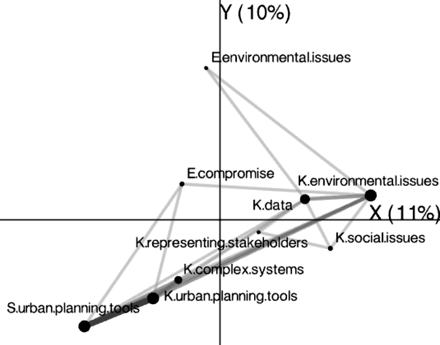
Figure 15.1. Epistemic network of a high school stu- Figure 15.2. Epistemic network of a high school
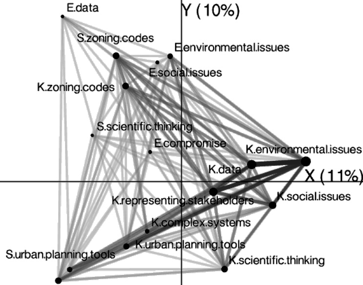
dent (Student A) representing the structure of cog- student (Student B) representing the cognitive con-
nitive connections the student made while solving a nections the student made while solving a simulated
simulated urban redevelopment problem. Percent- urban redevelopment problem.
ages in parentheses indicate the total variance in the
model accounted for by each dimension.the integra-
tion of multiple sources of data.
CHAPTER 15 EPISTEMIC NETWORK ANALYSIS: A WORKED EXAMPLE OF THEORY-BASED LEARNING ANALYTICS PG 179
As discussed above, epistemic frame theory suggests planning conventions — and the use of zoning codes.
that the epistemic frame of urban planning (or any We can thus compare a large number of different community of practice) is defined by how and to what networks simultaneously because centroids located extent urban planning knowledge, skills, values, and in the same part of the projection space represent other attributes are interconnected. In this example, networks with similar patterns of connections, while ENA reveals that Student B’s network is more overtly centroids located in different parts of the projection epistemic : she explained and justified her thinking in space represent networks with different patterns of the way that urban planners do, and is thus learning connections 1 . This allows us to explore any number to think like an urban planner. of research questions about students’ urban planning
What makes this comparison between Students A epistemic frames. One question we might ask of the
and B possible is that the nodes in both epistemic Land Science dataset is How do the epistemic networks networks appear in exactly the same places in the of the different student populations (college, high school,
network projection space — for these two students, and gifted high school) differ? For example, when we and for all the students in the dataset. This invariance plot the centroids of the college students and the
in node placement allows us to compare the network high school students (Figure 15.3), the two groups are
projections of different units directly, but this meth- distributed differently. To determine if the difference
od of direct comparison only works for very small is statistically significant, we can perform an inde-
numbers of networks — what if we want to compare pendent samples t test on the mean positions of the
dozens or even hundreds of networks? For example, two populations in the projection space. The college
what if we want to compare all 110 high school students students (dark) and high school students (light) are
in this dataset, or compare the high school students significantly different on both dimensions:
with the college students? ENA makes this possible x ̅ = -0.083, x ̅ = 0.115, t = -7.025, p < 0.001, Cohen's d = -0.428 College HS by representing each network as a single point in the projection space, such that each point is the y ̅ = 0.040, y ̅ = -0.045, t = 3.199, p = 0.002, Cohen's d = 0.186 centroid College HS
of the corresponding network. When the gifted and talented high school students
The centroid of a network is similar to the centre of are included in the analysis, in some respects they
mass of an object. Specifically, the centroid of a network are more similar to the college students, and in others
graph is the arithmetic mean of the edge weights of

the network model distributed according to the net-
work projection in space. The important point here is
that the centroid of an ENA network summarizes the network as a single point in the projection space that
accounts for the weighted structure of connections in
the specific arrangement of the network model.
The locations of the nodes in the network projection
are determined by an optimization routine to mini-mize, for any given network, the distance between (a)
the centroid of the network graph, and (b) the point
that represents the network under the SVD rotation.
Choosing fixed node positions to have the centroid of
a network correspond to the position of the network
in a projected space allows for characterization of the
projection space — and thus of the salient differences
among different networks in the ENA model. In this
case, we can interpret the projection space in the
following way: toward the lower left are basic pro- Figure 15.3. Centroids of college students (dark) and fessional skills, such as professional communication high school students (light) with the corresponding and use of urban planning tools; toward the right are means (squares) and confidence intervals (boxes). knowledge elements related to the specific redevel-opment problem and to knowledge of more general 1 It is possible, of course, that two networks with very different topics, such as data and scientific thinking; and toward structures of connections will share similar centroids. For example,
a network with many connections might have a centroid near the
the upper left are elements of more advanced urban origin; but the same would be true of a network that had only a few
planning thinking, especially epistemological elements connections at the far right and a few at the far left of the network
— making and justifying decisions according to urban space. For obvious reasons, no summary statistic in a dimension-
al reduction can preserve all of the information of the original
network.
PG 180 HANDBOOK OF LEARNING ANALYTICS
they are more similar to the high school students. The advanced urban planning thinking. In other words, the
mean position of the gifted high school students in the gifted high school students are somewhere between
projection space (Figure 15.4) is statistically significantly the high school and college students intellectually, but
different from both the college students and the high they are more similar to the high school students in
school students only on the first (x) dimension: their level of basic professional and interpersonal skills.
x ̅GiftedHS= 0.007, x ̅College= -0.083, t = 2.538, p = 0.013, Cohen's d=0.202 Qualitative Triangulation of ENA Network
x Models ̅ = 0.007 , x ̅ = 0.115 , t = -2.736 , p = 0.007 , Cohen's d=-0.223 GiftedHS College A key feature of ENA is the ability to trace connections
in the model back to the original data — the chats, in
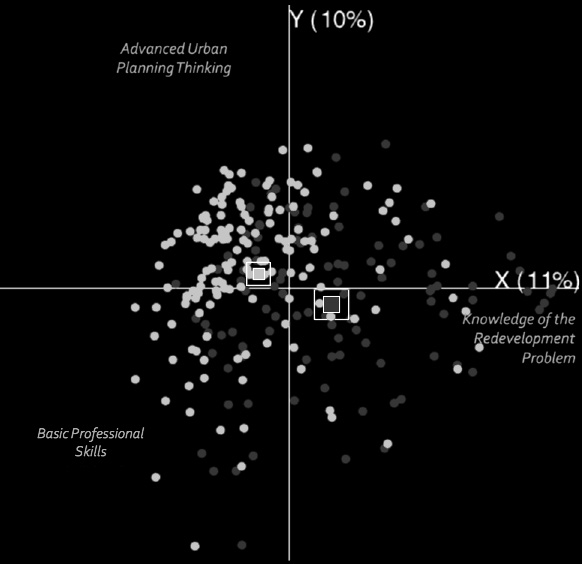
this case — on which the connections are based. By
clicking on the line connecting “epistemology of social
issues” with “knowledge of data,” we can access all the
utterances that contributed to this connection in the
network graph. Figure 15.6 shows an excerpt of the
utterances that contributed to this connection in one
college student’s epistemic network.
The text is coloured such that stanzas or utterances
containing only the first code are shown in red, those
containing only the second code are shown in blue,
those containing both codes are shown in purple, and
those containing neither code are shown in black. The
stanza (i.e., the activity) “Final Proposal Reflection,”
for example, is coloured purple because it contains
utterances coded for both E.social.issues and K.data:
Figure 15.4. Mean network positions (squares) and the first (red) utterance justifies a land-use change
confidence intervals (boxes) of the college students based on a desire to improve the city (epistemology of (left), high school students (right), and gifted high social issues), while the second utterance references school students (center).
knowledge about the effects of zoning changes on
To determine what factors account for the differences atmospheric carbon dioxide levels (knowledge of data).
among the three groups, we can compare their mean This feature of ENA allows us to close the interpretive
epistemic networks. As Figure 15.5 shows, the gifted loop (see Figure 15.7). We started with a dataset that was
high school students on average made more and coded for urban planning epistemic frame elements; we
stronger connections to elements of advanced urban used the coded data to create and visualize network
planning thinking than the high school students, but models of students’ urban planning thinking based on
not to the same extent as the college students. That the co-occurrence of frame elements; then, if we want
is, they were somewhere between the high school and to understand the basis for any of the connections in
college students with respect to complex thinking in the network models, we can return to the original
the domain. In contrast, the gifted high school students utterances. ENA thus enables quantitative analysis
seem to be more similar to the high school students in of qualitative data in such a way that the quantitative
that both populations made fewer connections than the results can be validated qualitatively. college students between basic professional skills and
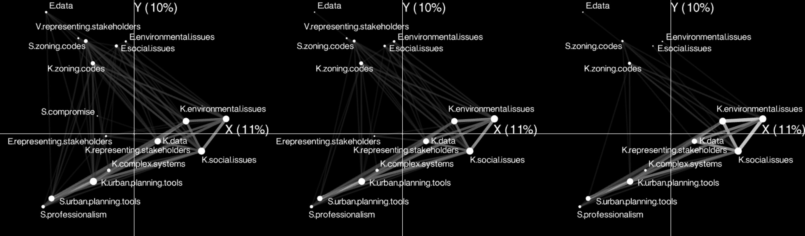
Figure 15.5. Mean epistemic networks of college students (red, left), gifted high school students (green, cen-
tre) and high school students (blue, right).
CHAPTER 15 EPISTEMIC NETWORK ANALYSIS: A WORKED EXAMPLE OF THEORY-BASED LEARNING ANALYTICS PG 181
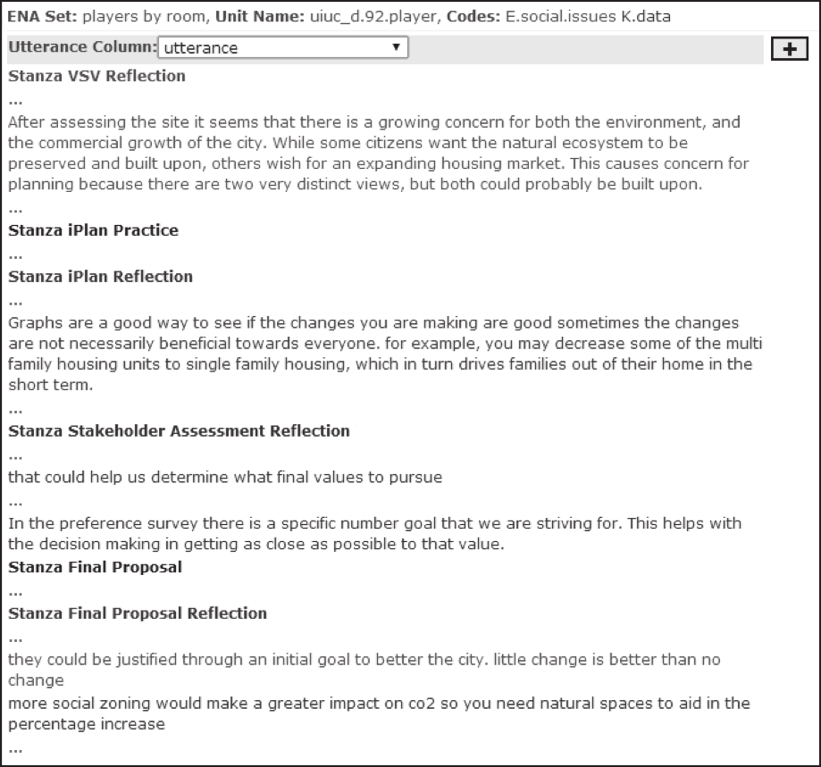
Figure 15.6. Excerpt of the chat utterances that contributed to the connection between epistemology of social
issues and knowledge of data in one college student’s epistemic network. In the ENA toolkit, the text of each
utterance is coloured to indicate whether it contains code A (red), code B (blue), both (purple), or neither
(black).
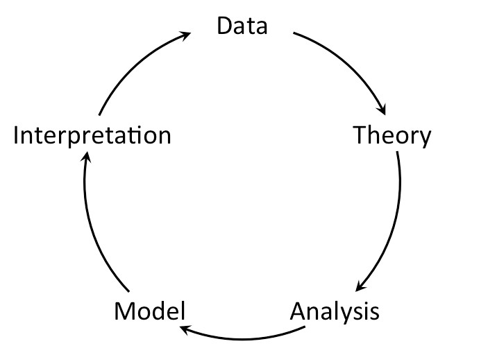
Figure 15.7. Good theory-based learning analytics “closes the interpretive loop” by making it possible to vali-
date the interpretation of a model against the original data.
DISCUSSION In the worked example presented above, we used the
theory of epistemic frames to guide our analysis of
In working through this analysis, our aim was not to student chat data in an urban planning simulation. Epistemic frame theory suggests that learning can provide an ideal example for others to emulate, nor to be characterized by the structure of connections that suggest that epistemic frame theory has any particular students make among elements of authentic practice. analytic advantages over other learning theories, but Our analytic approach, ENA, uses discourse data to to provide context for a more general discussion of construct models of student learning that are visualized methodology in learning analytics and educational as network graphs, mathematical representations of data mining. As analyses of large educational data- patterns of connections. The analysis is thus an op- sets have become more common, a key application is erationalization of a particular theoretical approach obtaining empirical evidence to “refine and extend to understanding learning. educational theories and well-known educational
phenomena, towards gaining deeper understanding One way to conceptualize the linkage between theory,
of the key factors impacting learning” (Baker & Yacef, data, and analysis is through evidence centred design 2009, p. 7). In other words, a theoretical framework (Mislevy & Riconscente, 2006; Rupp, Gustha et al., 2010;
guides the selection of variables and development of Shaffer et al., 2009). In evidence-centred design, an
hypotheses, which can lead to an explanation for why analytic framework is composed of three connected
observed phenomena are occurring. models: a student model, an evidence model, and a
task model (see Figure 8; Mislevy, Steinberg, & Almond,
PG 182 HANDBOOK OF LEARNING ANALYTICS
1999; Mislevy, 2006). The student model represents to discovery. Wired editor-in-chief Chris Anderson
the characteristics of the student that we want to (2008) has even claimed that theory-based inquiry
assess, or more generally the outcome we are trying is unnecessary in the age of big data. “Petabytes [of
to model or measure. The task model represents the data] allow us to say: ‘Correlation is enough,’” An-
activities and the data that will be used to measure derson suggests. “We can analyze the data without
the outcomes in the student model. The student (out- hypotheses about what it might show. We can throw
come) model and task (data) model are linked by an the numbers into the biggest computing clusters the
evidence model, which details the analytic tools and world has ever seen and let statistical algorithms find
techniques that will be used to warrant conclusions patterns where science cannot.” Despite the fact that
about the outcomes based on the data. most scientists would be deeply uncomfortable with
the idea that causation is unimportant, Anderson’s
approach to the analysis of big data — “to view data
mathematically first and establish a context for it
later” — is a commonly applied method in data mining.
Of course, with a sufficiently large dataset and the
Figure 15.9. ability to run it through dozens if not hundreds of Models in an ECD Assessment (adapted mathematical models, statistically significant patterns from Mislevy, 2006). will be found. But statistical significance does not imply
analytics in which each of the models (student, evi- large collections of data are ideal or even worthwhile. dence, and task) are derived from the same theoretical There is bad theory, just as there is bad empiricism — framework — in this case, epistemic frame theory (see and even good theory badly operationalized or applied. Our worked example illustrates an approach to learning imply that all theory-based approaches to analyzing conceptual or even practical significance. This does not
Figure 15.9). Nor are we suggesting that the worked example above,
or even more generally the theories and methods that
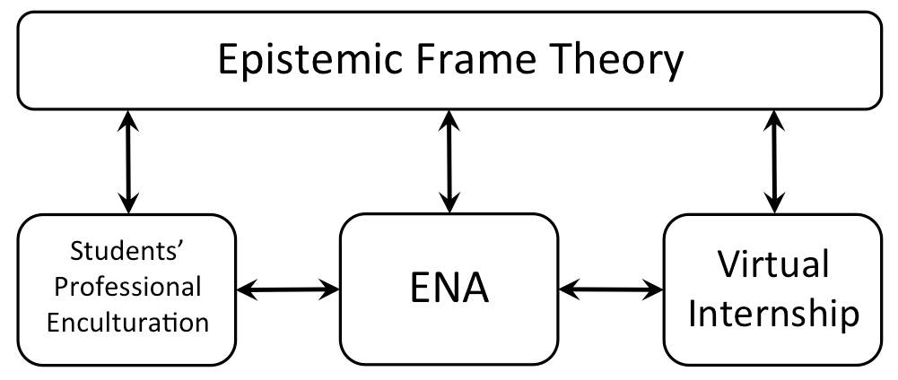
we chose, are ideal in all circumstances.
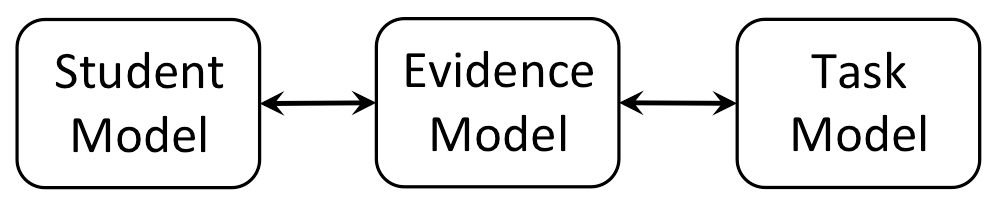
Our argument, rather, is that there are distinct advantages
to taking a theory-based approach to the analysis of
large educational datasets. The worked example above
illustrates how in theory-guided learning analytics, an
explicit theoretical framework guides the search for
understanding in a corpus of data and the selection of
Figure 15.9. Mean network positions (squares) and data, theory, and analysis thus provide the ability to appropriate analytic methods. These linkages between
confidence intervals (boxes) of the college students (left), high school students (right), and gifted high interpret the results sensibly and meaningfully.
school students (center).
ACKNOWLEDGEMENTS
guided by a particular theory of expertise and validated Foundation (DRL-0918409, DRL-0946372, DRL-1247262, DRL-1418288, DUE-0919347, DUE-1225885, EEC-1232656, empirically. But critically, the empirical grounding of EEC-1340402, REC-0347000), the MacArthur Foun- the results does not rely solely on statistical signifi context of (simulated) complex problem solving that is This work was funded in part by the National Science The result is an approach to analyzing expertise in the
models or layers of the evidentiary argument, the ni Research Foundation, and the Office of the Vice Chancellor for Research and Graduate Education at interpretation of the statistics — the meaning of the the University of Wisconsin–Madison. The opinions, model — can be verified in the original data. cance: because of the linkages between the different dation, the Spencer Foundation, the Wisconsin Alum- -
findings, and conclusions do not reflect the views of
Despite these advantages of a theory-based approach the funding agencies, co-operating institutions, or
to data analysis, there has been a significant expansion other individuals. in studies that take a radically atheoretical approach
CHAPTER 15 EPISTEMIC NETWORK ANALYSIS: A WORKED EXAMPLE OF THEORY-BASED LEARNING ANALYTICS PG 183
REFERENCES
Anderson, C. (2008). The end of theory: The data deluge makes the scientific method obsolete. Wired, 16(7).
https://www.wired.com/2008/06/pb-theory/
Andrist, S., Collier, W., Gleicher, M., Mutlu, B., & Shaffer, D. (2015). Look together: Analyzing gaze coordination
with epistemic network analysis. Frontiers in Psychology, 6(1016). journal.frontiersin.org/article/10.3389/
fpsyg.2015.01016/pdf
Arastoopour, G., Shaffer, D. W., Swiecki, Z., Ruis, A. R., & Chesler, N. C. (2016). Teaching and assessing engi-
neering design thinking with virtual internships and epistemic network analysis. International Journal of
Engineering Education, 32(2), in press.
Atkinson, R., Derry, S., Renkl, A., & Wortham, D. (2000). Learning from examples: Instructional principles from
the worked examples research. Review of Educational Research, 70(2), 181–214.
Bagley, E. A., & Shaffer, D. W. (2009). When people get in the way: Promoting civic thinking through epistemic
game play. International Journal of Gaming and Computer-Mediated Simulations, 1(1), 36–52.
Bagley, E. A., & Shaffer, D. W. (2015a). Learning in an urban and regional planning practicum: The view from
educational ethnography. Journal of Interactive Learning Research, 26(4), 369–393.
Bagley, E. A., & Shaffer, D. W. (2015b). Stop talking and type: Comparing virtual and face-to-face mentoring in
an epistemic game. Journal of Computer Assisted Learning, 31(6), 606–622.
Baker, R. S. J. d., & Yacef, K. (2009). The state of educational data mining in 2009: A review and future visions.
Journal of Educational Data Mining, 1(1), 3–17.
Chesler, N. C., Ruis, A. R., Collier, W., Swiecki, Z., Arastoopour, G., & Shaffer, D. W. (2015). A novel paradigm for
engineering education: Virtual internships with individualized mentoring and assessment of engineering
thinking. Journal of Biomechanical Engineering, 137(2), 024701:1–8.
Dorogovtsev, S. N., & Mendes, J. F. F. (2013). Evolution of networks: From biological nets to the Internet and
WWW. Oxford, UK: Oxford University Press.
Gee, J. P. (1999). An introduction to discourse analysis: Theory and method. London: Routledge.
Goffman, E. (1974). Frame analysis: An essay on the organization of experience. Cambridge, MA: Harvard Univer-
sity Press.
Goodwin, C. (1994). Professional vision. American Anthropologist, 96(3), 606–633.
i Cancho, R. F., & Solé, R. V. (2001). The small world of human language. Proceedings of the Royal Society of Lon-
don B: Biological Sciences, 268(1482), 2261–2265.
Landauer, T. K., McNamara, D. S., Dennis, S., & Kintsch, W. (2007). Handbook of latent semantic analysis. Mah-
wah, NJ: Erlbaum.
Lave, J., & Wenger, E. (1991). Situated learning: Legitimate peripheral participation. Cambridge, MA: Cambridge
University Press.
Lund, K., & Burgess, C. (1996). Producing high-dimensional semantic spaces from lexical co-occurrence. Be-
havior Research Methods, Instruments, & Computers, 28(2), 203–208.
Mislevy, R. J. (2006). Issues of structure and issues of scale in assessment from a situative/sociocultural perspec-
tive. CSE Technical Report 668. Los Angeles, CA.
Mislevy, R. J., Steinberg, L. S., & Almond, R. G. (1999). Evidence-centered assessment design. Educational Testing
Service. http://www.education.umd.edu/EDMS/mislevy/papers/ECD_overview.html
Mislevy, R., & Riconscente, M. M. (2006). Evidence-centered assessment design: Layers, concepts, and termi-
nology. In S. Downing & T. Haladyna (Eds.), Handbook of Test Development (pp. 61–90). Mahwah, NJ: Erl-
baum.
PG 184 HANDBOOK OF LEARNING ANALYTICS
Nash, P., Bagley, E. A., & Shaffer, D. W. (2012). Playing for public interest: Epistemic games as civic engagement
activities. American Educational Research Association Annual Conference (AERA). Vancouver, BC, Canada.
Nash, P., & Shaffer, D. W. (2011). Mentor modeling: The internalization of modeled professional thinking in an
epistemic game. Journal of Computer Assisted Learning, 27(2), 173–189.
Nash, P., & Shaffer, D. W. (2012). Epistemic youth development: Educational games as youth development ac-
tivities. American Educational Research Association Annual Conference (AERA). Vancouver, BC, Canada.
Nash, P., & Shaffer, D. W. (2013). Epistemic trajectories: Mentoring in a game design practicum. Instructional
Science, 41(4), 745–771.
Newman, M. E. J. (2004). Analysis of weighted networks. Physical Review E, 70(5), 56131.
Rohde, M., & Shaffer, D. W. (2004). Us, ourselves and we: Thoughts about social (self-) categorization. Associa-
tion for Computing Machinery (ACM) SigGROUP Bulletin, 24(3), 19–24.
Rupp, A. A., Sweet, S., & Choi, Y. (2010). Modeling learning trajectories with epistemic network analysis: A sim-
ulation-based investigation of a novel analytic method for epistemic games. In R. S. J. d. Baker, A. Merceron,
P. I. Pavlik Jr. (Eds.), Proceedings of the 3rd International Conference on Educational Data Mining (EDM2010),
11–13 June 2010, Pittsburgh, PA, USA (pp. 319–320). International Educational Data Mining Society.
Shaffer, D. W. (2004). Epistemic frames and islands of expertise: Learning from infusion experiences. Proceed-
ings of the 6th International Conference of the Learning Sciences (ICLS 2004): Embracing Diversity in the
Learning Sciences, 22–26 June 2004, Santa Monica, CA, USA (pp. 473–480). Mahwah, NJ: Lawrence Erlbaum.
Shaffer, D. W. (2006). Epistemic frames for epistemic games. Computers and Education, 46(3), 223–234.
Shaffer, D. W. (2007). How computer games help children learn. New York: Palgrave Macmillan.
Shaffer, D. W. (2012). Models of situated action: Computer games and the problem of transfer. In C. Steinkue-
hler, K. D. Squire, & S. A. Barab (Eds.), Games, learning, and society: Learning and meaning in the digital age
(pp. 403–431). Cambridge, UK: Cambridge University Press.
Shaffer, D. W., Collier, W., & Ruis, A. R. (2016). A tutorial on epistemic network analysis: Analyzing the structure
of connections in cognitive, social, and interaction data. Journal of Learning Analytics, 3(3), 9–45.
Shaffer, D. W., Hatfield, D. L., Svarovsky, G. N., Nash, P., Nulty, A., Bagley, E. A., … Frank, K. (2009). Epistemic
Network Analysis: A prototype for 21st century assessment of learning. International Journal of Learning
and Media, 1(1), 1–21.
Svarovsky, G. N. (2011). Exploring complex engineering learning over time with epistemic network analysis.
Journal of Pre-College Engineering Education Research, 1(2), 19–30.
Tannen, D. (1993). Framing in discourse. Oxford, UK: Oxford University Press.
Wise, A. F., & Shaffer, D. W. (2016). Why theory matters more than ever in the age of big data. Journal of Learn-
ing Analytics, 2(2), 5–13.
CHAPTER 15 EPISTEMIC NETWORK ANALYSIS: A WORKED EXAMPLE OF THEORY-BASED LEARNING ANALYTICS PG 185
APPENDIX I
URBAN PLANNING EPISTEMIC FRAME CODE SET
Code Code Description Example
Epistemology of Using social issues to justify a decision or to Because it effects their [the stakehold-ask for a justification of a decision (e.g., jobs, Social Issues ers’] business crime, housing)
Epistemology of Envi- Using environmental issues to justify a decision except why wouldn’t we think that they’d or to ask for a justification of a decision (e.g., care about social and environmental ronmental Issues runoff, pollution, animal habitats) issues?
Using the representation of stakeholders to
Epistemology of justify a decision or to ask for a justification of Try and understand what the stakehold-Representing Stake- a decision (e.g., referring to a specific stake- ers want and why. That might help you holders holders’ needs by name, referring to the needs come up with a plan that they’ll support.
of the stakeholder group)
there are three different groups L-EDC,
L-CAG, and LC-RWC and each group
Using data to justify a decision or to ask for have different recommendations. all
Epistemology of Data a justification of a decision (e.g., numbers, three of the numbers are different so it
collecting information) seems impossible to meet all three of
those numbers at the same time. which
group are we suppose to follow?
Epistemology of Using compromise to justify a decision or to You may have to make compromises, ask for a justification of a decision (e.g., balanc- because the stakeholder groups some- Compromise ing stakeholders’ needs, referring explicitly to times disagree. compromise)
Value of Represent- Utterances indicating that players should, First, let’s make sure we agree on what should not, must, must not, ought to care about ing Stakeholders the stakeholders want. representing stakeholders
Value of Complex Utterances indicating that players should, Flavian and Natalie both want to protect the enviornment in Lowell, whereas Lee should not, must, must not, ought to care about Systems and Nathanial both want to increase relationships between parts of a larger system housing and economic groth
Utterances indicating that players should, however, we may need to make com-
Value of Compromise should not, must, must not, ought to care about promises so everyone can live with the
compromise changes.
Skill of Profession- Utterance indicating that a skill related to OK. I finished the interview and I read professionalism was performed (e.g., sending alism the resources. an email)
Skill of Data Utterance indicating that a skill related to data we listened to the feedbacks and chose was performed (e.g., entering values into the the best numbers according to what TIM, referring to values of TIM output and they wanted so i think 99.9999 stakeholder assessment values)
Utterance indicating that a skill related to
Skill of Scientific scientific thinking was performed (e.g., making so we put test numbers into the TIM to Thinking hypotheses, testing hypotheses, developing see how they react?
models)
Skill of Compromise Utterance indicating that a skill related to com- however, we may need to make com- promises so everyone can live with the promise was performed changes.
Sure. iPlan is a model, so as a planner,
Identity of Urban Utterance indicating that one or one’s group when you make changes in iPlan, it Planners identifies as an urban planner shows us what might happen if you
made those changes in the real world.
Identity of Interns Utterance indicating that one or one’s group please remember we are professionals and all our chat and work that we hand identifies as interns in should reflect that.
Knowledge of Social I worked with a group that cared about Utterance referring to social issues (e.g., jobs, nests, housing, phosphorous, and Issues crime, housing) runoffs
PG 186 HANDBOOK OF LEARNING ANALYTICS
Code Code Description Example
Knowledge of Envi- I worked with the Connecticut River Utterance referring to environmental issues Water council and they cared about the ronmental Issues (e.g., runoff, pollution, animal habitats) environment.
Knowledge of Repre- Utterance referring to representing stakehold- You may have to make compromises, ers (e.g., referring to a specific stakeholders’ because the stakeholder groups some-senting Stakeholders needs by name, referring to the needs of the times disagree stakeholder group)
Knowledge of Com- Utterance referring to relationships between inorder to reduce co2 levels I had to plex Systems parts of a larger system increase the bird populations
Knowledge of Urban Utterance referring to urban planning tools so wer making one iplan? Planning Tools (e.g., iPlan, TIM, Preference Survey)
Knowledge of Zoning well if you changed a piece of land from Utterance referring to zoning codes (e.g., open open space to industrial, you create Codes space, industrial space, housing, wetlands) jobs, but the CO might increase as well
Utterance referring to data (e.g., entering values i got really positive feedback except for
Knowledge of Data into the TIM, referring to values of TIM output my runoff number. i need to reduce that
and stakeholder assessment values) a bit more
Knowledge of Scien- Utterance referring to scientific thinking (e.g., I guess it would be a model that you can making hypothesis, testing hypothesis, devel-test and observe the effects that would tific Thinking oping models) happen in the real world.
Converting land to open space/wetlands
Skill of Zoning Codes Utterance indicating that a skill related to zon- increases the bird population. That’s one of the stakeholder’s concerns, so I ing codes was performed should maybe mark more open space
and less industrial or commercial
Skill of Urban Plan- Utterance indicating that a skill related to urban To get the desired result you’d have to ning Tools planning tools was performed change a few different indicators.
CHAPTER 15 EPISTEMIC NETWORK ANALYSIS: A WORKED EXAMPLE OF THEORY-BASED LEARNING ANALYTICS PG 187
PG 188 HANDBOOK OF LEARNING ANALYTICS
Chapter 16: Multilevel Analysis of Activity and
Actors in Heterogeneous Networked Learning
Environments
Daniel D. Suthers
Department of Information and Computer Sciences, University of Hawaii, USA
DOI: 10.18608/hla17.016
ABSTRACT
Learning in today’s networked environments is often distributed across multiple media and sites, and takes place simultaneously via multiple levels of agency and processes. This is a challenge for those wishing to study learning as embedded in social networks, or simply to monitor a networked learning environment for practical purposes. Traces of activity may be fragmented across multiple logs, and the granularity at which events are recorded may not match analytic needs. This chapter describes an analytic framework, Traces, for analyzing participant interaction in one or more digital settings by computationally deriving higher levels of description. The Traces framework includes concepts for modelling interaction in sociotechnical systems, a hierarchy of models with corresponding representations, and computational methods for translating between these levels by transforming representa-tions. Potential applications include identifying sessions of interaction, key actors within sessions, relationships between actors, changes in participation over time, and groups or communities of learners.
Keywords: Interaction analysis, social network analysis, community detection, networked learning environments, Traces analytic framework
This chapter is most relevant to readers who will be levels by transforming representations. These meth-
analyzing trace data of participant interaction in one or ods have been implemented in experimental software
more digital settings (which may be of multiple media and tested on data from a heterogeneous networked
types), and wish to computationally derive higher levels learning environment.
of description of what is happening, possibly across The purpose of this chapter is to introduce the reader
multiple settings. Examples of these higher levels of to the conceptual and representational aspects of
description include identifying sessions of interaction, the framework, with brief descriptions of how it can
identifying groups or communities of learners across be used for multilevel analysis of activity and actors
sessions, characterizing interaction in terms of key in networked learning environments. Due to length
actors, and identifying relationships between actors. limitations, detailed examples and information on
The approach outlined here, the Traces framework, our implementation and research are not included1.
has been used for discovery oriented research, but can
also support hypothesis testing research that requires 1 See Joseph, Lid, and Suthers (2007) and Suthers (2006) for theo-variables at these higher levels of description, or live retical background; see Suthers, Dwyer, Medina, and Vatrapu (2010)
monitoring of production learning settings using and Suthers and Rosen (2011) for the development of our analytic
representations; see Suthers, Fusco, Schank, Chu, and Schlager
such descriptions. The Traces framework involves (2013) for community detection applications; see Suthers (2015) for
a set of concepts for thinking about and modelling an example of how one might combine these capabilities into an
interaction in sociotechnical systems, a hierarchy activity reporter for monitoring a large networked learning envi-
ronment. Suthers et al. (2013) and Suthers (2015) describe the data
of models with corresponding representations, and from the Tapped In network of educators we used as a case study in developing this framework. Papers are available at http://lilt.ics. computational methods for translating between these hawaii.edu.
CHAPTER 16 MULTILEVEL ANALYSIS OF ACTIVITY & ACTORS IN HETEROGENOUS NETWORKED LEARNING ENVIRONMENTS PG 189
MOTIVATIONS arise from how myriad individual acts are aggregated
from phenomena such as the emergence of Web 2.0 that to understand phenomena such as actor relation- (O’Reilly, 2005) and its adoption by educational practi- ships or community structures, we also need to look tioners and learners for formal and informal learning, at the stream of individual acts out of which these Motivations for the Traces framework derive in part (Latour, 2005), and the methodological implication and influence each other, possibly mediated by artifacts
including more recent interest in MOOCs (massive phenomena are constructed. Thus, understanding open online courses) (Allen & Seaman, 2013). In these learning in its full richness requires data that reveal environments, learning is distributed across time and the relationships between individual and collective virtual place (media), and learners may participate in levels of agency and potentially coordinating multiple multiple settings. We focus on networked learning theories and methods of analysis (de Laat, 2006; Monge environments (NLE), which we define to include any & Contractor, 2003; Suthers, Lund, Rosé, Teplovs, & sociotechnical network that involves mediated interac- Law, 2013). tion between participants (hence “networked”) in which
learning might take place, including for example online TRACES ANALYTIC FRAMEWORK communities (Barab, Kling, & Gray, 2004; Renninger
& Shumar, 2002) and cMOOCs (connectivist MOOCs)
(Siemens, 2013). The framework is not applicable to This section covers the levels of description and cor-
isolated activity by individuals, such as “xMOOCs” in responding representations underlying the Traces
which large numbers of individuals interact primarily analytic framework with the next section discussing
with courseware or tutoring systems. potential applications. To preview the approach, logs
networked environments are often distributed across derive a series of representations that support levels multiple media and sites. As a result, traces of such of analysis of interaction and of relationships. Three activity may be fragmented across multiple logs. For kinds of graphs model interaction. Learning and knowledge creation activities in these abstract transcript of events, which is then used to of events are abstracted and merged into a single
formats and locations, disassociating actions that for pair of events to model how each given act may be participants were part of a single unified activity. Inte - “taking up” prior acts. Session graphs are abstractions gration of multiple sources of trace data into a single of uptake graphs: they cluster events into spatio-tem- transcript may be needed to reassemble data on the poral sessions with uptake relationships between interaction. Also, the granularity at which events are sessions. Relationships between actors and artifacts recorded may not match analytic needs. For example, are abstracted from interaction graphs to obtain media-level events may be the wrong ontology for sociograms and a special kind of affiliation network analyses concerned with relationships between acts, that we call associograms . The representations used persons, and/or media rather than individual acts. at various levels of analysis are shown schematically clude a mashup of threaded discussion, synchronous sage are observably related to prior events by temporal chats, wikis, microblogging, whiteboards, profiles, and and spatial proximity and by content. Uptake graphs resource sharing. Events may be logged in different aggregate the multiple contingencies between each example, networked learning environments may in- record how events such as chatting or posting a mes- Contingency graphs
Translation from log file representations to other in Figure 16.1. levels of description may be required to begin the About Transcript primary analysis. We begin with various traces of activity (such as log Derivation of higher levels of description is also mo-files of events) that provide the source data (Figure tivated by theoretical accounts of learning as a com-16.1a). These are parsed, using necessarily system-spe-plex and multilevel phenomenon. Theories of how cific methods, into an event stream, as shown in the learning takes place in social settings vary regarding second level (boxes in Figure 16.1b). Events can come the agent of learning, including individual, small group, from different media (e.g., chats, threaded discussion, network, or community; and in the process of learn-social media), be of various types (e.g., enter chat, exit ing, including for example information transfer, argu-chat, chat contribution, post message, read message, mentation, intersubjective meaning-making, shifts in download file). They should be annotated with time participation and identity, and accretion of cultural stamps, actors, content (e.g., chat content), and locations capital (Suthers, 2006). Learning takes place simul-(e.g., chat rooms) involved in the event where relevant. taneously at all of these levels of agency and with all The result is an abstract transcript of the distributed of these processes, potentially at multiple time scales activities. By translating from system-specific repre-(Lemke, 2000). A multi-level approach is also motivat-sentations of activity to the abstract transcript, we ed by our theoretical stance that social regularities integrate hitherto fragmented records of activity into
PG 190 HANDBOOK OF LEARNING ANALYTICS
one analytic artifact. The resulting contingency graph represents the first
Contingency Graph layer of abstraction (Figure 16.1b), the contextualized action model. In this graph, vertices are events, and We then compute contingencies between events (arrows contingencies are typed edges between vertices in Figure 16.1b), to produce a model of how acts are (example types were just described). There may be mutually contextualized. Human action is contingent multiple edges between any two vertices (e.g., two upon its setting in diverse ways: computational meth- proximal events by the same actor with lexical overlap ods can capture some of the contingencies amenable will have at least three contingencies between them). to automated detection. For example, a contingency
called proximal event reflects the likelihood that events Uptake Graph occurring close together in time and space are related. It is necessary to collapse the multiple edges between
In analyzing quasi-synchronous chat, contingencies are vertices into single edges for two reasons. First, most
installed to prior contributions in the same room that graph algorithms assume at most only one edge be-
occur within an adjustable time window but not too tween any two vertices. Second, we are interested in
recently. Address and reply contingencies are installed uptake, the relationship between events in which a between an utterance mentioning a user by name and human action takes up some aspects of prior events
the last contribution and next contribution by that par- as being significant in some manner. Being the fun-
ticipant within a time window, using a parser/matcher damental building block of interaction (Suthers et al.,
of user IDs to first names. Same actor contingencies 2010), uptake is a basic unit for analysis of how learning
are installed to prior acts of a participant over a larger takes place in and through interaction. Replying to prior
time window to reflect the continuity of an agent’s contributions in chats and discussions are examples
purpose. Overlap in content as represented by sets of uptake, but uptake is not limited to replies: one
of lexical stems is used to produce a lexical overlap can appropriate a prior actor’s contribution in other
contingency weighted by the number of overlapping ways. Uptake is not specific to a medium: it can occur
stems. Further contingencies could be computed in different media, and cross media (Suthers et al.,
based on natural language processing methods for 2010). Contingencies are of interest only as collective
analysis of interactional structure (Rosé et al., 2008). evidence for uptake, so we abstract the contingency
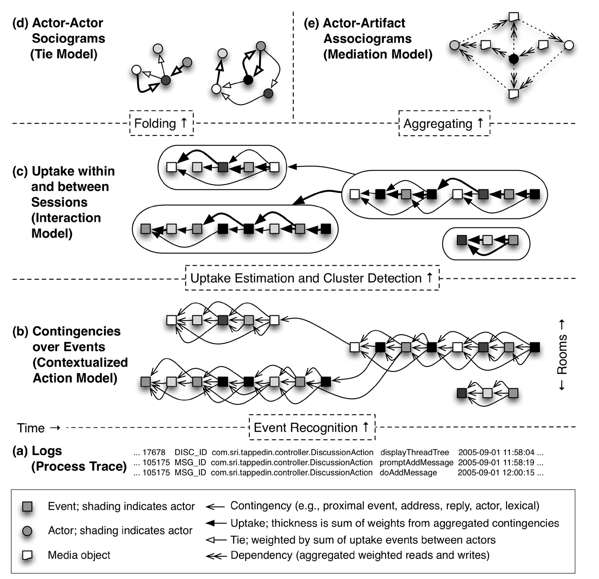
Figure 16.1. Levels of analysis and their representations.
CHAPTER 16 MULTILEVEL ANALYSIS OF ACTIVITY & ACTORS IN HETEROGENOUS NETWORKED LEARNING ENVIRONMENTS PG 191
graph to an uptake graph. can be analyzed using conventional social network
As shown in Figure 16.1c, uptake graphs are similar to analysis methods, for example centrality metrics to identify key actors. contingency graphs in that they also relate events, but
they collect together bundles of the various types of Associograms contingencies between a given pair of vertices into a The sociogram’s singular tie between two actors
single graph edge, weighted by a combination of the summarizes yet obscures the many interactions be-
strength of evidence in the contingencies and option- tween the actors on which the tie is based, as well as
ally filtering out low-weighted bundles (Suthers, 2015). the media through which they interacted. To retain
Different weights can be used for different purposes the advantages of graph computations on a summary
(e.g., finding sessions, analyzing the interactional representation while retaining some of the information
structure of sessions, constructing sociograms). about how the actors interacted, we use bipartite,
Importantly, we do not throw away the contingency multimodal, directed weighted graphs, similar to
weights: these are retained in a vector to summarize but more specific than affiliation networks. They are
the nature of the uptake relation, and, once aggregated bipartite because all edges go strictly between actors
into sociograms, of the tie between actors. We can and artifacts and multimodal because the artifact
do several interesting things with uptake graphs, but nodes can be categorized into the different kinds
first we usually identify portions of the graph that we of mediators that they represent; for example, chat
want to handle separately, as they represent sessions. rooms, discussion forums, and files. Directed edges
Sessions (arcs) indicate read/write relations or their analogs:
Clusters of events in spatio-temporal proximity are an arc goes from an actor to an artifact if the actor has
computed to identify sessions (indicated by rounded read that artifact (e.g., opened a discussion message
containers in Figure 16.1c). Methods for doing so are or was present when someone chatted), and from an
discussed later. For intra-session analysis, the uptake artifact to an actor if the actor modified the artifact
graph for a session is isolated. Several paths are pos- (e.g., posted a discussion message or chatted). The
sible from here. For example, the sequential structure direction of the arc indicates a form of dependency,
of the interaction can be micro-analyzed to under the reverse direction of information flow. Weights on -
stand the development of group accomplishments: the arcs indicate the number of events that took place
this analysis may be difficult to automate. Methods between the corresponding actor/artifact pair in the
for graph structure analysis can be applied, such as indicated direction. Since “affiliation network” is not
cluster detection, or tracing out thematic threads specific enough and “bipartite multimodal directed
(Trausan-Matu & Rebedea, 2010). For inter-session weighted graph” is too long, to highlight their unique
analysis, we collapse each session into a single vertex nature we call these graphs associograms (Suthers &
representing the session, but retain the inter-session Rosen, 2011). This term is inspired by Latour’s (2005)
uptake links. (For example, there are four sessions in concept that social phenomena emerge from dy-
Figure 16.1c and two inter-session uptakes.) These namic networks of associations between human and
inter-session links indicate potential influences across non-human actors. time and space from one session to another. For example, Figure 16.2 shows a portion of an as-
Sociograms sociogram from the Tapped In educator network,
Sociotechnical networks are commonly studied using
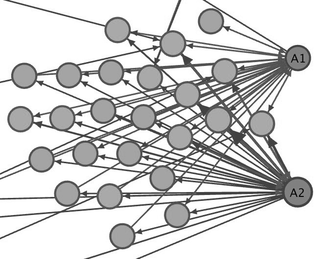
the methods of social network analysis, using socio-gram or sociomatrix representations of the presence or strength of ties between human actors, and graph
algorithms that leverage the power of these repre-
sentations to expose both local (ego-centric) and
non-local (network) social structures (Newman, 2010;
Wasserman & Faust, 1994). Either within or across
sessions, we can fold uptake graphs into actor–actor
sociograms (directed weighted graphs, Figure 16.1d). The
tie strength between actors is the sum of the strength
of uptake between their contributions. If we want to
be stricter about the evidence for relations between
the two actors, we may use a different weighting that Figure 16.2. An associogram from the Tapped In data.
downplays proximity and emphasizes direct evidence Actors represented by nodes on the right have read and written to the files and discussions represented of orientation to the other actor. These sociograms by differently coloured nodes on the left.
PG 192 HANDBOOK OF LEARNING ANALYTICS
representing asymmetric interaction between two construct a contingency graph (it can be constructed
actors, with one actor writing most of the files and later for other purposes). Activity is tracked in each
another writing to most of the discussions. A sociogram room, and a new session ID is assigned to the room
consisting of a single link between these two actors every time there is a gap of S seconds of no activity. S
would fail to capture this information. The associogram is a tunable parameter, such as 240 seconds. Suthers
retains information about the distribution of activity (2017) discusses these options further.
simultaneously tell us how both human actors and We might be interested in non-local influences between artifacts participate in generating the larger phenomena across media. Network analytic methods can then Tracing Influences Between Sessions
actors and the media through which they are tech- into weighted uptake relations between sessions (Figure nologically embedded (Licoppe & Smoreda, 2005). 16.1c). An example session graph from Suthers (2015) is Although interaction is not directly represented, the shown in Figure 16.3. Some sessions have more heavily of interest, such as the presence of communities of tween events in different sessions can be aggregated sessions across time and space. Uptake relations be-
associogram also provides a bridge to the interaction weighted links between them. Reading the edges in level of analysis (Suthers et al., 2010), allowing us to reverse order (uptake points backwards in time), we retrieve activity in specific media settings. see that session 737 (in the Reception room) influenced
session 755 (Teaching Teachers room), which in turn
EXAMPLES OF ANALYTIC OPTIONS influenced 848 (NTraining room). Examination of the
rooms and participants involved showed that many
The Traces framework provides multiple pathways for participants logged into or met in the Reception room,
analysis. In the following sections we illustrate various then went to Teaching Teachers for session 755 on
analyses that can be supported by this framework mentoring in the schools. Then the facilitator of 755
(Suthers & Dwyer, 2015). These examples are from announced that she had another session on teacher
analyses we have done with our experimental software training in another room: several participants in the
implementation. mentoring session followed her to NTraining for session
848. Further details are in Suthers (2015).
Identifying Sessions of Interaction
Different options exist for detection of sessions in Identifying Actor Roles and Tracking interaction graphs. If interaction is not clearly demar- Change in Participation Over Time
cated by periods of non-interaction and one wishes to Educators or NLE facilitators may want to identify the key participants in their online learning communities, discover clusters of high activity, we have found that whether for assessment in formal educational settings, cohesive subgraph detection or “community detection” to encourage volunteers in participant-driven settings, algorithms (Fortunato, 2010) such as modularity par- or for research purposes such as to study what drives titioning (Blondel, Guillaume, Lambiotte, & Lefebvre, key participants. It is also important to know who is 2008) applied to uptake graphs are useful (Suthers, disengaged. Some of these needs can be met through 2017). If (as in our Tapped In data) activity is distributed social network analysis. We can generate sociograms across rooms and the activity within a room almost for any granularity of the uptake graph (e.g., within always has periods of non-activity between sessions, a session, or across sessions over a time period) by sessions can be identified efficiently without needing to folding uptake relations between events into ties
between their actors. For example, a facilitator might
want to see a sociogram summarizing actor activity
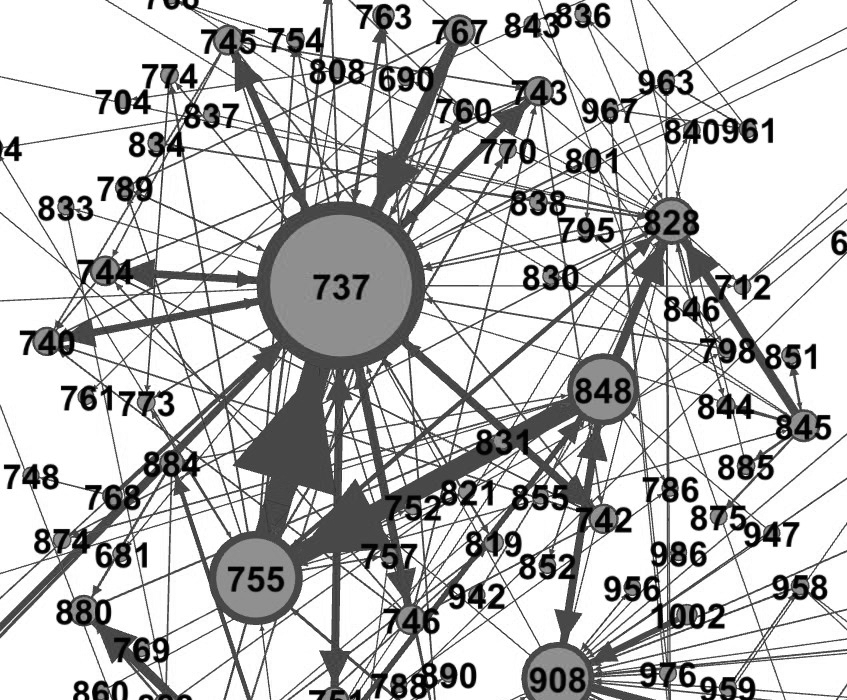
in session 755, the session on mentoring teachers led
by MT. The sociogram is shown in Figure 16.4. Node
size is weighted in-degree, discussed below.
Sociograms add information over mere counts of num-
ber of contributions because some sociometrics are
sensitive to the network context of nodes representing
actors. For example, weighted in-degree indicates the
extent to which other acts have contingencies to and
hence potentially took up a given act. Aggregating these
acts for an actor is an estimate of how much an actor’s
contributions are taken up by others. This metric is
Figure 16.3. Close-up of session graph with in- sensitive to both the level of activity of the actor and
ter-session uptake. Node and edge size is weighted that activity’s relation to others’ activity. Weighted degree.
CHAPTER 16 MULTILEVEL ANALYSIS OF ACTIVITY & ACTORS IN HETEROGENOUS NETWORKED LEARNING ENVIRONMENTS PG 193
out-degree is an estimate of how much an actor takes guide), and for those who return for periodic events
up others’ contributions. Eigenvector centrality (and will exhibit a regular spiking structure (e.g., MT, who
its variants such as PageRank and Hubs and Authori- facilitated monthly events). Steadily increasing or
ties) is a non-local metric that takes into account the decreasing metrics indicate persons becoming more
centrality of one’s neighbours (Newman, 2010, p. 169), or less engaged, respectively (possibly DA), and single
indicating the extent to which an actor is connected spikes indicate a one-off visit (AP).
to others who are themselves central. Betweeness Superficially, these analyses appear similar to the centrality is an indicator of actors who potentially many sociometric analyses found in the literature, so play brokerage roles in the network: high betweeness we should highlight what the Traces framework has centrality means that the node representing an actor added. Our implementation of the Traces framework is on relatively more shortest paths between other derived these latent ties from automated interaction actors (Newman, 2010, p. 185), so potentially controls analysis of streams of events, by identifying and then information flow or mediates contact between these aggregating multiple contingencies between events, actors. Betweeness is of particular interest when and then folding the resulting uptake relations between examining activity across sessions: different sessions events into an actor–actor graph. This has significant generally have different actors, so an actor attending advantages over, for example, manual content analy - multiple sessions will have high betweeness. sis or the use of surveys to derive tie data, which are
labour intensive, or reliance on explicit “friending”
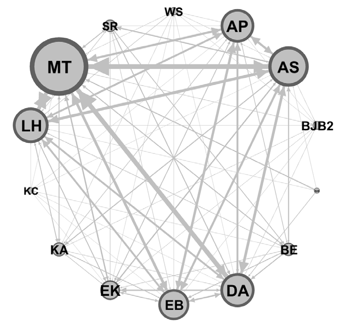
relations: surveys and friend links may not reflect the
latent ties in actual interaction between the persons
in question. Another advantage is described below.
Identifying Relationships Between Actors
The Traces framework derives ties between actors
by aggregating multiple contingencies between
their contributions. The contingencies indicate the
qualitative nature of the relationship between these
contributions, e.g., being close in time and space,
using the same words, and addressing another actor
by name. When contingencies are aggregated into
uptake relations, we keep track of what each type of
Figure 16.4. contingency contributed to the uptake relation. This Sociogram from a Tapped In session
showing prominent actors and their interactions. record keeping is continued when folding uptakes
into ties, so that for any given pair of actors we have a
vector of weights that provides information about the
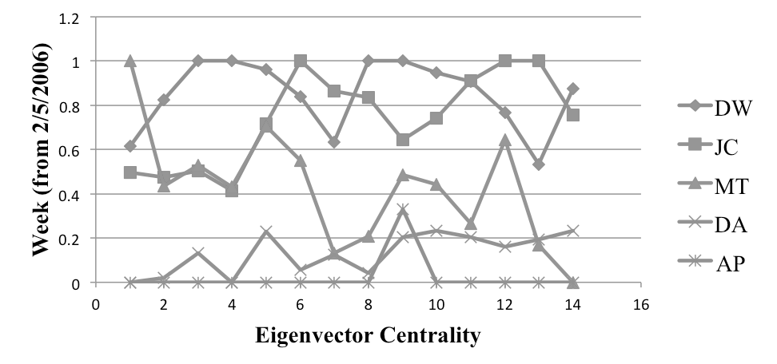
nature of the relationship in terms of the underlying
contingencies. For example, we can quantify how the
relationship between DA and MT was enacted over a
given time period in terms of how often they chatted
in proximity to each other, the lexical overlap of their
chat contents, and how often they addressed each
other by name in each direction. Relational information
Figure 16.5. might be of interest to educators or researchers who Eigenvector Centrality of several actors are managing collaborative learning activities amongst in Tapped In over a 14 week period. students, or even to examine one’s own relations to
students. The Traces framework makes this possible by
Analyses on longer time scales may be of interest to retaining information about the interactional origins
researchers as well as practicing educators. One can of ties (see Suthers, 2015). trace the development of actors’ roles over time in
terms of changes in their sociometrics. For example, Identifying Groups or Communities of
one might aggregate uptake for all actors in the net- Learners Across Sessions
work into sociograms at one week intervals, and then In the network analysis literature, “community detec-
graph the sociometrics on a weekly basis, looking for tion” refers to finding subgraphs of mutually associated
trends. One can see some of these trends in Figure vertices under graph-theoretic definitions, rather than
16.5, taken from Suthers (2015). The plots for sus to sociological concepts of community (e.g., Cohen, -
taining actors will remain high (e.g., DW, a volunteer 1985; Tönnies, 2001). However, we can use the former
PG 194 HANDBOOK OF LEARNING ANALYTICS
as evidence for the latter, particularly when studying and then provides a linked abstraction hierarchy
networked societies (Castells, 2001; Wellman et al., 2003). using observable contingencies between events to
A good graph-theoretic definition should capture the build models of interaction and ties. Contingencies
intuition that individuals in a sociological community are applied to events in the abstract transcript to
are more closely associated with each other than they produce a contingency graph. Contingencies are then
are with individuals outside of their community. Al- aggregated into uptake between the same events.
gorithms based on the modularity metric are widely Uptake that crosses partitions can be used to identify
used in the literature for this purpose. The modularity influences across space and time, and uptake within
metric (Newman, 2010, p. 224) compares the density partitions can be analyzed to study the interactional
of weighted links inside (non-overlapping) partitions structure of a session. Uptake graphs can be folded
of vertices to weighted links expected in a random into networks where nodes are actors rather than
graph, to find highly modular partitions. Finding the events, to which sociometrics are applied. Events
best possible partition under a modularity metric is can also be folded into actor–artifact networks or
computationally impractical on large networks, but a “associograms” that capture how actors are asso-
fast algorithm known as the Louvain method (Blondel ciated with each other via mutual read and write of
et al., 2008) has been shown to give good approxima- media objects. The framework addresses the need to
tions. An example is shown in Figure 16.6. understand how aggregate phenomena (e.g., “ties,”
“roles,” and “communities”) are both produced by and
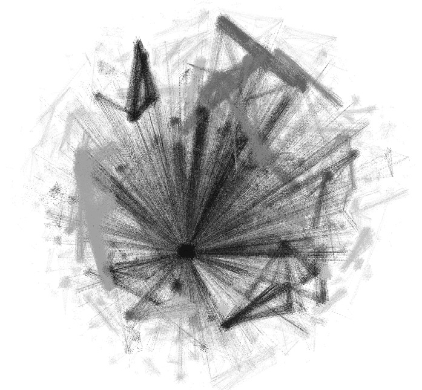
provide the setting of specific interactional events. It
has been implemented as experimental software and
tested with data from a heterogeneous networked
learning community.
Other authors have noted the need to combine multiple
forms of analysis, including specifically social network
analysis in networked learning environments. For
example, de Laat, Lally, Lipponen, and Simons (2007)
and Martínez and colleagues (2006) showed the utility
of combining social network analysis with various
qualitative and quantitative methods in the study
of participation networks. Others have constructed
Figure 16.6. and folded interaction graphs into sociograms of ties OpenOrd visualization of partitions
found in combined associogram for actors associat- between actors. For example, Rosen and Corbit (2009)
ed via chats, discussions, and files in Tapped In. constructed graphs based on temporal proximity,
and Haythornthwaite and Gruzd (2008) describe
preliminary work in extracting interaction relations
Once partitions have been obtained, one can charac- from references and names. The Traces framework is
terize the community structure of the network in in the same spirit, but is arguably more mature. We
several ways. Quantitative summaries can include the consider multiple kinds of relations between events
distribution of partition size (e.g., is there primarily to provide a richer basis for session identification and
one large community, or does the network contain subsequent analysis of activity and actors within ses-
many small and a few large communities?) and distri- sions, and have automated these analyses and tested
butions of parameters across sizes (e.g., how does them on a rich historical data corpus where diverse
activity per actor relate to community size, and how participants interacted in an environment exhibiting
does the use of different media vary with community many features of today’s distributed interaction.
size?). Qualitative characterization of community Work by Trausan-Matu on “polyphonic analysis”
structure requires examining the attributes of actors (Trausan-Matu & Rebedea, 2010) has affinities to our
and the media through which they interact to interpret use of multiple contingencies, but has only recently
each partition. See Suthers, Fusco, et al. (2013) for been abstracted to higher levels of analysis. A thesis
examples of both quantitative and qualitative analyses by Charles (2013) has provided an alternative imple-
of the partitioning shown in Figure 16.6. mentation of our approach and extended the set of
SUMMARY AND RELATED WORK contingencies. Our approach dovetails with work
that applies natural language processing methods
This chapter introduced the Traces analytic framework, for analysis of interactional structure, and indeed
which integrates traces of activity distributed across rules for generating additional contingencies could be
media, places, and time into an abstract transcript, derived from such research. Although our software is
CHAPTER 16 MULTILEVEL ANALYSIS OF ACTIVITY & ACTORS IN HETEROGENOUS NETWORKED LEARNING ENVIRONMENTS PG 195 not presently in a form suitable for distribution, the ACKNOWLEDGMENTS
the reader as a way to organize their own analyses Nathan Dwyer, Kar-Hai Chu, Richard Medina, Devan author hopes that the Traces framework can serve
of heterogeneous networked learning environments Rosen, and Ravi Vatrapu co-developed the ideas behind this work. Nathan Dwyer and Kar-Hai Chu also wrote and other sociotechnical systems. the core software implementation. Mark Schlager, Patti
Schank, and Judi Fusco shared data and expertise. This
work was partially supported by NSF Award 0943147.
REFERENCES
Allen, I. E., & Seaman, J. (2013). Changing course: Ten years of tracking online education in the United States.
Babson Survey Research Group. http://www.onlinelearningsurvey.com/reports/changingcourse.pdf
Barab, S. A., Kling, R., & Gray, J. H. (2004). Designing for virtual communities in the service of learning. New
York: Cambridge University Press.
Blondel, V. D., Guillaume, J.-L., Lambiotte, R., & Lefebvre, E. (2008). Fast unfolding of communities in large net-
works. Journal of Statistical Mechanics: Theory and Experiment. doi:10.1088/1742-5468/2008/10/P10008
Castells, M. (2001). The Internet galaxy: Reflections on the Internet, business, and society. Oxford, UK: Oxford
University Press.
Charles, C. (2013). Analysis of communication flow in online chats. Unpublished Master’s Thesis, University of
Duisburg-Essen, Duisburg, Germany. (2245897)
Cohen, A. P. (1985). The symbolic construction of community. New York: Routledge.
de Laat, M. (2006). Networked learning. Apeldoorn, Netherlands: Politie Academie.
de Laat, M., Lally, V., Lipponen, L., & Simons, R.-J. (2007). Investigating patterns of interaction in networked
learning and computer-supported collaborative learning: A role for social network analysis. International
Journal of Computer Supported Collaborative Learning, 2(1), 87–103.
Fortunato, S. (2010). Community detection in graphs. Physics Reports, 486, 75–174.
Haythornthwaite, C., & Gruzd, A. (2008). Analyzing networked learning texts. In V. Hodgson, C. Jones, T. Kar-
gidis, D. McConnell, S. Retalis, D. Stamatis, & M. Zenios (Eds.), Proceedings of the 6th International Confer-
ence on Networked Learning (NLC 2008), 5–6 May 2008, Halkidiki, Greece (pp. 136–143).
Joseph, S., Lid, V., & Suthers, D. D. (2007). Transcendent communities. In C. Chinn, G. Erkens, & S. Puntam-
bekar (Eds.), Proceedings of the 7th International Conference on Computer-Supported Collaborative Learning
(CSCL 2007), 16–21 July 2007, New Brunswick, NJ, USA (pp. 317–319). International Society of the Learning
Sciences.
Latour, B. (2005). Reassembling the social: An introduction to actor-network-theory. New York: Oxford Univer-
sity Press.
Lemke, J. L. (2000). Across the scales of time: Artifacts, activities, and meanings in ecosocial systems. Mind,
Culture & Activity, 7(4), 273–290.
Licoppe, C., & Smoreda, Z. (2005). Are social networks technologically embedded? How networks are changing
today with changes in communication technology. Social Networks, 27(4), 317–335.
Martínez, A., Dimitriadis, Y., Gómez-Sánchez, E., Rubia-Avi, B., Jorrín-Abellán, I., & Marcos, J. A. (2006). Study-
ing participation networks in collaboration using mixed methods. International Journal of Computer-Sup-
ported Collaborative Learning, 1(3), 383–408.
Monge, P. R., & Contractor, N. S. (2003). Theories of communication networks. Oxford, UK: Oxford University
Press.
Newman, M. E. J. (2010). Networks: An introduction. Oxford, UK: Oxford University Press.
PG 196 HANDBOOK OF LEARNING ANALYTICS
O’Reilly, T. (2005). What is Web 2.0: Design patterns and business models for the next generation of software.
http://www.oreillynet.com/pub/a/oreilly/tim/news/2005/09/30/what-is-web-20.html
Renninger, K. A., & Shumar, W. (2002). Building virtual communities: Learning and change in cyberspace. Cam-
bridge, UK: Cambridge University Press.
Rosé, C. P., Wang, Y.-C., Cui, Y., Arguello, J., Stegmann, K., Weinberger, A., & Fischer, F. (2008). Analyzing
collaborative learning processes automatically: Exploiting the advances of computational linguistics in
computer-supported collaborative learning. International Journal of Computer-Supported Collaborative
Learning, 3(3), 237–271. doi:10.1007/s11412-007-9034-0
Rosen, D., & Corbit, M. (2009). Social network analysis in virtual environments. Proceedings of the 20th ACM
conference on Hypertext and Hypermedia (HT ’09), 29 June–1 July 2009, Torino, Italy (pp. 317–322). New
York: ACM.
Siemens, G. (2013). Massive open online courses: Innovation in education? In R. McGreal, W. Kinuthia, S.
Marshall, & T. McNamara (Eds.), Open educational resources: Innovation, research and practice (pp. 5–15).
Vancouver, BC: Commonwealth of Learning and Athabasca University.
Suthers, D. D. (2006). Technology affordances for intersubjective meaning-making: A research agenda for
CSCL. International Journal of Computer-Supported Collaborative Learning, 1(3), 315–337.
Suthers, D. D. (2015). From micro-contingencies to network-level phenomena: Multilevel analysis of activity
and actors in heterogeneous networked learning environments. Proceedings of the 5th International Con-
ference on Learning Analytics and Knowledge (LAK 'LA), 16–20 March, Poughkeepsie, NY, USA (pp. 368–377).
New York: ACM.
Suthers, D. D. (2017). Applications of cohesive subgraph detection algorithms to analyzing socio-technical net-
works. Proceedings of the 50th Hawaii International Conference on System Sciences (HICSS-50), 4–7 January
2017, Waikoloa Village, HI, USA (CD-ROM). IEEE Computer Society.
Suthers, D. D., & Dwyer, N. (2015). Identifying uptake, sessions, and key actors in a socio-technical network.
Proceedings of the 44th Hawaii International Conference on System Sciences (HICSS-44), 5–8 January 2011,
Kauai, Hawai’i (CD-ROM). IEEE Computer Society.
Suthers, D. D., Dwyer, N., Medina, R., & Vatrapu, R. (2010). A framework for conceptualizing, representing, and
analyzing distributed interaction. International Journal of Computer Supported Collaborative Learning, 5(1),
5–42. doi:10.1007/s11412-009-9081-9
Suthers, D. D., Fusco, J., Schank, P., Chu, K.-H., & Schlager, M. (2013). Discovery of community structures in a
heterogeneous professional online network. Proceedings of the 46th Hawaii International Conference on the
System Sciences (HICSS-46), 7–10 January 2013, Maui, HI, USA (CD-ROM). IEEE Computer Society.
Suthers, D. D., Lund, K., Rosé, C. P., Teplovs, C., & Law, N. (2013). Productive multivocality in the analysis of
group interactions. Springer.
Suthers, D. D., & Rosen, D. (2011). A unified framework for multi-level analysis of distributed learning. In G.
Conole, D. Gašević, P. Long, & G. Siemens (Eds.), Proceedings of the 1st International Conference on Learn-
ing Analytics and Knowledge (LAK 'LA), 27 February–1 March 2011, Banff, AB, Canada (pp. 64–74). New York:
ACM.
Tönnies, F. (2001). Community and civil society (J. Harris & M. Hollis, Trans. from Gemeinschaft und Ge-
sellschaft, 1887) Cambridge, UK: Cambridge University Press.
Trausan-Matu, S., & Rebedea, T. (2010). A polyphonic model and system for inter-animation analysis in chat
conversations with multiple participants. In A. Gelbukh (Ed.), Computational linguistics and intelligent text
processing (pp. 354–363). Springer.
Wasserman, S., & Faust, K. (1994). Social network analysis: Methods and applications. New York: Cambridge
University Press.
Wellman, B., Quan-Haase, A., Boase, J., Chen, W., Hampton, K., Diaz, I., & Miyata, K. (2003). The social affor-
dances of the Internet for networked individualism. Journal of Computer-Mediated Communication, 8(3).
doi:10.1111/j.1083-6101.2003.tb00216.x
CHAPTER 16 MULTILEVEL ANALYSIS OF ACTIVITY & ACTORS IN HETEROGENOUS NETWORKED LEARNING ENVIRONMENTS PG 197
PG 198 HANDBOOK OF LEARNING ANALYTICS
Chapter 17: Data Mining Large-Scale
Formative Writing
Peter W. Foltz1,2, Mark Rosenstein2
1 Institute of Cognitive Science, University of Colorado, USA 2Advanced Computing and Data Science Laboratory, Pearson, USA
DOI: 10.18608/hla17.017
ABSTRACT
Student writing in digital educational environments can provide a wealth of information about the processes involved in learning to write as well as evidence for the impact of the digital environment on those processes. Developing writing skills is highly dependent on students having opportunities to practice, most particularly when they are supported with frequent feedback and are taught strategies for planning, revising, and editing their compositions. Formative systems incorporating automated writing scoring provide the opportunities for students to write, receive feedback, and then revise essays in a timely iterative cycle. This chapter provides an analysis of a large-scale formative writing system using over a million student essays written in response to several hundred pre-defined prompts used to improve educational outcomes, better understand the role of feedback in writing, drive improvements in formative technology, and design better kinds of feedback and scaffolding to support students in the writing process.
Keywords: Writing, formative feedback, automated scoring, mixed effects modelling, vi-sualization, writing analytics
Writing is an integral part of educational practice, knowledge, expressive skills, and language ability. Thus,
where it serves both as a means to train students writing affords making multiple inferences about the
how to express knowledge and skills as well as to nature of student performance based on the textual
help improve their knowledge. It is well established information.
that in order to become a good writer, students need Currently most writing is mediated by computer, which a lot of practice. However, just practicing writing is provides an opportunity to study and impact writing insufficient to become a good writer; receiving timely learning at a depth and over time periods that were just feedback is critical (e.g., Black & William, 1998; Hattie not practical with paper-based media. For instance, & Timperley, 2007; Shute, 2008). Studies of formative Walvoord and McCarthy (1990), with a series of col- writing in the classroom (e.g., Graham, Harris, & Hebert, laborators, conducted classroom studies over nearly 2011; Graham & Hebert, 2010; Graham & Perin, 2007) a decade, gathering artifacts such as student journals, have shown that supporting students with feedback drafts, and final papers to build understandings of and providing instruction in strategies for planning, writing instruction. Much of the effort to conduct the revising, and editing their compositions can have study was in the collection and hand analyses. Today, strong effects on improving student writing. with computer-based writing, such resources are
Text as Data more readily available as part of the writing process,
Writing is a complex activity and can be considered and are in a form where natural language processing
a form of performance-based learning and assess- and machine learning can be automatically employed.
ment, in that students are performing a task similar By applying appropriate learning analytic methods,
to what they will typically be expected to carry out in textual information can therefore be automatically
their future academic and work life. As such, writing converted to data to support inferences about student
provides a rich source of data about student content performance.
CHAPTER 17 DATA MINING LARGE SCALE FORMATIVE WRITING PG 199
Automated analyses have been applied to under- Data Mining Applied to Writing standing aspects of writing since the 1960s. Content Automated formative assessment of writing provides
analysis (e.g., Gerbner, Holsti, Krippendorff, Paisley, a rich data set to examine the changes in writing
& Stone, 1969; Krippendorff & Bock, 2009) was de- performance and system features that influence that
signed to allow analysis of textual data in order to performance. With the increasing adoption of digital
make replicable, valid inferences about the content. educational environments, there are new opportu-
However, the methods focused primarily on counts of nities to leverage the data from student interactions
key terms used in the texts. Ellis Page (1967) pioneered in these environments as evidence (e.g., DiCerbo &
techniques to convert the language features of student Behrens, 2012). Recent work has begun to extract and
writing into scores that correlated highly with teacher analyze writing from writing assignments, from peer
ratings of the essays. With the advent of increasingly grading exercises, as well as from collaborative forum
more sophisticated natural language processing and discussions in order to examine student performance.
machine learning techniques over the past 50 years, While there have been a number of overviews of data
automated essay scoring (AES) has now become a mining methods (e.g., Peña-Ayala, 2014; Romero &
widely used set of approaches that can provide scores Ventura, 2007; Romero & Ventura, 2013), there has
and feedback instantly. Research on AES systems has still been little focus on large-scale data mining of
shown that their scoring can be as accurate as human formative writing. With the advent of more powerful
scorers (e.g., Burstein, Chodorow, & Leacock, 2004; computational discourse tools, new techniques are
Landauer, Laham, & Foltz, 2001; Shermis & Hamner, emerging (e.g., Buckingham-Shum, 2013; McNamara,
2012), can score multiple traits of writing (e.g., Foltz, Allen, Crossley, Dascalu, & Perret, this volume; Rosé,
Streeter, Lochbaum, & Landauer, 2013), and can be this volume). used for feedback on content (e.g., Foltz, Gilliam, &
Some studies have examined large corpora of student
Kendall, 2000; Foltz et al., 2013).
writing, although not focused on the aspects of forma-
While much of the focus in the evaluation of AES has tive feedback. For example, Parr (2010) analyzed 20,000
examined the accuracy of the scoring and the different essays written to 60 different prompts at different
types of essays that can be scored, AES also has wide grade levels in order to measure how writing skills
applicability to formative writing, where evaluation can develop for different genres of essays. All scoring of
focus more on how it aids student learning. Human the essays was performed by human scorers, although
assessment of writing can be time consuming and tools were provided to make the scoring easier and to
subjective, limiting the opportunities for students to ensure consistency. Deane and Quinlan (2010) performed
receive feedback. As a component of a formative tool, analyses using the e-Rater automated scoring engine
AES can provide instantaneous feedback to students to extract features from thousands of essays and then
and support the teaching of writing strategies based performed factor analysis in order to examine devel-
on detecting the types of difficulties students encoun- opmental levels and linguistic dimensions of writing.
ter. For example, when incorporated into classroom Deane (2014) also used automated scoring of essays
instruction, students are able to write, submit, receive from a multi-state implementation, analyzing features
feedback, and revise essays multiple times over a class from keystroke logs and the essays themselves, in order
period. All student writing is performed electronically, to predict factors of writing ability and reading level.
and is automatically scored and recorded, providing
Aspects of the formative process have also been ex-
a record of all student actions and all feedback they
amined using smaller samples of data; for example,
received. This archive permits continuous monitoring
the research on collaborative writing at the University
of performance changes in individuals as well as across
of Sidney (Calvo, O’Rourke, Jones, Yacef, & Reimann,
larger groups of students, such as classes or schools.
2011; Reimann, Calvo, Yacef, & Southavilay, 2010) used
Teachers can analyze the progress of each student
student log data and automated assessment to support
in a class and intervene when needed. In addition, it
writing. In their work, they analyzed grammatical and
now becomes possible to chart progress across the
topical aspects of writing as well as log files of the
class in order to measure effectiveness of curricula
sequences of revisions and writing activities in order
and teaching strategies as reflected in student writing
to understand team writing processes. In addition,
performance. A number of formative writing tools
research has performed fine-grained analysis of
using automated scoring have been developed and
writing by coupling log data with physiological mon-
are in use, including WriteToLearn™ (W2L; Landau-
itoring, such as eye tracking (e.g., Leijten & Van Waes,
er, Lochbaum, & Dooley, 2009), Criterion, (Burstein,
2013). WhiteLock et al. (2013, 2015) used visualizations
Chodorow, & Leacock, 2004), OpenEssayist (Whitelock,
of textual features of essays, including displays of
Field, Pulman, Richardson, & Van Labeke, 2013), and
key words and phrases and information about essay
Writing Pal (Roscoe & McNamara, 2013).
structure across multiple essays as a way to allow
PG 200 HANDBOOK OF LEARNING ANALYTICS
students and instructors to understand aspects of the and how understanding current use yields suggestions
content of the essays. These visualizations can then for improved learning, both through improving the
be used as the basis for providing advice for improving system implementation and by introducing direct
student writing. interventions aimed at students using the system. The
Other research involving writing and data mining chapter illustrates approaches utilizing descriptive statistics of performance as well as formally modelling has considered writing as a secondary task, such as changes in performance. While the chapter focuses Crossley et al. (2015), who examined student writing in on methodology, the intent is to illustrate how writing discussion forums within MOOCs to predict whether data can be used more generally to inform decisions a student would successfully complete the course, about the quality of student learning, about the ef- and White and Larusson (2014), who developed lexical fectiveness of implementation in the classroom, as analysis techniques to analyze changes in student well as the effectiveness of the digital environment writing to detect when students reach the point when itself as an educational tool. they sufficiently understand a core concept in order to
re-express it in their own words. Finally, analyses of
feedback during the revision process in online systems ONLINE FORMATIVE WRITING (e.g., Baikadi, Schunn, & Ashley, 2015; Calvo, Aditomo, SYSTEM Southavilary, & Yacef, 2012) has shown what kinds of
feedback can be most effective in the revision process. The context used to illustrate the power of data mining
The majority of these studies focused on analyses in the lifecycle of a large-scale implementation was
based on tens to hundreds of students, so while they conducted with student interaction data from the
inform the use of data mining techniques and provide formative writing assessment system WriteToLearn™.
critical information on the role of formative feedback, WriteToLearn™ is a web-based writing environment
they have not yet been scaled larger administrations. that provides students with exercises to write responses
This chapter builds on the above approaches to de- to narrative, expository, descriptive, and persuasive
scribe an approach to large-scale analysis of writing prompts as well as to read and write summaries of
by applying data mining to components of the forma- texts in order to build reading comprehension. Stu-
tive writing process on hundreds of thousands to over dents use the software as an iterative writing tool in
a million samples of writing collected from a formative which they write, receive feedback, and then revise
online writing system. The analyses are used to in- and resubmit their improved essays. The automated
vestigate specific classes of questions about how a feedback provides an overall score and individual trait
formative system is currently being used, its efficacy, scores such as “ideas, organization, conventions, word
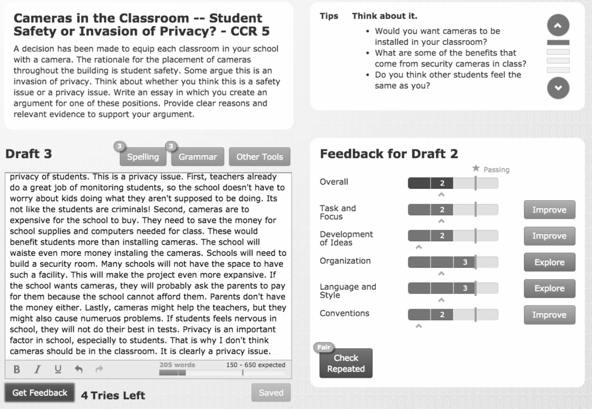
Figure 17.1. Essay Feedback Scoreboard. WriteToLearn™ feedback with an overall score, scores on six popular
traits of writing, as well as support for the writing process.
CHAPTER 17 DATA MINING LARGE SCALE FORMATIVE WRITING PG 201
choice, and sentence fluency.” The student can also Analyses Enabled by the Approach view supplemental educational material to help them At all stages in the lifecycle of a formative system —
understand the feedback, as well as suggest approaches design, implementation, deployment, redesign, and
to improve their writing. In addition, grammar and maintenance — analysis of actual use via analytics
spelling errors are flagged. Figure 1 shows a portion applied to log data can inform improvements to the
of the system’s interface, in this case illustrating the system. As Mislevy, Behrens, Dicerbo, and Levy (2012)
scoring feedback resulting from a submission to a note, there is interplay between evidence-centred
12th grade persuasive prompt. Evaluations of Write- design, which represents best practices when a system
ToLearn™ have shown significantly better reading is first conceived and data mining student actions of
comprehension and writing skills resulting from two the implementation that reflects actual use, where
weeks of use (Landauer et al., 2009) as well as vali- each is critical in building and evolving educational
dating the system scores being as reliable as human systems. From the design phase, we are interested in
raters, and significantly improved end-of-year pass analyzing use data to assess our assumptions and, in
rates on a statewide writing assessment (Mollette & our case, determining if cycles of writing, feedback,
Harmon, 2015). and revising improves writing performance and at
Algorithm for Scoring Writing what rate and whether the rate of improvement differs
WriteToLearn’s™ automated scoring is based on an among the traits of writing. In terms of pedagogical
implementation of the Intelligent Essay Assessor (IEA). theory, we want to understand what mix of writing,
IEA is trained to associate extracted features from mechanics feedback, content feedback, and revising
each essay to scores assigned by human scorers. A leads to optimal learning, and potentially how to in-
machine-learning-based approach is used to determine dividualize advice to students and teachers. Currently
the optimal set of features and the weights for each of the system by default allows six revision/feedback
the features to best model the scores for each essay. cycles with teachers able to customize the limit, and
From these comparisons, a prompt- and trait-specific use data should help develop guidelines for this feature.
scoring model is derived to predict the scores that the Another quite productive form of analysis is to model
same scorers would assign to new responses. Based student performance; here we discuss a mixed effects
on this scoring model, new essays can be immediately model that allows us to estimate the relative difficul-
scored by analysis of the features weighted according ty of the prompts. Prompts typically are assigned a
to the scoring model. The focus in this chapter is not grade level when developed, but modelling allows us
on the actual algorithms or features that make up to determine if the prompt is correctly labelled; using
the scoring, as those have been described in detail performance data from millions of essays written to
elsewhere (see Landauer et al., 2001; Foltz et al., 2013). a prompt allows finer grained levelling. Instead, the focus is how the trail left by automated Many additional types of analysis are possible with
scoring and student actions can be used to monitor writing-log data than there is room to detail in this
learning across large sets of writing data and facilitate chapter (see also Calvo et al., 2012; Deane, 2014). Two
improvements in the formative system. areas we have found particularly promising are evalu-
Data ation of teachers’ instructional strategies; for instance,
The data comprised two large samples of student in terms of which prompts were chosen and how long
interactions with WriteToLearn™ collected from U.S. (a single class period, a week, longer) students were
adoptions of the software. One set comprised approx allowed to write to a prompt. While systems such as -
imately 1.3 million essays from 360,000 assignments the one described here have professional development
written by 94,000 students collected over a 4-year instruction for teachers as well as teachers’ guides,
period. The second set represented approximately it is astonishingly useful to observe how the system
62,000 student sessions with nearly 900,000 actions. is actually used in classrooms in order to uncover
The data included student essays and a time-stamped new strategies and measure the relative effective-
log of all student actions, revisions, and feedback ness among the strategies. Another area that we lack
given by the system. Essays were recorded each time space to describe in detail is fine-grained analysis
a student submitted or saved an essay, resulting in of student actions. For instance, it is possible to tell
a record of each draft submitted. The essays were when and where in the writing process a student ex-
written to approximately 200 pre-defined prompts. ploits a help facility, and often possible to infer when
No human scoring was performed on these essays. a student should have taken advantage of a facility
All essay scores were generated by automated scor- but didn’t — from which it may be possible to infer
ing, with the prediction performance of the models redesign choices in terms of user interface layout and
validated against human agreement from test sets or other design issues. Additional discussion of some of
using cross-validation. these directions can be found in Foltz and Rosenstein
PG 202 HANDBOOK OF LEARNING ANALYTICS
(2013), Foltz and Rosenstein (2015), and illustrated in ency, and voice. While there was a wide distribution in
Foltz and Rosenstein (2016). the number of revisions students made, most students
VALIDATING THEORY made more than one revision, with most making up to
five revisions. Figure 2 shows the score improvement
Does Writing and Revising Result in Im- for students who wrote multiple drafts. It shows im- (score on last attempt minus score on first attempt)
proved Writing Performance? provement for each of the six writing traits as well as
Formative writing systems are designed to support the overall score. There is a clear trend indicating that
a rapid cycle of write, submit, receive feedback, and more revisions equal higher scores. With the typical
revise. This cycle is one of the key differentiators of five revisions, the average student score improved
automated formative writing from standard classroom by almost one score point (out of a maximum of 6).
writing practice, where human scoring of essays is Generally, we see greatest improvement in scores
time consuming so students cannot receive immediate for content-based features, such as ideas, voice, and
feedback. Thus, it is critical to determine how often organization, and less for features related to writing
students submit and revise essays and determine the skill, such sentence fluency and writing conventions.
factors and time paths that lead to greatest success. The smoothness of the curves and small error bars
This can help address questions of whether revising are due to the large number of data points for each
results in better writing, as measured by the automated revision from 0 to 5. scores and what patterns of use facilitate the most
rapid improvement. Time Spent Between Revisions
We can further investigate the impact on student per-
a single semester in which teachers in three grades feedback to better understand the best allocation of th (5 , 7 th , and 10 th ) across an entire state assigned writ- time among the Using a subset of the data, we examined writing over formance of the time-spent writing before requesting
write, submit, feedback, and revise
ing exercises to students. During that period, 21,137 phases. Using data from approximately 1.1 million stu-
students wrote to 72,051 assignments (an average of dent writing attempts across a wide range of users of
almost four assignments per student) with 107 different WriteToLearn™, we calculated the change in student
unique writing prompts assigned. These assignments grade (e.g., improvement from one draft to the next)
resulted in 255,741 essays submitted and scored over based on how much time was spent between drafts.
the period of analysis. For each submission, students The change in grade shown in Figure 3 indicates that
received feedback and scores on their overall essay the improvement in writing score generally increases
quality, as well on six different writing traits: ideas, up to about 25 minutes at which point it levels off
organization, conventions, word choice, sentence flu- and begins to drop. In addition, most of the nega-
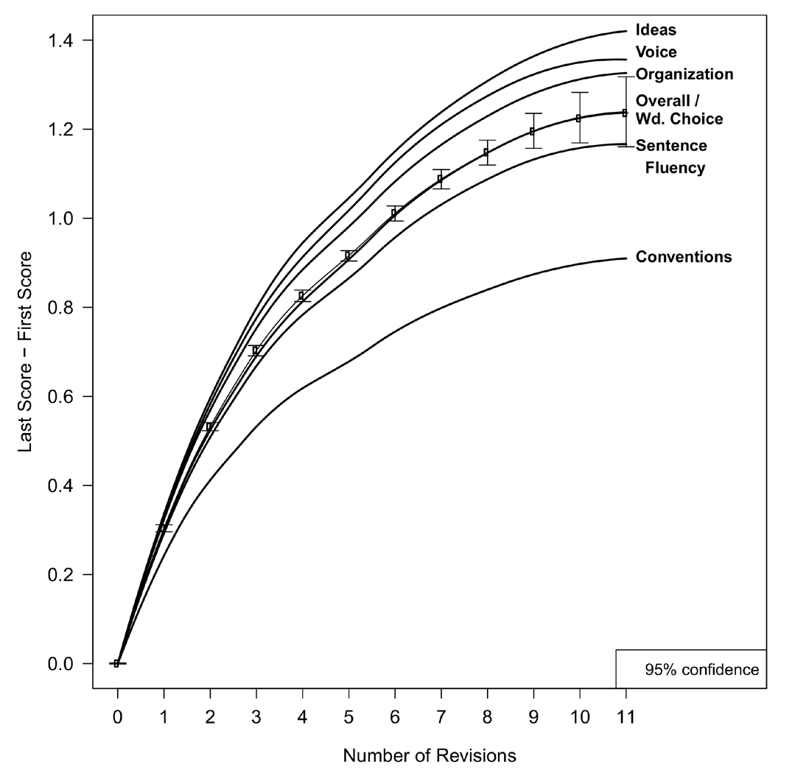
Figure 17.2. Change in writing scores for multiple writing traits across revisions.
CHAPTER 17 DATA MINING LARGE SCALE FORMATIVE WRITING PG 203
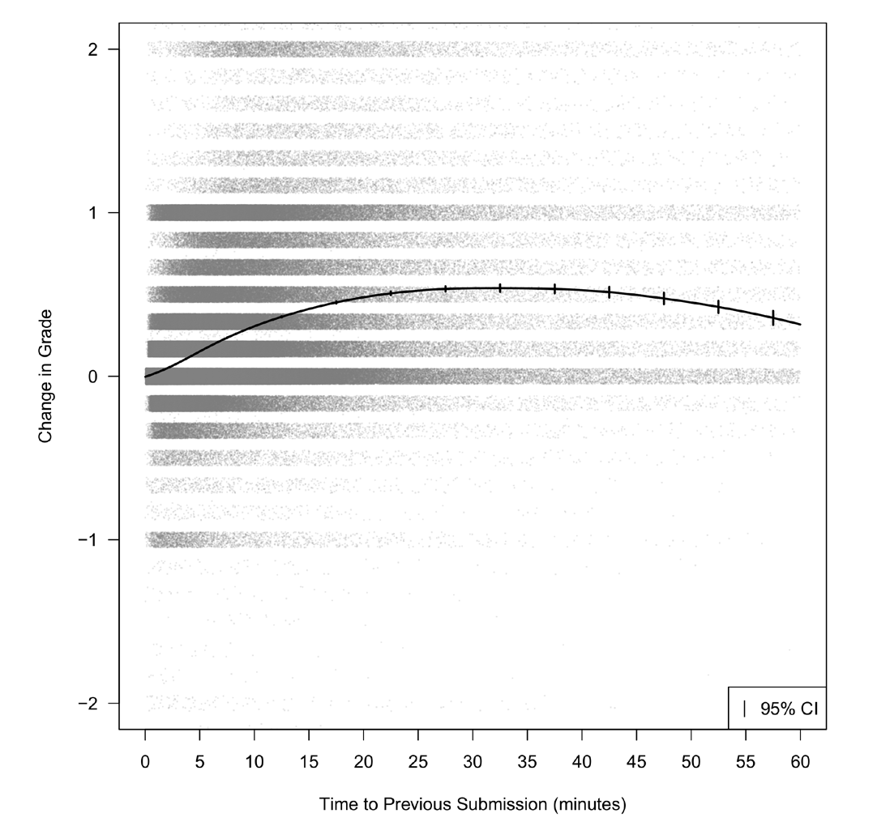
Figure 17.3. Change in grade over revisions based on the time to revise.
tive change (essays receiving a lower score than the The models described here are based on over 840,000
previous version) occurs with revisions of less than essays written against more than 190 prompts over a
five minutes. The results suggest an optimal range of 4-year period by approximately 80,000 students, where
time to spend revising before requesting additional over 20% of the students were followed for three or
feedback. These two results indicate how analysis of more years. The models predict the holistic score for
log data can validate that the write-feedback-revise each essay submitted for feedback, which given the
cycle improves writing skills, as well as illustrates the explanatory variables signifies the expected score a
ability to fine-tune learning by attempting to lead the student would receive on their essay. The explanatory
student into more effective cycles where feedback is variables allow us to estimate and control for factors
requested at appropriate intervals. such as the student’s grade level, the length of the
Modelling essay, and the difficulty of the prompt. The underlying structure of the writing process, as The writing process is represented within a linear
it manifests within a formative writing tool, is often mixed effects model framework (Pinheiro & Bates,
best made interpretable through the construction of 2006), building on the techniques described in Baayen,
formal statistical models. With their explicit represen- Davidson, and Bates (2008). Mixed effects models can
tations of the complex interplay of revising, receiving estimate both the student’s "skill level" and the item's
writing advice, and composing responses to multiple “difficulty” by viewing them as being sampled from a
prompts over time, these models provide estimates population of all potential students and a bank of all
and confidence intervals for parameters of critical in- potential prompts, estimates computed in addition to
terest. Grounded by the student log data, these models the relationships that hold over the entire population.
can account and control for the complex covariance The students and prompts were modelled as random
structure implicit within this stream of data with its effects drawn from a distribution with a mean of zero
aspects of repeated measures of performance received and with the standard deviation estimated from the
on shared prompts embedded in an overall longitudinal data. The derived variability provides an estimate of
model of growth that can span a significant portion of student individual differences, while also capturing
the total time a student receives writing instruction. the variability of item difficulty. Table 1 contains
A carefully constructed model facilitates teasing out descriptions of the fixed and random effects used in
student progress with exposure to the tool, allows the models.
placing both students and items on scales of skill level At each student grade level, the impact of the higher
and difficulty respectively, and provides estimates on grade is to increase the score, while as content grade
how changing levels of exposure to components of level increases (the labelled grade level of a prompt)
the available feedback impacts writing performance. the expected score decreases. Finally, in controlling
PG 204 HANDBOOK OF LEARNING ANALYTICS
Table 17.1. Description of Fixed and Random Effects
Variable Name Description
Fixed Effects
studentGradeLevel:n Student’s grade level as a factor level (coefficient is the difference between grade n and grade 3)
contentGradeLevel Grade level of prompt (an assigned level)
log10(wordCount) Log base 10 of word length of essay
attempt For a given prompt, the revision of this specific essay submission
elapsedTimeDay A measure of time in days of how long since first W2L use (a measure of age-based growth)
cumW2LTimeDay Total face-time student has had with W2L by this submission
interaction Total number of submissions this student has made to W2L
Random Effects
studentID Factor levels, one for each student
contentID Factor levels, one for each prompt
for essay length, a longer essay on average would be from a writing corpus). Although some prompts re-
expected to receive a higher score. The four measures quire a threshold skill level or specific knowledge or
of exposure to WriteToLearn™ are all statistically expertise to be addressed, many are applicable for
significant and positive, indicating its cumulative students over a wide grade range. What differs in the
positive effect. assignment is the expectation of the quality or skill
While the four measures of WriteToLearn™ are relat- evidenced by the final product and its evaluation via a score. Scoring of prompts is based on grade-spe- ed — e.g., as number of attempts on a specific prompt cific models, so a prompt labelled as appropriate for increases, concurrently the total time spent using 10 th graders implies that it is both well-suited for the WriteToLearn™ increases — they capture different skills and knowledge expected in 10 th grade, but also aspects of student interaction with the system. The that the automated scoring was calibrated using effect sizes seems small; for instance, each additional training-set essays written by 10 th graders. In cases attempt on a specific prompt increases the expected where a prompt is appropriate for a range of grade score by only .018, a number that represents just the levels, and training sets of students at different grade increase based on receiving feedback on a single levels were available, the same prompt may appear at revision of the essay. In fact, it is only through data multiple grade levels, where the critical difference is mining and modelling with large data sets that we can that different scoring models are used to evaluate the reliably estimate these important small, incremental student’s work at each grade level. effects. From a more global perspective, the cumulative
impact of attempts and time spent interacting with Often teachers prefer finer levels of discrimination
WriteToLearn™ result in improvements in achievement. among prompts, such as having a measure of the relative
This progress is often best benchmarked with external difficulty of a set of prompts that fit the grade level of
validations such as those observed in improved pass their class. This is exactly the case that the random
rates on state achievement tests with more intensive effect estimates of the prompts can be used to address.
use (Mollette & Harmon, 2015). As a prompt’s labelled grade level increases, the coef-
Modelling to Determine Writing Prompt ficient on fixed effect contentGradeLevel in the model indicates a 0.073 decrease in expected score (harder Difficulty prompts contribute to lower scores), other variables Many pedagogical considerations arise in assigning a held constant. Equivalently, controlling for the labelled prompt to a student or a class and one often-expressed prompt grade level, the individual prompt random concern is adjusting the scoring of the prompt to the effects indicates how strongly a given prompt differs student’s level (see also Deane & Quinlan, 2010, for a in difficulty from this mean fixed effect. This allows related approach to determining prompt difficulty ordering the prompts within grade levels, providing
CHAPTER 17 DATA MINING LARGE SCALE FORMATIVE WRITING PG 205
empirically derived additional support infrastructure just in the early stages of trying to form hypotheses
for teachers. Similarly, taking into account the fixed to explain this data, such as why the first 10 prompts
prompt effect allows ordering all of the prompts, in the table are so much easier than other prompts at
which broadens the set of prompts a teacher may be that grade level and why the last 10 are so much harder,
comfortable assigning. as well as why the relatively easiest items seem to be
Table 17.2. Prompts with Most Extreme (10 highest, more constrained set of relatively most difficult items. pulled over a broader range of grade levels than the
Title Grade Level Difficulty 10 lowest) Random Effects
Freedom of Speech Considerations in Modelling with Large 12 0.80 Data Sets
How to Start a Hobby – A/B 6 0.76 In designing a model, there are trade-offs between
Essay About Causes and Effects in expressiveness and parsimony. With large datasets, 11 0.72 History often statistical significance is not a sufficient basis to
How to Start a Hobby 5 0.71 decide on model form; the purpose of the analysis must
How to Start a Hobby also be factored into the decision. A strong message 6 0.70
from the descriptive plots presented earlier was that
American President 10 0.68 of diminishing returns for variables such as number
What’s Cooking? 6 0.66 of submissions per essay. This tendency could be de-
Consumer Reporter scribed with a polynomial or in a general additive model 12 0.64
What’s Cooking? – A/B context. The power of data mining a large data set is
6 0.63 that we can make fewer assumptions about the form
Favorite Activity 4 0.63 relationships will take. In this case, we could assume
... a linear relation between performance and grade, but
Effects of Texting on Communica- instead we estimated a separate improvement relative
tion Skills 8 –0.70 to 3rd grade, as a baseline, and plotted the relationship
Should Recycling be Voluntary or in Figure 4. Additional research is necessary to better 7 –0.70 Required? understand the causes of the asymptotic behaviour
How Much Time to Play Computer and the implications for potential improvements to 7 –0.71 Games WriteToLearn™.
An Unusual Event 9 –0.74 We see that from the 4th through about the 10th grade,
An Important Decision 8 –0.75 the improvement is approximately linear, but asymp-
Interpret a Literary Theme totes out for 11th and 12th grade. This indicates that 7 –0.79
A Meaningful Childhood Memory at least with this set of prompts and their scoring
10 –0.81 models, WriteToLearn™ has difficulty distinguishing
A Meaningful Life Lesson 10 –0.82 improvement in writing among 10th through 12th
Dealing with Conflict 10 –0.85 graders. Estimating the slope of the linear portion of
Compare and Contrast Two Literary the curve from grades 4 to 10 yields a gain of 0.048/
Characters 10 –1.08 grade level, which also can be expressed as an expected
gain of 0.29 in going from 4th to 10th grade. This is the
Beyond this practical result, estimates of prompt expected gain, holding the use of WriteToLearn™
difficulty controlling for assigned grade level raise constant. Additional research is necessary to better
a number of interesting research questions. Table 2 understand the causes of the asymptotic behaviour
presents a subset of the prompts ordered by the esti- and potential improvements to WriteToLearn™.
mates of the conditional modes of the random effects
(Bates, Maechler, Bolker, & Walker, 2015) shown in the Related to the work described here are finer grained
column called difficulty along with columns for the models of action transitions also using mixed effect
labelled grade level and the prompt title. The impact models (for instance in a tutoring context see Feng,
on score received on an essay is the sum of the grade Heffernan, Heffernan, & Mani, 2009) or using Markov
level times its coefficient from the model plus its methods (e.g., Beal, Mitra, & Cohen, 2007; Jeong et al.,
difficulty, so the more positive difficulty is, the easier 2008) or Bayesian techniques (e.g., Conati et al., 1997).
the prompt is relative to other prompts at that grade These techniques can be used to better understand
level; hence, prompts near the bottom of the table, student interactions at the action level (such as use
relative to their grade level, are more difficult. We are of scaffolding facilities) that complement the more
course grained analysis described here.
PG 206 HANDBOOK OF LEARNING ANALYTICS
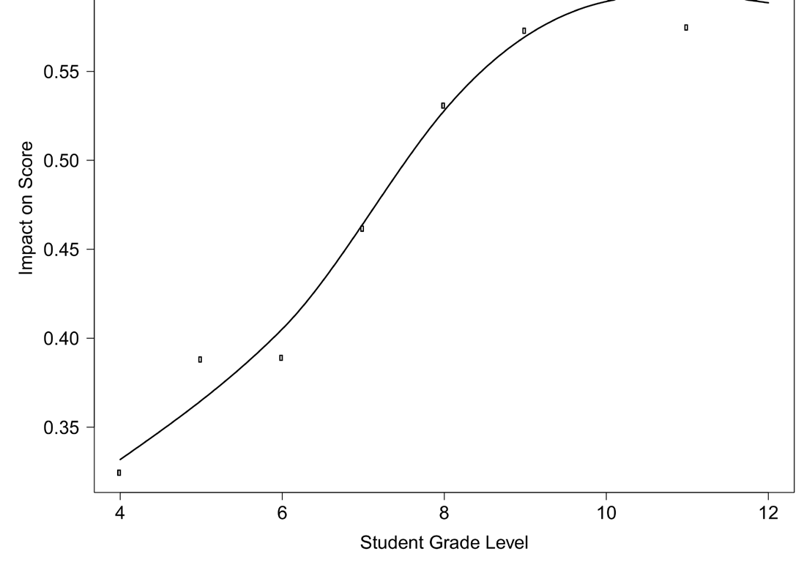
Figure 17.4. Improvement in student score by grade level.
CONCLUSION Writing to Learn and Learning to Write
The resulting analysis validates a key tenet of forma-
Digital education environments can provide an infra tive writing: students can improve their writing with -
structure to support students with more personalized revisions based on feedback from the system. A data
learning experiences by having students work on more mining approach to writing permits a fine-grained
authentic educational tasks while receiving immediate approach to examining the changes in learning and
feedback and training specific to their learning needs. the effects of feedback on performance. This further
Properly instrumented, these environments can also permits us to discover, prioritize, and address concerns
provide a rich source of information about student as they arise and determine which changes are most
learning and progress as they interact with the system. likely to improve the student experience and their
Large-scale implementations of formative writing pro- ability to sharpen their writing skills. vide rich sets of data for analysis of performance and The focus of writing assessment has often been put
effects of feedback. By treating the written product on the product (i.e., the final essay). By performing
as data, applying automated scoring of writing allows data mining on student draft submissions and the
monitoring of student learning as students write log of their actions, it is possible to track the process
and revise essays within these implementations. By that learners take to create the product. This analy-
examining the log of student actions, the amount of sis allows interventions to be performed at strategic
time taken, and the changes in the essays, one can points during the process of writing rather than just
track the impact on learning from use of the system. evaluating the end-product. A wide range of types
Developing and maintaining a formative system in of analyses can be performed on writing data, in-
a manner to maximize student learning growth re cluding examining the essays, the process to create -
quires a range of decisions be made starting from the the essays, as well as the progress of the changes.
design and implementation and continuing through These approaches can be both descriptive analyses
the monitoring of its use. Decisions in the design and modelling. While we could not possibly provide
and implementation phase are typically limited to a comprehensive discussion on all types of analyses
theory and best practices, which are often at a level in this chapter, the goal was to illustrate a variety of
of granularity that affords a great deal of ambiguity in approaches to show how data mining can provide new
implementation. However, once a system is deployed, ways of thinking about collecting evidence of system
these assumptions can be cast against the actual be- and student writing performance and uncover patterns
haviour of teachers applying the system during their that go beyond those apparent from only observing
classroom activities and students learning to write. individual students or classrooms. Through data mining, these assumptions can be tested,
both to validate the assumptions of the system and to
gain greater insight into how students learn.
CHAPTER 17 DATA MINING LARGE SCALE FORMATIVE WRITING PG 207
REFERENCES
Baayen, R. H., Davidson, D. J., & Bates, D. M. (2008). Mixed-effects modeling with crossed random effects for
subjects and items. Journal of Memory and Language, 59, 390–412.
Baikadi, A., Schunn, C., & Ashley, K. (2015). Understanding revision planning in peer-reviewed writing. In O.
C. Santos, J. G. Boticario, C. Romero, M. Pechenizkiy, A. Merceron, P. Mitros, J. M. Luna, C. Mihaescu, P.
Moreno, A. Hershkovitz, S. Ventura, & M. Desmarais (Eds.), Proceedings of the 8th International Conference
on Education Data Mining (EDM2015), 26–29 June 2015, Madrid, Spain (pp. 544 – 548). International Educa-
tional Data Mining Society.
Bates, D., Maechler, M., Bolker, B. M., & Walker, S. (2015). Fitting linear mixed-effects models using lme4. ArXiv
e-print, Journal of Statistical Software, http://arxiv.org/abs/1406.5823.
Beal, C., Mitra, S., & Cohen, P. R. (2007). Modeling learning patterns of students with a tutoring system using
Hidden Markov Models. Proceedings of the 2007 conference on Artificial Intelligence in Education: Building
Technology Rich Learning Contexts That Work, 238–245.
Black, P., & William, D. (1998). Assessment and classroom learning. Assessment in Education, 5(1), 7–74.
Buckingham-Shum, S. (2013). Proceedings of the 1st International Workshop on Discourse-Centric Analytics,
workshop held in conjunction with the 3rd International Conference on Learning Analytics and Knowledge
(LAK ’13), 8–12 April 2013, Leuven, Belgium. New York: ACM.
Burstein, J., Chodorow, M., & Leacock, C. (2004). Automated essay evaluation: The Criterion Online writing
service. AI Magazine, 25(3), 27–36.
Calvo, R. A., Aditomo, A., Southavilay, V., & Yacef, K. (2012). The use of text and process mining techniques to
study the impact of feedback on students’ writing processes. Proceedings of the 10th International Confer-
ence of the Learning Sciences (ICLS '12) Vol. 1, Full Papers, 2–6 July 2012, Sydney, Australia (pp. 416–423).
Calvo, R. A., O’Rourke, S. T., Jones, J., Yacef, K., & Reimann, P. (2011). Collaborative writing support tools on the
cloud. IEEE Transactions on Learning Technologies, 4(1), 88–97.
Conati, C., Gertner, A. S., VanLehn, K., & Druzdzel, M. J. (1997). On-line student modeling for coached problem
solving using Bayesian networks. Proceedings of the 6th International User Modeling Conference (UM97) (pp.
231–242).
Crossley, S. A., McNamara, D. S., Baker, R., Wang, Y., Paquette, L., Barnes, T., & Bergner, Y. (2015). Language to
completion: Success in an educational data mining massive open online class. In O. C. Santos, J. G. Boticar-
io, C. Romero, M. Pechenizkiy, A. Merceron, P. Mitros, J. M. Luna, C. Mihaescu, P. Moreno, A. Hershkovitz,
S. Ventura, & M. Desmarais (Eds.), Proceedings of the 8th International Conference on Education Data Mining
(EDM2015), 26–29 June 2015, Madrid, Spain (pp. 388–392). International Educational Data Mining Society.
Deane, P. (2014). Using writing process and product features to assess writing quality and explore how those
features relate to other literacy tasks. Educational Testing Research Report ETS RR-14-03. http://dx.doi.
org/10.1002/ets2.12002.
Deane, P., & Quinlan, T. (2010). What automated analyses of corpora can tell us about students’ writing skills.
Journal of Writing Research, 2(2), 151–177.
DiCerbo, K. E., & Behrens, J. (2012). Implications of the digital ocean on current and future assessment. In R.
Lissitz & H. Jao (Eds.), Computers and their impact on state assessment: Recent history and predictions for
the future. Charlotte, NC: Information Age.
Feng, M., Heffernan, N. T., Heffernan, C., & Mani, M. (2009). Using mixed-effects modeling to analyze different
grain-sized skill models in an intelligent tutoring system. IEEE Transactions on Learning Technologies, 2,
79–92.
Foltz, P. W., Gilliam, S., & Kendall, S. (2000). Supporting content-based feedback in online writing evaluation
with LSA. Interactive Learning Environments, 8(2), 111–129.
Foltz, P. W., & Rosenstein, M. (2013). Tracking student learning in a state-wide implementation of automated
writing scoring. Proceedings of the Neural Information Processing Systems (NIPS) Workshop on Data Driven
PG 208 HANDBOOK OF LEARNING ANALYTICS
Education. http://lytics.stanford.edu/datadriveneducation/
Foltz, P. W., & Rosenstein, M. (2015). Analysis of a large-scale formative writing assessment system with au-
tomated feedback. Proceedings of the 2nd ACM conference on Learning@Scale (L@S 2015), 14–18 March 2015,
Vancouver, BC, Canada (pp. 339–342). New York: ACM.
Foltz, P. W., & Rosenstein, M. (2016). Visualizing teacher assignment behavior in a statewide implementation
of a formative writing system. Cover competition. Education Measurement: Issues and Practice, 35(2), 31.
http://dx.doi.org/10.1111/emip.12114
Foltz, P. W., Streeter, L. A., Lochbaum, K. E., & Landauer, T. K. (2013). Implementation and applications of the
Intelligent Essay Assessor. In M. D. Shermis & J. Burstein, handbook of automated essay evaluation: Current
applications and future directions (pp. 68–88). New York: Routledge.
Gerbner, G., Holsti, O. R., Krippendorff, K., Paisley, W. J., & Stone, Ph. J. (Eds.) (1969). The analysis of communi-
cation content: Development in scientific theories and computer techniques. New York: Wiley.
Graham, S., Harris, K. R., & Hebert, M. (2011). Informing writing: The benefits of formative assessment. Carnegie
Corporation of New York.
Graham, S., & Hebert, M. (2010). Writing to read: Evidence for how writing can improve reading. Carnegie Cor-
poration of New York.
Graham, S., & Perin, D. (2007). A meta-analysis of writing instruction for adolescent students. Journal of Edu-
cational Psychology, 99, 445–476.
Hattie, J., & Timperley, H. (2007). The power of feedback. Review of Educational Research, 77(1), 81–112.
Jeong, H., Gupta, A., Roscoe, R., Wagster, J., Biswas, G., & Schwartz, D. (2008). Using Hidden Markov Models to
characterize student behaviors in learning-by-teaching environments. In B. Woolf, E. Aïmeur, R. Nkambou,
& S. Lajoie (Eds.), Proceedings of the 9th International Conference on Intelligent Tutoring Systems (ITS 2008),
23–27 June 2008, Montreal, PQ, Canada (pp. 614–625). Berlin/Heidelberg: Springer.
Krippendorff, K., & Bock, M. A. (2009). The content analysis reader. Sage Publications.
Landauer, T. K., Laham, D., & Foltz, P. W. (2001). Automated essay scoring. IEEE Intelligent Systems, Septem-
ber/October.
Landauer, T., Lochbaum, K., & Dooley, S. (2009). A new formative assessment technology for reading and writ-
ing. Theory into Practice, 48(1), 44–52. http://dx.doi.org/10.1080/00405840802577593
Leijten, M., & Van Waes, L. (2013). Keystroke logging in writing research using Inputlog to analyze and visualize
writing processes. Written Communication, 30(3), 358–392.
Mislevy, R. J., Behrens, J. T., Dicerbo, K. E., & Levy, R. (2012). Design and discovery in educational assessment:
Evidence-centered design, psychometrics, and educational data mining. Journal of Educational Data Min-
ing, 4(1), 11–48.
Mollette, M., & Harmon, J. (2015). Student-level analysis of Write to Learn effects on state writing test scores.
Paper presented at the 2015 annual meeting of the American Educational Research Association. http://
www.aera.net/Publications/Online-Paper-Repository/AERA-Online-Paper-Repository
Page, E. B. (1967). The imminence of grading essays by computer. Phi Delta Kappan, 47, 238–243.
Parr, J. (2010). A dual purpose data base for research and diagnostic assessment of student writing. Journal of
Writing Research, 2(2), 129–150.
Peña-Ayala, A. (2014). Educational data mining: A survey and a data mining-based analysis of recent works.
Expert systems with applications, 41(4), 1432–1462.
Pinheiro, J., & Bates, D. (2006). Mixed-effects models in S and S-PLUS. New York: Springer-Verlag.
Reimann, P., Calvo, R., Yacef, K., & Southavilay, V. (2010). Comprehensive computational support for collabo-
rative learning from writing. In S. L. Wong, S. C. Kong, & F.-Y. Yu (Eds.), Proceedings of the 18th International
Conference on Computers in Education (ICCE 2010), 29 November–3 December, Putrajaya, Malaysia (pp.
CHAPTER 17 DATA MINING LARGE SCALE FORMATIVE WRITING PG 209
129–136). Asia-Pacific Society for Computers in Education.
Romero, C., & Ventura, S. (2007). Educational data mining: A survey from 1995 to 2005. Expert Systems with
Applications, 33(1), 135–146.
Romero, C., & Ventura, S. (2013). Data mining in education. Wiley Interdisciplinary Reviews: Data Mining and
Knowledge Discovery, 3(1), 12–27.
Roscoe, R., & McNamara, D. S. (2013). Writing pal: Feasibility of an intelligent writing strategy tutor in the high
school classroom. Journal of Educational Psychology, 105(4), 1010–1025. http://dx.doi.org/10.1037/a0032340
Shermis, M., & Hamner, B. (2012). Contrasting state-of-the-art automated scoring of essays: Analysis. Paper
presented at Annual Meeting of the National Council on Measurement in Education, Vancouver, Canada,
April.
Shute, V. J. (2008). Focus on formative feedback. Review of Educational Research, 78(1), 153–189.
Walvoord, B. E., & McCarthy, L. P. (1990). Thinking and writing in college: A naturalistic study of students in four
disciplines. Urbana, IL: National Council of Teachers of English.
White, B., & Larusson, J. A. (Eds.). (2014). Learning analytics: From research to practice. New York: Springer
Science+Business Media. doi:10.1007/978-1-4614-3305-7_8.
Whitelock, D., Field, D., Pulman, S., Richardson, J. T. E., & Van Labeke, N. (2013). OpenEssayist: an automated
feedback system that supports university students as they write summative essays. Proceedings of the 1st
International Conference on Open Learning: Role, Challenges and Aspirations. The Arab Open University,
Kuwait, 25–27 November 2013.
Whitelock, D., Twiner, A., Richardson, J. T. E., Field, D., & Pulman, S. (2015). OpenEssayist: A supply and demand
learning analytics tool for drafting academic essays. Proceedings of the 5th International Conference on
Learning Analytics and Knowledge (LAK '15), 16–20 March, Poughkeepsie, NY, USA (pp. 208–212). New York:
ACM.
PG 210 HANDBOOK OF LEARNING ANALYTICS
Chapter 18: Diverse Big Data and Randomized
Field Experiments in MOOCs
René F. Kizilcec,1 Christopher Brooks2
1Department of Communication, Stanford University, USA 2School of Information, University of Michigan, USA
DOI: 10.18608/hla17.018
ABSTRACT
A new mechanism for delivering educational content at large scale, massive open online courses (MOOCs), has attracted millions of learners worldwide. Following a concise account of the recent history of MOOCs, this chapter focuses on their potential as a research in-strument. We identify two critical affordances of this environment for advancing research on learning analytics and the science of learning more broadly. The first affordance is the availability of diverse big data in education. Research with heterogeneous samples of learners can advance a more inclusive science of learning, one that better accounts for people from traditionally underrepresented demographic and sociocultural groups in more narrowly obtained educational datasets. The second affordance is the ability to conduct large-scale field experiments at minimal cost. Researchers can quickly evaluate multiple theory-based interventions and draw causal conclusions about their efficacy in an authentic learning environment. Together, diverse big data and experimentation provide evidence on “what works for whom” that can extend theories to account for individual differences and support efforts to effectively target materials and support structures in online learning environments.
Keywords: Research methodology, big diverse data, randomized field experiments, inclu-sive science, MOOC
Massive open online courses (MOOCs) are a techno- research: the availability of not just big but also diverse
logical innovation for providing low-cost educational learner-level educational data, and the opportunity to
experiences to a worldwide audience. In 2012, some run large online field experiments at low cost.
of the first MOOCs attracted hundreds of thousands The first feature of MOOCs that supports innovative of people from countries around the world (Waldrop, research is the amount and nature of the data that 2013), providing momentum for a disruption in higher can be collected. MOOCs collect learner data that education. Just a few years later, hundreds of institutions is deep as well as broad: fine-grained records from worldwide began to offer MOOCs on online learning individual learners’ interactions with content in the platforms such as Coursera, EdX, and FutureLearn. learning environment for a large number of learners Beyond expanding access to higher education, MOOCs (Thille et al., 2014). The dimensions of this recently have generated unprecedented amounts of educational available data enable applications of machine learning data that have fuelled scholarship in existing academ - and data mining techniques that were previously in- ic communities and sparked interests in disciplines feasible. Beyond the large scale, however, the learner that were historically less involved in the learning population is also considerably more diverse in MOOCs sciences. This has amplified research in existing in - than in typical college courses. MOOCs attract more terdisciplinary communities and given rise to entirely learners from countries that are not Western, Edu- new communities at the intersections of education, cated, Industrialized, Rich, and Democratic (WEIRD), computer science, human factors, and statistics. For the population on which most experimental social the field of learning analytics, we highlight two novel s cience is based (Henrich, Heine, & Norenzayan, 2010). features of MOOCs that can enhance next-generation Diverse data is critical for advancing inclusive scientific
CHAPTER 18 DIVERSE BIG DATA AND RANDOMIZED FIELD EXPERIMENTS IN MOOCS PG 211
theories and educational practices, ones that apply schools, radio instruction), open access universities,
to a broader population. Moreover, big diverse data and open educational resources (Simonson, Smaldino,
enables research that identifies individual differences Albright, & Zvacek, 2011). However, the notion of what
between demographic and sociocultural groups (e.g., constitutes a MOOC fundamentally shifted between
heterogeneous effects of an intervention) that could 2008, when George Siemens and Stephen Downes
not be investigated in existing research with small or facilitated the first MOOC (Siemens, 2013), and 2012,
homogenous samples. when the New York Times declared “the year of the The second feature of MOOCs that promises to increase MOOC” (Pappano, 2012). This shift led Siemens (2013)
the pace and impact of educational research is the ability to distinguish the original cMOOCs, which are based
to conduct online experiments rapidly, economically, on the connectivist pedagogical model that empha-
and with high fidelity (Reich, 2015). In the technology sizes collective knowledge creation without imposing
industry, this is referred to as A/B testing to convey a rigid course structure, from later xMOOCs (i.e., the
that individuals are randomly assigned to one of two MOOCs of 2012 and onwards), which are mostly based
experimental conditions. Online experimentation on the instructionist model of lecture-based courses
enables rapid iteration to test theories and practices, with assessments and a rigid course structure. Stan-
because multiple experiments can run in parallel and ford University Professors Sebastian Thrun, Daphne
a course (e.g., varying the introduction to a topic and This vision led to the creation of several corporate how concepts are presented) and observe performance and non-profit MOOC-providing organizations, most on subsequent assessments. Once enough data has notably Coursera, Udacity, EdX, and FutureLearn. been collected, the researcher may drop those lecture Institutions of higher education worldwide rushed to versions associated with the lowest scores and add new contribute to the growing number of courses, with versions based on theory and the results of existing in real time and at low cost. For instance, a researcher digital amplifications of their lecture classes to reach might compare different versions of lecture videos in a broader audience, sparked this ideological shift. researchers can add, delete, and modify experiments Koller, and Andrew Ng, who re-envisioned MOOCs as
versions, and continue iterating. In this process, the each course attracting tens of thousands of learners
researcher may find that a particular version works (Waldrop, 2013). best for a specific group of learners, for instance, less The initial excitement and momentum began to fade
educated learners. This may provide novel theoretical once it became apparent that MOOCs fell short of
insights and it calls for adaptive presentation of con- delivering on the promise of providing universal low-
tent to optimize for learning. Discovery of individual cost higher education. The first sobering piece of
feasible in digital learning environments with large who start a course go on to complete it (Clow, 2013; heterogeneous samples of learners, such as in MOOCs. Breslow et al., 2013), and although completion is not differences and responsive adaptation of content is evidence was that only a small percentage of learners
The goal of this chapter is to map out these two fea- everyone’s goal (Kizilcec & Schneider, 2015; Kizilcec,
tures of MOOCs, in light of the development of the Piech, & Schneider, 2013), this pattern suggests that
field of learning analytics, and discuss how these critical barriers have remained unaddressed. The
features might advance the theory and practice of second sobering realization concerned the promise
learning and instruction. We begin this chapter with of advancing access for historically underserved
a brief historical overview of the genesis and devel- populations. Many MOOC learners are already highly
these affordances. Then we turn to the opportunities are more likely to earn a certificate (Hansen & Reich, that open up through experimentation and rapid it - 2015). Further evidence shows that socioeconomic eration, and discuss how these have been used thus achievement gaps in MOOCs occur worldwide in far in MOOC platforms. We close the chapter with a terms of education levels and levels of national de- discussion of current limitations and ways to leverage velopment (Kizilcec, Saltarelli, Reich, & Cohen, 2017), the opportunities of large-scale digital learning en- and, moreover, that women underperform relative to tages of big data and diverse learner samples for re- United States tend to live in more affluent areas and search and we review work that has begun to leverage individuals with greater socioeconomic resources opment of MOOC initiatives. We discuss the advan- educated (Emanuel, 2013). Moreover, learners in the
vironments more effectively.
men (Kizilcec & Halawa, 2015). These patterns may
THE PAST AND PRESENT OF MOOCS be partly due to structural, cultural, and education-
al barriers (e.g., Internet access, prior knowledge,
The development of MOOCs occurred in the context of Additionally, learners may face social psychological language skills, culture-specific teaching methods).
a long tradition of efforts to increase access to educa-
barriers, such as the fear of being seen as less capa-
tion, including distance learning (e.g., correspondence
ble because of their social group (i.e., social identity
PG 212 HANDBOOK OF LEARNING ANALYTICS
threat) and feeling uncertain about their belonging in for example participants’ prior knowledge or the subject
MOOCs from elite Western institutions (Kizilcec et al., area. Which of the hundreds of potential contextual
2017; Steele, Spencer, & Joshua, 2002; Walton & Cohen, attributes matter in a particular instance is difficult
2007). At least in terms of completion rates, North to predict and infeasible to test. We therefore rely
American MOOCs have disproportionately benefited on scientific theory to constrain this complexity and
more privileged learners, posing a critical challenge identify the variables that matter (Koedinger, Booth, &
for a technology designed to promote educational Klahr, 2013). Nonetheless, educational theory is never
address them. In fact, as evidence of a lack of support expense of external validity. In particular, much empirical for underserved populations emerged, platform pro- research in the social sciences is based on studies of viders broadened their initial focus on prominent US people in WEIRD contexts, such as US college students partners and started pursuing international university who participate in psychology lab studies (Henrich, partners, NGOs, and foreign governments. While early Heine, & Norenzayan, 2010). This raises questions about MOOC platforms focused on providing desktop-based nology, namely that new technologies tend to reflect education, and the social sciences at large, tends to existing inequalities unless active steps are taken to focus on specific contexts to reduce complexity at the equity. This highlights the amplifying power of tech- conclusive or all encompassing. Empirical research in
learning experiences, platform development efforts the generalizability of existing results and models to
also shifted towards expanding support for mobile different contexts and populations. These concerns
devices as a way to increase access in developing have also been raised specifically about research on
countries, where mobile Internet is pervasive. technology-enhanced education (Ocumpaugh, Baker,
The issue of accreditation and certification for MOOC To address this challenge, researchers require access to Gowda, Heffernan, & Heffernan, 2014; Blanchard, 2012).
eration as the movement has matured. While content learner samples that are larger and more diverse than learning activities has been under constant consid-
was originally provided free of charge, the value of a traditionally available. Such diverse learner samples are commonplace in MOOCs. certificate (and a “verified certificate,” where an indi -
vidual’s identity is linked more closely to their course The supply and range of courses available on MOOC
activity) has attracted learners willing to pay for access platforms has steadily increased since their initial
to content or just to receive a certificate at the end. offerings (Shah, 2015). These courses have been
The certificate credential has also evolved over time. created by institutions around the world, including
A number of institutions offer degrees independent of universities, museums, and national institutes. In early
academic institutions (e.g., Udacity Nanodegrees); use 2016, Coursera announced that they had reached 18
MOOCs as a gateway opportunity to complete liberal million learners worldwide.1 Most learners are located arts courses online (e.g., the Arizona State University and in the United States, China, India, and Brazil, with the
EdX Freshman Academy partnership); create compact strongest growth in enrollment in Mexico, Colombia,
online postgraduate programs (e.g., MIT Microdegrees) Brazil, and Russia. Four in ten learners are women
with the option to use this credential as a pathway to on average, but the gender ratio ranges from 22% in
a traditional graduate degree; and offer full graduate Nigeria to 55% in the Philippines. Likewise, interest in
programs online (e.g., University of Illinois’ iMBA and various course topics varies by gender and location:
Data Science programs on the Coursera platform). business courses are most popular in France, while
There is an increasing supply of courses and short Polish learners prefer computer science, the subject
programs from various institutions, especially on pop- area with (globally) the least gender balance. Cour-
ular topics like data science. Going forward, as more sera learners tend to be well educated: around 80%
efficient marketplaces develop that better connect had already earned a bachelor’s degree, according to
employers and educational institutions, we expect a survey in 2015 (Zhenghao et al., 2015). This pattern
to see increased competition between educational resembles that of FutureLearn, a MOOC platform based
institutions both to attract learners to their courses in the United Kingdom, used by 3 million learners in
and to offer courses that can demonstrate superior 20162: 73% hold degrees and, in contrast to Coursera, workplace performance and career opportunities. 62% are women. EdX3 and Udacity,4 two other major
MOOC providers, had served six million and two million
ENRICHING THEORY AND PRACTICE learners by 2016, respectively. Many other institutions offer MOOCs, either through traditional learning WITH DIVERSE BIG DATA IN management systems (e.g., the Canvas Network), via EDUCATION institutionally deployed open-source platforms (e.g.,
Theories of learning and instruction describe parts 1 https://blog.coursera.org/post/142363925112 of a complex system (Mitchell, 2009). Any research 2 https://about.futurelearn.com/press-releases/future-that examines an instructional method or a learning learn-has-3-million-learners/
3 http://blog.edx.org/edx-year-in-review?track=blog
strategy is therefore limited by its particular context, 4 https://www.udacity.com/success
CHAPTER 18 DIVERSE BIG DATA AND RANDOMIZED FIELD EXPERIMENTS IN MOOCS PG 213
Open EdX), or through proprietary or custom developed methods, including prior knowledge, cognitive control,
platforms. Together, according to data collected by mental ability, and personality (Jonassen & Grabowski,
Class Central (Shah, 2015), 550 institutions have created 1993). For example, prior knowledge is a well-docu-
4,200 courses spanning virtually all disciplines that mented individual difference (Ambrose, Bridges, DiP-
are reaching a remarkably heterogeneous population ietro, Lovett, & Norman, 2010), such that instructional
of over 35 million people worldwide. methods that are relatively effective for novice learners
While the data collected within a MOOC is high in can become ineffective, even counterproductive, for learners with increasing domain knowledge — a phe- velocity and volume, two of the three characteris- nomenon known as expertise reversal (Kalyuga, Ayres, tics of big data (Laney, 2001), it can be limited with Chandler, & Sweller, 2003). Taken together, diverse big respect to variety, unless active measures are taken data can advance a more inclusive science that moves to achieve variety. Traditional educational systems beyond tailoring to averages. collect both detailed demographic information (e.g.,
gender, ethnicity, proxies for socioeconomic status) Although researchers have examined countless in-
and prior knowledge measures (e.g., prior college dividual differences, there is a scarcity of replication
enrollments, high school grades, standardized test studies in the field of education. Replications account
scores). However, these variables are not collected for only 0.13% of published papers in the 100 major
automatically in MOOCs in order to maintain a low journals (Makel & Plucker, 2014), and many of these
barrier to entry. Many MOOC-providing institutions studies rely on relatively homogenous student pop-
thus began to collect this data through optional ulations in WEIRD countries. Even if study samples
surveys. A self-selected group of learners, who tend were more diverse, the meta-analysis of individual
to be more committed to completing the course, are studies across different learning contexts would be
also those who tend to complete these surveys. Reich complicated by variation in instructional conditions,
(2014) suggested that roughly one quarter of enrolled much of which remains unobserved and therefore
learners fill out a course survey. The sheer volume of unaccounted for (Gašević, Dawson, Rogers, & Gašević,
collected survey responses can be high (often tens of 2016). MOOCs and online learning environments more
thousands), though it is important to remember that generally can begin to address this pressing issue.
these data represent a skewed sample of generally These environments are particularly well suited for
more motivated learners. Improved mechanisms for conducting large-scale studies with diverse samples
data collection that overcome current limitations for in an authentic learning context, and it is substantially
unobtrusively obtaining comprehensive information faster and cheaper to conduct an exact replication
on learner backgrounds are needed. Nevertheless, study in a MOOC by rerunning the same course or by
currently available survey data supports the assumption embedding the same study in another course. In fact,
that MOOC learners constitute a relatively heteroge- MOOCs are especially suitable for conducting disci-
neous population from around the globe. plinary research into what instructional approaches
Access to a heterogeneous learner population brings are most effective for different groups of learners. For
two major advantages for advancing educational theory example, in physics education, different approaches to
and practice. First, when evaluating an instructional teaching the second law of thermodynamics have been
method or analytic model on a heterogeneous sample, proposed and tested (e.g., Cochran & Heron, 2006),
the results are more representative of a diverse set but it is unclear which approach is most effective for
of learners, which reduces the likelihood of drawing learners from different parts of the world. conclusions that have adverse consequences for un- A critical dimension of diversity in MOOCs is geogra-
derrepresented groups. Extending theory based on phy, and thus culture. MOOCs assemble learners from
evidence from heterogeneous samples also promotes Western and Eastern countries with their distinct
the development of more inclusive environments that cultural foundations of learning (Li, 2012). In Eastern
support learners of various backgrounds. The second countries (e.g., China, Japan), learning tends to be
major advantage of heterogeneous learner samples is viewed as a virtuous, life-long process of self-perfection,
that they can reveal individual differences. Diversity is based on Confucian influences, whereas in Western
an essential ingredient for advancing an understanding countries (e.g., US, Canada), learning is seen as a form
of what works for whom and why — insights that enable of inquiry that serves the goal of understanding the
effective tailoring of course materials and instructional world around us, based on Socratic and Baconian in-
methods. There is substantial room for improvement fluences. Indeed, students from Confucian Asia who
beyond tailoring to the “average learner,” who may not attend Western universities go through a period of
even resemble any of the actual learners (Rose, 2016). academic adjustment (Rienties & Tempelaar, 2013)
In fact, learning scientists have identified numerous and this culture shock can hinder learning and raise
variables that influence the efficacy of instructional feelings of alienation (Zhou, Jindal-Snape, Topping, &
PG 214 HANDBOOK OF LEARNING ANALYTICS
Todman, 2008). This highlights the potential influence by prior work (Woolley, Chabris, Pentland, Hashmi, &
of cultural differences, and individual differences more Malone, 2010). Their research demonstrates a promis-
broadly, on the efficacy of instructional approaches. ing avenue for leveraging diversity as an educational
MOOCs provide sufficiently diverse learner samples asset. It also begins to examine individual differences
to investigate individual differences and refine exist- that may influence the efficacy of this approach by
ing theories by evaluating understudied dimensions testing for gender effects and evaluating alternative
of learner characteristics, both at an individual and operationalizations of diversity.
group level. New insights into individual differences A second example from the literature concerns the can inform current practices that support academic optimal presentation of the instructor in lecture vid- adjustment and tailored learning experiences in both eos. Seeing a human face can make it easier to pay in-person and online environments. attention, but it can also be distracting. The image
Current Research that Leverages principle posits that showing the instructor in a vid-
Diverse Big Data in MOOCs eo does not affect learning outcomes, because the
Researchers are just beginning to leverage the potential motivational benefits of social cues are counterbalanced
of large, heterogeneous learner data from MOOCs. by additional extraneous cognitive processing (May-
Recent studies have investigated demographic and er, 2001). How does this finding translate to the con-
geographic differences in course navigation (Guo & text of MOOCs, where motivation is a critical anteced-Reinecke, 2014), learner motivation (Kizilcec & Schneider, ent of persistence and achievement? Kizilcec,
2015), persistence and achievement (DeBoer, Stump, Bailenson, and Gomez (2015) found that 35% of MOOC Seaton, & Breslow, 2013; Kizilcec & Halawa, 2015; learners in a course preferred watching videos with-
Kizilcec et al., 2013), and socioeconomic differences out the face when given a choice, mainly because they
in course completion of learners in the United States found the face too distracting. Then, in a randomized
(Hansen & Reich, 2015) and worldwide (Kizilcec et al., experiment in the same MOOC, the default video that
2017). Notably, although learner demographics account constantly showed the instructor was compared to a
for significant differences in course outcomes, they strategic version that omitted the instructor when it
provide limited improvements over behavioural log was distracting. The strategic presentation raised
data in the context of predictive modelling (Brooks, perceived cognitive load and social presence, but it
Thompson, & Teasley, 2015a; Brooks, Thompson, & had no overall effect on persistence or course grades.
Teasley, 2015b). We briefly describe two examples However, accounting for learning preference (i.e.,
from the literature that highlight a range of possible whether individuals preferred learning from pictures
approaches for leveraging diversity in MOOCs. and diagrams or from written and verbal information),
We first consider work by Kulkarni, Cambre, Kotturi, there was a substantial individual difference in per- sistence: learners who expressed a verbal learning Bernstein, & Klemmer (2015), who set out to harness preference were 46% more likely to drop out of the the diversity of MOOC learners to improve engagement course with the strategic than the constant presen- and learning. They identified the relatively low level tation. This demonstrates the importance of both of social interaction in MOOCs as an opportunity for accounting for individual differences in practice and innovation and research. To address this shortcoming, refining existing theories. If social cues are more they engineered a peer discussion system that puts distracting or motivating for different people, this online learners in touch with others in the course via insight is worth incorporating in learner models for group video chats. A series of experiments were con - targeted instructional design. ducted to examine the influence of group composition
on performance on assessments and to refine the design TESTING THEORY AND EVALUATING
of the peer discussion system. In three experiments, EDUCATIONAL PRACTICES USING
learners were assigned into discussion groups with
high versus low geographical diversity in terms of how ONLINE FIELD EXPERIMENTS many countries were represented. Different outcome
measures of performance were assessed in each Compared to traditional learning management systems
experiment, encompassing an open-ended question used in higher education, MOOCs offer a limited set
to assess conceptual understanding of the session, of options to course designers and hardly any new
scores on weekly “homework” assessments, and the features. However, the large and diverse learning
final exam score. Confirming the authors’ hypothesis, community behind MOOCs provides a remarkable
high-diversity peer discussions yielded short-term opportunity to learn more about learning and teaching
improvements in performance. Gender diversity, in through experimental research. Much of the initial
contrast, showed no effect overall or differentially by research with MOOCs focused on the analysis of
diversity condition, counter to what might be predicted course log data collected by default (e.g., clickstreams)
CHAPTER 18 DIVERSE BIG DATA AND RANDOMIZED FIELD EXPERIMENTS IN MOOCS PG 215
and self-report measures from course surveys with course outcomes (Kizilcec, Pérez-Sanagustín, & Mal-
relatively low response rates. The recent availability of donado, 2016). A potential downside of experiments in
instructor-facing experimentation features in MOOCs optional surveys is self-selection into the study, which
has enabled researchers to conduct simple random- tends to skew the sample towards more committed
ized experiments. Here we review three streams of learners who may respond to the treatment differently
experimental research — one concerned with small from those who opted against taking the survey. In
encouragements to promote engagement and learning, general, although small nudges can have surprisingly
another concerned with changes to the course content large effects on human behaviour (Thaler & Sunstein,
and structure, and a third where MOOCs serve as a 2009), most experiments in MOOCs have yielded small
laboratory for studying general phenomena — and or non-significant results.
discuss methodological considerations going forward. Another stream of experimental research has exam-
Three Streams of Published ined theory-based changes to course content and
Experimental Research in MOOCs course structure. Renz, Hoffmann, Staubitz, and
One stream of experimental research has focused on Meinel (2016) assessed the impact of providing learn-
small encouragements or nudges to improve course ers with an “onboarding” session, an interactive tour
outcomes. These types of interventions can be con- that explains the course structure and navigation, but
ducted through email, for example, by randomly they found no improvements in course engagement.
assigning learners to receive different messages. A Following a quasi-experimental approach, Mullaney
number of studies employed A/B tests to increase and Reich (2015) compared two consecutive instanc-
participation in discussion forums. Lamb, Smilack, Ho, es of the same course with different content release
and Reich (2015) tested three treatments (a self-test models, staggered versus all-at-once presentation of
participation check, discussion priming with sum- materials. They also found no significant difference
maries of prior discussions, and discussion preview in persistence and completion rates. To facilitate two
emails about upcoming discussion topics) and found established learning strategies (retrieval practice and
that the participation check increased forum activity study planning), Davis, Chen, van der Zee, Hauff, and
over the default control condition. Kizilcec, Schneider, Houben (2016) tested weekly writing prompts that asked
Cohen, and McFarland (2014) tested framing effects learners to summarize content and plan ahead. Yet,
in email encouragements for forum participation in once again, no improvements in course persistence
two experiments and found that a collectivist fram- and completion were detected. Building on multimedia
ing (i.e., “learn together”, “help each other”) reduced learning theory, Kizilcec and colleagues (2015) tested
participation relative to an individualistic or neutral how the presentation of the instructor’s face in video
framing. Martinez (2014) tested framing effects using a lectures influences attrition and achievement rates
social comparison paradigm (Festinger, 1954). Learners and they found heterogeneous effects on attrition,
received an email with either an upward social com- as previously described. In the context of discussion
parison (describing how many learners outperform forums, Tomkin and Charlevoix (2014) tested the effect
you), a downward social comparison (describing how of instructor contact on various course outcomes. Their
many perform worse), or a control message omitting high-touch condition, which had instructors respond
any social comparison. While the downward compar- to forum questions and send weekly summaries, did
ison motivated high-performing learners, struggling not improve satisfaction, persistence, or completion
learners benefited from the upward comparison. rates, compared with a low-touch condition without
Finally, Renz, Hoffmann, Staubitz, and Meinel (2016) instructor involvement. Coetzee, Fox, Hearst, and
found that emails exhibiting popular forum discussions Hartmann (2014) evaluated the impact of adopting a
and unanswered questions increased forum activity, reputation system in the discussion forum and found
and that reminder emails about unseen lecture videos that it increased response times and the number of
increased course activity (i.e., lecture views), compared responses per post, but it had no effect on grades
to other reminders. However, a downside of email or persistence. Another study evaluated different
interventions is that researchers typically cannot reputation systems and found that a forum badging
observe who opened the email and was exposed to system that emphasized badge progress and upcoming
the treatment, which raises an analytic challenge for badges increased forum activity (Anderson, Hutten-
estimating treatment effects (cf. Lamb et al., 2015). locher, Kleinberg, & Leskovec, 2014). Most studies in
Survey experiments, with the experiment embedded this stream of research, despite using stronger ma-
inside a survey, offer an alternative. One study had nipulations, also found no significant improvements
survey-takers randomly assigned to receive either in learning outcomes.
tips about self-regulated learning or a control message The third stream of experimental research leverages
about course topics, but found no improvement in MOOCs as a lab environment to test general the-
PG 216 HANDBOOK OF LEARNING ANALYTICS
ories in a real-world context. For example, to test testing for heterogeneous treatment effects. In gen-
for (potentially unconscious) bias in online classes, eral, when evaluating and reporting on experiments
Baker, Dee, Evans, and John (2015) planted messages in MOOCs, it is advisable to focus on the magnitude
in discussion forums across 126 MOOCs (1,008 mes- of treatment effects in addition to their statistical
sages total, eight per course) and randomly assigned significance. Researchers should explicitly separate
learner names to be evocative of different races and planned confirmatory tests of hypotheses from ad-
genders. They found evidence of discrimination: in- hoc exploratory analyses. Given the overwhelming
structors wrote more replies for white male names number of possible outcomes and covariate measures
than for white female, Indian, and Chinese names. In in MOOC data, there is a real danger of increasing the
testing social-psychological barriers to achievement, Type I error rate (false positives) as a result of multiple
Kizilcec, Saltarelli, Reich, and Cohen (2017) found that testing, specification search, and researcher degrees
theory-based intervention activities, designed to mit- of freedom (Gelman & Loken, 2013). To address this
igate concerns about not belonging in the course, can challenge, replication, pre-registration, and use of
effectively close the global achievement gap between Bayesian alternatives to frequentist hypothesis testing
learners in more versus less developed countries. On (e.g., Kruschke, 2013) can help build robust scientific
the benefits of diversity, Kulkarni et al. (2015) tested evidence going forward.
the role of geographical diversity in peer video dis- Despite existing within a phenomenon that is only cussion and found that being in a more diverse group four years old, randomized experiments in MOOCs improved subsequent test performance. Leveraging are poised to deliver significant contributions to a natural experiment in peer assessment, Rogers and theory in education and related disciplines. Yet the Feller (2016) found that exposure to exemplary peer promise of online field experiments for educational performance causes attrition, due to the upward social improvement has not been widely realized. Limits on comparison that undermines motivation and expect - the availability of real-time data and the level of access ed success. Again in the context of peer assessment, required to implement complex parallel experiments Kizilcec (2016) tested how the level of transparency mean that most researchers are still only testing one about the peer grading process (i.e., how grades are idea at a time at the pace of new courses going live. A adjusted and computed) affects learners’ trust in peer critical step towards rapid iteration with experiments grading. Results suggest that an explanation that in MOOCs is laying the groundwork for adaptive ex - highlights the fairness of the procedure can promote perimentation to accomplish the dual goal of learning resilience in trust for learners who received a lower through experimentation with the learner population than expected grade. The studies in this stream of and iteratively providing a better learning experience. research focus on different phenomena in the context This would provide a special opportunity for advancing of MOOCs and their results hold promise for enriching scholarship in disciplinary teaching and learning. For theory and practice. example, instead of trying out a new way of teaching
Methodological Considerations for Ran- the concept of recursion and comparing test results
domized Field Experiments in MOOCs with the previous cohort (a quasi-experimental de-
From this review of published research, it stands out sign), multiple approaches to recursion can be taught
that many experiments did not produce significant simultaneously and their efficacy determined in short
results. This may be surprising, given that MOOCs order. This would enable simultaneous tests of multiple
offer relatively large sample sizes that should render educational theories in a domain and refining theory
even practically insignificant differences statistically and practice by examining heterogeneous effects — a
significant.5 However, MOOC data exhibits substantial process that currently requires a whole community of
levels of variance in outcome measures (e.g., per- researchers and substantial resources. Williams and
sistence, grades). While statistical power, the chance colleagues (2014) proposed a first concept for adaptive
of detecting a true effect in data, increases with sam- experimentation in MOOCs in the form of MOOClets,
ple size, it decreases as data becomes noisier. When which are small pieces of content that adapt based
researchers underestimate the level of unexplained on results of ongoing experiments. Going forward,
variance, it can result in underpowered studies that dynamic assignment to experimental conditions, for
yield no significant findings. Yet this variance may instance using a multi-armed bandit algorithm (Bather
actually signal the presence of individual differences & Gittins, 1990), can enable rapid iteration over course
that warrant further examination, for example, by designs, especially in combination with experimental
5 As is standard practice in the social sciences, the field of educa- system that supports complex and parallel designs,
tional research has adopted the p < 0.05 criterion to evaluate the such as PlanOut (Bakshy, Eckles, & Bernstein, 2014). statistical significance of experimental results. Thus, if there is a
less than 5% chance of obtaining an effect at least as extreme as in Overall, randomized field experiments in MOOCs offer
the sample data when the null hypothesis is true, then the null (e.g., researchers a novel opportunity to enrich theory and equal condition means) is rejected.
CHAPTER 18 DIVERSE BIG DATA AND RANDOMIZED FIELD EXPERIMENTS IN MOOCS PG 217
practice at a fast pace. privacy because of legal obligations such as FERPA in
the United States. However, the same obligations do
CONCLUSION not exist for learners (or “users”) in MOOCs, which
lifts some of the constraints from policies concerning
The ability to deploy large randomized experiments experimental research with online learners. This has
rapidly to heterogeneous learner populations has the two important ramifications and opportunities for
potential to disrupt the way educational research researchers: is carried out. While in the past learning theories
might arise from the careful study of a small number 1. The population of MOOC learners is different and,
of highly selective environments where control over in many ways, much more diverse than that of tra-
conditions is difficult (e.g., higher education classroom ditional educational research, in terms of learner
studies in WEIRD contexts), it is now possible to deploy demographics (age, race, cultural background,
randomized experiments with high fidelity to tens et cetera), prior knowledge, and motivations for
of thousands of learners across the globe in a single taking courses. This broader representation,
course — an unprecedented opportunity in the field. along with the vast numbers of learners, provides
an opportunity for scholars to test the general-
Traditional higher education research has faced two izability of learning theories across populations
major pragmatic constraints to experimental inquiry. and to identity learning theories that are most
Perhaps the most significant constraint is the para- applicable to specific groups of learners. This can
digm of responsibility of instruction. In the higher enable quantitative approaches to problems that
education classroom, the faculty member teaching require such large datasets; for instance, Dillahunt,
the course tends to be completely responsible for Ng, Fiesta, and Wang’s (2016) study of low-income
the student experience. Faculty thus tend to take an populations who use MOOCs for social mobility
equality-driven approach rather than an experimen- would be difficult to study quantitatively if not
tal approach, and ensure that all students within the for the breadth of learners enrolled in MOOCs.
quasi-experimental methods, where learners in a giv platform at no cost enables researchers to leverage - the volume and variance of learner data for greater en cohort or year of study are compared with those scientific impact. This presents an opportunity to of other cohorts or years of study, introducing more Innovation in these circumstances tends to be through 2. The ability to experiment directly in the learning class have equal access to support and interventions.
confounding variables. In MOOCs, the paradigm is dif- close the feedback loop in education by promoting the integration of research, theory, and prac- ferent, perhaps due in part to the broader constellation tice. Given the breadth and depth of the learner of actors, including institutional administration and population in MOOCs, there is a real possibility vendor partners, who assume some responsibility for to build environments that (semi-)automatically the success of learners. The culture of some of these adapt to the learner based on her experience, the actors around balancing risk and reward, especially experiences of other learners, and the underlying within venture-capital funded enterprises where rapid platform data. prototyping and testing is the norm, has fostered more
favorable attitudes towards experimental approaches In this chapter, we have called out two affordances
to advance learner success. of research with MOOCs — the availability of diverse
A second constraint in traditional higher education big data and the ability to conduct randomized field experiments with rapid iteration — which we believe will research is the acceptable amount of risk and reward enable a more inclusive and agile science of learning. made available through experimentation. With hundreds The fields of learning analytics and educational data of years of higher education demonstrating value to mining, characterized largely by their heavy adoption society, and tens or hundreds of thousands of dollars and investigation of computational methods, are well on the line in tuition for a given student, it is harder for poised to answer this call and achieve even broader researchers to make the ethical argument to engage impact going forward. in high-risk research. Yet in MOOC environments,
the majority of learners enrol at no cost, and few are
in peril of losing their livelihood over the results of
a MOOC experiment gone awry.6 This difference is reflected in institutional policy. Many institutions
have strong protections for student records and
6 Recent approaches to accepting MOOC credentials as credit in
higher education, such as through the Arizona State University
Global Freshman Academy and the MIT Micro-Masters programs,
have begun to change the stakes for learners.
PG 218 HANDBOOK OF LEARNING ANALYTICS
REFERENCES
Ambrose, S. A., Bridges, M. W., DiPietro, M., Lovett, M. C., & Norman, M. K. (2010). How learning works: Seven
research-based principles for smart teaching. Jossey-Bass.
Anderson, A., Huttenlocher, D., Kleinberg, J., & Leskovec, J. (2014). Engaging with massive online courses. Pro-
ceedings of the 23rd International Conference on World Wide Web (WWW ’14), 7–11 April 2014, Seoul, Republic
of Korea (pp. 687–698). New York: ACM.
Baker, R., Dee, T., Evans, B., & John, J. (2015). Bias in online classes: Evidence from a field experiment. Paper
presented at the SREE Spring 2015 Conference, Learning Curves: Creating and Sustaining Gains from Early
Childhood through Adulthood, 5–7 March 2015, Washington, DC, USA.
Bakshy, E., Eckles, D., & Bernstein, M. S. (2014). Designing and deploying online field experiments. Proceedings
of the 23rd International Conference on World Wide Web (WWW ’14), 7–11 April 2014, Seoul, Republic of Korea
(pp. 283–292). New York: ACM.
Bather, J. A., & Gittins, J. C. (1990). Multi-armed bandit allocation indices. Journal of the Royal Statistical Soci-
ety: Series A, 153(2), 257.
Blanchard, E. G. (2012). On the WEIRD nature of ITS/AIED conferences. In S. A. Cerri et al. (Eds.), Proceed-
ings of the 11th International Conference on Intelligent Tutoring Systems (ITS 2012), 14–18 June 2012, Chania,
Greece (pp. 280–285). Lecture Notes in Computer Science. Springer Berlin Heidelberg.
Breslow, L., Pritchard, D. E., DeBoer, J., Stump, G. S., Ho, A. D., & Seaton, D. T. (2013). Studying learning in the
worldwide classroom research into edX’s first MOOC. Research & Practice in Assessment, 8. http://www.
rpajournal.com/dev/wp-content/uploads/2013/05/SF2.pdf.
Brooks, C., Thompson, C., & Teasley, S. (2015a). A time series interaction analysis method for building predic-
tive models of learners using log data. Proceedings of the 5th International Conference on Learning Analytics
and Knowledge (LAK ’15), 16–20 March 2015, Poughkeepsie, NY, USA (pp. 126–135). New York: ACM.
Brooks, C., Thompson, C., & Teasley, S. (2015b). Who you are or what you do: Comparing the predictive power
of demographics vs. activity patterns in massive open online courses (MOOCs). Proceedings of the 2nd ACM
Conference on Learning @ Scale (L@S 2015), 14–18 March 2015, Vancouver, BC, Canada (pp. 245–248). New
York: ACM.
Clow, D. (2013). MOOCs and the funnel of participation. Proceedings of the 3rd International Conference
on Learning Analytics and Knowledge (LAK ’13), 8–12 April 2013, Leuven, Belgium. New York: ACM.
doi:10.1145/2460296.2460332
Cochran, M. J., & Heron, P. R. L. (2006). Development and assessment of research-based tutorials on heat en-
gines and the second law of thermodynamics. American Journal of Physics, 74(8), 734.
Coetzee, D., Fox, A., Hearst, M. A., & Hartmann, B. (2014). Should your MOOC forum use a reputation sys-
tem? Proceedings of the 17th ACM Conference on Computer Supported Cooperative Work & Social Computing
(CSCW ’14), 15–19 February 2014, Baltimore, Maryland, USA (pp. 1176–1187). New York: ACM.
Davis, D., Chen, G., van der Zee, T., Hauff, C., & Houben, G.-J. (2016). Retrieval practice and study planning in
MOOCs: Exploring classroom-based self-regulated learning strategies at scale. Proceedings of the 11th Euro-
pean Conference on Technology Enhanced Learning (EC-TEL 2016), 13–16 September 2016, Lyon, France (pp.
57–71). Lecture Notes in Computer Science. Springer International Publishing.
DeBoer, J., Stump, G. S., Seaton, D., & Breslow, L. (2013). Diversity in MOOC students’ backgrounds and behav-
iors in relationship to performance in 6.002x. Proceedings of the 6th Conference of MIT’s Learning Interna-
tional Networks Consortium (LINC 2013), 16–19 June 2013, Cambridge, Massachusetts, USA. https://tll.mit.
edu/sites/default/files/library/LINC%20'13.pdf
Dillahunt, T. R., Ng, S., Fiesta, M., & Wang, Z. (2016). Do massive open online course platforms support employ-
ability? Proceedings of the 19th ACM Conference on Computer Supported Cooperative Work & Social Comput-
ing (CSCW ’16), 27 February–2 March 2016, San Francisco, CA, USA (pp. 233–244). New York: ACM.
Emanuel, E. J. (2013). Online education: MOOCs taken by educated few. Nature, 503(7476), 342.
CHAPTER 18 DIVERSE BIG DATA AND RANDOMIZED FIELD EXPERIMENTS IN MOOCS PG 219 Festinger, L. (1954). A theory of social comparison processes. Human Relations: Studies towards the Integration
of the Social Sciences, 7(2), 117–140.
Gašević, D., Dawson, S., Rogers, T., & Gašević, D. (2016). Learning analytics should not promote one size fits all:
The effects of instructional conditions in predicting academic success. The Internet and Higher Education,
28(January), 68–84.
Gelman, A., & Loken, E. (2013). The garden of forking paths: Why multiple comparisons can be a problem, even
when there is no “fishing expedition” or “p-hacking” and the research hypothesis was posited ahead of
time. http://www.stat.columbia.edu/~gelman/research/unpublished/p_hacking.pdf.
Guo, P. J., & Reinecke, K. (2014). Demographic differences in how students navigate through MOOCs. Proceed-
ings of the 1st ACM Conference on Learning @ Scale (L@S 2014), 4–5 March 2014, Atlanta, Georgia, USA (pp.
21–30). New York: ACM.
Hansen, J. D., & Reich, J. (2015). Democratizing education? Examining access and usage patterns in massive
open online courses. Science, 350(6265), 1245–1248.
Henrich, J., Heine, S. J., & Norenzayan, A. (2010). The weirdest people in the world? The Behavioral and Brain
Sciences, 33(2–3), 61–83; discussion 83–135.
Jonassen, D. H., & Grabowski, B. L. H. (1993). Handbook of individual differences, learning, and instruction.
Routledge.
Kalyuga, S., Ayres, P., Chandler, P., & Sweller, J. (2003). The expertise reversal effect. Educational Psychologist,
38(1), 23–31.
Kizilcec, R. F. (2016). How much information? Effects of transparency on trust in an algorithmic interface.
Proceedings of the SIGCHI Conference on Human Factors in Computing Systems (CHI ’16), 7–12 May 2016, San
Jose, CA, USA (pp. 2390–2395). New York: ACM.
Kizilcec, R. F., Bailenson, J. N., & Gomez, C. J. (2015). The instructor’s face in video instruction: Evidence from
two large-scale field studies. Journal of Educational Psychology, 107(3), 724–739.
Kizilcec, R. F., & Halawa, S. (2015). Attrition and achievement gaps in online learning. Proceedings of the 2nd
ACM Conference on Learning @ Scale (L@S 2015), 14–18 March 2015, Vancouver, BC, Canada (pp. 57–66).
New York: ACM.
Kizilcec, R. F., Pérez-Sanagustín, M., & Maldonado, J. J. (2016). Recommending self-regulated learning strate-
gies does not improve performance in a MOOC. Proceedings of the 3rd ACM Conference on Learning @ Scale
(L@S 2016), 25–28 April 2016, Edinburgh, Scotland (pp. 101–104). New York: ACM.
Kizilcec, R. F., Piech, C., & Schneider, E. (2013). Deconstructing disengagement: Analyzing learner subpopula-
tions in massive open online courses. Proceedings of the 3rd International Conference on Learning Analytics
and Knowledge (LAK ’13), 8–12 April 2013, Leuven, Belgium. New York: ACM.
Kizilcec, R. F., Saltarelli, A. J., Reich, J., & Cohen, G. L. (2017). Closing global achievement gaps in MOOCs. Sci-
ence, 355(6322), 251-252.
Kizilcec, R. F., & Schneider, E. (2015). Motivation as a lens to understand online learners: Toward data-driven
design with the OLEI scale. ACM Transactions on Computer–Human Interaction, 22(2), 1–24.
Kizilcec, R. F., Schneider, E., Cohen, G. L., & McFarland, D. A. (2014). Encouraging forum participation in online
courses with collectivist, individualist and neutral motivational framings. eLearning Papers, 37, 13–22.
Koedinger, K. R., Booth, J. L., & Klahr, D. (2013). Instructional complexity and the science to constrain it. Sci-
ence, 342(6161), 935–937.
Kruschke, J. K. (2013). Bayesian estimation supersedes the t test. Journal of Experimental Psychology: General,
142(2), 573–603.
Kulkarni, C., Cambre, J., Kotturi, Y., Bernstein, M. S., & Klemmer, S. R. (2015). Talkabout: Making distance mat-
ter with small groups in massive classes. Proceedings of the 18th ACM Conference on Computer Supported
Cooperative Work & Social Computing (CSCW ’15), 14–18 March 2015, Vancouver, BC, Canada (pp. 1116–1128).
New York: ACM.
PG 220 HANDBOOK OF LEARNING ANALYTICS
Lamb, A., Smilack, J., Ho, A., & Reich, J. (2015). Addressing common analytic challenges to randomized experi-
ments in MOOCs: Attrition and zero-inflation. Proceedings of the 2nd ACM Conference on Learning @ Scale
(L@S 2015), 14–18 March 2015, Vancouver, BC, Canada (pp. 21–30). New York: ACM.
Laney, D. (2001). 3D data management: Controlling data volume, velocity and variety. META Group Research
Note, 6, 70.
Li, J. (2012). Cultural foundations of learning: East and west. Cambridge University Press.
Makel, M. C., & Plucker, J. A. (2014). Facts are more important than novelty: Replication in the education sci-
ences. Educational Researcher, 43(6), 304–316.
Martinez, I. (2014). MOOCs as a massive research laboratory. University of Virginia.
Mayer, R. E. (2001). Multimedia learning. Cambridge University Press.
Mitchell, S. D. (2009). Unsimple truths: Science, complexity, and policy. University of Chicago Press.
Mullaney, T., & Reich, J. (2015). Staggered versus all-at-once content release in massive open online courses:
Evaluating a natural experiment. Proceedings of the 2nd ACM Conference on Learning @ Scale (L@S 2015),
14–18 March 2015, Vancouver, BC, Canada (pp. 185–194). New York: ACM.
Ocumpaugh, J., Baker, R., Gowda, S., Heffernan, N., & Heffernan, C. (2014). Population validity for education-
al data mining models: A case study in affect detection. British Journal of Educational Technology, 45(3),
487–501.
Pappano, L. (2012, November 2). The year of the MOOC. The New York Times. http://www.nytimes.
com/2012/11/04/education/edlife/massive-open-online-courses-are-multiplying-at-a-rapid-pace.html
Reich, J. (2014, December 8). MOOC completion and retention in the context of student intent. EDUCAUSE
Review Online. http://er.educause.edu/articles/2014/12/mooc-completion-and-retention-in-the-con-
text-of-student-intent
Reich, J. (2015). Rebooting MOOC research. Science, 347(6217), 34–35.
Renz, J., Hoffmann, D., Staubitz, T., & Meinel, C. (2016). Using A/B testing in MOOC environments. Proceedings
of the 6th International Conference on Learning Analytics and Knowledge (LAK ’16), 25–29 April 2016, Edin-
burgh, UK (pp. 304–313). New York: ACM.
Rienties, B., & Tempelaar, D. (2013). The role of cultural dimensions of international and Dutch students on
academic and social integration and academic performance in the Netherlands. International Journal of
Intercultural Relations, 37(2), 188–201.
Rogers, T., & Feller, A. (2016). Discouraged by peer excellence: Exposure to exemplary peer performance caus-
es quitting. Psychological Science, 27(3), 365–374.
Rose, T. (2016). The end of average: How we succeed in a world that values sameness. HarperCollins.
Shah, D. (2015, December 28). MOOCs in 2015: Breaking down the numbers. EdSurge. https://www.edsurge.
com/news/2015-12-28-moocs-in-2015-breaking-down-the-numbers
Siemens, G. (2013). Massive open online courses: Innovation in education? In R. McGreal, W. Kinuthia, & S.
Marshall (Eds.), Open educational resources: Innovation, research and practice (pp. 5–16). Edmonton, AB:
Athabasca University Press.
Simonson, M., Smaldino, S. E., Albright, M., & Zvacek, S. (2011). Teaching and learning at a distance: Foundations
of distance education. Pearson Higher Ed.
Steele, C. M., Spencer, S. J., & Joshua, A. (2002). Contending with group image: The psychology of stereotype
and social identity threat. Advances in Experimental Social Psychology, 34, 379–440.
Thaler, R. H., & Sunstein, C. R. (2009). Nudge: Improving decisions about health, wealth, and happiness. Penguin.
Thille, C., Schneider, E., Kizilcec, R. F., Piech, C., Halawa, S. A., & Greene, D. K. (2014). The future of data-en-
riched assessment. Research & Practice in Assessment, 9, 5–16.
CHAPTER 18 DIVERSE BIG DATA AND RANDOMIZED FIELD EXPERIMENTS IN MOOCS PG 221 Tomkin, J. H., & Charlevoix, D. (2014). Do professors matter? Using an A/B test to evaluate the impact of
instructor involvement on MOOC student outcomes. Proceedings of the 1st ACM Conference on Learning @
Scale (L@S 2014), 4–5 March 2014, Atlanta, Georgia, USA (pp. 71–78). New York: ACM.
Waldrop, M. M. (2013). Online learning: Campus 2.0. Nature, 495(7440), 160–163.
Walton, G. M., & Cohen, G. L. (2007). A question of belonging: Race, social fit, and achievement. Journal of Per-
sonality and Social Psychology, 92(1), 82–96.
Williams, J. J., Li, N., Kim, J., Whitehill, J., Maldonado, S., Pechenizkiy, M., Chu, L., & Heffernan, N. (2014). The
MOOClet framework: Improving online education through experimentation and personalization of mod-
ules. Working Paper No. 2523265, Social Science Research Network. doi:10.2139/ssrn.2523265
Woolley, A. W., Chabris, C. F., Pentland, A., Hashmi, N., & Malone, T. W. (2010). Evidence for a collective intelli-
gence factor in the performance of human groups. Science, 330(6004), 686–688.
Zhenghao, C., Alcorn, B., Christensen, G., Eriksson, N., Koller, D., & Emanuel, E. J. (2015, September 22). Who’s
benefiting from MOOCs, and why. Harvard Business Review. https://hbr.org/2015/09/whos-benefiting-
from-moocs-and-why
Zhou, Y., Jindal-Snape, D., Topping, K., & Todman, J. (2008). Theoretical models of culture shock and adapta-
tion in international students in higher education. Studies in Higher Education, 33(1), 63–75.
PG 222 HANDBOOK OF LEARNING ANALYTICS
Chapter 19: Predictive Modelling of Student
Behavior Using Granular Large-Scale Action
Data
Steven Tang, Joshua C. Peterson, and Zachary A. Pardos
Graduate School of Education, UC Berkeley, USA
DOI: 10.18608/hla17.019
ABSTRACT
Massive open online courses (MOOCs) generate a granular record of the actions learners choose to take as they interact with learning materials and complete exercises towards comprehension. With this high volume of sequential data and choice comes the potential to model student behaviour. There exist several methods for looking at longitudinal, sequential data like those recorded from learning environments. In the field of language modelling, traditional n-gram techniques and modern recurrent neural network (RNN) approaches have been applied to find structure in language algorithmically and predict the next word given the previous words in the sentence or paragraph as input. In this chapter, we draw an analogy to this work by treating student sequences of resource views and interactions in a MOOC as the inputs and predicting students’ next interaction as outputs. Our approach learns the representation of resources in the MOOC without any explicit feature engineering required. This model could potentially be used to generate recommendations for which actions a student ought to take next to achieve success. Additionally, such a model auto-matically generates a student behavioural state, allowing for inference on performance and affect. Given that the MOOC used in our study had over 3,500 unique resources, predicting the exact resource that a student will interact with next might appear to be a difficult clas-sification problem. We find that the syllabus (structure of the course) gives on average 23% accuracy in making this prediction, followed by the n-gram method with 70.4%, and RNN based methods with 72.2%. This research lays the groundwork for behaviour modelling of fine-grained time series student data using feature-engineering-free techniques.
Keywords: Behaviour modeling, sequence prediction, MOOCs, RNN
Today’s digital world is marked with personalization as accessible, robust, and efficient as desired. To do
based on massive logs of user actions. In the field of so, we demonstrate a strand of research focused on
education, there continues to be research towards modelling the behavioural state of the student, distinct
personalized and automated tutors that can tailor from research objectives concerned primarily with
learning suggestions and outcomes to individual users performance assessment and prediction. We seek to
based on the (often-latent) traits of the user. In recent consider all actions of students in a MOOC, such as
years, higher education online learning environments viewing lecture videos or replying to forum posts,
such as massive open online courses (MOOCs) have and attempt to predict their next action. Such an
collected high volumes of student-generated learning approach makes use of the granular, non-assessment
actions. In this chapter, we seek to contribute to the data collected in MOOCs and has potential to serve
growing body of research that aims to utilize large as a source of recommendations for students looking
sources of student-created data towards the ability for navigational guidance.
to personalize learning pathways to make learning Utilizing clickstream data across tens of thousands of
CHAPTER 19 PREDICTIVE MODELLING OF STUDENT BEHAVIOUR USING GRANULAR LARGE-SCALE ACTION DATA PG 223
students engaged in MOOCs, we ask whether general- words are subsumed into a high dimensional continuous
izable patterns of actions across students navigating latent state. This latent state is a succinct numerical
through MOOCs can be uncovered by modelling the representation of all of the words previously seen in
behaviour of those who were ultimately successful the context. The model can then utilize this repre-
in the course. Capturing the trends that successful sentation to predict what words are likely to come
students take through MOOCs can enable the devel- next. Both of these generative models can be used to
opment of automated recommendation systems so generate candidate sentences and words to complete
that struggling students can be given meaningful and sentences. In this work, rather than learning about the
effective recommendations to optimize their time spent plausibility of sequences of words and sentences, the
trying to succeed. For this task, we utilize generative generative models will learn about the plausibility of
sequential models. Generative sequential models can sequences of actions undertaken by students in MOOC
take in a sequence of events as an input and generate contexts. Then, such generative models can be used
a probability distribution over what event is likely to to generate recommendations for what the student
occur next. Two types of generative sequential models ought to do next.
are utilized in this work, specifically the n-gram and In the learning analytics community, there is related the recurrent neural network (RNN) model, which work where data generated by students, often in MOOC have traditionally been successful when applied to contexts, is analyzed. Analytics are performed with other generative and sequential tasks. many different types of student-generated data, and
This chapter specifically analyzes how well such models there are many different types of prediction tasks.
can predict the next action given a context of previous Crossley, Paquette, Dascalu, McNamara, and Baker
actions the student has taken in a MOOC. The purpose (2016) provide an example of the paradigm where raw
of such analysis would eventually be to create a system logs, in this case also from a MOOC, are summarized
whereby an automated recommender could query the through a process of manual feature engineering. In our
model to provide meaningful guidance on what action approach, feature representations are learned directly
the student can take next. The next action in many cases from the raw time series data. This approach does not
may be the next resource prescribed by the course but require subject matter expertise to engineer features
in other cases, it may be a recommendation to consult and is a potentially less lossy approach to utilizing the
a resource from a previous lesson or enrichment mate- raw information in the MOOC clickstream. Pardos and
rial buried in a corner of the courseware unknown to Xu (2016) identified prior knowledge confounders to
the student. These models we are training are known help improve the correlation of MOOC resource usage
as generative, in that they can be used to generate with knowledge acquisition. In that work, the pres-
what action could come next given a prior context of ence of student self-selection is a source of noise and
what actions the student has already taken. Actions confounders. In contrast, student selection becomes
can include things such as opening a lecture video, the signal in behavioural modelling. In Reddy, Labu-
answering a quiz question, or navigating and replying tov, and Joachims (2016), multiple aspects of student
to a forum post. This research serves as a foundation learning in an online tutoring system are summarized
for applying sequential, generative models towards together via embedding. This embedding process maps
creating personalized recommenders in MOOCs with assignments, student ability, and lesson effectiveness
potential applications to other educational contexts onto a low dimensional space. Such a process allows
with sequential data. for lesson and assignment pathways to be suggested
based on the model’s current estimate of student ability.
RELATED WORK The work in this chapter also seeks to suggest learning
pathways for students, but differs in that additional
In the case of the English language, generative models student behaviours, such as forum post accesses and
are used to generate sample text or to evaluate the lecture video viewings, are also included in the model.
plausibility of a sample of text based on the model’s Additionally, different generative models are employed.
processing (NLP) is the n-gram model (Brown, De log data from MOOCs. While this user clickstream - traverses many areas of interaction, examples of souza, Mercer, Pietra, & Lai, 1992), where a probability behaviour research have analyzed the content of the distribution is learned over every possible sequence simple but powerful model used in natural language In this chapter, we are working exclusively with event understanding of how that language is structured. A
of n terms from the training set. Recently, recurrent resources involved in these interaction sequences. Such examples include analyzing frames of MOOC neural networks (RNNs) have been used to perform videos to characterize the video’s engagement level next-word prediction (Mikolov, Karafiát, Burget, (Sharma, Biswas, Gandhi, Patil, & Deshmukh, 2016), Cernocky, & Khudanpur, 2010), where previously seen analyzing the content of forum posts (Wen, Yang, &
PG 224 HANDBOOK OF LEARNING ANALYTICS
Rosé, 2014; Reich, Stewart, Mavon, & Tingley, 2016), can be represented as a sequence of actions from a
and analyzing the ad-hoc social networks that arise fixed action state space, LSTMs could potentially be
from interactions in the forums (Oleksandra & Shane, used to capture complex patterns that characterize
2016). We are looking at all categories of possible successful learning. In previous work, modelling of
student events at a more abstract level compared to student clickstream data has shown promise with
these content-focused approaches. methods such as n-gram models (Wen & Rosé, 2014).
much work has been done to assess the latent knowl-In terms of cognition in learning analytics and EDM, DATASET
edge of students through models such as Bayesian The dataset used in this chapter came from a Statis-
knowledge tracing (BKT; Corbett & Anderson, 1994), tics BerkeleyX MOOC from Spring 2013. The MOOC
including retrofitting the model to a MOOC (Pardos, ran for five weeks, with video lectures, homework
Bergner, Seaton, & Pritchard, 2013) using superficial assignments, discussion forums, and two exams. The
course structure as a source of knowledge components. original dataset contains 17 million events from around
This type of modelling views the actions of students as 31,000 students, where each event is a record of a
learning opportunities to model student latent knowl- user interacting with the MOOC in some way. These
edge. Student knowledge is not explicitly modelled in interactions include events such as navigating to a
this chapter, though the work is related. Instead, our particular URL in the course, up-voting a forum thread,
models focus on predicting the complement of this answering a quiz question, and playing a lecture video.
performance data, which is the behavioural data of The data is processed so that each unique user has
the student. all of their events collected in sequential order: 3,687
Deep knowledge tracing (DKT; Piech et al., 2015) uses types of events are possible. Every row in the dataset
recurrent neural networks to create a continuous latent is converted to a particular index that represents the
representation of students based on previously seen action taken or the URL accessed by the student.
assessment results as they navigate online learning Thus, every unique user’s set of actions is represent- environments. In that work, recurrent neural networks ed by a sequence of indices, of which there are 3,687 summarize all of a student’s prior assessment results unique kinds. Our recorded event history included by keeping track of a complex latent state. That work students navigating to different pages of the course, shows that a deep learning approach can be used to which included forum threads, quizzes, video pages, represent student knowledge, with favourable accu- and wiki pages. Within these pages, we also recorded racy predictions relative to shallow BKT. Such results, the actions taken within the page, such as playing however, are hypothesized to be explained by already and pausing a video or checking a problem. We also existing extensions of BKT (Khajah, Lindsey, & Mozer, record JavaScript navigations called sequential events. 2016). The use of deep learning to approach knowl - In this rendition of our pre-processing, we record edge tracing still finds useful relationships in the data these sequence events by themselves, without ex - automatically, but potentially does not find additional plicit association with the URL navigated to by the representations relative to already proposed extensions sequential event. Table 1 catalogs the different types to BKT. The work in this chapter is related to the use of events present in the dataset as well as whether of deep networks to represent students, but differs in we chose to associate the specific URL tied to the that all types of student actions are considered rather event or not. In our pre-processing, some of these than only the use of assessment actions. events are recorded as URL-specific, meaning that the
Specifically, in this chapter we consider using both model will be exposed to the exact URL the student is
the n-gram approach and a variant of the RNN known accessing for these events. Some events are recorded
as the long short-term memory (LSTM) architecture as non-URL-specific, meaning that the model will
(Hochreiter & Schmidhuber, 1997). These two both only know that the action took place, but not which
model sequences of data and provide a probability URL that action is tied to in the course. Note that any
distribution of what token should come next. The use of event that occurred fewer than 40 times in the origi-
LSTM architectures and similar variants have recently nal dataset was filtered out. Thus, many of the forum
achieved impressive results in a variety of fields involv- events are filtered out, since they were URL-specific,
ing sequential data, including speech, image, and text but did not occur very frequently. Seq goto, seq next,
analysis (Graves, Mohamed, & Hinton, 2013; Vinyals, and seq prev refer to events triggered when students
Kaiser, et al., 2015; Vinyals, Toshev, Bengio, & Erhan, select navigation buttons visible on the browser page.
2015), in part due to its mutable memory that allows Seq next and seq prev will move to either the next or
for the capture of long- and short-range dependen- the previous content page in the course respectively,
cies in sequences. Since student learning behaviour while a seq goto represents a jump within a section
CHAPTER 19 PREDICTIVE MODELLING OF STUDENT BEHAVIOUR USING GRANULAR LARGE-SCALE ACTION DATA PG 225
to any other section within a chapter. dict what should come after. The indices therefore
represent the sequence of actions the student took.
Table 19.1. The length of five is not required; generative models Logged Event Types and their Sp ecificity
can be given sequences of arbitrary length.
Course Page Events Of the 31,000 students, 8,094 completed enough
Page View (URL-Specific) assignments and scored high enough on the exams
Seq Goto (Non-URL-Specific) to be considered “certified” by the instructors of the
Seq Next (Non-URL-Specific) course. Note that in other MOOC contexts, certifi-
Seq Prev (Non-URL-Specific cation sometimes means that the student paid for a
special certification, but that is not the case for this
Wiki Events MOOC. The certified students accounted for 11.2 mil-
Page View (URL-Specific) lion of the original 17 million events, with an average
Video Events of 1,390 events per certified student. The distinction
between certified and non-certified is important for
Video Pause (Non-URL-Specific) this chapter, as we chose to train the generative models
Video Play (Non-URL-Specific) only on actions from students considered “certified,”
Problem Events under the hypothesis that the sequence of actions that
Problem View (URL-Specific) certified students take might reasonably approximate
Problem Check (Non-URL-Specific) a successful pattern of navigation for this MOOC.
Problem Show Answer (Non-URL-specific) Each row in the dataset contained relevant information
about the action, such as the exact URL of what the
Forum Events user is accessing, a unique identifier for the user, the
Forum View (URL-Specific) exact time the action occurs, and more. For this chap-
Forum Close (filtered out) ter, we do not consider time or other possibly relevant
Forum Create (filtered out) contextual information, but instead focus solely on the
resource the student accesses or the action taken by
Forum Delete (filtered out) the student. Events that occurred fewer than 40 times
Forum Endorse (filtered out) throughout the entire dataset were removed, as those
Forum Follow (URL-Specific) tended to be rarely accessed discussion posts or user
Forum Reply (URL-Specific) profile visits and are unlikely to be applicable to other
Forum Search (Non-URL-specific) students navigating through the MOOC.
Forum Un-follow (filtered out) METHODOLOGY
Forum Un-vote (filtered out)
Forum Update (filtered out) In this work, we investigate the use of two generative
Forum Up-vote (URL-Specific) models, the recurrent neural network architecture, and
the n-gram. In this section, we detail the architecture
Forum View Followed Threads (URL-Specific) of the recurrent neural network and the LSTM exten-
Forum View Inline (URL-Specific) sion, the model we hypothesize will perform best at
Forum View User Profile (URL-Specific) next-action prediction. Other “shallow” models, such
as the n-gram, are described afterwards.
For example, if a student accesses the chapter 2, sec-tion 1 URL, plays a lecture video, clicks on the next Recurrent Neural Networks
arrow button (which performs a JavaScript navigation Recurrent neural networks (RNNs) are a family of neural
to access the next section), answers a quiz question, network models designed to handle arbitrary length
then clicks on section 5 within the navigation bar sequential data. Recurrent neural networks work by
(which performs another JavaScript navigation), that keeping around a continuous, latent state that persists
student’s sequence would be represented by five throughout the processing of a particular sequence.
different indices. The first would correspond to the This latent state captures relevant information about
URL of chapter 2, section 1, the second to a play video the sequence so far, so that prediction at later parts
token, the third to a navigation next event, the fourth of the sequence can be influenced by this continuous
to a unique identifier of which specific problem within latent state. As the name implies, RNNs employ the
the course the student accessed, and the fifth to a computational approach utilized by feed forward neural
navigation goto event. The model would be given a networks while also imposing a recurring latent state
list of these five indices in order, and trained to pre that persists between time steps. Keeping the latent -
state around between elements in an input sequence
PG 226 HANDBOOK OF LEARNING ANALYTICS
is what gives recurrent neural networks their sequen- C~ = tanh(W x + W h +b ) (5) t Cx t Ch t −1 C
tial modelling power. In this work, each input into the C = f × C + i × C˜ (6) t t t −1 t t RNN will be a granular student event from the MOOC o = σ ( W x + W h + b ) (7) dataset. The RNN is trained to predict the student’s t ox t oh t −1 o
next event based on the series of events seen so far. h = o × tanh(Ct) (8) t t Figure 19.1 shows a diagram of a simple RNN, where
Figure 19.2 illustrates the anatomy of a cell, where the
inputs would be student actions and outputs would
numbers in the figure correspond to the previously
be the next student action from the sequence. The
mentioned update equations for the LSTM: ft, it, and
equations below show the mathematical operations
ot represent the gating mechanisms used by the LSTM
used on each of the parameters of the RNN model:
to determine “forgetting” data from the previous cell
ht represents the continuous latent state. This latent
state, what to “in-put” into the new cell state, and
state is kept around, such that the prediction at xt+1
what to output from the cell state. Ct represents the
is influenced by the latent state ht. The RNN model is
latent cell state for which information is removed from
parameterized by an input weight matrix Wx, recurrent
and added to as new inputs are fed into the LSTM. C˜t
weight matrix Wh, initial state h0, and output matrix
represents an intermediary new candidate cell state
Wy: bh and by are biases for latent and output units,
gated to update the next cell state.
respectively.
h = tanh(W x + W h + b ) (1) t x t h t −1 h
y =σ(W h +b ) (2) t y t y
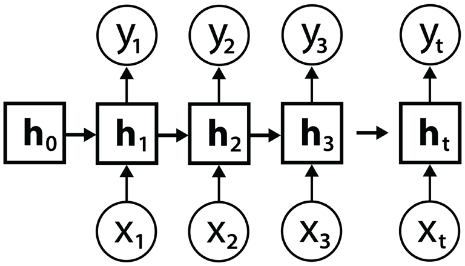
Figure 19.2. The anatomy of a cell with the num-
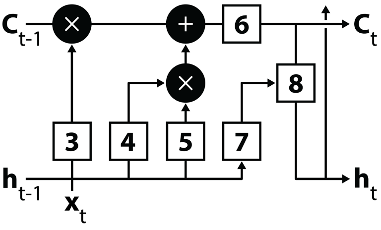
bers corresponding to the update equations for the
LSTM.
Figure 19.1. Simple recurrent neural network
LSTM Implementation
The generative LSTM models used in this chapter were
LSTM Models implemented using Keras (Chollet, 2015), a Python
A popular variant of the RNN is the long short-term library built on top of Theano (Bergstra et al., 2010;
memory (LSTM; Hochreiter & Schmidhuber, 1997) Bastien et al., 2012). The model takes each student
architecture, which is thought to help RNNs learn action represented by an index number. These indi-
long-range dependencies by the addition of “gates” ces correspond to the index in a 1-hot encoding of
that learn when to retain meaningful information vectors, also known as dummy variabilization. The
in the latent state and when to clear or “forget” the model converts each index to an embedding vector,
latent state, allowing for meaningful long-term in- and then consumes the embedded vector one at a
teractions to persist. LSTMs add additional gating time. The use of an embedding layer is common in
parameters explicitly learned in order to determine natural language processing and language modelling
when to clear and when to augment the latent state (Goldberg & Levy, 2014) as a way to map words to a
with useful information. Instead, each hidden state multi-dimensional semantic space. An embedding
hi is replaced by an LSTM cell unit, which contains layer is used here with the hypothesis that a similar
additional gating parameters. Because of these gates, mapping may occur for actions in the MOOC action
LSTMs have been found to train more effectively than space. The model is trained to predict the next student
simple RNNs (Bengio, Simard, & Frasconi, 1994; Gers, action, given actions previously taken by the student.
Schmidhuber, & Cummins, 2000). The update equations Back propagation through time (Werbos, 1988) is used
for an LSTM are as follows: to train the LSTM parameters, using a softmax layer
f = σ(W x + W h + b ) (3) t with the index of the next action as the ground truth.
fx t fh t − 1 f Categorical cross entropy is used calculating loss, and
i = σ(W x + W h + b ) (4) RMSprop is used as the optimizer. Drop out layers t ix t ih t −1 i
were added between LSTM layers as a method to curb
CHAPTER 19 PREDICTIVE MODELLING OF STUDENT BEHAVIOUR USING GRANULAR LARGE-SCALE ACTION DATA PG 227 overfitting (Pham, Bluche, Kermorvant, & Louradour, LSTM model hyperparameter set.
of network edge weights for each batch of training N-gram models are simple, yet powerful probabilistic data. In future work, it may be worthwhile to evaluate 2014). Drop out randomly zeros out a set percentage Shallow Models
other regularization techniques crafted specifically through the statistics of models that aim to capture the structure of sequences for LSTMs and RNNs (Zaremba, Sutskever, & Vinyals, grams n-sized sub-sequences called
and LSTM model code public,1 which begins with ex- xi using the estimated conditional probability P(x-tracting only the navigational actions from the dataset. | x , ..., x ), which is the probability that xi follows i i −( n −1) i−1 LSTM Hyperparameter Search 2014). We have made a version of our pre-processing Specifically, the model predicts each sequence state and are equivalent to n-order Markov chains.
the previous n-1 states in the training set. N-gram
As part of our initial investigation, we trained 24 LSTM models are both fast and simple to compute, and have
models each with a different set of hyperparameters a straightforward interpretation. We expect n-grams for 10 epochs each. An epoch is the parameter-fitting to be an extremely competitive standard, as they are
algorithm making a full pass through the data. The relatively high parameter models that essentially assign
searched space of hyperparameters for our LSTM a parameter per possible action in the action space.
models is shown in Table 19.2. These hyperparameters For the n-gram models, we evaluated those where n were chosen for grid search based on previous work ranged from 2 to 10, the largest of which corresponds to
that prioritized different hyperparameters based on the size of our LSTM context window during training. To
effect size (Greff, Srivastava, Koutník, Steunebrink, & handle predictions in which the training set contained
Schmidhuber, 2015). For the sake of time, we chose not no observations, we employed backoff, a method that to train 3-layer LSTM models with learning rates of recursively falls back on the prediction of the largest
.0001. We also performed an extended investigation, n-gram that contains at least one observation. Our
where we used the results from the initial investiga- validation strategy was identical to the LSTM models,
tion to serve as a starting point to explore additional wherein the average cross-validation score of the same
hyperparameter and training methods. five folds was computed for each model.
the extended investigation consisted of a subset of We also included a number of alternative models aimed promising hyperparameter combinations (see the Because training RNNs is relatively time consuming, Course Structure Models
Results section). of the sequence data. The first thing we noticed when at exploiting hypothesized structural characteristics
inspecting the sequences was that certain actions are
Table 19.2. LSTM Hyperparameter Grid repeated several times in a row. For this reason, it is
Hidden Layers important to know how well this assumption alone 1 2 3 predicts the next action in the dataset. Next, since Nodes in Hidden Layer 64 128 256 course content is most often organized in a fixed
Learning Rate (_) 0.01 0.001 .0001* sequence, we evaluated the ability of the course syl-
labus to predict the next page or action. We accom-
Cross Validation plished this by mapping course content pages to student page transitions in our action set, which To evaluate the predictive power of each model, 5-fold yielded an overlap of 174 matches out of the total 300 cross validation was used. Each model was trained on items in the syllabus. Since we relied on matching 80% of the data and then validated on the remaining content ID strings that were not always present in our 20%; this was done five times so that each set of student action space, a small subset of possible overlapping actions was in a validation set once. For the LSTMs, actions were not mapped. Finally, we combined both the model held out 10% of its training data to serve models, wherein the current state was predicted as as the hill climbing set to provide information about the next state if the current state was not in the syl - validation accuracy during the training process. Each labus. row in the held out set consists of the entire sequence
next action predictions produced by the model is of actions a student took. The proportion of correct RESULTS computed for each sequence of student actions. The
proportions for an entire fold are averaged to gener- In this section, we discuss the results from the previ-
ate the model’s performance for that particular fold, ously mentioned LSTM models trained with different
and then the performances across all five folds are learning rates, number of hidden nodes per layer, and
averaged to generate the CV-accuracy for a particular number of LSTM layers. Model success is determined
through 5-fold cross validation and is related to how
1 https://github.com/CAHLR/mooc-behavior-case-study
PG 228 HANDBOOK OF LEARNING ANALYTICS
well the model predicts the next action. N-gram Table 19.3. LSTM Performance (10 Epochs) models, as well as other course structure models, are
validated through 5-fold cross validation. Learn Rate Nodes Layers Accuracy
LSTM Models 0.01 64 1 0.7014
Table 19.3 shows the CV-accuracy for all 24 LSTM 0.01 64 2 0.7009 models computed after 10 iterations of training. For 0.01 64 3 0.6997
the models with a learning rate of .01, accuracy on the 0.01 128 1 0.7046 hill climbing sets generally peaked at iteration 10. For
the models with the lower learning rates, it would be 0.01 128 2 0.7064
reasonable to expect that peak CV-accuracies would 0.01 128 3 0.7056
improve through more training. We chose to simply 0.01 256 1 0.7073 report results after 10 iterations instead to provide 0.01 256 2 0.7093
a snapshot of how well these models are performing 0.01 256 3 0.7092 during the training process. We also hypothesize that
model performance is unlikely to improve drastically 0.001 64 1 0.6941
over the .01 learning rate model performances in the 0.001 64 2 0.6968
long-run, and we need to maximize the most prom- 0.001 64 3 0.6971 ising explorations to run on limited GPU computation 0.001 128 1 0.6994
resources. The best CV-accuracy for each learning 0.001 128 2 0.7022 rate is bolded for emphasis. 0.001 128 3 0.7026 One downside of using LSTMs is that they require 0.001 256 1 0.7004 a GPU and are relatively slow to train. Thus, when investigating the best hyperparameters to use, we 0.001 256 2 0.7050
chose to train additional models based only on a 0.001 256 3 0.7050 subset of the initial explorations. We also extend the 0.0001 64 1 0.6401
amount of context exposed to the model, extending 0.0001 64 2 0.4719 past context from 10 elements to 100 elements. Table
4 shows these extended results. Each LSTM layer has 0.0001 128 1 0.6539
256 nodes and is trained for either 20 or 60 epochs, 0.0001 128 2 0.6648
as opposed to just 10 epochs in the previous hyper- 0.0001 256 1 0.6677 parameter search results. The extended results show 0.0001 256 2 0.6894 a large improvement over the previous results, where
the new accuracy peaked at .7223 compared to .7093. Table 19.4. Extended LSTM Performance (256 Nodes, Figure 19.3 shows validation accuracy on the 10% 100 Window Size) hill-climbing hold out set during training by epoch for Learn Rate Epoch Layers Accuracy
the 1 and 2 layer models from the initial exploration. 0.01 20 2 0.7190 Each data point represents the average hill-climbing 0.01 60 2 0.7220 accuracy among all three learning rates for a particular layer and node count combination. Empirically, having 0.01 20 3 0.7174 a higher number of nodes is associated with a higher 0.01 60 3 0.7223
accuracy in the first 10 epochs, while 2 layer models 0.001 20 2 0.7044
start with lower validation accuracies for a few epochs 0.001 60 2 0.7145 before approaching or surpassing the corresponding 1 layer model. This figure provides a snapshot for the first 0.001 20 3 0.7039
10 epochs; clearly, for some parameter combinations, 0.001 60 3 0.7147 more epochs would result in a higher hill-climbing
accuracy, as shown by the additional extended LSTM
search. Extrapolating, 3-layer models may also follow Course Structure Models the trend that the 2-layer models exhibited where Model performance for the different course structure
accuracies may start lower initially before improving models is shown in Table 19.5. Results suggest that
over their lower-layer counterparts. many actions can be predicted from simple heuristics
such as stationarity (same as last), or course content
structure. Combining both of these heuristics (“syllabus
+ repeat”) yields the best results, although none of the
CHAPTER 19 PREDICTIVE MODELLING OF STUDENT BEHAVIOUR USING GRANULAR LARGE-SCALE ACTION DATA PG 229 alternative models obtained performance within the Table 19.7. Proportion of 10-gram prediction by n range of the LSTM or n-gram results.
n % Predicted by
1 0.0003
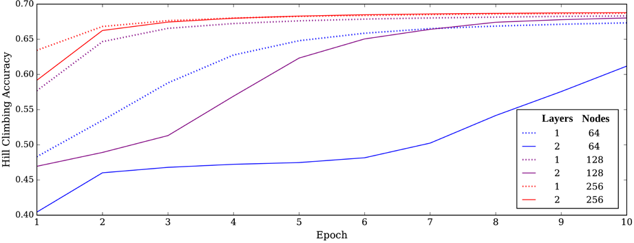
2 0.0084
3 0.0210
4 0.0423 5 0.0524
6 0.0605
Figure 19.3. 7 0.0624 Average accuracy by epoch on hill
climbing data, which comprised 10% of each 8 0.0615
training set. 9 0.0594
10 0.6229
Table 19.5. Structural Models
Structural Model Still, about 6% fewer data points looks to be predicted Accuracy
by successively larger n-grams.
repeat 0.2908 Validating on Uncertified Students syllabus 0.2339 We used the best performing “original” LSTM model syllabus + repeat 0.4533 after 10 epochs of training (.01 learn rate, 256 nodes,
2 layers) to predict actions on streams of data from
N-gram Models students who did not ultimately end up certified. Many
Model performance is shown in Table 19.6. The best uncertified students only had a few logged actions, so
performing models made predictions using either the we restricted analysis to students who had at least 30
previous 7 or 8 actions (8-gram and 9-gram respec- logged actions. There were 10,761 students who met
tively). Larger histories did not improve performance, these criteria, with a total of 2,151,662 actions. The
indicating that our range of n was sufficiently large. LSTM model was able to predict actions correctly
Performance in general suggests that n-gram models from the uncertified student space with .6709 accu-
were competitive with the LSTM models, although racy, compared to .7093 cross-validated accuracy for
the best n-gram model performed worse than the certified students. This difference shows that actions
best LSTM models. Table 19.7 shows the proportion from certified students tend to be different than actions
of n-gram models used for the most complex model from uncertified students, perhaps showing potential
(10-gram). More than 62% of the predictions were application in providing an automated suggestion
made using 10-gram observations. Further, fewer than framework to help guide students. 1% of cases fell back on unigrams or bigrams to make
predictions, suggesting that there was not a significant Table 19.8. Cross Validated Models Comparison
lack of observations for larger gram patterns. N-gram Correct N-gram Incorrect
LSTM Correct 7,565,862 577,683
Table 19.6. N-gram Performance LSTM Incorrect 367,960 2,735,702
N-gram Accuracy
2-gram 0.6304 CONTRIBUTIONS 3-gram 0.6658
4-gram 0.6893 In this work, we approached the problem of modelling 5-gram 0.6969 granular student action data by modelling all types of 6-gram 0.7012 interactions within a MOOC. This differs in approach
7-gram from previous work, which primarily focuses on mod- 0.7030
elling latent student knowledge using assessment
8-gram 0.7035 results. In predicting a student’s next action, the best 9-gram 0.7035 performing LSTM model produced a cross-validation 10-gram 0.7033 accuracy of .7223, which was an improvement over the
best n-gram model accuracy of .7035: 210,000 more
PG 230 HANDBOOK OF LEARNING ANALYTICS
correct predictions of the total 11-million possible. additional tokens to represent time between actions.
Table 8 shows the number of times the two models The primary reason for applying deep learning models agreed or disagreed on a correct or an incorrect to large sets of student action data is to model student prediction during cross validation. Both LSTM and behaviour in MOOC settings, which leads to insights n -gram models provide significant improvement over about how successful and unsuccessful students the structural model of predicting the next action by navigate through the course. These patterns can be syllabus course structure and through repeats, which leveraged to help in the creation of automated rec- shows that patterns of student engagement clearly ommendation systems, wherein a struggling student deviate from a completely linear navigation through can be provided with transition recommendations the course material. to view content based on their past behaviour and
To our knowledge, this chapter marks the first time performance. To evaluate the possibility of such an
that behavioural data has been predicted at this level application, we plan to test a recommendation sys-
of granularity in a MOOC. It also represents the first tem derived from our network against an undirected
time recurrent neural networks have been applied to control group experimentally. Additionally, future
MOOC data. We believe that this technique for rep- work should assess performance of similar models
resenting students’ behavioural states from raw time for a variety of courses and examine to what extent
series data, without feature engineering, has broad course-general patterns can be learned using a single
applicability in any learning analytics context with high model. The models proposed in this chapter maintain a
volume time series data. While our framing suggests computational model of behaviour. It was demonstrat-
how behavioural data models could be used to suggest ed through these models that regularities do exist in
future behaviours for students, the representation student behaviour sequences in MOOCs. Given that a
of their behavioural states could prove valuable for computational model was able to detect these patterns,
making a variety of other inferences on constructs what can the model tell us about student behaviours
ranging from performance to affect. more broadly and how might those findings connect
to and build upon existing behavioural theories? Since
FUTURE WORK the model tracks a hidden behavioural state for the student at every time slice, this state can be visualized
Both the LSTM and the n-gram models have room for and correlated with other attributes of the students
improvement. In particular, our n-gram models could known to present at that time. Future work will seek
benefit from a combination of backoff and smoothing to open up this computational model of behaviour so
techniques, which allow for better handling of unseen that it may help inform our own understanding of the
grams. Our LSTM may benefit from a broader hyper- student condition. parameter grid search, more training time, longer
training context windows, and higher-dimensional ACKNOWLEDGEMENTS
ratio in our dataset could be increased by removing less This work was supported by a grant from the National action embeddings. Additionally, the signal-to-noise
informative or redundant student actions, or adding Science Foundation (IIS: BIGDATA 1547055).
REFERENCES
Bastien, F., Lamblin, P., Pascanu, R., Bergstra, J., Goodfellow, I. J., Bergeron, A., . . . Bengio, Y. (2012). Theano:
New features and speed improvements. Deep Learning and Unsupervised Feature Learning NIPS 2012
Workshop. Advances in Neural Information Processing Systems 25 (NIPS 2012), 3–8 December 2012, Lake
Tahoe, NV, USA. http://www.iro.umontreal.ca/~lisa/pointeurs/nips2012_deep_workshop_theano_final.
Bengio, Y., Simard, P., & Frasconi, P. (1994). Learning long-term dependencies with gradient descent is difficult.
IEEE Transactions on Neural Networks, 5(2), 157–166.
Bergstra, J., Breuleux, O., Bastien, F., Lamblin, P., Pascanu, R., Desjardins, G., . . . Bengio, Y. (2010, June). Theano:
A CPU and GPU math expression compiler. Proceedings of the Python for Scientific Computing Conference
(SciPy 2010), 28 June–3 July 2010, Austin, TX, USA (pp. 3–10).
CHAPTER 19 PREDICTIVE MODELLING OF STUDENT BEHAVIOUR USING GRANULAR LARGE-SCALE ACTION DATA PG 231 Brown, P. F., Desouza, P. V., Mercer, R. L., Pietra, V. J. D., & Lai, J. C. (1992). Class-based n-gram models of natu-
ral language. Computational Linguistics, 18(4), 467–479.
Chollet, F. (2015). Keras. GitHub. https://github.com/fchollet/keras
Corbett, A. T., & Anderson, J. R. (1994). Knowledge tracing: Modeling the acquisition of procedural knowledge.
User Modeling and User-Adapted Interaction, 4(4), 253–278.
Crossley, S., Paquette, L., Dascalu, M., McNamara, D. S., & Baker, R. S. (2016). Combining click-stream data
with NLP tools to better understand MOOC completion. Proceedings of the 6th International Conference on
Learning Analytics and Knowledge (LAK ’16), 25–29 April 2016, Edinburgh, UK (pp. 6–14). New York: ACM.
Gers, F. A., Schmidhuber, J., & Cummins, F. (2000). Learning to forget: Continual prediction with LSTM. Neural
Computation, 12(10), 2451–2471.
Goldberg, Y., & Levy, O. (2014). Word2vec explained: Deriving Mikolov et al.’s negative-sampling word-embed-
ding method. CoRR. arxiv.org/abs/1402.3722
Graves, A., Mohamed, A.-r., & Hinton, G. (2013). Speech recognition with deep recurrent neural networks. Pro-
ceedings of the 2013 IEEE International Conference on Acoustics, Speech and Signal Processing (ICASSP 2013),
26–31 May, Vancouver, BC, Canada (pp. 6645–6649). Institute of Electrical and Electronics Engineers.
Greff, K., Srivastava, R. K., Koutník, J., Steunebrink, B. R., & Schmidhuber, J. (2015). LSTM: A search space odys-
sey. arXiv preprint arXiv:1503.04069.
Hochreiter, S., & Schmidhuber, J. (1997). Long short-term memory. Neural Computation, 9(8), 1735–1780.
Khajah, M., Lindsey, R. V., & Mozer, M. C. (2016). How deep is knowledge tracing? arXiv preprint arX-
iv:1604.02416.
Mikolov, T., Karafiát, M., Burget, L., Cernocky, J., & Khudanpur, S. (2010). Recurrent neural network based lan-
guage model. Proceedings of the 11th Annual Conference of the International Speech Communication Associa-
tion (INTERSPEECH 2010), 26–30 September 2010, Makuhari, Chiba, Japan (pp. 1045–1048). http://www.fit.
vutbr.cz/research/groups/speech/publi/2010/mikolov_interspeech2010_IS100722.pdf
Oleksandra, P., & Shane, D. (2016). Untangling MOOC learner networks. Proceedings of the 6th International
Conference on Learning Analytics and Knowledge (LAK ’16), 25–29 April 2016, Edinburgh, UK (pp. 208–212).
New York: ACM.
Pardos, Z. A., Bergner, Y., Seaton, D. T., & Pritchard, D. E. (2013). Adapting Bayesian knowledge tracing to a
massive open online course in EDX. In S. K. D’Mello et al. (Eds.), Proceedings of the 6th International Confer-
ence on Educational Data Mining (EDM2013), 6–9 July 2013, Memphis, TN, USA (pp. 137–144). International
Educational Data Mining Society/Springer.
Pardos, Z. A., & Xu, Y. (2016). Improving efficacy attribution in a self-directed learning environment using prior
knowledge individualization. Proceedings of the 6th International Conference on Learning Analytics and
Knowledge (LAK ’16), 25–29 April 2016, Edinburgh, UK (pp. 435–439). New York: ACM.
Pham, V., Bluche, T., Kermorvant, C., & Louradour, J. (2014). Dropout improves recurrent neural networks for
handwriting recognition. Proceedings of the 14th International Conference on Frontiers in Handwriting Rec-
ognition (ICFHR 2014) 1–4 September 2014, Crete, Greece (pp. 285–290).
Piech, C., Bassen, J., Huang, J., Ganguli, S., Sahami, M., Guibas, L. J., & Sohl-Dickstein, J. (2015). Deep knowledge
tracing. In C. Cortes et al. (Eds.), Advances in Neural Information Processing Systems 28 (NIPS 2015), 7–12
December 2015, Montreal, QC, Canada (pp. 505–513).
Reddy, S., Labutov, I., & Joachims, T. (2016). Latent skill embedding for personalized lesson sequence recom-
mendation. CoRR. arxiv.org/abs/1602.07029
Reich, J., Stewart, B., Mavon, K., & Tingley, D. (2016). The civic mission of MOOCs: Measuring engagement
across political differences in forums. Proceedings of the 3rd ACM Conference on Learning @ Scale (L@S
2016), 25–28 April 2016, Edinburgh, Scotland (pp. 1–10). New York: ACM.
PG 232 HANDBOOK OF LEARNING ANALYTICS
Sharma, A., Biswas, A., Gandhi, A., Patil, S., & Deshmukh, O. (2016). Livelinet: A multimodal deep recurrent
neural network to predict liveliness in educational videos. In T. Barnes et al. (Eds.), Proceedings of the 9th
International Conference on Educational Data Mining (EDM2016), 29 June–2 July 2016, Raleigh, NC, USA.
International Educational Data Mining Society. http://www.educationaldatamining.org/EDM2016/pro-
ceedings/paper_64.pdf
Vinyals, O., Kaiser, L. Koo, T., Petrov, S., Sutskever, I., & Hinton, G. (2015). Grammar as a foreign language. In C.
Cortes et al. (Eds.), Advances in Neural Information Processing Systems 28 (NIPS 2015), 7–12 December 2015,
Montreal, QC, Canada (pp. 2755–2763). http://papers.nips.cc/paper/5635-grammar-as-a-foreign-lan-
guage.pdf
Vinyals, O., Toshev, A., Bengio, S., & Erhan, D. (2015). Show and tell: A neural image caption generator. Proceed-
ings of the 2015 IEEE Computer Society Conference on Computer Vision and Pattern Recognition (CVPR 2015),
8–10 June 2015, Boston, MA, USA. IEEE Computer Society. arXiv:1411.4555
Wen, M., & Rosé, C. P. (2014). Identifying latent study habits by mining learner behavior patterns in massive
open online courses. Proceedings of the 23rd ACM International Conference on Information and Knowledge
Management (CIKM ’14), 3–7 November 2014, Shanghai, China (pp. 1983–1986). New York: ACM.
Wen, M., Yang, D., & Rosé, C. P. (2014). Sentiment analysis in MOOC discussion forums: What does it tell
us? In J. Stamper et al. (Eds.), Proceedings of the 7th International Conference on Educational Data Mining
(EDM2014), 4–7 July 2014, London, UK. International Educational Data Mining Society. http://www.cs.cmu.
edu/~mwen/papers/edm2014-camera-ready.pdf
Werbos, P. J. (1988). Generalization of backpropagation with application to a recurrent gas market model. Neu-
ral Networks, 1(4), 339–356.
Zaremba, W., Sutskever, I., & Vinyals, O. (2014). Recurrent neural network regularization. arXiv:1409.2329
CHAPTER 19 PREDICTIVE MODELLING OF STUDENT BEHAVIOUR USING GRANULAR LARGE-SCALE ACTION DATA PG 233
PG 234 HANDBOOK OF LEARNING ANALYTICS
Chapter 20: Applying Recommender Systems
for Learning Analytics: A Tutorial
Soude Fazeli1, Hendrik Drachsler2, Peter Sloep2
1 Welten Institute, Research Centre for Learning, Teaching and Technology, The Netherlands 2 Open University of the Netherlands, The Netherlands
DOI: 10.18608/hla17.020
ABSTRACT
This chapter provides an example of how a recommender system experiment can be conducted in the domain of learning analytics (LA). The example study presented in this chapter followed a standard methodology for evaluating recommender systems in learning. The example is set in the context of the FP7 Open Discovery Space (ODS) project that aims to provide educational stakeholders in Europe with a social learning platform in a social network similar to Facebook, but unlike Facebook, exclusively for learning and knowledge sharing. In this chapter, we describe a full recommender system data study in a stepwise process. Furthermore, we outline shortcomings for data-driven studies in the domain of learning and emphasize the high need for an open learning analytics platform as suggested by the SoLAR society.
Keywords: Recommender system, offline data study, user study, collaborative filtering, information search and retrieval, information filtering, research, methodology, sparsity
With the emergence of massive amounts of data in tive filtering is based on users’ opinions and feedback
various domains, recommender systems have become on items. Collaborative filtering algorithms first find
a practical approach to provide users with the most like-minded users and introduce them as so-called
suitable information based on their past behaviour and nearest neighbours to some target user; then they
current context. Duval (2011) introduced recommend- predict an item’s rating for that user on the basis of the
ers as a solution “to deal with the ‘paradox of choice’ ratings given to this item by the target users’ nearest
and turn the abundance from a problem into an asset neighbours (co-ratings) (Herlocker, Konstan, Terveen,
for learning” (p. 9), pointing out that several domains & Riedl, 2004; Manouselis, Drachsler, Verbert, & Duval,
such as educational data mining, big data, and Web 2012; Schafer, Frankowski, Herlocker, & Sen, 2007).
analytics all try to find patterns in large amounts of In the past, we have applied recommender systems in data. For instance, data mining approaches can make various educational projects with different objectives recommendations based on similarity patterns de- (Drachsler et al., 2010; Fazeli, Loni, Drachsler, & Sloep, tected from the collected data of users. Furthermore, 2014; Drachsler et al., 2009). In this chapter we want a survey conducted by Greller and Drachsler (2012), to share some best practices we have identified so far identified recommender systems and personalization regarding the development and evaluation of recom- as an important part of LA research. mender system algorithms in education; we especially
Recommender systems can be differentiated according want to provide an example of how to set up and run
to their underlying technology and algorithms. Rough- a recommender systems experiment.
ly, they are either content-based or use collaborative As described by the RecSysTEL working group for
filtering. Content-based algorithms are one of the Recommender Systems in Technology-Enhanced
main methods used in recommender systems; they Learning (Drachsler, Verbert, Santos, & Manouselis,
recommend an item to the user by comparing the 2015) it is important to apply a standard evaluation
representation of the item’s content with the user’s method. The working group identified a research
preference model (Pazzani & Billsus, 2007). Collabora- methodology consisting of four critical steps for eval-
CHAPTER 20 APPLYING RECOMMENDER SYSTEMS FOR LEARNING ANALYTICS: A TUTORIAL PG 235 uating a recommender system in education: (Manouselis et al., 2012).
1. A selection of dataset(s) that suit the recommen- In our study, our target environment is social learning
dation task. For instance, the recommendation platforms in general. Social learning platforms work
task can be finding new items or finding relevant similarly to social networks such as Facebook but,
items for a user. unlike Facebook, they are developed exclusively for
2. An the purpose of learning and knowledge sharing. They offline data study of different algorithms on the
selected datasets including well-known datasets often serve, therefore, as a common place exclusively
as MovieLens makes movie recommendations) learners, policy makers, and so on. Our target social 2 learning platform is Open Discovery Space (ODS). As to provide insights into the performance of the (if possible, education-oriented datasets such for educational stakeholders such as teachers, students,
recommender systems. indicated on the ODS homepage,
3. A comprehensive ODS addresses various challenges that face the user study to test psycho-educa- eLearning environment in the European context. tional effects on learners as well as on the technical The interface has been designed with students, aspects of the designed recommender system. teachers, parents and policy makers in mind. 4. A deployment of the recommender system in a ODS will fulfill three principal objectives. Firstly, real life application, where it can be tested un- it will empower stakeholders through a single, der realistic, normal operational conditions with integrated access point for eLearning resources actual users. from dispersed educational repositories. Sec-
The above four steps should be accompanied by a ondly, it engages stakeholders in the production
complete description of the recommender system of meaningful educational activities by using a
according to the classification framework presented social-network style multilingual portal, offering
(Drachsler et al., 2015). The dataset used should be eLearning resources as well as services for the
reported in the special section on educational datasets production of educational activities. Thirdly, it
of the Journal of Learning Analytics will assess the impact of the new educational 1 and made avail-
able for other researchers under certain conditions activities, which could serve as a prototype to
(Dietze, Siemens, Taibi, & Drachsler, 2016). This would be adopted by stakeholders in school education.
allow other researchers to repeat and adjust any part The main goal of our study is to find out which rec-
of the research to gain comparable results and new ommender system can best suit the data and infor-
insights and thus build up a body of knowledge around mation needs of a social learning platform, the main
recommender systems in learning analytics. recommendation task being to finding relevant items
In this chapter, we present an example of an exper- for users. In the following sub-sections, we describe
imental study that followed the research methodol- the study step by step.
ogy described above for recommender systems in Dataset Selection education. The rest of the chapter is organized as Most data studies target a specific environment or
follows: In the next section, we present an example specific group of users and thus require a specific
of a recommender system study that followed the type of data. In our case, the target social learning
methodology described above step by step. Next, we platforms is ODS. Consequently, we tried to find data
explain the practical implications of the experiment; collected from learning platforms similar to ODS.
then, we conclude. We chose the MACE and OpenScout datasets for the
A RECOMMENDER SYSTEM 1. The datasets provide social data of users (ratings, following reasons:
EXPERIMENT IN THE EDUCATIONAL tags, reviews, et cetera) on learning resources. DOMAIN So, the structure, content, and target users of the
In this section, we describe how one should evaluate datasets are similar to those of ODS.
a recommender system in learning, making use of an 2. Running recommender algorithms on these data-
experimental study presented in our 2014 EC-TEL paper sets helps us to evaluate their performance before
(Fazeli et al., 2014). This study follows the standard going online with the actual users of the ODS.
oping a conceptual/theoretical model (Fazeli et al., with the CAM (Context Automated Metadata) for- mat (Schmitz et al., 2009), which offers a standard 2013)., which is presented in a RecSysTEL special issue metadata specification for collecting and storing 1 https://epress.lib.uts.edu.au/journals/index.php/JLA/article/ however, we added an additional step: that of devel- 3. Both the MACE and OpenScout datasets comply methodology described above. To this methodology,
view/5071/5600 2 http://opendiscoveryspace.eu
PG 236 HANDBOOK OF LEARNING ANALYTICS
Table 20.1. Details of the Selected Datasets
Dataset # of users # of items Transactions Sparsity (%) Source
MACE 631 12,571 23,032 99.70 MACE portal OpenScout 331 1,568 2,560 99.50 OpenScout portal
MovieLens 941 1,512 96,719 93.69 GroupLens research
social data. CAM has also been applied in the ODS user-based and item-based. Figure 20.1 shows our
for storing social data. experimental method, consisting of three main steps:
Besides these two datasets, we also tested the Mov- 1. We compared performance of memory-based
ieLens dataset as a reference since, up until now, the CFs, including both user-based and item-based,
educational domain has been lacking reference datasets by employing different similarity functions.
for study, unlike the ACM RecSys conference series, 2. We ran the model-based CFs, including state- which deals with recommender systems in general. of-the-art Matrix Factorization methods, on our Table 20.1 provides an overview of all three datasets sample data. (Fazeli et al., 2014). Note that the educational datasets 3. We performed a final comparison of best-performing MACE and OpenScout clearly suffer from extreme algorithms from steps 1 and 2. In addition to the sparsity. All the data are described more fully our baselines, we evaluated a graph-based approach EC-TEL 2014 article (Fazeli et al., 2014). proposed to enhance the mechanism of finding Offline Data Study neighbours using the conventional k-nearest Algorithms. In this second step, we tried to select neighbours (kNN) method (Fazeli et al., 2014). algorithms that would work well with our data. First, Performance Evaluation. After choosing suitable it is important to check the input data to be fed into datasets and recommender algorithms, we arrive at the recommender algorithms. In this case, the ODS the task of evaluating the performance of candidate data, thus the data of the selected datasets, includes algorithms. For this, we need to define an evaluation interaction data of users with learning resources (items). protocol (Herlocker et al., 2004). A good description Therefore, we chose to use the Collaborative Filtering of an evaluation protocol should address the following (CF) family of recommender systems. CF algorithms questions: rely on the interaction data of users, such as ratings,
bookmarks, views, likes, et cetera, rather than on the Q1. What is going to be measured? content data used by content-based recommenders.
Typically, in most offline recommender system studies,
CF recommenders can be either memory-based or
we measure the prediction accuracy of the recom-
model-based, according to the “type”; they can be
mendations generated. By this, we want to measure
either item-based or user-based, referring to the
how much the rating predictions differ from the actual
“technique.” For a detailed description of these dis-
ones by comparing a training set and a test set. The
tinctions, please see Section 4 of Fazeli et al. (2014). In
training and test sets result from splitting our user
our study, we made use of all types and techniques:
ratings data (the same as user interaction data). In our
both memory-based and model-based, as well as both
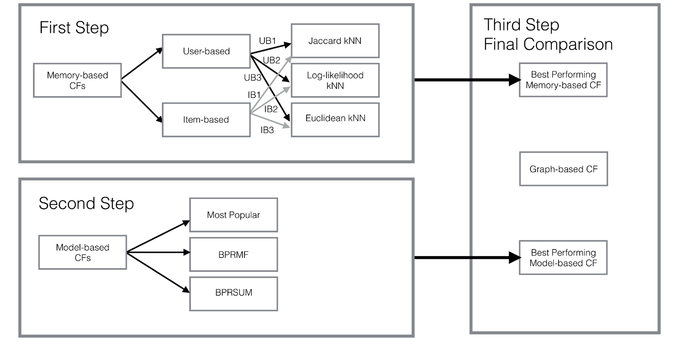
Figure 20.1. Experimental method used in Fazeli et al., 2014.
CHAPTER 20 APPLYING RECOMMENDER SYSTEMS FOR LEARNING ANALYTICS: A TUTORIAL PG 237
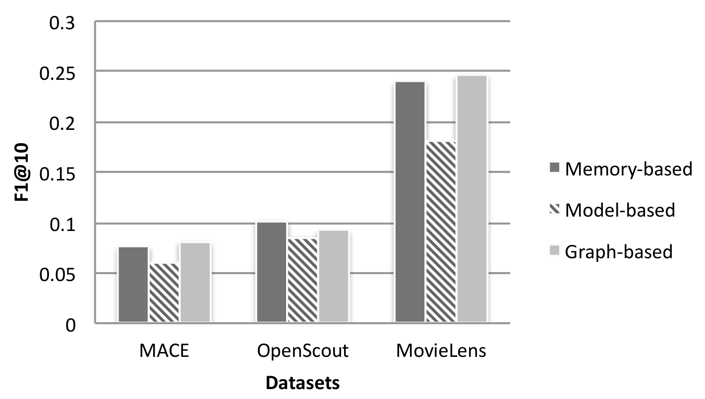
Figure 20.2. F1 of the graph-based CF and the best performing baseline memory-based and model-based CFs
for all the datasets used (Fazeli et al., 2014).
EC-TEL 2014 study, we split user ratings into 80% and and MovieLens (24%) and the selected memory-based
20% for the training set and the test set, respectively. and model-based CFs come in second and third place
This kind of split is commonly used in recommender right after the graph-based CF. For OpenScout, the
systems evaluations (Fazeli et al., 2014). memory-based approach performs better with a dif-
Q2. Which metrics are suitable for a recommender ference of almost 1%.
system study? In conclusion, according to the results presented in
If our input data contains explicit user preferences, Figure 20.2, the graph-based approach seems to per- form well for social learning platforms. This is reflected such as 5-star ratings, we can use MAE (mean average by an improved F1, which is an effective combination error) or RMSE (root mean square error). MAE and of precision and recall of the recommendation made. RMSE both follow the same range as the user ratings;
for example, if the data contains 5-star ratings, these Deployment of the Recommender System
metrics range from 1 to 5. and User Study
If the input data contains implicit user preferences, In the educational domain, the importance of user studies has become ever more apparent (Drachsler such as views, bookmarks, downloads, et cetera, we et al., 2015). Since the main aim of recommender sys- can use Precision, Recall, and F1 scores. We made use tems in education goes beyond accurate predictions, of the F1 score since it combines precision and recall, it should extend to other quality indicators such as which are both important metrics in evaluating the usefulness, novelty, and diversity of the recommenda- accuracy and coverage of the recommendations gen- tions. However, the majority of recommender system erated (Herlocker et al., 2004). F1 ranges from 0 to 1. studies still rely on offline data studies alone. This is In addition, we need to define the n in top-n rec - probably because user studies are time consuming ommendations on which a metric is measured, also and complicated. known as a cut-off . In Fazeli et al. (2014), we computed After running the offline data study on the ODS data, the F1 for the top 10 recommendations of the result we furthered the work reported in Fazeli et al. (2014) set for each user. by conducting a user study with our target platform. Finally, we present the results of running the candi- For this, we integrated the algorithms that performed date algorithms on the datasets following the defined best with ODS. We asked actual users of ODS wheth - evaluation protocol. Due to limited space, we only er they were satisfied with the recommendations we present the final results of our EC-TEL 2014 article made for them. For this we used a short questionnaire here. Please see Sections 5.1 and 5.2 of the original using five metrics: usefulness, accuracy, novelty, di - article (Fazeli et al., 2014) for more results. versity, and serendipity. The full description and results
Figure 20.2 shows the F1 results of best performing of this data study and the follow-up user study have
memory-based CF (Jaccard kNN), model-based CF (a not been published yet. The user study does not con-
Bayesian method), compared to the graph-based CF. firm the results of the data study we had run on the
The x-axis indicates the datasets used and the y-axis actual ODS data, showing that it is quite necessary to
shows the values of F1. As Figure 20.2 shows, the run user studies that can go beyond the success in-
graph-based approach performs best for MACE (8%) dictors of data studies, such as prediction accuracy.
PG 238 HANDBOOK OF LEARNING ANALYTICS
Accuracy is one of the important metrics in evaluat- a linked data pool for learning analytics research and
ing recommender systems but relying solely on this to run several data competitions through the central
metric can lead data scientists and educational tech- data pool.
nologists down less effective pathways. Overall, the outcomes of different recommender sys-
PRACTICAL IMPLICATIONS AND domain are still hardly comparable due to the diversity tems or personalization approaches in the education
LIMITATIONS of algorithms, learner models, datasets, and evaluation
criteria (Drachsler et al., 2015; Manouselis et al., 2012).
Accessing most educational datasets is challenging
since they are not publicly and openly available, for CONCLUSION example through reference links. Moreover, it is often
difficult to compare the findings of related studies, for The main goal of this chapter has been to illustrate
instance those by Verbert et al. (2011) and Manouselis, how to identify the most appropriate recommender
Vuorikari, and Van Assche (2010). Although we applied system for a learning environment. To do so, we fol-
the same datasets, and some of the algorithms used lowed an example data study using the standard
in those two studies, the results of our example study methodology presented in Drachsler et al. (2015) for
differ from their results. Therefore, we could not evaluating recommender systems in learning. The
gain additional information from the comparisons methodology consists of four main steps: regarding the personalization of learning resources.
1. Select suitable datasets preferably from the edu-
One possible reason is that the studies use different
cational domain and, in case the actual data is not
versions of the same dataset because the collected
available yet, similarly to the target data.
data belongs to different periods of time. For the MACE
dataset, for instance, different versions are available. 2. Run a set of candidate recommender algorithms
In fact, no unique version has been fixed for running that best fits the input data. The output of this
experiments nor for comparison in the recommender step should reveal which recommender algorithms
system community. best works with the input data.
This problem originates from the fact that, unfortunately, 3. Conduct a user study to measure user satisfaction
there is no gold-standard dataset in the educational on the recommendations made for them.
domain comparable to the MovieLens dataset3 in the 4. Deploy the best candidate recommender to the e-commerce world. In fact, the LA community is in need target learning platform. of several representative datasets that can be used as
a main set of references for different personalization The fact that our user study results did not confirm
approaches. The main aim is to achieve a standard the results of the offline data study illustrates the
data format to run LA research. This idea was initially importance of running user studies even though they
suggested by the dataTEL project (Drachsler et al., 2011) are quite time consuming and complicated. and later followed up by the SoLAR Foundation for
Learning Analytics (Gašević et al., 2011). In the domain ACKNOWLEDGMENTS
of MOOCs, Drachsler and Kalz (2016) have discussed This chapter has been partly funded by the EU FP7 this lack of comparable results and the pressing need Open Discovery Space project. This document does for a research cycle that uses data repositories to not represent the opinions of the European Union, compare scientific results. Moreover, an EU-funded and the European Union is not responsible for any project called LinkedUp 4 follows a promising approach use that might be made of its content. The work of towards providing a set of gold-standard datasets by Hendrik Drachsler has been supported by the FP7 applying linked data concepts (Bizer, Heath, & Bern - EU project LACE. ers-Lee, 2009). The LinkedUp project aims to provide
REFERENCES
Bizer, C., Heath, T., & Berners-Lee, T. (2009). Linked data: The story so far. International Journal on Semantic
Web and Information Systems, 5(3), 1–22.
Dietze, S., Siemens, G., Taibi, D., & Drachsler, H. (2016). Editorial: Datasets for learning analytics. Journal of
Learning Analytics, 3(3), 307–311. http://dx.doi.org/10.18608/jla.2016.32.15
3 http://www.grouplens.org/node/73
4 www.linkedup-project.eu
CHAPTER 20 APPLYING RECOMMENDER SYSTEMS FOR LEARNING ANALYTICS: A TUTORIAL PG 239 Drachsler, H., Hummel, H., van den Berg, B., Eshuis, J., Waterink, W., Nadolski, R., Berlanga, A., Boers, N., &
Koper, R. (2009). Effects of the ISIS recommender system for navigation support in self-organised learning
networks. Journal of Educational Technology & Society, 12(3), 115–126.
Drachsler, H., & Kalz, M. (2016). The MOOC and learning analytics innovation cycle (MOLAC): A reflective sum-
mary of ongoing research and its challenges. Journal of Computer Assisted Learning, 32(3), 281–290. http://
doi.org/ 10.1111/jcal.12135
Drachsler, H., Rutledge, L., Van Rosmalen, P., Hummel, H., Pecceu, D., Arts, T., Hutten, E., & Koper, R. (2010).
ReMashed: An usability study of a recommender system for mash-ups for learning. International Journal of
Emerging Technologies in Learning, 5. http://online-journals.org/i-jet/article/view/1191
Drachsler, H., Verbert, K., Santos, O., & Manouselis, N. (2015). Panorama of recommender systems to support
learning. In F. Ricci, L. Rokach, & B. Shapira (Eds.), Recommender systems handbook, 2nd ed. Springer.
Drachsler, H., Verbert, K., Sicilia, M.-A., Wolpers, M., Manouselis, N., Vuorikari, R., Lindstaedt, S., & Fischer, F.
(2011). dataTEL: Datasets for Technology Enhanced Learning — White Paper. Stellar Open Archive. http://
dspace.ou.nl/handle/1820/3846
Duval, E. (2011). Attention please! Learning analytics for visualization and recommendation. Proceedings of the
1st International Conference on Learning Analytics and Knowledge (LAK ’11), 27 February–1 March 2011, Banff,
AB, Canada (pp. 9–17). New York: ACM.
Fazeli, S., Loni, B., Drachsler, H., & Sloep, P. (2014). Which recommender system can best fit social learning
platforms? Proceedings of the 9th European Conference on Technology Enhanced Learning (EC-TEL ’14),
16–19 September 2014, Graz, Austria (pp. 84–97).
Gašević, G., Dawson, C., Ferguson, S. B., Duval, E., Verbert, K., & Baker, R. S. J. d. (2011, July 28). Open learning
analytics: An integrated and modularized platform. http://www.elearnspace.org/blog/wp-content/up-
loads/2016/02/ProposalLearningAnalyticsModel_SoLAR.pdf
Greller, W., & Drachsler, H. (2012). Translating learning into numbers: A generic framework for learning ana-
lytics. Proceedings of the 2nd International Conference on Learning Analytics and Knowledge (LAK ’12), 29
April–2 May 2012, Vancouver, BC, Canada (pp. 42–57). New York: ACM.
Herlocker, J. L., Konstan, J. A., Terveen, L. G., & Riedl, J. T. (2004). Evaluating collaborative filtering recom-
mender systems. ACM Transactions on Information Systems, 22(1), 5–53.
Manouselis, N., Drachsler, H., Verbert, K., & Duval, E. (2012). Recommender systems for learning. Springer Berlin
Heidelberg.
Manouselis, N., Vuorikari, R., & Van Assche, F. (2010). Collaborative recommendation of e-learning resources:
An experimental investigation. Journal of Computer Assisted Learning, 26(4), 227–242.
Pazzani, M. J., & Billsus, D. (2007). Content-based recommendation systems. In P. Brusilovsky, A. Kobsa, & W.
Nejdl (Eds.), The adaptive web: Methods and strategies of web personalization (pp. 325–341). Lecture Notes in
Computer Science vol. 4321. Springer.
Schafer, J. B., Frankowski, D., Herlocker, J., & Sen, S. (2007). Collaborative filtering recommender systems. In P.
Brusilovsky, A. Kobsa, & W. Nejdl (Eds.), The adaptive web: Methods and strategies of web personalization (pp.
291–324). Lecture Notes in Computer Science vol. 4321. Springer.
Schmitz, H., Scheffel, M., Friedrich, M., Jahn, M., Niemann, K., Wolpers, M., & Augustin, S. (2009). CAMera for
PLE. In U. Cress, V. Dimitrova, & M. Specht (Eds.), Learning in the Synergy of Multiple Disciplines: 4th Eu-
ropean Conference on Technology Enhanced Learning (EC-TEL 2009) Nice, France, September 29–October 2,
2009 Proceedings (pp. 507–520). Lecture Notes in Computer Science vol. 5794. Springer.
Verbert, K., Drachsler, H., Manouselis, N., Wolpers, M., Vuorikari, R., & Duval, E. (2011). Dataset-driven research
for improving recommender systems for learning. Proceedings of the 1st International Conference on Learn-
ing Analytics and Knowledge (LAK ’11), 27 February–1 March 2011, Banff, AB, Canada (pp. 44–53). New York:
ACM.
PG 240 HANDBOOK OF LEARNING ANALYTICS
Chapter 21: Learning Analytics for
Self-Regulated Learning
Philip H. Winne
Faculty of Education, Simon Fraser University, Canada
DOI: 10.18608/hla17.021
ABSTRACT
The Winne-Hadwin (1998) model of self-regulated learning (SRL), elaborated by Winne’s (2011, in press) model of cognitive operations, provides a framework for conceptualizing key issues concerning kinds of data and analyses of data for generating learning analyt-ics about SRL. Trace data are recommended as observable indicators that support valid inferences about a learner’s metacognitive monitoring and metacognitive control that constitute SRL. Characteristics of instrumentation for gathering ambient trace data via software learners can use to carry out everyday studying are described. Critical issues are discussed regarding what to trace about SRL, attributes of instrumentation for gathering ambient trace data, computational issues arising when analyzing trace and complementary data, the scheduling and delivery of learning analytics, and kinds of information to convey in learning analytics that support productive SRL.
Keywords: Grain size, metacognition, self-regulated learning (SRL), traces
Four descriptions of learning analytics are widely sets boundaries on and shapes, first, approaches to
cited. Siemens (2010) described learning analytics as computations that underlie analytics and, second,
“the use of intelligent data, learner-produced data, what analytics can say about phenomena. For instance,
and analysis models to discover information and social ordinal (rank) data preclude using arithmetic opera-
connections, and to predict and advise on learning.” tions on data, such as addition or division. If data are
The website for the 1st International Conference on not ordinal, A cannot be described as greater than B,
Learning Analytics and Knowledge posted this de- nor are transitive statements valid: if A > B and B > C,
scription: “the measurement, collection, analysis and then A > C.
purposes of understanding and optimizing learning ventions based on learning analytics developed from 1 and the environments in which it occurs.” Educause the data? For example, determining that a learner’s reporting of data about learners and their contexts, for What properties of data bear on the validity of inter-
(n.d.) defined learning analytics as “the use of data and age, sex, or lab group predicts outcomes offers weak
models to predict student progress and performance, grounds for intervening without other data. None
and the ability to act on that information.” Building of these data classes are legitimately considered a
on Eckerson’s (2006) framework, Elias (2011) notes direct, proximal (i.e., sufficient) cause of outcomes.
“learning analytics seeks [sic] to capitalize on the Age and sex can’t be manipulated; changing lab group
modelling capacity of analytics: to predict behaviour, may be impractical (e.g., due to scheduling conflicts
act on predictions, and then feed those results back with other courses or a job). And, notably, prediction
into the process in order to improve the predictions does not supply valid grounds for inferring causality.
over time” (p. 5).
These descriptions beg fundamental questions. What Learning ecologies involve multiple actors. Authors of Who generates data? Who receives learning analytics?
data should be gathered for input to methods that texts and web pages vary cues they intend to guide generate learning analytics? Answering this question learners about how to study; font styles and formats
1 https://tekri.athabascau.ca/analytics/ (bullet lists, sidebars that translate text to graphics)
CHAPTER 21 LEARNING ANALYTICS FOR SELF REGULATED LEARNING PG 241
are examples. Instructional designers and instructors work on a task. Examples of internal factors include
augment authors’ works, for example, by setting goals knowledge and misconceptions, interest in the task or
for learning and elaborating content. They create and topic, or a motivational disposition to interpret slow
recommend schedules for learning; they control most progress as a signal of low ability or of need to apply
opportunities for feedback to learners. Learners study more effort (see Winne, 1995).
solo and often form online cliques or study groups in Having identified resources and constraints, in phase which they exchange views about topics, share prod - 2 a learner sets goals and plans how to approach ucts of learning activities (e.g., questions, notes), and them. Goals are standards a product should meet. form and disengage from social units. The college or Ipsative goals compare a learner’s current results university strives to improve material and cyber in- to earlier results; they measure personal growth frastructure wherein other actors’ work unfolds. Each (or decline). Criterion-referenced goals measure a category of actors generates data and is a legitimate product in relation to a fixed profile of task features candidate to receipt of learning analytics. or achievements in a domain. Norm-referenced goals
What are the temporal qualities — onset, duration, position a learner’s product relative to a peer’s or a
and offset — of collecting data, processing it, and group’s. Comparisons may be framed by a learner, an
delivering learning analytics? Will learners receive instructor, or other person. It is important to note
learning analytics as they work or will they need to that goals can target attributes of learning processes:
be reminded of context when learning analytics are which process is used, effort dedicated to carrying
delayed? Are temporal delimiters positioned elastically out a process, efficiency of a process, or increasing
or rigidly across a timeline of learning? Whose model the probability a process yields a particular product.
of a learning episode — the analyst’s or the learner’s Goals also can be set in terms of products per se and
— matters? their attributes; for example, number of pages writ-
Finally, what are learning analytics supposed to help ten for an essay, anxiety reduced, or thoroughness of
improve? And, what standards should be used to gauge exposition. Plans describe actions a learner intends to
improvement? For example, if after receiving learning carry out to approach goals. Every action potentially
analytics a learner becomes more efficient in studying generates multiple products. Key products include
but achievement does not improve, is this a benefit? information added to knowledge, errors corrected,
Is there value in freeing time for learners to engage gaps filled or misconceptions replaced. Products can
in activities beyond academic assignments? also include the learner’s perceptions about rate of
progress, effort spent, opportunity to explore, or
In this chapter, in keeping with a focus on self-regu- prospects to impress others.
conditions that may vary and, perhaps, be influenced enacting planned operations. Working on a task in- herently generates feedback that updates the task’s by a learner’s behaviour. conditions. Feedback may originate in the learner’s Self-Regulated Learning actor. Other actors’ activities play roles as external In phase 3, the learner engages with the task by lated learning, the learner is positioned as the prime
external environment, such as when software beeps
A framework is useful to conceptualize learning ana- or a peer comments on a contribution to an online
lytics for self-regulated learning (SRL). When learners discussion. Or, feedback may arise internally as a
self-regulate their learning, they “actively research result of the learner’s monitoring work flow, such as
what they do to learn and how well their goals are when a search query is deemed unproductive because
achieved by variations in their approaches to learn- results were not what was expected or don’t satisfy
ing” (Winne, 2010a, p. 472). One widely cited model the need for particular information. Modest “course
elaborates features of SRL as four loosely sequenced corrections” may result as the learner tracks updates
recursive phases that unfold over the timeline of a to conditions across the timeline of a task. It is worth
task (Winne, 2011; Winne & Hadwin, 1998). explicitly noting that goals can be updated.
In phase 1, a learner surveys resources and constraints Phase 4 is when the learner disengages from the task
the learner predicts may affect how work on a learning as such, monitors results in one or several of phases 1
task proceeds, the probability that specific actions to 3, and elects to make a large-scale change. Examples
bring about particular results, and the consequenc- might be when a learner suspends work on solving a
es of those activities. These factors can be located problem and returns to studying assigned readings
externally, in the learning environment or internal with a goal to repair major gaps in knowledge; or,
to the learner. Examples of external factors include if re-studying is not predicted to be successful, the
access to information available from peers or in the learner asks for help from the instructor. Changes
Internet, software tools with functions designed to may be immediately applied to the task, reshaping
support learning in various ways, and time allowed for
PG 242 HANDBOOK OF LEARNING ANALYTICS
Table 21.1. SMART Cognitive Operations
Operation Description Sample Traces
Search Directing attention to particu- Opening successive bookmarks. lar information Using a search tool.
Monitor Comparing information Highlighting text (the information highlighted meets a standard, e.g., important). presentations in terms of Selecting a previously made note for review standards (e.g., judgment of learning).
Assemble Tagging. Relating items of information Assigning two bookmarks to a titled folder.
Rehearse Maintaining or re-instating in- Reviewing a note. formation in working memory Copying, then pasting.
Translate Transforming the representa- Paraphrasing. tion of information Describing a graph, equation, or diagram in words.
its multivariate profile in a major way. Or, plans for though not always intended ones. A product can
change may be filed for later use, what is called “for- be uncomplicated, such as an ordered list of British
ward reaching transfer.” monarchs, or complex, for example, an argument
A 5-slot schema describes elements within each phase about privacy risks in social media or an explanation of catalysis. E represents evaluations of a product of SRL. A first-letter acronym, COPES (Winne, 1997, relative to standards, S, for products. Standards for summarizes the five elements in this schema. C refers a product constitute a goal. to conditions. These are features the learner perceives
influence work throughout phases of the task. For ex- Two further and significant characteristics of SRL
ample, if there are no obvious standards for monitoring are keys to considering how learning analytics can
a product generated in phase 3, the learner may elect inform and benefit learners. First, SRL is an adjust-
to search for standards or may abandon the task as too ment to conditions, operations, or standards. Thus,
risky. Conditions fall into two main classes, as noted SRL can be observed only if data are available across
earlier. Internal conditions are the learner’s store of time. Second, learners are agents. They regulate their
knowledge about the topic being studied and about learning within some inflexible and some malleable
methods for learning, plus the learner’s motivational constraints, the conditions under which they work.
and affective views about self, the topic, and effort in As agents, however, learners always and intrinsically
this context. External conditions are factors in the have choice as they learn. A learner may think, “I did
surrounding environment perceived to potentially it because I had to.” A valid interpretation is that the
influence internal conditions or two of the other facets learner elected to do it because the consequences
of COPES, operations and standards. forecast for not doing it were sufficiently unappealing
O in the COPES schema represents operations. First-or as to outweigh whatever cost was levied by doing it. -
der or primitive cognitive operations transform infor- The COPES model identifies classes of data with which
mation in ways that cannot be further decomposed. I learning analytics about SRL can be developed. In the
proposed five such operations: searching, monitoring, next major section, I describe four main classes of data
assembling, rehearsing, and translating; the SMART distinguished by their origin: traces, learner history,
operations (Winne, 2011). Table 21.1 describes each reports, and materials studied. In the following major
along with examples of traces — observable behaviour section, I examine computations and reporting formats
— that indicate an occurrence of the operation. Sec- for learning analytics in relation to SRL. Together,
ond- and higher-order descriptions of cognition, such these sections describe an architecture for learning
as study tactics and learning strategies, are modelled analytics designed to support learners’ SRL. In a final
as a pattern of SMART operations (see Winne, 2010a). section, I raise several challenges to designing learning
An example study tactic is “Highlight every sentence analytics that support SRL. containing a definition.” An example learning strategy
is “Survey headings in an assigned reading, pose a key DATA FOR LEARNING ANALYTICS question about each, then, after completing the entire ABOUT LEARNING AND SRL reading assignment, go back to answer each question
as a way to test understanding.” As learners work, they naturally generate ambient data
P is the slot in the COPES schema that represents Schwartz, & Sechrest, 1966). Ambient data arise in the (sometimes called accretion data; Webb, Campbell,
products. Operations inevitably create products,
CHAPTER 21 LEARNING ANALYTICS FOR SELF REGULATED LEARNING PG 243 natural course of activity. For example, clicking a hy- learning analytics.
perlink to open a web resource is data about a learner’s In reality, every trace datum is at least mildly imperfect cognition and motivation — based on whatever is the and slightly unreliable. For example, a highlight traces present context (perhaps the title of the resource), the a monitoring operation and generates a product — the learner forecast information in it has sufficient value to mark plus the content marked. At a future time, this motivate viewing it. This click is a trace, a bit of ambient marked content is a condition that facilitates focused data that affords relatively strong inferences about review. What may not be clearly revealed by a high- one or more cognitive, affective, metacognitive, and light is the standard(s) the learner used to select that motivational states and processes (CAMM processes; content. Better designed traces can reduce this gap. Azevedo, Moos, Johnson, & Chauncey, 2010). I offer If learners are invited to tag content they highlight — two further examples of traces and inferences they interesting, important, unclear, project1, tellMike, — afford. An explicit caution is the validity of inferences each tag the learner applies exposes a standard used to grounded in trace data should always be qualified by metacognitively monitor the information highlighted. a probability <1.00 (certainty). In some cases, a tag reveals a stronger signal about
Highlighting a Sentence Fragment. To select par- a plan — e.g., use this content in project1, in the next
ticular text for highlighting among hundreds of chat tell Mike about this content.
sentences read in a typical study session, the learner Learner History metacognitively monitors attributes of information in Instruments for recording traces to mirror the history
the text relative to standards. Standards discriminate of a learner’s activities are available in at least three
text to be highlighted from text that should not be environments: paper systems, learning management
highlighted. The learner might monitor information systems, and systems that offer learners tools for
for “structural” features, such as definitions or prin- studying “on the fly.” ciples; or for motivational/affective features, such as
interestingness or novelty. Authors often attempt to Paper Systems. In a paper-based learning environ-
signal information that should be highlighted using ment, some examples of traces include content high-
font styles (e.g., italics) or phrasing: “It is interesting lighted, notes, marginalia such as !, ?, and √ added to
that…” A highlight also traces that the learner plans to the whitespace of textbook pages, a pile of books or
review highlighted text. Why else would the learner papers stacked in order of use (e.g., the topmost was
permanently mark selected text? most recently used), and post-it tabs of various colours
attached to pages in a notebook.
Reviewing a Note. Before reviewing a particular note, the learner engages in metacognitively monitoring Consider the ? symbol a learner may write in the
what can be recalled about or what is understood margin of a textbook page. This symbol traces that
about particular information. The learner chooses to the learner metacognitively monitored the meaning
review when recall is judged sufficiently inadequate of content and judged it confusing or lacking infor-
perhaps because it is inaccurate, incomplete, or un- mation needed to fully grasp it. A further inference
clear. Searching for and re-viewing a particular note is available. Why would the learner spend effort to
traces motivation to repair whatever problem the write the ? symbol in the margin? Content could be
learner perceived. If the learner highlights information judged confusing or incomplete without recording a
in the reviewed note, that identifies which particular symbol. Odds are the learner is motivated to and plans
information the learner had monitored and judged to repair this gap, and return to context surrounding
inadequate. the text to improve understanding.
Four features describe ideal trace data gathered for While tracing in a paper-based environment is easy for
generating learning analytics to support SRL. First, learners to do, it is hugely labour intensive to gather and
the sampling proportion of operations the learner prepare paper-bound trace data for input to methods
performs while learning is large. Ideally, but not that compute learning analytics. In software-supported
realistically, every operation throughout a learning environments, this burden is greatly eased. episode is traced. Second, information operated on is Learning Management Systems. Today’s learning identifiable. Third, traces are time stamped. Fourth, management systems seamlessly record several time-
the product(s) of operations is (are) recorded. Data stamped traces of learners’ work, such as logging in
having this 4-tuple structure would permit an ideal and out, resources viewed or downloaded, assignments
playback machine to read data about a learning ep- uploaded, quiz items attempted, and forum posts to
isode and output a perfectly mirrored rendition of anyone or to particular peers. By adding some simple
every learning event and its result(s). With 4-tuple interface features, goals can be inferred. For example,
trace data, raw material is available to generate rich clicking a button labelled “practice test” traces a learn-
PG 244 HANDBOOK OF LEARNING ANALYTICS
er’s judgment that knowledge is lacking or certitude is assigned readings, supporting resources provided
below a threshold of confidence. Aggregate trace data by an instructor, and artifacts the learner creates
can support inferences about 1) learners’ preferred (e.g., terms, notes).
work schedules that mildly support inferences about • Select content in an assigned reading to highlight procrastination, 2) which resources are judged more it or tag it. relevant or appealing, 3) motivation to calibrate judg-• Make a note structured by a schema that records ments of learning and efficacy, and 4) value attributed the annotation in a web form with slots tailored to contributing, acquiring, or clarifying by exchanging to a schema — e.g., TERM NOTE: term, definition, information with peers. example, see also …; or DEBATE NOTE: claim, Traces gathered across the time stream can mark when evidence, warrant, counterclaim, my position. learners first study a resource, if and when they review • Organize items in a folder-like directory. a resource, if and when they choose to self test, and when they take a test for marks. Coupled with other Phase 4, strategic revision of tactics and strategies for
data about factors such as credit hours completed or learning, is not included in Table 21.2; it is addressed
the characteristics of peers with whom information in the later section on Learning Analytics for SRL.
is exchanged, traces like these provide raw material
As Winne and Baker (2013) noted, “Self-regulated
for building models about how learners self-regulate
learning (SRL) is a behavioural expression of metacog-
the study-review-practice-test cycle (Arnold & Pistilli,
nitively guided motivation” (p. 3). Consequently, every
2012; Delaney, Verkoeijen, & Spirgel, 2010; Dunlosky
trace records a motivated choice about how to learn.
& Rawson, 2015).
Beyond representing features of the COPES model,
When instructors or institutions require students to traces reveal learners’ beliefs about worthwhile effort
use a learning management system, ambient data are that operationalizes choices among alternative goals.
generated in the course of everyday use of the sys- The Learner’s Reports tem. Costs incurred to collect trace data and prepare
Paper-based questionnaires (surveys) and live oral
them for input to computations that generate learning
reports are prevalent choices of methods for gather-
analytics are slight.
ing data about learning events. Oral reports can be
Most learning management systems lack precision in obtained through interviews outside the temporal
traces with respect to tracking operations learners boundaries of a studying session or during learning-
carry out as they study or review, and which particular on-the-fly as think aloud reports. information they study and review. A time-stamped
In both paper-based (or electronically presented)
trace that a resource was downloaded provides no
questionnaires and oral reports, learners are prompt-
information about whether the learner studied that
ed to describe one or more features of COPES. The
content, not to mention how the learner studied it.
nature of the prompt is critical because it establishes
Software Tools for Studying. Winne and Baker (2013) several external conditions that a co-operative learner
nominated a triumvirate of motivation, metacognition uses to set standards for deciding what to report. A
and SRL as “raw material for engineering the bulk thorough review is beyond the scope of this chapter;
of an account about why and how learners develop see Winne and Perry (2000) and Winne (2010b). In
knowledge, beliefs, attitudes and interests” (p. 1). They general, because questionnaire data are only weakly
noted three challenges to research on improving contextual (e.g., When you study, how often do you/
learning outcomes by mining trace data about these how important is it for you to …?) and because all
factors: operationalizing indicators, gathering data forms of self-report data suffer loss, distortion, and
that trace these constructs and filtering noise that bias due to frailties of human memory, they may not
obscures signals about the constructs (see also Roll reliably indicate how a learner goes about learning in
& Winne, 2015a). any particular study episode or how learning varies (is
Operationalizing indicators — traces of COPES — calls self-regulated) as conditions vary. Self-report data are
for software developers to exercise imagination in important, however, because they do reliably reflect
designing interfaces that optimize opportunities for beliefs learners hold about COPES. Beliefs shape what
gathering trace data while supporting experimentation learners attend to about tasks, about themselves, and
about learning and without enforcing new or perturbing about standards they set for themselves. a learner’s preferred work habits. Table 21.2 presents Materials Studied illustrations of opportunities to gather trace data in Materials learners work with are sources of data about
a context where the learner uses software tools to: conditions that may bear on how they engage in SRL.
• Texts can be described by various analytics including Search for information in a library containing
CHAPTER 21 LEARNING ANALYTICS FOR SELF REGULATED LEARNING PG 245
Table 21.2. Illustrative Traces and Inferences about Phases of SRL
Phase of SRL Trace Inference
1) Survey Search for “marking rubric” or “require- An internal condition, namely, a learner’s expectation that guidance is available
resources and ments” at the outset of a study episode. about the requirements for a task.
constraints
Open several documents, scan each for Refreshing information about previous work, if documents were previously 15–30 s, close. studied; or scanning for particular but unknown information.
2) Plan and set Start timer. Plan to metacognitively monitor pace of work. goals
Fill in fields of a “goal” note with slots: Assemble a plan in which goals are divided into sub-goals (milestones), set
goal, milestones, indicators of success. standards for metacognitively monitoring progress.
3) Engagement Select and highlight content. Metacognitive monitoring, unknown standards.
Select and tag content. Metacognitive monitoring; the standard used to monitor is revealed by the tag applied (e.g., confusing, good point).
Select a bigram (e.g., greenhouse gas, Metacognitive monitoring content for technical terminology, assembling the
slapstick comedy) and create a term. term with a definition.
Select content and annotate it using a
“debate note” form, filling in slots: claim, Metacognitive monitoring with the standard to test whether content is an argu-evidence, warrant, counterclaim, my ment + assemble and rehearse information about the argument. position.
Open a note created previously. Metacognitive monitoring knowledge relative to a standard of completeness or accuracy, judge knowledge does not meet the standard.
Put documents and various notes into a Metacognitively monitor uses of content; The standard is “useful for the intro-folder titled “Project Intro.” duction to a project”; assembling elements in a plan for future work.
readability2 and cohesion (e.g., Coh-Metrix3). Content history of a learner’s engagement. Table 21.3 presents
can be indexed for the extent to which learners have illustrative trace data that might be mirrored.
had opportunity to learn it plus characteristics of A “simple” history of trace data mirrored back to a what a learner learned from previous exposures. Ma - learner may be conditioned or contextualized by terials a learner studies also can be identified for the other data: features of materials such as length or a presence of rhetorical features such as examples and readability index, demographic data describing the multichannel presentations of information, such as a learner (e.g., prior achievement, hours of extracurric - quadratic expression described in words (semantic), ular work, postal code), or other characterizations of an equation (symbolic), and a graph (visual) forms. learners such as disposition to procrastinate, degree
LEARNING ANALYTICS FOR SRL this learner has exchanged information) or context in a social network (the number of people with whom
for study (MOOC vs. face-to-face course delivery, op-
Learning analytics to support SRL typically will have portunity to submit drafts for review by peers before handing in a final copy to be marked). two elements: a calculation and a recommendation.
The calculation — e.g., notation about presence, count, The second element of a learning analytic about SRL
proportion, duration, probability — is based on traces is a recommendation — what should change about how
of actions carried out during one or multiple study learning is carried out plus guidance about how to go
episodes (Roll & Winne, 2015a). A numeric report may about changing it. Learners can directly control three
be conveyed along with or as a visualization. Examples facets of COPES: operations, standards, and some con-
might be a stacked bar chart showing relative pro- ditions (Winne, 2014). Products are controllable only
portions of highlights, tags and notes created while indirectly because their characteristics are function
studying each of several web pages, a timeline marked of 1) conditions a learner is able to and chooses to vary,
with dots that show when particular traces were particularly information selected for operations; and,
generated, and a node-link graph depicting relations 2) which operation(s) the learner chooses to apply in
among terms in a glossary (link nodes when one term is manipulating information. Evaluations are determined
defined using another term) with heat map decorations by the match of product attributes and the particular
showing how often each term was operated on while standards a learner adopts for those products. Rec-
studying. This element directly or by transformation ommendations about changing conditions, operations,
mirrors information describing COPES traced in the or standards may be grounded in findings from data
2 See, for example, http://www.wordscount.info/readability.html mining not guided by theory, by findings from research
3 http://cohmetrix.com/
PG 246 HANDBOOK OF LEARNING ANALYTICS
Table 21.3. Analytics Describing COPES Facets in SRL
COPES Description
Conditions Presence/absence of a condition within a learning episode Onset/offset along the timeline in a study episode or across a series of episodes
Operations Frequency of SMART operations (see Table 21.1) Sequence, pattern, conditional probability one SMART operation relative to others
Presence
Product Completeness (e.g., number of fields with text entered in a note’s schema)
Quality
Presence
Standard Precision
Appropriateness
Evaluation Presence Validity
in learning science, nor a by combination. including what to trace, instrumentation for gathering
Whether a recommendation is offered or not, change traces, interfaces that optimize gathering data without overly perturbing learning activities, computational in the learner’s behaviour traces the learner’s evalua- tools for constructing analytics about SRL that meld tion that 1) previous approaches to learning were not trace data with other data, scheduling delivery of sufficiently effective or satisfactory and 2) the learner learning analytics, and features of information con- predicts benefit by adopting the recommendation or veyed in learning analytics (Baker & Winne, 2013; Roll an adaptation of it. In this sense, learning analytics & Winne, 2015b). Amidst these many topics, several update prior external conditions and afford new in - merit focused exploration. ternal conditions. Together, a potential for action is
created, but this is only a potential for two reasons. Grain Size First, learners may not know how or have skill to Features of learning events can be tracked at multiple
enact a recommendation. Second, because learners grain sizes ranging from individual keystrokes and clicks
are agents, they control their learning. As Winne and executed along a timeline marked off in very fine time
Baker (2013) noted: units (e.g., tens of milliseconds) to quite coarse grain
What marks SRL from other forms of regulation sizes (e.g., the URL of a web page and when it loads, the
and complex information processing is that the learner’s overall score on a multi-item practice quiz).
goal a learner seeks has two integrally linked Different methods for aggregating fine-grained data
facets. One facet is to optimize achievement. The will represent features of COPES differently. While
second facet is to optimize how achievement this affords multiple views of how learners engage in
is constructed. This involves navigating paths SRL, several questions arise.
through a space with dimensions that range First, how will depictions of SRL and recommendations
over processes of learning and choices about for adapting learning vary across learning analytics
types of information on which those processes formed from data at different grain sizes? An analogy
operate. (p. 3) might be made to chemistry. Chemical properties
Thus, learning analytics afford opportunities for and models of chemical interactions vary depending on whether the unit is an element, a compound, or learners to exercise SRL but the learner decides what a mixture. Consider two grain sizes for information to do. There is an important corollary to this logic. If a that is manipulated with an assembling operation: 1) learning analytic is presented without a recommenda- snippets of text selected for tagging when studying a tion for action, an opportunity arises for investigating web page, and 2) entire artifacts — quotes, notes, and options a learner was previously able to exercise on bookmarks — that a learner files in a titled (tagged) his or her own and, now, chooses to exercise. In other folder. Future research may reveal that assembling at words, motivation and existing tactics for learning can one grain size has different implications for learning be assessed by analytics that omit recommendations relative to assembling at another grain size. and guidance for action.
If grain size matters, one implication is that approaches
CHALLENGES FACING LEARNING to forming learning analytics may benefit by con-
ANALYTICS ABOUT SRL sidering not only whether and which operations are
applied — what a learner does — but also character-
Research on learning analytics as support for SRL is istics of information to which operations are applied.
nascent. The field has just begun to map frontiers,
CHAPTER 21 LEARNING ANALYTICS FOR SELF REGULATED LEARNING PG 247
Learning analytics for SRL may benefit by blending topic relating to time is investigating when learning
counts and other quantitative descriptions of COPES analytics should be delivered: in real time (i.e., ap-
with semantic, syntactic, and rhetorical features of proximately instantaneously following an event or
conditions, products, and standards. identification of a pattern), on demand (by learners or
Because coarser grained reflections of SRL generally, instructors), or at punctuated intervals (e.g., weekly)?
but not necessarily, are built up using finer grained Generalization data, another issue arises in developing and using Learning science strives to balance the accuracy
statistical calculations. Statistical descriptions that of descriptions about particular learning events in
describe relationships among larger-grained features contrast to describing how learning events relate to
of learning and SRL, such as correlation and distance outcomes, which requires ignoring details to allow
metrics, may share finer-grained constituents. This generalizing over specific events. When data and time
inherently introduces part-whole relationships. Will stamps at very fine-grain sizes are available about the
that matter? course of studying over time, accuracy of description
Time is maximized. How should generalizations be formed,
Excepting research in learning science that investigates tested, and validly interpreted as accuracy is deliber-
how achievement covaries with time spans between ately compromised (see Winne, 2017)? episodes of studying, reviewing, and taking tests The goal of education is development — of knowledge,
(Delaney et al., 2010), the phenomenon of forgetting interest, confidence, critical thinking, and so on. If
(Murayama, Miyatsu, Buchli, & Storm, 2014) and loss of education succeeds, each learner changes over time,
knowledge across the summer vacation (Cooper, Nye, and changes quite likely vary among peers. Even if
Charlton, Lindsay, & Greathouse, 1996), time data has there is genuinely big data, at very fine grain sizes of
been underused. Traces and other data available to data, it is statistically very unlikely any two learners’
learning analytics commonly can be supplemented with data signatures perfectly match. Learning analytics
time stamps. Much research remains to investigate face a challenge to find balance between accuracy and
how temporal features of COPES and coarser-grained generalization when describing one learner’s ipsative
descriptors may play useful roles in learning analyt- development or the match of that learner’s “learning
ics about SRL as a process that unfolds within each signature” to others’. The field of learning analytics will
studying episode and across a series of episodes. One benefit from frequent consideration of this challenge.
focus for this research is identifying patterns in COPES
events across time (Winne, Gupta, & Nesbit, 1994). ACKNOWLEDGEMENTS Vexing questions here are how to define the span of
a time window within which patterns are sought and
the degree to which non-focal events intervening in This work was supported by grants to Philip H. Winne
an encompassing pattern can be identified and filtered from the Canada Research Chairs Program, and the
out (see Zhou, Xu, Nesbit, & Winne, 2011). Another key Social Sciences and Humanities Research Council of
Canada 410-2011-0727 and 435 2016-0379.
REFERENCES
Arnold, K. E., & Pistilli, M. D. (2012). Course Signals at Purdue. Proceedings of the 2nd International Conference
on Learning Analytics and Knowledge (LAK ’12), 29 April–2 May 2012, Vancouver, BC, Canada (pp. 267–270).
New York: ACM. doi:10.1145/2330601.2330666
Azevedo, R., Moos, D. C., Johnson, A. M., & Chauncey, A. D. (2010). Measuring cognitive and metacognitive
regulatory processes during hypermedia learning: Issues and challenges. Educational Psychologist, 45(4),
210–223.
Baker, R. S. J. d., & Winne, P. H. (Eds.). (2013). Educational data mining on motivation, metacognition, and
self-regulated learning [Special issue]. Journal of Educational Data Mining, 5(1).
Cooper, H., Nye, B., Charlton, K., Lindsay, J., & Greathouse, S. (1996). The effects of summer vacation on
achievement test scores: A narrative and meta-analytic review. Review of Educational Research, 66(3),
227–268.
Delaney, P. F., Verkoeijen, P. P., & Spirgel, A. (2010). Spacing and testing effects: A deeply critical, lengthy, and at
times discursive review of the literature. Psychology of Learning and Motivation, 53, 63–147.
PG 248 HANDBOOK OF LEARNING ANALYTICS
Dunlosky, J., & Rawson, K. A. (2015). Practice tests, spaced practice, and successive relearning: Tips for class-
room use and for guiding students’ learning. Scholarship of Teaching and Learning in Psychology, 1(1), 72–78.
Educause (n.d.) Next generation learning initiative. http://nextgenlearning.org
Eckerson, W. W. (2006). Performance dashboards: Measuring, monitoring, and managing your business. Hobo-
ken, NJ: John Wiley & Sons.
Elias, T. (2011, January). Learning analytics: Definitions, processes and potential. http://learninganalytics.net/
LearningAnalyticsDefinitionsProcessesPotential.pdf
Murayama, K., Miyatsu, T., Buchli, D., & Storm, B. C. (2014). Forgetting as a consequence of retrieval: A me-
ta-analytic review of retrieval-induced forgetting. Psychological Bulletin, 140(5), 1383–1409.
Roll, I., & Winne, P. H. (2015a). Understanding, evaluating, and supporting self-regulated learning using learn-
ing analytics. Journal of Learning Analytics, 2(1), 7–12.
Roll, I., & Winne, P. H. (Eds.). (2015b). Self-regulated learning and learning analytics [Special issue]. Journal of
Learning Analytics, 2(1).
Siemens, G. (2010, August 25). What are learning analytics? http://www.elearnspace.org/blog/2010/08/25/
what-are-learning-analytics/
Webb, E. J., Campbell, D. T., Schwartz, R. D., & Sechrest, L. (1966). Unobtrusive measures. Skokie, IL: Rand-Mc-
Nally.
Winne, P. H. (1995). Inherent details in self-regulated learning. Educational Psychologist, 30, 173–187.
Winne, P. H. (1997). Experimenting to bootstrap self-regulated learning. Journal of Educational Psychology, 89,
397–410.
Winne, P. H. (2010a). Bootstrapping learner’s self-regulated learning. Psychological Test and Assessment Model-
ing, 52, 472–490.
Winne, P. H. (2010b). Improving measurements of self-regulated learning. Educational Psychologist, 45, 267–
276.
Winne, P. H. (2011). A cognitive and metacognitive analysis of self-regulated learning. In B. J. Zimmerman and
D. H. Schunk (Eds.), Handbook of self-regulation of learning and performance (pp. 15–32). New York: Rout-
ledge.
Winne, P. H. (2014). Issues in researching self-regulated learning as patterns of events. Metacognition Learn-
ing, 9(2), 229–237.
Winne, P. H. (2017). Leveraging big data to help each learner upgrade learning and accelerate learning science.
Teachers College Record, 119(3). http://www.tcrecord.org/Content.asp?ContentId=21769.
Winne, P. H. (in press). Cognition and metacognition in self-regulated learning. In D. Schunk & J. Greene (Eds.),
Handbook of self-regulation of learning and performance, 2nd ed. New York: Routledge.
Winne, P. H, & Baker, R. S. J. d. (2013). The potentials of educational data mining for researching metacogni-
tion, motivation and self-regulated learning. Journal of Educational Data Mining, 5(1), 1–8.
Winne, P. H., Gupta, L., & Nesbit, J. C. (1994). Exploring individual differences in studying strategies using
graph theoretic statistics. Alberta Journal of Educational Research, 40, 177–193.
Winne, P. H., & Hadwin, A. F. (1998). Studying as self-regulated learning. In D. J. Hacker, J. Dunlosky, & A. C.
Graesser (Eds.), Metacognition in educational theory and practice (pp. 277–304). Mahwah, NJ: Lawrence
Erlbaum Associates.
Winne, P. H., & Perry, N. E. (2000). Measuring self-regulated learning. In M. Boekaerts, P. Pintrich, & M. Zeid-
ner (Eds.), Handbook of self-regulation (pp. 531–566). Orlando, FL: Academic Press.
Zhou, M., Xu, Y., Nesbit, J. C., & Winne, P. H. (2011). Sequential pattern analysis of learning logs: Methodology
and applications. In C. Romero, S. Ventura, S. R. Viola, M. Pechenizkiy & R. Baker (Eds.), Handbook of educa-
tional data mining (pp. 107–121). Boca Raton, FL: CRC Press.
CHAPTER 21 LEARNING ANALYTICS FOR SELF REGULATED LEARNING PG 249
PG 250 HANDBOOK OF LEARNING ANALYTICS
Chapter 22: Analytics of Learner Video Use
Negin Mirriahi1, Lorenzo Vigentini2
1School of Education & Teaching Innovation Unit, University of South Australia, Australia 2School of Education & PVC (Education Portfolio), University of New South Wales, Australia DOI: 10.18608/hla17.022
ABSTRACT
Videos are becoming a core component of many pedagogical approaches, particularly with the rise in interest in blended learning, flipped classrooms, and massive open and online courses (MOOCs). Although there are a variety of types of videos used for educational purposes, lecture videos are the most widely adopted. Furthermore, with recent advances in video streaming technologies, learners’ digital footprints when accessing videos can be mined and analyzed to better understand how they learn and engage with them. The collection, measurement, and analysis of such data for the purposes of understanding how learners use videos can be referred to as video analytics. Coupled with more traditional data collection methods, such as interviews or surveys, and performance data to obtain a holistic view of how and why learners engage and learn with videos, video analytics can help inform course design and teaching practice. In this chapter, we provide an overview of videos integrated in the curriculum including an introduction to multimedia learning and discuss data mining approaches for investigating learner use, engagement with, and learning with videos, and provide suggestions for future directions.
Keywords: Video, analytics, learning, instruction, multimedia
With the rise in online and blended learning, massive ing back several decades. Hence, before exploring how
open and online courses (MOOCs) and flipped classroom videos are integrated into the curriculum or identi-
approaches, the use of video has seen a steady increase. fying methods to investigate how learners use them,
Although much research has been done, particularly it is important to consider prior research conducted
focusing on psychological aspects, the educational on multimedia learning. This chapter begins with a
value, and the user experience, the advancements of discussion of related work, specifically multimedia
the technology and the emergence of analytics pro- learning and strategies for evaluating learning with
vide an opportunity to explore and integrate not only multimedia. This is followed by methodological con-
how videos are used in the curriculum but whether siderations including video types, the ways videos can
their adoption has contributed towards learner en- be integrated into the curriculum, and the data min-
gagement or learning (Giannakos, Chorianopoulos, & ing approaches that can be applied to understand use,
Chrisochoides, 2014). Educators are choosing to bring engagement, and learning with videos. The final
videos into their courses in a variety of ways to meet section summarizes the chapter and offers directions
their particular intentions. This is occurring not only for further exploration. in higher education, continuing professional develop-
ment, and the K–12 sectors but also in corporate and RELATED WORK government training (Ritzhaupt, Pastore, & Davis, 2015).
Therefore, it is important to evaluate or investigate What Do We Know about Learning with
order to inform future modifications or advances in “People learn better from words and pictures than from how they are integrated into the curriculum. how learners are using and engaging with videos in Multimedia and Interactive Courseware?
words alone” is the key statement driving the popular
The use of videos in the curriculum stems from ear- work of Mayer (2009) on multimedia learning. Videos
lier use of multimedia in learning environments dat- are a form of multimedia and therefore this chapter
CHAPTER 22 ANALYTICS OF LEARNER VIDEO USE PG 251
will leverage a wealth of research exploring their the most suitable learning pathway. Notwithstanding
effectiveness for learning. Since the introduction of the philosophical perspective taken, “what seems to
computers and instructional technology in education, be missing are models of learning appropriate for the
both the research on and the development of interac- design opportunities offered by new technologies”
tive course materials, followed the trends and shifts (Atkins, 1993, p. 252) and this includes videos and
of beliefs in psychological and educational research multimedia.
and can be identified within one of the following three Practitioners and instructional designers find com-phases/perspectives: fort in Gagne’s (1965) model of instructional events
1. Behaviourist: presenting an objectivist view of and his classification of types of learning outcomes
knowledge and instructional design features fo- because of their relative ease of adoption and use
cusing on serial structuring of material, program/ (Reeves, 1986). Furthermore, the concept of mastery
delivery control, and regular review and testing learning (Bloom, 1968) has attracted a large amount
against specified criteria — from Skinner’s (1950) of research supporting its effectiveness (Guskey &
radical behaviourism to Gagne’s (1965) tenets on Good, 2009; Kulik, Kulik, & Bangert-Drowns, 1990) and
the conditions of learning. together with the five main elements of Keller’s (1967)
2. Cognitive: Personalized System of Instruction (PSI), as noted in focusing on the factors affecting ef-
fective learning and teaching with attention to Figure 22.1, strongly influenced instructional design
information processing and the characteristics and learning sciences. of the learner, the teachers, and the learning Mayer (2009) attempts to summarize the wealth of
environment (Keller, 1967; McKeachie, 1974). knowledge on multimedia learning accrued over the
3. Constructivist: past four decades in the formulation of 12 principles, as knowledge-building with a focus noted in Figure 22.2. These principles provide insight on the interdependence of social and individual into the way people learn with multimedia, grounded processes in the co-construction of knowledge in evidence from psychology, instructional design, (Palincsar, 1998). and the learning sciences. Being aware of the positive In between these often entrenched perspectives, and negative design features and their known effects the key issue has been the definition of how much on learning is very important when an instructor is instruction affects learning (Lee & Anderson, 2013) integrating videos into their teaching. and, in particular, how much the instructivist and Another aspect to consider, described in more detail constructivist approaches deriving from the three below in Data-Mining Approaches to Videos, is the issue perspectives facilitate active learning. According to of engagement and how learning relates to patterns of the behavioural perspective, learning can be efficiently engagement. Although Mayer and colleagues demon- accomplished with a strong set of instructions and strated the effects of certain features of the medium a specific sequence of learning (Kirschner, Sweller, on learning, when moving from a lab context to real & Clark, 2006; Lee & Anderson, 2013) but there may life, the extent to which a learner interacts with the be a trade-off between efficiency and effectiveness medium is an important aspect. This is mediated not (Atkins, 1993). Instead, the key weakness of the cog- only by the characteristics of the medium, but also by nitive orientation is the articulation or provision the individual preferences and approaches to learning, of suitable metacognitive frameworks to support which make it quite hard to clearly disentangle the learning. Constructivist and connectivist models of relation between the volume or amount of engagement learning are student-centred in nature and imply a with videos (i.e., the interaction) and the learning, level of self-directedness and self-regulation in order which is tied to the mode of assessing learning. to navigate through the teaching material to determine
• The go-at-your-own-pace feature, which permits a learner to move through the course at a speed commensurate
with his ability and other demands upon his time
• The unit-perfection requirement for advancement, which lets the learner advance to new material only after
demonstrating mastery of that which preceded
• The use of lectures and demonstrations as vehicles of motivation, rather than sources of critical information
• The related stress upon the written word in teacher–learner communication
• The use of proctors, which permits repeated testing, immediate scoring, almost unavoidable tutoring, and a marked
enhancement of the personal-social aspect of the educational process
Figure 22.1. Keller’s (1967) elements of the PSI (Personalized System of Instruction).
PG 252 HANDBOOK OF LEARNING ANALYTICS
1. Coherence Principle – People learn better when extraneous words, pictures, and sounds are excluded rather
than included.
2. Signalling Principle – People learn better when cues that highlight the organization of the essential material
are added.
3. Redundancy Principle – People learn better from graphics and narration than from graphics, narration, and
on-screen text
4. Spatial Contiguity Principle – People learn better when corresponding words and pictures are presented near
rather than far from each other on the page or screen.
5. Temporal Contiguity Principle – People learn better when corresponding words and pictures are presented
simultaneously rather than successively.
6. Segmenting Principle – People learn better from a multimedia lesson, which is presented in user-paced segments
rather than as a continuous unit.
7. Pre-training Principle – People learn better from a multimedia lesson when they know the names and charac-
teristics of the main concepts.
8. Modality Principle – People learn better from graphics and narrations than from animation and on-screen text.
9. Multimedia Principle – People learn better from words and pictures than from words alone.
10. Personalization Principle – People learn better from multimedia lessons when words are in conversational style
rather than formal style.
11. Voice Principle – People learn better when the narration in multimedia lessons is spoken in a friendly human
voice rather than a machine voice.
12. Image Principle – People do not necessarily learn better from a multimedia lesson when the speaker’s image is
added to the screen.
Figure 22.2. Mayer’s (2009) multimedia design principles.
Key Considerations in the Multimedia styles, approaches, and instructional methods); and
Literature 6) self-regulation of learning. These areas provide
A recent review of the literature on video-based the theoretical backdrop necessary to understand,
learning between 2003–2013 (Yousef, Chatti, & Schro- identify, and select adequate analytics (intended
eder, 2014) provided a useful overview of the types of here as both methods and metrics) to demonstrate
studies conducted. This categorization is reproduced the effectiveness of videos for learning. In particular,
in Figure 22.3 below. work done on the first three areas provides essential
parameters to determine the way in which a learner
This provides a good starting point to make sense
may interact and engage with videos, and the second
of the most recent research directions, but mostly
set of three provides useful data to understand the
ignores the research produced in the previous five
way in which learning from and with videos occurs,
decades, culminating in Mayer (2009), who identifies
all illustrated in Figure 22.4.
six major strands relevant to multimedia and video in
learning and education: 1) perception and attention; 2) Relating back to the taxonomy of Yousef and colleagues
working memory and memory capacity; 3) cognitive (2014), the notion of effectiveness fits in the broader load theory; 4) knowledge representation and integra- learning space (Figure 22.4) and is at the centre of the
tion; 5) learning and instruction (including learning discussion and the evaluation of how effectiveness can
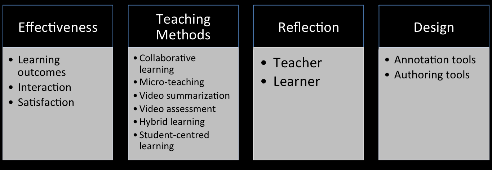
Figure 22.3. Overview of the video-based literature 2003–2013 (adapted from Yousef et al., 2014).
CHAPTER 22 ANALYTICS OF LEARNER VIDEO USE PG 253
be applied to instruction, the learners, and the tools Evaluation Methods to Investigate the
(specifically videos). There is a direct connection be- Effectiveness of Videos on Learning tween instruction and the learner: this is exemplified In order to evaluate the effectiveness of multimedia
in what an instructor does to facilitate learning to and videos, together with experimental (e.g., lab)
respond to the learners, represented under teaching studies, a plethora of published research proposes a
methods as noted in Figure 22.3 (Yousef et al., 2014). comparative approach (see Data-Mining Approaches Furthermore this is extended in Figure 22.4 to illustrate to Videos below), or a “horserace” model for evaluating
the relationship between both instruction and the the comparison of a mythical “traditional instruction”
learner and instruction and the learning tools — i.e., the with the latest innovations in instructional technolo-
video. In the interaction between instruction and the gy tools (Reeves, 1986, 1991). Although experimental
learner, elements such as learning styles, approaches, studies have a certain appeal and credibility, research
and instructional methods alongside self-regulated studies adopting experimental or quasi-experimen-
learning affect the effectiveness of instruction and tal designs comparing instructional technologies
learning. Instruction is affected by the instructional have produced very few useful outcomes. Literature
methods and cognitive load, and multimedia learning reviews and meta-analyses have recognized this
theory. The direct relation between the instruction phenomenon as the “no significant differences” prob-
and the instructional tools such as the resources, lem (Joy & Garcia, 2000; Oblinger & Hawkins, 2006;
activities, supporting and evaluation tools — in this Russell, 1999). Videos have been subjected to similar
particular case the use of videos — is partly present in comparative studies since the 1980s — initially with a
Yousef and colleagues’ (2014) taxonomy under “design,” focus on videodiscs and interactive videos, and later
but the important reference to the learner is missing, with computer-based instruction, video animations,
especially when students not only consume videos, documentaries, and video-recorded presentations
but also produce them (Juhlin, Zoric, Engström, & or lectures. The debate on the influence of media on
Reponen, 2014). Finally, the dual relationship between learning has been well represented by the opposing
the learning and the video is affected by learners’ per- views of Clark (1983, 1994) and (Kozma, 1991, 1994). Clark
ception, attention, their working memory and capacity (1994) argues that media does not influence learning
as well as their preferences driven by the affordances under any condition; however, “learning is caused by
of the videos. Figure 22.4 also shows some key metrics the instructional methods embedded in the media
that could be applied to investigate the relationships presentation” (p. 26). Notably, instructional methods
between instruction, the learner, and the video when were defined as “any way to shape information that
measuring effectiveness. activates, supplants, or compensates for the cognitive
processes necessary for achievement or motivation”
Figure 22.4. Interconnections between the learner, instruction, and video with reference to some of the key
metrics used in the literature.
PG 254 HANDBOOK OF LEARNING ANALYTICS
(p. 23). On the other side of the debate, Kozma (1991, have become more mainstream with the introduction
1994) argues that media and methods are intertwined of automatic lecture recordings in many lecture halls
and dependent on each other: facilitated by technologies such as Echo3601, Open-
Within this “Great media debate,” Tennyson (1994) From an interactionist perspective, learning with cast2, and Kaltura3 minimizing the resources and time required of the educator to produce the videos. While media can be thought of as a complementary in some learning contexts, these videos are provided process within which representations are con- to learners as supplemental resources, many educators structed and procedures performed, sometimes are adopting flipped classroom approaches whereby by the learner and sometimes by the medium information-transmission is done through required […] media must be designed to give us power - video lectures prior to class time, providing time in ful new methods, and our methods must take class for collaborative and active learning activities. appropriate advantage of media’s capabilities Further, lecture videos have also gained momentum (1994, pp. 11, 16). with their recent availability through streaming plat- forms such as YouTube, Apple’s iTunes U program, argues, “a scientist is never satisfied with the current and the Khan Academy where a vast variety of videos state of affairs, but is always and foremost challenged covering various disciplines and concepts are avail- by extending knowledge” (p. 15). He asserts that a able. MOOCs have also contributed to the widespread scientist turns into an advocate when statistically adoption of lecture videos. For many MOOC providers significant results are found and the newly found (e.g., Coursera, Udacity, EdX), a core functionality is approach is adopted to tackle the world’s complexity: the provision of video streaming, providing much of this is termed the “big wrench” approach. “The advo - the course content via videos supported by quizzes, cate, with the big wrench in hand, sets out to solve, forums, and readings (Diwanji, Simon, Marki, Korkut, & suddenly, a relatively restricted number of problems. Dornberger, 2014; Li, Kidzinski, Jermann, & Dillenbourg, That is, all of the formerly many diverse problems, 2015). These particular MOOCs, which focus heavily now seem to be soluble with the new big wrench (or on video lectures and individual mastery of content panacea)” (p. 16). This should provide a stark warning (e.g., via quizzes with immediate feedback), follow a against the temptation of focusing too much or ex - cognitive-behaviourist approach, often referred to as clusively on one method of evaluation, (e.g., analytics) xMOOCs (Conole, 2013), and have largely developed as the potential “big wrench” used to make sense of since 2012 (Margaryan, Bianco, & Littlejohn, 2015). While learning with and from videos in education. Instead, in many cases higher education videos are the result a range of approaches should be used to investigate of live recording with what is available (i.e., automatic and evaluate use, engagement, and learning with vid- lecture recording or desktop recording using screen eos. Such strategies will be explored in Data-Mining capture and audio recording), in MOOCs, videos tend Approaches to Videos, below. to be scripted, recorded, and edited with high-end
equipment and slick production values (Guo, Kim, &
METHODOLOGICAL CONSIDER- Rubin, 2014; Ilioudi, Giannakos, & Chorianopoulos,
ATIONS 2013; Kolowich, 2013).
Video Types Lecture videos are not the only type of educational
Videos have become increasingly important to provide videos being integrated in the curriculum. Video re-
varied pedagogical opportunities to engage learners cordings of learners’ own performances or engagement
and respond to the growing need for flexible, blend- with an activity are used for self-reflection, peer and
ed, and online learning modes. There are two broad instructor feedback, and goal-setting purposes. For
categories of video use: synchronous and asynchro- example, pre-service teachers have viewed record-
nous. The former provides a real-time opportunity for ings of their own teaching scenarios and made notes
learners and instructors to engage with one another or markers on particular segments for their own
simultaneously through virtual classrooms, live web- self-reflection purposes or to provide feedback to
casts, or video feeds. The latter supports self-paced peers facilitated by video annotation software such
learning and is primarily an individual interaction as the Media Annotation Tool (MAT) (Colasante, 2010,
between the medium and the learner. Asynchronous 2011). The use of video recordings for learner reflection
videos are becoming more common and vary from and critical analysis has also been used in medical
the capture of an in-class lecture, to the recording of education whereby learners view recordings of their
an educator’s talking head or their audio of a lecture consultations with simulated patients and explain
accompanied by slides or images illustrating core their behaviour and note areas of improvement linked
concepts (Owston, Lupshenyuk, & Wideman, 2011). 1 Echo360 Active Learning Platform http://echo360.com Such lecture videos can be a variety of durations and 2 Opencast http://www.opencast.org
3 Kaltura http://corp.kaltura.com
CHAPTER 22 ANALYTICS OF LEARNER VIDEO USE PG 255
to specific time-codes in the video using annotation their associated activities. Aggregating such data with
software, DiViDU (Hulsman, Harmsen, & Fabriek, 2009). performance measures (e.g., grades or scores) can
In the performing arts discipline, videos of learners’ help identify any impact on learning outcomes while
own performances have been used for self-reflection collecting information about learners’ intentions or
purposes (Daniel, 2001) and more recently coupled motivations through self-reports can help explain
with video annotation software, CLAS, for learners learner use. Collectively, these varied data sets can
to make time-stamped and general comments related help reveal whether learners are engaging or using
to their performance (Gašević, Mirriahi, & Dawson, video technologies as intended by the course design
2014; Mirriahi, Liaqat, Dawson, & Gašević, 2016; Risko, or if further revisions to the pedagogical approach
Foulsham, Dawson, & Kingstone, 2013). are required to better meet the intended outcomes of
Video in the Curriculum the learning and teaching strategy (Pardo et al., 2015).
Although videos are included in the curriculum in In the next section, we discuss various approaches to
various ways, it is not often transparent whether studying learner use of video technologies (using
the integration of videos into the course has been video analytics alongside other data collection meth-
effective or requires further refinement. Whether as ods) to begin to understand patterns in learning and
supplemental resources, core components of flipped engagement. classroom approaches or MOOCs, or used for re-
flective practice and peer feedback, it is important DATA MINING APPROACHES TO to understand how learners engage with the videos VIDEOS and how it contributes to their learning experience
(Giannakos et al., 2014). To date, numerous studies Data mining is commonly defined as the process of
have been conducted in various educational settings collecting, searching through, and analyzing a large
exploring the effectiveness of videos in the curriculum amount of computerized data, in order to discover
(Giannakos, 2013; Yousef et al., 2014). However many patterns, trends, or relationships (Witten & Frank,
of the earlier studies have largely relied on learners’ 2005; Romero & Ventura, 2010; Peña-Ayala, 2014). This
and educators’ self-reports rather than objective data. is done through a combination of tools and methods
Relying solely on self-reports can lead to potential used in statistics and artificial intelligence (AI). The
inaccurate recall of learners’ prior behaviour (Winne algorithms driving the mining process derive from a & Jamieson-Noel, 2002) or lead to social-desirability field of research in AI termed knowledge discovery and
bias whereby learners provide the expected response machine learning: the broad categories of machine
rather than the most accurate one (Beretvas, Meyers, & learning and the algorithms associated with these
Leite, 2002; Gonyea, 2005). Recent advances in learning are represented in Figure 22.5. analytics and data mining techniques, however, can
provide more objective and authentic data regarding Data mining has long been used to study multimedia
learners’ actual use of learning technologies by analyz and video. This is partly because of the relative ease in -
ing their digital footprints (Greller & Drachsler, 2012). creating new content and the availability of web-based
Hence, mining the data from learners’ use of videos as video streaming services to distribute videos. When
a complement to other data sources (e.g., assessment one looks at applications and mining techniques for
scores, surveys, etc.) (Giannakos, Chorianopoulos, & videos, there are two major strands of work: 1) making
Chrisochoides, 2015) can help begin to uncover how sense of the content of the video and 2) exploring how
learners actually use videos and how they contribute learners use videos. In the next two sections, we will
to their learning experience. Leveraging the trace or explore some of these methods and techniques.
clickstream data available from learners’ use of videos, Figure 22.5 provides an overview of the connections
which can be termed video analytics, has become of machine learning algorithms and applications ap-
more readily available in recent years from streaming plicable to video analytics. It provides a distinction video platforms (YouTube, Vimeo) or MOOC providers between supervised and unsupervised machine learn-
(Udacity, Coursera, FuturLearn, EdX). ing, leading to the specific types of algorithms used to
Broadly, we define analyze the data from different applications of video video analytics as the collection,
measurement, and analysis of data from learners’ use (e.g., learners’ interaction with video content and their
of videos for the purposes of understanding how they use of videos). Depending on the nature of the data
engage with them in learning contexts. This provides sources (for example, usage and in-video behaviours,
the opportunity to mine learners’ actual use of the or frame analysis), different families of algorithms are
videos alongside data collected from other online more appropriate for making sense of the data.
activities such as quizzes or annotations to explore In this chapter, we will not dwell on the effectiveness
when and how learners engage with the videos and of algorithms, but briefly describe some applications
PG 256 HANDBOOK OF LEARNING ANALYTICS
Figure 22.5. Interconnections between the learner, instruction, and video with reference to some of the key
metrics used in the literature.
of video content mining, giving particular attention is using video annotation software, which provides
to usage. Table 22.1 provides an explicit mapping of instructors and learners with the option of flagging
existing literature, algorithms, types of interactions, particular time-stamped parts of a video for later
and features used in the analysis. review and to gauge their learning in relation to oth-
Mining Applied to Content ers by viewing other’s annotations or flags (Dawson, Macfadyen, Evan, Foulsham, & Kingstone, 2012). Given Making sense of videos is a complex problem that that new users of websites and applications tend to leverages advances in automated content-based meth- watch videos and skip text while more expert users odologies such as visual pattern recognition (Antani, skip videos and scan the associated text (Johnson, Kasturi, & Jain, 2002), machine learning (Brunelli, Mich, 2011), this creates interesting design problems and & Modena, 1999), and human-driven action (Avlonitis, questions: by aggregating learner engagement or use Karydis, & Sioutas, 2015; Chorianopoulos, 2012; Risko of videos, could the “crowd-sourced” expertise of et al., 2013). The latter can be individual use of video learners provide automated or user-driven instruc- resources or the social metadata (tagging, sharing, and tional support scaffolding novice or less experienced social engagement). Video indexing, commonly used to learners or is the adoption of machine learning more make sense of video content, is based on three main effective? Although there is much evidence in favour steps: 1) video parsing, 2) abstraction, and 3) content of machine driven methods (i.e., EDM and AIED com - analysis (Fegade & Dalal, 2014). Furthermore, given the munities), the problem of knowledge representation exponential growth of video content, the problems of and transfer remains a crucial one. navigation (or searching within content) and summa-
rization can also be resolved using content analytics Another source of accessible metadata about videos
(Grigoras, Charvillat, & Douze, 2002; He, Grudin, & came about with assistive technologies and the synching
Gupta, 2000). of text transcripts related to videos. For example, Ed-X
The relevance of this work can be seen in the ability to displays both video and transcripts on the same page,
characterize and present video content to learners and whilst YouTube has recently introduced an automatic
the methods to integrate this medium with teaching caption tool to create subtitles. and instruction. For example, a better way of guiding Mining Applied to Usage: Logs of Activity
learners to key points in a video or providing learners to Measure Interaction with ways to regulate their own learning with videos The extraction of trace or log data from learners’ use
is to provide a navigational index much like a table of of video technologies and the analysis to understand
contents or glossary to allow learners to jump to the learning processes or engagement is still at an early
most relevant part of video. One way of providing this stage both in terms of a research discipline (e.g., learning
CHAPTER 22 ANALYTICS OF LEARNER VIDEO USE PG 257
analytics and educational data mining) but also in terms Moving from Usage to Engagement of how it is used to inform teaching practice. As noted As seen in the previous section, a number of studies
by Giannakos, Jaccheri, and Krogstie (2015), further investigate what learners do with videos. However, in
experimentation with methodological approaches is order to characterize engagement in the context of needed to advance the area. Yet, there are a growing learning and teaching, it is essential to consider what
number of studies exploring how learners learn and is meant by engagement with videos. For example,
engage with video technologies using educational data a learner could click on the play button of a video
mining and learning analytics methods alongside more presented as part of a “flipped classroom” activity
traditional data collection approaches (e.g., question- and then walk away to make coffee. The video would
naires, observations, and interviews). To provide an still be playing, and logging this activity as usage; overview we specifically looked at published literature however, the learner would be not be engaged with from 2000 onward mentioning video or multimedia the activity. This poses a challenge when interpreting
learning. The additional criterion required was at least activity logs and makes the case for avoiding the “big
the use of one of the variables categorized under “us- wrench” approach mentioned earlier. The time spent on
age” or “interaction,” as described in the last section. task is not simple to interpret in an ecologically valid
In Table 22.1, we introduce studies that have used setting; unlike in experimental conditions in which
such methods to explore learner use, engagement, extraneous variables are controlled or monitored,
and learning with videos. We have categorized the real learning might occur in highly noisy conditions
studies using the algorithm categories and application (for example, increasingly “on the go” from a mobile
types noted on Figure 22.5. device on a busy commuter bus (Chen, Seilhamer,
Bennett, & Bauer, 2015).
In addition to the definition of each variable, the type of
study or algorithm uses the same taxonomy presented However, expedients made available via modern web
earlier with studies that use the comparative approach technologies can partly circumvent this problem. For
or studies that apply data mining techniques classed example, including in-video quizzes (IVQ) provides
using the schema in Figure 22.5. Notably, a “modelling” an opportunity to check whether learners have un-
type, referring to work, has been added, which used derstood concepts in the video or how they perceive
the data and variables not to inform the learning and its effectiveness. These not only provide a “pulse” on
teaching per se, but to explain or describe the patterns engagement, but also a view on the effectiveness of the
of use and interaction with videos. videos for learning. Most MOOC providers offer some
form of IVQs that can be inserted at specific points.
Table 22.1. Summary of Related Work using Video Analytics Techniquesmat
Usage Interaction Additional var.
Reference Type of study or vior algorithm type agging ed effect.
erall usage vigation Ov Na In-video beha Tagging/P Annotation Social interaction Learning design Satisfaction Perceiv User information Assessment Content-related
Anusha & Shereen, 2014 Classification v v
Avlonitis & Chorianopoulos, 2014 Correlation v v v v
Avlonitis, Karydis, & Sioutas, 2015 Correlation, Regression v v v v
Brooks, Epp, Logan, & Greer, 2011 Clustering v v v v
Chen, Chen, Xu, March, & Benford, 2008 Comparison v v
Chorianopoulos, 2012 Comparison v o v v v
Chorianopoulos, 2013 Comparison v v v v
Chorianopoulos, Giannakos, Chrisochoides, & Reed, Framework v v v v v 2014
Cobarzan & Schoeffmann, 2014 Comparison v v v v
Coleman, Seaton, & Chuang, 2015 Modelling, Classification v v
Crockford & Agius, 2006 Comparison v v v
de Konig, Tabbers, Rikers, & Paas, 2011 Comparison v v v v
Delen, Liew, & Willson, 2014 Comparison v v v
Dufour, Toms, Lewis, & Baecker, 2005 Comparison v v v v v
Gašević, Mirriahi, & Dawson, 2014 Comparison v v
Giannakos, Chorianopoulos, & Chrisochoides 2014 Comparison v v v v
Giannakos, Chorianopoulos, & Chrisochoides, 2015 Modelling, Comparison v v v v v v
PG 258 HANDBOOK OF LEARNING ANALYTICS
Table 22.1 (cont.). Summary of Related Work using Video Analytics Techniquesmat
Usage Interaction Additional var.
Reference Type of study or vior algorithm type agging ed effect.
erall usage vigation Ov Na In-video beha Tagging/P Annotation Social interaction Learning design Satisfaction Perceiv User information Assessment Content-related
Giannakos, Jaccheri, & Krogstie, 2015 Correlation v v v v v
Gkonela & Chorianopoulus, 2012 Modelling v v v v v v
Grigoras, Charvillat & Douze, 2002 Modelling, Regression v v v v
Guo, Kim, & Rubin, 2014 Comparison v v v v
He, 2013 Correlation v v v
He, Grudin, & Gupta, 2000 Modelling, Clustering v v
He, Sanocki, Gupta, & Grudin, 2000 Comparison v v v v
Ilioudi, Giannakos, & Chorianopoulos, 2013 Comparison v v v v
Kamahara, Nagamatsu, Fukuhara, Kaieda, & Ishii, Modelling v v v 2009
Kim, Guo, Cai, Li, Gajos, & Miller, 2014 Modelling, Comparison v v v v v v v v
Kim, Guo, Seaton, Mitros, Gajos, & Miller 2014 Modelling, Regression v v v v
Li, Gupta, Sanoki, He, & Rui, 2000 Modelling, Comparison v v v v v
Li, Kidzinski, Jermann, & Dillenbourg, 2015 Modelling, Regression v v v v v
Li, Zhang, Hu, Zhu, Chen, Jiang, Deng, Guo, Faraco, Modelling, Comparison v v v Zhang, Han, Hua, & Liu, 2010
Lyons, Reysen, & Pierce, 2012 Comparison v v v v
Mirriahi & Dawson, 2013 Correlation v v v
Mirriahi, Liaqat, Dawson, & Gašević, 2016 Clustering v v v v
Monserrat, Zhao, McGee, & Pendey, 2013 Comparison v v v v
Mu, 2010 Comparison v v v v
Pardo, Mirriahi, Dawson, Zhao, Zhao, & Gašević, 2015 Correlation, Regression v v v v
Phillips, Maor, Preston, & Cumming-Potvin, 2011 Comparison v v v v
Risko, Foulsham, Dawson, & Kingstone, 2013 Modelling v v v o v v
Ritzhaupt, Pastore & Davis, 2015 Correlation v v
Samad & Hamid, 2015 Modelling, Comparison v v
Schwan & Riempp, 2004 Comparison v v v v
Shi, Fu, Chen, & Qu, 2014 Modelling, Comparison v v v
Sinha & Cassell, 2015 Modelling, Regression v v
Song, Hong, Oakley, Cho, & Bianchi, 2015 Modelling v o v
Syeda-Mahmood & Poncelon, 2001 Clustering v v v v
Vondrick & Ramanan, 2011 Correlation v v v
Weir, Kim, Gajos, & Miller, 2015 Comparison v v v v
Wen & Rose, 2014 Clustering v v
Wieling & Hofman, 2010 Correlation, Regression v v v
Yu, Ma, Nahrstedt, & Zhang, 2003 Modelling, Clustering v v v v
Zahn, Barquero, & Schwan, 2004 Comparison v v v v v v
Zhang, Zhou, Briggs, & Nunamaker, 2006 Comparison v v v v v
Zupancic & Horz, 2002 Comparison v v v v v
NOTES: where 'o' is present, the attribution is subject to interpretation.
Overall usage refers to counts of activity; Navigation refers to browse, search and skip; In-video behaviours provides details of play, pause, back, forwards and
speed change; Tagging/Flagging is the simple action of marking a time point which may contain a keyword (tagging) or visual indicator (flagging); Annotation re-
fers to the ability to add text or other references to the videos; Social Interaction refers to the ability to share inputs or outputs with others; Learning design refers
to specifically designed conditions, activities, or modes of presentation; Satisfaction and Perceived effectiveness are obtained via surveys or other in-line methods
(i.e. quizzes); User information refers to the availability of user details (i.e. demographics); Assessment implies the presence of performance tests or grades; Con-
tent-related means that the input/outputs have a relevance for the content.
Giannakos et al. (2014) offered an interesting approach characteristics are dependent on the instructional
to studying in-video behaviours, testing the affordances design that employs them and therefore shapes the
of different types of implementation of videos and quiz type of engagement possible with the medium, which
combinations. The SocialSkip web application (http:// can be directly tested with analytics.
www.socialskip.org ) allows instructors to test different Gauging Learning from Usage and En-
and performance. In this sense, Kozma’s argument There is evidence that some learners like the oppor- that media (and videos in this case) have defining scenarios and see the results on students’ navigation gagement
tunities provided by video (Merkt, Weigand, Heier, &
characteristics interacting with the learner, the task
CHAPTER 22 ANALYTICS OF LEARNER VIDEO USE PG 259
Schwan, 2011) and, under certain conditions and with learning is often student performance or achievement
particular designs, videos lead to better learning (using demonstrated through assessments external to the
achievement level and grades as proxies for learning) video activity (with the exception of IVQs that could
(Giannakos et al., 2014; Mirriahi & Dawson, 2013). Lab be used as summative quizzes assessing content
experiments have demonstrated that videos lead to directly related to a video). This poses a challenge
better retention and recall (Mayer, Heiser, & Lonn, for making appropriate judgements on the extent of
2001), but the issue of transfer is a serious weakness learning achieved through engagement with videos.
in most studies. How do we go about demonstrating Yet, we can rely on the reported levels of satisfaction
learning? If more active engagement with content that learners provide as feedback with the usefulness
facilitates deep learning, can videos provide this op- or effectiveness of videos for their learning, providing
portunity and, if so, under what conditions? a glimpse in their learning experience.
mine whether learning occurs based on the level of The discussion about whether it is possible to deter- SUMMARY & FUTURE DIRECTIONS
engagement with videos is a tricky one. Earlier we The overview provided in this chapter is meant to
considered simple time on task as an ineffective way introduce learning scientists, researchers, educators,
to measure engagement. In fact, engagement in learn- and others interested in investigating the impact of
ing and teaching can be characterized as having six videos on learning, use, and engagement to prior ap-
dimensions (Figure 22.6): intellectual, emotional, proaches that can be adapted to explore new questions
behavioural, physical, social, and cultural. The dimen- and hypothesis. sions most relevant when considering the use of
videos are strictly intertwined with the nature of use The chapter has provided an overview of the types of
and integration in the curriculum and, therefore, the potential videos used for educational purposes and the
type of data required to explore engagement for various ways they can be integrated into the curriculum
learning is dependent on the learning design and the (although by no means an exhaustive list). Data mining
technology available. approaches, as one method of analyzing relevant data
(alongside more traditional approaches) about learner
use, engagement, and learning with videos is discussed
with a short summary of approaches reported in recent
studies as a starting point for interested readers to
explore further as they wish.
This chapter has introduced video analytics and some
applications showing how this approach can support
the investigation and evaluation of learner engagement
and learning with videos. Situating the concept of
videos in the curriculum within multimedia learning
provides a theoretical foundation for considering the
ways in which multimedia (and videos) are included
Figure 22.6. Elements of engagement in learning and ically been evaluated for their effectiveness. As we in learning and teaching and how they have histor-
teaching.
have seen, a single approach, or “big wrench,” may
not be as appropriate as a combination of methods
For example, a combination of analytics from learn and approaches.-ers’ use of videos alongside surveys can help capture Despite the considerable research accrued on the
the metrics related to the intellectual, emotional, evaluation of the effectiveness of multimedia and
and cultural dimensions of learning such as whether videos for learning, many questions remain. Expanding
they find the videos relevant or challenging and their on the studies and strategies to date and leveraging
motivation towards watching them. With the addition the growing body of data being captured by video
of IVQs, feedback and clarity of instruction (the be- technologies provides an opportunity to investigate
havioural dimension) can be explored. With the use a milieu of questions not limited to the following:
and sharing of video tagging and annotation, the social
1. How do learners use, engage with, and learn
dimension can be considered; if videos are used in the
from different types of videos (e.g., reflection vs.
classroom, there is opportunity to understand the ef-
lecture)? A mixed methods approach consisting of
fects of the physical environment on learning. One of
video analytics, learner feedback, and instructor
the fundamental problems is the inability to extricate
reflections and in variety of curriculum or learning
the effect of videos on learning because the proxy of
PG 260 HANDBOOK OF LEARNING ANALYTICS
design contexts would be useful here. assessment scores or final marks), how can learning
2. What types of interventions can be applied to with or from videos be more accurately nuanced?
either a) inform instructors of changes required 4. How can data related to video content be better
to video content or how it is integrated in the mined in order to explore how it affects learner
curriculum or b) inform learners of learning use and engagement patterns?
strategies to better engage with the video content 5. What are the most effective algorithms for this
or associated activities? Once such interventions domain? Is it possible to use some of the models
are identified, their effectiveness would need to generated to inform instructional design and
be explored. provide further opportunities to improve learning
3. Rather than relying on proxies of learning (e.g., and the student experience?
REFERENCES
Antani, S., Kasturi, R., & Jain, R. (2002). A survey on the use of pattern recognition methods for abstraction,
indexing and retrieval of images and video. Pattern Recognition, 35(4), 945–965. http://doi.org/10.1016/
S0031-3203(01)00086-3
Anusha, V., & Shereen, J. (2014). Multiple lecture video annotation and conducting quiz using random tree clas-
sification. International Journal of Engineering Trends and Technology, 8(10), 522–525.
Atkins, M. J. (1993). Theories of learning and multimedia applications: An overview. Research Papers in Educa-
tion, 8(2), 251–271. http://doi.org/10.1080/0267152930080207
Avlonitis, M., & Chorianopoulos, K. (2014). Video pulses: User-based modeling of interesting video segments.
Advances in Multimedia, 2014. http://doi.org/10.1155/2014/712589
Avlonitis, M., Karydis, I., & Sioutas, S. (2015). Early prediction in collective intelligence on video users’ activity.
Information Sciences, 298, 315–329. http://doi.org/10.1016/j.ins.2014.11.039
Beretvas, S. N., Meyers, J. L., & Leite, W. L. (2002). A reliability generalization study of the Marlowe-Crowne
social desirability scale. Educational and Psychological Measurement, 62(4), 570–589. http://doi.
org/10.1177/0013164402062004003
Bloom, B. S. (1968). Learning for Mastery: Instruction and Curriculum. Regional Education Laboratory for the
Carolinas and Virginia, Topical Papers and Reprints, Number 1. Evaluation Comment, 1(2), n2.
Brooks, C., Epp, C. D., Logan, G., & Greer, J. (2011). The who, what, when, and why of lecture capture. Proceed-
ings of the 1st International Conference on Learning Analytics and Knowledge (LAK '11), 27 February–1 March
2011, Banff, AB, Canada (pp. 86–92). New York: ACM.
Brunelli, R., Mich, O., & Modena, C. M. (1999). A survey on the automatic indexing of video data. Journal of Vi-
sual Communication and Image Representation, 10(2), 78–112. http://doi.org/10.1006/jvci.1997.0404
Chen, B., Seilhamer, R., Bennett, L., & Bauer, S. (2015, June 22). Students’ mobile learning practices in higher
education: A multi-year study. Educause Review. http://er.educause.edu/articles/2015/6/students-mo-
bile-learning-practices-in-higher-education-a-multiyear-study
Chen, L., Chen, G.-C., Xu, C.-Z., March, J., & Benford, S. (2008). EmoPlayer: A media player for video clips with
affective annotations. Interacting with Computers, 20(1), 17–28. http://doi.org/10.1016/j.intcom.2007.06.003
Chorianopoulos, K. (2012). Crowdsourcing user interactions with the video player. Proceedings of the 18th
Brazilian Symposium on Multimedia and the Web (WebMedia ’12), 15–18 October 2012, São Paulo, Brazil (pp.
13–16). New York: ACM. http://doi.org/10.1145/2382636.2382642
Chorianopoulos, K. (2013). Collective intelligence within web video. Human-Centric Computing and Informa-
tion Sciences, 3(1), 1–16. http://doi.org/10.1186/2192-1962-3-10
Chorianopoulos, K., Giannakos, M. N., Chrisochoides, N., & Reed, S. (2014). Open service for video learning
analytics. Proceedings of the 14th IEEE International Conference on Advanced Learning Technologies (ICALT
CHAPTER 22 ANALYTICS OF LEARNER VIDEO USE PG 261 Gagne, R. M. (1965). The conditions of learning. Holt, Rinehart & Winston.
2014), 7–10 July 2014, Athens, Greece (pp. 28–30). http://doi.org/10.1109/ICALT.2014.19
Clark, R. E. (1983). Reconsidering research on learning from media. Review of Educational Research, 53(4),
445–459. http://doi.org/10.3102/00346543053004445
Clark, R. E. (1994). Media and method. Educational Technology Research and Development, 42(3), 7–10. http://
doi.org/10.1007/BF02298090
Cobârzan, C., & Schoeffmann, K. (2014). How do users search with basic HTML5 video players? In
C. Gurrin, F. Hopfgartner, W. Hurst, H. Johansen, H. Lee, & N. O’Connor (Eds.), MultiMedia Mod-
eling (pp. 109–120). Springer. http://link.springer.com.wwwproxy0.library.unsw.edu.au/chap-
ter/10.1007/978-3-319-04114-8_10
Colasante, M. (2010). Future-focused learning via online anchored discussion, connecting learners with digital
artefacts, other learners, and teachers. Proceedings of the 27th Annual Conference of the Australasian Society
for Computers in Learning in Tertiary Education: Curriculum, Technology & Transformation for an Unknown
Future (ASCILITE 2010), 5–8 December 2010, Sydney, Australia (pp. 211–221). ASCILITE.
Colasante, M. (2011). Using video annotation to reflect on and evaluate physical education pre-service teach-
ing practice. Australasian Journal of Educational Technology, 27(1), 66–88.
Coleman, C. A., Seaton, D. T., & Chuang, I. (2015). Probabilistic use cases: Discovering behavioral patterns for
predicting certification. Proceedings of the 2nd ACM conference on Learning@Scale (L@S 2015), 14–18 March
2015, Vancouver, BC, Canada (pp. 141–148). New York: ACM. http://doi.org/10.1145/2724660.2724662
Conole, G. (2013). MOOCs as disruptive technologies: Strategies for enhancing the learner experience and
quality of MOOCs. Revista de Educación a Distancia (RED), 39. http://www.um.es/ead/red/39/conole.pdf
Crockford, C., & Agius, H. (2006). An empirical investigation into user navigation of digital video using the
VCR-like control set. International Journal of Human–Computer Studies, 64(4), 340–355. http://doi.
org/10.1016/j.ijhcs.2005.08.012
Daniel, R. (2001). Self-assessment in performance. British Journal of Music Education, 18(3). http://doi.
org/10.1017/S0265051701000316
Dawson, S., Macfadyen, L., Evan, F. R., Foulsham, T., & Kingstone, A. (2012). Using technology to encourage
self-directed learning: The Collaborative Lecture Annotation System (CLAS). Proceedings of the 29th Annual
Conference of the Australasian Society for Computers in Learning in Tertiary Education (ASCILITE 2012),
25–28 October, Wellington, New Zealand (pp. XXX–XXX). ASCILITE. http://www.ascilite.org/conferences/
Wellington12/2012/images/custom/dawson,_shane_-_using_technology.pdf
de Koning, B. B., Tabbers, H. K., Rikers, R. M. J. P., & Paas, F. (2011). Attention cueing in an instructional anima-
tion: The role of presentation speed. Computers in Human Behavior, 27(1), 41–45. http://doi.org/10.1016/j.
chb.2010.05.010
Delen, E., Liew, J., & Willson, V. (2014). Effects of interactivity and instructional scaffolding on learning:
Self-regulation in online video-based environments. Computers & Education, 78, 312–320. http://doi.
org/10.1016/j.compedu.2014.06.018
Diwanji, P., Simon, B. P., Marki, M., Korkut, S., & Dornberger, R. (2014). Success factors of online learning
videos. Proceedings of the International Conference on Interactive Mobile Communication Technologies and
Learning (IMCL 2014), 13–14 November 2014, Thessaloniki, Greece (pp. 125–132). IEEE. http://ieeexplore.
ieee.org/xpls/abs_all.jsp?arnumber=7011119
Dufour, C., Toms, E. G., Lewis, J., & Baecker, R. (2005). User strategies for handling information tasks in web-
casts. CHI ’05 Extended Abstracts on Human Factors in Computing Systems (CHI EA ’05), 2–7 April 2005,
Portland, OR, USA (pp. 1343–1346). New York: ACM. http://doi.org/10.1145/1056808.1056912
El Samad, A., & Hamid, O. H. (2015). The role of socio-economic disparities in varying the viewing behavior of
e-learners. Proceedings of the 5th International Conference on Digital Information and Communication Tech-
nology and its Applications (DICTAP) (pp. 74–79). https://doi.org/10.1109/DICTAP.2015.7113174
Fegade, M. A., & Dalal, V. (2014). A survey on content based video retrieval. International Journal of Engineering
and Computer Science, 3(7), 7271–7279.
PG 262 HANDBOOK OF LEARNING ANALYTICS
Gašević, D., Mirriahi, N., & Dawson, S. (2014). Analytics of the effects of video use and instruction to sup-
port reflective learning. Proceedings of the 4th International Conference on Learning Analytics and
Knowledge (LAK '14), 24–28 March 2014, Indianapolis, IN, USA (pp. 123–132). New York: ACM. http://doi.
org/10.1145/2567574.2567590
Giannakos, M. N. (2013). Exploring the video-based learning research: A review of the literature: Colloquium.
British Journal of Educational Technology, 44(6), E191–E195. http://doi.org/10.1111/bjet.12070
Giannakos, M. N., Chorianopoulos, K., & Chrisochoides, N. (2014). Collecting and making sense of video learn-
ing analytics. Proceedings of the 2014 IEEE Frontiers in Education Conference (FIE 2014), 22–25 October 2014,
Madrid, Spain. IEEE. http://ieeexplore.ieee.org/xpls/abs_all.jsp?arnumber=7044485
Giannakos, M. N., Chorianopoulos, K., & Chrisochoides, N. (2015). Making sense of video analytics: Lessons
learned from clickstream interactions, attitudes, and learning outcome in a video-assisted course. The In-
ternational Review of Research in Open and Distributed Learning, 16(1). http://www.irrodl.org/index.php/
irrodl/article/view/1976
Giannakos, M. N., Jaccheri, L., & Krogstie, J. (2015). Exploring the relationship between video lecture usage
patterns and students’ attitudes: Usage patterns on video lectures. British Journal of Educational Technolo-
gy, 47(6), 1259–1275. http://doi.org/10.1111/bjet.12313
Gkonela, C., & Chorianopoulos, K. (2012). VideoSkip: Event detection in social web videos with an implicit user
heuristic. Multimedia Tools and Applications, 69(2), 383–396. http://doi.org/10.1007/s11042-012-1016-1
Gonyea, R. M. (2005). Self-reported data in institutional research: Review and recommendations. New Direc-
tions for Institutional Research, 2005(127), 73–89.
Greller, W., & Drachsler, H. (2012). Translating learning into numbers: A generic framework for learning analyt-
ics. Journal of Educational Technology & Society, 15(3), 42–57.
Grigoras, R., Charvillat, V., & Douze, M. (2002). Optimizing hypervideo navigation using a Markov decision pro-
cess approach. Proceedings of the 10th ACM International Conference on Multimedia (MULTIMEDIA ’02), 1–6
December 2002, Juan-les-Pins, France (pp. 39–48). New York: ACM. http://doi.org/10.1145/641007.641014
Guo, P. J., Kim, J., & Rubin, R. (2014). How video production affects student engagement: An empirical study of
MOOC videos. Proceedings of the 1st ACM conference on Learning@Scale (L@S 2014), 4–5 March 2014, Atlan-
ta, Georgia, USA (pp. 41–50). New York: ACM. http://doi.org/10.1145/2556325.2566239
Guskey, T. R., & Good, T. L. (2009). Mastery learning. In T. L. Good (Ed.), 21st Century Education: A Reference
Handbook, vol. 1 (pp. 194–202). Thousand Oaks, CA: Sage.
He, W. (2013). Examining students’ online interaction in a live video streaming environment using data mining
and text mining. Computers in Human Behavior, 29(1), 90–102. http://doi.org/10.1016/j.chb.2012.07.020
He, L., Grudin, J., & Gupta, A. (2000). Designing presentations for on-demand viewing. Proceedings of the 2000
Conference on Computer Supported Cooperative Work (CSCW ’00), 2–6 December 2000, Philadelphia, PA,
USA (pp. 127–134). New York: ACM. http://doi.org/10.1145/358916.358983
He, L., Sanocki, E., Gupta, A., & Grudin, J. (2000). Comparing presentation summaries: Slides vs. reading vs. lis-
tening. Proceedings of the SIGCHI Conference on Human Factors in Computing Systems (CHI 2000), 1–6 April
2000, The Hague, Netherlands (pp. 177–184). New York: ACM. http://doi.org/10.1145/332040.332427
Hulsman, R. L., Harmsen, A. B., & Fabriek, M. (2009). Reflective teaching of medical communication skills with
DiViDU: Assessing the level of student reflection on recorded consultations with simulated patients. Pa-
tient Education and Counseling, 74(2), 142–149. http://doi.org/10.1016/j.pec.2008.10.009
Ilioudi, C., Giannakos, M. N., & Chorianopoulos, K. (2013). Investigating differences among the commonly used
video lecture styles. Proceedings of the Workshop on Analytics on Video-Based Learning (WAVe 2013), 8 April
2013, Leuven, Belgium (pp. 21–26). http://ceur-ws.org/Vol-983/WAVe2013-Proceedings.pdf
Johnson, T. (2011, July 22). A few notes from usability testing: Video tutorials get watched, text gets skipped. I’d
Rather Be Writing [Blog]. http://idratherbewriting.com/2011/07/22/a-few-notes-from-usability-testing-
CHAPTER 22 ANALYTICS OF LEARNER VIDEO USE PG 263 Mayer, R. E. (2009). Multimedia learning. Cambridge, UK: Cambridge University Press.
video-tutorials-get-watched-text-gets-skipped/
Joy, E. H., & Garcia, F. E. (2000). Measuring learning effectiveness: A new look at no-significant-difference
findings. Journal of Asynchronous Learning Networks, 4(1), 33–39.
Juhlin, O., Zoric, G., Engström, A., & Reponen, E. (2014). Video interaction: A research agenda. Personal and
Ubiquitous Computing, 18(3), 685–692. http://doi.org/10.1007/s00779-013-0705-8
Kamahara, J., Nagamatsu, T., Fukuhara, Y., Kaieda, Y., & Ishii, Y. (2009). Method for identifying task hardships
by analyzing operational logs of instruction videos. In T.-S. Chua, Y. Kompatsiaris, B. Mérialdo, W. Haas, G.
Thallinger, & W. Bailer (Eds.), Semantic Multimedia (pp. 161–164). Springer. http://link.springer.com.www-
proxy0.library.unsw.edu.au/chapter/10.1007/978-3-642-10543-2_16
Keller, F. S. (1967). Engineering personalized instruction in the classroom. Revista Interamericana de Psicologia,
1(3), 144–156.
Kim, J., Guo, P. J., Cai, C. J., Li, S.-W. (Daniel), Gajos, K. Z., & Miller, R. C. (2014). Data-driven Interaction Tech-
niques for Improving Navigation of Educational Videos. In Proceedings of the 27th Annual ACM Sympo-
sium on User Interface Software and Technology (pp. 563–572). New York, NY, USA: ACM. https://doi.
org/10.1145/2642918.2647389
Kim, J., Guo, P. J., Seaton, D. T., Mitros, P., Gajos, K. Z., & Miller, R. C. (2014). Understanding in-video drop-
outs and interaction peaks in online lecture videos. Proceedings of the 1st ACM Conference on Learn-
ing @ Scale (L@S 2014), 4–5 March 2014, Atlanta, GA, USA (pp. 31–40). New York: ACM. http://doi.
org/10.1145/2556325.2566239
Kirschner, P. A., Sweller, J., & Clark, R. E. (2006). Why minimal guidance during instruction does not work: An
analysis of the failure of constructivist, discovery, problem-based, experiential, and inquiry-based teach-
ing. Educational Psychologist, 41(2), 75–86. http://doi.org/10.1207/s15326985ep4102_1
Kolowich, S. (2013, March 18). The professors who make the MOOCs. The Chronicle of Higher Education, 25.
http://www.chronicle.com/article/The-Professors-Behind-the-MOOC/137905/
Kozma, R. B. (1991). Learning with media. Review of Educational Research, 61(2), 179–211. http://doi.
org/10.3102/00346543061002179
Kozma, R. B. (1994). Will media influence learning? Reframing the debate. Educational Technology Research and
Development, 42(2), 7–19. http://doi.org/10.1007/BF02299087
Kulik, C.-L. C., Kulik, J. A., & Bangert-Drowns, R. L. (1990). Effectiveness of mastery learning programs: A me-
ta-analysis. Review of Educational Research, 60(2), 265–299. http://doi.org/10.3102/00346543060002265
Lee, H. S., & Anderson, J. R. (2013). Student learning: What has instruction got to do with it? Annual Review of
Psychology, 64(1), 445–469. http://doi.org/10.1146/annurev-psych-113011-143833
Li, F. C., Gupta, A., Sanocki, E., He, L., & Rui, Y. (2000). Browsing digital video. Proceedings of the SIGCHI Con-
ference on Human Factors in Computing Systems (CHI 2000), 1–6 April 2000, The Hague, Netherlands (pp.
169–176). New York: ACM. http://doi.org/10.1145/332040.332425
Li, N., Kidzinski, L., Jermann, P., & Dillenbourg, P. (2015). How do in-video interactions reflect perceived video
difficulty? Proceedings of the 3rd European MOOCs Stakeholder Summit, 18–20 May 2015, Mons, Belgium (pp.
112–121). PAU Education. http://infoscience.epfl.ch/record/207968
Li, K., T. Zhang, X. Hu, D. Zhu, H. Chen, X. Jiang, F. Deng, J. Lv, C. C. Faraco, and D. Zhang. 2010. “Hu-
man-Friendly Attention Models for Video Summarization.” In International Conference on Multimodal In-
terfaces and the Workshop on Machine Learning for Multimodal Interaction (pp. 27:1–27:8). New York: ACM.
http://doi.org/10.1145/1891903.1891938
Lyons, A., Reysen, S., & Pierce, L. (2012). Video lecture format, student technological efficacy, and so-
cial presence in online courses. Computers in Human Behavior, 28(1), 181–186. http://doi.org/10.1016/j.
chb.2011.08.025
Margaryan, A., Bianco, M., & Littlejohn, A. (2015). Instructional quality of Massive Open Online Courses
(MOOCs). Computers & Education, 80, 77–83. http://doi.org/10.1016/j.compedu.2014.08.005
PG 264 HANDBOOK OF LEARNING ANALYTICS
Mayer, R. E., Heiser, J., & Lonn, S. (2001). Cognitive constraints on multimedia learning: When presenting
more material results in less understanding. Journal of Educational Psychology, 93(1), 187–198. http://doi.
org/10.1037/0022-0663.93.1.187
McKeachie, W. J. (1974). Instructional psychology. Annual Review of Psychology, 25(1), 161–193. http://doi.
org/10.1146/annurev.ps.25.020174.001113
Merkt, M., Weigand, S., Heier, A., & Schwan, S. (2011). Learning with videos vs. learning with print: The
role of interactive features. Learning and Instruction, 21(6), 687–704. http://doi.org/10.1016/j.learnin-
struc.2011.03.004
Mirriahi, N., & Dawson, S. (2013). The pairing of lecture recording data with assessment scores: A method of
discovering pedagogical impact. Proceedings of the 3rd International Conference on Learning Analytics and
Knowledge (LAK ’13), 8–12 April 2013, Leuven, Belgium (pp. 180–184). New York: ACM. http://dl.acm.org/ci-
tation.cfm?id=2460331
Mirriahi, N., Liaqat, D., Dawson, S., & Gašević, D. (2016). Uncovering student learning profiles with a video
annotation tool: Reflective learning with and without instructional norms. Educational Technology Research
and Development, 64(6), 1083–1106. http://doi.org/10.1007/s11423-016-9449-2
Monserrat, T.-J. K. P., Zhao, S., McGee, K., & Pandey, A. V. (2013). NoteVideo: Facilitating navigation of
Blackboard-style lecture videos. Proceedings of the SIGCHI Conference on Human Factors in Comput-
ing Systems (CHI '13), 27 April–2 May 2013, Paris, France (pp. 1139–1148). New York: ACM. http://doi.
org/10.1145/2470654.2466147
Mu, X. (2010). Towards effective video annotation: An approach to automatically link notes with video content.
Computers & Education, 55(4), 1752–1763. http://doi.org/10.1016/j.compedu.2010.07.021
Oblinger, D. G., & Hawkins, B. L. (2006). The myth about no significant difference. EDUCAUSE Review, 41(6),
14–15.
Owston, R., Lupshenyuk, D., & Wideman, H. (2011). Lecture capture in large undergraduate classes: Student
perceptions and academic performance. The Internet and Higher Education, 14(4), 262–268. http://doi.
org/10.1016/j.iheduc.2011.05.006
Palincsar, A. S. (1998). Social constructivist perspectives on teaching and learning. Annual Review of Psycholo-
gy, 49(1), 345–375. http://doi.org/10.1146/annurev.psych.49.1.345
Pardo, A., Mirriahi, N., Dawson, S., Zhao, Y., Zhao, A., & Gašević, D. (2015). Identifying learning strategies
associated with active use of video annotation software. Proceedings of the 5th International Conference on
Learning Analytics and Knowledge (LAK '15), 16–20 March 2015, Poughkeepsie, NY, USA (pp. 255–259). New
York: ACM Press. http://doi.org/10.1145/2723576.2723611
Peña-Ayala, A. (2014). Educational data mining: A survey and a data mining-based analysis of recent works.
Expert Systems with Applications, 41(4, Part 1), 1432–1462. http://doi.org/10.1016/j.eswa.2013.08.042
Phillips, R., Maor, D., Cumming-Potvin, W., Roberts, P., Herrington, J., Preston, G., … Perry, L. (2011). Learn-
ing analytics and study behaviour: A pilot study. In G. Williams, P. Statham, N. Brown, & B. Cleland (Eds.),
Proceedings of the 28th Annual Conference of the Australasian Society for Computers in Learning in Tertiary
Education: Changing Demands, Changing Directions (ASCILITE 2011), 4–7 December 2011, Hobart, Tasmania,
Australia (pp. 997–1007). ASCILITE. http://researchrepository.murdoch.edu.au/6751/
Reeves, T. C. (1986). Research and evaluation models for the study of interactive video. Journal of Comput-
er-Based Instruction, 13(4), 102–106.
Reeves, T. C. (1991). Ten commandments for the evaluation of interactive multimedia in higher education. Jour-
nal of Computing in Higher Education, 2(2), 84–113. http://doi.org/10.1007/BF02941590
Risko, E. F., Foulsham, T., Dawson, S., & Kingstone, A. (2013). The collaborative lecture annotation system
(CLAS): A new TOOL for distributed learning. IEEE Transactions on Learning Technologies, 6(1), 4–13. http://
doi.org/10.1109/TLT.2012.15
CHAPTER 22 ANALYTICS OF LEARNER VIDEO USE PG 265 Ritzhaupt, A. D., Pastore, R., & Davis, R. (2015). Effects of captions and time-compressed video on learn-
er performance and satisfaction. Computers in Human Behavior, 45, 222–227. http://doi.org/10.1016/j.
chb.2014.12.020
Romero, C., & Ventura, S. (2007). Educational data mining: A survey from 1995 to 2005. Expert Systems with
Applications, 33(1), 135–146.
Romero, C., & Ventura, S. (2010). Educational data mining: A review of the state of the art. IEEE Transac-
tions on Systems, Man, and Cybernetics, Part C: Applications and Reviews, 40(6), 601–618. https://doi.
org/10.1109/TSMCC.2010.2053532
Russell, T. L. (1999). The no significant difference phenomenon: A comparative research annotated bibliog-
raphy on technology for distance education: As reported in 355 research reports, summaries and papers.
North Carolina State University.
Schwan, S., & Riempp, R. (2004). The cognitive benefits of interactive videos: Learning to tie nautical knots.
Learning and Instruction, 14(3), 293–305. http://doi.org/10.1016/j.learninstruc.2004.06.005
Shi, C., Fu, S., Chen, Q., & Qu, H. (2014). VisMOOC: Visualizing video clickstream data from massive open online
courses. Proceedings of the 2014 IEEE Conference on Visual Analytics Science and Technology (VAST 2014),
9–14 November 2014, Paris, France (pp. 277–278). IEEE. http://ieeexplore.ieee.org/xpls/abs_all.jsp?arnum-
ber=7042528
Sinha, T., & Cassell, J. (2015). Connecting the dots: Predicting student grade sequences from Bursty MOOC
interactions over time. Proceedings of the 2nd ACM Conference on Learning@Scale (L@S 2015), 14–18 March
2015, Vancouver, BC, Canada (pp. 249–252). New York: ACM. http://doi.org/10.1145/2724660.2728669
Skinner, F. B. (1950). Are theories of learning necessary? Psychological Review, 57(4), 193–216. http://doi.
org/10.1037/h0054367
Song, S., Hong, J., Oakley, I., Cho, J. D., & Bianchi, A. (2015). Automatically adjusting the speed of e-learning
videos. CHI 33rd Conference on Human Factors in Computing Systems: Extended Abstracts (CHI EA ’15), 18–23
April 2015, Seoul, Republic of Korea (pp. 1451–1456). New York: ACM. http://doi.org/10.1145/2702613.2732711
Syeda-Mahmood, T., & Ponceleon, D. (2001). Learning video browsing behavior and its application in the
generation of video previews. Proceedings of the 9th ACM International Conference on Multimedia (MULTI-
MEDIA ’01), 30 September–5 October 2001, Ottawa, ON, Canada (pp. 119–128). New York: ACM. http://doi.
org/10.1145/500141.500161
Tennyson, R. D. (1994). The big wrench vs. integrated approaches: The great media debate. Educational Tech-
nology Research and Development, 42(3), 15–28. http://doi.org/10.1007/BF02298092
Vondrick, C., & Ramanan, D. (2011). Video annotation and tracking with active learning. In J. Shawe-Taylor, R. S.
Zemel, P. L. Bartlett, F. Pereira, K. Q. Weinberger (Eds.), Advances in Neural Information Processing Systems
24 (NIPS 2011), 12–17 December 2011, Granada, Spain (pp. 28–36). http://papers.nips.cc/paper/4233-vid-
eo-annotation-and-tracking-with-active-learning
Weir, S., Kim, J., Gajos, K. Z., & Miller, R. C. (2015). Learnersourcing subgoal labels for how-to videos.
Proceedings of the 18th ACM Conference on Computer Supported Cooperative Work & Social Comput-
ing (CSCW ’15), 14–18 March 2015, Vancouver, BC, Canada (pp. 405–416). New York: ACM. http://doi.
org/10.1145/2675133.2675219
Wen, M., & Rosé, C. P. (2014). Identifying latent study habits by mining learner behavior patterns in massive
open online courses. Proceedings of the 23rd ACM International Conference on Conference on Information
and Knowledge Management (CIKM ’14), 3–7 November 2014, Shanghai, China (pp. 1983–1986). New York:
ACM. http://doi.org/10.1145/2661829.2662033
Wieling, M. B., & Hofman, W. H. A. (2010). The impact of online video lecture recordings and automated feed-
back on student performance. Computers & Education, 54(4), 992–998. http://doi.org/10.1016/j.compe-
du.2009.10.002
Winne, P. H., & Jamieson-Noel, D. (2002). Exploring students’ calibration of self reports about study tactics and
achievement. Contemporary Educational Psychology, 27(4), 551–572.
PG 266 HANDBOOK OF LEARNING ANALYTICS
Witten, I. H., & Frank, E. (2005). Data mining: Practical machine learning tools and techniques. Burlington, MA:
Morgan Kaufmann Publishers.
Yousef, A. M. F., Chatti, M. A., & Schroeder, U. (2014). Video-based learning: A critical analysis of the research
published in 2003–2013 and future visions. Proceedings of the 6th International Conference on Mobile,
Hybrid, and On-line Learning (ThinkMind/eLmL 2014), 23–27 March 2014, Barcelona, Spain (pp. 112–119).
http://www.thinkmind.org/index.php?view=article&articleid=elml_2014_5_30_50050
Yu, B., Ma, W.-Y., Nahrstedt, K., & Zhang, H.-J. (2003). Video summarization based on user log enhanced link
analysis. Proceedings of the 11th ACM International Conference on Multimedia (MULTIMEDIA ’03), 2–8 No-
vember 2003, Berkeley, CA, USA (pp. 382–391). New York: ACM. http://doi.org/10.1145/957013.957095
Zahn, C., Barquero, B., & Schwan, S. (2004). Learning with hyperlinked videos: Design criteria and effi-
cient strategies for using audiovisual hypermedia. Learning and Instruction, 14(3), 275–291. http://doi.
org/10.1016/j.learninstruc.2004.06.004
Zhang, D., Zhou, L., Briggs, R. O., & Nunamaker Jr., J. F. (2006). Instructional video in e-learning: Assessing the
impact of interactive video on learning effectiveness. Information & Management, 43(1), 15–27. http://doi.
org/10.1016/j.im.2005.01.004
Zupancic, B., & Horz, H. (2002). Lecture recording and its use in a traditional university course. In Proceed-
ings of the 7th Annual Conference on Innovation and Technology in Computer Science Education (ITiCSE ’02),
24–28 June 2002, Aarhus, Denmark (pp. 24–28). New York: ACM. http://doi.org/10.1145/544414.544424
CHAPTER 22 ANALYTICS OF LEARNER VIDEO USE PG 267
PG 268 HANDBOOK OF LEARNING ANALYTICS
Chapter 23: Learning and Work: Professional
Learning Analytics
Allison Littlejohn
Institute of Educational Technology, Open University, United Kingdom
DOI: 10.18608/hla17.023
ABSTRACT
Learning for work takes various forms, from formal training to informal learning through work activities. In many work settings, professionals collaborate via networked environments leaving various forms of digital traces and “clickstream” data. These data can be exploited through learning analytics (LA) to make both formal and informal learning processes trace-able and visible to support professionals with their learning. This chapter examines the state-of-the-art in professional learning analytics (PLA) by considering how professionals learn, putting forward a vision for PLA, and analyzing examples of analytics in action in professional settings. LA can address affective and motivational learning issues as well as technical and practical expertise; it can intelligently align individual learning activities with organizational learning goals. PLA is set to form a foundation for future learning and work.
Keywords: Professional learning, formal training, informal learning
Professional learning is a critical component of on- aimed at “the measurement, collection, analysis and
going improvement, innovation, and adoption of new reporting of data about learners and their contexts,
practices for work (Boud & Garrick, 1999; Fuller et for the purposes of understanding and optimizing
al., 2003; Engeström, 2008). In an uncertain business learning and the environments in which it occurs”
environment, organizations must be able to learn con- (Siemens & Long, 2011, p. 34).
tinuously in order to deal with continual change (IBM, The vision for LA in education was of multifaceted 2008). Learning for work takes different forms, ranging systems that could leverage data and adaptive mod- from formal training to discussions with colleagues to els of pedagogy to support learning (Baker, 2016; informal learning through work activities (Eraut, 2004; Berendt, Vuorikari, Littlejohn, & Margaryan, 2014). Fuller et al., 2003). These actions can be conceived of These systems would mine the massive amounts of as different learning contexts producing a variety of data generated as a by-product of digital learning data that can be used to improve professional learning activity to support learners in achieving their goals and development (Billett, 2004; Littlejohn, Milligan, (Ferguson, 2012). However, the systems developed for & Margaryan, 2012). In contemporary workplaces, use in university education have been much simpler, professionals tend to collaborate via networked en- focusing on economic concerns associated with higher vironments, using digital resources, leaving various education cost and impact in terms of learner outcomes forms of digital traces and “clickstream” data. Analysis (Nistor, Derntl, & Klamma, 2015; HEC Report, 2016). of these different types of data potentially provides a Many LA systems are based on predictive models that powerful means of improving operational effective- analyze individual learner profiles to forecast whether ness by enhancing and supporting the various ways a learner is “at risk of dropping out” (Siemens & Long, professionals learn and adapt. 2011, p. 36; Wolff, Zdrahal, Nikolov, & Pantucek, 2013;
For some years now, employers have been aware of Berendt et al. 2014; Nistor et al., 2015). These data are
the potential of learning analytics to support and then presented to learners or teachers using a variety
enhance professional learning (Buckingham Shum & of dashboards. Current research is focusing on the
Ferguson, 2012). Learning analytics (LA) is an emerging actions taken to follow up on this feedback (Rienties
methodological and multidisciplinary research area et al., 2016).
CHAPTER 23 LEARNING AND WORK: PROFESSIONAL LEARNING ANALYTICS PG 269
In educational settings, learning is focused on course professional learning as “intentional” and planned or
objectives. However, in organizational settings learning “unintentional” and opportune. According to Tynjälä
processes have to be aligned with organizational and (2008) intentional learning may be pre-planned and
project goals (Kimmerle, Cress, & Held, 2010). Learn- structured as formal learning, for example degree
ing tends to be planned around annual performance programmes, classroom training, practical workshops,
review processes, usually overseen by a Human Re- coaching or mentoring; other forms are less easy to
source department. This type of system works well recognize, for example asking a colleague for help or
in organizations where large groups have standard watching an expert perform a task. Learning can
work tasks and plan similar development activities. result as an “unintended” consequence of work activ-
In many organizations, however, job roles are becoming ity (Eraut, 2000). A manager in finance organization might improve his inter-cultural competencies over specialized, requiring unique and personalized develop - time as new colleagues from branches around the ment planning. In these circumstances, the “top down” world join his team (Littlejohn & Hood, 2016). Profes - planning models, where goals and priorities are planned sionals may be unaware of this sort of experiential and sequenced from the outset, may not be effective. learning until they reflected on how their practice has Some organizations are shifting from top-down and evolved over time. These different forms of profes- individualized development planning using enterprise sional learning are illustrated in the typology in Fig- systems to adaptive and collaborative activity planning ure 23.1. based around grassroots use of technologies, shift-
ing towards “smart” or “agile” development planning
where project teams have discretion to change the
direction of the project over time (Clow, 2013). This
means that development goals cannot be planned at
the beginning of each development cycle; new and
emerging priorities arise as each project unfolds. Agile
planning systems require adaptive, just-in-time learning
where people acquire the knowledge they need for
new work tasks as the tasks emerge. However, this
means that professionals have to be able to plan and
self-regulate their own learning and development,
changing their learning priorities as their work tasks
evolve (Littlejohn et al., 2012). Figure 23.1. Typology of professional learning, in-
formed by Eraut (2000, 2004).
HOW PROFESSIONALS LEARN
Learning in educational settings tends to focus around The different approaches to learning illustrated in
individual learner outcomes and explicit pedagogical Figure 23.1 facilitate development of different types
models. Professional learning, however, is driven by the of knowledge (Tynjälä & Gijbels, 2012; Littlejohn &
demands of work tasks and is interwoven with work Hood, 2016). Education and training tend to focus
processes (Eraut, 2000). By “professional learning,” I on learning theoretical and practical knowledge,
mean the activities professionals engage in to stim- while coaching and mentoring allow opportunities
ulate their thinking and professional knowledge, to to learn sociocultural and self-regulative knowledge,
improve work performance and to ensure that practice for example. All these knowledge types are critical
is informed and up-to-date (Littlejohn & Margaryan, for the adoption of new practices for work. Change
2013, p. 2). in practice requires the construction of conceptual
Professionals themselves tend to think of learning in and practical knowledge as well as the development
terms of training or formal learning (Eraut, 2000). Yet, of sociocultural and self-regulative knowledge (Eraut,
there is a growing body of evidence that professional 2007). Construction of multiple types of knowledge is
learning is more effective when integrated with work most readily achieved through a combination of for-
tasks (see, for example, Collin, 2008; Tynjälä, 2008; Fuller mal (structured, pre-planned) learning activities with
& Unwin, 2004; Eraut, 2004). This type of learning is informal (unstructured, on-the-job) learning (Harteis
difficult to distinguish from everyday work tasks, so & Billett, 2008). As such, workplace learning operates
professionals may not recognize instances of learning as a reciprocal process (Billett, 2004) shaped by the
(Argyris & Schön, 1974; Engeström, 1999). affordances of a specific workplace, together with
an individual’s ability and motivation to engage with
Eraut’s (2004) work in particular foregrounds the
what is afforded (Billett, 2004; Fuller & Unwin, 2004).
importance of on-the-job learning, broadly describing
PG 270 HANDBOOK OF LEARNING ANALYTICS
Learning processes for work are more dynamic than helpful interventions (Gillani & Enyon, 2014); semantic
in educational settings; Informal learning activities analysis, tracing the relationship between learners and
are spontaneous and mostly invisible to others. This learning (Wen, Yang, & Rosé, 2014), learner disposition
presents challenges and opportunities for the field of LA. analytics, identifying affective characteristics associ-
ated with learning (Buckingham Shum & Deakin Crick,
A VISION FOR PROFESSIONAL 2012) and content analytics, including recommender
LEARNING ANALYTICS systems that filter and deliver content based on tags
and ratings supplied by learners. These techniques
An underlying vision for LA in professional contexts is are useful for encapsulating the complex factors that
to make both formal and informal learning processes influence how professionals learn. traceable and more explicit in order to connect each
professional with the knowledge they need (Littlejohn Diverse approaches to LA have been field-tested in
et al., 2012; de Laat & Schreurs, 2013). This vision is various professional settings. Some methods capital-
based on a system of mutual support through which ize on the data generated as a by-product of learning
each professional connects with and contributes to in digital systems. Others use new approaches, for
the collective knowledge by example social learning analytics (SLA) that examine connecting with people
and networks to find relevant knowledge and experi how individuals and groups learn and develop new -
ences; knowledge. These methods and systems capitalize on consuming or using this knowledge and, in the
process, new forms of organization, different feedback formats, creating new knowledge that is contributed
back to the collective (Milligan, Littlejohn, & Mar- and the numerous ways people and the resources they
garyan, 2014). These actions create a common capital require for their learning and work can be brought
through re-usable knowledge via the selective accu- together. Many are in the early stages of development
mulation of shared by-products of individual activities and this section examines different approaches and
motivated, initially, by personal utility (Convertino, their impact on learning and performance. Grasso, DiMicco, De Michelis, & Chi, 2010, p. 15). These Accelerating Just-in-Time Learning actions would be supported by a set of algorithms, Some approaches to PLA are aimed towards embed-
data mining mechanisms, and analytics that create ding agile approaches to professional learning in work
a “common capital through re-usable knowledge via settings. Many organizations recognize that training
the selective accumulation of shared by-products of is not effective if professionals learn a new process
individual activities motivated, initially, by personal then do not use their new knowledge and embed it
utility” (Convertino et al., 2010, p. 15). within their practice. Recognizing the importance of
Professional learning is influenced by the learner’s enabling people to learn new expertise at the point of need, organizations have been seeking ways to capture internal motivation and personal agency in connecting and disseminate expertise. to and interacting with the collective knowledge and
their environment (Littlejohn & Hood, 2016), therefore Wearable Experience for Knowledge Intensive Training
there are two critical components to this vision. First, to (WEKIT)1 is exploring if and how data generated through ensure personal agency it is critical that professionals smart Wearable Technology can capture expertise
have the ability to self-regulate their learning. Second, and disseminate the know-how to inexperienced
to trigger motivation, learning (and learning systems) professionals at the point of need. WEKIT is based on a
should be integrated with, rather than separate from, three-stage process: mapping skill development path-
work practices. In moving towards this vision, a range ways, capturing and codifying expertise, and making
of approaches to Professional LA have been developed the expertise available to novices at the point of need.
over the past few years. In the first stage, a community of professionals and
Analytics in Action stakeholders2 map out a recognized skill development pathways for industry. In the second stage, a group LA is a multidisciplinary area using ideas from learn- of software developers use the pathway templates ing science, computer science, information science, to develop technology tools to support novices in educational data mining, knowledge management learning new procedural knowledge — for example highlighting, and, more recently, artificial intelligence how to turn on (or off) a specialist valve. Finally, the (Gillani & Enyon, 2014). Emerging areas of analytics expertise is transmitted to the novice via an augmented make use of complex datasets containing multiple data visual interface. Tools such as head-mounted digital types such as discourse data, learner disposition data, displays allow the novice to see the valve overlaid with and biometrics (Siemens & Long, 2011). Techniques instructions on how to switch it on safely. Through used in LA include discourse analysis, where learn-
ers discussions and actions provide opportunity for 1 https://wekit-community.org/
2 the WEKIT.club
CHAPTER 23 LEARNING AND WORK: PROFESSIONAL LEARNING ANALYTICS PG 271 wearable and visual devices, the system directs each exploiting networks are needed.
professional’s attention to where it is most needed, Learning Layers3 exploits networks and relationships based on an analysis of user needs. The system aims at the individual, organizational, and inter-organiza-to make informal learning processes traceable and tional levels to improve performance. Professionals recognizable so that novices can rapidly develop working within and across regional small to medium expertise. In this way, learning can be agile, as the enterprises (SMEs) in different European countries need arises. work together in web-based, networked environments The WEKIT project commenced in December 2015 and to build ideas and knowledge. The system exploits
evaluations of the effectiveness of the approach have semantic technologies to analyze and support the
yet to be published. However, the three key steps in co-production of knowledge by connecting people
the transfer of expertise in the WEKIT methodology and making recommendations (Ley et al., 2014).
all have risks associated with them. First, expertise Technology environments tested in the health and
development pathways are difficult to model. Experts construction sectors illustrate ways professionals
are involved in building the pathways and algorithms work and learn together at three levels. As people work
to support expertise development in an attempt to together, they learn how to develop different types
capture and codify the expertise accurately. However, of knowledge including technical knowledge (know-
it is difficult for an expert to understand the optimal what), procedural or practical knowledge (know-how),
learning pathway that will enable each novice’s expertise and scientific or theoretical knowledge (know-why)
development, since this depends on the novice’s prior to help them make informed choices as to how they
experience. Second, not all expertise can be codified. will carry out new work tasks (Attwell et al., 2013). At
Augmented visual interfaces and collaborative digital the organizational level, as people collaborate across
interfaces can help with expertise development, but different SMEs, the individual organizations share
tacit expertise, such as the “gut feeling” that a piece knowledge and learn. Thirdly, the companies are
of equipment is operating optimally, takes time to grouped in national clusters, so learning occurs across
be developed. Thirdly, the novice has to be actively organizations (Dennerlein et al., 2015). LA tools are
involved in learning new expertise, rather than simply being co-developed with the professionals themselves
following instructions. This is particularly relevant and with key stakeholders. An open design library4 is
in work settings where task outcomes are difficult to used to store and disseminate ideas for professional
predict, such as knowledge work. Learning in these learning while an open developer library5 hosts pro-situations is most effective when integrated with totype tools and codes for developers to work on. The
work tasks. Therefore, an emerging trend is to embed principle that professionals themselves have the best
PLA within work-integrated systems: platforms that knowledge about learning for highly specialized roles
support experts and novices in co-working, smart is central to several LA systems and tools. systems or augmented reality environments, such as
those described earlier. Making use of Specialist Expertise
Exploiting Organizational Networks Responsive Open Learning Environments (ROLE)6 are
understanding of how and where professionals interact environment can be personalized by each individual and exchange ideas about their work. Making informal learner. Each professional can browse and select a set learning practices and networks visible is a key aim of web-based software tools with specific functions for PLA. de Laat & Schreurs (2013) demonstrated that that support learning for a specific role. The tools can LA techniques can visualize informal professional net - be combined to form new components and function- works. Using a tool based on social network analysis alities. By establishing a unique combination of tools — the network awareness tool (NAT) — they detected and resources, the professional embeds her own ex - multiple isolated networks of teachers within a single pertise within the environment. This combination of organization. More recent work uses wearable devices tools and resources can be reproduced and adapted can achieve the kind of agile learning described by and learning (Kirschenmann, Scheffel, Friedrich, Clow (2013). This type of self-governing, bottom-up Niemann, & Wolpers, 2010). Rather than using an approach to professional development requires a deep all-encompassing, enterprise system, the learning By tapping into informal professional networks, people and deal with change and uncertainty in their work being developed to enable professionals to adapt to
to track professional networks in health care settings to support other professionals with similar work and (Endedijk, 2016). By exploiting these informal profes - learning needs. sional networks, organizations have a mechanism to
improve human social capital and learning. However, 3 learning-layers.eu
the study illustrates the limited extent of connections 4 odl.learning-layers.eu 5 developer.learning-layers.eu across professional networks, so multiple methods of 6 role-project.eu
PG 272 HANDBOOK OF LEARNING ANALYTICS
The basic principle that underpins ROLE is well defined; vant knowledge (Siadaty, Jovanović, Gašević, Jeremić,
in highly specialized roles, professionals themselves & Holocher-Ertl, 2010; Holocher-Ertl et al., 2012). It
are best placed to decide on their learning needs can be used to advise professionals on their learning
(Kroop, Mikroyannidis, & Wolpers, 2015). However, strategies while monitoring their learning progress.
from a professional learning perspective, there are The idea here is that people might learn effectively
two main overarching difficulties. First, professionals by using strategies that have been effective for other
may not have the skills to implement their decisions. people with analogous experience. The system supports
ROLE is based on an open framework that allows the professionals not only in documenting their learning
development of technology tools or widgets that sup- experiences, but also in making these experiences
port specific aspects of professional learning. These available for others who might benefit from learning
widgets are developed through open competitions, in a similar way in the future. By documenting learning
where developers are encouraged to create new tools experiences, it is possible to share and compare with
and functionalities. Ideally, developers who have a the performance of others or against organizational
deep understanding of the job role would create the benchmarks. It might be useful, for example, to know
widgets: if the professionals themselves can write that it takes an average of six months’ experience to
the algorithms for the widgets, then their expertise become competent in a new procedure. On the other
is embedded within the code. However, not all pro- hand, it may be reassuring to know that a new skill
fessionals can write code, so, for many professions can be learned in a few hours (Siadaty et al., 2012).
the widgets tend to be developed by people who The Learn B trial demonstrated the importance of don’t have a deep understanding of the job role. The integrating the system with active development of second difficulty is that professionals have to be able professionals’ self-regulated learning skills. Profes - to identify and act upon their learning needs. The sionals who used Learn B benefitted from having ROLE environment includes a course on becoming a their attention directed towards useful knowledge, self-regulated learner. 7 However, a problem is that while sometimes sourced from contexts or departments some aspects of self-regulation can be learned, such different from those in which they worked. They also as developing strategies to set learning goals, other perceived the usefulness of having access to data on facets of self-regulation, such as self-confidence, are other peoples’ informal work and learning practic- developed through lifelong experiences. es that helped them to understand the ways other
Encouraging Active Learning people learned. They perceived that they benefitted
Two other examples of LA systems based on self-reg- from updates about their social context — knowing,
ulated learning theory are LearnB and Mirror . LearnB for example, the actions other people were taking to
has been piloted in the automotive industry (Siadaty, learn — and by being informed about how the avail-
Gašević & Hatala, 2016). What this tool has in common able learning resources were used by their colleagues
with the previous systems is that it encourages pro- (Siadaty, 2013). However, a critical point is that these
fessionals to self-regulate their learning. The tool is professionals were operating within a traditional
designed around a self-regulated learning framework, organizational culture with the sort of “top down”
SRL@Work, which is used to gather data on factors competence systems discussed by Clow (2013) where
that influence self-regulation. These factors include the organization predetermines the competencies
how learning goals are planned and the specific range needed for each job role and recommends the ways
of activities that people engage in as they share and people demonstrate how they learn these capabilities.
build knowledge for work. Learn B uses Social Semantic Mirror8 is an analytics-based system that supports Web technologies to gather and analyze these data professionals in learning from their own and others
in order to identify and connect people with similar experiences. Reflection is a significant component
learning and development goals (Siadaty et al., 2012). of self-regulated learning that may improve learning
Common goals are identified and analyzed using the and performance through motivational and affective
semantic capabilities of the system. Then the system factors (Littlejohn & Hood, 2016). The Mirror system is
uses social technologies to recommend topics people based on a set of applications (“Mirror” apps) designed
might benefit from learning, based on the learning to facilitate informal learning during work (Kump,
patterns of others. Knipfer, Pammer, Schmidt, & Maier, 2011). These apps
The LearnB system serves as a “developmental radar” were used in case worker settings to support analysis of
allowing professionals to source and assess potentially individual and team actions. These reflections allowed
useful connections with other people and with rele- both individuals and teams to learn which practices
had the most impact within their organization. Eval-
7 ROLE Course in Becoming a Self-regulated Learner (http://www. open.edu/openlearnworks/course/view.php?id=1490 8 www.mirror-project.eu
CHAPTER 23 LEARNING AND WORK: PROFESSIONAL LEARNING ANALYTICS PG 273
uation studies found a clear link between individual and project goals (Kimmerle, Cress & Held, 2010; Ko-
and team learning and organizational learning (linked zlowski & Klein, 2000). Network analysis should aim
to Human Resource procedures, rewards, and promo- to align individual learning activities intelligently with
tions) (Knipfer, Kump, Wessel, & Cress, 2013). Without a organizational learning goals.
parallel shift in the culture and the mindsets of people Other promising approaches to PLA are based on within the organization, new analytics systems will the development of software applications (or apps). have limited impact. Ideally, professionals who have the specific expertise
would write the code. However, not all professionals
CONCLUSION: FUTURE PROFESSION- have the ability write code, so, for many professions
AL LEARNING ANALYTICS apps tend to be developed by people who do not have
Novel approaches to LA are already supporting pro- a deep understanding of the job role. This problem is
fessionals in improving their performance. Analysis likely to be more significant in non-technical sectors.
of these approaches point to emerging themes that Many PLA methods aim to embed agile approaches
can inform future work. to learning through capturing and disseminating
Several approaches to analytics use machine-based expertise. There are a number of problems associated with this approach; for example, not all expertise can analytics to augment human intelligence. However, be codified — expertise development pathways are the connection between the system and the human difficult to model since each individual has a unique is a point of risk for a number of reasons. First, pro- baseline of prior knowledge and professionals to be fessionals must be able to identify and act upon their actively involved in learning new expertise. These learning needs, so the ability to self-regulate learning difficulties illustrate that the analytics solutions have is critical to the success of many analytics techniques. to not only address the technical and practical aspects Second, without a parallel shift in the culture and the of expertise development, but deal with affective and mindsets of people within the organization, learning motivational issues as well. systems based on analytics will have limited impact.
Implementation of approaches to LA should consider Although in its infancy, professional learning analytics
these human elements. is set to form a foundation for future learning and
Some LA techniques use network analysis to gather work. However, careful attention has to be paid to the alignment of the knowledge on how professionals data. Workplace learning is most effective when learn with analytics applications. learning processes are aligned with organizational
REFERENCES
Attwell, G., Heinemann, L., Deitmer, L., Kämaäinen, P. (2013). Developing PLEs to support work practice based
learning. In eLearning Papers #35, Nov. 2013. http://OpenEducationEuropa.eu/en/elearning_papers
Argyris, C., & Schon, D. A. (1974). Theory in practice: Increasing professional effectiveness. San Francisco, CA:
Jossey-Bass, 1974.
Baker, R. S. (2016). Stupid tutoring systems, intelligent humans. International Journal of Artificial Intelligence in
Education, 26(2), 600–614.
Berendt, B., Vuorikari, R., Littlejohn, A., & Margaryan, A. (2014). Learning analytics and their application in
technology-enhanced professional learning. In A. Littlejohn & A. Margaryan (Eds.), Technology-enhanced
professional learning: Processes, practices and tools (pp. 144–157). London: Routledge.
Boud, D., & Garrick, J. (1999). Understanding learning at work. Taylor & Francis US.
Billett, S. (2004). Workplace participatory practices: Conceptualising workplaces as learning environments.
Journal of Workplace Learning, 16(6), 312–324.
Buckingham Shum, S., & Deakin Crick, R. (2012). Learning dispositions and transferable competencies: Peda-
gogy, modelling and learning analytics. Proceedings of the 2nd International Conference on Learning Analyt-
ics and Knowledge (LAK ’12), 29 April–2 May 2012, Vancouver, BC, Canada (pp. 92–101). New York: ACM.
PG 274 HANDBOOK OF LEARNING ANALYTICS
Buckingham Shum, S., & Ferguson, R. (2012). Social learning analytics. Educational Technology & Society, 15(3),
3–26.
Clow, J. (2013) Work practices to support continuous organisational learning. In A. Littlejohn & A. Margaryan
(Eds.), Technology-enhanced professional learning: Processes, practices, and tools (pp. 17–27). London: Rout-
ledge.
Collin, K. (2008). Development engineers’ work and learning as shared practice. International Journal of Life-
long Education, 27(4), 379–397.
Convertino, G., Grasso, A., DiMicco, J., De Michelis, G., & Chi, E. H. (2010). Collective intelligence in organiza-
tions: Towards a research agenda. Proceedings of the 2010 ACM Conference on Computer Supported Co-
operative Work (CSCW 2010), 6–10 February 2010, Atlanta, GA, USA (pp. 613–614). New York: ACM. http://
research.microsoft.com/en-us/um/redmond/groups/connect/CSCW_10/docs/p613.pdf
Dennerlein, S., Theiler, D., Marton, P., Santos, P., Cook, J., Lindstaedt, S., & Lex, E. (2015) KnowBrain: An online
social knowledge repository for informal workplace learning. Proceedings of the 10th European Conference
on Technology Enhanced Learning (EC-TEL ’15), 15–17 September 2015, Toledo, Spain. http://eprints.uwe.
ac.uk/26226
Endedijk, M. (2016) Presentation at the Technology-enhanced Professional Learning (TePL) Special Interest
Group, Glasgow Caledonian University, May 2016.
Eraut, M. (2000). Non-formal learning and tacit knowledge in professional work. British Journal of Educational
Psychology, 70(1), 113–136.
Eraut, M. (2004). Informal learning in the workplace. Studies in Continuing Education, 26(2), 247–273.
Eraut, M. (2007). Learning from other people in the workplace. Oxford Review of Education, 33(4), 403–422.
Engeström, Y. (1999). Innovative learning in work teams: Analyzing cycles of knowledge creation in practice.
Perspectives on activity theory, 377-404.
Engeström, Y. (2008). From teams to knots: Activity-theoretical studies of collaboration and learning at work.
Cambridge, UK: Cambridge University Press.
Ferguson, R. (2012) Learning analytics: Drivers, developments and challenges. International Journal of Technol-
ogy Enhanced Learning, 4(5–6), 304–317.
Fuller, A., Ashton, D., Felstead, A., Unwin, L., Walters, S., & Quinn, M. (2003). The impact of informal learning
for work on business productivity. London: Department of Trade and Industry.
Fuller, A., & Unwin, L. (2004). lntegrating organizational and personal development. Workplace learning in
context, 126.
Gillani, N., & Eynon, R. (2014). Communication patterns in massively open online courses. The Internet and
Higher Education, 23, 18–26.
Harteis, C., & Billett, S. (2008). The workplace as learning environment: Introduction. International Journal of
Educational Research, 47(4), 209–212.
HEC Report (2016) From bricks to clicks: Higher Education Commission Report http://www.policyconnect.
org.uk/hec/sites/site_hec/files/report/419/fieldreportdownload/frombrickstoclicks-hecreportforweb.
Holocher-Ertl, T., Fabian, C. M., Siadaty, M., Jovanović, J., Pata, K., & Gašević, D. (2011). Self-regulated learners
and collaboration: How innovative tools can address the motivation to learn at the workplace? Proceedings
of the 6th European Conference on Technology Enhanced Learning: Towards Ubiquitous Learning (EC-TEL
2011), 20–23 September 2011, Palermo, Italy (pp. 506–511). Springer Berlin Heidelberg.
IBM (2008) Making change work. IBM Global Study. http://www-07.ibm.com/au/pdf/making_change_work.
de Laat, M., & Schreurs, B. (2013). Visualizing informal professional development networks: Building a case for
learning analytics in the workplace. American Behavioral Scientist, 57(10), 1421–1438.
CHAPTER 23 LEARNING AND WORK: PROFESSIONAL LEARNING ANALYTICS PG 275 Kimmerle, J., Cress, U., & Held, C. (2010). The interplay between individual and collective knowledge: Technol-
ogies for organisational learning and knowledge building. Knowledge Management Research & Practice, 8(1),
33–44.
Kirschenmann, U., Scheffel, M., Friedrich, M., Niemann, K., & Wolpers, M. (2010). Demands of modern PLEs
and the ROLE approach. In M. Wolpers, P. A. Kirschner, M. Scheffel, S. N. Lindstaedt, & V. Dimitrova (Eds.),
Proceedings of the 5th European Conference on Technology Enhanced Learning, Sustaining TEL: From Innova-
tion to Learning and Practice (EC-TEL 2010), 28 September–1 October 2010, Barcelona, Spain (pp. 167–182).
Springer Berlin Heidelberg.
Kozlowski, S. W. J., & Klein, K. J. (2000). A multilevel approach to theory and research in organizations: Contex-
tual, temporal, and emergent processes. In K. J. Klein & S. W. J. Kozlowski (Eds.), Multilevel theory, research
and methods in organizations: Foundations, extensions, and new directions (pp. 3–90). San Francisco, CA:
Jossey-Bass.
Knipfer, K., Kump, B., Wessel, D., & Cress, U. (2013). Reflection as a catalyst for organisational learning. Studies
in Continuing Education, 35(1), 30–48.
Kroop, S., Mikroyannidis, A., & Wolpers, M. (Eds.). (2015). Responsive open learning environments: Outcomes of
research from the ROLE project. Springer.
Kump, B., Knipfer, K., Pammer, V., Schmidt, A., & Maier, R. (2011) The role of reflection in maturing organiza-
tional know-how. Proceedings of the 1st European Workshop on Awareness and Reflection in Learning Net-
works (@ EC-TEL 2011), 21 September 2011, Palermo, Italy.
Ley, T., Cook, J., Dennerlein, S., Kravcik, M., Kunzmann, C., Pata, K., & Trattner, C. (2014). Scaling informal
learning at the workplace: A model and four designs from a large-scale design-based research effort. Brit-
ish Journal of Educational Technology, 45(6), 1036–1048.
Littlejohn, A., & Hood, N. (2016, March 18). How educators build knowledge and expand their practice: The
case of open education resources. British Journal of Educational Technology. doi:10.1111/bjet.12438
Littlejohn, A., & Margaryan, A. (2013). Technology-enhanced professional learning: Mapping out a new domain.
In A. Littlejohn & A. Margaryan (Eds.), Technology-enhanced professional learning: Processes, practices, and
tools (Chapter 1). Taylor & Francis.
Littlejohn, A., Milligan, C., & Margaryan, A. (2012). Charting collective knowledge: Supporting self-regulated
learning in the workplace. Journal of Workplace Learning, 24(3), 226–238.
Milligan, C., Littlejohn, A., & Margaryan, A. (2014). Workplace learning in informal networks. Reusing Open
Resources: Learning in Open Networks for Work, Life and Education, 93.
Nistor, N., Derntl, M., & Klamma, R. (2015). Learning analytics: Trends and issues of the empirical research of
the years 2011–2014. Proceedings of the 10th European Conference on Technology Enhanced Learning: Design
for Teaching and Learning in a Networked World (EC-TEL 2015), 15–17 September 2015, Toledo, Spain (pp.
pp. 453–459). Springer.
Rienties, B., Boroowa, A., Cross, S., Kubiak, C., Mayles, K., & Murphy, S. (2016). Analytics4Action evaluation
framework: A review of evidence-based learning analytics interventions at the Open University UK. Journal
of Interactive Media in Education, 2016(1). www-jime.open.ac.uk/articles/10.5334/jime.394/galley/596/
download/
Siadaty, M. (2013). Semantic web-enabled interventions to support workplace learning. Doctoral dissertation,
Simon Fraser University, Burnaby, BC. http://summit.sfu.ca/item/12795
Siadaty, M., Gašević, D., & Hatala, M. (2016). Associations between technological scaffolding and micro-level
processes of self-regulated learning: A workplace study. Computers in Human Behavior, 55, 1007–1019.
Siadaty, M., Gašević, D., Jovanović, J., Pata, K., Milikić, N., Holocher-Ertl, T., ... & Hatala, M. (2012). Self-regu-
lated workplace learning: A pedagogical framework and semantic web-based environment. Educational
Technology & Society, 15(4), 75–88.
PG 276 HANDBOOK OF LEARNING ANALYTICS
Siadaty, M., Jovanović, J., Gašević, D., Jeremić, Z., & Holocher-Ertl, T. (2010). Leveraging semantic technologies
for harmonization of individual and organizational learning. In M. Wolpers, P. A. Kirschner, M. Scheffel, S.
N. Lindstaedt, & V. Dimitrova (Eds.), Proceedings of the 5th European Conference on Technology Enhanced
Learning, Sustaining TEL: From Innovation to Learning and Practice (EC-TEL 2010), 28 September–1 Octo-
ber 2010, Barcelona, Spain (pp. 340–356). Springer Berlin Heidelberg.
Siemens, G., & Long, P. (2011) Penetrating the fog: Analytics in learning and education. EDUCAUSE Review,
46(5), 31–40. http://net.educause.edu/ir/library/pdf/ERM1151.pdf
Tynjälä, P. (2008). Perspectives into learning at the workplace. Educational Research Review, 3(2), 130–154.
Tynjälä, P., & Gijbels, D. (2012). Changing world: Changing pedagogy. In P. Tynjälä, M.-L. Stenström, & M. Saar-
nivaara (Eds.), Transitions and transformations in learning and education (pp. 205–222). Springer Nether-
lands.
Wen, M., Yang, D., & Rosé, C. (2014). Sentiment analysis in MOOC discussion forums: What does it tell us? In J.
Stamper et al. (Eds.), Proceedings of the 7th International Conference on Educational Data Mining (EDM2014),
4–7 July 2014, London, UK. International Educational Data Mining Society. http://www.cs.cmu.edu/~m-
wen/papers/edm2014-camera-ready.pdf
Wolff, A., Zdrahal, Z., Nikolov, A., & Pantucek, M. (2013, April). Improving retention: Predicting at-risk students
by analysing clicking behaviour in a virtual learning environment. Proceedings of the 3rd International Con-
ference on Learning Analytics and Knowledge (LAK ’13), 8–12 April 2013, Leuven, Belgium (pp. 145–149). New
York: ACM.
CHAPTER 23 LEARNING AND WORK: PROFESSIONAL LEARNING ANALYTICS PG 277
SECTION 4
INSTITUTIONAL
STRATEGIES
& SYSTEMS
PERSPECTIVES
PG 280 HANDBOOK OF LEARNING ANALYTICS
Chapter 24: Addressing the Challenges of
Institutional Adoption
Cassandra Colvin1, Shane Dawson1, Alexandra Wade2, Dragan Gašević3
1Teaching Innovation Unit, University of South Australia, Australia 2School of Health Sciences, University of South Australia, Australia 3Schools of Education and Informatics, The University of Edinburgh, United Kingdom DOI: 10.18608/hla17.024
ABSTRACT
Despite increased funding opportunities, research, and institutional investment, there remains a paucity of realized large-scale implementations of learning analytics strategies and activities in higher education. The lack of institutional exemplars denies the sector broad and nuanced understanding of the affordances and constraints of learning analytics implementations over time. This chapter explores the various models informing the adop-tion of large-scale learning analytics projects. In so doing, it highlights the limitations of current work and proposes a more empirically driven approach to identify the complex and interwoven dimensions impacting learning analytics adoption at scale.
Keywords: Learning analytics adoption, learning analytics uptake, leadership
The importance of data and analytics for learning and does not adequately capture the complexity of issues
teaching practice is strongly argued in the education mediating systemic uptake of learning analytics (Arnold,
policy and research literature (Daniel, 2015; Siemens, Lynch, et al., 2014; Ferguson et al., 2015; Macfadyen,
Dawson, & Lynch, 2013). The insights into teaching, Dawson, Pardo, & Gašević, 2014). Although learning
learning, student-experience, and management activities analytics is relatively new to higher education, we
that learning analytics afford are touted to be unprec- suggest there have been sufficient investments made
edented in scale, sophistication, and impact (Baker & in time and resources to realize the affordances such
Inventado, 2014). Not only do learning analytics have activities can bring to education at a whole-of-insti-
the capacity to provide rich understanding of prac- tution scale. Indeed, a small number of institutions
tices and activities occurring within institutions, they have been able to implement large-scale learning
also have the potential to mediate and shape future analytics programs with demonstrable impact on
activity through, for example, predictive modelling, their teaching and learning outcomes (Ferguson et al.,
personalization of learning, and recommendation 2015). However, these examples remain the exception
systems (Conde & Hernández-García, 2015). in a sector where, for a large number of institutions,
Despite increased funding opportunities, research, organizational adoption of learning analytics either remains a conceptual, unrealized aspiration or, where and institutional investment, there remains a paucity operationalized, is often narrow and limited in scope of realized large-scale implementations of learning and impact (Ferguson et al., 2015). analytics strategies and activities in higher education
(Ferguson et al., 2015), thus denying the sector broad A burgeoning body of conceptual literature has recently
and nuanced understanding of the affordances and begun to explore this vexing issue (Arnold, Lonn, &
constraints of learning analytics implementations over Pistilli, 2014; Arnold, Lynch, et al., 2014; Ferguson et
time. Part of the explanation for the lack of enterprise al., 2015; Macfadyen et al., 2014; Norris, Baer, Leonard,
exemplars may lie in the relative nascency of learning Pugliese, & Lefrere, 2008). This literature proffers mul-
analytics as a discipline and a perceived lack of time tiple frameworks intended to capture, and elicit insight
for learning analytics programs and implementations into, dimensions and processes mediating learning
to fully develop and mature. However, this explanation analytics adoption. In addition to aiding conceptual
CHAPTER 24 ADDRESSING THE CHALLENGES OF INSTITUTIONAL ADOPTION PG 281
understanding, this literature also has a heuristic value, Similar to the ECAR model is the Learning Analytics
guiding institutions through implementation stages and Readiness Instrument (LARI) (Arnold, Lonn, & Pistilli,
considerations. Given the limited empirical research 2014; Oster, Lonn, Pistilli, & Brown, 2016), a tool de-
exploring learning analytics deployment (Ferguson et signed to assist institutions in assessing their level of
al., 2015), it is probable that many managers turn to “readiness” for analytics implementations. The original
this small body of conceptual literature for inspiration version of the instrument (Arnold, Lonn, & Pistilli,
and insight when planning and administering learning 2014) identified five dimensions — 1) ability, 2) data, 3)
analytics initiatives. The present chapter reviews this culture and process, 4) governance and infrastructure,
body of literature to glean from it not only insight and overall 5) readiness perceptions — as essential
into what it identifies as dimensions and processes for achieving “the optimal environment for learning
important for effective institutional implementations analytics success” (p. 2), although it is unclear how the
of learning analytics, but also to gauge the merit of five elements were initially determined. A more recent
the models as guides for institutional managers. We factor analysis of survey data from 560 participants
then compare and contrast the findings of this review across 24 institutions was used to refine the LARI.
of the literature with those from a recent study that The five dimensions were slightly altered, and their
examined actual learning analytics implementations relative salience was revealed. However, salience was
across a large cohort of Australian universities to measured according to participant perception, and not
proffer empirical understanding into the processes against learning analytics implementations outcomes.
and factors affording them (Colvin et al., 2015). The Organizational Capacity Analytics Framework
REVIEW OF CURRENT MODELS OF (Norris & Baer, 2013) is also founded on insight gleaned
from learning analytics specialists as to dimensions
LEARNING ANALYTICS DEPLOYMENT they consider important in shaping analytics adoption.
Review of extant learning analytics implementation The authors interviewed managers from 40 institutions
models and frameworks revealed three primary groups in the United States, and data collected through these
of literature: 1) those focused on the antecedents interviews led to the generation of five dimensions
to learning analytics outcomes (learning analytics deemed to be critical organizational capacity factors.
inputs models); 2) those focused on the outcomes of These dimensions were 1) technology infrastructure,
learning analytics (learning analytics outputs mod- 2) processes and practice, 3) culture and behaviours,
els); and 3) process models that sequentially map and 4) skills and values, and 5) leadership. Notable in their
operationalize tasks underpinning learning analytics Organizational Capacity for Analytics Framework is
implementations. An overview of these different models, the presentation of the dimensions as interconnected
and their conceptual and empirical contribution to and overlapping, thereby highlighting their interde-
understanding factors shaping institutional learning pendent nature (Norris & Baer, 2013, p. 31). While the
analytics implementations, follows. framework operationalizes three maturity levels for
Learning Analytics Inputs Models relative salience. each of the dimensions, it does not examine their
EDUCAUSE Centre for Analysis and Research (ECAR; mediating learning analytics implementations. General morphological analysis (cf. Ritchey, 2011, in Greller & see ECAR, 2015) Analytics Maturity Index for Higher Drachsler, 2012) was applied to data solicited from Education (Bichsel, 2012). Their model, informed by data media scanning, interviews with senior experts, and elicited through surveys and focus group interviews a cognitive mapping exercise. This model identifies six with industry professionals, operationalizes learning core activity areas as “critical” to “ensure an appro - analytics implementations across six dimensions of priate exploitation of learning analytics” (Drachsler activity including culture, process, data/reporting/ & Greller, 2012, p. 120): 1) competences, 2) constraints tools, investment, expertise, and governance/infra - (privacy/ethics), 3) technologies, 4) education data, 5) structure. Each input dimension is scaffolded across of antecedent affordances incorporating dimensions by the authors as an ontology; Drachsler & Greller, 2012; Greller & Drachsler, 2012) also captures the such as leadership, governance, technology, capacity, interdependent and recursive nature of dimensions and culture. Notable in this literature is the US-based learning analytics implementations as a consequence Finally, Drachsler and Greller’s model (referred to Frameworks in this body of literature tend to present
a continuum of five maturity levels designed to assist objectives, and 6) stakeholders. While Drachsler and Greller (2012) deem each of these six dimensions to institutions in determining their level of progress with- be “critical,” they observe that their salience is not in each level. The criticality of each input dimension uniform, noting “some dimensions are vaguer than for a successful learning analytics implementation others” (p. 44). is assumed.
PG 282 HANDBOOK OF LEARNING ANALYTICS
Common to many input models is the conceptualization the sophistication of analytic techniques employed).
of learning analytics implementations as non-linear, While outputs models advocate a vision of learning
emergent from, and afforded by, the interplay of mul- analytics implementations outcomes, they often fail to
tiple, interconnected input dimensions. While often identify or critically examine all of the dimensions or
informed by opinion solicited through focus group and mechanisms needed to generate the LA implementation
survey methods (Drachsler & Greller, 2012; Greller & outcomes they in fact advocate. Finally, a risk of many
Drachsler, 2012; Norris & Baer, 2013; Oster et al., 2016), outputs models is that they conceptualize progression
these models are essentially conceptual. They identify as a linear and hierarchical process, culminating in
dimensions that institutional representatives perceive an “essentialized,” perhaps even “utopian” vision of
must be considered to mount an effective learning learning analytics, one that is typically conceptual,
analytics implementation, yet they do not empirically removed from context, possibly predicated on an
interrogate the dimensions against actual learning assumed universality, and not necessarily capturing
analytics implementations. Similarly, while the input what might be possible or desirable within the scope
models suggest interrelationships between antecedent of a particular institution’s operating context.
their impacts on learning analytic implementation This third body of literature (Foreman, 2013a, 2013b; outputs, are also not empirically explored. Therefore, dimensions, the nature of these interrelationships, and Process Models
while the models offer leaders charged with the task or “steps” underpinning learning analytics imple Norris & Baer, 2013) sequentially maps key processes
institutions insight into the antecedent dimensions a learning analytics program, rather than what the necessary to effect an implementation, they present outcomes should look like (outputs model) or involve little guidance on how such implementations could (inputs model). Process models are both linear (Foreman, of implementing learning analytics programs in their mentations. It focuses on the how of implementing -
look in action. Further, the relative salience of each 2013a, 2013b) or circuitous (Norris and Baer’s Action dimension within the models is underexplored, limit - Plan for Analytics, 2013) and are typically focused on ing insight into how institutions might best prioritize specific elements within a broader learning analytics actions and resources (although a limited number of implementation (for instance, the implementation of a models do accommodate gradations of maturity within learning management system (LMS; Foreman, 2013a, each dimension; Arnold, Lonn, & Pistilli, 2014; Bichsel, 2013b), or strategy development (cf. Norris and Baer’s 2012; Norris & Baer, 2013). Action Plan for Analytics, 2013). However, emerging
Learning Analytics Outputs Models literature (Ferguson et al., 2015) presents processual
This second body of learning analytics models and models that better reflect the breadth and complexity
frameworks defines and represents learning analytics of learning analytics implementations, arguing that
implementations as a linear process, unfolding over the insight this conceptualization affords is critical
time, and involving different levels of readiness and for institutions wishing to apply learning analytics
maturity. An early model in this literature that still “at scale.” Most notable is Ferguson and colleagues’
appears to have resonance in the sector is Daven- (2015) advocacy for adopting the RAPID Outcomes
port and Harris’s (2007) Analytics Framework, which Mapping Approach (ROMA) for a learning analytics
conceptualizes analytics as a maturing process from implementation. This model presents inputs dimen-
query and reporting applications through to formal sions in an operational sequence involving seven key
analytics functions such as forecasting and predic- steps from formulation of initial objectives through
tive modelling. Siemens, Dawson, and Lynch’s (2013) to final evaluation. However, Ferguson’s model, in es-
Learning Analytics Sophistication Model integrates sence, is conceptually generated. While there is little
analytic capability and systems deployment along a evidence of the model’s empirical validation, it has
continuum of increasing maturity. Five key stages of been applied as a lens to describe learning analytics
maturity are identified, each of these further oper- implementations at universities in Australia and the
ationalized into sample exemplars. For instance, an UK, argued by the authors to demonstrate the model’s
early stage deployment would feature basic reports potential guide and give “confidence” to institutions
and log data whereas a mature deployment would (Ferguson et al., 2015). feature predictive models and personalized learning.
A primary benefit of outputs models is that they provide a WHAT DO THE MODELS TELL US?
means for institutions to objectively assess the maturity
(or capacity) of their activities and processes against a While reviewing these models affords insight into di-
matrix of desired outcomes. However, many outputs mensions and processes that mediate learning analytics
models are limited in scope and typically predicated deployments, it also reveals the models’ conceptual
on a uni- or bi-dimensional conceptual lens (such as and operational limitations. These include their adop-
CHAPTER 24 ADDRESSING THE CHALLENGES OF INSTITUTIONAL ADOPTION PG 283
tion of a limited, or unidimensional lens to scrutinize in projects of scale and complexity (Norris & Baer,
complex, multidimensional phenomena; their inability 2013), there is a lack of consensus and commentary
to integrate antecedent dimensions and outcomes regarding how such leadership is conceptualized.
in the one model; and their limited insight into the For example, Laferrière et al. (2013) operationalized
relative salience or criticality of each of the identified leadership through a uni- or limited dimensionality
mediating dimensions. Simply put, while the models lens. In contrast, Arnold, Lynch et al. (2014) recognize
afford insight, they do not fully capture the breadth of leadership as a multilayered, multidimensional phe-
factors that shape LA implementations, thus curtailing nomenon. Leadership is also operationalized in the
their ability to present managers with the nuanced, literature as leadership style (Owston, 2013), or lead-
situated, fine-grained insight they require to guide ership behaviour and influence (Laferrière et al., 2013),
them through learning analytics implementations. while other literature refers to leadership’s structure
Notwithstanding, a number of mediating dimensions, (Accard, 2015; Carbonell, Dailey-Hebert, & Gijselaers, 2013) and strength (cf. Kotter & Schlesinger, 2008, in or elements, were found to be common to most Arnold, Lynch, et al., 2014). Gaining particular traction models, suggesting them to be particularly salient. is research advocating complexity (Hazy & Uhl-Bien, These included technological readiness, leadership, 2014) or distributed leadership models (Bolden, 2011) organizational culture, staff and institutional capac - to aid analytics implementation and uptake. ity, and strategy. Discussion surrounding how these
dimensions are operationalized in the models follows. Organizational Culture
Technological Readiness Organizational culture, defined as an institution’s
As learning analytics is essentially grounded in the “norms, beliefs and values” (Carbonell et al., 2013,
affordance of technology to offer access and insight p. 30), has also been identified as a key mediator of
into electronic data, it is not surprising that tech- learning analytics implementations (Arnold, Lonn, &
nology features in LA implementation literature as a Pistilli, 2014; Carbonell et al., 2013; Greller & Drachsler,
“foundational element” (Arnold, Lynch, et al., 2014, p. 2012; Macfadyen & Dawson, 2012). Prominent in this
258; refer also to Greller & Drachsler, 2012; Siemens & literature is an emphasis on staff “awareness and ac-
Long, 2011). However, operationalizations of dimensions ceptance of data” (Arnold, Lonn, & Pistilli, 2014, p. 164), a
described as technological readiness vary across the recognition of the potentially militating influence of an
models. For instance, some models emphasize the institution’s “historical pedagogical [and] socio-cultural
need for a robust technology infrastructure that can assumptions” vis-à-vis educational practice (Arnold,
collect, store, and transform data (Arnold, Lynch, et Lynch, et al., 2014, p. 259), organizational “routines”
al., 2014, p. 258), while others reinforce the need for (Carbonell et al., 2013, p. 29), and even staff anxiety
integrated systems (Dawson, Heathcote, & Poole, regarding organizational, pedagogical, and IT edu-
2010; Siemens & Long, 2011), appropriate analytics cation change (Houchin & MacLean, 2005). Empirical
tools (Norris & Baer, 2013), and security and privacy insight into the impact of an insufficiently prepared
controls and processes (for instance, the ECAR Ana- and receptive organizational culture has been offered
lytics Maturity Index for Higher Education Model in in Macfadyen and Dawson’s (2012) research into a failed
Bichsel, 2012). Empirically, the potentially militating implementation at a large Canadian university. The
role of technology as a constraining element in learn- researchers observed that the institution’s failure to
ing analytics implementations was noted in studies generate a shared, willing, and receptive appreciation
undertaken by Dawson and colleagues (Dawson et of learning analytics potential was a key reason for
al., 2010; Macfadyen & Dawson, 2012). the organization’s failure to roll out a coherent and
successful learning analytics strategy.
Leadership
The criticality of leadership for sustainable implemen- Staff and Institutional Capacity
tations of learning analytics at scale is well recognized “Optimal” (Greller & Drachsler, 2012, p. 51) learning analytics outcomes are contingent on the ability of conceptually (Arnold, Lonn, & Pistilli, 2014; Arnold, staff to effectively analyse, interpret, and meaning- Lynch, et al., 2014; Laferrière, Hamel, & Searson, 2013; fully respond to analytics intelligence (Bichsel, 2012; Norris & Baer, 2013; Siemens et al., 2013) and empiri- Norris & Baer, 2013). However, it cannot be assumed cally (Graham, Woodfield, & Harrison, 2013; Norris & that stakeholders possess the necessary analytical or Baer, 2013). This literature advocates the importance interpretive data skills demanded of learning analytics. of “committed” and “informed” leadership ground Norris and Baer (2013) observe that “many institutional in a “deep scholarly understanding” of learning an - leaders overestimate their enterprise’s capacity in alytics to facilitate uptake and integration (Arnold, data, information, and analytics” (p. 40). Drachsler and Lynch, et al., 2014, p. 260). While there is an obvious Greller’s (2012) research into the dimensions required need for committed senior leadership, particularly in learning analytics implementations distinguishes
PG 284 HANDBOOK OF LEARNING ANALYTICS
between hard and soft dimensions: soft dimensions models can provide managers with valuable insight into
refer to the “human factors” that shape learning ana- processes and dimensions shaping learning analytics
lytics effectiveness, notably “competences and accep- implementations. Specifically, five dimensions were
tance” (p. 43); “hard” dimensions refer to nonhuman, frequently highlighted across multiple frameworks as
less subjective elements, including technology, data, having impact on learning analytics implementation
and algorithms. Distinguishing between hard and outcomes: technological readiness, leadership, orga-
soft dimensions highlights the need for institutions nizational culture, staff and institutional capacity for
to consider learning analytics implementations as learning analytics, and learning analytics strategy.
extending beyond technical, infrastructure issues, to However, as we have noted, operationalizations of
include sociocultural concerns. The successful adop- these dimensions varied across the literature. Fur-
tion of learning analytics requires capacity building thermore, the models afforded little insight into the
across these two domains. relative salience, or criticality, of the dimensions. We
The Learning Analytics Readiness Instrument (LARI; suggest that the differing conceptualizations and operationalizations of the dimensions referred to in Arnold, Lonn, & Pistilli, 2014) introduces a different the literature have the potential to mediate how insti- conceptualization of capacity: institutional readiness tutions engage with and interpret the many learning — that is, a measure of how “ready” an institution is to analytics frameworks available to them. implement a learning analytics initiative. They oper-
ationalize readiness across five dimensions: 1) ability, Further, and significantly, the literature introduced in
2) data, 3) culture and process, 4) governance and this review is predominantly conceptual. We argue that
infrastructure, and 5) overall readiness perception. the lack of empirical research into learning analytics
Their conceptualization highlights the multilayered implementations has hindered our understanding of
nature of capacity, noting that it presents at macro the processes and dimensions that mediate them.
(i.e., broad, whole of institution) and micro (the level of While conceptual literature affords insight, it risks
the individual stakeholder) levels. Finally, in contrast presenting an idealized model of learning analytics
with the focus on technical, critical, and interpretative that might not adequately capture its full complexity
capacity, Siemens, Dawson, and Lynch (2013) remind and nuance. Where empirical techniques have been
us of the relationship between learning analytics employed (such as soliciting data through surveys
and teaching and learning practice, suggesting that and focus groups), there is little detail surrounding
capacity should also encompass the ability of staff to construct validity. Accordingly, relationships between
effectively “link” pedagogy and analytics. the different dimensions in the models appear to be
Strategy largely untested. As observed earlier in this chapter,
Conceptual literature advocates the development of a the relative immaturity of learning analytics programs
clear vision and purpose of learning analytics through in higher education institutions contributes in part to
the development of policy and procedures. For example, this empirical paucity surrounding learning analytics.
Arnold, Lonn, and Pistilli’s (2014) conceptually devel However, we argue that the burgeoning, albeit nascent -
oped Learning Analytics Readiness Instrument (LARI) implementations found across higher education institu-
subsumes policy into a broader category of mediating tions provide an opportunity to empirically scrutinize
dimensions labelled governance and infrastructure. how learning analytics implementations are currently
Further, Norris and Baer’s Organizational Capacity being performed and mediated in context.
Practices” as one of five key mediating dimensions of for Analytics model (2013) identifies “Processes and BRINGING IN THE EMPIRICAL
organizational capacity for LA, operationalizing this Recent research based in Australia has sought to ad- as “routinized processes and workflows to leverage […] dress this research gap. Colvin et al. (2015) undertook analytics, actions, and interventions” (p. 31). However, a large national study investigating learning analytics and by contrast, empirical studies stress the impor- implementations across the Australian higher education tance of strategy setting, and emphasize the need for sector. Data were solicited through qualitative inter - aligned policies and objectives (Macfadyen & Dawson, views with senior leaders charged with responsibility 2012; Owston, 2013), Macfadyen and Dawson (2012) for implementing learning analytics at 32 universities. declaring, in their analysis of a failed learning analytics Utilizing a mixed-method methodology, the study iden - program, that the establishment of an organizational tified six dimensions (inductively generated) that had strategy and vision was “critical” (p. 150) for learning a statistically significant impact on learning analytics analytics implementations. implementations (out of the 27 dimensions identified in
In Sum the data). Largely reflective of prior literature, four of
This brief literature review found that learning analytics the dimensions found to have impact included effective
CHAPTER 24 ADDRESSING THE CHALLENGES OF INSTITUTIONAL ADOPTION PG 285
and distributed stakeholder engagement, technological actual performance of learning analytics implemen-
capacity, clear vision and strategy, and influential lead- tations will in turn generate future capacity. In this
ership. Two other dimensions were revealed, namely respect, and observed by the authors, the tenets of
institutional context (including an institution’s student the Minimal Viable Product (MVP) (Münch et al., 2013),
and institutional profile) and conceptualization (how and the Rapid Innovation Cycle (Kaski, Alamäki, &
an institution constructed and understood learning Moisio, 2014), with their advocacy for an ongoing, it-
analytics). The former of these dimensions, institutional erative, recursive, processual approach to product
context, reminds us that learning analytics is situated development and implementation, have traction in
in practice, shaped by an array of social and institu- the learning analytics implementation space and are
tional structural elements unique to each institution’s recommended to institutional leaders as possible
context. By contrast, the “conceptualization” dimension implementation paradigms. related to an institution’s underlying epistemological
and ontological position vis-à-vis learning analytics
implementations. While institutions were found to have
diverging understandings, aspirations, and visions of
learning analytics, relationships were found between
how learning analytics was conceptualized by an in-stitution and how it was actually implemented. Simply,
the findings of this study suggest that how learning
analytics is understood, and the meaning assigned to
it, appears to shape how it is implemented. Further,
and significantly, cluster analysis performed in the
research suggested the emergence of two trajectories
of learning analytics implementation in the Australian
higher education context. Within each of the clusters,
there was congruence in how the conceptualization,
readiness (antecedent), and implementation dimensions
were performed and experienced across institutions.
One cluster appeared to privilege a more instrumental Figure 24.1. Model of Strategic Capability (Colvin et
conceptualization and a retention, student at-risk al., 2015, p. 28). operationalization of learning analytics. By contrast,
institutions in the second cluster were also invested CONCLUSION in retention-focused learning analytics activity, but
supplemented this with activity aimed to elicit insight
into, and inform teaching and learning. Colvin at al.’s Colvin et al.’s (2015) work makes important empirical
(2015) finding that there appear to be two diverging and methodological contributions to the research
patterns of learning analytics implementations emerging literature on learning analytics implementations.
in the Australian higher education context challenges First, it provides empirical insights into the relation-
the largely essentialist and positivist ontological and ships between antecedents (affordances) of learning
epistemological assumptions that underpin many analytics implementations and their outcomes (that
extant learning analytics implementation frameworks is, how they looked). Soliciting participants’ meanings
(cf. Davenport & Harris, 2007). and understandings of actual learning analytics and
Iterative, Dynamic, and Sustainable institutional leaders conceptualized learning analytics Based on these findings, Colvin et al. (2015) generated implementations, and allowed relationships between a model of strategic capability that presents learning these conceptualizations and actual operationaliza Learning Analytics Implementations as grained, nuanced insight into the varied ways that learning analytics implementations provided fine-
-
analytics as a situated, multidimensional, dynamic, tions to be revealed. and emergent response to inter-relationships between
six mediating dimensions; these not only afford and The conceptualization and analysis of learning analytics
enable learning analytics implementations, but also implementations in Colvin et al.’s (2015) research as
recursively shape each other over time (Figure 24.1). multidimensional phenomena resonates with tenets of
emerging learning analytics implementation literature
Figure 24.1 presents Colvin et al.’s Model of Strategic (cf. Ferguson et al., 2015; Greller & Drachsler, 2012), and
Capability learning analytics implementations that the Model of Strategic Capability generated by their
represents the phenomena as complex, dynamically research offers a rich, holistic, systemic conceptual-
interconnected, and temporal, and suggests that
PG 286 HANDBOOK OF LEARNING ANALYTICS
ization of learning analytics as a temporal, situated, that highlights the complexity of learning analytics
dynamic consequence of multiple, intersecting, inter- implementations, recognizes the mediating role of
dependent factors. Of particular significance though context, and can facilitate intra- and inter-institutional
is the empirical insight Colvin et al. (2015) afford into evaluation of learning analytics strategies and priorities.
the relative salience of the primary sociocultural, It must be noted that Colvin et al.’s (2015) research has technical, and structural factors mediating learning limitations: its data were primarily qualitative, and analytics implementations. gleaned from a relatively small sample of institution
Colvin et al.’s (2015) presentation of learning analytics participants (n=32) located in one higher education
diverges from many extant models, which often frame context (Australia). Therefore, any direct application
learning analytics as linear and/or unidimensional of the findings to alternate higher education contexts
phenomena. We suggest that these latter conceptu- should be undertaken with some caution. Further,
alizations, through their reductionist orientation, do most institutions were found to be in the very early
not have the potential to fully capture the complexity, stages of their learning analytics implementations:
breadth, or disruption of learning analytics implemen- their programs were embryonic and still developing.
tations, and may be inadvertently militating against Relationships reported between antecedent dimen-
the adoption and development of sustainable and sions and outcomes are therefore to be interpreted
effective learning analytics practices and strategies. within these temporal constraints. It is recommended
By contrast, Colvin et al.’s (2015) findings remind us that further empirical analyses of learning analytics
that learning analytics implementations are complex, implementations are conducted over time that allow
shaped by interdependent “soft and hard” dimensions more nuanced insight into this critical area. Notwith-
(Greller & Drachsler, 2012), and have the potential to standing, the findings of Colvin et al. (2015) offer an
challenge and disrupt traditional management and analytics framework that grounds learning analytics
organizational structures in universities. Their research implementations in the tenets of multidimensionality
provides institutional learning analytics managers and complexity that should have resonance with the
with an empirically derived conceptual framework broader analytics community.
REFERENCES
Accard, P. (2015). Complex hierarchy: The strategic advantages of a trade-off between hierarchical supervision
and self-organizing. European Management Journal, 33(2), 89–103.
Arnold, K. E., Lonn, S., & Pistilli, M. D. (2014). An exercise in institutional reflection: The learning analytics
readiness instrument (LARI). Proceedings of the 4th International Conference on Learning Analytics and
Knowledge (LAK ’14), 24–28 March 2014, Indianapolis, IN, USA (pp. 163–167). New York: ACM.
Arnold, K. E., Lynch, G., Huston, D., Wong, L., Jorn, L., & Olsen, C. W. (2014). Building institutional capacities
and competencies for systemic learning analytics initiatives. Proceedings of the 4th International Conference
on Learning Analytics and Knowledge (LAK ’14), 24–28 March 2014, Indianapolis, IN, USA (pp. 257–260). New
York: ACM.
Baker, R., & Inventado, P. (2014). Educational data mining and learning analytics. In J. A. Larusson & B. White
(Eds.), Learning analytics (pp. 61–75). New York: Springer.
Bichsel, J. (2012). Analytics in higher education: Benefits, barriers, progress and recommendations. Louisville,
CO: EDUCAUSE Center for Applied Research.
Bolden, R. (2011). Distributed leadership in organizations: A review of theory and research. International Jour-
nal of Management Reviews, 13(3), 251–269.
Carbonell, K. B., Dailey-Hebert, A., & Gijselaers, W. (2013). Unleashing the creative potential of faculty to create
blended learning. The Internet and Higher Education, 18, 29–37.
Colvin, C., Rogers, T., Wade, A., Dawson, S., Gašević, D., Buckingham Shum, S., . . . Fisher, J. (2015). Student
retention and learning analytics: A snapshot of Australian practices and a framework for advancement. Can-
berra, ACT: Australian Government Office for Learning and Teaching.
CHAPTER 24 ADDRESSING THE CHALLENGES OF INSTITUTIONAL ADOPTION PG 287 Conde, M. Á., & Hernández-García, Á. (2015). Learning analytics for educational decision making. Computers in
Human Behavior, 47, 1–3.
Daniel, B. (2015). Big data and analytics in higher education: Opportunities and challenges. British Journal of
Educational Technology, 46(5), 904–920.
Davenport, T. H., & Harris, J. G. (2007). Competing on analytics: The new science of winning. Boston, MA: Har-
vard Business School Press.
Dawson, S., Heathcote, L., & Poole, G. (2010). Harnessing ICT potential. International Journal of Educational
Management, 24(2), 116–128.
Drachsler, H., & Greller, W. (2012). The pulse of learning analytics understandings and expectations from the
stakeholders. Proceedings of the 2nd International Conference on Learning Analytics and Knowledge (LAK ’12),
29 April–2 May 2012, Vancouver, BC, Canada (pp. 120–129). New York: ACM.
ECAR-ANALYTICS Working Group. (2015). The predictive learning analytics revolution: Leveraging learning
data for student success ECAR working group paper. Louisville, CO: EDUCAUSE.
Ferguson, R., Macfadyen, L., Clow, D., Tynan, B., Alexander, S., & Dawson, S. (2015). Setting learning analytics in
context: Overcoming the barriers to large-scale adoption. Journal of Learning Analytics, 1(3), 120–144.
Foreman, S. (2013a). Five steps to evaluate and select an LMS: Proven practices. Learning Solutions Magazine.
http://www.learningsolutionsmag.com/articles/1181/five-steps-to-evaluate-and-select-an-lms-proven-
practices.
Foreman, S. (2013b). The six proven steps for successful LMS implementation. Learning Solutions Magazine.
http://www.learningsolutionsmag.com/articles/1214/the-six-proven-steps-for-successful-lms-imple-
mentation-part-1-of-2.
Graham, C. R., Woodfield, W., & Harrison, J. B. (2013). A framework for institutional adoption and implementa-
tion of blended learning in higher education. The Internet and Higher Education, 18, 4–14.
Greller, W., & Drachsler, H. (2012). Translating learning into numbers: A generic framework for learning analyt-
ics. Journal of Educational Technology & Society, 15(3), 42–57.
Hazy, J. K., & Uhl-Bien, M. (2014). Changing the rules: The implications of complexity science for leadership
research and practice. In D. V. Day (Ed.), Oxford Handbook of Leadership and Organizations. Oxford, UK:
Oxford University Press.
Houchin, K., & MacLean, D. (2005). Complexity theory and strategic change: An empirically informed critique.
British Journal of Management, 16(2), 149–166.
Kaski, T., Alamäki, A., & Moisio, A. (2014). A multi-discipline rapid innovation method. Interdisciplinary Studies
Journal, 3(4), 163.
Kotter, J. P., & Schlesinger, L. A. (2008). Leading Change. Boston, MA: Harvard Business Review Press.
Laferrière, T., Hamel, C., & Searson, M. (2013). Barriers to successful implementation of technology integration
in educational settings: A case study. Journal of Computer Assisted Learning, 29(5), 463–473.
Macfadyen, L., & Dawson, S. (2012). Numbers are not enough. Why e-learning analytics failed to inform an
institutional strategic plan. Educational Technology & Society, 15(3), 149–163.
Macfadyen, L., Dawson, S., Pardo, A., & Gašević, D. (2014). Embracing big data in complex educational systems:
The learning analytics imperative and the policy challenge. Research & Practice in Assessment, 9(2), 17–28.
Münch, J., Fagerholm, F., Johnson, P., Pirttilahti, J., Torkkel, J., & Jäarvinen, J. (2013). Creating minimum viable
products in industry-academia collaborations. In B. Fitzgerald, K. Conboy, K. Power, R. Valerdi, L. Morgan,
& K.-J. Stol (Eds.), Lean Enterprise Software and Systems (Vol. 167, pp. 137–151). Springer Berlin Heidelberg.
Norris, D., Baer, L., Leonard, J., Pugliese, L., & Lefrere, P. (2008). Action analytics: Measuring and improving
performance that matters in higher education. EDUCAUSE Review, 43(1), 42.
PG 288 HANDBOOK OF LEARNING ANALYTICS
Norris, D. M., & Baer, L. L. (2013). Building organizational capacity for analytics. Louisville, CO: EDUCAUSE.
Oster, M., Lonn, S., Pistilli, M. D., & Brown, M. G. (2016). The learning analytics readiness instrument. Proceed-
ings of the 6th International Conference on Learning Analytics and Knowledge (LAK ’16), 25–29 April 2016,
Edinburgh, UK (pp. 173–182). New York: ACM.
Owston, R. (2013). Blended learning policy and implementation: Introduction to the special issue. The Internet
and Higher Education, 18, 1–3.
Ritchey, T. (2011). General morphological analysis: A general method for non-quantified modelling. In T.
Ritchey (Ed.), Wicked Problems: Social Messes. http://www.swemorph.com/pdf/gma.pdf
Siemens, G., Dawson, S., & Lynch, G. (2013). Improving the quality and productivity of the higher education
sector: Policy and strategy for systems-level deployment of learning analytics. Sydney, Australia: Australian
Government Office for Teaching and Learning.
Siemens, G., & Long, P. (2011). Penetrating the fog: Analytics in learning and education. EDUCAUSE Review,
46(5), 30.
CHAPTER 24 ADDRESSING THE CHALLENGES OF INSTITUTIONAL ADOPTION PG 289
PG 290 HANDBOOK OF LEARNING ANALYTICS
Chapter 25: Learning Analytics: Layers,
Loops and Processes in a Virtual Learning
Infrastructure
Ruth Crick
Institute for Sustainable Futures, University of Technology Sydney, Australia Department of Civil Engineering , University of Bristol, United Kingdom DOI: 10.18608/hla17.025
ABSTRACT
This chapter explores the challenges of learning analytics within a virtual learning infra-structure to support self-directed learning and change for individuals, teams, organizational leaders, and researchers. Drawing on sixteen years of research into dispositional learning analytics, it addresses technical, political, pedagogical, and theoretical issues involved in designing learning for complex systems whose purpose is to improve or transform their outcomes. Using the concepts of 1) layers — people at different levels in the system, 2) loops — rapid feedback for self-directed change at each level, and 3) processes — key elements of learning as a journey of change that need to be attended to, it explores these issues from practical experience, and presents working examples. Habermasian forms of rationality are used to identify challenges at the human/data interface showing how the same data point can be apprehended through emancipatory, hermeneutical, and strategic ways of knowing. Applications of these ideas to education and industry are presented, linking learning jour-neys with customer journeys as a way of organizing a range of learning analytics that can be collated within a technical learning infrastructure designed to support organizational or community transformation.
Keywords: Complexity, learning journeys, infrastructure, dispositional analytics, self-di-rected learning
Learning analytics (LA) is a term that refers to the tation and change. These challenges are located at
use of digital data for analysis and feedback that the human/data interface and are as important for
generates actionable insights to improve learning. schools or universities whose purpose is to enhance
LA feedback can be used in two ways: 1) to improve learning and its outcomes as they are for corporate
the personal learning power of individuals and teams organizations whose purpose is the provision of a
in self-regulating the flow of information and data service or a product. Both depend on the capability
in the process of value creation; and 2) to respond of humans within their systems to be able to monitor,
more accurately to the learning needs of others. The anticipate, regulate, and adapt productively to complex,
growth of new types of datasets that include “trace rapidly flowing information and to utilize it in their
data” about online behaviour; semantic analysis of own learning journey to achieve a purpose of value.
human online communications; sensors that monitor Learning analytics provides formative feedback at
“offline” behaviours, locations, bodily functions, and multiple levels in an organization: the same datasets
more; as well as traditional survey data collected from can be aggregated for individuals, teams, and whole
individuals, raises significant challenges about the organizations. When learning analytics are aligned
sort of social and technical learning infrastructures to shared organizational purposes and embedded
that best support processes of improvement, adap- in a participatory organizational culture, then new
CHAPTER 25 LEARNING ANALYTICS: LAYERS, LOOPS, & PROCESSES IN VIRTUAL INFRASTRUCTURE PG 291
models of change emerge, driven by internal agency 2004; Deakin Crick & Yu, 2008) and with an adult
and agility, rather than by external regulation. population (Deakin Crick, Haigney, Huang, Coburn,
This chapter reports on a sixteen-year research pro & Goldspink, 2013) and in 2014 the accumulated data - (<70K) was re-analyzed to produce a more rigorous gram of dispositional learning analytics that provid- and parsimonious instrument, known as the Crick ed a rich experience in the technical, philosophical, Learning for Resilient Agency Profile (CLARA; Deakin and pedagogical challenges of using data to enhance Crick, Huang, Ahmed Shafi, & Goldspink, 2015). self-regulated learning at all levels in an organization,
rather than simply for “top down” decision making. It The purpose of the research was to collect data for
utilizes the metaphor of a “learning journey” as a teachers that would enable them and their students
framework for connecting different modes of learning to understand and optimize the processes of learning:
analytics that together constitute a virtual learning specifically to hand over responsibility for change to
ecology designed to serve a particular social vision. students themselves by providing them with formative
Drawing on systems thinking, it uses the themes of data and a language with which to develop actionable
“layers,” “loops,” and “processes” as characteristics of insights into their own learning journeys. The team
complex learning infrastructures and as a way of used technology to generate immediate personalized
approaching the design of learning analytics (Block- feedback from the survey data through computing
ley, 2010). and representing the dimensions of learning power
as a spider diagram. This immediate, visual analytic
LEARNING ANALYTICS FOR FORMA- presents the learning power latent variable scores as a
TIVE ASSESSMENT OF LEARNING pattern to invite personal reflection. Numerical scores are avoided because they represent a form of analytic
The challenge of assessing learning dispositions was rationality (Habermas, 1973) more often used to grade
the starting point for the research program that be- and compare for external regulation and encourage
gan in 2000 at the University of Bristol in the UK. Its entity thinking rather than integral and dynamic
rationale was drawn from two findings from earlier thinking (Morin, 2008). The visual analytic provides
research: 1) that data identified and collected for as a framework and a language for a coaching conversa- -
sessment purposes drives pedagogical practice; and tion that moves between the individual’s identity and
2) that high-stakes summative testing and assessment purpose and their learning goals and experiences. It
depresses students’ motivation for learning and drives provides diagnostic information to turn self-diagnosis
“teaching to the test” (Harlen, 2004; Harlen & Deakin into strategies for change (see Figure 25.1). This later
Crick, 2002, 2003). This was a design fault in educa- became part of the definition of learning analytics
tion systems that have changed little over the last (Long & Siemens, 2011; Buckingham Shum, 2012).
century but that aspire to prepare students for life in Since the first studies were completed, ongoing research
the age of “informed bewilderment” (Castells, 2000). explored learning and teaching strategies that enable
The challenge for the research program was first individuals to become responsible, self-aware learners
to identify, then to find a way to formatively assess, by responding to their Learning Power profiles (Deakin
the sorts of personal qualities that enable people to Crick & McCombs, 2006; Deakin Crick, 2007a, 2007b;
engage profitably with new learning opportunities in Deakin Crick, McCombs, & Haddon, 2007). The focus
authentic contexts when the “outcome was not known was on those factors that influence learning power
in advance” (Bauman, 2001). and the sorts of teaching cultures that develop it
Drawing on a synthesis of two concepts — 1) learning (Deakin Crick, 2014; Deakin Crick & Goldspink, 2014; Godfrey, Deakin Crick, & Huang, 2014; Willis, 2014; power (Claxton, 1999) and 2) assessment for learning Ren & Deakin Crick, 2013; Goodson & Deakin Crick, (Broadfoot, Pollard, Osborn, McNess, & Triggs, 1998) 2009; Deakin Crick & Grushka, 2010). Further empirical — the original factor analytic studies identified seven studies identified pedagogical strategies that support “learning power” scales and the computation of new learning power: coaching for learning (Wang, 2013; variables through which to measure them. These scales Ren, 2010), authentic pedagogy (Deakin Crick & Jelfs, included aspects of a person’s learning that are both 2011; Huang, 2014), teacher development (Aberdeen, intra-personal as well as inter-personal, drawing on 2014), and enquiry-based learning (Deakin Crick, Jelfs, a person’s story and cultural context (Wertsch, 1985). Huang, & Wang, 2011; Deakin Crick et al., 2010). The Designed as a practical measure, together they were conceptual framework provided by the dimensions of referred to as “dimensions of learning power” (Yeager learning power provides specificity, assessability, and et al., 2013). The scales were validated with school age thus practical rigour to an otherwise conceptually and students (Deakin Crick, Broadfoot, & Claxton, 2004; empirically complex social process. Deakin Crick, McCombs, Broadfoot, Tew, & Hadden,
PG 292 HANDBOOK OF LEARNING ANALYTICS
Figure 25.1. Individual Learning Power Profile visual analytic.
The provision of the survey and the calculation of the
latent variables in a web-based format afforded the
possibility of using the same dataset for rapid feedback
for users at four different levels in organizations. First,
individual feedback via the visual analytic is available
privately to the individual. Second, anonymized mean
scores for groups are computed so that a teacher or
facilitator can look at the learning characteristics of
a teaching group or class and adapt their pedagogy
accordingly. Third, anonymized mean scores combined
with other variables from an organization’s manage-ment information system, such as demographics and
grouping variables, and others such as attainment or
well-being measures, allow for a more sophisticated
exploration of data in a whole cohort or organization
to inform leadership decision making. Finally, with
appropriate permissions, anonymized data can be
harvested for exploratory research at a systems
level. Each feedback point provides data that carries
actionable insights — in other words new learning
opportunities (see Figure 25.2).
Rapid feedback of personal data about learning forms
part of the emerging field of dispositional learning
analytics (Buckingham Shum & Deakin Crick, 2012). It Figure. 25.2. Rapid analytics feedback at four levels. transgresses traditional boundaries, not only in social
science, where the focus for research purposes is rather than for empowering subjects themselves to
often on one variable at a time with a view to explor become self-directed learners. Traditionally, data is -
ing the impact of one entity on another to serve a collected for system leaders rather than for individ-
research purpose. Traditional boundaries are also uals. The infrastructure for gathering data at scale,
transgressed in terms of data systems, which are managing stakeholder permissions, and providing a
often understood as the province of system leaders range of analytics from real time summaries to ex-
CHAPTER 25 LEARNING ANALYTICS: LAYERS, LOOPS, & PROCESSES IN VIRTUAL INFRASTRUCTURE PG 293
ploratory research has raised challenges in terms of flexible to be “recognized” and responded to in a
technology, the politics of power, organizational particular context. The visualization of the spider
learning agility, and personalization. diagram achieves this goal of being precise enough
whilst maintaining a representation of complexity,
PEDAGOGY: POINTS OF TENSION on the spider diagram is significant since in Western culture a number is often interpreted as an “entity” and This research program served a practical purpose in LEARNING ANALYTICS AND plasticity, and provisionality. The absence of numbers
not a “process” and can lead to a “fixed” rather than
the development of pedagogies for personalization and “growth oriented” mindset (Dweck, 2000). Technology
engagement in a variety of educational and corporate makes the visualization of data more effective. settings. The term “dispositional learning analytics”
was not used in until as late as 2012 (Buckingham A further observation about the visualization of learn-
Shum & Deakin Crick, 2012) and the focus on learning ing power data is that it connects with different ways
analytics was an “unintended outcome” of the original of knowing or different “deep seated anthropological
program. The unique interactions between technolo- interests” (Habermas, 1973, 1989; Outhwaite, 1994).
gy, computation, and human learning combined over Habermas describes these as “empirical analytical
time to make this approach powerful, sustainable, and interests,” “hermeneutical interests” and “emancipatory
scalable in a way that was not possible in assessment interests.” Reflecting on “my learning power” begins
practices until the emergence of technology. These with a focus on learning identity — Is this like me?
interactions are crucial to understanding and developing Am I this sort of learner? What is my purpose? How
the emerging field of learning analytics since they also do I want to change? These questions connect with
raise significant challenges as well as opportunities. emancipatory rationality, or the drive for “autonomy”
(Deci & Ryan, 1985) and these forms of rationality
Perhaps the most significant challenge is in the intrin- are simply not amenable to interpretation through
sic transdisciplinarity of this approach and the need “standardization” since each human being is unique.
for quality in three different fields — social science, At best they may be represented through archetypes
learning analytics, and practical pedagogy, the last (Jacobi, 1980).
of which is highly complex and engages with many Image: Metaphor and Story as Carriers of
forms of human rationalities and relationships. The Data
more complexity (Morin, 2008). These affordances use of metaphor, story, and image to communicate the meaning of the learning power dimensions and to and challenges will be addressed in the next section. enable communal dialogue and sense-making. Most Visual Representation of Data: Making in which humans relate to information and this adds A ubiquitous finding from the studies has been the information explosion has changed forever the ways
notable was the creation of a community story over
the Complex Meaningful a year in an Australian Indigenous community. The
The presentation of a latent variable in data representing story was co-constructed with key characters as
how a person responds to a self-report questionnaire (sacred) animals that the community had chosen to
about their learning power is complex. Learning pow- represent each learning power dimension (latent
er itself is described as “an embodied and relational variable) that they encountered via the learning an-
process through which we regulate the flow of energy alytic. The animals locked in Taronga Zoo combined
and information over time in the service of a purpose their learning powers to plan a breakout. The story
of value” (Deakin Crick et al., 2015, p. 114). For data to articulated the community’s unique cultural history
be useful to the individual in this context, it needs to of oppression whilst opening up opportunities for
be meaningful but sufficiently complex and open to engaging in forms of 21st-century learning as equals allow for interpretation and response in an authentic in a new paradigm (Goodson & Deakin Crick, 2009;
context. The goal of learning power assessment is to Deakin Crick & Grushka, 2010; Grushka, 2009). Figure
develop people as resilient agents able to respond and 25.3 is an example of one of the graphics represented
adapt positively to risk, uncertainty, and challenge. and used in that context: a representation of a wedge-
As Rutter (2012) argues, the meaning of experience tailed eagle, which was one of the outcomes of months
is what matters in resilience studies; resilience is an of community dialogue and debate, before being fi-
interactive, “plastic” concept, a state of mind, rather nally ratified by the local elders. A detailed discussion
than an intelligence quotient or a temperament. Thus of this project is beyond the scope of this chapter. The
the form in which data about a person’s resilient point is that community sense-making, aligned with
agency is presented to them needs to be fit for this technology and dispositional analytics, can be repre-
purpose — sufficiently robust to be reliable and valid sented by images or visualizations, which are locally
in traditional terms but sufficiently open-ended and empowering because they connect with deeper forms
PG 294 HANDBOOK OF LEARNING ANALYTICS
of narrative and tradition. Thus they enable educators Rapid Feedback at Multiple Levels: Criti-
to engage profitably and meaningfully — and in a cal for Ownership and Improvement time-relevant manner — with the “perezhivanie” — the Technology enables easy collection, automatic com-
lived experiences of communities (John-Steiner, 2000; putation, and rapid feedback of survey data to users
John-Steiner, Panofsky, & Smith, 1994). at different levels in organizations. Where an orga-
nization enables self-managing teams to operate in
pursuit of shared organizational purpose (Laloux, 2015)
then rapid feedback of data that informs both process
and outcome is a crucial resource. For example, in
a learning organization such as a school or college,
a shared purpose is that students develop lifelong
learning competences. In this case, CLARA data can
be owned and used for improvement by students
themselves, by teachers who want to evaluate how
Figure. 25.3. A visual graphic representing “strategic effectively their pedagogy is producing lifelong learning
awareness.” competences, by leaders in making decisions about
© Black Butterfly Designs overall college policy in relation to these outcomes,
and by researchers who explore and analyze the data
One Data Point and Different Ways of to produce new knowledge. Two aspects of this are
Knowing important: first the rapid feedback and second the
An individual produces a learning power self-assess- sense of ownership of data and professionalism that
ment survey with rapid feedback designed to stimulate the feedback affords and requires. A time lag is no
self-directed change. The emancipatory rationality longer necessary between data collection, analysis,
for reflection on self and identity required will often and feedback of survey data. Historically such time lags
take the form of narrative: it’s unique, polyvalent, often meant that feedback arrived too late to change
time bound, and “open-ended” (Brueggemann, 1982). practice in the context in which data was collected.
When that individual uses the same data to develop a From a practitioner’s perspective, the research was
strategy for moving forwards and achieving a learning “done to them” rather than owned and responded to by
purpose, then they are likely to be using “interpretive them. Closing this lifecycle gap between research and
rationality” or, in Habermasian terms, “hermeneutical practice is a critical task to which learning analytics
rationality.” They will be reflecting on a goal and making makes a significant contribution. judgments about the best way to achieve it, collating Top Down or Bottom Up? qualitative data, collaborating with others and drawing Related to this is the sense of participation and own-
on existing funds of knowledge. If they then develop ership in improvement processes that this affords.
a “measurement model” so that they are able to judge The authority to interpret the data is aligned with the
whether they have achieved their purpose, then they responsibility to respond to it and improve practice.
will use empirical/strategic rationality — using ana- This has profound implications for societies in which
lytical, means-end logic to determine whether they politically defined external regulatory frameworks
have succeeded in their purpose. have become anachronistic and can often work against
Thus one useful data point can be apprehended through quality, collaboration, evolution, and transformation.
different rationalities or ways of knowing when it is Typically, such frameworks are produced by politi-
harnessed to a personal or social purpose. When data is cians for accountability purposes and are based on
aggregated and anonymized, teachers or facilitators can worldview assumptions rooted in the industrial era.
evaluate and analyze the data quantitatively to assess Put simply, they often measure the wrong things and
whether their pedagogy is achieving its purpose, and the purpose is political accountability and control. So
interpret their findings in order to improve and adjust key questions are Who does this data belong to? and
what they do. Here the same forms of rationality are Whose purposes are being served? Whilst there is a
in operation at an organizational level but the focus strong argument for some top-down accountability in
shifts to hermeneutical and strategic rationality in learning systems — particularly where young people
the service of a shared purpose. The data is used for and public finance are concerned — there is an equally
leadership decision making. At a systems level, when strong argument for empowerment and self-regulation at
the same accumulated data is analyzed in a way that micro (individual) and meso (organizational) levels. This
is abstracted from context, then the modus operandi complexity is a key quality of self-organizing systems
is predominantly strategic/analytical rationality. that, by definition, require forms of professionalism
(commitment to purpose) that go beyond compliance
CHAPTER 25 LEARNING ANALYTICS: LAYERS, LOOPS, & PROCESSES IN VIRTUAL INFRASTRUCTURE PG 295
with external regulatory frameworks. targeted to specific units of change, contextualized
Understanding the system as a whole is a key to learn- around common experiences and engineered to be embedded in everyday practice. Practical measures ing analytics aimed at improvement (Bryk, Gomez, may be used for assessing change, for predictive Grunrow, & LeMahieu, 2015; Bryk, Gomez, & Grunow, analysis, and for priority setting. 2011; Bryk, Sebring, Allensworth, Luppescu, & Easton,
2010). Borrowing from the world of systems thinking The focus of these practical measures for Yeager and
in Health and Industry (Checkland, 1999; Checkland & colleagues (2013) is on their use in change programs in
Scholes, 1999; Snowden & Boone, 2007; Sillitto, 2015) organizations led by improvement teams or leadership
the rigorous analysis of a system leads to the identi- groups. However, an additional purpose of practical
fication of improvement aims and shared purpose — measures is to stimulate ownership, awareness, and
the boundaries of the system are aligned around its responsibility for change on the part of individual users.
purpose (Blockley, 2010; Blockley & Godfrey, 2000; Cui Practical measures present a theoretical challenge for
& Blockley, 1990). Thus an alignment around purpose psychometricians in terms of the need for new summary
at all levels in a system will both require and enable statistics that contribute to quality assurance where
data to be owned at all levels by those responsible historically much theoretical development has been
for making the change and using data for actionable focused on measures for accountability and theory
insights (see Figure 25.4). The power, or the authorship, development, such as internal consistency, reliability,
of decision-making is both inclusive and participatory. and validity. This issue of authority and responsibility
Technical systems and analytics need to reflect this. is crucial and one response is to apply a “fitness for
Practical Data: Fitness for Purpose purpose” criterion. If the purpose of the measure is
A key issue in learning analytics has to do with the to stimulate individual awareness, ownership, and
reliability and validity of data, particularly when it is change then the subject of that purpose must have
used to judge quality of performance and/or process the authority to judge the validity and trustworthiness
in authentic contexts. More than ever, quality is an of the measure since, when it comes to emancipatory
ethical issue. Does this self-assessment tool measure rationality and narrative data, the subject is a unique
what it purports to measure? Who has the authority self-organizing system. If the purpose of the measure
to interpret the results? As Yeager et al. (2013) argue, were to provide government with a measure of suc-
“conducting improvement research requires thinking cess of a policy then the professional community of
about the properties of measures that allow an organi- domain-specific statisticians would have the authority
zation to learn in and through practice” (p. 9). They go to judge the reliability, validity, and therefore trust-
on to identify three different types of measures that worthiness of the data. In both cases, the judgement
serve three different purposes: 1) for accountability, 2) is about fitness for purpose. for theory development, and 3) for improvement. They For the emerging field of learning analytics — with its focus
characterize the latter as practical measures that may on formative feedback for improvement for individuals,
measure intermediary targets, framed in a language teams, and organizations — these issues represent an
Figure 25.4. Rapid feedback at four levels aligned to organizational purpose.
PG 296 HANDBOOK OF LEARNING ANALYTICS
important field for development. If an assessment tool from the knowledge of the ID of each user whilst
sold to an institution has no scientific rigour behind matching teachers and students (or employees
it, then even the most sophisticated technology and and managers) where appropriate.
modes of delivery will not compensate. On the other 3. Harvest and store anonymized data for research hand, an organization might want to serve a small purposes across projects. number of questions to its community via a tool such What is critical is the underlying data structure as Blue Pulse 1 as a “sensor mechanism” randomized to that needs to link IDs with three types of variables: test the anonymized views of stakeholders about the demographic, grouping, and survey. Without this direction of particular organizational strategies. How flexible data structure, the opportunities presented do they select the most useful items? What “weight by learning analytics using self-report survey data of evidence” do they ascribe to the subsequent data? are severely limited. In the context of rapid social and technological Since 2002, learning power research and development change, these issues are common. Tools designed for teams have prototyped six platforms. The current accountability or theory development often have no solution is through a partnership with one of the practical value and thus limited usefulness as learning world’s leading survey providers, whose business analytics, whilst tools designed to support practice and development strategy is aligned closely with the vision improvement often have no theoretical or empirical for learning analytics to support the organizational rigour. The social and moral challenge for learning improvement cycle. The Surveys for Open Learning analytics is to combine and manage both. Analytics (SOLA) 2 platform powered by eXplorance
TECHNICAL CHALLENGES Blue hosts research validated surveys and provides feedback at four levels: for individual users to support
The focus of this chapter so far has been on one personal change; for team leaders to respond more
particular dispositional learning analytic, CLARA, accurately to the learning needs of their groups; for
and the issues this has raised. However, any survey organizational leadership decision making and for
tool designed as a practical measure to provide rapid systems-wide analysis and research. Examples of
feedback of data for improvement purposes will face feedback at each level are presented in the Appendices.
technical challenges that have framed the experience This form of collaboration raises issues about the of the learning power assessment community through similar issues. This section focuses on some of the Collaborative Business Models
successive iterations of technical platforms designed who have an interest in it and the management of “ownership” of the model amongst the stakeholders
to service the tool. intellectual property. These include researchers,
Survey Platforms practitioners, policy makers, and business — both the
Perhaps because the popular understanding of “education and training” business and the “technology”
“surveys” is that they belong to the researchers who business. Developing platforms capable of realizing
administer them, it has been a challenge to build a the potential of learning analytics requires business
survey platform to capture data for use at different models capable of supporting collaboration, evolution,
levels in an organization. The purpose of the data and innovation and meeting the needs of diverse
captured in learning analytics is for the subject first, stakeholders. The interests of different parties have
then the facilitator/teacher, then the organization, to be balanced in a way that serves the common good,
and finally for researchers, whose brief is to research rather than permitting, say, commercial interests to
the whole process or undertake blue skies research “colonize” research interests, or practitioner interests
on the resultant anonymized datasets. This is because to “colonize” technical interests. A key factor is the
learning can only be done by the learner themselves typical lifecycle needs of these differing stakeholders
(Seely Brown & Thomas, 2009, 2010; Thomas & Seely that have to be understood and “harmonized” in order
Brown, 2011). This turns the traditional research survey for each to benefit over time.3
protection and ethics and the need for the platform ID management is a key factor for the learning ana-to perform the following functions: platform on its head. The biggest challenge lies in data Identity Management
lytics included in wider virtual ecologies for learning.
1. Know the identity of each user in order to provide The challenges of ID management are fundamentally
personalized feedback and save that identity for 2 www.learningemergence.com matching with other variables. 3 The Learning Emergence network that crowd-sourced the funds
2. for the SOLA platform formed a Limited Liability Partnership in the Protect users at higher “levels” in the organization
UK as a vehicle to provide this level of flexibility, linking research,
enterprise, and practice around the world: www.learningemer-
1 www.eXplorance.com gence.com
CHAPTER 25 LEARNING ANALYTICS: LAYERS, LOOPS, & PROCESSES IN VIRTUAL INFRASTRUCTURE PG 297
ethical in nature — protecting individuals’ personal This framework provides a useful model through which
data, providing feedback that is personal and sup- to understand the sort of learning infrastructure and
ported in appropriate ways through coaching and the analytics to support learning and improvement.
learning relationships where needed whilst enabling It provides a typology for learning analytics tuned to
stakeholders at different levels in the system to access support learning and, critically, to enable learners to
anonymized data where they have permission and to step back from the “job they are doing” to reflect at a
match datasets where that is required by research, so meta-level, to monitor, anticipate, respond, and learn
as to explore the patterns and relationships between — in other words to engage in double loop learning
variables in complex learning infrastructures. (Bateson, 1972; Bruno, 2015) as depicted in Figure 25.6.
Apart from surveys, many tools are learning analytics
in the sense that they provide formative feedback for
individuals to support their learning in some way. For
example, the Assessment of Writing Analytics being
developed by (Selvin & Buckingham Shum, 2014) or
the iDapt4 tool for reflexive understanding of an in-dividual’s mental models that shape their approach
to their professional task (Goldspink & Foster, 2013).
The former is a way of critiquing and supporting in-
dividuals in developing academic argumentation as a Figure. 25.5. A single loop learning journey.
part of their knowledge generation whilst the latter
addresses issues of identity and purpose through The Four Processes of a Learning Journey
repertory grid analysis (Kelly, 1963). These are both A learning journey is a dynamic whole with distin-
critical aspects of learning journeys whose focus is on guishable sub-processes. It has a natural lifecycle
feedback for awareness, ownership, and responsibility and is collaborative as well as individual, personal as
for the process of learning on the part of the individual. well as public. Learning journeys happen all of the
time at different levels and stages. Learning is framed
LEARNING ANALYTICS AND by a purpose, an intention, or a desire that provides
LEARNING JOURNEYS the “lens” through which the individual or team can
identify and focus on the information that matters.
Using learning analytics to stimulate change in learning Articulating purpose is the first stage of the “meta
power inevitably invites questions about the wider language” of learning. Without purpose, learning
ecology of processes and relationships that can em- lacks direction and discipline and it is difficult to se-
power individuals to adapt profitably to new learning lect from a welter of data the information that really
opportunities. This is particularly important in au- matters. Developing personal learning power through
thentic contexts where the outcome is rarely known which to articulate a purpose and respond to data is
in advance. The metaphor of a “learning journey” was the second process. The third is the structuring and
adopted to reflect the complex dynamics of a learning re-structuring of information necessary to achieve the
process that begins with forming a purpose and moves particular purpose. The final process is the production
iteratively towards an outcome or a performance of and evaluation of the product or performance that
some sort. Learning power enables the individual achieves the original the purpose.
the information, knowledge, and data they need to which individuals and teams regulate the flow of en- ergy and information over time in order to achieve a work with to achieve that purpose (see Figure 25.5; purpose of value. It is an embodied and relational pro- Deakin Crick, 2012). When an individual or a team power to navigate the journey, to identify and select A learning journey is an intentional process through or team to convert the energy of purpose into the
learns something without reflecting on the process of cess, which can be aligned and integrated at all levels in an organization, linking purpose with performance learning at a meta-level, this is “single loop” learning. and connecting the individual with the collective. The Double loop learning is when the individual or team learning power of individuals and teams converts is able “reflexively to step back” from the process and the potential energy of shared purpose into change learn how to learn with a view to improving the pro- and facilitates the process of identifying, selecting, cess and doing it more effectively next time. They are collecting, curating, and constructing knowledge in intentionally becoming more agile and responsive in order to create value and achieve a shared outcome. regulating the flow of information and data that they
need to achieve their purpose.
4 www.inceptlabs.com.au
PG 298 HANDBOOK OF LEARNING ANALYTICS
Figure 25.6. Double loop learning journeys.
Learning Journeys as Learning 2. To design models that explore and explain stake-
Infrastructure holder behaviour — how students or customers
It is no longer sensible or even possible to separate embody purpose, learning power, knowledge,
the embodied and the virtual in learning. The future and performance in order to communicate more
is both intensely personal and intensely technological. accurately with stakeholder communities
The challenge is to align social and personal learning 3. To develop digital infrastructure to support
journeys with the sorts of technologies and learning self-directed learning and behaviour change, at
analytics that serve them and scaffold intentional scale, in particular domains — in other words,
“double loop” learning. mass education, across domains as defined and
A learning journey has a generic architecture: it has embracing as, for example, climate change or
stages that occur in a sequence, a start event, a fin financial competence-
ish event, and many transition events in between. It Learning Infrastructure for Living Labs:
covers a particular domain; it faces inwards as well as Learning Analytics for Learning Journeys
outwards; it is framed by user need or purpose. It is To be resourced at scale, learning journeys require a
iterative and cumulative. It is focused on a stakeholder network infrastructure that accesses information and
or customer task and is ideally aligned to organizational experience from a wide range of formal and informal
target outcomes. Each stage has many “next best ac- sources, inside and beyond the organization. The in-
tions” and interactions, framed by a meta-movement dividual or team relates to all of these in identifying,
between purpose and performance. Stakeholders use selecting, and curating what they need in terms of
personal learning power and knowledge structuring 1) information and data and 2) “how to go about it”
tools to navigate their journey. Stages have transition expertise for achieving their purpose. This network
rules and interaction rules and stakeholders can be infrastructure is part of a wider ecosystem with plat-
on many journeys at the same time. A journey can be forms that scaffold these relationships drawing on
collaborative or individual, simple or complex, high cloud technology, mobile technology, social learning
value or low value. Journeys follow stakeholders across and curating, learning analytics for rapid feedback, “big
whatever channels they choose and they are adaptive data” and badges — to name some key analytic genres.
and they integrate knowing, doing, and being. in real-time, omni-channel customer communication management through the recognition that many cus- There are at least three distinct applications of these tomer communication journeys are in fact learning ideas for learning analytics: with domain-specific sets of knowledge and know-how There are strong synergies here with best practices to individual behaviour. They cover different territories
journeys. They also involve individuals in engaging
1. To frame the relational, social, and technical with information in order to achieve a purpose (Crick
learning infrastructure of an organization so & MacDonald, 2013).
that individuals and teams become more agile, Providing and servicing this learning infrastructure
responsive, and able to respond productively to is a specialist task that is arguably the purpose of a
change and innovation “living lab” or a “network hub” in an improvement
CHAPTER 25 LEARNING ANALYTICS: LAYERS, LOOPS, & PROCESSES IN VIRTUAL INFRASTRUCTURE PG 299
community. The network (social and organizational that flow of energy and information over time in the
relationships) and the ecosystem (technical resources service of a purpose of value — rather than a way of
to scaffold these relationships) provide an infrastruc- receiving and remembering “fixed” knowledge from
ture with permeable boundaries between research, experts. Millennial identity is found not in ownership
policy, practice, and commercial enterprise, facilitat- and control, but in creating, sharing, and “remixing” —
ing engaged, trans-disciplinary, carefully structured in agency, impact, and engagement. Value is generated
improvement prototypes. Such a “hub” is sometimes in the movement between purpose and performance.
described as a “living lab,” the purpose of which is to Leadership is about learning our way forward together.
with technology, professional learning, and the wider A plethora of candidate tools and platforms use learning research community. It provides, and researches, integrate engaged, user-driven improvement research What Next?
core hub functions and expertise in partnership with viduals and to improve learning contexts. Tools that analytics to optimize and support learning for indi-
the enterprises needed to scale and deliver learning address reflective writing (Simsek et al., 2015), sense services. making , coaching, knowledge curation and sharing
Supporting such a learning infrastructure requires (www.declara.com), harnessing collective intelligence
sustained attention to different types of expertise (Buckingham Shum, 2008; Buckingham Shum & De
and resource development, including the following: Liddo, 2010; Buckingham Shum & Ferguson, 2010), and
• leadership decision making (Barr 2014) to name a few. The personal and social relationships necessary
for facilitating and leading learning journeys The big challenge for 21st-century learning professionals including storying, reflection, personal learning is understanding how these tools and platforms cohere
power, and purposing within a learning organization, a virtual collaboratory
• or a living lab, in which the focus is on the learning of a The organizational arrangements that support whole community of interest, such as those concerned learning journeys as a modus operandi for im- with renewing a city’s infrastructure, or a geograph- provement — such as rapid prototyping, coaching, ical region, or wide domains of public concern such and agile learning cultures as financial education or climate change. Many of the • The architecture of space (virtual and embodied) ideas and learning analytics practices discussed here within the relevant domain of service have been developed and applied in different contexts
• already. What is required next is a way of integrating The technologies, tools, and analytics that support
the processes of learning journeys through rapid these ideas and practices in an authentic and ground-
feedback of personal and organizational data for ed context, focusing on how the whole fits and flows
stimulating change, defining purpose, knowledge together. This requires a business model for all stake-
structuring, and value management holders that makes collaboration — not competition
— the modus operandi. It requires all stakeholders to
• The virtual learning ecosystem that facilitates
abandon “silos” in favour of networks, and be willing
and enhances participatory learning relationships
to “learn a way forward together,” which inevitably
across the project/s at all levels — users, practi-
also means having permission to fail. In short, these
tioners, and researchers
ideas form a starting point for the resourcing of a
Figure 25.7 presents a high-level design for such a living lab or network hub, supported by a partnership
learning journey infrastructure.5 of core providers constructing coherence from their
A Transition in Thinking four contextual perspectives: research, industry, the
The idea of a learning journey is simple and intuitive. business world of “learning professionals,” and the
The metaphor facilitates an understanding of learning personal learning of all stakeholders. as a dynamic process; however, it does represent a fun-
damental transition in how we understand knowledge, CONCLUSION learning, identity, and value. Knowledge is no longer a
This chapter has focused on some of the challeng-
“stock” that we protect and deliver through relatively
es and opportunities of the use of technology and
fixed canons and genres; it is now a “flow” in which
computation for enhancing the processes of learning
we participate and generate new knowledge, drawing
and improvement — rather than only the outcomes.
on intuition and experience. Its genres are fluid and
Learning analytics and the affordances of technology
institutional warrants are less valuable (Seeley Brown,
have become game-changers for sustainability for
2015). Learning power is the way in which we regulate
organizations in a data-rich, rapidly changing world.
5 This high level learning journey infrastructure is derived from Learning analytics are designed to provide formative
customer journey architecture developed in the financial services feedback at multiple levels and these can be aggregated market by Decisioning Blueprints Ltd. www.decblue.com
PG 300 HANDBOOK OF LEARNING ANALYTICS
Figure 25.7. High level design for learning architecture.
© Decisioning Blueprints Ltd
for individuals, teams, and whole organizations. When of a more complex and dynamic learning journey. The
learning analytics are aligned to shared organizational learning journey is a useful metaphor for framing the
purposes and embedded in a participatory organiza- way we think about and design learning analytics, as
tional culture, new models of change emerge capable part of the sort of learning infrastructure we need
of integrating external regulation with internal agency to develop, for learning organizations and in wider
and agility. This chapter began with an account of a social contexts such as living labs. The technical,
learning analytic that focused on generating learning political, commercial, and philosophical challenges
power for individuals. As its research and development are immense and can only be met by thinking and
program progressed, it became clear that learning design that account for complexity and participation.
power and its associated analytics were just one part
REFERENCES
Aberdeen, H. (2014). Learning power and teacher development. Graduate School of Education Bristol, UK.
Barr, S. (2014). An integrated approach to decision support with complex problems of management. University
of Bristol, UK.
Bateson, G. (1972). Steps to an ecology of mind. San Francisco, CA: Chandler.
Bauman, Z. (2001). The individualized society. Cambridge, UK: Polity Press.
Blockley, D. (2010). The importance of being process. Civil Engineering and Environmental Systems, 27(3),
189–199.
Blockley, D., & Godfrey, P. (2000). Doing it differently: Systems for rethinking construction. London: Telford.
Broadfoot, P., Pollard, A., Osborn, M., McNess, E., & Triggs, P. (1998). Categories, standards and instrumental-
ism: Theorising the changing discourse of assessment policy in English primary education. https://eric.
ed.gov/?id=ED421491
CHAPTER 25 LEARNING ANALYTICS: LAYERS, LOOPS, & PROCESSES IN VIRTUAL INFRASTRUCTURE PG 301 Brueggemann, W. (1982). REFERENCESThe creative word: Canon as a model for biblical education. Philadelphia, PA: Fortress
Press.
Bruno, M. (2015). A foresight review of resilience engineering: Designing for the expected and unexpected. Lon-
don: The Lloyds Register Foundation.
Bryk, A., Gomez, L., Grunrow, A., & LeMahieu, P. (2015). Learning to improve: How America’s schools can get
better at getting better. Harvard, MA: Harvard Educational Press.
Bryk, A., Gomez, L. M., & Grunow, A. (2011). Getting ideas into action: Building networked improvement
communities in education. In M. T. Hallinan (Ed.), Frontiers in sociology of education (pp. 127–162). Springer
Netherlands.
Bryk, A., Sebring, P., Allensworth, E., Luppescu, S., & Easton, J. (2010). Organizing schools for improvement:
Lessons from Chicago. Chicago, IL: University of Chicago Press.
Buckingham Shum, S. (2008). Cohere: Towards web 2.0 argumentation. Paper presented at the 2nd Internation-
al Conference on Computational Models of Argument, 28–30 May 2008, Toulouse, France.
Buckingham Shum, S. (2012). Learning analytics. Moscow: UNESCO Institute for Information Technologies.
Buckingham Shum, S., & Deakin Crick, R. (2012). Learning dispositions and transferable competencies: Peda-
gogy, modelling and learning analytics. Proceedings of the 2nd International Conference on Learning Analyt-
ics and Knowledge (LAK ’12), 29 April–2 May 2012, Vancouver, BC, Canada (pp. 92–101). New York: ACM.
Buckingham Shum, S., & De Liddo, A. (2010). Collective intelligence for OER sustainability. Paper presented at
the 7th Annual Open Education Conference, 2–4 November 2010, Barcelona, Spain.
Buckingham Shum, S., & Ferguson, R. (2010). Towards a social learning space for open educational resources.
Paper presented at the 7th Annual Open Education Conference, 2–4 November 2010, Barcelona, Spain.
Castells, M. (2000). The rise of the network society, vol. 1 of The information age: Economy, society and culture.
Oxford, UK: Blackwell.
Checkland, P. (1999). Systems thinking, systems practice. John Wiley.
Checkland, P., & Scholes, J. (1999). Soft systems methodology in action. Chichester, UK: Wiley.
Claxton, G. (1999). Wise up: The challenge of lifelong learning. London: Bloomsbury.
Crick, T., & MacDonald, E. (2013). One customer at a time. Cranfield University.
Cui, W., & Blockley, D. I. (1990). Interval probability theory for evidential support. International Journal of Intel-
ligent Systems, 5(2), 183–192.
Deakin Crick, R. (2007a). Enquiry based curricula and active citizenship: A democratic, archaeological pedago-
gy. CitizEd International Conference Active Citizenship, Sydney.
Deakin Crick, R. (2007b). Learning how to learn: The dynamic assessment of learning power. Curriculum Jour-
nal, 18(2), 135–153.
Deakin Crick, R. (2014). Learning to learn: A complex systems perspective. In R. Deakin Crick, C. Stringer, & K.
Ren (Eds.), Learning to learn: International perspectives from theory and practice. London: Routledge.
Deakin Crick, R., Broadfoot, P., & Claxton, G. (2004). Developing an effective lifelong learning inventory: The
ELLI project. Assessment in Education, 11(3), 248–272.
Deakin Crick, R., & Goldspink, C. (2014). Learner dispositions, self-theories and student engagement. British
Journal of Educational Studies, 62(1), 19–35.
Deakin Crick, R., & Grushka, K. (2010). Signs, symbols and metaphor: Linking self with text in inquiry based
learning. Curriculum Journal, 21(1), 447–464.
Deakin Crick, R., Haigney, D., Huang, S., Coburn, T., & Goldspink, C. (2013). Learning power in the workplace:
The effective lifelong learning inventory and its reliability and validity and implications for learning and
PG 302 HANDBOOK OF LEARNING ANALYTICS
development. International Journal of Human Resource Management, 24, 2255–2272.
Deakin Crick, R., Huang, S., Ahmed Shafi, A., & Goldspink, C. (2015). Developing resilient agency in learning:
The internal structure of learning power. British Journal of Educational Studies, 63(2), 121–160.
Deakin Crick, R., & Jelfs, H. (2011). Spirituality, learning and personalisation: Exploring the relationship be-
tween spiritual development and learning to learn in a faith-based secondary school. International Journal
of Children’s Spirituality, 16(3), 197–217.
Deakin Crick, R., Jelfs, H., Huang, S., & Wang, Q. (2011). Learning futures final report. London: Paul Hamlyn
Foundation.
Deakin Crick, R., Jelfs, H., Symonds, J., Ren, K., Grushka, K., Huang, S., Wang, Q., & Varnavskaja, N. (2010).
Learning futures evaluation report. University of Bristol, UK.
Deakin Crick, R., & McCombs, B. (2006). The assessment of learner centred principles: An English case study.
Eudcational Research and Evaluation, 12(5), 423–444.
Deakin Crick, R., McCombs, B., Broadfoot, P., Tew, M., & Hadden, A. (2004). The ecology of learning: The ELLI
two project report. Bristol, UK: Lifelong Learning Foundation.
Deakin Crick, R., McCombs, B., & Haddon, A. (2007). The ecology of learning: Factors contributing to learner
centred classroom cultures. Research Papers in Education, 22(3), 267–307.
Deakin Crick, R., & Yu, G. (2008). Assessing learning dispositions: Is the effective lifelong learning inventory
valid and reliable as a measurement tool? Educational Research, 50(4), 387–402.
Deci, E., & Ryan, R. (1985). Intrinsic motivation and self-determination in human behaviour. New York: Plenum.
Dweck, C. S. (2000). Self-theories: Their role in motivation, personality, and development. New York: Psychology
Press.
Godfrey, P., Deakin Crick, R., & Huang, S. (2014). Systems thinking, systems design and learning power in engi-
neering education. International Journal of Engineering Education, 30(1), 112–127.
Goldspink, C., & Foster, M. (2013). A conceptual model and set of instruments for measuring student engage-
ment in learning. Cambridge Journal of Education, 43(3), 291–311.
Goodson, I., & Deakin Crick, R. (2009). Curriculum as narration: Tales from the children of the colonised. Cur-
riculum Journal, 20(3), 225–236.
Grushka, K. (2009). Identity and meaning: A visual performative pedagogy for socio-cultural learning. Curricu-
lum Journal, 20(3), 237–251.
Habermas, J. (1973). Knowledge and human interests. Cambridge, UK: Cambridge University Press.
Habermas, J. (1989). The theory of communicative action: The critique of functionalist reason, vol. 2. Cambridge,
UK: Polity Press.
Harlen, W. (2004). A systematic review of the evidence of reliability and validity of assessment by teachers
used for summative purposes. Research Evidence in Education Library, EPPI-Centre, Social Science Re-
search Unit, Institute of Education, London.
Harlen, W., & Deakin Crick, R. (2002). A systematic review of the impact of summative assessment and testing
on pupils’ motivation for learning. Evidence for Policy and Practice Co-ordinating Centre, Department for
Education and Skills, London.
Harlen, W., & Deakin Crick, R. (2003). Testing and motivation for learning. Assessment in Education, 10(2),
169–207.
Huang, S. (2014). Imposed or emergent? A critical exploration of authentic pedagogy from a complexity per-
spective. University of Bristol, UK.
Jacobi, J. (1980). The psychology of C. G. Jung. London: Routledge & Kegan Paul.
CHAPTER 25 LEARNING ANALYTICS: LAYERS, LOOPS, & PROCESSES IN VIRTUAL INFRASTRUCTURE PG 303 John-Steiner, V. (2000). Creative collaboration. Oxford, UK: Oxford University Press.
John-Steiner, V., Panofsky, C., & Smith, L. (1994). Socio-cultural approaches to language and literacy: An interac-
tionist perspective. New York: Cambridge University Press.
Kelly, G. A. (1963). A theory of personality. New York: Norton.
Laloux, F. (2015). Reinventing organisations: A guide to creating organizations inspired by the next stage of hu-
man consciousness. Nelson Parker.
Long, P., & Siemens, G. (2011). Penetrating the fog: Learning analytics and education. Educause Review, Sep-
tember/October, 31–40. https://net.educause.edu/ir/library/pdf/ERM1151.pdf
Morin, E. (2008). On complexity. New York: Hampton Press.
Outhwaite, W. (1994). Habermas: A critical introduction. Cambridge, UK: Polity Press.
Ren, K. (2010). “Could do better, so why not?” Empowering underachieving adolescents. University of Bristol,
UK.
Ren, K., & Deakin Crick, R. (2013). Empowering underachieving adolescents: An emancipatory learning per-
spective on underachievement. Pedagogies: An International Journal, 8(3), 235–254.
Rutter, M. (2012). Resilience as a dynamic concept. Development and Psychopathology, 24, 335–344.
Seely Brown, J. (2015). Re-imagining libraries and learning for the 21 century. Aspen Institute Roundtable on
Library Innovation, 10 August 2015, Aspen, Colorado. http://www.johnseelybrown.com/reimaginelibraries.
Seely Brown, J., & Thomas, D. (2009). Learning for a world of constant change. Paper presented at the 7th Gil-
lon Colloquium, University of Southern California.
Seely Brown, J., & Thomas, D. (2010). Learning in/for a world of constant flux: Homo sapiens, homo faber &
homo ludens revisited. In L. Weber & J. J. Duderstadt (Eds.), University Research for Innovation: Glion VII
Colloquium (pp. 321–336). Paris: Economica.
Selvin, A., & Buckingham Shum, S. (2014). Constructing knowledge art: An experiential perspective on crafting
participatory representations. San Rafael CA: Morgan & Claypool.
Sillitto, H. (2015). Architecting systems: Concepts, principles and practice. London: College Publications Systems
Series.
Simsek, D., Sandor, A., Buckingham Shum, S., Ferguson, R., De Liddo, A., & Whitelock, D. (2015). Correlations
between automated rhetorical analysis and tutors’ grades on student essays. Proceedings of the 5th Interna-
tional Conference on Learning Analytics and Knowledge (LAK ’15), 16–20 March 2015, Poughkeepsie, NY, USA
(pp. 355–359). New York: ACM. doi:10.1145/2723576.2723603
Snowden, D., & Boone, M. E. (2007, November). A leader’s framework for decision making. Harvard Business
Review. https://hbr.org/2007/11/a-leaders-framework-for-decision-making
Thomas, D., & Seely Brown, J. (2011). A new culture of learning: Cultivating the imagination for a world of con-
stant change. CreateSpace Independent Publishing Platform.
Wang, Q. (2013). Coaching psychology for learning: A case study of enquiry based learning and learning power
development in secondary education in the UK. University of Bristol, UK.
Wertsch, J. (1985). Vygotsky and the social formation of mind. Cambridge, MA: Harvard University Press.
Willis, J. (2014). Learning to learn with indigenous Australians. In R. Deakin Crick, C. Stringher, & K. Ren (Eds.),
Learning to learn: International perspectives from theory and practice (pp. 306–327). London: Routledge.
Yeager, D., Bryk, A., Muhich, J., Hausman, H., & Morales, L. (2013, December). Practical measurement. San Fran-
cisco, CA: Carnegie Foundation for the Advancement of Teaching. https://www.carnegiefoundation.org/
resources/publications/practical-measurement/
PG 304 HANDBOOK OF LEARNING ANALYTICS
APPENDIX I
CHAPTER 25 LEARNING ANALYTICS: LAYERS, LOOPS, & PROCESSES IN VIRTUAL INFRASTRUCTURE PG 305
PG 306 HANDBOOK OF LEARNING ANALYTICS
CHAPTER 25 LEARNING ANALYTICS: LAYERS, LOOPS, & PROCESSES IN VIRTUAL INFRASTRUCTURE PG 307
PG 308 HANDBOOK OF LEARNING ANALYTICS
Chapter 26: Unleashing the Transformative
Power of Learning Analytics
Linda L. Baer1, Donald M. Norris2
1Senior Fellow, Civitas Learning, USA
2President, Strategic Initiatives, Inc., USA
DOI: 10.18608/hla17.026
ABSTRACT
Learning analytics holds the potential to transform the way we learn, work, and live our lives. To achieve its potential, learning analytics must be clearly defined, embedded in institutional processes and practices, and incorporated into institutional student success strategies. This paper explains both the interconnected concepts of learning analytics and the organizational practices that it supports. We describe how learning analytics practices are currently being embedded in institutional systems and practices. The embedding pro-cesses include changing the dimensions of organizational culture, changing the organiza-tional capacity and context, crafting strategies for student success, and executing change management plans for student success. These embedding processes can dramatically accelerate the improvement of student success at institutions. The paper includes some institutional success stories and instructive failures. For institutions seeking to unleash the transformative power of learning analytics, the key is an aggressive combination of leadership, active strategy, and change management.
Keywords: Learning transformation, 21st century skills, change management, competence building, employment skills, predictive learning analytics, personalized learning
Some keen observers of higher education profess that Groups like the Bill & Melinda Gates Foundation have
learning analytics-based practices hold the potential actively sponsored so-called “next gen” learning proj-
to transform traditional learning (Ali, Rajan, & Ratliff, ects to advance such efforts.1 When they prove their 2016). They can also transform competence building success, these innovations are being nurtured to evolve
that focuses on skills for employment (Weiss, 2014). into full-blown institutional initiatives. Collaborative
The combination of predictive learning analytics, efforts like the Open Academic Analytics Initiative
personalized learning, learning management systems, (OAAI) has developed and deployed an open-source
and effective linkages to career and workforce knowl- academic early-alert system that can predict (with
edge can dramatically shape the manner in which we 70–80% accuracy) within the first 2–3 weeks of a term
prepare for and live our lives. Learning analytics will which students in a course are unlikely to complete the
be a linchpin in this multifaceted transformation. course successfully (Little et al., 2015). Eventually, such
Across the higher education landscape, learning innovations may spread across the higher education
analytics practices are growing. Individual faculty, and knowledge industry. learning analytics experiments, innovations, and pi- Learning analytics practices are also shaping a new
lot projects — the academic innovation equivalent of generation of academic technology infrastructure.
“1,000 points of light” — are demonstrating the value Literally every enterprise resource planning (ERP)
of learning analytics in practice (Sclater, Peasgood, & and learning management systems (LMSs) vendor
Mullan, 2016, p. 15). Faculty are building experience in is embedding analytics in its products and services
deploying and improving learning analytics practices 1 See Next Generation Learning Challenge: http://www.educause.
and sharing their knowledge with their colleagues. edu/focus-areas-and-initiatives/teaching-and-learning/next-gen-
eration-learning-challenges
CHAPTER 26 UNLEASHING THE TRANSFORMATIVE POWER OF LEARNING ANALYTICS PG 309
Figure 26.1. Position of predictive learning analytics in the path of student success.
(Baer & Norris, 2015). Consortia like UNIZIN (Hilton, EMBEDDING LEARNING ANALYT-2014) have emerged to develop an in-the-cloud, next ICS IN INSTITUTIONAL SYSTEMS,
generation digital learning environment (NGDLE) PRACTICES, AND STUDENT SUCCESS
that can accommodate loosely coupled learning ap- STRATEGIES plications, learning object repositories, personalized
learning, and analytics capabilities. Learning analytics In The Predictive Learning Analytics Revolution, the is a key issue in next gen technology infrastructures ECAR-Analytics Working Group developed a highly and processes. simplified model of the student success process (Lit-Clearly, the elements of ubiquitous, predictive learning tle et al., 2015) illustrated in Figure 26.1. It features
analytics are coalescing. Practitioners are striving to the central position of predictive learning analytics
understand their meaning and how to leverage their and action/intervention in the middle of the student
impact. Individual faculty and staff, institutional leaders, learning process. Analytics is essential to informed
policy makers, and employers all face different oppor- action/intervention. Without action, analytics is merely
tunities and challenges in confronting the emergence reporting; and without an analytics-based foundation,
of learning analytics. In our work with institutions, we interventions are actions shaped imperfectly by instinct
have confronted the following questions from various and belief. Enhancing student success depends on this
stakeholder groups and individual practitioners: progression of predictive learning analytics to action,
• all in the context of organizational culture. How can individual faculty become accomplished
learning analytics practitioners, building their The ECAR-Analytics Working Group goes on to
expertise and elevating learning analytics practice, stipulate that “before deploying predictive learning
across courses and majors, among their peers and analytics solutions, an institution should ensure that
across their institution? its organizational culture understands and values
• data-informed decision making processes. Equally How can institutional faculty and staff involved important is that the organization be prepared with with student success initiatives embed learning the policies, procedures and skills needed to use the analytics to support dynamic interventions and predictive learning analytics tools and be able to actions? distill actionable intelligence from their use” (Little • How can institutional leaders and policy makers et al., 2015, p. 3). develop supportive policies, practices, and learn- Changing the Dimensions of Organiza- ing/course management tools that unleash the tional Culture transformative power of learning analytics across This is a laudable prescription. However, our experi - their institutions and beyond? ence with many institutions suggests that even when • How can employers and policy makers provide student success initiatives are thoughtfully launched, effective linkages to career and workforce knowl- organizational culture does not change rapidly, or edge that will further enhance and extend stu - all at once. In reality, student success initiatives are dent success to include academic, co-curricular characterized by the continuous, parallel evolution development, employability, and career elements? of organizational culture, organizational capacity,
This chapter will help illuminate these opportunities and specific student success projects and actions.
and challenges and provide the context for enabling Such campaigns often require five to seven years of
each of these different stakeholders to understand implementation before yielding substantial organiza-
how to capitalize on the potential of learning analytics. tional change results (Norris & Baer, 2013). Moreover,
understanding the dimensions of the change need-ed can shift over time; as well, institutional teams,
through experience and reflection, develop a better
understanding of analytics-enabled student success
interventions in practice.
PG 310 HANDBOOK OF LEARNING ANALYTICS
Table 26.1. Changing Organizational Culture for Student Success in the 21st Century
Dimension Of Culture Traditional Institutional Culture Transformed Institutional Culture
Use of Data in Decision Culture of Evidence/Performance Culture of Reporting Making Imperative of Knowing
Innovation Successful Innovations are Taken to 1,000 Points of Light Scale
Collaboration Student Success is Everyone’s Job Individual Faculty Autonomy Community of Practice
Fully Integrated Success Assessment:
Scope of Student Success Academic Achievement and Develop- Academic/Curricular Achievement, Co-Curricular Development, Work-Re-ment lated Experiences, DIY Competence
Building, and Other Elements
As President Miyares of University of Maryland Uni- with the most successful student success initiatives
versity College points out, “Often absent from the (ECAR, 2015) make student success everyone’s job,
dialogue is an acknowledgment of the heavy lifting and dramatically increase the network of supporting
required to leverage analytics as a strategic enabler to and intervening persons across the institution. This
transform an institution. There is no ‘easy button’ for can include forming active communities of practice
improving the financial, educational, and operational dealing with student success.
outcomes across an institutional enterprise. Doing The fourth dimension of cultural change involves the
so requires a combined commitment of technology, scope of student success. While traditionally student
talent, and time to help high-performing colleges and success focuses on academic achievement, a 21st
universities leverage analytics not only for one-time century transformed perspective on student success
insights but also for ongoing performance management scope expands to include an integrated perspective
and improvement guided by evidence-based decision of academic/curricular achievement, co-curricular
making” (Miyares & Catalano, 2016). development, work-related experiences, and do-it-
Table 26.1 illustrates this point. The first dimension of yourself (DIY) competence building. The transformation
cultural change needed to enable predictive learning of this fourth dimension is developing more slowly
analytics-based interventions for student success in- than the first three, but it will accelerate when new
volves the use of data in decision making. Institutions mechanisms emerge to share workforce competence
must change from a culture of reporting — with no im- knowledge and integrate records of learner’s demon-
perative to action — to a culture of performance-based strated learning and competences.
evidence and a commitment to action. This dimension Changing Organizational Context/Capac-
takes time and experience with new approaches for It’s not just about culture; it’s about all aspects of or- the change to take hold and become an embedded is obvious to most new student success teams. But it ity
practice. initiatives. Table 26.2 portrays the five dimensions of ganizational capacity for analytics and student success
The second and third dimensions of culture change — organizational capacity, assessed for a sample insti-
innovation and collaboration — are also critical. Most tution. Institutional teams that undertake enhancing
institutions of higher education support innovations or optimizing student success and making it an in-
with a lower case “I,” leaving them up to individual stitutional priority have found it useful to assess the
faculty and celebrating 1,000 points of light. But for current state of capacity development (also called a
student success initiatives to be optimized across readiness/maturity index), then establish the targets
the institution they must practice Innovation with needed to enhance student success over a reasonable
a “capital I.” They must learn how to take successful planning period, say five years. Table 26.2 illustrates
innovations and interventions to scale, building on the current capacity score, the targeted score in five
success, and achieving consistency in responses and years, and the “gap” between the two that needs to be
interventions (Norris & Keehn, 2003). The traditional closed over time (the black bars in the “Target Score”
collaboration culture is based on individual faculty column). Institutional leaders need to focus on setting
autonomy, which reinforces the individual innovation stretch goals for student success capacity that will
culture. Optimizing student success requires greater position them to meet their targets.
collaboration, not only among and between faculty, The Community College Research Center (CCRC) studied but involving academic support and administrative five Integrated Planning and Advising Services (IPAS) staff and cross-disciplinary perspectives. Institutions
CHAPTER 26 UNLEASHING THE TRANSFORMATIVE POWER OF LEARNING ANALYTICS PG 311
Table 26.2. Institutional Context/Capacity for Analytics and Student Success, Current and Targeted
Dimension of Organizational Context/Capacity Current Score Current Score 1 2 3 4 5 1 2 3 4 5
Leadership
1. Top management is committed to enhancing student success and views predictive learning analyt-
ics as essential to student success
2. Analytics has a senior-level champion who can remove barriers, champion funding
3. Top leadership is committed to and consistently practices evidence-based decision making
4. Appropriate funding and investment has been made in analytics, iPASS,* and student success
Culture/Behaviour
1. Our institution’s culture favours performance-based evidence for decision making
2. Our culture recognizes “the imperative of knowing” and we practice “action
analytics”
3. We assess student learning and success innovations and take successful innovations to scale
4. We emphasize collaboration in student success efforts and make student success everyone’s job
5. We define and integrate student success to include curricular, co-curricular, work, and talent devel-
opment
Technology Infrastructure/Tools/Applications
1. Capacity to: Store/access disparate data in raw/transformed form
Store/access predictive results
Deploy/measure the effects of learning interventions
Integrate numerous predictive analytics tools
2. Computing power for regular big data analyses, simulations, visualizations, and processes
3. Security protocols in place to ensure learning analytics effort is not a liability
4. Data governance yields adequate data quality
5. Integrate and unify data sources
6. Adequate iPASS Infrastructure to support analytics-driven interventions
Policies, Processes, and Practices
1. Institutional policies and data stewardship fulfill federal, state, and local laws
2. Workflows for student success processes are well documented
3. Guiding coalition and cross-disciplinary teams for student success
4. Fully integrated planning, resourcing, execution, and communication (PREC) for
student success (eliminates fragmentation — “connects the dots”)
Skills and Talent Development
1. Student success innovation/collaboration skills
2. Specific LA Skills: Data Science: Data analysis, interpretation and visualization
Programming/Vendor product for data mining
Data Literacy — necessary for predictive models/algorithms
Research expertise and understanding of nuanced data
Intervention — time, frequency, tone, and nature
Instructional Design — for embedded predictive analytics
3. Capacity for reinvention of student life cycle processes (end-to-end) is well developed
Legend: 1. Initial; 2. Emerging; 3. Functional; 4. Highly Functional; 5. Exemplary
Source: Adapted from the Norris/Baer framework, ECAR Maturity Index, ECAR-Analytics Working Group, & Educause Maturity and Deploy-
ment Indices (Dahlstrom, 2016).
* Individual planning and advising for student success (iPASS) systems combine student planning tools, institutional tools, and student services. iPASS “gives students and administrators the data and information they need to plot a course toward a credential or degree, along with the ongoing assess-ment and nudges necessary to stay on course toward graduation. iPASS combines advising, degree planning, alerts, and interventions to help students navigate the path toward a credential. These tools draw on predictive analytics to help counselors and advisors determine in advance whether a student is at risk of dropping out or failing out and it can help assist in selecting courses” (Yanosky & Brooks, 2013). iPASS, used in conjunction with the LMS, is emerging as a key mechanism for delivering the analytics-informed interventions that are proving critical to student success.
PG 312 HANDBOOK OF LEARNING ANALYTICS
participants to determine readiness for technology management challenges facing institutional leaders.
adoption (RTA). The RTA framework “is particularly Institutions need to embark on ongoing expeditions
focused on ensuring that technology-based reforms to leverage predictive learning analytics (and others)
lead to end-user adoption and changed practice” for student success. Table 26.4 illustrates the sort of
(Karp & Fletcher, 2014, p. 13). For this to occur, colleges overarching change management plan that enables
must not only have sufficient technological resources, institutions to turn student success initiatives into
they must also attend to the cultural components of institutional strategies that will transform culture,
readiness. Notably, the framework acknowledges the processes, and practices over time.
existence of various micro-cultures within an orga- Effective change management interventions for student nization — groups of individuals, each with their own success can accelerate the rate at which institutions culture, norms, and attitudes toward technology (see embed learning analytics-driven interventions into Karp & Fletcher, 2014). the organization. They can focus the attention of
Crafting Strategies for Student Success leadership at all levels on the importance of changing
Strategy is focused, consistent behaviour over time, culture and communication. responding to ongoing changes in the environment
(Mintzberg, Ahlstrand, & Lampel, 1998). In order to INSTRUCTIVE FAILURES AND unleash the transformative power of learning analytics, SUCCESS STORIES institutions should craft and execute active strategies
that enhance student success. These strategies become What can be learned from examining institutions that
the mechanism for enhancing capacity and focusing have been embedding learning analytics into their
attention on the strategic intent of enhancing student processes, practices, and student success strategies?
success. Active strategies achieve four outcomes: 1) set Let’s use two lenses: “instructive failures” and “suc-
direction, 2) focus effort, 3) define the organization, cess stories.” and 4) provide consistency (Baer & Norris, 2016a). Table
26.3 illustrates typical student success strategies for Instructive Failures
a sample institution. What constitutes an instructive failure in the embedding
Change Management Plan for Student and leveraging of analytics in institutional processes
Success and culture? In most cases, failure does not mean
Optimizing student success is one of the great change analytics. Rather, it means failure to overcome orga- complete and abject rejection of embedded learning
Table 26.3. Crafting Active Strategies for Student Success
Strategies Description
Strategy #1: Strategy #1 should focus on improving the data, information, and analytics capacity of the Develop Unified Data, Infor- institution. The individual goals under this strategy should focus on technology infrastructure; mation, and Predictive Learning Analytics policies, processes, and practices; and skills and talent development as indicated in Table 26.2. for Student Success These goals should establish metrics and stretch targets for the five-year planning timeframe.
Practical experience has shown that institutions are plagued by fragmented processes and prac-tices for planning, resourcing, executing, and communicating (PREC) student success initiatives. Strategy #2 should establish the goal of integrating PREC activities across the seven dimensions
Strategy #2: Integrate Planning, Re- of student success optimization: 1) managing the pipeline; 2) eliminating bottlenecks, copying
sourcing, Execution, and Communication best practices; 3) enabling dynamic intervention, 4) enhancing iPASS; 5) leveraging next gen
(PREC) for Student Success learning and learning analytics; 6) achieving unified data; and 7) extending the definition of stu-
dent success to include employability and career success (Baer & Norris, 2016b). This strategy should establish metrics for improving practice along these seven dimensions and set stretch goals.
iPASS is one of the game changers in student success. Strategy #3 should focus on enhancing
Strategy #3: the institution’s current iPASS platform and practices. Goals should focus on integrating iPASS Advance Individual Planning with other platforms and analytics and with new approaches to learning interventions such and Advising for Student Success as personalized learning. Dramatically increasing the number, effectiveness, and targeting of (iPASS) interventions should be a goal and metric. See Seven Things You Should Know About IPAS and
iPASS Grant Recipients.
Strategy #4: Integrate Personalized Personalized learning also promises to be a game changer. Strategy #4 should focus on expand-
Learning and Competence Building into ing next gen learning innovations and taking them to scale across the institution. Introducing
Institutional Practice competence building will be an important differentiator for the institution in the longer term.
Strategy #5: Integrate Employability and Strategy #5 has a longer time frame than the others but it is likely to have important long-term
Workforce Data into Institutional Practice impacts. Getting started now will enable institutions to establish a competitive advantage.
CHAPTER 26 UNLEASHING THE TRANSFORMATIVE POWER OF LEARNING ANALYTICS PG 313
Table 26.4. Change Management Plan for Student Success
Element Sample Description
I. Aligning the student success initiatives to institutional context
Collaboration: The institution forms a guiding coalition to oversee student success. This is a cross-disciplinary What sort of guiding coa- team that evolved from integrated planning for student success. The guiding coalition will serve lition and campus teams are needed? as the steward/shepherd for the execution of the student success strategy.
In assessing its current organizational culture and context, the institution assesses its insti-
Culture: How can you align with institu- tutional culture for using data, information, and analytics to support student success. They
tional culture and intentionally change it also assess the current capacity and culture to engage all staff and faculty in student success
over time? efforts. They express their intent to move from a culture of reporting to a culture of evi-
dence-based decision making and more aggressive interventions to build student success.
Leadership: The institution’s assessments establish that executive leadership is critical to building support What role does leadership for student success efforts, mobilizing energies, and building commitment. This is true at all at all levels play in optimizing student stages of student success development. To achieve a highly functional state of student success success? achievement, leadership and talent must be developed at all levels of the organization.
II. Connecting new student success initiatives to current student success efforts and data systems/analytics
Integration: To overcome the extreme fragmentation in its student success processes, the institution partic- How can we “connect ipates in integrated strategic planning for student success. Utilizing the rubrics, strategies, and the dots” linking all student success expedition maps emerging from this process, the guiding coalition will assure the integration and initiatives? alignment of resourcing, execution, and communication.
Data and Analytics Resources: What The initial gap analysis of investment in student success initiatives and data, information, and
current resources are available and what analytics, in particular, reveal a performance gap and actions to fill the gap. Leveraging analytics
additional ones are needed? is critical to optimizing student success and to monitoring and setting stretch goals.
Responsibility: Who is responsible for The initial assessment yields a mapping of responsibilities for all aspects of student success
the elements of optimizing student optimization. This mapping then guides the formation, composition, and functioning of the
success? guiding coalition.
III. Engaging faculty, staff, and other stakeholders to change their perspectives and practices, and enable process
and practice improvement
Communication: Who are the key stake- The initial integrated planning assessment yields a mapping of the stakeholders for student
holders and what kind of communication success activities. This mapping has guided the formation, composition, and functioning of the
plan is needed? guiding coalition.
Talent Development: What sort of talent Talent development needs emerge from innovation and expeditionary strategy crafting work- development is needed to develop facul- shops. These drive the skills development elements of the five strategies. ty and staff?
Demonstrate Success: How do we So-called “low-hanging fruit” are identified throughout the innovation and expeditionary strategy
achieve early victories and demonstrate crafting workshops. These elements are then regularly updated and utilized by the guiding
value-added and ROI? coalition.
nizational inertia to deploy and leverage embedded accessible data requires persistent attention to
analytics in an effective manner that aggressively data governance and is critical to leveraging an-
advances student success. Consider the following alytics to achieve student success.
common examples: • Even institutions that have invested in excellent • Many institutions make poor selection decisions analytics packages often sub-optimize their use
in analytics tools, applications, and solutions. This of these capabilities. By failing to prepare staff may be due to who actually was responsible for and faculty for how they can use these tools to
purchasing the technology, better solutions that identify at-risk behaviour and launch interven-
subsequently became available, how the campus tions, institutions sub-optimize their impact.
systematically determined the integration of Studies report that faculty believe they could be
the tool, and ongoing investment in people and better instructors and students indicate that they
resources to launch and sustain the technologies. could improve learning if they increased the use
Even some of the most successful institutions have of the LMS (Dahlstrom, Brooks, & Bichsel, 2014).
had to overcome poor selection decisions and/or All of the ERP LMS and analytics vendors report
migrate to better options that became available. on this problem, but do not yet provide adequate
• talent development at the implementation stage Fundamentally, many institutions have not in- to overcome it. vested sufficiently in their data and information
foundation. Their data are fragmented and cannot • Many institutions that do achieve advances in be combined across siloed databases; data are data, information, and analytics often fail to
literally “hiding in plain sight.” Achieving unified, “connect the dots” by integrating all of the differ-
PG 314 HANDBOOK OF LEARNING ANALYTICS
ent student success interventions and activities research support for these efforts to improve student
across the institution. Failing to integrate plan- outcomes. The university is bringing learning analytics
ning, resourcing, execution, and communication to bear on the full range of student concerns, from
(PREC) for student success will doom institutional selecting courses to making the best use of study time.2
efforts to sub-optimization. Sinclair Community College has been investing in
Examples of similar instructive failure experiences data, information, and analytics for well over a decade.
can be found at most colleges and universities that Its efforts began with merging three units to create a
are moving forward, but tentatively, in the effective Business Intelligence Competency Center, developing
deployment of embedded learning analytics. What a comprehensive data warehouse to provide “a single,
can we learn from institutions that excel in leveraging unified version of the truth,” and practice active data
embedded learning analytics? stewardship, data integration, and data quality. These
Success Stories: Institutions Getting it supported one of the first iPASS systems and aggressive degree planning, which were used to make analyt- Right ics-driven intervention in support of student success A small group of institutions have displayed the vision, a key activity across the institution (Moore, 2009). 3 leadership, and careful execution needed to leverage
embedded analytics to advance student success. But Colorado State University (CSU) has achieved sig-even these leaders are far from done. They all report nificant increases in graduation rates and has all but
that student success analytics efforts are 5–7 year eliminated the minority achievement gap over the past
campaigns where the standards for success are con- decade. Its strategy for student success calls for even
tinuously shifting upward. These long slogs require greater gains over the next decade. CSU has enhanced
ongoing campus learning, flexibility, and research on its performance by making student success a recog-
what works and what doesn’t. Consider the following nized institutional strategy and has organized around
success stories. that principle. They have a VP for Student Success and
American Public University System (APUS) have mobilized an active network of faculty, staff, and is an others to improve academic, co-curricular, and other online, for-profit provider that has been a leader in student experiences. Student success is accepted as using embedded analytics for over ten years. Ana- being everyone’s job. Data, information, and analytics lytics-driven interventions are part of their culture, have been key elements of the university’s progress and and their student success innovations span the entire are embedded in the highly integrated student success institution. Every week they evaluate and rank the risk processes and practices (Lamborn & Thayer, 2014). level for all of their students and drive appropriate
actions/interventions (Rees, 2016). Even the most advanced institutions do not believe
Arizona State University (ASU) they are done. New tools and practices keep raising has been a leader in the bar for student success analytics and practices. the use of analytics-driven interventions in remedi- The best is yet to come. al education, advising, degree planning, and other
vectors of student success over a long period. Their CONCLUSION president is a nationally recognized champion in the
strategic use of analytics. They have been pursuing As institutions seek to unleash the transformative
adaptive courseware pilots, run as part of the Next power of learning analytics, they must be prepared
Generation Courseware Challenge funded by the Bill for an extended campaign, punctuated by carefully
& Melinda Gates Foundation, which provide strong planned victories and demonstrations of how lever-
evidence of its positive effect on the learner experi- aging analytics can enhance student success. Insti-
ence. Important to the success was the development tutional strategy for student success is an emergent
of data and dashboards that enhance interaction and pattern of focused, consistent behaviour over time,
communication between faculty and students (Johnson responding to changing environmental conditions
& Thompson, 2016). and new trends as they present themselves (Mintzberg
University of Maryland University College (UMUC) et al., 1998, p. 5). The key to optimizing student success
has developed an industry-leading capability to use is an aggressive combination of leadership, active
predictive analytics to lead targeted learner inter- strategy, and change management, as illustrated in
ventions. Their enterprise-wide effort enjoys strong 2 See Predictive Analytics Leads to Targeted Learner Interventions:
presidential leadership. UMUC is an industry leader in http://www.umuc.edu/innovatelearning/initiatives/analytics.cfm and Predictive Analytics for Student Success: Developing Da - analyzing big data to identify appropriate and effective ta-Driven Predictive Models of Student Success: http://www.umuc.
learner interventions, and the Center for Innovation edu/visitors/about/ipra/upload/developing-data-driven-predic-
in Learning and Student Success (CILSS) is providing tive-models-of-student-success-final.pdf
3 See My Academic Plan: https://www.sinclair.edu/services/ba-sics/academic-advising/my-academic-plan-map/
CHAPTER 26 UNLEASHING THE TRANSFORMATIVE POWER OF LEARNING ANALYTICS PG 315 Figure 26.2. • Students and faculty want the LMS to have
enhanced features and operational functions;
be personalized; and use analytics to enhance
learning outcomes.
In addition, faculty must understand the emerging
features of next generation digital learning environ-ments (Brown, Dehoney, & Millichap, 2015). These new,
cloud-based platforms will be loosely coupled and will
enable better integration of analytics, varying modes
of learning, learning objects, and mobile learn apps.
Institutional Faculty and Staff Involved
Figure 26.2. Unleashing the transformative power of with Student Success Initiatives
learning analytics. Large-scale student success initiatives are creating
new opportunities for individual faculty and staff to
participate in cross-department and cross-function
To prepare for and leverage these developments, the collaborations. These efforts will dramatically increase
faculty and administration should coordinate and the number and effectiveness of interventions to en-
focus their activities in distinctive ways, using re- hance student success. Greater understanding of what
search-based decision making and developing their interventions are working for which students will be
own site-specific best practices. critical. Institutions can expand the return on invest-
Individual Faculty Seeking to Become ments in interventions when they target the initiatives
Accomplished Learning Analytics Practi- to students who will most benefit in a timely manner
tioners (Baer & Norris, 2016b). There are several approaches
Learning-analytics-based projects are not just technical to improving student success initiatives including a
innovations; they are adaptive innovations, requiring more focused effort through a student success team.
active engagement of all participants in co-creating This approach brings multiple institutional players
the design and outcomes (Heifetz, 2014). Individual together to better integrate and collaborate on behalf
faculty should realize that the introduction of learning of services to students. Service providers can better
analytics tools challenge some of the basic, traditional leverage institutional resources, jointly reviewing
cultures of institutions. They will require new, more and selecting technologies to support services and
collaborative approaches to innovation and to the providing ongoing evaluation of what works. 4
pervasive use of shared, performance-based evidence. More specific to learning analytics is understand-Building skills in learning analytics should be a highly ing the following: 1) metrics to measure learning, 2) strategic move for faculty — if such skills are recog-availability, use, and training on tools such as learning nized, valued, and rewarded by academic leadership. management systems and course management systems,
Communities of learning analytics practice will likely 3) an inventory of interventions or actions available as
emerge and draw individual faculty into collaborations risky learning behaviour is identified, 4) clear policies
beyond their academic departments. This will also and practices supported by data governance, and 5)
require a more comprehensive understanding and ongoing linkages to skills, competencies, and workforce.
use of learning and course management systems. Institutional Leaders and Policy Makers
ECAR’s report on The Current Ecosystem of Learning Seeking to Unleash the Transformative
Faculty, and IT Perspectives (Dahlstrom et al., 2014) Institutional leadership must actively discharge their concluded from surveys that: Management Systems in Higher Education: Student, Power of Learning Analytics
responsibility to craft the institutional strategies and
• Faculty and students value the LMS as an enhance- change management plans to enhance student success
ment to teaching and learning experiences, but that will ultimately unleash the power of learning ana-
relatively few use the full capacity of the systems. lytics. In the process, they will progressively transform
• the organizational culture and context. These efforts User satisfaction is highest for basic LMS features will require a dynamic combination of leadership, and lowest for collaboration and engagement
features. 4 See Elevation through Collaboration: Successful Interventions for Students on Probation: http://www.nacada.ksu.edu/Resources/
• Faculty say they could be more effective instruc- Academic-Advising-Today/View-Articles/Elevation-through-Col-
tors and students could be better students with laboration-Successful-Interventions-for-Students-on-Probation.
aspx Hints on how to scale initiatives can be found in Scaling Com-
more skilled use of the LMS. munity College Interventions: http://www.publicagenda.org/files/
CuttingEdge2.pdf
PG 316 HANDBOOK OF LEARNING ANALYTICS
active strategy, and change management to achieve Employers and Policy Makers Provide Ef-
their potential. The details are critical in policy and fective Linkages to Career and Workforce
practice development around learning analytics. It is Knowledge apparent in conversations with campuses that inter- The addition of competence, career, and workforce
pretations about data privacy and protection can in knowledge to the information base supporting student
fact hinder the adoption and deployment of learning success efforts will be a major breakthrough. It will
analytics. Institutions must deal with the ecosystem of stimulate new approaches and practices and support
ethical issues and policy changes in order to 1) insure the emergence of highly effective iPASS in institutions.
proper collection and use of data, 2) protect individual These linkages are continuing to be developed. Some
rights concerning the use of data, and 3) support the fields are clearly mandating certification and use evi-
ethical and legal use of data within the institution. dence of skill competencies. Advances in the field are
To this end, the purpose and boundaries regarding now enabling match ups of job or career needs with
the use of learning analytics should be well defined competencies demonstrated. and visible. Students should be engaged as active
Put simply, learning analytics are destined to be in-
agents in the implementation of learning analytics
strumental in the transformation of how we prepare for
(e.g., informed consent, personalized learning paths,
and live our lives, guided and sustained by perpetual
and interventions.) Slade identifies gaps around policy
learning. They will surely impact the transformation
for use of learning analytics in the following areas: 1)
of many aspects of colleges, universities, and other
moral purpose; 2) purpose and boundaries; 3) informed
learning enterprises — and faculty, staff, students,
consent; 4) collection, analyses, access to, and storage
and others who make them work.
of data; 5) students as active agents, and 6) labelling
and stereotyping (Slade, n.d.).
REFERENCES
Ali, N., Rajan, R., & Ratliff, G. (2016, March 7). How personalized learning unlocks student success. Educause
Review. http://er.educause.edu/articles/2016/3/how-personalized-learning-unlocks-student-success
Baer, L., & Norris, D. M. (2015, October 23). What every leader needs to know about student success analytics:
Civitas White Paper. https://www.civitaslearningspace.com/what-every-leader-needs-to-know-about-
student-success-analytics/
Baer, L., & Norris, D. M. (2016a). A call to action for student success analytics: Optimizing student success
should be institutional strategy #1. https://www.civitaslearningspace.com/StudentSuccess/2016/05/18/
call-action-student-success-analytics/
Baer, L., & Norris, D. M. (2016b). SCUP annual conference workshop: Optimizing student success should be
institutional strategy #1. Society for College and University Planning (SCUP-51), 9–13 July 2016, Vancouver,
BC, Canada.
Brown, M., Dehoney, J., & Millichap, N. (2015, June 22). What’s next for the LMS? Educause Review. http://
er.educause.edu/ero/article/whats-next-lms.
Craig, R., & Williams, A. (2015, August 17). Data, technology, and the great unbundling of higher education.
Educause Review. http://er.educause.edu/articles/2015/8/data-technology-and-the-great-unbun-
dling-of-higher-education
Dahlstrom, E. (2016, August 22). Moving the red queen forward: Maturing analytics capabilities in higher edu-
cation. Educause Review. http://er.educause.edu/articles/2016/8/moving-the-red-queen-forward-ma-
turing-analytics-capabilities-in-higher-education
Dahlstrom, E., Brooks, D. C., & Bichsel, J. (2014). The Current Ecosystem of Learning Management Systems
in Higher Education: Student, Faculty, IT Perspectives. ECAR. https://net.educause.edu/ir/library/pdf/
ers1414.pdf
ECAR (2015, October 7). The predictive learning analytics revolution: Leveraging learning data for student suc-
cess. ECAR Working Group Paper. https://library.educause.edu/~/media/files/library/2015/10/ewg1510-
pdf.pdf
CHAPTER 26 UNLEASHING THE TRANSFORMATIVE POWER OF LEARNING ANALYTICS PG 317 Heifetz, R. A. (2014, February 18). Adaptive and technical change. http://www.davidlose.net/2014/02/adap-
tive-and-technical-change/
Hilton, J. (2014, September 15). Enter UNIZIN. Educause Review. http://er.educause.edu/articles/2014/9/en-
ter-unizin
Johnson, D., & Thompson, J. (2016, February 2). Adaptive Courseware at ASU. https://events.educause.edu/
eli/annual-meeting/2016
Karp, M. M., & Fletcher, J. (2014, May). Adopting new technologies for student success: A readiness framework.
http://ccrc.tc.columbia.edu/publications/adopting-new-technologies-for-student-success.html
Lamborn, A., & Thayer, P. (2014, June 17). Colorado State University Student Success Initiatives: What’s Been
Achieved; What’s Next. Enrollment and Access Division Retreat.
Little, R., Whitmer, J., Baron, J., Rocchio, R., Arnold, K., Bayer, I., Brooks, C., & Shehata, S. (2015, October 7). The
predictive learning analytics revolution: Leveraging learning data for student success. ECAR Working Group
Paper. https://library.educause.edu/resources/2015/10/the-predictive-learning-analytics-revolution-le-
veraging-learning-data-for-student-success
Mintzberg, H., Ahlstrand, B., & Lampel, J. (1998). Strategy Safari: A guided tour through the wilds of strategic
management. New York: The Free Press.
Miyares, J., & Catalano, D. (2016, August 22). Institutional analytics is hard work: A five-year journey. Educause
Review. http://er.educause.edu/articles/2016/8/institutional-analytics-is-hard-work-a-five-year-journey
Moore, K. (2009, November). Best practices in building analytics capacity. Action Analytics Symposium.
Norris, D., & Baer, L. (2013). A toolkit for building organizational capacity for analytics. Strategic Initiatives, Inc.
Norris, D., & Keehn, A. K. (2003, October 31). IT Planning: Cultivating innovation and value. Campus Technology.
https://campustechnology.com/Articles/2003/10/IT-Planning-Cultivating-Innovation-and-Value.aspx
Rees, J. (2016, August 30). Adoption leads to outcomes at American Public University System. Civitas Learning
Space. https://www.civitaslearningspace.com/adoption-leads-outcomes-american-public-university-sys-
tem/
Sclater, N., Peasgood, A., & Mullan, J. (2016, April 19). Learning analytics in higher education: A review of UK
and international practice. https://www.jisc.ac.uk/reports/learning-analytics-in-higher-education
Slade, S. (n.d.). Learning analytics: Ethical issues and policy changes. The Open University (PowerPoint pre-
sentation). https://www.heacademy.ac.uk/system/files/resources/5_11_2_nano.pdf
Weiss, M. R. (2014, November 10). Got skills? Why online competency-based education is the disrup-
tive innovation for higher education. Educause Review. http://er.educause.edu/articles/2014/11/
got-skills-why-online-competencybased-education-is-the-disruptive-innovation-for-higher-education
Yanosky, R., & Brooks, D. C. (2013, August 30). Integrated planning and advising services (IPAS) research. Ed-
ucause. https://library.educause.edu/resources/2013/8/integrated-planning-and-advising-services-ip-
as-research
PG 318 HANDBOOK OF LEARNING ANALYTICS
Chapter 27: A Critical Perspective on Learning
Analytics and Educational Data Mining
Rita Kop1, Helene Fournier2, Guillaume Durand2
1Faculty of Education, Yorkville University, United Kingdom 2Information and Communications Technologies, National Research Council of Canada, Canada
DOI: 10.18608/hla17.027
ABSTRACT
In our last paper on educational data mining (EDM) and learning analytics (LA; Fournier, Kop & Durand, 2014), we concluded that publications about the usefulness of quantitative and qualitative analysis tools were not yet available and that further research would be helpful to clarify if they might help learners on their self-directed learning journey. Some of these publications have now materialized; however, replicating some of the research described met with disappointing results. In this chapter, we take a critical stance on the validity of EDM and LA for measuring and claiming results in educational and learning settings. We will also report on how EDM might be used to show the fallacies of empiri-cal models of learning. Other dimensions that will be explored are the human factors in learning and their relation to EDM and LA, and the ethics of using “Big Data” in research in open learning environments.
Keywords: Educational data mining (EDM), big data, algorithms, serendipity
The past ten years have been interesting in the fields such a global scale would have been unimaginable not
of education and learning technology, which seem to long ago. Data and data storage have evolved under
be in flux. Whereas past research in education relat- the influence of emerging technologies. Instead of
ed to the educational triangle of learner, instructor, capturing data and storing it in a database, we now
and course content (Kansanen & Meri, 1999; Meyer deal with large data-streams stored in the cloud, which
& Land, 2006 ), newly developed technologies put an might be represented and visualized using algorithms
emphasis on other dimensions influencing learning; and machine learning. This presents interesting op-
for instance, the learning context or learning setting portunities to learn from data, revealing with it hidden
and the technologies being used (Bouchard, 2013). insights but important challenges as well.
Fenwick (2015a) posits that humans and the technol- Questions have been raised about how stakeholders ogies they use are not separate entities: “material and — learners, educators, and administrators — in the social forces are interpenetrated in ways that have educational process might manage and access all these important implications for how we might examine levels of information and communication effectively. their mutual constitution in educational processes Computer scientists have suggested opportunities for and events” (p. 14). Not only is there an interaction automated data filtering and analysis that could do between humans and materials such as technology exactly that: sift through all data available and provide but also a symbiotic relationship. learners with connections to and recommendations
New technologies have moved us from an era of scarcity for their preferred information, people, and tools,
of information to an era of abundance (Weller, 2011). and in doing so personalize the learning experience
Social media now make it possible to communicate and aid learners in the management and deepening
across networks on a global scale, outside the traditional of their learning (Siemens, Dawson, & Lynch, 2013). In
classroom bound by brick walls. Communication on addition, examples of research using huge institutional
CHAPTER 27 A CRITICAL PERSPECTIVE ON LEARNING ANALYTICS AND EDUCATIONAL DATA MINING PG 319
datasets are emerging, made possible by accessing using machine learning and statistical approaches
data from traces left behind by learner activity (Xu & governed by scientific concerns related to validity,
Smith Jaggars, 2013). reproducibility, and generalizability.
In discussing changes big data might force onto Learning analytics (LA) is closely related to the field
professional practice, Fenwick (2015b) highlights, for of EDM and is concerned with the measurement, col-
instance, the “reduction of knowledge in terms of lection, analysis, and reporting of data about learners
decision making. Data analytics software works from and their contexts for purposes of understanding and
simplistic premises: that problems are technical, com- optimizing learning and the environments in which it
prised of knowable, measurable parameters, and can occurs (Long & Siemens, 2011). EDM techniques and LA
be solved through technical calculation. Complexities are being used to augment the learning process. These
of ethics and values, ambiguities and tensions, culture seem promising in aiding in the provision of effective
and politics and even the context in which data is student support, and although there is promise that
collected are not accounted for” (p. 70). these new developments might enhance education and
This is an important issue. She further emphasizes learning, major challenges have also been identified.
that the current developments involving data might To some extent, EDM is not only a research area,
change our everyday practice in ways that may not thriving due to the prolific contributions of researchers
quite be understood when implemented. For instance, from all around the world, but also a science. Recently,
she highlights equality issues that arise when there is Britain’s Science Council defined science as “the pur-
a dependence on comparison and prediction (Fenwick, suit of knowledge and understanding of the natural
2015b). Moreover, her research led to the conclusion and social world following a systematic methodology
that research methodologies taught to prospective based on evidence” (British Science Council, 2009).
educators and educational researchers are completely Evidence is a requirement to any claim made in the
inadequate in dealing with the big datasets available field; as in any other scientific domain, educational data
to enhance their practice. Furthermore, she wonders mining and analytics researchers require evidence to
about “the level of professional agency and account- support or reject claims and discoveries drawn from
ability. Much data accumulation and calculation is or validated by educational data.
automated, which opens up new questions about However, a common definition of what makes good the autonomy of algorithms and the attribution of or poor evidence is not that obvious in the EDM and responsibility when bad things happen” (p. 71). These LA research community, which has brought together are serious questions that need careful consideration. scientists from “hard” (Computer Science) and “soft” This chapter will address some of the challenges re- sciences (Education). We will provide here some ex - lated to educational data mining and analytics using amples of inconsistencies and procedural flaws that large datasets in research and user data in algorithms we have come across during our own research. Thanks for learner support. It will also explore the impact of to data sharing, Long and Aleven (2014) were able to automation and the possible dehumanizing effects of contradict learning claims of a gamified approach in replacing human communication and engagement in an intelligent tutoring system. However, sometimes learning with technology. sharing datasets is not sufficient; some research work
THE OPPORTUNITIES OF requires extensive preprocessing as several choices
(biases) are made during those steps that may be hard
EDUCATIONAL DATA MINING IN to define clearly in a research paper. Another team
LEARNING MANAGEMENT trying to prepare the dataset following the same rules,
therefore, might not manage to do so. The nature of
Reliability and Validity the software used in preprocessing can also have an impact. The implementation of key methods can vary Educational data mining (EDM) is an emerging discipline, when using R, SPSS, Matlab, and other tools, leading concerned with developing methods for exploring the to potentially different conclusions. unique types of data that come from educational set-
tings, and using those methods to better understand Another contentious aspect is the a priori assumption students and the settings in which they learn (Ed Tech or “ground truth” that a statistical model would be built
Review, 2016). Educational data mining is wider than upon. This is the case, for example, in competency
its name would imply and it goes beyond the scope frameworks where mapping between items and skills
of simply mining educational data for information defined by human experts is questionable (Durand,
retrieval and building a better understanding of learn- Belacel, & Goutte, 2015). Skills, like many other latent
ing mechanisms. Hence, EDM also aims at developing traits, are sometimes hard to characterize. To that
methods and models to predict learner behaviours end, PSLC Data Shop offers an incredible environment
PG 320 HANDBOOK OF LEARNING ANALYTICS
for learning experts to test their competency frame- and check more wisely the validity of their models
works, as the observed results obtained by students (generalizability, ecological, construct, and predictive,
help them to improve and share their mapping. It is substantive, and content validity). In his course, Baker
also a great tool to share datasets among EDM and emphasized using Kappa and even better A’ to measure
LA practitioners since sharing datasets is valuable in respectively how a “detector is better than chance”
identifying problems. Sharing should become com- and “the probability a detector will correctly identify”
monplace and no major published results should be a specific trait to overcome some of the flaws of other
seriously considered without the possibility for other metrics for classifiers like accuracy, ROC, precision,
teams to validate the claims. and recall or Chi-Square (Ocumpaugh, Baker, Gowda,
Some other issues might raise questions, such as Heffernan, & Heffernan, 2014, p. 492). However, A’ and Kappa use seems limited in EDM publications so far. considering statistical studies and particularly linear
correlational measures. EDM gathers researchers with Critically, we would like to emphasize the importance
different practices and with different perspectives of research integrity. It might be appealing in EDM
on what could or should not be used as evidence. and LA to provide “made up” results. Our own work
While in “hard science” a significant Pearson correla- has shown that obtaining tangible results usually
tion below r=.5 would be systematically considered requires many attempts, much work is done without
weak, it is usual in “soft science” to consider r=.3 any guaranty of success, and the validation process
values to be strong, especially regarding personality appears problematic. So far, no major cases of falsifying
traits. Psychologists even call this .3 threshold, the results have been revealed but providing guidelines
“personality coefficient” because most relationships regarding transparency should be of greater concern to
between personality traits and behaviours tend to be avoid potential future cases of fraud and misconduct,
around that value, including the relationship between as observed in other scientific areas (Gupta, 2013).
competency and performance (Mischel, 1968, p. 78). We argue that in the developing fields of LA and EDM,
Work done in EDM regarding sentiment analysis (Wen, the scientific ideal is ambitious and requires that re-
Yang, & Rosé, 2014) provides such an example, where searchers carefully check the scientific robustness of
it is difficult to provide computational outcomes from their claims. Even though research is fuelled by grants
meaningful “soft” science research results on dropout based on promises that it will impact human learning
rates in MOOCs. It might also be suggested that the in the near future, it is important to take the time to
topic under investigation would be better researched safeguard the scientific integrity of the emerging fields
through qualitative techniques. However, relationships of LA and EDM. This requires careful consideration by
in this form of quantitative EDM remain weak when us all of the methods used and the results obtained.
the intent is to infer predictions. Specifically, a .3 cor-relation that by definition explains 9% of the variance The Challenges of Qualitative Data in the criterion may be of limited value in predictions Analysis
in the area of sentiment analysis. If we look at the development of educational research
validity of a classifier, showing that same Chi-Square behaviour alone. The study of the richness of learner results could prove either strong or weak accuracies. actions and thinking in relation to the society they More recently, Gonzalez-Brenes and Huang (2015) live in, and their communications with those in their proposed the Leopard metric as a standard way of knowledge networks, provides a much deeper, more evaluating adaptive tutoring systems and increasing inclusive, and critically cultural understanding of the evaluation results of the predictive accuracy of the people’s knowledge development and learning (Chris- system by evaluating their usefulness. They proposed topher, Wendt, Marecek, & Goodman, 2014; Denzin & to evaluate the amount of effort required by learners Lincoln, 2011; Gergen et al., 2015). in those systems to achieve learning outcomes. After The current technology-rich learning environment is not really truthful regarding the accuracy of the re- Josselson, & Freeman, 2015). Psychologists increasingly sults. El Emam (1998) evaluated how the Chi-Square support the idea that the intricacies of learning and test could be misleading in evaluating the predictive knowing cannot be determined by testing individuals’ Several statistics tests can be significant as well but from quantitative towards qualitative research (Gergen, over the past decades, there is a distinct movement
all, usefulness measures might be what the people
using the systems are most interested in. not just a walled-in classroom but involves global net-
researchers of the EDM community, in his MOOC en- re-invent their research methodologies. Moving beyond titled “Big Data in Education” provides examples and end-of-course surveys to reveal student satisfaction, good practical advice to help researchers understand mining the data produced by learners, analyzing the To that end, Ryan Baker, one of the most prominent narrative and rich imagery, challenging researchers to work communications too; these encompass reflexive
CHAPTER 27 A CRITICAL PERSPECTIVE ON LEARNING ANALYTICS AND EDUCATIONAL DATA MINING PG 321
narrative, images, and visualizations produced during thoughtful research designs and implementations
the online learning experience — all of these offer op- (Berland, Baker, & Blikstein, 2014).
tions for understanding the rich tapestry of learning Algorithms, Serendipity, and the “Human”
interactions. Analyzing the fundamental dimensions in Learning: A Critical Look at Learning
social media that now form part of the learning envi- A body of literature is slowly developing in EDM and ronment might get more to the heart of the learning in the changing assemblages of words and images on Analytics
process than official course evaluations. alyze learning or use predictive analytics to advance LA. Essentially, it is not easy to use technology to an-
Research on PLENK2010 and CLOM REL 2014, two mas- learning. Issues around the development of algorithms
sive open online courses (MOOCs), has highlighted the and other data-driven systems in education lead to
challenges that such research involves (Fournier & Kop, questions about what these systems actually replace
2015; Kop, Fournier, & Durand, 2014). Previous MOOC and whether this replacement is positive or negative.
research provided both bigger and richer datasets than Secondly, who influences the content of data-driven
ever before, with powerful tools to visualize patterns systems and what value might they add to the edu-
in the data, especially on digital social networks. The cational process?
work of uncovering such patterns, however, provided In online education, but also in a connectivist networked
more questions than answers from the pedagogical environment (Jones, Dirckinck-Holmfeld, & Lindström,
and technical contexts in which the data were gener- 2006), communication and dialogue between partici-
ated. Moving towards a qualitative approach in trying pants in the learning endeavor have been at the heart
to understand why MOOC participants produced the of a quality learning experience. This human touch is
data that they did prompted a critical reflection on a necessary component in developing learning sys-
what big data, EDM, and LA could and could not tell tems and environments (Bates, 2014). The presence
us about complex learning processes and experiences. and engagement of knowledgeable others has always
Boyd (2010) expressed it in the following way: been seen as vital to extend the ideas, creativity, and
Much of the enthusiasm surrounding Big Data thinking of participants in formal learning settings, but also in online networks of interest (Jones et al., 2006). stems from the opportunity of having easy
access to massive amounts of data with the When developing data-driven technologies for learning,
click of a finger. Or, in Vint Cerf’s words, “We it seems important to harness this human element
never, ever in the history of mankind have had somehow for the good of the learning process. This
access to so much information so quickly and means that in the filtering of information, or the asking
so easily.” Unfortunately, what gets lost in this of Socratic questions, the aggregation of information
excitement is a critical analysis of what this should be mediated via human beings (Kop, 2012). Social
data is and what it means. (p. 2) microblogging sites such as Twitter have been shown
In dealing with so much data and information so to do this successfully, as “followers,” who provide information and links to resources, have been chosen quickly, researchers need to envisage the optimal by the user and are seen to be valuable and credible processes and techniques for translating data into (Bista, 2014; Kop, 2012; Stewart, 2015). In algorithms, understandable, consumable, or actionable modes these judgements are difficult to achieve, but perhaps of representation in order for results to be useful a combination of recommender systems, based on and accessible for audiences to digest. The ability to data, and support and scaffolding applications based communicate complex ideas effectively is critical in on communication, would facilitate this. producing something of value that translates research
findings into practice. Questions have been raised It is important to consider who influences the content
about how stakeholders in the educational process of data-driven systems and what value they might add
(i.e., learners, educators, and administrators) might to the educational process. Furthermore, not only do
access, manage, and make sense of all these levels of the affordances and effectiveness of new technologies
information effectively; EDM and LA methods hint at need to be considered, but also a reflection on the ethics
how automated data filtering and analysis could do of moving from a learning environment characterized
exactly that. This can lead to potentially rich infer- by human communication to an environment that
ences about learning and learners but also raise many includes technical elements over which the learner
new interesting research questions and challenges in has little or no control.
the process. In so doing, researchers must strive to One of the problems highlighted in the development demonstrate how the data are meaningful, as well as of algorithms is the introduction of researcher biases appealing to various stakeholders in the educational in the tool, which could affect the quality of the rec- process while engaging in responsible innovation with ommendation or search result (Hardt, 2014). Proper
PG 322 HANDBOOK OF LEARNING ANALYTICS
training of the people working with the data can make Some Ethical Considerations all the difference (Fenwick, 2015b; Boyd & Crawford, Open learning environments combined with powerful
2012). Presently, computer scientists and mathema- data analysis tools and methods bring new affordances
ticians, who do not necessarily have a background in and support for learning but also highlight important
the social sciences, produce the applications. As Boyd ethical issues and challenges that move learners from
and Crawford (2012) compellingly argue: an environment characterized by human communi-
When computational skills are positioned cation to one that includes technical elements over
as the most valuable, questions emerge over which the learner has little or no control. Much of the
who is advantaged and who is disadvantaged commercial effort in Web development is informed by
in such a context. This, in its own way, sets big data and is lacking in any innovative educational
up new hierarchies around “who can read the insights (Atkinson, 2015). We agree that “It is the schol-
numbers,” rather than recognizing that com arship and research informed learning design itself, -
puter scientists and social scientists both have grounded in meaningful pedagogical and andragogical
valuable perspectives to offer. Significantly, this theories of learning that will ensure that technology
is also a gendered division. Most researchers solutions deliver significant and sustainable benefits”
who have computational skills at the present to education (Atkinson, 2015, p. 7).
moment are male and, as feminist historians The dynamic pace of technological innovation, including
and philosophers of science have demonstrated, EDM and LA, also requires the safeguarding of privacy
who is asking the questions determines which in a proactive manner. In order to achieve this goal,
questions are asked. (p. 674) researchers and system designers in the fields of EDM
Boyd and Crawford (2012) suggest that computer and advanced analytics must practice responsible inno-
scientists and social scientists should work together vation that integrates privacy-enhancing technologies
to develop bias-free, high quality analytics tools, directly into their products and processes (Cavoukian
and that teamwork with people in different fields & Jonas, 2012). According to Oblinger (2012), “Analytics
might also be fruitful for the mining and analysis of is a matter of culture — a culture of inquiry: asking
big data. Of course, the expansion and availability of questions, looking for supporting data, being honest
data has also made it attractive to make use of them, about strengths and weaknesses that the data reveals,
but there are again some challenges. Human beings creating solutions, and then adapting as the results of
for the most part get their information from sourc- those efforts come to fruition” (p. 98). es that they trust, but as Fenwick (2015b) suggests, With this in mind, we strongly recommend that those
the use of new techniques might change “everyday designing and building next generation analytics
practice and responsibilities in ways that may not be ensure that they are informed by Privacy by Design.
fully recognised” (p. 71). She highlights, for instance, This entails mindfulness and responsible practice
that a reliance on comparison and prediction “can be involving accountability, research integrity, data
self-reinforcing and reproductive, augmenting path protection, privacy, and consent (Cavoukian & Jonas,
dependency and entrenching existing inequities,” 2012; Cormack, 2015). The line between private and
especially if the people producing the algorithms are public data is increasingly becoming blurred as more
not aware of the reinforcement of stereotypes when opportunities to participate in open learning envi-
big data is not used carefully. ronments are created and as data about participants,
Furthermore, we should not underestimate the fact their activities, their interactions, and their behaviours
that most of the algorithms currently in use were pro- are made accessible through social media, such as
duced for economic gain and not to enhance deeper Facebook, Twitter, Google, and potentially any other
levels of learning or add value to society. As argued social media tool available online. In the context of
by Kitchin (2015), “Software is not simply lines of code big data, we agree with the European Data Protection
that perform a set of instructions, but rather needs Supervisor (2015) who states that “People want to
to be understood as a social product that emerges understand how algorithms can create correlations
in contingent, relational and contextual ways, the and assumptions about them, and how their combined
outcome of many minds situated with diverse social, personal information can turn into intrusive predica-
political and economic relations” (p. 5). Clearly, the tions about their behaviour” (p. 10). development of automated algorithm systems has
another inherent problem wherein it might be hard
to point a finger towards who is responsible when
things go wrong.
CHAPTER 27 A CRITICAL PERSPECTIVE ON LEARNING ANALYTICS AND EDUCATIONAL DATA MINING PG 323
CONCLUSION potential dehumanizing effects of replacing human
communication and engagement with automated ma-
Significant questions about truth, control, transparency, chine-learning algorithms and feedback. Researchers
and power in big data studies also need to be addressed. and developers must be mindful of the affordances
Pardo and Siemens (2014) maintain that keeping too and limitations of big data (including data mining and
much data (including student digital data, privacy-sen- predictive learning analytics) in order to construct
sitive data) for too long may actually be harmful and useful future directions (Fenwick, 2015b). Researchers
lead to mistrust of the system or institution that has should also work together in teams to avoid some of
been entrusted to protect personal data. Discussions the inherent fallacies and biases in their work, and to
around big data ethics have underscored important tackle the important issues and challenges in big data
methodological concerns related to data cleaning, data and data-driven systems in order to add value to the
selection and interpretation (Boyd & Crawford, 2012), educational process. the invasive potential of data analytics, as well as the
REFERENCES
Atkinson, S. P. (2015). Adaptive learning and learning analytics: A new learning design paradigm. BPP Working
paper. https://spatkinson.files.wordpress.com/2015/05/atkinson-adaptive-learning-and-learning-analyt-
ics.pdf
Bates, T. (2014). Two design models for online collaborative learning: Same or different? http://www.tony-
bates.ca/2014/11/28/two-design-models-for-online-collaborative-learning-same-or-different/
Berland, M., Baker, R. S., & Blikstein, P. (2014). Educational data mining and learning analytics: Applications to
constructionist research. Technology, Knowledge and Learning, 19, 206–220.
Bista, K. (2014). Is Twitter an effective pedagogical tool in higher education? Perspectives of education grad-
uate students. Journal of the Scholarship of Teaching and Learning, 15(2), 83–102. http://files.eric.ed.gov/
fulltext/EJ1059422.pdf
Bouchard, P. (2013). Education without a distance: Networked learning. In T. Nesbit, S. M. Brigham, & N. Taber
(Eds.), Building on critical traditions: Adult education and learning in Canada. Toronto: Thompson Educa-
tional Publishing.
Boyd, D. (2010). Privacy and publicity in the context of big data. Paper presented at the 19th International Con-
ference on World Wide Web (WWW2010), 29 April 2010, Raleigh, North Carolina, USA. http://www.danah.
org/papers/talks/2010/WWW2010.html
Boyd, D., & Crawford, K. (2012). Critical equations for Big Data. Information, Communication & Society, 15(5),
662–679. doi:10.1080/1369118X.2012.678878
British Science Council. (2009). What is science? http://www.sciencecouncil.org/definition
Cavoukian, A., & Jonas, J. (2012). Privacy by design in the age of big data. https://privacybydesign.ca/content/
uploads/2012/06/pbd-big_data.pdf
Cormack, A. (2015). A data protection framework for learning analytics. Community.jisc.ac.uk. http://bit.
ly/1OdIIKZ
Christopher, J. C., Wendt, D. C., Marecek, J., & Goodman, D. M. (2014) Critical cultural awareness: Contribu-
tions to a globalizing psychology. American Psychologist, 69, 645–655. http://dx.doi.org/10.1037/a0036851
Denzin, N., & Lincoln, Y. (Eds.) (2011). The Sage handbook of qualitative research (4th ed.). Thousand Oaks, CA:
Sage.
Durand, G., Belacel, N., & Goutte, C. (2015) Evaluation of expert-based Q-matrices predictive quality in matrix
factorization models. Proceedings of the 10th European Conference on Technology Enhanced Learning (EC-
TEL ’15), 15–17 September 2015, Toledo, Spain (pp. 56–69). Springer. doi:10.1007%2F978-3-319-24258-3_5
PG 324 HANDBOOK OF LEARNING ANALYTICS
Ed Tech Review (2016). Educational Data Mining (EDM). http://edtechreview.in/dictionary/394-what-is-edu-
cational-data-mining
El Emam, K. (1998). The predictive validity criterion for evaluating binary classifiers. Proceedings of the 5th
International Software Metrics Symposium (Metrics 1998), 20–21 November 1998, Bethesda, MD, USA (pp.
235–244). IEEE Computer Society. http://ieeexplore.ieee.org/document/731250/
European Data Protection Supervisor. (2015). Leading by example: The EDPS strategy 2015–2019. https://se-
cure.edps.europa.eu/EDPSWEB/edps/site/mySite/Strategy2015
Fenwick, T. (2015a). Things that matter in education. In B. Williamson (Ed.), Coding/learning, software and
digital data in education. University of Stirling, UK. http://bit.ly/1NdHVbw
Fenwick, T. (2015b). Professional responsibility in a future of data analytics. In B. Williamson (Ed.) Coding/
learning, software and digital data in education. University of Stirling, UK. http://bit.ly/1NdHVbw
Fournier, H., & Kop, R. (2015). MOOC learning experience design: Issues and challenges. International Journal
on E-Learning, 14(3), 289–304.
Gergen, J. K., Josselson, R., & Freeman, M. (2015). The promise of qualitative inquiry. American Psychologist,
70(1), 1–9.
Gonzalez-Brenes, J., & Huang, Y. (2015). Your model is predictive — but is it useful? Theoretical and empirical
considerations of a new paradigm for adaptive tutoring evaluation. In O. C. Santos, J. G. Boticario, C. Rome-
ro, M. Pechenizkiy, A. Merceron, P. Mitros, J. M. Luna, C. Mihaescu, P. Moreno, A. Hershkovitz, S. Ventura, &
M. Desmarais (Eds.), Proceedings of the 8th International Conference on Education Data Mining (EDM2015),
26–29 June 2015, Madrid, Spain (pp. 187–194). International Educational Data Mining Society.
Gupta, A. (2013). Fraud and misconduct in clinical research: A concern. Perspectives in Clinical Research. 4(2),
144–147. doi:10.4103/2229-3485.111800.
Hardt, M. (2014). How big data is unfair: Understanding sources of unfairness in data driven decision making.
https://medium.com/@mrtz/how-big-data-is-unfair-9aa544d739de
Jones, C., Dirckinck-Holmfeld, L., & Lindström, B. (2006). A relational, indirect, meso-level approach to CSCL
design in the next decade. International Journal of Computer Supported Collaborative Learning, 1(1), 35–56.
Kansanen, P., & Meri, M. (1999). The didactic relation in the teaching–studying–learning process. TNTEE Publi-
cations, 2, 107–116. http://www.helsinki.fi/~pkansane/Kansanen_Meri.pdf
Kitchin, R. (2015). Foreword: Education in code/space. In B. Williamson (Ed.), Coding/learning, software and
digital data in education. University of Stirling, UK. http://bit.ly/1NdHVbw
Kop, R. (2012). The unexpected connection: Serendipity and human mediation in networked learning. Educa-
tional Technology & Society, 15(2), 2–11.
Kop, R., Fournier, H., & Durand, G. (2014). Challenges to research in massive open online courses. Merlot Jour-
nal of Online Learning and Teaching, 10(1). http://jolt.merlot.org/vol10no1/fournier_0314.pdf
Long, Y., & Aleven, V. (2014). Gamification of joint student/system control over problem selection in a linear
equation tutor. In S. Trausan-Matu, K. E. Boyer, M. Crosby, & K. Panourgia (Eds.), Proceedings of the 12th
International Conference on Intelligent Tutoring Systems (ITS 2014), 5–9 June 2014, Honolulu, HI, USA (pp.
378–387). New York: Springer. doi:10.1007/978-3-319-07221-0_47
Long, C., & Siemens, G. (2011, September 12). Penetrating the fog: Analytics in learning and education. EDU-
CAUSE Review, 46(5). http://er.educause.edu/articles/2011/9/penetrating-the-fog-analytics-in-learn-
ing-and-education
Meyer, J. H. F., & Land, R. (2006). Overcoming barriers to student understanding: Threshold concepts and trou-
blesome knowledge. London: Routledge.
Mischel, W. (1968). Personality and assessment. London: Wiley.
Oblinger, D. G. (2012, November 1). Analytics: What we’re hearing. EDUCAUSE Review. http://er.educause.edu/
articles/2012/11/analytics-what-were-hearing
CHAPTER 27 A CRITICAL PERSPECTIVE ON LEARNING ANALYTICS AND EDUCATIONAL DATA MINING PG 325 Ocumpaugh, J., Baker, R., Gowda, S., Heffernan, N., & Heffernan, C. (2014). Population validity for education-
al data mining models: A case study in affect detection. British Journal of Educational Technology, 45(3),
487–501.
Pardo, A., & Siemens, G. (2014). Ethical and privacy principles for learning analytics. British Journal of Educa-
tional Technology, 45(3), 438–450.
Siemens, G., Dawson, D., & Lynch, L. (2013). Improving the quality and productivity of the higher education sec-
tor: Policy and strategy for systems-level deployment of learning analytics. SoLAR. https://www.itl.usyd.edu.
au/projects/SoLAR_Report_2014.pdf
Stewart, B. (2015). Open to influence: What counts as academic influence in scholarly networked Twitter par-
ticipation. Learning, Media and Technology, 40(3), 287–309. doi:10.1080/17439884.2015.1015547
Weller, M. (2011). A pedagogy of abundance. Spanish Journal of Pedagogy, 249, 223–236.
Wen, M., Yang, D., & Rosé, C. (2014). Sentiment analysis in MOOC discussion forums: What does it tell us? In
J. Stamper, Z. Pardos, M. Mavrikis, & B. M. McLaren (Eds.), Proceedings of the 7th International Conference
on Educational Data Mining (EDM2014), 4–7 July, London, UK (pp. 130–137). International Educational Data
Mining Society.
Xu, D., & Smith Jaggars, S. (2013). Adaptability to online learning: Differences across types of students and aca-
demic subject areas. CCRC Working Paper No. 54. Community College Research Center, Teachers College,
Columbia University. http://anitacrawley.net/Reports/adaptability-to-online-learning.pdf
PG 326 HANDBOOK OF LEARNING ANALYTICS
Chapter 28: Unpacking Student Privacy
Elana Zeide
Center for Information Technology Policy, Princeton University, USA Information Society Project, Yale Law School, USA
Information Law Institute, New York University School of Law, USA
DOI: 10.18608/hla17.028
ABSTRACT
The learning analytics and education data mining discussed in this handbook hold great promise. At the same time, they raise important concerns about security, privacy, and the broader consequences of big data-driven education. This chapter describes the regulatory framework governing student data, its neglect of learning analytics and educational data mining, and proactive approaches to privacy. It is less about conveying specific rules and more about relevant concerns and solutions. Traditional student privacy law focuses on ensuring that parents or schools approve disclosure of student information. They are de-signed, however, to apply to paper “education records,” not “student data.” As a result, they no longer provide meaningful oversight. The primary federal student privacy statute does not even impose direct consequences for noncompliance or cover “learner” data collected directly from students. Newer privacy protections are uncoordinated, often prohibiting specific practices to disastrous effect or trying to limit “commercial” use. These also neglect the nuanced ethical issues that exist even when big data serves educational purposes. I propose a proactive approach that goes beyond mere compliance and includes explicitly considering broader consequences and ethics, putting explicit review protocols in place, providing meaningful transparency, and ensuring algorithmic accountability.
Keywords: MOOCs, virtual learning environments, personalized learning, student privacy, education data, ed tech, FERPA, SOPIPA, data ethics, research ethics
First, a caveat: the descriptions in this chapter should to amend — that have been at the core of most privacy
not be used as a guide to compliance, since legal re- regulation since the early 1970s. These early privacy
quirements are constantly changing. It instead provides rules also focus primarily on disclosure of student
ways to think about the issues that people discuss information without addressing educators’ collection,
under the banner of “student privacy” and the broader use, or retention of education records.
issues often neglected. In the United States, privacy Newer approaches to student privacy tend to simply rules vary across sectors. Traditional approaches to prohibit certain practices or require them to serve student privacy, most notably the Family Educational “educational” purposes. Blunt prohibitions are often Rights and Privacy Act (FERPA), 1 rely on regulating how crafted too crudely to work within the existing edu - schools share and allow access to personally identi- cation data ecosystem, let alone support growth and fiable student information maintained in education innovation. “Education” purpose restrictions may limit records. They use informed consent and institutional explicit “commercial” use of student data, but they oversight over data disclosure as a means to ensure do not deal with the more nuanced issues raised by that only actors with legitimate educational interests learning analytics and educational data mining even can access personally identifiable student information. when used by educators for educational purposes. This approach aligns with the Fair Information Practice They do not consider the ways that using big data to Principles — typically notice, choice, access, and right serve education may not serve the interests of all ed-
1 Family Educational Rights and Privacy Act (2014): see https:// ucational stakeholders. It is difficult for categorically
www2.ed.gov/policy/gen/guid/fpco/ferpa/index.html?src=rn and prohibitive legislation to be sufficiently flexible to match
https://www2.ed.gov/policy/gen/guid/fpco/pdf/ferparegs.pdf
CHAPTER 28 UNPACKING STUDENT PRIVACY PG 327
the fast pace of technological change and the highly information; and, ostensibly, 3) has taken reasonable
contextualized decision making in learning spaces. measures to exercise direct control over the infor-
Data scientists and decision makers using learning mation.3 Educators decide what qualifies someone to analytics and education data mining must go beyond be a school official and what constitutes a legitimate
mere compliance through deliberate foresight, trans- educational interest, but do not have to define these
parency, and accountability to ensure that data-driven terms in any substantive detail (US Department of
tools achieve their goals, benefit the education system, Education, n.d.). As a result, most rely on criteria
and promote equity in broader society. so broad as to encompass almost any circumstance
(Zeide, 2016a). Schools rarely take active measures
EDUCATION RECORD PRIVACY to control recipients’ detailed information practic-
es, relying instead on terms of service or contracts
The first wave of student privacy panic occurred between the parties as the means of “direct control”
in the late 1960s and early 1970s. Schools began to (Reidenberg et al., 2013). collect a wider array of information about students.
Educators and administrators routinely shared student Researchers Barred from Repurposing
information on an ad hoc and often undocumented Student Data
basis (Divoky, 1974). FERPA places more stringent requirements on how
FERPA’s Default against School Under the studies exception, they must do so pursu educational actors share information with researchers.
Disclosure ant to a written contract with specific terms. Studies -
In response, Congress passed the primary federal must be for the purpose of “developing, validating, or
statute governing student data, FERPA, in 1974. FERPA administering predictive tests; administering student
gives three rights to parents and “eligible students” over aid programs; or improving instruction.”4 Researchers 18 or enrolled in postsecondary education (“parents,” may only use personally identifiable student informa-
as shorthand). Federally funded schools, districts, tion for specified purposes and destroy the data once
and state education agencies must provide parents it is no longer needed.
with access to education records maintained by the Compliance-Oriented Enforcement
to consent on their behalf. for individual instances of noncompliance. Students and 2 educators cannot sue for violations under the statute FERPA focuses on limiting the disclosure of person - (US Supreme Court, 2002). Instead, the US Depart - ally identifiable student information by educational ment of Education (ED) has the power to withdraw institutions and agencies to approved recipients with all federal funding, including support in the form of legitimate educational interests. To meet FERPA’s federal student loans, if an educational institution or requirements, schools must obtain parents’ written agency has a “policy or practice” of noncompliance. 5 consent before sharing personally identifiable infor - However, the Department has never taken this dramatic mation maintained in a student’s educational record action since the statute’s enactment over forty years unless one of several exceptions applies. In practice, Education actors must also get parents’ permission FERPA violations. The statute is about putting a struc- ture into place rather than preventing specific privacy before sharing personally identifiable student infor - violations. As a result, it does not impose consequences mation, subject to many exceptions that allow schools shorthand) and the ability to challenge their accuracy. Educational actors have no direct accountability for education institution or agency (“education actors,” as
ago (Zeide, 2016b; Daggett, 2008). Since such a drastic
the exceptions swallow the rule, and educators, not measure would hurt the very students FERPA seeks to
parents or students, make most privacy decisions protect, the agency instead focuses on bringing edu-
(Zeide, 2016a). cation institutions into compliance. It is unlikely ED
Schools Authorizing Disclosure to Serve will ever pursue such a “nuclear” option (Solove, 2012).
“Educational” Interests
The school official exception delegates the bulk of STUDENT DATA PRIVACY
Schools can share student personally identifiable stu For almost forty years, stakeholders predominantly data-related decision making to schools and districts.
dent information without prior consent if the recipient accepted FERPA’s protection as sufficient despite min- -
is 1) performing services on their behalf and 2) has a imal transparency, individual control over information, or consequences for specific violations in practice. “legitimate educational interest” in accessing such FERPA’s regulatory mechanisms no longer provide
2 Family Education Rights and Privacy Act (FERPA), 20 U.S.C. § 1232g; 34 CFR Part 99 (2014); 34 CFR § 99.31 (exceptions): https://www.law. 3 Id. § 99.31(a)(1) (School Official Exception). cornell.edu/uscode/text/20/1232g; https://www2.ed.gov/policy/ 4 Id. § 99.31(a)(6) (Studies Exception). gen/guid/fpco/pdf/ferparegs.pdf. 5 20 U.S.C. § 1232g(b)(1)–(2) (Policies or Practice Provision).
PG 328 HANDBOOK OF LEARNING ANALYTICS
sufficient reassurance for stakeholders, in part because about what concerns matter and what “student priva-
it regulates education records, not student data. The cy” means. This is clear from the incredible variety of
statute provides only narrow protection in terms of ways districts, researchers, institutions, companies,
the information it covers, the actions it relates to, and states, and federal policymakers propose to protect
the entities to which it applies in an age of big data. student data (Center for Democracy and Technology,
From Education Records to Student Data 2016; DQC, 2016; Vance, 2016). Low-cost storage, instantaneous transfer over con- Almost all reform measures reflect the need for more
nected networks, and cloud-based servers create an transparency, accountability, and baseline data safety,
unprecedented volume, velocity, and variety of “big security, and governance protocols. Many simply con-
data” (Mayer-Schönberger & Cukier, 2014). Student tinue FERPA’s focus on how schools share information
information no longer means paper “education records” with third-party vendors and education researchers.
locked away in school filing cabinets, but rather in- Several explicitly prohibit school collection of certain
teroperable, instantly transferable data stored on cloud types of information or from outside sources like
servers. Interactive educational tools and platforms social media. Some measures regulate data-reliant
generate more information about students with more service providers directly (Center for Democracy and
detail than has previously been possible. Data-mined Technology, 2016; DQC, 2016; Vance, 2016).
ID geolocation and social media, goes far beyond More flexible approaches to privacy governance involve traditional expectations regarding education records information from out-of-classroom sources, like school Self-Regulation Supplements
(Alamuddin, Brown, & Kurzweil, 2016). Even when Student Privacy Pledge, self-regulation. Over 300 companies have signed a
stakeholders find the notion of systematic collection Association, which includes ten principles such as not and analysis of student data unsettling (Watters, selling student data. Signatories risk FTC enforcement 2015). The automatic capture of clickstream-level data if they do not abide by their promises (Singer, 2015). mined student information is publicly available, many vacy Forum and the Software & Information Industry 6 created by the Future of Pri-
about students, the permeability of cloud computing The US Department of Education, education organiza-networks, and the infinite utility of big data prompts tions, and privacy experts are continuously releasing new privacy concerns (Singer, 2013). new best practice guidelines and privacy toolkits
FERPA’s reliance on parental, student, or school over- (Krueger, 2014; Privacy Technical Assistance Center,
sight of recipients’ information practices may not be 2014). For stakeholders to have sufficient trust in these
possible, let alone practical or meaningful, given the rules, however, there must be sufficient transparency
quantity and complexity of big data and the automated about information practices, consideration regarding
transmission of information in interactive, digitally learning analytics purposes and potential outcomes,
mediated environments. The statute does not even and accountability for noncompliance. address schools’ own privacy practices or cover new
independent education providers, like massive open STUDENT PRIVACY GAPS online courses (MOOCs), which collect information
directly from users in “learning environments” but While the latest round of student privacy regulation
receive no federal funding. Stakeholders have little has prompted much more explicit governance of stu-
idea about what information schools and companies dent data and some sorely needed transparency, most
collect on students and how they use them (Barnes, reform measures still suffer from many of FERPA’s
2014). They can’t be sure that educators and data flaws. Most students and stakeholders still have no
recipients even adhere to the privacy promises they concrete sense of what information is contained in
make — especially when FERPA imposes no direct education records, vague notions of how data can be
accountability for non-compliance. used to their benefit, and minimal reassurance about
Proliferation of New Student Privacy Pro- what protections are in place (Prinsloo & Rowe, 2015;
tections Rubel & Jones, 2016; Zeide, 2016a). Since 2013, state policymakers responded to stakeholder Minimal Meaningful Consent and panic by introducing over 410 student privacy bills: 36 Oversight
states have passed 73 of these into law. On the federal FERPA and similar rules rely on parental or school
level, legislators proposed amendments to FERPA and oversight of disclosure as a way to ensure that only
bills that would directly regulate the companies and appropriate recipients can access student data. This
organizations receiving student information. The vast may not be possible, let alone practical or meaningful,
majority of protective measures apply to federally given the quantity and complexity of big data and the
funded P–12 public schools, but there is no consensus automated transmission of information in interactive,
6 http://studentprivacypledge.org/?page_id=45
CHAPTER 28 UNPACKING STUDENT PRIVACY PG 329
digitally mediated environments. Contractual provisions to exclude, rather than encourage, marginal students
create some more structure, but require schools to to save resources or improve rankings (Ashman et al.,
monitor third-party information practices and bring 2014; Drachsler & Greller, 2016; Rubel & Jones, 2016;
expensive lawsuits for enforcement. Finally, limiting Selwyn, 2014; Slade, 2016).
priate use of student information since recipients Most new laws do not address information held in who initially use this data for “legitimate education disclosure doesn’t work as well to prevent inappro- Leaving Out Learner Data
interests” often serve corporate or research interests “learner” information collected by virtual learning higher education institutions. They do not address
at the same time (Young, 2015; Zeide, 2016a). environments independent of traditional, federally
Crude Categorical Prohibitions funded education institutions. Instead, the more
Some regulations attempt to address this problem by permissive commercial privacy regime governs data
completely barring specific data collection, use, and collected and used by these private entities (in the
repurposing. This often leads to problematic outcomes absence of applicable state law). This means that use
that conflict with current data use in the education and disclosure of this “learner” data is limited by con-
system and unnecessarily restricts promising learning sumer privacy policies, which are notorious for being
analytics and educational data mining. In Florida, for incomprehensible, overly broad, and open to change
example, a ban on collecting biometric information without notice (Jones & Regner, 2015; Polonetsky &
conflicted with existing practices and legal obligations Tene, 2014; Young, 2015; Zeide, 2016a). regarding special education students. As a result,
many states have had to suspend or amend their initial EDUCATION DATA ETHICS attempts at ensuring student privacy. Erasure rules
severely limit the potential for longitudinal studies and Society grapples with these issues across sectors,
frequently often conflict with other record-keeping but they are particularly acute in education environ-
obligations imposed by state law (Vance, 2016). ments. As individuals who seek to improve education
Limits of Education Purpose experiences and operate with integrity, it is easy
Limitations to lose sight of how revolutionary the information
dent Online Personal Information Protection Act information practices and norms about student data. (SOPIPA), which covers entities providing education Students rarely have a realistic choice to opt out of (K–12) services. They regulate how these actors use mainstream data-driven technologies. Education data Many new laws follow the model of California’s Stu- data mining are compared to traditional education practices involved in learning analytics and education
student information directly, rather than trying to do subjects are more vulnerable than those in typical so through school oversight. Online providers of such consumer contexts, not only because they might be services must have contracts with schools, erase student children, but also because learning requires some information upon request, and cannot create learner degree of risk-taking for intellectual growth. There profiles that don’t serve specified “K–12 purposes.” 7 are still unresolved issues about whether these tools
Regulations that limit student data to “educational” use may inadvertently reduce, rather than expand equi-
or purposes attempt to prevent commercial misuse table opportunities, undermine the broader goals of
by for-profit entities. Purpose limitations, however, do the education system, and give students less agency
not address more nuanced issues raised by learning and make them more, not less, vulnerable (Prinsloo
analytics and education data mining. Purpose limita- & Slade, 2016; Siemens, 2014).
what constitutes an “educational” purpose. They do not It is important for those working with student data consider ways that institutions or researchers might tion rules rest on the assumption of a consensus about Equitable Outcomes
interests of learner data subjects while still legitimately of theoretical and technological models. Algorithmic using data to manage institutional resources, improve models may inadvertently discriminate against mi- the education system, or shed insight on learning sci- norities or students of lower socioeconomic status. prioritize goals other than the immediate educational inevitably flawed reality rather that the neutral space to consider how consequences may play out in an
ence. Schools might, for example, use predictive data They may have disparate impacts. Tools that predict
7 student success could repeat past inequities instead
The statute does, however, include a carve out indicating that
it “does not limit the ability of an operator to use information, of promoting more achievement and upward mobility.
including covered information, for adaptive or personalized student Ostensibly neutral policies can create deeply inequi-
learning purposes.” § 22584(l). As of the writing of this chapter, it
is not clear how these rules will work in practice. Student Online table outcomes due to uneven implementation (boyd
Personal Information Protection Act (SOPIPA), CAL. BUS. & PROF. & Crawford, 2011; Citron & Pasquale, 2014; Barocas & CODE §§ 22584–22585 (2014), https://leginfo.legislature.ca.gov/
faces/billNavClient.xhtml?bill_id=201320140SB1177. Selbst, 2014).
PG 330 HANDBOOK OF LEARNING ANALYTICS
Broader Education Effects implementation, and policymaker support for learning
Continuously collecting detailed information in class- analytics and educational data mining overall.
rooms, from cameras, or from sensors can have broader I recommend going beyond mere compliance to take
consequences. Ubiquitous surveillance and embedded a more proactive approach. Ideally, this involves not
assessment may have a chilling effect on student par- only anticipating potential problems, but also putting
ticipation and expression (Boninger & Molnar, 2016; protocols in place to determine practices if they arise
Vance & Tucker, 2016). While these practices reduce and open communication with data subjects and stake-
reliance on periodic high-stakes tests, they also put holders. Key components of proactive student privacy
every moment of the learning process under scrutiny. practices include 1) considering ethical implications;
This may ultimately undermine trust in data-driven 2) creating explicit protocols for review; 3) actively
education tools and practitioners, chilling the intel- communicating with data subjects and stakeholders
lectual risk-taking required in learning environments. about data practices, purposes, and protection; and
Inadvertently Shifting Authority 4) ensuring algorithmic accountability.
Learning analytics and educational data mining changes Ethical Scrutiny not only how, but who makes pedagogical and academic Learning analytics and educational data mining projects
decisions. Traditionally, the individuals who evaluated should include deliberate, proactive consideration of
and made decisions about students were close at hand potential benefits and their distribution across society
and relied on personal, contextualized observation and and time, unintended outcomes related to learning
knowledge. Parents, students, or administrators with and broader society, and ethical questions regarding
concerns about particular outcomes could go directly experiment protocols and ultimate priorities. These
to the relevant decision maker for explanation. This reflect important considerations regarding human
created transparency, and an easy avenue to seek subject experiments promulgated in the Belmont Report
redress, thereby providing accountability. in 1978 and later codified and institutionalized through
In adopting data-driven education tools, educators Institutional Review Boards (IRBs) that must approve
change what goes into measuring learning, what goals of academic research. However, data use only inside
we seek to achieve through education, and who gets institutions, activities categorized as “optimization”
to make those decisions. Automated and algorithmic instead of research, and company practices rarely un-
pedagogical and institutional decision-making shifts dergo similarly explicit consideration of fundamental
the locus of authority from a traditional, physically ethical principles.
present human to obscure technologies or remote Learning analytics and educational data mining prac-
companies and researchers. Data-driven education titioners, consortia, and supporters have promulgated
changes who gets to make important decisions that ethical principles to guide information practices. These
shape lives and the education system overall. It does raise important issues, including the importance and
so without the shift being obvious, and, in many cases, difficulty of user notice and consent to how data is
deliberate. This shift in who can access and use data collected, stored, processed, and shared in learning
shifts power relationships as well. As security expert systems, given the volume of information and com-
Bruce Schneier (2008) notes, “Who controls our data plexity of algorithmic analysis. They also include more
controls our lives” (paragraph 5). We must explicitly abstract notions of justice and beneficence that take
consider the handoff of authority that goes with the into account whether experimental results serve the
handoff of data. “greater good” (Drachsler & Greller, 2016; Open Uni-
versity, 2017; Pardo & Siemens, 2014; Sclater & Bailey,
GOING BEYOND COMPLIANCE 2015; Slade, 2016; Asilomar, 2014).
Under the current and emerging regulatory frame- Explicit Review work, learning analytics and education data mining Privacy and ethical considerations should be incorpo-
practitioners and consumers will have much of that rated from the first stages of technology and experi-
power. They will accordingly bear the responsibility of mental design. At a minimum, data-driven education
defining what student privacy means. Their decisions tools should be audited for unintended bias, disparate
about technological structures, conceptual models, impact, and disproportionate distribution of risk and
and learning outcomes craft the rules that apply in benefits across society. A best practice would create
practice to information in learning environments. proactive measures to address possible, but foresee-
These decisions need to be made thoughtfully and able, problematic outcomes ahead of time. Is there a
deliberately. It also benefits learning analytics and point, for example, when the discrepancy between
educational data mining as a field by cultivating the two experimental groups is so high that researchers
trust required for individual participation, institutional and educators should stop A/B testing?
CHAPTER 28 UNPACKING STUDENT PRIVACY PG 331
Projects should have predetermined points for explicit A key piece of algorithmic accountability that will
accountability and ethical review. Many companies, for become increasingly important in affecting learners’
example, have begun to employ their own “consumer future opportunities is the need to document algorith-
review boards” to take data subjects’ and broader soci- mic and institutional decision making to allow for due
ety’s interests into account before moving forward on process (Diakopoulos, 2016; Kobie, 2016; Kroll et al.,
experiments and again before publication (Calo, 2013; 2017). Learners, educators, and institutions will want
Jackman & Kanerva, 2016; Tene & Polonetsky, 2015). to see the evidence and know about the systems that
Aggressive Transparency impact their academic progress and credentialing and examine the decisions that affect them (Zeide, 2016a; Ideally, learning analytics and education data mining see also Citron & Pasquale, 2014; Crawford & Schultz, tools and technologies should also provide mean- 2014). Data scientists and data-driven decision makers ingful transparency and algorithmic accountability. should be prepared to facilitate forensic examination Transparency is important on both the micro- and of important decisions. Parents, for example, will want the macro-level. Disclosing information practices an explanation as to why their child was or was not helps reassure stakeholders who might panic in an promoted to the next grade. “Because the algorithm absence of sufficiently specific and readily available said so” will not be a sufficient response. information about learning analytics and educational
data mining data practices. CONCLUSION Transparency and outreach about the ways that data
analysis may benefit current learners — and not some Trust is crucial to learning environments, which seek
future student in a land far, far, away — helps ameliorate to foster intellectual experimentation and growth.
stakeholder fears. Open and early communication also As noted in a 2014 White House report on big data,
helps reduce the impression that a small elite group “As learning itself is a process of trial and error, it is
of scientists have tremendous control over student particularly important to use data in a manner that
experiences and outcomes, and that their actions are allows the benefits of those innovations, but still allows
shrouded in secrecy. It helps to recruit institutional a safe space for students to explore, make mistakes,
resources to find ways to reach out to data subjects and learn without concern that there will be long
and the wider community. term consequences for errors that are part of the
Algorithmic Accountability learning process.” Transparency, however, is not enough to ensure ap- By going beyond mere compliance, those entrusted
propriate information practices. It is a prerequisite. with education data can guard against potential unin-
Documentation and accountability are also important tended consequences of even the most well-meaning
given the stakes at issue and the obscurity of algorith- projects that might undermine the very goals they seek
mic decision making. Learners and stakeholders will to achieve. The readers of this handbook entrusted
want to know what evidence backs up pedagogical with the wealth of student data should take a proac-
and institutional decision making. Ideally, learning tive approach that aims not at mere compliance, but
analytics and education data mining practitioners goes beyond to consider broader social, ethical, and
should implement tools for algorithmic accountability. political implications. Doing so will promote trust
These include audits to double check that algorith- in data-driven education and ensure that learning
mic tools perform as intended and actually promote analytics and educational data mining achieve their
promised outcomes. revolutionary potential.
REFERENCES
Alamuddin, R., Brown, J., & Kurzweil, M. (2016). Student data in the digital era: An overview of current practices.
Ithaka S+R. doi:10.18665/sr.283890
Ashman, H., Brailsford, T., Cristea, A. I., Sheng, Q. Z., Stewart, C., Toms, E. G., & Wade, V. (2014). The ethical
and social implications of personalization technologies for e-learning. Information & Management, 51(6),
819–832. doi:10.1016/j.im.2014.04.003
Asilomar Convention for Learning Research in Higher Education. (2014). Student data policy and data use mes-
saging for consideration at Asilomar II. Asilomar, CA. http://asilomar-highered.info/
PG 332 HANDBOOK OF LEARNING ANALYTICS
Barnes, K. (2014, March 6). Why a “Student Privacy Bill of Rights” is desperately needed. Washington Post.
http://www.washingtonpost.com/blogs/answer-sheet/wp/2014/03/06/why-a-student-privacy-bill-of-
rights-is-desperately-needed/
Barocas, S., & Selbst, A. D. (2014). Big data’s disparate impact. SSRN Scholarly Paper. Elsevier. http://papers.
ssrn.com/abstract=2477899
Boninger, F., & Molnar, A. (2016). Learning to be watched: Surveillance culture at school. Boulder, CO: Nation-
al Education Policy Center. http://nepc.colorado.edu/files/publications/RB%20Boninger-Molnar%20
Trends.pdf
boyd, d., & Crawford, K. (2011). Six provocations for big data. SSRN Scholarly Paper. Elsevier. http://papers.
ssrn.com/abstract=1926431
Calo, R. (2013). Consumer subject review boards: A thought experiment. Stanford Law Review Online, 66, 97.
Center for Democracy and Technology (2016, October 5). State student privacy law compendium. https://cdt.
org/insight/state-student-privacy-law-compendium/
Citron, D. K., & Pasquale, F. A. (2014). The scored society: Due process for automated predictions. Washington
Law Review, 89. http://papers.ssrn.com/sol3/papers.cfm?abstract_id=2376209
Crawford, K., & Schultz, J. (2014). Big data and due process: Toward a framework to redress predictive privacy
harms. Boston College Law Review, 55(1), 93.
Daggett, L. M. (2008). FERPA in the twenty-first century: Failure to effectively regulate privacy for all students.
Catholic University Law Review, 58, 59.
Diakopoulos, N. (2016). Accountability in algorithmic decision making. Communications of the ACM, 59(2),
56–62. doi:10.1145/2844110
Divoky, D. (1974, March 31). How secret school records can hurt your child. Parade Magazine, 4–5.
DQC (Data Quality Campaign) (2016). Student data privacy legislation: A summary of 2016 state legislation.
http://2pido73em67o3eytaq1cp8au.wpengine.netdna-cdn.com/wp-content/uploads/2016/09/DQC-Leg-
islative-summary-09232016.pdf
Drachsler, H., & Greller, W. (2016). Privacy and analytics — it’s a DELICATE issue. A checklist to establish trust-
ed learning analytics. Open Universiteit. http://dspace.ou.nl/bitstream/1820/6381/1/Privacy%20a%20
DELICATE%20issue%20(Drachsler%20%26%20Greller)%20-%20submitted.pdf
Jackman, M., & Kanerva, L. (2016). Evolving the IRB: Building robust review for industry research. Washington
and Lee Law Review Online, 72(3), 442.
Jones, M. L., & Regner, L. (2015, August 19). Users or students? Privacy in university MOOCS. Science and Engi-
neering Ethics, 22(5), 1473–1496. doi:10.1007/s11948-015-9692-7
Kobie, N. (2016, January 29). Why algorithms need to be accountable. Wired UK. http://www.wired.co.uk/
news/archive/2016-01/29/make-algorithms-accountable
Kroll, J. A., Huey, J., Barocas, S., Felten, E. W., Reidenberg, J. R., Robinson, D. G., & Yu, H. (2017). Accountable
algorithms. University of Pennsylvania Law Review, 165. http://papers.ssrn.com/sol3/Papers.cfm?ab-
stract_id=2765268
Krueger, K. R. (2014). 10 steps that protect the privacy of student data. The Journal, 41(6), 8.
Mayer-Schönberger, V., & Cukier, K. (2014). Learning with big data. Eamon Dolan/Houghton Mifflin Harcourt.
Open University. (2017). Ethical use of student data for learning analytics policy. http://www.open.ac.uk/stu-
dents/charter/essential-documents/ethical-use-student-data-learning-analytics-policy
Pardo, A., & Siemens, G. (2014). Ethical and privacy principles for learning analytics. British Journal of Educa-
tional Technology, 45(3), 438–450. doi:10.1111/bjet.12152
CHAPTER 28 UNPACKING STUDENT PRIVACY PG 333 Polonetsky, J., & Tene, O. (2014). Who is reading whom now: Privacy in education from books to MOOCs. Van-
derbilt Journal of Entertainment & Technology Law, 17, 927.
Prinsloo, P., & Rowe, M. (2015). Ethical considerations in using student data in an era of “big data.” In W. R. Kil-
foil (Ed.), Moving beyond the Hype: A Contextualised View of Learning with Technology in Higher Education
(pp. 59–64). Pretoria, South Africa: Universities South Africa.
Prinsloo, P., & Slade, S. (2016). Student vulnerability, agency and learning analytics: An exploration. Journal of
Learning Analytics, 3(1), 159–182.
Privacy Technical Assistance Center. (2014) Protecting student privacy while using online educational services:
Requirements and best practice. http://ptac.ed.gov/sites/default/files/Student%20Privacy%20and%20
Online%20Educational%20Services%20%28February%202014%29.pdf
Reidenberg, J. R., Russell, N. C., Kovnot, J., Norton, T. B., Cloutier, R., & Alvarado, D. (2013). Privacy and cloud
computing in public schools. Bronx, NY: Fordham Center on Law and Information Policy. http://ir.lawnet.
fordham.edu/clip/2/?utm_source=ir.lawnet.fordham.edu%2Fclip%2F2&utm_medium=PDF&utm_cam-
paign=PDFCoverPages
Rubel, A., & Jones, K. M. L. (2016). Student privacy in learning analytics: An information ethics perspective. The
Information Society, 32(2), 143–159. doi:10.1080/01972243.2016.1130502
Schneier, B. (2008, May 15). Our data, ourselves. Wired Magazine. http://www.wired.com/2008/05/security-
matters-0515/all/1/
Sclater, N., & Bailey, P. (2015). Code of practice for learning analytics. https://www.jisc.ac.uk/guides/
code-of-practice-for-learning-analytics
Selwyn, N. (2014). Distrusting educational technology: Critical questions for changing times. New York/London:
Routledge, Taylor & Francis Group.
Siemens, G. (2014, January 13). The vulnerability of learning. http://www.elearnspace.org/blog/2014/01/13/
the-vulnerability-of-learning/
Singer, N. (2015, March 5). Digital learning companies falling short of student privacy pledge. New York Times.
http://bits.blogs.nytimes.com/2015/03/05/digital-learning-companies-falling-short-of-student-priva-
cy-pledge/
Singer, N. (2013, December 13). Schools use web tools, and data is seen at risk. New York Times. http://www.
nytimes.com/2013/12/13/education/schools-use-web-tools-and-data-is-seen-at-risk.html
Slade, S. (2016). Applications of student data in higher education: Issues and ethical considerations. Presented
at Asilomar II: Student Data and Records in the Digital Era. Asilomar, CA.
Solove, D. J. (2012). FERPA and the cloud: Why FERPA desperately needs reform. http://www.law.nyu.edu/
sites/default/files/ECM_PRO_074960.pdf
Tene, O., & Polonetsky, J. (2015). Beyond IRBs: Ethical guidelines for data research. Beyond IRBs: Ethical
review processes for big data research. https://bigdata.fpf.org/wp-content/uploads/2015/12/Tene-Polo-
netsky-Beyond-IRBs-Ethical-Guidelines-for-Data-Research1.pdf
US Department of Education (n.d.). FERPA frequently asked questions: FERPA for school officials. Family Policy
Compliance Office. http://familypolicy.ed.gov/faq-page/ferpa-school-officials
US Supreme Court. (2002). Gonzaga Univ. v. Doe, 536 U.S. 273. https://supreme.justia.com/cases/federal/
us/536/273/case.html
Vance, A. (2016). Policymaking on education data privacy: Lessons learned. Education Leaders Report, 2(1). Alex-
andria, VA: National Association of State Boards of Education.
Vance, A., & Tucker, J. W. (2016). School surveillance: The consequences for equity and privacy. Education Lead-
ers Report, 2(4). Alexandria, VA: National Association of State Boards of Education.
Watters, A. (2015, March 17). Pearson, PARCC, privacy, surveillance, & trust. Hack Education: The History of the
Future of Education Technology. http://hackeducation.com/2015/03/17/pearson-spy
PG 334 HANDBOOK OF LEARNING ANALYTICS
White House. (2014). Big data: Seizing opportunities, preserving values. Washington, DC: Exceutive Office of
the President.
Young, E. (2015). Educational privacy in the online classroom: FERPA, MOOCs, and the big data conundrum.
Harvard Journal of Law and Technology, 28(2), 549–593.
Zeide, E. (2016a). Student privacy principles for the age of big data: Moving beyond FERPA and FIPPs. Drexel
Law Review, 8(2), 339.
Zeide, E. (2016b, March 16). Interview with ED Chief Privacy Officer Kathleen Styles. Washington, D.C.
CHAPTER 28 UNPACKING STUDENT PRIVACY PG 335
PG 336 HANDBOOK OF LEARNING ANALYTICS
Chapter 29: Linked Data for Learning Analytics:
The Case of the LAK Dataset
Davide Taibi1, Stefan Dietze2
1 Istituto per le Tecnologie Didattiche, Consiglio Nazionale delle Ricerche, Italy 2 L3S Research Center, Germany
DOI: 10.18608/hla17.029
ABSTRACT
The opportunities of learning analytics (LA) are strongly constrained by the availability and quality of appropriate data. While the interpretation of data is one of the key require-ments for analyzing it, sharing and reusing data are also crucial factors for validating LA techniques and methods at scale and in a variety of contexts. Linked data (LD) principles and techniques, based on established W3C standards (e.g., RDF, SPARQL), offer an approach for facilitating both interpretability and reusability of data on the Web and as such, are a fundamental ingredient in the widespread adoption of LA in industry and academia. In this chapter, we provide an overview of the opportunities of LD in LA and educational data mining (EDM) and introduce the specific example of LD applied to the Learning Analytics and Knowledge (LAK) Dataset. The LAK dataset provides access to a near-complete corpus of scholarly works in the LA field, exposed through rigorously applying LD principles. As such, it provides a focal point for investigating central results, methods, tools, and theories of the LA community and their evolution over time.
Keywords: Linked data, LAK dataset
Learning analytics (LA)1 and educational data mining of datasets across scenarios and institutional bound-
(EDM)2 have gained increasing popularity in recent aries. Facilitated through established W3C standards
years. However, large-scale take-up in educational such as RDF and SPARQL, LD has gained significant
practice as well as significant progress in LA research popularity throughout the last decade, with over
is strongly dependent on the quantity and quality of 1000 datasets in the recent Linked Open Data Crawl3
available data. Being able to interpret and understand alone. LD and its offspring see widespread adoption
data about learning activities, including respective through all sorts of entity-centric approaches, such
knowledge about the learning domain, subjects, or as the use of knowledge graphs for facilitating Web
skills is a prerequisite for carrying out higher-level search, a common practice in major search engines
analytics. However, data as generated through learning such as Google or Bing, or the increasing adoption of
environments is often ambiguous and highly specific Microdata and RDFa4 for annotating Web pages with to a particular learning scenario and use case, often structured facts. This also led to the emergence of a
using proprietary terminologies or identifiers for both growing Web of educational data (d’Aquin, Adamou, &
understanding and interpreting learning-related data Dietze, 2013), substantially facilitated by the availability
within the scenario, and even more, across organiza- of shared vocabularies for educational purposes and
tional and application boundaries. knowledge graphs such as DBpedia5 or Freebase6 for
LD principles (Bizer, Heath, & Bernes-Lee, 2009) have enriching and disambiguating data. emerged as a de facto standard for exposing data on We argue that LD principles can act as a fundamental
the Web and have the potential to improve both the facilitator for scaling up LA research (d’Aquin, Dietze,
quantity and quality of LA data substantially by 1) en- 3 http://linkeddatacatalog.dws.informatik.uni-mannheim.de/ abling interpretation of data and 2) Web-wide sharing state/
4 https://www.w3.org/TR/xhtml-rdfa-primer/
1 5 http://solaresearch.org http://dbpedia.org 2 6 http://www.educationaldatamining.org http://freebase.org
CHAPTER 29 LINKED DATA FOR LEARNING ANALYTICS: THE CASE OF THE LAK DATASET PG 337
Herder, Hendrik, & Taibi, 2014), as well as improving ularies, for instance, of data about cultural heritage
performance of LA tools and methods by enabling 1) (e.g., the Europeana dataset14). This has also led to the the non-ambiguous interpretation of learning data creation of an embryonic “Web of Educational Data”
(d’Aquin & Jay, 2013) and 2) the widespread sharing of (see d’Aquin et al., 2013; Taibi, Fetahu, & Dietze, 2013;
the data used for evaluating and assessing LA meth- and Dietze et al., 2013, for an overview) including data
ods and tools in research and educational practice. from institutions such as the Open University (UK)15
After a brief summary of LD use in education, we will or the National Research Council (Italy),16 as well as introduce the successful application of LD principles publicly available educational resources, such as the
in the LA context of the LAK dataset.7 The LAK dataset mEducator — Linked Educational Resources (Dietze,
represents, on the one hand, a representative example Taibi, Yu, & Dovrolis, 2015). Initiatives such as LinkedE-
of successfully applying LD principles to facilitate ducation.org,17 LinkedUniversities.org,18 and LinkedUp19 research in LA and, on the other, constitutes an im- have provided first efforts to bring together people
portant resource in its own right by providing access and works in this area. In this context, the LinkedUp
to a near-complete corpus of LA and EDM research. Catalog20 is an unprecedented collection of publicly This is followed by a set of examples that demonstrate available LD relevant to educational scenarios, contain-
the benefits of applying LD principles by showcasing ing data about dedicated open educational resources
how new insights can be generated from such a corpus (OER), such as Open Courseware (OCW) or mEducator
and, at the same time, provide insights into observable datasets, data about bibliographic resources, or meta-
trends and topics in LA and EDM. data about other knowledge resources.
LINKED DATA IN LEARNING AND While data about learning activities is not frequently
EDUCATION adopted to facilitate representation of social and activity available and data sharing even less so, LD has been
Distance teaching and openly available educational or attention data (Dietze, Drachsler, & Giordano, 2014);
data on the Web are becoming common practices with Ben Ellefi, Bellahsene, Dietze, and Todorov (2016) provide
public higher education institutions as well as private a thorough overview. In the field of LA, LD principles
training organizations realizing the benefits of online can substantially improve the disambiguation, inter-
resources. This includes data 1) about pretation, and understanding of data (as documented learning resourc-
es by d’Aquin & Jay, 2013; d’Aquin et al., 2014). Reference , ranging from dedicated educational resources to
more informal knowledge resources and content, and knowledge graphs, domain-specific or cross-domain,
2) data about can significantly improve the interpretation and ana- learning activities .
lytical processes of captured learning analytics data
LD principles (Heath & Bizer, 2011) offer significant by disambiguating and enriching data, for instance,
opportunities for sharing, interpreting, or enriching about subjects or competencies. This can improve the
data about both resources and activities in learning performance of learning analytics methods and tools
scenarios. Essentially, LD principles rely on a common within specific scenarios (d’Aquin & Jay, 2013).
Resource Description Framework (RDF), Certain limitations are apparent, however, when graph-based representation format, the so-called
query language (SPARQL dealing with reasoning-based approaches such as 8 a common
ties). This last feature is a key facilitator for LD as it demands of interpreting and reasoning on knowledge representations, LD-based approaches are known to be enables the unique identification of any entity in any less scalable than traditional RDBMS-based 21 methods. dataset across the Web, and hence links data across of dereferenceable URIs to name things (i.e., enti- Semantic Web technologies. Given the computational 9) and most notably, the use
different datasets. This facilitates, for instance, an However, given the maturity of existing RDF storage and reasoning engines, this applies specifically to very entity representing LA in the DBpedia dataset 10 being large-scale datasets, which are less frequent in LA and linked with co-references in non-English DBpedias 11 EDM settings. Other issues include the lack of links, or co-references in other datasets such as Freebase. 12 the misuse of schema terms, or the lack of semantic These principles have enabled the emergence of a and syntactic quality of exposed data. However, these global graph of LD on the Web, including cross-domain issues are by no means exclusive or specific to LD- data such as DBpedia, WordNet RDF, 13 or the data.gov. based datasets but prevail across data management uk initiative, as well as domain-specific expert vocab - 14 http://ckan.net/package/europeana-lod
7 15 http://lak.linkededucation.org http://data.open.ac.uk 8 16 http://www.w3.org/TR/2014/NOTE-rdf11-primer-20140624/ http://data.cnr.it 9 17 http://www.w3.org/TR/rdf-sparql-query/ http://linkededucation.org 10 18 http://dbpedia.org/page/Learning_analytics http://linkeduniversities.org 11 19 http://fr.dbpedia.org/resource/Analyse_de_l’apprentissage http://linkedup-project.eu 12 20 http://rdf.freebase.com/ns/m.0crfzwn http://data.linkededucation.org/linkedup/catalog/ 13 21 http://www.w3.org/TR/2006/WD-wordnet-rdf-20060619/ Relational database management system.
PG 338 HANDBOOK OF LEARNING ANALYTICS
Table 29.1. Edited Excerpt of Discourse Data Coded in ENA Format
Publication Venue # Papers Type Named Graph URI
Proceedings of the ACM International Confer- http://lak.linkededucation.org/acm ence on Learning Analytics and Knowledge 166 ACM http://lak.linkededucation.org/acm/body (LAK) (2011–2014)
Proceedings of the International Conference Open on Educational Data Mining (EDM) (2008– 463 Access 2014)
edge Analytics” edited by George Siemens & Open 10 Special 2012 issue on “Learning and Knowl-
Dragan Gašević: Educational Technology & Access Society, 15(3), 1–163. http://lak.linkededucation.org/openaccess
Journal of Educational Data Mining (2009– Open 29 http://lak.linkededucation.org/openaccess/body 2014) Access
Journal of Learning Analytics (2014) Open 16 Access
Proceedings of the LAK data Challenge Open 13 (2013–2014) Access
technologies of all kinds. ered by a single vocabulary alone. For this reason, we
Hence, sharing LA data according to LD principles has opted for using established vocabularies such as BIBO, FOAF, 24 SWRC, and Schema.org for all represented the potential to boost the adoption and improvement terms and included mappings between the chosen of LA tools and methods significantly by enabling their vocabularies as well as other overlapping ones. 25 The evaluation across a range of real-world datasets and choice of vocabulary terms was influenced by the scenarios. Web-wide adoption and maturity of the used schemas
THE LAK DATASET: A LINKED DATA and their overlap with our data model. Table 29.2
CORPUS FOR THE LEARNING reports the concepts represented in the LAK dataset
ANALYTICS COMMUNITY and their population while Table 29.3 summarizes the
most frequently populated properties.
In order to provide a best-practice example of adopting Table 29.2. Entity Population in the LAK Dataset LD principles for sharing LA data, we introduce the
LAK dataset, a joint effort of an international consor-
tium consisting of the Society for Learning Analytics Concept Type #
Research (SoLAR), ACM, the LinkedUp project, and Reference schema:CreativeWork 7885
the Educational Technology Institute of the National Author swrc:Person 1214 Research Council of Italy (CNR-ITD). The LAK dataset constitutes a near complete corpus of collected re- Conference Paper swrc:InProceedings 697
search works in the areas of LA and EDM since 2011, Organization swrc:Organization 365
where LD principles have been applied to expose both Journal Paper swrc:Article 45 metadata and full texts of articles (Dietze, Taibi, & swrc:Proceedings Conference Proceedings 15 d’Aquin, 2017). As such, the corpus enables unprec-edented research on the scope and evolution of the Journal Issue bibo:Issue 9
LA community. Here, Table 29.1 reports an overview Journal bibo:Journal 2 of the publications included in the LAK dataset. Giv-
en the variety of sources, the data is split into four Exploiting inherent features of LD, the LAK dataset subgraphs (last column of Table 29.1 where different is enriched with entity links to other datasets, for license models apply). 22 instance to provide links to author and publication
To ensure wide interoperability of the data, we have venue co-references and complementary information.
adapted LD best practices23 and investigated widely In particular, links with the Semantic Web Dog Food
used vocabularies for the representation of scientific (SWDF)26 dataset and DBLP provide additional infor-publications. The scope of our data model is not cov- mation about authors and venues in the LAK dataset,
22 24 Data from graphs http://lak.linkededucation.org/openaccess/* http://xmlns.com/foaf/spec/ are available under CC-BY licence. For data in graphshttp://lak. 25 The currently implemented schema is available at http://lak. linkededucation.org/acm/*, we have negotiated a formal agree- linkededucation.org/schema/lak.rdf While this URL always refers
ment with ACM to publish, share, and enable reuse of the data to the latest version of the schema, current and previous versions
for research purposes. https://creativecommons.org/licenses/ are also accessible, for instance, via http://lak.linkededucation.org/
by/2.0/ schema/lak-v0.2.rdf 23 26 http://www.w3.org/TR/ld-bp/#VOCABULARIES http://data.semanticweb.org/
CHAPTER 29 LINKED DATA FOR LEARNING ANALYTICS: THE CASE OF THE LAK DATASET PG 339
Figure 29.1. Interlinking the LAK dataset.
such as their wider scientific activity and impact. This is ulary for paper topic annotations. Figure 29.1 depicts
useful, for instance, to complement the highly focused the links of resolved or enriched LAK entities.
nature of the LAK dataset, which by definition has a Given the nature of LD, establishing such links has narrow scope (LA and EDM) and would otherwise limit been merely a matter of looking up LAK dataset en- research to activities within that very community. On tities and adding owl:sameAs statements, which refer the other hand, such established links complement to the IRIs of co-referring entities in DBLP, SW Dog existing corpora with data contained in the LAK dataset Food, and DBpedia. Hence, this process is enabled by by 1) enriching the limited metadata with additional fundamental principles of LD, such as using URIs to properties and 2) containing additional publications identify things and using SPARQL queries to demon - not reflected in DBLP or the Semantic Web Dog Food, strate the key motivation: the creation of a global data creating a more comprehensive knowledge graph of graph rather than isolated datasets. Computer Science literature as a whole.
Table 29.3. LINKED DATA-ENABLED INSIGHTS Entity Population in the LAK Dataset
INTO THE LAK CORPUS: SCOPE AND
Domain Property Range # TRENDS OF LEARNING ANALYTICS
schema:Article RESEARCH schema:citation schema:CreativeWork 10828
swrc:InProceed- dc:subject literal 3392 To illustrate the exploitation of LD principles imple-ings
foaf:Agent mented in the LAK dataset, we introduce some simple foaf:made swrc:InProceedings 2199 analysis enabled through the inherent links within
foaf:Person rdfs:label literal 1583 the dataset, as described above. While a wide range
foaf:Agent foaf:sha1sum literal 1341 of additional investigations can be found in the appli-
swrc:Person cations and publications of the LAK Data Challenge,27 swrc:affiliation swrc:Organization 1293
foaf:Person here we focus on a set of very simple investigations and foaf:based_near geo:SpatialThing 1243
schema:Article schema:article research questions. These can be answered merely by - literal 698 Body combining SPARQL queries on the LAK dataset and
bibo:Article bibo:abstract literal 697 interlinked datasets, and by exploiting the links be-
bibo:Issue tween co-references described in the earlier section. bibo:hasPart bibo:Article 45
swrc:Proceedings swc:relatedToEvent These analyses are primarily aimed at demonstrating swc:ConferenceEvent 14 the ease of answering complex research questions by
bibo:Journal bibo:hasPart bibo:Issue 9 combining data from different sources. In particular,
we investigate questions related to the following:
Additional outlinks were created to DBpedia as ref- 1. The research background and focus of researchers erence vocabulary. To allow for a more structured in the LA community, in order to shape a picture retrieval and clustering of publications according to of the constituting disciplines and areas of this their topic-wise similarity, we have linked keywords , comparably new research area: This investigation provided by authors, to their corresponding entities in
DBpedia, thereby using DBpedia as reference vocab- 27 See the application and publication sections at http://lak.linkede-
ducation.org
PG 340 HANDBOOK OF LEARNING ANALYTICS
Table 29.4. Top 20 Conferences and Journals in which LAK 2011 Conference Authors Previously Published
Conference or Journal DBLP resource %
Intelligent Tutor Systems Conference http://dblp.l3s.de/d2r/resource/conferences/its 24.49
Educational Data Mining Conference http://dblp.l3s.de/d2r/resource/conferences/edm 12.05 Artificial Intelligence in Education Conference http://dblp.l3s.de/d2r/resource/conferences/aied 11.15
European Conference on Technology En- http://dblp.l3s.de/d2r/resource/conferences/ectel 7.31 hanced Learning
International Conference on Advanced Learn- http://dblp.l3s.de/d2r/resource/conferences/icalt 5.51 ing Technologies
AAAI Conference on Artificial Intelligence http://dblp.l3s.de/d2r/resource/conferences/aaai 4.36
UM conference http://dblp.l3s.de/d2r/resource/conferences/um 4.36 IEEE International Conference on Data Mining http://dblp.l3s.de/d2r/resource/conferences/icdm 3.72
Conference on Knowledge Discovery and Data http://dblp.l3s.de/d2r/resource/conferences/kdd 3.59 Mining
International Journal of Artificial Intelligence http://dblp.l3s.de/d2r/resource/journals/aiedu 2.56 in Education
ETS journals http://dblp.l3s.de/d2r/resource/journals/ets 2.31
Conference on Computer Supported Collabora- http://dblp.l3s.de/d2r/resource/conferences/cscl 2.31 tive Learning
International Conference on Machine Learning http://dblp.l3s.de/d2r/resource/conferences/icml 2.31
Journal of Universal Computer Science http://dblp.l3s.de/d2r/resource/journals/jucs 2.18
International Conference of the Learning http://dblp.l3s.de/d2r/resource/conferences/icls 2.18 Sciences
ACM CHI Conference http://dblp.l3s.de/d2r/resource/conferences/chi 2.18
World Wide Web conference http://dblp.l3s.de/d2r/resource/conferences/www 2.18 AH conference http://dblp.l3s.de/d2r/resource/conferences/ah 1.92
International Joint Conference on Artificial http://dblp.l3s.de/d2r/resource/conferences/ijcai 1.67 Intelligence
Machine Learning Journal http://dblp.l3s.de/d2r/resource/journals/ml 1.67
exploits information about LA researchers’ publi- edition, the LAK conference has drawn the attention
cation activity in other areas by using DBLP data. of researchers from different scientific fields, each
2. contributing their definitions, terminologies, and The importance of key topics in the LA field and research methods, and thereby shaping the definition their evolution over time: This investigation exploits of what LA is. The core data of the LAK dataset, being the topic (or category) mapping of LA keywords limited to LA-related publication activities exclusively, (or entities) in DBpedia and their relationships. does not enable any analysis into the origin and re- 3. The apparent links between the LA and LD com - search background of contributing researchers. The munities that can be derived from the data. LD nature of the corpus, however, provides meaningful
In both cases, our analysis has been conducted by connections that can be exploited to infer such new
taking into account all the publications of the LAK knowledge. In fact, by linking the resources represent-
conferences from 2011 to 2014, available in the LAK ing the authors in the LAK dataset with the authors
dataset, in order to study the evolution of LA research in the DBLP dataset, it is feasible with a few SPARQL
over the years. queries to extract further information about the fields
Who Makes Up the Learning Analytics of interest of the authors.28 Community?Publication Activities of LA For all LAK authors in each year from 2011 to 2014,
Researchers we analyzed the number of publications in previous
The development of LA has been influenced by the conferences and journals by first 1) obtaining all au-
intersection of numerous academic disciplines such thors of a respective year in the LAK dataset and 2)
as machine learning, artificial intelligence, education retrieving their previous publication venues (journals,
technology, and pedagogy (Dawson, Gašević, Siemens, 28 The 36% of the 1214 authors in the LAK dataset is linked with the & Joksimović, 2014). For this reason, since its first correspondent resource in the DBLP (86%) and SWDF datasets
(14%).
CHAPTER 29 LINKED DATA FOR LEARNING ANALYTICS: THE CASE OF THE LAK DATASET PG 341
Figure 29.2. Interlinking the LAK dataset.
conferences) from DBLP. The top 20 conferences and from 2011 to 2014. The top three positions are clearly
journals for 2011 are reported in Table 29.4. This table occupied by the ITS (Intelligent Tutor Systems), EDM
highlights that, in its first edition, the LAK conference (Educational Data Mining), and AIED (Artificial Intelli-
has mainly involved authors with previous publications gence in Education) conferences/journals. Starting in
related to the Intelligent Tutor Systems, Educational 2013, the LAK conference appears in the top 10, growing
Data Mining, Artificial Intelligence, and Technology in importance in 2014, indicating the constitution of
Enhanced Learning conferences. From a technical a significant community in its own right. That same
point of view, interlinks between the LAK and DBLP year saw an increasing number of papers published
datasets were created as follows: LAK authors are in the FLAIRS (Florida Artificial Intelligence Research
linked with their co-references in the DBLP dataset Society) conference proceedings. Publications from EC-
through the owl:sameAs property The DBLP authors TEL (European Conference on Technology Enhanced
in turn are connected with their publications in pre- Learning) and ICALT (International Conference on
vious conferences and journals respectively through Advanced Learning Technologies) conferences also
the swrc:series and the swrc:journal properties. The appear at the top of the list, with a slight inflection
execution of a federated query involving the two in the last year.
datasets allows us to deduce information about the Which Topics Make Up the LA Field? number of publications of LAK authors in previous How Does Topic Distribution Change Over
conferences and journals. Time? In Figure 29.2, we report the rank of the top 10 confer- In contrast to the previous investigations, interlinking
ences and journals in which LAK authors have published LAK conference publications with relevant DBpedia
Figure 29.3. Interlinking publications and DBPedia.
PG 342 HANDBOOK OF LEARNING ANALYTICS
Figure 29.7. Percentage of LAK authors represented
Figure 29.4. within DBLP and Semantic Web Dog Food. Top-10 DBPedia categories for the LAK
dataset (publications from 2011-2014). evaluation” — respectively to the corresponding DBpedia
entities allows us to investigate the semantics of and entities, http://dbpedia.org/resource/E-assessment topics covered by analyzing the DBpedia knowledge ment http://dbpedia.org/resource/Formative_assess-
This, for instance, enables us to identify the overlap of corresponding DBpedia categories; for instance, the LAK papers with other disciplines, such as Computer category Educational_assessment_and_evaluation is Science , Statistics , Technology Enhanced Learning , the dc:subject of DBpedia resources: Formative_as graph and the inherent links of entities and categories. is connected through the dc:subject property, to its 29 (see Figure 29.3). Each DBpedia entity, in turn,
or Data Analysis. sessment, E-assessment, Peer_assessment, and Ed -
-
As described in the previous section, links between ucational_evaluation, just to name a few. In this way,
the LAK dataset and DBpedia entities were established papers can be clustered according to their structural
by disambiguating terms (keywords) through state- similarity within the DBpedia graph. The list of top 10
of-the-art NER (Name Entity Recognition) methods DBpedia categories with the highest frequency value
(DBpedia Spotlight). This allowed us to link keywords in the LAK dataset is shown in Figure 29.4.30
— for instance, “computer-based testing” and “formative Starting from this set of top-10 most frequent cate-
gories over 2011 to 2014, we evaluated the distances
between all the DBpedia categories extracted for
each conference year and the categories included in
this set of “base categories.” The SKOS31 properties used by the DBpedia category graph to represent
relationships between categories were exploited to
compute this distance. For example, the distance
between E-Learning and Educational_technology is 2, since Educational_technology is skos:broader of Distance_education and, in turn, Distance_education is skos:broader of E-learning.
The relation between DBpedia categories and LAK con-ference papers also makes it easier to trace the trend
of topics covered by LAK publications over the years.
Figure 29.5. Evolution of the top-10 categories over The radar chart in Figure 29.5 provides an overview of
time. the calculated average distance between all categories
extracted for each conference year and each category
included in the “base category” set. From the analysis of the figure, the following considerations arise:
• Educational_technology played a key role in 2012
but in other years more specialized categories
29 See the following papers: http://data.linkededucation.org/re-source/lak/conference/lak2011/paper/54 and http://data.linkede-
ducation.org/resource/lak/conference/lak2014/paper/616
30 References to DBpedia categories are in the form: http://dbpedia. org/page/Category:Educational_psychology, http://dbpedia.org/
Figure 29.6. Evolution of selected categories, page/Category:Educational_technology and so on. 31 http://www.w3.org/TR/2008/WD-skos-reference-20080829/ 2011–2014. skos.html
CHAPTER 29 LINKED DATA FOR LEARNING ANALYTICS: THE CASE OF THE LAK DATASET PG 343
Food have been exploited to determine the number
of Semantic Web-related publications by LA authors.
These have been measured by the number of pub-lications in the SWDF dataset by LA authors. As we already know from Figure 29.2, SW conferences are
not in the top 10 list of previous publications for LAK
authors, but the percentage of papers published by
LA authors in SW conferences shows a positive trend
over the years, even if the total number reduced in
2014, as reported in Figure 29.8.
While some of these insights are hardly surprising,
Figure 29.8. Trend of previous publications of LAK the ease with which they could be generated is worth
authors in SW conferences. highlighting: in all cases, data was fetched with a few
SPARQL queries, where the previously established
gained importance links between co-references across different datasets
• (LAK, DBpedia, DBLP, SWDF) allows the correlation The fairly broad categories of Learning and Eval-
uation of data from these different sources to answer more have had the greatest relevance in all years
complex questions.
• The relevance of Evaluation has an increasing
trend over the years, with a sensitive increment CONCLUSIONS AND LESSONS from 2011 to 2012. LEARNED
• Statistical_models peaked in 2011 and decreased
in subsequent years. Applying LD principles when dealing with LA data, or
ries, Figure 29.6 reports the normalized frequency, of LD principles, one of the enabling building blocks calculated for three arbitrarily selected categories, is the use of global URIs for identifying entities and as the actual number of occurrences of a particular schema terms across the Web, which provides the To better understand trends for selected catego- standing and interpreting data. As a key component any kind of data, has benefits specifically for under-
category minus the mean of all frequencies divided by foundations for cross-dataset linkage and querying, the standard deviation. The Semantic_Web category essentially creating a global knowledge graph. appeared in LAK publications in 2013 and a slight
increment can be observed between 2013 and 2014. In order to demonstrate the opportunities arising from
The analysis of the trend for the adopting LD principles in LA and present some insights Discourse_Analysis
category reveals a positive increment over the years into the state and evolution of the LA community
with a remarkable increment registered in the last and discipline, we have introduced the LAK dataset,
year. On the contrary, we observe a negative trend for together with a set of example questions and insights.
the These include investigations into the composition of Social_networks category; in fact, the relevance
of this category decreased substantially from 2011 to the LA community as well as the significant topics
2013, with a slightly increment in 2014. and trends that can be derived from the LAK dataset
Is There a Link Between the LD and LA when considering other LD sources, such as DBLP or
Communities? DBpedia, as background knowledge. As indicated above, the analysis of authors contributing While these insights were not meant to provide a
to the LAK community and the topic coverage of LAK thorough investigation of the state of the LA field,
publications provides clues about the influence of they provide a glimpse into the opportunities arising
Semantic Web on researchers in the LAK community, from following LD principles and exploiting external
a question of relevance to the scope of this article. data sources for interpreting data and investigating
Figure 29.7 shows the percentage of authors linked with more complex research questions, which would not
either DBLP or the Semantic Web Dog Food dataset, be feasible by looking at isolated data sources. showing a positive trend related to the increment of In this regard, a number of best practices emerge when
authors from the Semantic Web community. This can sharing and reusing data on the Web, concerning 1)
be attributed either to SW researchers publishing more the data publishing side and 2) the data analysis side.
strongly in the LA community or that LA researchers Regarding the former, previous work (Dietze, Taibi,
began publishing in SW-related venues. & d’Aquin, 2017) describes the practices and design
To investigate this further, the links between the au- choices applied when building and publishing the
thors of the LAK dataset and the Semantic Web Dog LAK dataset. Here, next to the general LD principles,
PG 344 HANDBOOK OF LEARNING ANALYTICS
we paid particular attention to designing a schema providers.
from established and well-used vocabulary terms. While our initial analysis of the LAK dataset only We considered a range of criteria, including the wide provided a limited perspective on certain aspects of adoption of the used vocabulary terms, their coverage the LAK community and its evolution, it illustrates the and match with the data model of the LAK dataset, as ease with which particular research questions can well as their inherent compatibility. We applied similar be investigated using a well-defined and interlinked criteria when choosing linking candidates, such as dataset, as opposed to a traditional database. More DBLP or DBpedia, to enable more meaningful analysis thorough studies of the LA community have been car- of the LA community and its scientific output. While ried out as part of the LAK Data Challenge, in which finding candidate datasets for the linking task is an researchers have been invited to develop applications inherently difficult problem, automated approaches aimed at providing innovative exploration of the data (Ben Ellefi et al., 2016) can be applied to aid dataset contained in the LAK dataset.
REFERENCES
d’Aquin, M., Adamou, A., & Dietze, S., (2013). Assessing the educational linked data landscape. Proceedings of
the 5th Annual ACM Web Science Conference (WebSci ‘13), 2–4 May 2013, Paris, France (pp. 43–46). New York:
ACM.
d’Aquin, M., & Jay, N. (2013). Interpreting data mining results with linked data for learning analytics: Motiva-
tion, case study and direction. Proceedings of the 3rd International Conference on Learning Analytics and
Knowledge (LAK ’13), 8–12 April 2013, Leuven, Belgium (pp. 155–164). New York: ACM.
d’Aquin, M., Dietze, S., Herder, E., Drachsler, H., & Taibi, D. (2014). Using linked data in learning analytics.
eLearning Papers, 36. http://hdl.handle.net/1820/5814
Ben Ellefi, M., Bellahsene, Z., Dietze, S., & Todorov, K. (2016). Intension-based dataset recommendation for
data linking. In H. Sack, E. Blomqvist, M. d’Aquin, C. Ghidini, S. P. Ponzetto, & C. Lange (Eds.), The Semantic
Web: Latest Advances and New Domains (pp. 36–51; Lecture Notes in Computer Science, Vol. 9678). Spring-
er.
Bizer, C., Heath, T., & Bernes-Lee, T. (2009). Linked data: The story so far. https://wtlab.um.ac.ir/images/e-li-
brary/linked_data/Linked%20Data%20-%20The%20Story%20So%20Far.pdf
Dawson, S., Gašević, D., Siemens, G., & Joksimović, S. (2014). Current state and future trends: A citation net-
work analysis of the learning analytics field. Proceedings of the 4th International Conference on Learning
Analytics & Knowledge(LAK ’14), 24–28 March 2014, Indianapolis, IN, USA (pp. 231–240). New York: ACM.
Dietze, S., Sanchez-Alonso, S., Ebner, H., Yu, H., Giordano, D., Marenzi, I., & Pereira Nunes, B. (2013). Interlink-
ing educational resources and the web of data: A survey of challenges and approaches. Program: Electronic
Library and Information Systems, 47(1), 60–91.
Dietze, S., Taibi, D., Yu, H. Q., & Dovrolis, N. (2015). A linked dataset of medical educational resources. British
Journal of Educational Technology, 46(5), 1123–1129.
Dietze, S., Taibi, D., & d’Aquin, M. (2017). Facilitating scientometrics in learning analytics and educational data
mining: The LAK dataset. Semantic Web Journal, 8(3), 395–403.
Dietze, S., Drachsler, H., & Giordano, D. (2014). A survey on linked data and the social web as facilitators for
TEL recommender systems. In N. Manouselis, K. Verbert, H. Drachsler, & O. C. Santos (Eds.), Recommender
systems for technology enhanced learning: Research trends and applications (pp. 47-77). Springer.
Heath, T., & Bizer, C. (2011). Linked data: Evolving the web into a global data space. San Rafael, CA: Morgan &
Claypool Publishers.
Taibi, D., Fetahu, B., & Dietze, S. (2013). Towards integration of web data into a coherent educational data
graph. Proceedings of the 22nd International Conference on World Wide Web (WWW ’13), 13–17 May 2013, Rio
de Janeiro, Brazil (pp. 419–424). New York: ACM. doi:10.1145/2487788.2487956
CHAPTER 29 LINKED DATA FOR LEARNING ANALYTICS: THE CASE OF THE LAK DATASET PG 345
PG 346 HANDBOOK OF LEARNING ANALYTICS
Chapter 30: Linked Data for Learning Analytics:
Potentials and Challenges
Amal Zouaq1, Jelena Jovanović2, Srećko Joksimović3, Dragan Gašević2,4
1 School of Electrical Engineering and Computer Science, University of Ottawa, Canada 2 Department of Software Engineering, University of Belgrade, Serbia 3 Moray House School of Education, University of Edinburgh, United Kingdom 4 School of Informatics, University of Edinburgh, United Kingdom
DOI: 10.18608/hla17.030
ABSTRACT
Learning analytics (LA) is witnessing an explosion of data generation due to the multiplicity and diversity of learning environments, the emergence of scalable learning models such as massive open online courses (MOOCs), and the integration of social media platforms in the learning process. This diversity poses multiple challenges related to the interoperability of learning platforms, the integration of heterogeneous data from multiple knowledge sources, and the content analysis of learning resources and learning traces. This chapter discusses the use of linked data (LD) as a potential framework for data integration and analysis. It provides a literature review of LD initiatives in LA and educational data mining (EDM) and discusses some of the potentials and challenges related to the exploitation of LD in these fields.
Keywords: Linked data (LD), data integration, content analysis, educational data mining (EDM)
The emergence of massive open online courses (MOOCs) applications for sharing information and resources
and the open data initiative have led to a change in the among learners (Siemens, 2005). These developments
way educational opportunities are offered by shifting led to new requirements and imposed new challenges
from a university-centric model to a multi-platform for both data collection and use.
and multi-resource model. In fact, today's learning From the perspective of data collection, the emergence environments include not only diverse online learn- of cloud services and the rapid development of scalable ing platforms, but also social media applications (e.g., web architectures allow for pulling and mashing data SlideShare, YouTube, Facebook, Twitter, or LinkedIn) from various online applications. This is supported by where learners connect, communicate, and exchange the development of large-scale interfaces (APIs) by data and resources. Henceforth, learning is now major Web stakeholders such as Facebook, LinkedIn, occurring in various forms and settings, both at the or Twitter, and by MOOC providers such as Coursera formal (university courses) and informal (social media, and Udacity. From the perspective of data use, the MOOC) levels. This has led to a dispersion of learner plethora of resources and interactions occurring in data across various platforms and tools, and brought educational platforms requires analytic capabilities, a need for efficient means of connecting learner data including the ability to handle different types of data. across various environments for a comprehensive Various kinds of data are generated, some of which insight into the learning process. One salient example capture learners' interactions in learning and social of the need for data exchange across platforms is the media platforms (learners' logs/traces), whereas others connectivist MOOC (cMOOC). In cMOOCs, learning, take the form of unstructured content, ranging from by definition, does not take place in a single platform, course content and learners' blogs to discussion forum but relies on a range of dedicated online learning posts. This multitude of kinds and sources of data pro- applications as well as social media and networking vides fertile ground for the field of learning analytics
CHAPTER 30 LINKED DATA FOR LEARNING ANALYTICS: POTENTIALS & CHALLENGES PG 347
and its overall objectives to better understand learners URIs; while an ISBN does uniquely identify a book,
and the learning process, provide timely, informative, it cannot be used to provide direct access to it on
and adaptive feedback, and foster lifelong learning the Web, so HTTP URIs should be used instead;
(Gaešvić, Dawson, & Siemens, 2015). the book from our example could be looked up via
Challenges associated with the collection, integration, the following HTTP URI:
are often dealt with, in the educational community, 3. Upon URI look up, return useful information using
by developing a standardized data model that allows the standards RDF and SPARQL2; for instance, for integration and leveraging of heterogeneous data we can state, in a machine-processable manner,
(Dietze et al., 2013). This chapter focuses on linked data that the resource identified by the
(LD) as one potential approach to the development and worldcat.org/oclc/827951628> URI is of the type
use of such a data model in both formal and informal book and belongs to the genre of historical fiction:
online learning settings. In particular, the use of LD <http://www.worldcat.org/oclc/827951628> rdf:type
principles (Bizer, Heath, & Berners-Lee, 2009) allows schema:Book ; schema:genre "Historical fiction".
for establishing a globally usable network of informa- 4. Include links to other entities uniquely identified tion across learning environments (d'Aquin, Adamou, by their URIs; for instance, we can connect the
& Dietze, 2013), leading to a global educational graph. book from our example with its author: <http:// Similar graphs could be created at the individual level, www.worldcat.org/oclc/827951628> schema:author
for each particular learner, connecting all the data <http://viaf.org/viaf/34666> where the latter URI and resources associated with their learning activi- uniquely identifies the writer Edward Rutherfurd.
ties. The educational potentials and benefits of such
graphs have already been examined and discussed. For Thanks to the simplicity of these principles, LD
instance, Heath and Bizer (2011) propose an represents an elegant framework for modelling and educational
graph querying data at a global scale. It is usable in various across UK universities, comprising knowledge
extracted from the content of learning resources. applications and domains, and can constitute a re-
Given the development and use of knowledge graphs sponse to the interoperability and data management
by an increasing number of major companies such as challenges that have long faced the educational com-
Google, Microsoft, and Facebook, the potential and munity (Dietze et al., 2013). possibilities opened up by such graphs for learning Billions of data items have been published on the web
should be examined (Zablith, 2015). as linked data, forming a global open data space — the
This chapter describes the current state of the art of linked open data cloud (LOD)3 — that includes open
LD usage in education, focusing primarily on existing data from various domains such as government data,
and potential applications in the learning analytics scientific knowledge, and data about a variety of
(LA)/educational data mining (EDM) field. After a brief online communities. Huge cross-domain knowledge
introduction to LD principles in the next section, the bases have also emerged on the LOD such as DBpedia4,
chapter analyzes the potential of LD along two par Yago5, and Wikidata6. As such, LD has the potential -
ticular dimensions: 1) the data integration dimension to enable a global shift in how data is accessed and
and 2) the data analysis and interpretation dimension. utilized, offering access to data from various sources,
Finally, we discuss some potentials and challenges through various kinds of data access points, including
associated with the use of LD in LA/EDM. Web services and Web APIs, and allowing for seamless
creation of dynamic data mashups (Bizer et al., 2009).
LINKED DATA IN EDUCATION In fact, one salient feature of LD is that it establish- es semantic-rich connections between items from
Linked data has the potential to become a de facto different data sources, and thus opens up data silos
standard for sharing resources on the Web (Kessler, (e.g., traditional databases) for more seamless data
d'Aquin, & Dietze, 2013). It uses URIs to uniquely identify integration and reuse.
entities, and the RDF data model1 to describe entities Despite all these potential benefits, the LD formalism and connect them via links with explicitly defined and technologies have had a slow adoption in the area of semantics. In particular, LD relies on four principles: technology-enhanced learning; initiatives that employ
1. Use URIs as names for things; for instance, his- LD technologies have only emerged recently (Dietze et
torical novel "Paris" is uniquely identified by its al., 2013). We can identify several application scenarios
ISBN (a kind of URI): 0385535309 2 https://www.w3.org/TR/sparql11-query/
2. 3 http://lod-cloud.net/ Provide the ability to look up names through HTTP
4 http://lod-cloud.net/ 5 http://bit.ly/yago-naga
1 6 Resource Description Framework, http://www.w3.org/RDF/ http://bit.ly/wikidata-main
PG 348 HANDBOOK OF LEARNING ANALYTICS
in the LA/EDM field that would benefit from the LOD, specifications exist to model learners (e.g., FOAF7), and including 1) resource discovery (e.g., faceted search) learner activities and interactions (e.g., Contextualized
and content enrichment (e.g., augmenting content Attention Metadata [Schmitz, Wolpers, Kirschenmann,
with data from LOD datasets) (Maturana, Alvarado, & Niemann, 2011], Activity Streams8, or ADL xAPI9).
López-Sola, Ibáñez, & Elósegui, 2013); 2) content At the content level, previous initiatives such as IEEE analysis based on semantic annotation (Joksimovi et Learning Object Metadata (LOM) 10 and ADL SCORM 11 al., 2015); 3) resource and service integration (Dietze attempted to create vocabularies and standards that et al., 2012); 4) personalization (Dietze, Drachsler, & would unify the description of online educational Giordano, 2014); and 5) interpretation of EDM results resources or the specification of computer-based (d'Aquin et al., 2013). assessment (e.g., IMS QTI 12 ). Other efforts targeted
the mapping between various data models, such as
DATA INTEGRATION USING LINKED the work of Niemann, Wolpers, Stoitsis, Chinis, and
DATA Manouselis (2013) who aimed at aggregating sets of
One of the most salient benefits of LD lies in its data social and interaction data. Finally, several interfaces
integration potential. This is particularly relevant were proposed to provide guidelines for the imple-
for the LA/EDM field since it requires the collection mentation of services compliant with these standards
and management of learner and content data from a (Dietze et al., 2013). variety of sources (applications and services) used in Based on different viewpoints, these efforts led to
informal and life-long learning (Santos et al., 2015). multiple competing projects and thus created sub-com-
In particular, to build a comprehensive learner mod- munities with various technologies, languages, and
el, one needs to integrate learner data recorded in models, and very little interoperability among them.
different learning platforms/tools the learner has The LD philosophy provides a solution to these interop-
interacted with (Desmarais & Baker, 2012). Therefore, erability issues by allowing a multiplicity of models on
the challenges associated with handling multiple data the Web, bridging these models using Web-accessible
formats and the overall lack of data interoperability, semantic links. Thus semantically similar models that
are becoming a key issue (Chatti, Dyckhoff, Schroeder, are differently represented can still be aligned using
& Thüs, 2012; Duval, 2011). More generally, the ease typed links that establish meaningful connections
of data transfer, pre-processing, use, combination between concepts originating from different models;
and analysis without loss of meaning across learning for instance, equality connections (owl:sameAs), or hi-platforms are becoming important factors for the erarchical connections (rdfs:subclassOf or skos:broader).
efficiency of LA/EDM (Cooper, 2013). Current Data Integration Initiatives Us-
Several domains have been successful in exploiting LD ing Linked Data for data integration issues such as the biomedical domain Integration based on LD requires the availability of
(Belleau, Nolin, Tourigny, Rigault, & Morissette, 2008), Web-accessible LD vocabularies that describe the
pharmacology (Groth et al., 2014), and environmental types of entities in specific subject domains, entities'
sciences (Lausch, Schmidt, & Tischendorf, 2015). All of attributes, and the kinds of connections among the
this suggests that LD technologies could provide the entities. It also depends on the availability of services
solid data integration layer that LA/EDM necessitates. that allow for exploiting multiple datasets for a given
Previous Initiatives in Data Integration in task, as well as services that expose data as LD. This section introduces some of the available vocabularies the Educational Community in the educational domain, and efforts aimed at ex - The technology enhanced learning research community posing educational data as LD. A more comprehensive has long recognized the importance of data integration, overview of education-related vocabularies can be which eventually resulted in multiple standardization found in Dietze et al. (2014). The section also gives efforts. Cooper (2013) provides a valuable overview of examples of services exploiting the integration of various standards related to learning. Mainly, these multiple LD datasets. standards relate to the representation of data about
learners and their activities, as well as learning con- An increasing number of educational institutions have
tent and services. been exposing their data following LD principles, such
At the learner level, standards focus on facts about as the Open University in the UK or the University
individuals and their history, their connections and 7 http://www.foaf-project.org/ interactions with other persons, and interactions 8 http://activitystrea.ms/ with resources offered by learning environments 9 http://www.adlnet.gov/tla/experience-api (person and learning activities dimensions). Various 10 http://ieeeltsc.org/wg12LOM/
11 http://www.adlnet.org/ 12 http://www.imsglobal.org/question/
CHAPTER 30 LINKED DATA FOR LEARNING ANALYTICS: POTENTIALS & CHALLENGES PG 349
of Münster13 in Germany. One prominent effort in suggested the use of LD as a conceptual layer around
exposing educational data as LD was the LinkedUp higher education programs to interlink courses in a
project14, which resulted in a catalog of datasets relat- granular and reusable manner. Another work links
ed to education and encouraged the development of ESCO19-based skills to MOOC course descriptions to competitions such as the LAK Data Challenge15, whose create enriched CVs (Zotou, Papantoniou, Kremer,
aim was to expose LA/EDM publications as LD and Peristeras, & Tambouris, 2014). Interestingly, the au-
promote their analysis by researchers. While these thors are able to identify similar skills taught in the
initiatives represent a step in the adoption of LD by the Coursera and Udacity MOOC platforms, thus providing
educational community, their impact remains limited. implicit links between courses of two different MOOC
For example, the data representation and use in MOOC platforms. One can envisage exciting opportunities for
platforms — one of the most striking developments life-long learning based on a cross-platform MOOC
in today's technology-enhanced learning — has not course recommendation service.
been based on LD principles or technologies to date. Another indicator of the growing importance of LD Still, few recent initiatives (Kagemann & Bansal, 2015; in the realm of education in general, and LA/EDM Piedra, Chicaiza, López, & Tovar, 2014) showed some in particular, is the adoption of LD concepts and interest in describing and comparing MOOCs using technologies into xAPI specifications 20 . With xAPI, an LD approach. For example, MOOCLink (Kagemann developers can create a learning experience tracking & Bansal, 2015) aggregates open courseware as LD service through a predefined interface and a set of and exploits these data to retrieve courses around storage and retrieval rules. De Nies, Salliau, Verborgh, particular subjects and compare details of the cours- Mannens, and Van de Walle (2015) propose to expose es' syllabi. Recently, there has also been an initiative data models created using the xAPI specification as that relies on schema.org 16 to create a vocabulary for LD. This proposal provides an interoperable model of course description 17 with the purpose of facilitating learning traces data, and allows for seamless expos - the discovery of any type of educational course. ing of learners' traces as semantically interoperable Schema.org is a structured data markup schema (or LD. Similarly, Softic et al. (2014) report on the use of vocabulary) supported by major Web search engines. Semantic Web technologies (RDF, SPARQL) to model This schema is then used to annotate Web pages and learner logs in personal learning environments. facilitate the discovery of relevant information. Given Based on the scalability of the Web as the base infra- its adoption by major players on the Web, this is a structure, and using the interoperability of the W3C welcome initiative that might have some long-term standards RDF and SPARQL, we believe that similar impact in the educational community. Similarly, some initiatives can further contribute to the development authors worked on providing an RDF representation of decentralized and adaptable learning services. (binding) of educational standards. For example, an
RDF binding of the Contextualised Attention Metadata
(CAM) (Muñoz-Merino et al., 2010) and an RDF binding DATA ANALYSIS AND INTERPRETA-
of the Atom Activity Streams18 were developed. This TION USING LINKED DATA enabled data integration and interoperability both at
Given the rapid growth of unstructured textual content
syntax and semantic levels.
on various online social media and communication
Finally, with the current shift towards RESTful (rep- channels, as well as the ever-increasing amount of
resentational state transfer) services on the cloud, dedicated learning content deployed on MOOCs, there
education-related services based on LD have started is a need to automate the discovery of items relevant
to emerge. At a conceptual level, we can identify to distance education, such as topics, trends, and
two main types of services based on LD currently opinions, to name a few. In fact, analytics required
being investigated in research: 1) services for course for the discovery and/or recommendation of relevant
interlinking within a single institution and across items can be improved if the regular input data (e.g.,
institutions, and 2) services for integrating learners’ learners' logs) is enriched with background information
log data based on a common model. from LOD datasets (e.g., data about topics associated
For example, Dietze et al. (2012) proposed an LD-based with the course) (d'Aquin & Jay, 2013). The use of LOD
framework to integrate existing educational repos cross-domain knowledge bases such as DBpedia and -
itories at the service and data levels. Zablith (2015) Yago, alone or in combination with traditional content
analysis techniques (e.g., social network analysis,
13 http://lodum.de/ text mining, latent semantic indexing), represent
14 http://linkedup-project.eu/ a promising avenue for advancing content analysis
15 http://lak.linkededucation.org/
16 19 https://schema.org/ European Commission, "ESCO: European Skills, Competencies, 17 https://www.w3.org/community/schema-course-extend/ Qualifications and Occupations," https://ec.europa.eu/esco 18 20 http://xmlns.notu.be/aair/ https://github.com/adlnet/xAPI-Spec
PG 350 HANDBOOK OF LEARNING ANALYTICS
and information retrieval in educational settings, as to knowledge bases (e.g., DBpedia), allowing for easier
outlined in the following sections. interpretation of the extracted topics.
Content Analysis Using Semantic Analysis of Scientific Publications in the
Annotation LA/EDM Field One important development in the LD field has been Another application domain powered by LD and related
the rapid expansion and adoption of semantic an- to the educational context is semantic publishing (e.g.,
notators (Jovanović et al., 2014) - services that take releasing library catalogues as LD) and meta-analy-
unstructured text as input and annotate/tag it with sis of scientific publications. In fact, one of the main
LOD concepts (i.e., entities defined in LOD knowledge successes of LD technologies has been their early
bases such as DBpedia, Wikidata,21 and Yago). The latter adoption by various content publishers such as BNF25
are general, cross-domain knowledge bases storing and scientific-based publishing initiatives such as
Wikipedia-like knowledge in well-structured formats DBLP.26 This has led to a plethora of LOD vocabularies with explicitly defined semantics. Several of these LD and datasets related to scientific publications. These
annotators offer interfaces (APIs) that target the ex- datasets provide grounds for various scientometric
traction of various types of concepts, such as named computations that identify trending topics, influencing
entities (e.g., people and places), domain concepts researchers, and describe the research community at
(e.g., protein, gene), and themes or keywords, though large (Mirriahi, Gašević, Dawson, & Long, 2014; Ochoa,
the diversity of possible annotations is continuously Suthers, Verbert, & Duval, 2014). They also directly
expanding. Examples of these annotators, both from help professionals (researchers, students, librarians,
academia and industry, include DBpedia Spotlight,22 course producers) from the educational sector to
AlchemyAPI,23 and TagMe.24 locate relevant information.
Given the plethora of unstructured texts from formal In the LA/EDM domain, the Learning Analytics and
courses, MOOCs, and social media, the capacity of Knowledge (LAK) Dataset (Taibi & Dietze, 2013) rep-
such annotators to produce explicit semantic rep- resents a corpus of publications from the LA/EDM
resentations of text makes them valuable for various communities. The LAK Dataset contains both the
analytic services. However, very few research works publications' content and metadata (e.g., keywords,
have yet leveraged the power of semantic annotation authors, conference). It represents a data integration
for learning analytics. Recent research by Joksimović et effort as it relies on various established LOD vocabu-
al. (2015) uses a mixed-method approach for discourse laries and constitutes a successful application of LD
analytics in a cMOOC based on LD and social network technologies. The analysis of the LAK Dataset has
analysis (SNA). The aim of the study was to explore been encouraged since 2013 through the annual LAK
the main topics emerging from learners' posts within Data Challenge, whose goal was to foster research and
various social media (i.e., Facebook, Twitter, and blogs) analytics on the LA/EDM publications. This dataset
and to analyze how those topics evolve throughout has been further exploited for the development of
the course (Joksimović et al., 2015). Instead of rely- data analytics and content analysis applications. One
ing on some of the commonly used topic modelling particularly valuable application is the identification
algorithms (e.g., latent Dirichlet allocation [LDA]), of topics and relations between topics in the dataset,
the researchers utilized tools for automated concept per year, per community (LA versus EDM), per publi-
extraction (i.e., semantic annotators) along with SNA cation, and overall. For example, the work of Zouaq,
to identify emerging topics (groups of concepts). Spe- Joksimović, and Gašević (2013) employed ontology
cifically, for each week of the course, concepts were learning techniques on the LAK Dataset to identify
extracted from the posts generated in each of the salient topics and relationships between them. Oth-
media analyzed. Further, the authors created graphs er techniques applied for discovering topics include
based on the co-occurrence of concepts within a latent Dirichlet allocation (LDA; Sharkey & Ansari,
single post. Finally, the authors applied modularity 2014) and clustering (Scheffel, Niemann, Leon Rojas,
algorithm for community detection (Newman, 2006) Drachsler, & Specht, 2014). While these approaches
in order to identify the most prominent groups of offered a text-based content analysis, other works went
concepts (i.e., latent topics). The main advantage of further in their data integration efforts by relying on
such an approach, over "traditional" topic-modelling the LOD knowledge bases (e.g., DBpedia) and semantic
algorithms, is possibility to extract compound words annotators to identify topics of interest. For example,
(e.g., "complex adaptive systems") that are further linked Milikić, Krcadinac, Jovanović, Brankov, and Keca (2013)
21 and Nunes, Fetahu, and Casanova (2013) relied on https://www.wikidata.org/ TagMe and DBpedia Spotlight services, respectively, 22 https://github.com/dbpedia-spotlight/dbpedia-spotlight/wiki
23 25 http://www.alchemyapi.com/ http://www.bnf.fr/en/tools/a.welcome_to_the_bnf.html 24 26 https://tagme.d4science.org/tagme/ http://datahub.io/dataset/l3s-dblp
CHAPTER 30 LINKED DATA FOR LEARNING ANALYTICS: POTENTIALS & CHALLENGES PG 351
to identify topics and named entities in publications. contribute to all these aspects of data management.
The benefit of LD in this case was highlighted by 1) First, one of the primary objectives behind LD tech-
the ability to enrich the dataset with LOD concepts, nologies is to make the data easily processable and
keywords, and themes, and 2) the ability to develop reusable, for a variety of purposes, while preserving
advanced services such as potential collaborator de- and leveraging the semantics of the data. Second, LD
tection (Hu et al., 2014), dataset recommendations, or allows for a decentralized approach to data management
more general semantic searches (Nunes et al., 2013). by enabling the seamless combination and querying
Interpretation of Data Mining Results of various datasets. Third, large-scale knowledge bases available as linked open data on the Web pro- Several research works have provided insights, pat- vide grounds for a variety of services relevant for the terns, and predictive models by analyzing learners' analytic process; e.g., semantic annotators for content interaction and discussion data (e.g., identifying the analysis and enrichment. Fourth, data exposed as LD link between learners' discourse and position and on the Web can provide on-demand (just-in-time) their academic performance (Dowell et al., 2015) or data/knowledge input required in different phases course registration data (d'Aquin & Jay, 2013). However, of the analytic process, as this knowledge cannot be most of these analyses remain limited to a closed or always fully anticipated in advance. Potential benefits silo dataset, and are often hard to interpret on large also include representing the resulting analytics in datasets. a semantic-rich format so that the results could be In general, pattern discovery in LA/EDM requires a exchanged among applications and communicated model and a human analyst for the meaningful interpre- to interested parties (educators, students) in differ- tation of results according to several dimensions (e.g., ent manners, depending on needs and preferences topics, student characteristics, learning environments, (e.g., different visual or narrative forms). Moreover, etc.) (d'Aquin & Jay, 2013). The work by d'Aquin & Jay through its inference capabilities over multiple data (2013) provides new insights into the usefulness of LD sources, originating in semantic-rich representation for enriching and contextualizing patterns discovered of data items and their mutual relationships, LD-based during the data-mining process. In particular, they methods could be a relevant addition to the existing propose annotating the discovered patterns with LD analytical methods for discovering themes and topics URIs so that these patterns can be further enriched in textual content. More generally, while statistical with existing datasets to facilitate interpretation. The and machine-learning methods are widespread in authors illustrate the idea by a case study of student the LA/EDM community, other kinds of data analysis enrollment in course modules across time. They methods and techniques — those based on explicitly extract frequent course sequences and enrich them defined semantics of the data — and open knowledge by associating them, via course URIs, with course resources (especially open, Web-based knowledge) can descriptions, i.e., a set of properties describing the make the traditional analytical approaches even more course. The (chain of) properties provide(s) analyti- powerful. Some of the potential enrichments provided cal dimensions that are exploited in a lattice-based by LD include semantic vector-based models (e.g., bags classification (e.g., the common subjects of frequent of concepts instead of bags of words), semantic-rich course sequences) and as a navigational structure. social network analysis with explicitly defined seman - As illustrated in this case study, LD can help discover tics for edges and nodes, or recommendations based new analytical dimensions by linking the discovered on semantic similarity measures. patterns to external knowledge bases and exploiting Finally, LD technologies can be useful in dealing with LOD semantic links to infer new knowledge. This is the heterogeneity of learning environments and social especially relevant in multidisciplinary research where media platforms. In particular, one can query and as- various factors can contribute to a pattern or phenom- semble various datasets that do not share a common enon. Given the complexity of learning behaviours, schema. This aspect in itself represents a more flexible one can imagine the utility of having this support in and practical approach than previous approaches that the interpretation of LA/EDM results. required compliance to a common model/schema.
DISCUSSION AND OUTLOOK However, there are also several challenges related to
the use of LD in terms of the following:
techniques for the collection, management, querying, concern (Kontokostas et al., 2014), and linking learning resources and traces to external data - combination, and enrichment of learning data. The sets and knowledge bases might introduce noisy concept and technologies of LD — the latter based on rience requires state-of-the-art data management 1. Quality: The quality of the LOD datasets is a The overall analytical approach to learning expe-
W3C standards (RDF, SPARQL) — have the potential to data. Although there are some initiatives for data
PG 352 HANDBOOK OF LEARNING ANALYTICS
cleaning, this issue is far from being resolved. information between learning and social platforms
2. Alignment: would require, for example, that learners grant Besides the use of common Web URIs access to their data and provide log-in information among schemas, there is often a need to seman- for the different services they use for learning. tically align vocabularies and models, which is a
challenging task. Current alignment approaches Despite the challenges indicated above - and given
are often based on syntactic matching, which the use of LOD datasets and knowledge bases in some
does not deal well with ambiguities. One way to major initiatives such as Google knowledge graph or
mitigate the alignment issue is to be aware and Facebook graph search and their increasing adoption
re-use major LD vocabularies27 whenever possible in educational institutions - LD is a promising techno-
(e.g., foaf:name is a property depicting the name logical backbone for today's learning platforms. It also
of a person in the FOAF specification and could provides a useful formalism for facilitating the overall
be used instead of creating a new property); learning analytic process, from raw data collection
3. Privacy: and storage, to data exploitation and enrichment, to Data within MOOCs and learning plat -
forms is often siloed for privacy reasons. Merging interpretation of the analytics results.
REFERENCES
Belleau, F., Nolin, M.-A., Tourigny, N., Rigault, P., & Morissette, J. (2008). Bio2RDF: Towards a mashup to build
bioinformatics knowledge systems. Journal of Biomedical Informatics, 41(5), 706–716.
Bizer, C., Heath, T., & Berners-Lee, T. (2009). Linked data - the story so far. International Journal on Semantic
Web and Information Systems, 5(3), 1–22. Preprint retrieved from http://tomheath.com/papers/bizer-
heath-berners-lee-ijswis-linked-data.pdf
Chatti, M. A., Dyckhoff, A. L., Schroeder, U., & Thüs, H. (2012). A reference model for learning analytics. Inter-
national Journal of Technology Enhanced Learning, 4(5–6), 318–331.
Cooper, A. R. (2013). Learning analytics interoperability: A survey of current literature and candidate stan-
dards. http://blogs.cetis.ac.uk/adam/2013/05/03/learning-analytics-interoperability
d'Aquin, M., & Jay, N. (2013). Interpreting data mining results with linked data for learning analytics: Motiva-
tion, case study and directions. Proceedings of the 3rd International Conference on Learning Analytics and
Knowledge (LAK '13), 8–12 April 2013, Leuven, Belgium (pp. 155–164). New York: ACM.
d'Aquin, M., Adamou, A., & Dietze, S. (2013, May). Assessing the educational linked data landscape. Proceedings
of the 5th Annual ACM Web Science Conference (WebSci '13), 2–4 May 2013, Paris, France (pp. 43–46). New
York: ACM.
De Nies, T., Salliau, F., Verborgh, R., Mannens, E., & Van de Walle, R. (2015, May). TinCan2PROV: Exposing in-
teroperable provenance of learning processes through experience API logs. Proceedings of the 24th Interna-
tional Conference on World Wide Web (WWW '15), 18–22 May 2015, Florence, Italy (pp. 689–694). New York:
ACM.
Desmarais, M. C., & Baker, R. S. (2012). A review of recent advances in learner and skill modeling in intelligent
learning environments. User Modeling and User-Adapted Interaction, 22(1–2), 9–38.
Dietze, S., Drachsler, H., & Giordano, D. (2014). A survey on linked data and the social web as facilitators for
TEL recommender systems. In N. Manouselis, K. Verbert, H. Drachsler, & O. C. Santos (Eds.), Recommender
Systems for Technology Enhanced Learning (pp. 47–75). New York: Springer.
Dietze, S., Sanchez-Alonso, S., Ebner, H., Qing Yu, H., Giordano, D., Marenzi, I., & Nunes, B. P. (2013). Inter-
linking educational resources and the web of data: A survey of challenges and approaches. Program, 47(1),
60–91.
Dietze, S., Yu, H. Q., Giordano, D., Kaldoudi, E., Dovrolis, N., & Taibi, D. (2012). Linked education: Interlinking
educational resources and the web of data. Proceedings of the 27th Annual ACM Symposium on Applied Com-
puting (SAC 2012), 26–30 March 2012, Riva (Trento), Italy (pp. 366–371). New York: ACM. 27 http://lov.okfn.org/dataset/lov/
CHAPTER 30 LINKED DATA FOR LEARNING ANALYTICS: POTENTIALS & CHALLENGES PG 353 Dowell, N. M., Skrypnyk, O., Joksimović, S., Graesser, A. C., Dawson, S., Gasevic, D., Hennis, T. A., de Vries, P., &
Kovanović, V. (2015). Modeling learners' social centrality and performance through language and discourse.
In O. C. Santos, J. G. Boticario, C. Romero, M. Pechenizkiy, A. Merceron, P. Mitros, J. M. Luna, C. Mihaescu,
P. Moreno, A. Hershkovitz, S. Ventura, & M. Desmarais (Eds.), Proceedings of the 8th International Conference
on Education Data Mining (EDM2015), 26–29 June 2015, Madrid, Spain (pp. 250–257). International Educa-
tional Data Mining Society. http://files.eric.ed.gov/fulltext/ED560532.pdf
Duval, E. (2011). Attention please! Learning analytics for visualization and recommendation. Proceedings of the
1st International Conference on Learning Analytics and Knowledge (LAK '11), 27 February–1 March 2011, Banff,
AB, Canada (pp. 9–17). New York: ACM.
Gašević, D., Dawson, S., & Siemens, G. (2015). Let's not forget: Learning analytics are about learning.
TechTrends, 59(1), 64–71.
Groth, P., Loizou, A., Gray, A. J., Goble, C., Harland, L., & Pettifer, S. (2014). API-centric linked data integration:
The open PHACTS discovery platform case study. Web Semantics: Science, Services and Agents on the World
Wide Web, 29, 12–18.
Heath, T., & Bizer, C. (2011). Linked data: Evolving the web into a global data space. Synthesis lectures on the
semantic web: Theory and technology, 1(1), 1–136. Morgan & Claypool.
Hu, Y., McKenzie, G., Yang, J. A., Gao, S., Abdalla, A., & Janowicz, K. (2014). A linked-data-driven web portal for
learning analytics: Data enrichment, interactive visualization, and knowledge discovery. In LAK Workshops.
http://geog.ucsb.edu/~jano/LAK2014.pdf
Joksimović, S., Kovanović, V., Jovanović, J., Zouaq, A., Gašević, D., & Hatala, M. (2015). What do cMOOC partic-
ipants talk about in social media? A topic analysis of discourse in a cMOOC. Proceedings of the 5th Interna-
tional Conference on Learning Analytics and Knowledge (LAK '15), 16–20 March, Poughkeepsie, NY, USA (pp.
156–165). New York: ACM.
Jovanović, J., Bagheri, E., Cuzzola, J., Gašević, D., Jeremic, Z., & Bashash, R. (2014). Automated semantic annota-
tion of textual content. IEEE IT Professional, 16(6), 38–46.
Kagemann, S., & Bansal, S. (2015). MOOCLink: Building and utilizing linked data from massive open online
courses. Proceedings of the 9th IEEE International Conference on Semantic Computing (IEEE ICSC 2015), 7–9
February 2015, Anaheim, California, USA (pp. 373–380). IEEE.
Kessler, C., d’Aquin, M., & Dietze, S. (2013). Linked data for science and education. Journal of Semantic Web, 4(1),
1–2.
Kontokostas, D., Westphal, P., Auer, S., Hellmann, S., Lehmann, J., Cornelissen, R., & Zaveri, A. (2014). Test-driv-
en evaluation of linked data quality. Proceedings of the 23rd International Conference on World Wide Web
(WWW ’14), 7–11 April 2014, Seoul, Republic of Korea (pp. 747–758). New York: ACM.
Lausch, A., Schmidt, A., & Tischendorf, L. (2015). Data mining and linked open data: New perspectives for data
analysis in environmental research. Ecological Modelling, 295, 5–17.
Maturana, R. A., Alvarado, M. E., López-Sola, S., Ibáñez, M. J., & Elósegui, L. R. (2013). Linked data based appli-
cations for learning analytics research: Faceted searches, enriched contexts, graph browsing and dynamic
graphic visualisation of data. LAK Data Challenge. http://ceur-ws.org/Vol-974/lakdatachallenge2013_03.
Milikić, N., Krcadinac, U., Jovanović, J., Brankov, B., & Keca, S. (2013). Paperista: Visual exploration of se-
mantically annotated research papers. LAK Data Challenge. http://ceur-ws.org/Vol-974/lakdatachal-
lenge2013_04.pdf
Mirriahi, N., Gašević, D., Dawson, S., & Long, P. D. (2014). Scientometrics as an important tool for the growth of
the field of learning analytics. Journal of Learning Analytics, 1(2), 1–4.
Muñoz-Merino, P. J., Pardo, A., Kloos, C. D., Muñoz-Organero, M., Wolpers, M., Katja, K., & Friedrich, M. (2010).
CAM in the semantic web world. In A. Paschke, N. Henze, & T. Pellegrini (Eds.), Proceedings of the 6th Inter-
national Conference on Semantic Systems (I-Semantics '10), 1–3 September 2010, Graz, Austria. New York:
ACM. doi:10.1145/1839707.1839737
PG 354 HANDBOOK OF LEARNING ANALYTICS
Newman, M. E. (2006). Modularity and community structure in networks, Proceedings of the National Academy
of Sciences, 103(23), 8577–8582.
Niemann, K., Wolpers, M., Stoitsis, G., Chinis, G., & Manouselis, N. (2013). Aggregating social and usage data-
sets for learning analytics: Data-oriented challenges. Proceedings of the 3rd International Conference on
Learning Analytics and Knowledge (LAK ’13), 8–12 April 2013, Leuven, Belgium (pp. 245–249). New York: ACM.
Nunes, B. P., Fetahu, B., & Casanova, M. A. (2013). Cite4Me: Semantic retrieval and analysis of scientific publica-
tions. LAK Data Challenge, 974. http://ceur-ws.org/Vol-974/lakdatachallenge2013_06.pdf
Ochoa, X., Suthers, D., Verbert, K., & Duval, E. (2014). Analysis and reflections on the third learning analytics
and knowledge conference (LAK 2013). Journal of Learning Analytics, 1(2), 5–22.
Piedra, N., Chicaiza, J. A., López, J., & Tovar, E. (2014). An architecture based on linked data technologies for the
integration and reuse of OER in MOOCs context. Open Praxis, 6(2), 171–187.
Santos, J. L., Verbert, K., Klerkx, J., Duval, E., Charleer, S., & Ternier, S. (2015). Tracking data in open learning
environments. Journal of Universal Computer Science, 21(7), 976–996.
Scheffel, M., Niemann, K., Leon Rojas, S., Drachsler, H., & Specht, M. (2014). Spiral me to the core: Getting a
visual grasp on text corpora through clusters and keywords. LAK Data Challenge. http://ceur-ws.org/Vol-
1137/lakdatachallenge2014_submission_3.pdf
Schmitz, H. C., Wolpers, M., Kirschenmann, U., & Niemann, K. (2011). Contextualized attention metadata. In C.
Roda (Ed.), Human attention in digital environments (pp. 186–209). New York: Cambridge University Press.
Sharkey, M., & Ansari, M. (2014). Deconstruct and reconstruct: Using topic modeling on an analytics corpus.
LAK Data Challenge. http://ceur-ws.org/Vol-1137/lakdatachallenge2014_submission_1.pdf
Siemens, G. (2005). Connectivism: A learning theory for the digital age. International Journal of Instructional
Technology and Distance Learning, 2(1), 3–10. http://itdl.org/Journal/Jan_05/article01.htm
Softic, S., De Vocht, L., Taraghi, B., Ebner, M., Mannens, E., & De Walle, R. V. (2014). Leveraging learning an-
alytics in a personal learning environment using linked data. Bulletin of the IEEE Technical Committee on
Learning Technology, 16(4), 10–13.
Taibi, D., & Dietze, S. (2013), Fostering analytics on learning analytics research: The LAK dataset. LAK Data
Challenge, 974. http://ceur-ws.org/Vol-974/lakdatachallenge2013_preface.pdf
Zablith, F. (2015). Interconnecting and enriching higher education programs using linked data. Proceedings
of the 24th International Conference on World Wide Web (WWW ’15), 18–22 May 2015, Florence, Italy (pp.
711–716). New York: ACM.
Zotou, M., Papantoniou, A., Kremer, K., Peristeras, V., & Tambouris, E. (2014). Implementing “rethinking edu-
cation”: Matching skills profiles with open courses through linked open data technologies. Bulletin of the
IEEE Technical Committee on Learning Technology, 16(4), 18–21.
Zouaq, A., Joksimović, S., & Gašević, D. (2013). Ontology learning to analyze research trends in learning analyt-
ics publications. LAK Data Challenge. http://ceur-ws.org/Vol-974/lakdatachallenge2013_08.pdf